Date: 2019-12-26 00:49:16 CET, cola version: 1.3.2
Document is loading...
All available functions which can be applied to this res_list object:
res_list
#> A 'ConsensusPartitionList' object with 24 methods.
#> On a matrix with 7309 rows and 86 columns.
#> Top rows are extracted by 'SD, CV, MAD, ATC' methods.
#> Subgroups are detected by 'hclust, kmeans, skmeans, pam, mclust, NMF' method.
#> Number of partitions are tried for k = 2, 3, 4, 5, 6.
#> Performed in total 30000 partitions by row resampling.
#>
#> Following methods can be applied to this 'ConsensusPartitionList' object:
#> [1] "cola_report" "collect_classes" "collect_plots" "collect_stats"
#> [5] "colnames" "functional_enrichment" "get_anno_col" "get_anno"
#> [9] "get_classes" "get_matrix" "get_membership" "get_stats"
#> [13] "is_best_k" "is_stable_k" "ncol" "nrow"
#> [17] "rownames" "show" "suggest_best_k" "test_to_known_factors"
#> [21] "top_rows_heatmap" "top_rows_overlap"
#>
#> You can get result for a single method by, e.g. object["SD", "hclust"] or object["SD:hclust"]
#> or a subset of methods by object[c("SD", "CV")], c("hclust", "kmeans")]
The call of run_all_consensus_partition_methods() was:
#> run_all_consensus_partition_methods(data = mat, mc.cores = 4)
Dimension of the input matrix:
mat = get_matrix(res_list)
dim(mat)
#> [1] 7309 86
The density distribution for each sample is visualized as in one column in the following heatmap. The clustering is based on the distance which is the Kolmogorov-Smirnov statistic between two distributions.
library(ComplexHeatmap)
densityHeatmap(mat, ylab = "value", cluster_columns = TRUE, show_column_names = FALSE,
mc.cores = 4)
Folowing table shows the best k (number of partitions) for each combination
of top-value methods and partition methods. Clicking on the method name in
the table goes to the section for a single combination of methods.
The cola vignette explains the definition of the metrics used for determining the best number of partitions.
suggest_best_k(res_list)
| The best k | 1-PAC | Mean silhouette | Concordance | Optional k | ||
|---|---|---|---|---|---|---|
| SD:hclust | 3 | 1.000 | 0.971 | 0.979 | ** | |
| SD:skmeans | 2 | 1.000 | 0.965 | 0.982 | ** | |
| CV:pam | 5 | 1.000 | 0.995 | 0.995 | ** | 2,4 |
| MAD:skmeans | 2 | 1.000 | 0.986 | 0.992 | ** | |
| ATC:hclust | 3 | 1.000 | 0.991 | 0.996 | ** | 2 |
| ATC:mclust | 4 | 1.000 | 0.950 | 0.976 | ** | 2 |
| ATC:pam | 5 | 0.958 | 0.975 | 0.978 | ** | 4 |
| ATC:skmeans | 3 | 0.933 | 0.917 | 0.959 | * | |
| MAD:mclust | 6 | 0.913 | 0.868 | 0.907 | * | |
| SD:mclust | 3 | 0.901 | 0.872 | 0.931 | * | |
| ATC:NMF | 2 | 0.794 | 0.913 | 0.953 | ||
| CV:hclust | 5 | 0.701 | 0.877 | 0.810 | ||
| SD:pam | 3 | 0.671 | 0.922 | 0.946 | ||
| MAD:hclust | 2 | 0.661 | 0.933 | 0.942 | ||
| CV:skmeans | 2 | 0.616 | 0.876 | 0.913 | ||
| SD:NMF | 4 | 0.556 | 0.770 | 0.856 | ||
| MAD:pam | 3 | 0.514 | 0.854 | 0.903 | ||
| CV:mclust | 3 | 0.500 | 0.759 | 0.820 | ||
| CV:NMF | 2 | 0.480 | 0.827 | 0.905 | ||
| MAD:NMF | 4 | 0.407 | 0.712 | 0.813 | ||
| ATC:kmeans | 3 | 0.303 | 0.696 | 0.753 | ||
| SD:kmeans | 3 | 0.109 | 0.422 | 0.691 | ||
| MAD:kmeans | 3 | 0.108 | 0.466 | 0.679 | ||
| CV:kmeans | 4 | 0.093 | 0.480 | 0.640 |
**: 1-PAC > 0.95, *: 1-PAC > 0.9
Cumulative distribution function curves of consensus matrix for all methods.
collect_plots(res_list, fun = plot_ecdf)
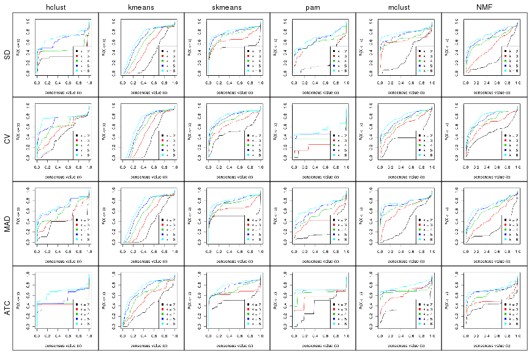
Consensus heatmaps for all methods. (What is a consensus heatmap?)
collect_plots(res_list, k = 2, fun = consensus_heatmap, mc.cores = 4)
collect_plots(res_list, k = 3, fun = consensus_heatmap, mc.cores = 4)
collect_plots(res_list, k = 4, fun = consensus_heatmap, mc.cores = 4)
collect_plots(res_list, k = 5, fun = consensus_heatmap, mc.cores = 4)
collect_plots(res_list, k = 6, fun = consensus_heatmap, mc.cores = 4)
Membership heatmaps for all methods. (What is a membership heatmap?)
collect_plots(res_list, k = 2, fun = membership_heatmap, mc.cores = 4)
collect_plots(res_list, k = 3, fun = membership_heatmap, mc.cores = 4)
collect_plots(res_list, k = 4, fun = membership_heatmap, mc.cores = 4)
collect_plots(res_list, k = 5, fun = membership_heatmap, mc.cores = 4)
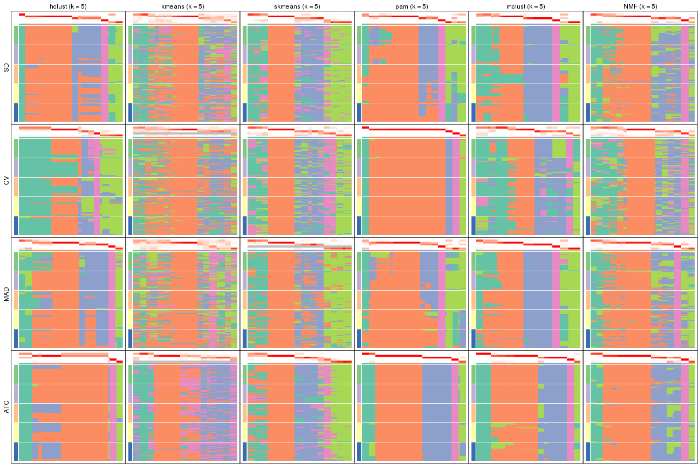
collect_plots(res_list, k = 6, fun = membership_heatmap, mc.cores = 4)
Signature heatmaps for all methods. (What is a signature heatmap?)
Note in following heatmaps, rows are scaled.
collect_plots(res_list, k = 2, fun = get_signatures, mc.cores = 4)
collect_plots(res_list, k = 3, fun = get_signatures, mc.cores = 4)
collect_plots(res_list, k = 4, fun = get_signatures, mc.cores = 4)
collect_plots(res_list, k = 5, fun = get_signatures, mc.cores = 4)
collect_plots(res_list, k = 6, fun = get_signatures, mc.cores = 4)
The statistics used for measuring the stability of consensus partitioning. (How are they defined?)
get_stats(res_list, k = 2)
#> k 1-PAC mean_silhouette concordance area_increased Rand Jaccard
#> SD:NMF 2 0.3429 0.750 0.865 0.294 0.774 0.774
#> CV:NMF 2 0.4801 0.827 0.905 0.483 0.508 0.508
#> MAD:NMF 2 0.4627 0.811 0.902 0.255 0.774 0.774
#> ATC:NMF 2 0.7935 0.913 0.953 0.424 0.564 0.564
#> SD:skmeans 2 1.0000 0.965 0.982 0.504 0.494 0.494
#> CV:skmeans 2 0.6156 0.876 0.913 0.502 0.494 0.494
#> MAD:skmeans 2 1.0000 0.986 0.992 0.505 0.494 0.494
#> ATC:skmeans 2 0.8037 0.940 0.966 0.498 0.494 0.494
#> SD:mclust 2 0.3312 0.443 0.798 0.359 0.724 0.724
#> CV:mclust 2 0.4384 0.913 0.907 0.392 0.615 0.615
#> MAD:mclust 2 0.2743 0.560 0.738 0.383 0.508 0.508
#> ATC:mclust 2 0.9928 0.962 0.971 0.326 0.679 0.679
#> SD:kmeans 2 0.1238 0.454 0.783 0.325 0.849 0.849
#> CV:kmeans 2 0.0982 0.266 0.680 0.367 0.792 0.792
#> MAD:kmeans 2 0.1459 0.508 0.777 0.327 0.679 0.679
#> ATC:kmeans 2 0.3111 0.704 0.851 0.385 0.604 0.604
#> SD:pam 2 0.3353 0.808 0.883 0.233 0.849 0.849
#> CV:pam 2 1.0000 0.989 0.989 0.132 0.869 0.869
#> MAD:pam 2 0.5002 0.837 0.881 0.235 0.869 0.869
#> ATC:pam 2 0.3836 0.896 0.857 0.414 0.498 0.498
#> SD:hclust 2 0.8687 0.951 0.969 0.341 0.679 0.679
#> CV:hclust 2 0.2386 0.727 0.801 0.430 0.504 0.504
#> MAD:hclust 2 0.6610 0.933 0.942 0.352 0.604 0.604
#> ATC:hclust 2 1.0000 0.990 0.995 0.327 0.679 0.679
get_stats(res_list, k = 3)
#> k 1-PAC mean_silhouette concordance area_increased Rand Jaccard
#> SD:NMF 3 0.288 0.514 0.728 0.744 0.769 0.707
#> CV:NMF 3 0.465 0.750 0.827 0.331 0.746 0.533
#> MAD:NMF 3 0.289 0.633 0.798 0.940 0.784 0.727
#> ATC:NMF 3 0.787 0.898 0.928 0.192 0.952 0.915
#> SD:skmeans 3 0.705 0.873 0.917 0.303 0.819 0.645
#> CV:skmeans 3 0.599 0.744 0.865 0.331 0.633 0.385
#> MAD:skmeans 3 0.696 0.897 0.926 0.297 0.819 0.645
#> ATC:skmeans 3 0.933 0.917 0.959 0.306 0.819 0.645
#> SD:mclust 3 0.901 0.872 0.931 0.783 0.505 0.374
#> CV:mclust 3 0.500 0.759 0.820 0.598 0.654 0.464
#> MAD:mclust 3 0.541 0.710 0.845 0.651 0.779 0.591
#> ATC:mclust 3 0.725 0.761 0.899 0.942 0.551 0.403
#> SD:kmeans 3 0.109 0.422 0.691 0.521 0.689 0.641
#> CV:kmeans 3 0.108 0.396 0.637 0.384 0.604 0.536
#> MAD:kmeans 3 0.108 0.466 0.679 0.460 0.861 0.801
#> ATC:kmeans 3 0.303 0.696 0.753 0.398 0.696 0.524
#> SD:pam 3 0.671 0.922 0.946 0.936 0.718 0.670
#> CV:pam 3 0.777 0.944 0.961 0.919 0.879 0.860
#> MAD:pam 3 0.514 0.854 0.903 0.888 0.707 0.663
#> ATC:pam 3 0.632 0.935 0.945 0.312 0.933 0.865
#> SD:hclust 3 1.000 0.971 0.979 0.271 0.897 0.848
#> CV:hclust 3 0.366 0.675 0.759 0.249 0.937 0.874
#> MAD:hclust 3 0.397 0.814 0.808 0.371 0.972 0.954
#> ATC:hclust 3 1.000 0.991 0.996 0.312 0.897 0.848
get_stats(res_list, k = 4)
#> k 1-PAC mean_silhouette concordance area_increased Rand Jaccard
#> SD:NMF 4 0.5562 0.770 0.856 0.2819 0.613 0.391
#> CV:NMF 4 0.6182 0.677 0.771 0.1178 0.964 0.889
#> MAD:NMF 4 0.4070 0.712 0.813 0.2684 0.702 0.522
#> ATC:NMF 4 0.6500 0.847 0.913 0.2539 0.713 0.502
#> SD:skmeans 4 0.6611 0.828 0.854 0.1300 0.898 0.706
#> CV:skmeans 4 0.7151 0.722 0.798 0.1191 0.897 0.703
#> MAD:skmeans 4 0.6667 0.844 0.859 0.1338 0.898 0.706
#> ATC:skmeans 4 0.7559 0.769 0.811 0.1040 1.000 1.000
#> SD:mclust 4 0.6990 0.852 0.910 0.0648 0.918 0.787
#> CV:mclust 4 0.5781 0.645 0.812 0.1037 0.889 0.696
#> MAD:mclust 4 0.7154 0.849 0.917 0.1045 0.880 0.686
#> ATC:mclust 4 1.0000 0.950 0.976 0.0757 0.911 0.772
#> SD:kmeans 4 0.1584 0.500 0.649 0.2112 0.759 0.581
#> CV:kmeans 4 0.0927 0.480 0.640 0.1810 0.756 0.583
#> MAD:kmeans 4 0.0927 0.431 0.628 0.2208 0.855 0.748
#> ATC:kmeans 4 0.3012 0.684 0.734 0.1790 0.946 0.861
#> SD:pam 4 0.7491 0.851 0.909 0.3349 0.794 0.643
#> CV:pam 4 1.0000 1.000 1.000 0.4392 0.888 0.851
#> MAD:pam 4 0.5398 0.703 0.832 0.2583 0.833 0.709
#> ATC:pam 4 0.9789 0.959 0.970 0.2035 0.905 0.779
#> SD:hclust 4 0.7367 0.906 0.929 0.0864 0.984 0.971
#> CV:hclust 4 0.5530 0.762 0.753 0.1472 0.936 0.857
#> MAD:hclust 4 0.5429 0.806 0.777 0.2261 0.744 0.555
#> ATC:hclust 4 1.0000 0.982 0.992 0.0436 0.982 0.969
get_stats(res_list, k = 5)
#> k 1-PAC mean_silhouette concordance area_increased Rand Jaccard
#> SD:NMF 5 0.6139 0.664 0.779 0.0838 0.894 0.709
#> CV:NMF 5 0.6583 0.589 0.711 0.0650 0.925 0.759
#> MAD:NMF 5 0.5338 0.700 0.766 0.0971 0.906 0.747
#> ATC:NMF 5 0.8623 0.860 0.912 0.0916 0.966 0.902
#> SD:skmeans 5 0.7731 0.790 0.815 0.0603 0.972 0.886
#> CV:skmeans 5 0.7254 0.685 0.764 0.0610 0.953 0.818
#> MAD:skmeans 5 0.7485 0.762 0.780 0.0590 1.000 1.000
#> ATC:skmeans 5 0.7137 0.772 0.803 0.0698 0.837 0.542
#> SD:mclust 5 0.7753 0.727 0.837 0.1032 0.911 0.723
#> CV:mclust 5 0.6117 0.687 0.781 0.0701 0.957 0.854
#> MAD:mclust 5 0.8698 0.807 0.876 0.0790 0.972 0.905
#> ATC:mclust 5 0.8917 0.927 0.945 0.0485 0.984 0.949
#> SD:kmeans 5 0.2130 0.494 0.624 0.1183 0.940 0.831
#> CV:kmeans 5 0.0735 0.394 0.557 0.0756 0.962 0.905
#> MAD:kmeans 5 0.1592 0.363 0.561 0.1275 0.811 0.590
#> ATC:kmeans 5 0.4191 0.574 0.690 0.1246 0.961 0.890
#> SD:pam 5 0.6080 0.755 0.833 0.0850 0.933 0.818
#> CV:pam 5 1.0000 0.995 0.995 0.2355 0.914 0.864
#> MAD:pam 5 0.5991 0.772 0.806 0.1285 0.882 0.717
#> ATC:pam 5 0.9580 0.975 0.978 0.0628 0.963 0.890
#> SD:hclust 5 0.7157 0.839 0.872 0.3643 0.744 0.542
#> CV:hclust 5 0.7009 0.877 0.810 0.1501 0.837 0.586
#> MAD:hclust 5 0.6647 0.734 0.829 0.1606 0.982 0.943
#> ATC:hclust 5 0.7202 0.813 0.879 0.2324 0.999 0.998
get_stats(res_list, k = 6)
#> k 1-PAC mean_silhouette concordance area_increased Rand Jaccard
#> SD:NMF 6 0.666 0.683 0.790 0.0533 0.929 0.781
#> CV:NMF 6 0.697 0.585 0.681 0.0416 0.881 0.588
#> MAD:NMF 6 0.646 0.667 0.746 0.0498 0.936 0.801
#> ATC:NMF 6 0.814 0.827 0.869 0.0514 1.000 1.000
#> SD:skmeans 6 0.807 0.706 0.755 0.0369 0.946 0.763
#> CV:skmeans 6 0.748 0.677 0.745 0.0375 0.961 0.813
#> MAD:skmeans 6 0.822 0.660 0.742 0.0386 0.903 0.627
#> ATC:skmeans 6 0.736 0.703 0.769 0.0440 0.953 0.781
#> SD:mclust 6 0.848 0.875 0.927 0.0572 0.927 0.707
#> CV:mclust 6 0.655 0.728 0.740 0.0684 0.897 0.631
#> MAD:mclust 6 0.913 0.868 0.907 0.0332 0.981 0.928
#> ATC:mclust 6 0.819 0.849 0.897 0.0908 0.911 0.708
#> SD:kmeans 6 0.346 0.494 0.545 0.0729 0.845 0.556
#> CV:kmeans 6 0.168 0.439 0.532 0.0845 0.819 0.531
#> MAD:kmeans 6 0.276 0.443 0.543 0.0836 0.793 0.474
#> ATC:kmeans 6 0.557 0.586 0.654 0.0607 0.904 0.700
#> SD:pam 6 0.580 0.792 0.883 0.0557 0.966 0.890
#> CV:pam 6 0.844 0.892 0.883 0.1761 0.921 0.856
#> MAD:pam 6 0.786 0.795 0.833 0.0883 0.950 0.846
#> ATC:pam 6 1.000 0.992 0.997 0.0180 0.989 0.964
#> SD:hclust 6 0.728 0.817 0.859 0.0938 0.958 0.863
#> CV:hclust 6 0.909 0.909 0.908 0.0814 0.992 0.964
#> MAD:hclust 6 0.688 0.705 0.817 0.0419 0.974 0.914
#> ATC:hclust 6 0.788 0.919 0.945 0.2080 0.744 0.540
Following heatmap plots the partition for each combination of methods and the lightness correspond to the silhouette scores for samples in each method. On top the consensus subgroup is inferred from all methods by taking the mean silhouette scores as weight.
collect_stats(res_list, k = 2)
collect_stats(res_list, k = 3)
collect_stats(res_list, k = 4)
collect_stats(res_list, k = 5)
collect_stats(res_list, k = 6)
Collect partitions from all methods:
collect_classes(res_list, k = 2)

collect_classes(res_list, k = 3)
collect_classes(res_list, k = 4)
collect_classes(res_list, k = 5)
collect_classes(res_list, k = 6)
Overlap of top rows from different top-row methods:
top_rows_overlap(res_list, top_n = 731, method = "euler")
top_rows_overlap(res_list, top_n = 1462, method = "euler")
top_rows_overlap(res_list, top_n = 2192, method = "euler")
top_rows_overlap(res_list, top_n = 2923, method = "euler")
top_rows_overlap(res_list, top_n = 3654, method = "euler")
Also visualize the correspondance of rankings between different top-row methods:
top_rows_overlap(res_list, top_n = 731, method = "correspondance")
top_rows_overlap(res_list, top_n = 1462, method = "correspondance")
top_rows_overlap(res_list, top_n = 2192, method = "correspondance")
top_rows_overlap(res_list, top_n = 2923, method = "correspondance")
top_rows_overlap(res_list, top_n = 3654, method = "correspondance")
Heatmaps of the top rows:
top_rows_heatmap(res_list, top_n = 731)
top_rows_heatmap(res_list, top_n = 1462)
top_rows_heatmap(res_list, top_n = 2192)
top_rows_heatmap(res_list, top_n = 2923)

top_rows_heatmap(res_list, top_n = 3654)
The object with results only for a single top-value method and a single partition method can be extracted as:
res = res_list["SD", "hclust"]
# you can also extract it by
# res = res_list["SD:hclust"]
A summary of res and all the functions that can be applied to it:
res
#> A 'ConsensusPartition' object with k = 2, 3, 4, 5, 6.
#> On a matrix with 7309 rows and 86 columns.
#> Top rows (731, 1462, 2192, 2923, 3654) are extracted by 'SD' method.
#> Subgroups are detected by 'hclust' method.
#> Performed in total 1250 partitions by row resampling.
#> Best k for subgroups seems to be 3.
#>
#> Following methods can be applied to this 'ConsensusPartition' object:
#> [1] "cola_report" "collect_classes" "collect_plots"
#> [4] "collect_stats" "colnames" "compare_signatures"
#> [7] "consensus_heatmap" "dimension_reduction" "functional_enrichment"
#> [10] "get_anno_col" "get_anno" "get_classes"
#> [13] "get_consensus" "get_matrix" "get_membership"
#> [16] "get_param" "get_signatures" "get_stats"
#> [19] "is_best_k" "is_stable_k" "membership_heatmap"
#> [22] "ncol" "nrow" "plot_ecdf"
#> [25] "rownames" "select_partition_number" "show"
#> [28] "suggest_best_k" "test_to_known_factors"
collect_plots() function collects all the plots made from res for all k (number of partitions)
into one single page to provide an easy and fast comparison between different k.
collect_plots(res)
The plots are:
k and the heatmap of
predicted classes for each k.k.k.k.All the plots in panels can be made by individual functions and they are plotted later in this section.
select_partition_number() produces several plots showing different
statistics for choosing “optimized” k. There are following statistics:
k;k, the area increased is defined as \(A_k - A_{k-1}\).The detailed explanations of these statistics can be found in the cola vignette.
Generally speaking, lower PAC score, higher mean silhouette score or higher
concordance corresponds to better partition. Rand index and Jaccard index
measure how similar the current partition is compared to partition with k-1.
If they are too similar, we won't accept k is better than k-1.
select_partition_number(res)
The numeric values for all these statistics can be obtained by get_stats().
get_stats(res)
#> k 1-PAC mean_silhouette concordance area_increased Rand Jaccard
#> 2 2 0.869 0.951 0.969 0.3411 0.679 0.679
#> 3 3 1.000 0.971 0.979 0.2713 0.897 0.848
#> 4 4 0.737 0.906 0.929 0.0864 0.984 0.971
#> 5 5 0.716 0.839 0.872 0.3643 0.744 0.542
#> 6 6 0.728 0.817 0.859 0.0938 0.958 0.863
suggest_best_k() suggests the best \(k\) based on these statistics. The rules are as follows:
suggest_best_k(res)
#> [1] 3
Following shows the table of the partitions (You need to click the show/hide
code output link to see it). The membership matrix (columns with name p*)
is inferred by
clue::cl_consensus()
function with the SE method. Basically the value in the membership matrix
represents the probability to belong to a certain group. The finall class
label for an item is determined with the group with highest probability it
belongs to.
In get_classes() function, the entropy is calculated from the membership
matrix and the silhouette score is calculated from the consensus matrix.
cbind(get_classes(res, k = 2), get_membership(res, k = 2))
#> class entropy silhouette p1 p2
#> SRR2240643 2 0.2236 0.957 0.036 0.964
#> SRR2240644 2 0.2236 0.957 0.036 0.964
#> SRR2240645 2 0.2236 0.957 0.036 0.964
#> SRR2240646 2 0.2236 0.957 0.036 0.964
#> SRR2240647 2 0.2236 0.957 0.036 0.964
#> SRR2240638 2 0.2236 0.957 0.036 0.964
#> SRR2240639 2 0.2236 0.957 0.036 0.964
#> SRR2240640 2 0.2236 0.957 0.036 0.964
#> SRR2240641 2 0.2236 0.957 0.036 0.964
#> SRR2240642 2 0.2236 0.957 0.036 0.964
#> SRR2240633 2 0.4022 0.929 0.080 0.920
#> SRR2240634 2 0.4022 0.929 0.080 0.920
#> SRR2240635 2 0.4022 0.929 0.080 0.920
#> SRR2240636 2 0.4022 0.929 0.080 0.920
#> SRR2240637 2 0.4022 0.929 0.080 0.920
#> SRR2240624 2 0.2236 0.957 0.036 0.964
#> SRR2240625 2 0.2236 0.957 0.036 0.964
#> SRR2240626 2 0.2236 0.957 0.036 0.964
#> SRR2240627 2 0.2236 0.957 0.036 0.964
#> SRR2240628 2 0.2236 0.957 0.036 0.964
#> SRR2240629 2 0.2236 0.957 0.036 0.964
#> SRR2240630 2 0.2236 0.957 0.036 0.964
#> SRR2240631 2 0.2236 0.957 0.036 0.964
#> SRR2240632 2 0.2236 0.957 0.036 0.964
#> SRR2240613 1 0.1184 0.989 0.984 0.016
#> SRR2240614 1 0.1184 0.989 0.984 0.016
#> SRR2240615 1 0.1184 0.989 0.984 0.016
#> SRR2240616 1 0.1184 0.989 0.984 0.016
#> SRR2240617 1 0.1184 0.989 0.984 0.016
#> SRR2240618 2 0.7674 0.764 0.224 0.776
#> SRR2240619 2 0.7674 0.764 0.224 0.776
#> SRR2240620 2 0.7674 0.764 0.224 0.776
#> SRR2240621 2 0.7674 0.764 0.224 0.776
#> SRR2240622 2 0.7674 0.764 0.224 0.776
#> SRR2240623 2 0.7674 0.764 0.224 0.776
#> SRR2240609 2 0.0000 0.964 0.000 1.000
#> SRR2240610 2 0.0000 0.964 0.000 1.000
#> SRR2240611 2 0.0000 0.964 0.000 1.000
#> SRR2240612 2 0.0000 0.964 0.000 1.000
#> SRR2240594 2 0.0000 0.964 0.000 1.000
#> SRR2240595 2 0.0000 0.964 0.000 1.000
#> SRR2240596 2 0.0000 0.964 0.000 1.000
#> SRR2240597 2 0.0000 0.964 0.000 1.000
#> SRR2240598 2 0.0000 0.964 0.000 1.000
#> SRR2240604 2 0.0000 0.964 0.000 1.000
#> SRR2240605 2 0.0000 0.964 0.000 1.000
#> SRR2240606 2 0.0000 0.964 0.000 1.000
#> SRR2240607 2 0.0000 0.964 0.000 1.000
#> SRR2240608 2 0.0000 0.964 0.000 1.000
#> SRR2240599 1 0.1414 0.990 0.980 0.020
#> SRR2240600 1 0.1414 0.990 0.980 0.020
#> SRR2240601 1 0.1414 0.990 0.980 0.020
#> SRR2240602 1 0.1414 0.990 0.980 0.020
#> SRR2240603 1 0.1414 0.990 0.980 0.020
#> SRR2240584 2 0.0000 0.964 0.000 1.000
#> SRR2240585 2 0.0000 0.964 0.000 1.000
#> SRR2240586 2 0.0000 0.964 0.000 1.000
#> SRR2240587 2 0.0000 0.964 0.000 1.000
#> SRR2240588 2 0.0000 0.964 0.000 1.000
#> SRR2240589 1 0.0672 0.990 0.992 0.008
#> SRR2240590 1 0.0672 0.990 0.992 0.008
#> SRR2240591 1 0.0672 0.990 0.992 0.008
#> SRR2240592 1 0.0672 0.990 0.992 0.008
#> SRR2240593 1 0.0672 0.990 0.992 0.008
#> SRR2240578 2 0.0376 0.963 0.004 0.996
#> SRR2240579 2 0.0376 0.963 0.004 0.996
#> SRR2240580 2 0.0376 0.963 0.004 0.996
#> SRR2240581 2 0.0376 0.963 0.004 0.996
#> SRR2240582 2 0.0376 0.963 0.004 0.996
#> SRR2240583 2 0.0376 0.963 0.004 0.996
#> SRR1825969 2 0.0000 0.964 0.000 1.000
#> SRR1825968 2 0.0000 0.964 0.000 1.000
#> SRR1825970 1 0.1414 0.990 0.980 0.020
#> SRR1825966 2 0.0000 0.964 0.000 1.000
#> SRR1825967 2 0.0000 0.964 0.000 1.000
#> SRR1825965 2 0.0000 0.964 0.000 1.000
#> SRR1825962 2 0.0000 0.964 0.000 1.000
#> SRR1825963 2 0.0000 0.964 0.000 1.000
#> SRR1825964 2 0.0000 0.964 0.000 1.000
#> SRR1825961 1 0.0000 0.984 1.000 0.000
#> SRR1825960 2 0.0000 0.964 0.000 1.000
#> SRR1825958 2 0.0000 0.964 0.000 1.000
#> SRR1825959 2 0.0000 0.964 0.000 1.000
#> SRR1825956 2 0.0000 0.964 0.000 1.000
#> SRR1825957 2 0.0000 0.964 0.000 1.000
#> SRR1825955 2 0.0000 0.964 0.000 1.000
cbind(get_classes(res, k = 3), get_membership(res, k = 3))
#> class entropy silhouette p1 p2 p3
#> SRR2240643 2 0.1877 0.967 0.032 0.956 0.012
#> SRR2240644 2 0.1877 0.967 0.032 0.956 0.012
#> SRR2240645 2 0.1877 0.967 0.032 0.956 0.012
#> SRR2240646 2 0.1877 0.967 0.032 0.956 0.012
#> SRR2240647 2 0.1877 0.967 0.032 0.956 0.012
#> SRR2240638 2 0.1877 0.967 0.032 0.956 0.012
#> SRR2240639 2 0.1877 0.967 0.032 0.956 0.012
#> SRR2240640 2 0.1877 0.967 0.032 0.956 0.012
#> SRR2240641 2 0.1877 0.967 0.032 0.956 0.012
#> SRR2240642 2 0.1877 0.967 0.032 0.956 0.012
#> SRR2240633 2 0.3253 0.934 0.052 0.912 0.036
#> SRR2240634 2 0.3253 0.934 0.052 0.912 0.036
#> SRR2240635 2 0.3253 0.934 0.052 0.912 0.036
#> SRR2240636 2 0.3253 0.934 0.052 0.912 0.036
#> SRR2240637 2 0.3253 0.934 0.052 0.912 0.036
#> SRR2240624 2 0.1877 0.967 0.032 0.956 0.012
#> SRR2240625 2 0.1877 0.967 0.032 0.956 0.012
#> SRR2240626 2 0.1877 0.967 0.032 0.956 0.012
#> SRR2240627 2 0.1877 0.967 0.032 0.956 0.012
#> SRR2240628 2 0.1877 0.967 0.032 0.956 0.012
#> SRR2240629 2 0.1877 0.967 0.032 0.956 0.012
#> SRR2240630 2 0.1877 0.967 0.032 0.956 0.012
#> SRR2240631 2 0.1877 0.967 0.032 0.956 0.012
#> SRR2240632 2 0.1877 0.967 0.032 0.956 0.012
#> SRR2240613 3 0.2280 0.942 0.052 0.008 0.940
#> SRR2240614 3 0.2280 0.942 0.052 0.008 0.940
#> SRR2240615 3 0.2280 0.942 0.052 0.008 0.940
#> SRR2240616 3 0.2280 0.942 0.052 0.008 0.940
#> SRR2240617 3 0.2280 0.942 0.052 0.008 0.940
#> SRR2240618 1 0.0237 1.000 0.996 0.000 0.004
#> SRR2240619 1 0.0237 1.000 0.996 0.000 0.004
#> SRR2240620 1 0.0237 1.000 0.996 0.000 0.004
#> SRR2240621 1 0.0237 1.000 0.996 0.000 0.004
#> SRR2240622 1 0.0237 1.000 0.996 0.000 0.004
#> SRR2240623 1 0.0237 1.000 0.996 0.000 0.004
#> SRR2240609 2 0.0000 0.979 0.000 1.000 0.000
#> SRR2240610 2 0.0000 0.979 0.000 1.000 0.000
#> SRR2240611 2 0.0000 0.979 0.000 1.000 0.000
#> SRR2240612 2 0.0000 0.979 0.000 1.000 0.000
#> SRR2240594 2 0.0000 0.979 0.000 1.000 0.000
#> SRR2240595 2 0.0000 0.979 0.000 1.000 0.000
#> SRR2240596 2 0.0000 0.979 0.000 1.000 0.000
#> SRR2240597 2 0.0000 0.979 0.000 1.000 0.000
#> SRR2240598 2 0.0000 0.979 0.000 1.000 0.000
#> SRR2240604 2 0.0000 0.979 0.000 1.000 0.000
#> SRR2240605 2 0.0000 0.979 0.000 1.000 0.000
#> SRR2240606 2 0.0000 0.979 0.000 1.000 0.000
#> SRR2240607 2 0.0000 0.979 0.000 1.000 0.000
#> SRR2240608 2 0.0000 0.979 0.000 1.000 0.000
#> SRR2240599 3 0.0983 0.967 0.004 0.016 0.980
#> SRR2240600 3 0.0983 0.967 0.004 0.016 0.980
#> SRR2240601 3 0.0983 0.967 0.004 0.016 0.980
#> SRR2240602 3 0.0983 0.967 0.004 0.016 0.980
#> SRR2240603 3 0.0983 0.967 0.004 0.016 0.980
#> SRR2240584 2 0.0000 0.979 0.000 1.000 0.000
#> SRR2240585 2 0.0000 0.979 0.000 1.000 0.000
#> SRR2240586 2 0.0000 0.979 0.000 1.000 0.000
#> SRR2240587 2 0.0000 0.979 0.000 1.000 0.000
#> SRR2240588 2 0.0000 0.979 0.000 1.000 0.000
#> SRR2240589 3 0.0475 0.966 0.004 0.004 0.992
#> SRR2240590 3 0.0475 0.966 0.004 0.004 0.992
#> SRR2240591 3 0.0475 0.966 0.004 0.004 0.992
#> SRR2240592 3 0.0475 0.966 0.004 0.004 0.992
#> SRR2240593 3 0.0475 0.966 0.004 0.004 0.992
#> SRR2240578 2 0.0237 0.978 0.000 0.996 0.004
#> SRR2240579 2 0.0237 0.978 0.000 0.996 0.004
#> SRR2240580 2 0.0237 0.978 0.000 0.996 0.004
#> SRR2240581 2 0.0237 0.978 0.000 0.996 0.004
#> SRR2240582 2 0.0237 0.978 0.000 0.996 0.004
#> SRR2240583 2 0.0237 0.978 0.000 0.996 0.004
#> SRR1825969 2 0.0000 0.979 0.000 1.000 0.000
#> SRR1825968 2 0.0000 0.979 0.000 1.000 0.000
#> SRR1825970 3 0.0983 0.967 0.004 0.016 0.980
#> SRR1825966 2 0.0000 0.979 0.000 1.000 0.000
#> SRR1825967 2 0.0000 0.979 0.000 1.000 0.000
#> SRR1825965 2 0.0000 0.979 0.000 1.000 0.000
#> SRR1825962 2 0.0000 0.979 0.000 1.000 0.000
#> SRR1825963 2 0.0000 0.979 0.000 1.000 0.000
#> SRR1825964 2 0.0000 0.979 0.000 1.000 0.000
#> SRR1825961 3 0.0424 0.961 0.008 0.000 0.992
#> SRR1825960 2 0.0000 0.979 0.000 1.000 0.000
#> SRR1825958 2 0.0000 0.979 0.000 1.000 0.000
#> SRR1825959 2 0.0000 0.979 0.000 1.000 0.000
#> SRR1825956 2 0.0000 0.979 0.000 1.000 0.000
#> SRR1825957 2 0.0000 0.979 0.000 1.000 0.000
#> SRR1825955 2 0.0000 0.979 0.000 1.000 0.000
cbind(get_classes(res, k = 4), get_membership(res, k = 4))
#> class entropy silhouette p1 p2 p3 p4
#> SRR2240643 2 0.2840 0.930 0.000 0.900 0.056 0.044
#> SRR2240644 2 0.2840 0.930 0.000 0.900 0.056 0.044
#> SRR2240645 2 0.2840 0.930 0.000 0.900 0.056 0.044
#> SRR2240646 2 0.2840 0.930 0.000 0.900 0.056 0.044
#> SRR2240647 2 0.2840 0.930 0.000 0.900 0.056 0.044
#> SRR2240638 2 0.2840 0.930 0.000 0.900 0.056 0.044
#> SRR2240639 2 0.2840 0.930 0.000 0.900 0.056 0.044
#> SRR2240640 2 0.2840 0.930 0.000 0.900 0.056 0.044
#> SRR2240641 2 0.2840 0.930 0.000 0.900 0.056 0.044
#> SRR2240642 2 0.2840 0.930 0.000 0.900 0.056 0.044
#> SRR2240633 2 0.4327 0.883 0.012 0.832 0.060 0.096
#> SRR2240634 2 0.4327 0.883 0.012 0.832 0.060 0.096
#> SRR2240635 2 0.4327 0.883 0.012 0.832 0.060 0.096
#> SRR2240636 2 0.4327 0.883 0.012 0.832 0.060 0.096
#> SRR2240637 2 0.4327 0.883 0.012 0.832 0.060 0.096
#> SRR2240624 2 0.2759 0.931 0.000 0.904 0.052 0.044
#> SRR2240625 2 0.2759 0.931 0.000 0.904 0.052 0.044
#> SRR2240626 2 0.2759 0.931 0.000 0.904 0.052 0.044
#> SRR2240627 2 0.2840 0.930 0.000 0.900 0.056 0.044
#> SRR2240628 2 0.2840 0.930 0.000 0.900 0.056 0.044
#> SRR2240629 2 0.2840 0.930 0.000 0.900 0.056 0.044
#> SRR2240630 2 0.2840 0.930 0.000 0.900 0.056 0.044
#> SRR2240631 2 0.2840 0.930 0.000 0.900 0.056 0.044
#> SRR2240632 2 0.2840 0.930 0.000 0.900 0.056 0.044
#> SRR2240613 1 0.5320 0.695 0.572 0.000 0.012 0.416
#> SRR2240614 1 0.5320 0.695 0.572 0.000 0.012 0.416
#> SRR2240615 1 0.5320 0.695 0.572 0.000 0.012 0.416
#> SRR2240616 1 0.5320 0.695 0.572 0.000 0.012 0.416
#> SRR2240617 1 0.5320 0.695 0.572 0.000 0.012 0.416
#> SRR2240618 4 0.4898 1.000 0.000 0.000 0.416 0.584
#> SRR2240619 4 0.4898 1.000 0.000 0.000 0.416 0.584
#> SRR2240620 4 0.4898 1.000 0.000 0.000 0.416 0.584
#> SRR2240621 4 0.4898 1.000 0.000 0.000 0.416 0.584
#> SRR2240622 4 0.4898 1.000 0.000 0.000 0.416 0.584
#> SRR2240623 4 0.4898 1.000 0.000 0.000 0.416 0.584
#> SRR2240609 2 0.0000 0.956 0.000 1.000 0.000 0.000
#> SRR2240610 2 0.0000 0.956 0.000 1.000 0.000 0.000
#> SRR2240611 2 0.0000 0.956 0.000 1.000 0.000 0.000
#> SRR2240612 2 0.0000 0.956 0.000 1.000 0.000 0.000
#> SRR2240594 2 0.0000 0.956 0.000 1.000 0.000 0.000
#> SRR2240595 2 0.0000 0.956 0.000 1.000 0.000 0.000
#> SRR2240596 2 0.0000 0.956 0.000 1.000 0.000 0.000
#> SRR2240597 2 0.0000 0.956 0.000 1.000 0.000 0.000
#> SRR2240598 2 0.0000 0.956 0.000 1.000 0.000 0.000
#> SRR2240604 2 0.0000 0.956 0.000 1.000 0.000 0.000
#> SRR2240605 2 0.0000 0.956 0.000 1.000 0.000 0.000
#> SRR2240606 2 0.0000 0.956 0.000 1.000 0.000 0.000
#> SRR2240607 2 0.0000 0.956 0.000 1.000 0.000 0.000
#> SRR2240608 2 0.0000 0.956 0.000 1.000 0.000 0.000
#> SRR2240599 1 0.0000 0.564 1.000 0.000 0.000 0.000
#> SRR2240600 1 0.0000 0.564 1.000 0.000 0.000 0.000
#> SRR2240601 1 0.0000 0.564 1.000 0.000 0.000 0.000
#> SRR2240602 1 0.0000 0.564 1.000 0.000 0.000 0.000
#> SRR2240603 1 0.0000 0.564 1.000 0.000 0.000 0.000
#> SRR2240584 2 0.0000 0.956 0.000 1.000 0.000 0.000
#> SRR2240585 2 0.0000 0.956 0.000 1.000 0.000 0.000
#> SRR2240586 2 0.0000 0.956 0.000 1.000 0.000 0.000
#> SRR2240587 2 0.0000 0.956 0.000 1.000 0.000 0.000
#> SRR2240588 2 0.0000 0.956 0.000 1.000 0.000 0.000
#> SRR2240589 3 0.4992 1.000 0.476 0.000 0.524 0.000
#> SRR2240590 3 0.4992 1.000 0.476 0.000 0.524 0.000
#> SRR2240591 3 0.4992 1.000 0.476 0.000 0.524 0.000
#> SRR2240592 3 0.4992 1.000 0.476 0.000 0.524 0.000
#> SRR2240593 3 0.4992 1.000 0.476 0.000 0.524 0.000
#> SRR2240578 2 0.0707 0.948 0.020 0.980 0.000 0.000
#> SRR2240579 2 0.0707 0.948 0.020 0.980 0.000 0.000
#> SRR2240580 2 0.0707 0.948 0.020 0.980 0.000 0.000
#> SRR2240581 2 0.0707 0.948 0.020 0.980 0.000 0.000
#> SRR2240582 2 0.0707 0.948 0.020 0.980 0.000 0.000
#> SRR2240583 2 0.0707 0.948 0.020 0.980 0.000 0.000
#> SRR1825969 2 0.0000 0.956 0.000 1.000 0.000 0.000
#> SRR1825968 2 0.0000 0.956 0.000 1.000 0.000 0.000
#> SRR1825970 1 0.1940 0.608 0.924 0.000 0.000 0.076
#> SRR1825966 2 0.0000 0.956 0.000 1.000 0.000 0.000
#> SRR1825967 2 0.0000 0.956 0.000 1.000 0.000 0.000
#> SRR1825965 2 0.0000 0.956 0.000 1.000 0.000 0.000
#> SRR1825962 2 0.0000 0.956 0.000 1.000 0.000 0.000
#> SRR1825963 2 0.0000 0.956 0.000 1.000 0.000 0.000
#> SRR1825964 2 0.0000 0.956 0.000 1.000 0.000 0.000
#> SRR1825961 1 0.5075 0.681 0.644 0.000 0.012 0.344
#> SRR1825960 2 0.0000 0.956 0.000 1.000 0.000 0.000
#> SRR1825958 2 0.0000 0.956 0.000 1.000 0.000 0.000
#> SRR1825959 2 0.0000 0.956 0.000 1.000 0.000 0.000
#> SRR1825956 2 0.0000 0.956 0.000 1.000 0.000 0.000
#> SRR1825957 2 0.0000 0.956 0.000 1.000 0.000 0.000
#> SRR1825955 2 0.0000 0.956 0.000 1.000 0.000 0.000
cbind(get_classes(res, k = 5), get_membership(res, k = 5))
#> class entropy silhouette p1 p2 p3 p4 p5
#> SRR2240643 3 0.3816 0.839 0.000 0.304 0.696 0 0.000
#> SRR2240644 3 0.3816 0.839 0.000 0.304 0.696 0 0.000
#> SRR2240645 3 0.3816 0.839 0.000 0.304 0.696 0 0.000
#> SRR2240646 3 0.3816 0.839 0.000 0.304 0.696 0 0.000
#> SRR2240647 3 0.3816 0.839 0.000 0.304 0.696 0 0.000
#> SRR2240638 3 0.3816 0.839 0.000 0.304 0.696 0 0.000
#> SRR2240639 3 0.3816 0.839 0.000 0.304 0.696 0 0.000
#> SRR2240640 3 0.3816 0.839 0.000 0.304 0.696 0 0.000
#> SRR2240641 3 0.3816 0.839 0.000 0.304 0.696 0 0.000
#> SRR2240642 3 0.3816 0.839 0.000 0.304 0.696 0 0.000
#> SRR2240633 3 0.2110 0.473 0.000 0.016 0.912 0 0.072
#> SRR2240634 3 0.2110 0.473 0.000 0.016 0.912 0 0.072
#> SRR2240635 3 0.2110 0.473 0.000 0.016 0.912 0 0.072
#> SRR2240636 3 0.2110 0.473 0.000 0.016 0.912 0 0.072
#> SRR2240637 3 0.2110 0.473 0.000 0.016 0.912 0 0.072
#> SRR2240624 3 0.4306 0.528 0.000 0.492 0.508 0 0.000
#> SRR2240625 3 0.4306 0.528 0.000 0.492 0.508 0 0.000
#> SRR2240626 3 0.4306 0.528 0.000 0.492 0.508 0 0.000
#> SRR2240627 3 0.3949 0.824 0.000 0.332 0.668 0 0.000
#> SRR2240628 3 0.3949 0.824 0.000 0.332 0.668 0 0.000
#> SRR2240629 3 0.3949 0.824 0.000 0.332 0.668 0 0.000
#> SRR2240630 3 0.3949 0.824 0.000 0.332 0.668 0 0.000
#> SRR2240631 3 0.3949 0.824 0.000 0.332 0.668 0 0.000
#> SRR2240632 3 0.3949 0.824 0.000 0.332 0.668 0 0.000
#> SRR2240613 5 0.0703 0.685 0.000 0.000 0.024 0 0.976
#> SRR2240614 5 0.0703 0.685 0.000 0.000 0.024 0 0.976
#> SRR2240615 5 0.0703 0.685 0.000 0.000 0.024 0 0.976
#> SRR2240616 5 0.0703 0.685 0.000 0.000 0.024 0 0.976
#> SRR2240617 5 0.0703 0.685 0.000 0.000 0.024 0 0.976
#> SRR2240618 4 0.0000 1.000 0.000 0.000 0.000 1 0.000
#> SRR2240619 4 0.0000 1.000 0.000 0.000 0.000 1 0.000
#> SRR2240620 4 0.0000 1.000 0.000 0.000 0.000 1 0.000
#> SRR2240621 4 0.0000 1.000 0.000 0.000 0.000 1 0.000
#> SRR2240622 4 0.0000 1.000 0.000 0.000 0.000 1 0.000
#> SRR2240623 4 0.0000 1.000 0.000 0.000 0.000 1 0.000
#> SRR2240609 2 0.0000 0.956 0.000 1.000 0.000 0 0.000
#> SRR2240610 2 0.0000 0.956 0.000 1.000 0.000 0 0.000
#> SRR2240611 2 0.0000 0.956 0.000 1.000 0.000 0 0.000
#> SRR2240612 2 0.0000 0.956 0.000 1.000 0.000 0 0.000
#> SRR2240594 2 0.1851 0.893 0.000 0.912 0.088 0 0.000
#> SRR2240595 2 0.1851 0.893 0.000 0.912 0.088 0 0.000
#> SRR2240596 2 0.1851 0.893 0.000 0.912 0.088 0 0.000
#> SRR2240597 2 0.1851 0.893 0.000 0.912 0.088 0 0.000
#> SRR2240598 2 0.1851 0.893 0.000 0.912 0.088 0 0.000
#> SRR2240604 2 0.0000 0.956 0.000 1.000 0.000 0 0.000
#> SRR2240605 2 0.0000 0.956 0.000 1.000 0.000 0 0.000
#> SRR2240606 2 0.0000 0.956 0.000 1.000 0.000 0 0.000
#> SRR2240607 2 0.0000 0.956 0.000 1.000 0.000 0 0.000
#> SRR2240608 2 0.0000 0.956 0.000 1.000 0.000 0 0.000
#> SRR2240599 5 0.4811 0.529 0.452 0.000 0.020 0 0.528
#> SRR2240600 5 0.4811 0.529 0.452 0.000 0.020 0 0.528
#> SRR2240601 5 0.4811 0.529 0.452 0.000 0.020 0 0.528
#> SRR2240602 5 0.4811 0.529 0.452 0.000 0.020 0 0.528
#> SRR2240603 5 0.4811 0.529 0.452 0.000 0.020 0 0.528
#> SRR2240584 2 0.1851 0.893 0.000 0.912 0.088 0 0.000
#> SRR2240585 2 0.1851 0.893 0.000 0.912 0.088 0 0.000
#> SRR2240586 2 0.1851 0.893 0.000 0.912 0.088 0 0.000
#> SRR2240587 2 0.1851 0.893 0.000 0.912 0.088 0 0.000
#> SRR2240588 2 0.1851 0.893 0.000 0.912 0.088 0 0.000
#> SRR2240589 1 0.0000 1.000 1.000 0.000 0.000 0 0.000
#> SRR2240590 1 0.0000 1.000 1.000 0.000 0.000 0 0.000
#> SRR2240591 1 0.0000 1.000 1.000 0.000 0.000 0 0.000
#> SRR2240592 1 0.0000 1.000 1.000 0.000 0.000 0 0.000
#> SRR2240593 1 0.0000 1.000 1.000 0.000 0.000 0 0.000
#> SRR2240578 2 0.0865 0.942 0.004 0.972 0.024 0 0.000
#> SRR2240579 2 0.0865 0.942 0.004 0.972 0.024 0 0.000
#> SRR2240580 2 0.0865 0.942 0.004 0.972 0.024 0 0.000
#> SRR2240581 2 0.0865 0.942 0.004 0.972 0.024 0 0.000
#> SRR2240582 2 0.0865 0.942 0.004 0.972 0.024 0 0.000
#> SRR2240583 2 0.0865 0.942 0.004 0.972 0.024 0 0.000
#> SRR1825969 2 0.0000 0.956 0.000 1.000 0.000 0 0.000
#> SRR1825968 2 0.0000 0.956 0.000 1.000 0.000 0 0.000
#> SRR1825970 5 0.4639 0.579 0.368 0.000 0.020 0 0.612
#> SRR1825966 2 0.0000 0.956 0.000 1.000 0.000 0 0.000
#> SRR1825967 2 0.0000 0.956 0.000 1.000 0.000 0 0.000
#> SRR1825965 2 0.1851 0.893 0.000 0.912 0.088 0 0.000
#> SRR1825962 2 0.0000 0.956 0.000 1.000 0.000 0 0.000
#> SRR1825963 2 0.0000 0.956 0.000 1.000 0.000 0 0.000
#> SRR1825964 2 0.0000 0.956 0.000 1.000 0.000 0 0.000
#> SRR1825961 5 0.1670 0.673 0.052 0.000 0.012 0 0.936
#> SRR1825960 2 0.0000 0.956 0.000 1.000 0.000 0 0.000
#> SRR1825958 2 0.0000 0.956 0.000 1.000 0.000 0 0.000
#> SRR1825959 2 0.0000 0.956 0.000 1.000 0.000 0 0.000
#> SRR1825956 2 0.0000 0.956 0.000 1.000 0.000 0 0.000
#> SRR1825957 2 0.0000 0.956 0.000 1.000 0.000 0 0.000
#> SRR1825955 2 0.0000 0.956 0.000 1.000 0.000 0 0.000
cbind(get_classes(res, k = 6), get_membership(res, k = 6))
#> class entropy silhouette p1 p2 p3 p4 p5 p6
#> SRR2240643 3 0.176 0.882 0.000 0.096 0.904 0 0.000 0.000
#> SRR2240644 3 0.176 0.882 0.000 0.096 0.904 0 0.000 0.000
#> SRR2240645 3 0.176 0.882 0.000 0.096 0.904 0 0.000 0.000
#> SRR2240646 3 0.176 0.882 0.000 0.096 0.904 0 0.000 0.000
#> SRR2240647 3 0.176 0.882 0.000 0.096 0.904 0 0.000 0.000
#> SRR2240638 3 0.176 0.882 0.000 0.096 0.904 0 0.000 0.000
#> SRR2240639 3 0.176 0.882 0.000 0.096 0.904 0 0.000 0.000
#> SRR2240640 3 0.176 0.882 0.000 0.096 0.904 0 0.000 0.000
#> SRR2240641 3 0.176 0.882 0.000 0.096 0.904 0 0.000 0.000
#> SRR2240642 3 0.176 0.882 0.000 0.096 0.904 0 0.000 0.000
#> SRR2240633 6 0.256 1.000 0.000 0.000 0.172 0 0.000 0.828
#> SRR2240634 6 0.256 1.000 0.000 0.000 0.172 0 0.000 0.828
#> SRR2240635 6 0.256 1.000 0.000 0.000 0.172 0 0.000 0.828
#> SRR2240636 6 0.256 1.000 0.000 0.000 0.172 0 0.000 0.828
#> SRR2240637 6 0.256 1.000 0.000 0.000 0.172 0 0.000 0.828
#> SRR2240624 3 0.373 0.534 0.000 0.388 0.612 0 0.000 0.000
#> SRR2240625 3 0.373 0.534 0.000 0.388 0.612 0 0.000 0.000
#> SRR2240626 3 0.373 0.534 0.000 0.388 0.612 0 0.000 0.000
#> SRR2240627 3 0.226 0.876 0.000 0.140 0.860 0 0.000 0.000
#> SRR2240628 3 0.226 0.876 0.000 0.140 0.860 0 0.000 0.000
#> SRR2240629 3 0.226 0.876 0.000 0.140 0.860 0 0.000 0.000
#> SRR2240630 3 0.226 0.876 0.000 0.140 0.860 0 0.000 0.000
#> SRR2240631 3 0.226 0.876 0.000 0.140 0.860 0 0.000 0.000
#> SRR2240632 3 0.226 0.876 0.000 0.140 0.860 0 0.000 0.000
#> SRR2240613 5 0.171 0.834 0.000 0.000 0.000 0 0.908 0.092
#> SRR2240614 5 0.171 0.834 0.000 0.000 0.000 0 0.908 0.092
#> SRR2240615 5 0.171 0.834 0.000 0.000 0.000 0 0.908 0.092
#> SRR2240616 5 0.171 0.834 0.000 0.000 0.000 0 0.908 0.092
#> SRR2240617 5 0.171 0.834 0.000 0.000 0.000 0 0.908 0.092
#> SRR2240618 4 0.000 1.000 0.000 0.000 0.000 1 0.000 0.000
#> SRR2240619 4 0.000 1.000 0.000 0.000 0.000 1 0.000 0.000
#> SRR2240620 4 0.000 1.000 0.000 0.000 0.000 1 0.000 0.000
#> SRR2240621 4 0.000 1.000 0.000 0.000 0.000 1 0.000 0.000
#> SRR2240622 4 0.000 1.000 0.000 0.000 0.000 1 0.000 0.000
#> SRR2240623 4 0.000 1.000 0.000 0.000 0.000 1 0.000 0.000
#> SRR2240609 2 0.000 0.916 0.000 1.000 0.000 0 0.000 0.000
#> SRR2240610 2 0.000 0.916 0.000 1.000 0.000 0 0.000 0.000
#> SRR2240611 2 0.000 0.916 0.000 1.000 0.000 0 0.000 0.000
#> SRR2240612 2 0.000 0.916 0.000 1.000 0.000 0 0.000 0.000
#> SRR2240594 2 0.352 0.793 0.000 0.788 0.164 0 0.000 0.048
#> SRR2240595 2 0.352 0.793 0.000 0.788 0.164 0 0.000 0.048
#> SRR2240596 2 0.352 0.793 0.000 0.788 0.164 0 0.000 0.048
#> SRR2240597 2 0.352 0.793 0.000 0.788 0.164 0 0.000 0.048
#> SRR2240598 2 0.352 0.793 0.000 0.788 0.164 0 0.000 0.048
#> SRR2240604 2 0.000 0.916 0.000 1.000 0.000 0 0.000 0.000
#> SRR2240605 2 0.000 0.916 0.000 1.000 0.000 0 0.000 0.000
#> SRR2240606 2 0.000 0.916 0.000 1.000 0.000 0 0.000 0.000
#> SRR2240607 2 0.000 0.916 0.000 1.000 0.000 0 0.000 0.000
#> SRR2240608 2 0.000 0.916 0.000 1.000 0.000 0 0.000 0.000
#> SRR2240599 1 0.590 0.353 0.448 0.000 0.048 0 0.432 0.072
#> SRR2240600 1 0.590 0.353 0.448 0.000 0.048 0 0.432 0.072
#> SRR2240601 1 0.590 0.353 0.448 0.000 0.048 0 0.432 0.072
#> SRR2240602 1 0.590 0.353 0.448 0.000 0.048 0 0.432 0.072
#> SRR2240603 1 0.590 0.353 0.448 0.000 0.048 0 0.432 0.072
#> SRR2240584 2 0.352 0.793 0.000 0.788 0.164 0 0.000 0.048
#> SRR2240585 2 0.352 0.793 0.000 0.788 0.164 0 0.000 0.048
#> SRR2240586 2 0.352 0.793 0.000 0.788 0.164 0 0.000 0.048
#> SRR2240587 2 0.352 0.793 0.000 0.788 0.164 0 0.000 0.048
#> SRR2240588 2 0.352 0.793 0.000 0.788 0.164 0 0.000 0.048
#> SRR2240589 1 0.000 0.614 1.000 0.000 0.000 0 0.000 0.000
#> SRR2240590 1 0.000 0.614 1.000 0.000 0.000 0 0.000 0.000
#> SRR2240591 1 0.000 0.614 1.000 0.000 0.000 0 0.000 0.000
#> SRR2240592 1 0.000 0.614 1.000 0.000 0.000 0 0.000 0.000
#> SRR2240593 1 0.000 0.614 1.000 0.000 0.000 0 0.000 0.000
#> SRR2240578 2 0.180 0.895 0.004 0.924 0.016 0 0.000 0.056
#> SRR2240579 2 0.180 0.895 0.004 0.924 0.016 0 0.000 0.056
#> SRR2240580 2 0.180 0.895 0.004 0.924 0.016 0 0.000 0.056
#> SRR2240581 2 0.180 0.895 0.004 0.924 0.016 0 0.000 0.056
#> SRR2240582 2 0.180 0.895 0.004 0.924 0.016 0 0.000 0.056
#> SRR2240583 2 0.180 0.895 0.004 0.924 0.016 0 0.000 0.056
#> SRR1825969 2 0.000 0.916 0.000 1.000 0.000 0 0.000 0.000
#> SRR1825968 2 0.000 0.916 0.000 1.000 0.000 0 0.000 0.000
#> SRR1825970 5 0.607 -0.286 0.364 0.000 0.064 0 0.496 0.076
#> SRR1825966 2 0.000 0.916 0.000 1.000 0.000 0 0.000 0.000
#> SRR1825967 2 0.000 0.916 0.000 1.000 0.000 0 0.000 0.000
#> SRR1825965 2 0.352 0.793 0.000 0.788 0.164 0 0.000 0.048
#> SRR1825962 2 0.000 0.916 0.000 1.000 0.000 0 0.000 0.000
#> SRR1825963 2 0.000 0.916 0.000 1.000 0.000 0 0.000 0.000
#> SRR1825964 2 0.000 0.916 0.000 1.000 0.000 0 0.000 0.000
#> SRR1825961 5 0.364 0.605 0.000 0.000 0.088 0 0.792 0.120
#> SRR1825960 2 0.000 0.916 0.000 1.000 0.000 0 0.000 0.000
#> SRR1825958 2 0.000 0.916 0.000 1.000 0.000 0 0.000 0.000
#> SRR1825959 2 0.000 0.916 0.000 1.000 0.000 0 0.000 0.000
#> SRR1825956 2 0.000 0.916 0.000 1.000 0.000 0 0.000 0.000
#> SRR1825957 2 0.000 0.916 0.000 1.000 0.000 0 0.000 0.000
#> SRR1825955 2 0.000 0.916 0.000 1.000 0.000 0 0.000 0.000
Heatmaps for the consensus matrix. It visualizes the probability of two samples to be in a same group.
consensus_heatmap(res, k = 2)
consensus_heatmap(res, k = 3)
consensus_heatmap(res, k = 4)
consensus_heatmap(res, k = 5)
consensus_heatmap(res, k = 6)
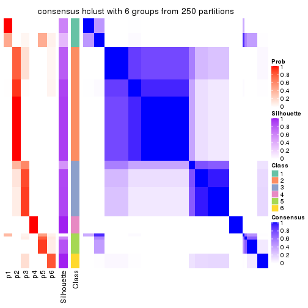
Heatmaps for the membership of samples in all partitions to see how consistent they are:
membership_heatmap(res, k = 2)
membership_heatmap(res, k = 3)
membership_heatmap(res, k = 4)
membership_heatmap(res, k = 5)
membership_heatmap(res, k = 6)
As soon as we have had the classes for columns, we can look for signatures which are significantly different between classes which can be candidate marks for certain classes. Following are the heatmaps for signatures.
Signature heatmaps where rows are scaled:
get_signatures(res, k = 2)
get_signatures(res, k = 3)
get_signatures(res, k = 4)
get_signatures(res, k = 5)
get_signatures(res, k = 6)
Signature heatmaps where rows are not scaled:
get_signatures(res, k = 2, scale_rows = FALSE)
get_signatures(res, k = 3, scale_rows = FALSE)
get_signatures(res, k = 4, scale_rows = FALSE)
get_signatures(res, k = 5, scale_rows = FALSE)
get_signatures(res, k = 6, scale_rows = FALSE)
Compare the overlap of signatures from different k:
compare_signatures(res)
get_signature() returns a data frame invisibly. TO get the list of signatures, the function
call should be assigned to a variable explicitly. In following code, if plot argument is set
to FALSE, no heatmap is plotted while only the differential analysis is performed.
# code only for demonstration
tb = get_signature(res, k = ..., plot = FALSE)
An example of the output of tb is:
#> which_row fdr mean_1 mean_2 scaled_mean_1 scaled_mean_2 km
#> 1 38 0.042760348 8.373488 9.131774 -0.5533452 0.5164555 1
#> 2 40 0.018707592 7.106213 8.469186 -0.6173731 0.5762149 1
#> 3 55 0.019134737 10.221463 11.207825 -0.6159697 0.5749050 1
#> 4 59 0.006059896 5.921854 7.869574 -0.6899429 0.6439467 1
#> 5 60 0.018055526 8.928898 10.211722 -0.6204761 0.5791110 1
#> 6 98 0.009384629 15.714769 14.887706 0.6635654 -0.6193277 2
...
The columns in tb are:
which_row: row indices corresponding to the input matrix.fdr: FDR for the differential test. mean_x: The mean value in group x.scaled_mean_x: The mean value in group x after rows are scaled.km: Row groups if k-means clustering is applied to rows.UMAP plot which shows how samples are separated.
dimension_reduction(res, k = 2, method = "UMAP")
dimension_reduction(res, k = 3, method = "UMAP")

dimension_reduction(res, k = 4, method = "UMAP")
dimension_reduction(res, k = 5, method = "UMAP")
dimension_reduction(res, k = 6, method = "UMAP")
Following heatmap shows how subgroups are split when increasing k:
collect_classes(res)
If matrix rows can be associated to genes, consider to use functional_enrichment(res,
...) to perform function enrichment for the signature genes. See this vignette for more detailed explanations.
The object with results only for a single top-value method and a single partition method can be extracted as:
res = res_list["SD", "kmeans"]
# you can also extract it by
# res = res_list["SD:kmeans"]
A summary of res and all the functions that can be applied to it:
res
#> A 'ConsensusPartition' object with k = 2, 3, 4, 5, 6.
#> On a matrix with 7309 rows and 86 columns.
#> Top rows (731, 1462, 2192, 2923, 3654) are extracted by 'SD' method.
#> Subgroups are detected by 'kmeans' method.
#> Performed in total 1250 partitions by row resampling.
#> Best k for subgroups seems to be 3.
#>
#> Following methods can be applied to this 'ConsensusPartition' object:
#> [1] "cola_report" "collect_classes" "collect_plots"
#> [4] "collect_stats" "colnames" "compare_signatures"
#> [7] "consensus_heatmap" "dimension_reduction" "functional_enrichment"
#> [10] "get_anno_col" "get_anno" "get_classes"
#> [13] "get_consensus" "get_matrix" "get_membership"
#> [16] "get_param" "get_signatures" "get_stats"
#> [19] "is_best_k" "is_stable_k" "membership_heatmap"
#> [22] "ncol" "nrow" "plot_ecdf"
#> [25] "rownames" "select_partition_number" "show"
#> [28] "suggest_best_k" "test_to_known_factors"
collect_plots() function collects all the plots made from res for all k (number of partitions)
into one single page to provide an easy and fast comparison between different k.
collect_plots(res)
The plots are:
k and the heatmap of
predicted classes for each k.k.k.k.All the plots in panels can be made by individual functions and they are plotted later in this section.
select_partition_number() produces several plots showing different
statistics for choosing “optimized” k. There are following statistics:
k;k, the area increased is defined as \(A_k - A_{k-1}\).The detailed explanations of these statistics can be found in the cola vignette.
Generally speaking, lower PAC score, higher mean silhouette score or higher
concordance corresponds to better partition. Rand index and Jaccard index
measure how similar the current partition is compared to partition with k-1.
If they are too similar, we won't accept k is better than k-1.
select_partition_number(res)
The numeric values for all these statistics can be obtained by get_stats().
get_stats(res)
#> k 1-PAC mean_silhouette concordance area_increased Rand Jaccard
#> 2 2 0.124 0.454 0.783 0.3255 0.849 0.849
#> 3 3 0.109 0.422 0.691 0.5214 0.689 0.641
#> 4 4 0.158 0.500 0.649 0.2112 0.759 0.581
#> 5 5 0.213 0.494 0.624 0.1183 0.940 0.831
#> 6 6 0.346 0.494 0.545 0.0729 0.845 0.556
suggest_best_k() suggests the best \(k\) based on these statistics. The rules are as follows:
suggest_best_k(res)
#> [1] 3
Following shows the table of the partitions (You need to click the show/hide
code output link to see it). The membership matrix (columns with name p*)
is inferred by
clue::cl_consensus()
function with the SE method. Basically the value in the membership matrix
represents the probability to belong to a certain group. The finall class
label for an item is determined with the group with highest probability it
belongs to.
In get_classes() function, the entropy is calculated from the membership
matrix and the silhouette score is calculated from the consensus matrix.
cbind(get_classes(res, k = 2), get_membership(res, k = 2))
#> class entropy silhouette p1 p2
#> SRR2240643 2 0.876 0.398 0.296 0.704
#> SRR2240644 2 0.876 0.398 0.296 0.704
#> SRR2240645 2 0.876 0.398 0.296 0.704
#> SRR2240646 2 0.876 0.398 0.296 0.704
#> SRR2240647 2 0.876 0.398 0.296 0.704
#> SRR2240638 2 0.795 0.523 0.240 0.760
#> SRR2240639 2 0.795 0.523 0.240 0.760
#> SRR2240640 2 0.795 0.523 0.240 0.760
#> SRR2240641 2 0.795 0.523 0.240 0.760
#> SRR2240642 2 0.795 0.523 0.240 0.760
#> SRR2240633 2 0.904 0.257 0.320 0.680
#> SRR2240634 2 0.904 0.257 0.320 0.680
#> SRR2240635 2 0.904 0.257 0.320 0.680
#> SRR2240636 2 0.904 0.257 0.320 0.680
#> SRR2240637 2 0.904 0.257 0.320 0.680
#> SRR2240624 2 0.605 0.589 0.148 0.852
#> SRR2240625 2 0.605 0.589 0.148 0.852
#> SRR2240626 2 0.605 0.589 0.148 0.852
#> SRR2240627 2 0.814 0.457 0.252 0.748
#> SRR2240628 2 0.814 0.457 0.252 0.748
#> SRR2240629 2 0.814 0.457 0.252 0.748
#> SRR2240630 2 0.814 0.457 0.252 0.748
#> SRR2240631 2 0.814 0.457 0.252 0.748
#> SRR2240632 2 0.814 0.457 0.252 0.748
#> SRR2240613 1 0.961 0.895 0.616 0.384
#> SRR2240614 1 0.961 0.895 0.616 0.384
#> SRR2240615 1 0.961 0.895 0.616 0.384
#> SRR2240616 1 0.961 0.895 0.616 0.384
#> SRR2240617 1 0.961 0.895 0.616 0.384
#> SRR2240618 2 0.973 0.102 0.404 0.596
#> SRR2240619 2 0.973 0.102 0.404 0.596
#> SRR2240620 2 0.973 0.102 0.404 0.596
#> SRR2240621 2 0.973 0.102 0.404 0.596
#> SRR2240622 2 0.973 0.102 0.404 0.596
#> SRR2240623 2 0.973 0.102 0.404 0.596
#> SRR2240609 2 0.327 0.650 0.060 0.940
#> SRR2240610 2 0.327 0.650 0.060 0.940
#> SRR2240611 2 0.327 0.650 0.060 0.940
#> SRR2240612 2 0.327 0.650 0.060 0.940
#> SRR2240594 2 0.494 0.630 0.108 0.892
#> SRR2240595 2 0.494 0.630 0.108 0.892
#> SRR2240596 2 0.494 0.630 0.108 0.892
#> SRR2240597 2 0.494 0.630 0.108 0.892
#> SRR2240598 2 0.494 0.630 0.108 0.892
#> SRR2240604 2 0.295 0.653 0.052 0.948
#> SRR2240605 2 0.295 0.653 0.052 0.948
#> SRR2240606 2 0.295 0.653 0.052 0.948
#> SRR2240607 2 0.295 0.653 0.052 0.948
#> SRR2240608 2 0.295 0.653 0.052 0.948
#> SRR2240599 2 0.995 -0.374 0.460 0.540
#> SRR2240600 2 0.995 -0.374 0.460 0.540
#> SRR2240601 2 0.995 -0.374 0.460 0.540
#> SRR2240602 2 0.995 -0.374 0.460 0.540
#> SRR2240603 2 0.995 -0.374 0.460 0.540
#> SRR2240584 2 0.402 0.639 0.080 0.920
#> SRR2240585 2 0.402 0.639 0.080 0.920
#> SRR2240586 2 0.402 0.639 0.080 0.920
#> SRR2240587 2 0.402 0.639 0.080 0.920
#> SRR2240588 2 0.402 0.639 0.080 0.920
#> SRR2240589 2 0.985 -0.168 0.428 0.572
#> SRR2240590 2 0.985 -0.168 0.428 0.572
#> SRR2240591 2 0.985 -0.168 0.428 0.572
#> SRR2240592 2 0.985 -0.168 0.428 0.572
#> SRR2240593 2 0.985 -0.168 0.428 0.572
#> SRR2240578 2 0.529 0.598 0.120 0.880
#> SRR2240579 2 0.529 0.598 0.120 0.880
#> SRR2240580 2 0.529 0.598 0.120 0.880
#> SRR2240581 2 0.529 0.598 0.120 0.880
#> SRR2240582 2 0.529 0.598 0.120 0.880
#> SRR2240583 2 0.529 0.598 0.120 0.880
#> SRR1825969 2 0.295 0.653 0.052 0.948
#> SRR1825968 2 0.295 0.653 0.052 0.948
#> SRR1825970 1 0.999 0.536 0.520 0.480
#> SRR1825966 2 0.295 0.653 0.052 0.948
#> SRR1825967 2 0.295 0.653 0.052 0.948
#> SRR1825965 2 0.118 0.649 0.016 0.984
#> SRR1825962 2 0.295 0.653 0.052 0.948
#> SRR1825963 2 0.295 0.653 0.052 0.948
#> SRR1825964 2 0.295 0.653 0.052 0.948
#> SRR1825961 1 0.929 0.779 0.656 0.344
#> SRR1825960 2 0.295 0.653 0.052 0.948
#> SRR1825958 2 0.295 0.653 0.052 0.948
#> SRR1825959 2 0.295 0.653 0.052 0.948
#> SRR1825956 2 0.295 0.653 0.052 0.948
#> SRR1825957 2 0.295 0.653 0.052 0.948
#> SRR1825955 2 0.295 0.653 0.052 0.948
cbind(get_classes(res, k = 3), get_membership(res, k = 3))
#> class entropy silhouette p1 p2 p3
#> SRR2240643 2 0.9868 -0.1637 0.344 0.396 0.260
#> SRR2240644 2 0.9868 -0.1637 0.344 0.396 0.260
#> SRR2240645 2 0.9868 -0.1637 0.344 0.396 0.260
#> SRR2240646 2 0.9868 -0.1637 0.344 0.396 0.260
#> SRR2240647 2 0.9868 -0.1637 0.344 0.396 0.260
#> SRR2240638 2 0.9536 0.0544 0.284 0.484 0.232
#> SRR2240639 2 0.9536 0.0544 0.284 0.484 0.232
#> SRR2240640 2 0.9536 0.0544 0.284 0.484 0.232
#> SRR2240641 2 0.9536 0.0544 0.284 0.484 0.232
#> SRR2240642 2 0.9536 0.0544 0.284 0.484 0.232
#> SRR2240633 2 0.9759 -0.1496 0.284 0.444 0.272
#> SRR2240634 2 0.9759 -0.1496 0.284 0.444 0.272
#> SRR2240635 2 0.9759 -0.1496 0.284 0.444 0.272
#> SRR2240636 2 0.9759 -0.1496 0.284 0.444 0.272
#> SRR2240637 2 0.9759 -0.1496 0.284 0.444 0.272
#> SRR2240624 2 0.8061 0.3391 0.156 0.652 0.192
#> SRR2240625 2 0.8061 0.3391 0.156 0.652 0.192
#> SRR2240626 2 0.8061 0.3391 0.156 0.652 0.192
#> SRR2240627 2 0.9118 0.1221 0.220 0.548 0.232
#> SRR2240628 2 0.9118 0.1221 0.220 0.548 0.232
#> SRR2240629 2 0.9118 0.1221 0.220 0.548 0.232
#> SRR2240630 2 0.9118 0.1221 0.220 0.548 0.232
#> SRR2240631 2 0.9118 0.1221 0.220 0.548 0.232
#> SRR2240632 2 0.9118 0.1221 0.220 0.548 0.232
#> SRR2240613 3 0.8122 0.4178 0.184 0.168 0.648
#> SRR2240614 3 0.8122 0.4178 0.184 0.168 0.648
#> SRR2240615 3 0.8122 0.4178 0.184 0.168 0.648
#> SRR2240616 3 0.8122 0.4178 0.184 0.168 0.648
#> SRR2240617 3 0.8122 0.4178 0.184 0.168 0.648
#> SRR2240618 1 0.9692 1.0000 0.432 0.344 0.224
#> SRR2240619 1 0.9692 1.0000 0.432 0.344 0.224
#> SRR2240620 1 0.9692 1.0000 0.432 0.344 0.224
#> SRR2240621 1 0.9692 1.0000 0.432 0.344 0.224
#> SRR2240622 1 0.9692 1.0000 0.432 0.344 0.224
#> SRR2240623 1 0.9692 1.0000 0.432 0.344 0.224
#> SRR2240609 2 0.1453 0.5597 0.024 0.968 0.008
#> SRR2240610 2 0.1453 0.5597 0.024 0.968 0.008
#> SRR2240611 2 0.1453 0.5597 0.024 0.968 0.008
#> SRR2240612 2 0.1453 0.5597 0.024 0.968 0.008
#> SRR2240594 2 0.6775 0.4883 0.112 0.744 0.144
#> SRR2240595 2 0.6775 0.4883 0.112 0.744 0.144
#> SRR2240596 2 0.6775 0.4883 0.112 0.744 0.144
#> SRR2240597 2 0.6775 0.4883 0.112 0.744 0.144
#> SRR2240598 2 0.6775 0.4883 0.112 0.744 0.144
#> SRR2240604 2 0.0747 0.5709 0.016 0.984 0.000
#> SRR2240605 2 0.0747 0.5709 0.016 0.984 0.000
#> SRR2240606 2 0.0747 0.5709 0.016 0.984 0.000
#> SRR2240607 2 0.0747 0.5709 0.016 0.984 0.000
#> SRR2240608 2 0.0747 0.5709 0.016 0.984 0.000
#> SRR2240599 3 0.5775 0.6547 0.012 0.260 0.728
#> SRR2240600 3 0.5775 0.6547 0.012 0.260 0.728
#> SRR2240601 3 0.5775 0.6547 0.012 0.260 0.728
#> SRR2240602 3 0.5775 0.6547 0.012 0.260 0.728
#> SRR2240603 3 0.5775 0.6547 0.012 0.260 0.728
#> SRR2240584 2 0.7113 0.4829 0.112 0.720 0.168
#> SRR2240585 2 0.7113 0.4829 0.112 0.720 0.168
#> SRR2240586 2 0.7113 0.4829 0.112 0.720 0.168
#> SRR2240587 2 0.7113 0.4829 0.112 0.720 0.168
#> SRR2240588 2 0.7113 0.4829 0.112 0.720 0.168
#> SRR2240589 3 0.7817 0.5928 0.100 0.252 0.648
#> SRR2240590 3 0.7817 0.5928 0.100 0.252 0.648
#> SRR2240591 3 0.7817 0.5928 0.100 0.252 0.648
#> SRR2240592 3 0.7817 0.5928 0.100 0.252 0.648
#> SRR2240593 3 0.7817 0.5928 0.100 0.252 0.648
#> SRR2240578 2 0.7419 0.3980 0.088 0.680 0.232
#> SRR2240579 2 0.7419 0.3980 0.088 0.680 0.232
#> SRR2240580 2 0.7419 0.3980 0.088 0.680 0.232
#> SRR2240581 2 0.7419 0.3980 0.088 0.680 0.232
#> SRR2240582 2 0.7419 0.3980 0.088 0.680 0.232
#> SRR2240583 2 0.7419 0.3980 0.088 0.680 0.232
#> SRR1825969 2 0.0000 0.5750 0.000 1.000 0.000
#> SRR1825968 2 0.0000 0.5750 0.000 1.000 0.000
#> SRR1825970 3 0.6099 0.6065 0.032 0.228 0.740
#> SRR1825966 2 0.0000 0.5750 0.000 1.000 0.000
#> SRR1825967 2 0.0000 0.5750 0.000 1.000 0.000
#> SRR1825965 2 0.4232 0.5522 0.044 0.872 0.084
#> SRR1825962 2 0.0000 0.5750 0.000 1.000 0.000
#> SRR1825963 2 0.0000 0.5750 0.000 1.000 0.000
#> SRR1825964 2 0.0237 0.5741 0.004 0.996 0.000
#> SRR1825961 3 0.4845 0.5347 0.052 0.104 0.844
#> SRR1825960 2 0.0000 0.5750 0.000 1.000 0.000
#> SRR1825958 2 0.0000 0.5750 0.000 1.000 0.000
#> SRR1825959 2 0.0000 0.5750 0.000 1.000 0.000
#> SRR1825956 2 0.0000 0.5750 0.000 1.000 0.000
#> SRR1825957 2 0.0000 0.5750 0.000 1.000 0.000
#> SRR1825955 2 0.0000 0.5750 0.000 1.000 0.000
cbind(get_classes(res, k = 4), get_membership(res, k = 4))
#> class entropy silhouette p1 p2 p3 p4
#> SRR2240643 3 0.7224 0.382 0.060 0.240 0.624 0.076
#> SRR2240644 3 0.7224 0.382 0.060 0.240 0.624 0.076
#> SRR2240645 3 0.7224 0.382 0.060 0.240 0.624 0.076
#> SRR2240646 3 0.7224 0.382 0.060 0.240 0.624 0.076
#> SRR2240647 3 0.7224 0.382 0.060 0.240 0.624 0.076
#> SRR2240638 3 0.8783 0.328 0.084 0.376 0.400 0.140
#> SRR2240639 3 0.8783 0.328 0.084 0.376 0.400 0.140
#> SRR2240640 3 0.8783 0.328 0.084 0.376 0.400 0.140
#> SRR2240641 3 0.8813 0.328 0.084 0.376 0.396 0.144
#> SRR2240642 3 0.8813 0.328 0.084 0.376 0.396 0.144
#> SRR2240633 3 0.8875 0.291 0.152 0.284 0.464 0.100
#> SRR2240634 3 0.8875 0.291 0.152 0.284 0.464 0.100
#> SRR2240635 3 0.8830 0.291 0.152 0.284 0.468 0.096
#> SRR2240636 3 0.8830 0.291 0.152 0.284 0.468 0.096
#> SRR2240637 3 0.8830 0.291 0.152 0.284 0.468 0.096
#> SRR2240624 2 0.7236 -0.141 0.044 0.548 0.348 0.060
#> SRR2240625 2 0.7236 -0.141 0.044 0.548 0.348 0.060
#> SRR2240626 2 0.7236 -0.141 0.044 0.548 0.348 0.060
#> SRR2240627 3 0.6733 0.448 0.052 0.392 0.536 0.020
#> SRR2240628 3 0.6733 0.448 0.052 0.392 0.536 0.020
#> SRR2240629 3 0.6733 0.448 0.052 0.392 0.536 0.020
#> SRR2240630 3 0.6733 0.448 0.052 0.392 0.536 0.020
#> SRR2240631 3 0.6733 0.448 0.052 0.392 0.536 0.020
#> SRR2240632 3 0.6733 0.448 0.052 0.392 0.536 0.020
#> SRR2240613 1 0.9014 0.377 0.392 0.096 0.356 0.156
#> SRR2240614 1 0.9014 0.377 0.392 0.096 0.356 0.156
#> SRR2240615 1 0.9014 0.377 0.392 0.096 0.356 0.156
#> SRR2240616 1 0.9014 0.377 0.392 0.096 0.356 0.156
#> SRR2240617 1 0.9014 0.377 0.392 0.096 0.356 0.156
#> SRR2240618 4 0.9403 0.996 0.104 0.236 0.292 0.368
#> SRR2240619 4 0.9403 0.995 0.104 0.236 0.292 0.368
#> SRR2240620 4 0.9396 0.998 0.104 0.236 0.288 0.372
#> SRR2240621 4 0.9403 0.996 0.104 0.236 0.292 0.368
#> SRR2240622 4 0.9396 0.998 0.104 0.236 0.288 0.372
#> SRR2240623 4 0.9396 0.998 0.104 0.236 0.288 0.372
#> SRR2240609 2 0.2125 0.647 0.004 0.932 0.012 0.052
#> SRR2240610 2 0.2125 0.647 0.004 0.932 0.012 0.052
#> SRR2240611 2 0.2125 0.647 0.004 0.932 0.012 0.052
#> SRR2240612 2 0.2125 0.647 0.004 0.932 0.012 0.052
#> SRR2240594 2 0.8030 0.409 0.112 0.596 0.164 0.128
#> SRR2240595 2 0.8030 0.409 0.112 0.596 0.164 0.128
#> SRR2240596 2 0.8030 0.409 0.112 0.596 0.164 0.128
#> SRR2240597 2 0.8030 0.409 0.112 0.596 0.164 0.128
#> SRR2240598 2 0.8030 0.409 0.112 0.596 0.164 0.128
#> SRR2240604 2 0.0524 0.679 0.008 0.988 0.000 0.004
#> SRR2240605 2 0.0524 0.679 0.008 0.988 0.000 0.004
#> SRR2240606 2 0.0524 0.679 0.008 0.988 0.000 0.004
#> SRR2240607 2 0.0524 0.679 0.008 0.988 0.000 0.004
#> SRR2240608 2 0.0524 0.679 0.008 0.988 0.000 0.004
#> SRR2240599 1 0.4004 0.600 0.836 0.120 0.040 0.004
#> SRR2240600 1 0.4004 0.600 0.836 0.120 0.040 0.004
#> SRR2240601 1 0.4004 0.600 0.836 0.120 0.040 0.004
#> SRR2240602 1 0.4004 0.600 0.836 0.120 0.040 0.004
#> SRR2240603 1 0.4004 0.600 0.836 0.120 0.040 0.004
#> SRR2240584 2 0.7876 0.440 0.164 0.604 0.148 0.084
#> SRR2240585 2 0.7876 0.440 0.164 0.604 0.148 0.084
#> SRR2240586 2 0.7876 0.440 0.164 0.604 0.148 0.084
#> SRR2240587 2 0.7876 0.440 0.164 0.604 0.148 0.084
#> SRR2240588 2 0.7876 0.440 0.164 0.604 0.148 0.084
#> SRR2240589 1 0.7784 0.508 0.616 0.156 0.092 0.136
#> SRR2240590 1 0.7784 0.508 0.616 0.156 0.092 0.136
#> SRR2240591 1 0.7784 0.508 0.616 0.156 0.092 0.136
#> SRR2240592 1 0.7784 0.508 0.616 0.156 0.092 0.136
#> SRR2240593 1 0.7784 0.508 0.616 0.156 0.092 0.136
#> SRR2240578 2 0.8188 0.275 0.316 0.508 0.080 0.096
#> SRR2240579 2 0.8188 0.275 0.316 0.508 0.080 0.096
#> SRR2240580 2 0.8188 0.275 0.316 0.508 0.080 0.096
#> SRR2240581 2 0.8188 0.275 0.316 0.508 0.080 0.096
#> SRR2240582 2 0.8188 0.275 0.316 0.508 0.080 0.096
#> SRR2240583 2 0.8188 0.275 0.316 0.508 0.080 0.096
#> SRR1825969 2 0.0000 0.681 0.000 1.000 0.000 0.000
#> SRR1825968 2 0.0000 0.681 0.000 1.000 0.000 0.000
#> SRR1825970 1 0.6528 0.534 0.688 0.144 0.144 0.024
#> SRR1825966 2 0.0000 0.681 0.000 1.000 0.000 0.000
#> SRR1825967 2 0.0000 0.681 0.000 1.000 0.000 0.000
#> SRR1825965 2 0.5511 0.536 0.072 0.776 0.108 0.044
#> SRR1825962 2 0.0000 0.681 0.000 1.000 0.000 0.000
#> SRR1825963 2 0.0000 0.681 0.000 1.000 0.000 0.000
#> SRR1825964 2 0.0000 0.681 0.000 1.000 0.000 0.000
#> SRR1825961 1 0.6238 0.527 0.704 0.092 0.180 0.024
#> SRR1825960 2 0.0000 0.681 0.000 1.000 0.000 0.000
#> SRR1825958 2 0.0000 0.681 0.000 1.000 0.000 0.000
#> SRR1825959 2 0.0000 0.681 0.000 1.000 0.000 0.000
#> SRR1825956 2 0.0000 0.681 0.000 1.000 0.000 0.000
#> SRR1825957 2 0.0000 0.681 0.000 1.000 0.000 0.000
#> SRR1825955 2 0.0000 0.681 0.000 1.000 0.000 0.000
cbind(get_classes(res, k = 5), get_membership(res, k = 5))
#> class entropy silhouette p1 p2 p3 p4 p5
#> SRR2240643 3 0.9256 0.2178 0.052 0.164 0.312 0.272 0.200
#> SRR2240644 3 0.9256 0.2178 0.052 0.164 0.312 0.272 0.200
#> SRR2240645 3 0.9256 0.2178 0.052 0.164 0.312 0.272 0.200
#> SRR2240646 3 0.9256 0.2178 0.052 0.164 0.312 0.272 0.200
#> SRR2240647 3 0.9256 0.2178 0.052 0.164 0.312 0.272 0.200
#> SRR2240638 5 0.8112 0.9983 0.068 0.212 0.096 0.100 0.524
#> SRR2240639 5 0.8112 0.9983 0.068 0.212 0.096 0.100 0.524
#> SRR2240640 5 0.8112 0.9983 0.068 0.212 0.096 0.100 0.524
#> SRR2240641 5 0.8152 0.9975 0.068 0.212 0.096 0.104 0.520
#> SRR2240642 5 0.8152 0.9975 0.068 0.212 0.096 0.104 0.520
#> SRR2240633 3 0.8362 0.2725 0.104 0.228 0.480 0.140 0.048
#> SRR2240634 3 0.8362 0.2725 0.104 0.228 0.480 0.140 0.048
#> SRR2240635 3 0.8362 0.2725 0.104 0.228 0.480 0.140 0.048
#> SRR2240636 3 0.8362 0.2725 0.104 0.228 0.480 0.140 0.048
#> SRR2240637 3 0.8362 0.2725 0.104 0.228 0.480 0.140 0.048
#> SRR2240624 2 0.8248 0.0202 0.040 0.496 0.144 0.208 0.112
#> SRR2240625 2 0.8248 0.0202 0.040 0.496 0.144 0.208 0.112
#> SRR2240626 2 0.8248 0.0202 0.040 0.496 0.144 0.208 0.112
#> SRR2240627 3 0.8529 0.2788 0.040 0.332 0.340 0.224 0.064
#> SRR2240628 3 0.8529 0.2788 0.040 0.332 0.340 0.224 0.064
#> SRR2240629 3 0.8529 0.2788 0.040 0.332 0.340 0.224 0.064
#> SRR2240630 3 0.8529 0.2788 0.040 0.332 0.340 0.224 0.064
#> SRR2240631 3 0.8529 0.2788 0.040 0.332 0.340 0.224 0.064
#> SRR2240632 3 0.8529 0.2788 0.040 0.332 0.340 0.224 0.064
#> SRR2240613 3 0.6407 0.1055 0.316 0.048 0.576 0.044 0.016
#> SRR2240614 3 0.6407 0.1055 0.316 0.048 0.576 0.044 0.016
#> SRR2240615 3 0.6407 0.1055 0.316 0.048 0.576 0.044 0.016
#> SRR2240616 3 0.6407 0.1055 0.316 0.048 0.576 0.044 0.016
#> SRR2240617 3 0.6407 0.1055 0.316 0.048 0.576 0.044 0.016
#> SRR2240618 4 0.6179 0.9952 0.100 0.140 0.092 0.668 0.000
#> SRR2240619 4 0.6649 0.9890 0.100 0.140 0.092 0.652 0.016
#> SRR2240620 4 0.6449 0.9927 0.100 0.140 0.092 0.660 0.008
#> SRR2240621 4 0.6179 0.9952 0.100 0.140 0.092 0.668 0.000
#> SRR2240622 4 0.6331 0.9943 0.100 0.140 0.092 0.664 0.004
#> SRR2240623 4 0.6179 0.9952 0.100 0.140 0.092 0.668 0.000
#> SRR2240609 2 0.3360 0.5878 0.008 0.864 0.020 0.024 0.084
#> SRR2240610 2 0.3360 0.5878 0.008 0.864 0.020 0.024 0.084
#> SRR2240611 2 0.3360 0.5878 0.008 0.864 0.020 0.024 0.084
#> SRR2240612 2 0.3360 0.5878 0.008 0.864 0.020 0.024 0.084
#> SRR2240594 2 0.7945 0.2956 0.100 0.504 0.028 0.244 0.124
#> SRR2240595 2 0.7945 0.2956 0.100 0.504 0.028 0.244 0.124
#> SRR2240596 2 0.7945 0.2956 0.100 0.504 0.028 0.244 0.124
#> SRR2240597 2 0.7945 0.2956 0.100 0.504 0.028 0.244 0.124
#> SRR2240598 2 0.7945 0.2956 0.100 0.504 0.028 0.244 0.124
#> SRR2240604 2 0.1306 0.6369 0.000 0.960 0.008 0.016 0.016
#> SRR2240605 2 0.1306 0.6369 0.000 0.960 0.008 0.016 0.016
#> SRR2240606 2 0.1306 0.6369 0.000 0.960 0.008 0.016 0.016
#> SRR2240607 2 0.1306 0.6369 0.000 0.960 0.008 0.016 0.016
#> SRR2240608 2 0.1306 0.6369 0.000 0.960 0.008 0.016 0.016
#> SRR2240599 1 0.2050 0.7339 0.920 0.064 0.008 0.008 0.000
#> SRR2240600 1 0.2050 0.7339 0.920 0.064 0.008 0.008 0.000
#> SRR2240601 1 0.2050 0.7339 0.920 0.064 0.008 0.008 0.000
#> SRR2240602 1 0.2050 0.7339 0.920 0.064 0.008 0.008 0.000
#> SRR2240603 1 0.2050 0.7339 0.920 0.064 0.008 0.008 0.000
#> SRR2240584 2 0.8283 0.2791 0.132 0.484 0.028 0.176 0.180
#> SRR2240585 2 0.8283 0.2791 0.132 0.484 0.028 0.176 0.180
#> SRR2240586 2 0.8283 0.2791 0.132 0.484 0.028 0.176 0.180
#> SRR2240587 2 0.8283 0.2791 0.132 0.484 0.028 0.176 0.180
#> SRR2240588 2 0.8283 0.2791 0.132 0.484 0.028 0.176 0.180
#> SRR2240589 1 0.7667 0.6755 0.576 0.104 0.048 0.104 0.168
#> SRR2240590 1 0.7667 0.6755 0.576 0.104 0.048 0.104 0.168
#> SRR2240591 1 0.7667 0.6755 0.576 0.104 0.048 0.104 0.168
#> SRR2240592 1 0.7667 0.6755 0.576 0.104 0.048 0.104 0.168
#> SRR2240593 1 0.7667 0.6755 0.576 0.104 0.048 0.104 0.168
#> SRR2240578 2 0.8226 0.2291 0.308 0.432 0.028 0.104 0.128
#> SRR2240579 2 0.8226 0.2291 0.308 0.432 0.028 0.104 0.128
#> SRR2240580 2 0.8226 0.2291 0.308 0.432 0.028 0.104 0.128
#> SRR2240581 2 0.8226 0.2291 0.308 0.432 0.028 0.104 0.128
#> SRR2240582 2 0.8226 0.2291 0.308 0.432 0.028 0.104 0.128
#> SRR2240583 2 0.8226 0.2291 0.308 0.432 0.028 0.104 0.128
#> SRR1825969 2 0.0000 0.6467 0.000 1.000 0.000 0.000 0.000
#> SRR1825968 2 0.0324 0.6464 0.000 0.992 0.004 0.004 0.000
#> SRR1825970 1 0.5739 0.6046 0.720 0.080 0.128 0.060 0.012
#> SRR1825966 2 0.0000 0.6467 0.000 1.000 0.000 0.000 0.000
#> SRR1825967 2 0.0000 0.6467 0.000 1.000 0.000 0.000 0.000
#> SRR1825965 2 0.6106 0.4823 0.084 0.704 0.020 0.104 0.088
#> SRR1825962 2 0.0000 0.6467 0.000 1.000 0.000 0.000 0.000
#> SRR1825963 2 0.0000 0.6467 0.000 1.000 0.000 0.000 0.000
#> SRR1825964 2 0.0579 0.6455 0.000 0.984 0.008 0.008 0.000
#> SRR1825961 1 0.5799 0.5062 0.692 0.036 0.192 0.064 0.016
#> SRR1825960 2 0.0451 0.6454 0.000 0.988 0.004 0.008 0.000
#> SRR1825958 2 0.0000 0.6467 0.000 1.000 0.000 0.000 0.000
#> SRR1825959 2 0.0162 0.6465 0.000 0.996 0.000 0.004 0.000
#> SRR1825956 2 0.0162 0.6465 0.000 0.996 0.000 0.004 0.000
#> SRR1825957 2 0.0162 0.6465 0.000 0.996 0.000 0.004 0.000
#> SRR1825955 2 0.0000 0.6467 0.000 1.000 0.000 0.000 0.000
cbind(get_classes(res, k = 6), get_membership(res, k = 6))
#> class entropy silhouette p1 p2 p3 p4 p5 p6
#> SRR2240643 6 0.7077 0.9915 0.028 0.100 0.204 0.008 0.112 0.548
#> SRR2240644 6 0.7167 0.9905 0.028 0.100 0.204 0.012 0.112 0.544
#> SRR2240645 6 0.7249 0.9899 0.028 0.100 0.204 0.016 0.112 0.540
#> SRR2240646 6 0.7167 0.9910 0.028 0.100 0.204 0.012 0.112 0.544
#> SRR2240647 6 0.6976 0.9923 0.028 0.100 0.204 0.004 0.112 0.552
#> SRR2240638 5 0.8011 0.2461 0.040 0.172 0.132 0.040 0.492 0.124
#> SRR2240639 5 0.8011 0.2461 0.040 0.172 0.132 0.040 0.492 0.124
#> SRR2240640 5 0.8011 0.2461 0.040 0.172 0.132 0.040 0.492 0.124
#> SRR2240641 5 0.8096 0.2455 0.040 0.172 0.132 0.044 0.484 0.128
#> SRR2240642 5 0.8096 0.2455 0.040 0.172 0.132 0.044 0.484 0.128
#> SRR2240633 3 0.5438 0.4580 0.108 0.144 0.692 0.028 0.028 0.000
#> SRR2240634 3 0.5438 0.4580 0.108 0.144 0.692 0.028 0.028 0.000
#> SRR2240635 3 0.4625 0.4618 0.108 0.144 0.728 0.000 0.020 0.000
#> SRR2240636 3 0.4625 0.4618 0.108 0.144 0.728 0.000 0.020 0.000
#> SRR2240637 3 0.4625 0.4618 0.108 0.144 0.728 0.000 0.020 0.000
#> SRR2240624 2 0.8464 -0.2628 0.052 0.376 0.216 0.028 0.232 0.096
#> SRR2240625 2 0.8464 -0.2628 0.052 0.376 0.216 0.028 0.232 0.096
#> SRR2240626 2 0.8464 -0.2628 0.052 0.376 0.216 0.028 0.232 0.096
#> SRR2240627 3 0.8865 0.4329 0.060 0.240 0.328 0.032 0.156 0.184
#> SRR2240628 3 0.8865 0.4329 0.060 0.240 0.328 0.032 0.156 0.184
#> SRR2240629 3 0.8865 0.4329 0.060 0.240 0.328 0.032 0.156 0.184
#> SRR2240630 3 0.8865 0.4329 0.060 0.240 0.328 0.032 0.156 0.184
#> SRR2240631 3 0.8865 0.4329 0.060 0.240 0.328 0.032 0.156 0.184
#> SRR2240632 3 0.8865 0.4329 0.060 0.240 0.328 0.032 0.156 0.184
#> SRR2240613 1 0.7786 0.3723 0.340 0.012 0.244 0.072 0.020 0.312
#> SRR2240614 1 0.7786 0.3723 0.340 0.012 0.244 0.072 0.020 0.312
#> SRR2240615 1 0.7786 0.3723 0.340 0.012 0.244 0.072 0.020 0.312
#> SRR2240616 1 0.7786 0.3723 0.340 0.012 0.244 0.072 0.020 0.312
#> SRR2240617 1 0.7786 0.3723 0.340 0.012 0.244 0.072 0.020 0.312
#> SRR2240618 4 0.7869 0.9893 0.068 0.096 0.124 0.520 0.160 0.032
#> SRR2240619 4 0.8092 0.9807 0.068 0.096 0.144 0.488 0.172 0.032
#> SRR2240620 4 0.7957 0.9873 0.068 0.096 0.132 0.508 0.164 0.032
#> SRR2240621 4 0.7869 0.9893 0.068 0.096 0.124 0.520 0.160 0.032
#> SRR2240622 4 0.8040 0.9832 0.068 0.096 0.140 0.496 0.168 0.032
#> SRR2240623 4 0.7869 0.9893 0.068 0.096 0.124 0.520 0.160 0.032
#> SRR2240609 2 0.3999 0.5202 0.004 0.808 0.044 0.108 0.020 0.016
#> SRR2240610 2 0.3999 0.5202 0.004 0.808 0.044 0.108 0.020 0.016
#> SRR2240611 2 0.4018 0.5202 0.004 0.808 0.048 0.104 0.020 0.016
#> SRR2240612 2 0.4018 0.5202 0.004 0.808 0.048 0.104 0.020 0.016
#> SRR2240594 5 0.6937 0.5646 0.068 0.380 0.024 0.072 0.444 0.012
#> SRR2240595 5 0.6937 0.5646 0.068 0.380 0.024 0.072 0.444 0.012
#> SRR2240596 5 0.6937 0.5646 0.068 0.380 0.024 0.072 0.444 0.012
#> SRR2240597 5 0.6937 0.5646 0.068 0.380 0.024 0.072 0.444 0.012
#> SRR2240598 5 0.6937 0.5646 0.068 0.380 0.024 0.072 0.444 0.012
#> SRR2240604 2 0.1528 0.6322 0.000 0.944 0.016 0.028 0.012 0.000
#> SRR2240605 2 0.1528 0.6322 0.000 0.944 0.016 0.028 0.012 0.000
#> SRR2240606 2 0.1528 0.6322 0.000 0.944 0.016 0.028 0.012 0.000
#> SRR2240607 2 0.1528 0.6322 0.000 0.944 0.016 0.028 0.012 0.000
#> SRR2240608 2 0.1528 0.6322 0.000 0.944 0.016 0.028 0.012 0.000
#> SRR2240599 1 0.0891 0.5818 0.968 0.024 0.000 0.000 0.008 0.000
#> SRR2240600 1 0.0891 0.5818 0.968 0.024 0.000 0.000 0.008 0.000
#> SRR2240601 1 0.0891 0.5818 0.968 0.024 0.000 0.000 0.008 0.000
#> SRR2240602 1 0.0891 0.5818 0.968 0.024 0.000 0.000 0.008 0.000
#> SRR2240603 1 0.0891 0.5818 0.968 0.024 0.000 0.000 0.008 0.000
#> SRR2240584 5 0.5986 0.5387 0.124 0.408 0.016 0.004 0.448 0.000
#> SRR2240585 5 0.5986 0.5387 0.124 0.408 0.016 0.004 0.448 0.000
#> SRR2240586 5 0.5986 0.5387 0.124 0.408 0.016 0.004 0.448 0.000
#> SRR2240587 5 0.6083 0.5386 0.124 0.408 0.016 0.008 0.444 0.000
#> SRR2240588 5 0.6083 0.5386 0.124 0.408 0.016 0.008 0.444 0.000
#> SRR2240589 1 0.7840 0.4731 0.440 0.036 0.020 0.100 0.280 0.124
#> SRR2240590 1 0.7840 0.4731 0.440 0.036 0.020 0.100 0.280 0.124
#> SRR2240591 1 0.7840 0.4731 0.440 0.036 0.020 0.100 0.280 0.124
#> SRR2240592 1 0.7951 0.4725 0.440 0.036 0.024 0.096 0.260 0.144
#> SRR2240593 1 0.7951 0.4725 0.440 0.036 0.024 0.096 0.260 0.144
#> SRR2240578 2 0.8573 -0.1745 0.280 0.308 0.068 0.080 0.240 0.024
#> SRR2240579 2 0.8573 -0.1745 0.280 0.308 0.068 0.080 0.240 0.024
#> SRR2240580 2 0.8568 -0.1745 0.280 0.308 0.064 0.084 0.240 0.024
#> SRR2240581 2 0.8568 -0.1745 0.280 0.308 0.064 0.084 0.240 0.024
#> SRR2240582 2 0.8573 -0.1745 0.280 0.308 0.068 0.080 0.240 0.024
#> SRR2240583 2 0.8568 -0.1745 0.280 0.308 0.064 0.084 0.240 0.024
#> SRR1825969 2 0.0000 0.6473 0.000 1.000 0.000 0.000 0.000 0.000
#> SRR1825968 2 0.0291 0.6453 0.000 0.992 0.000 0.000 0.004 0.004
#> SRR1825970 1 0.5310 0.5366 0.744 0.060 0.096 0.028 0.028 0.044
#> SRR1825966 2 0.0000 0.6473 0.000 1.000 0.000 0.000 0.000 0.000
#> SRR1825967 2 0.0000 0.6473 0.000 1.000 0.000 0.000 0.000 0.000
#> SRR1825965 2 0.5468 -0.0818 0.084 0.628 0.032 0.004 0.252 0.000
#> SRR1825962 2 0.0000 0.6473 0.000 1.000 0.000 0.000 0.000 0.000
#> SRR1825963 2 0.0000 0.6473 0.000 1.000 0.000 0.000 0.000 0.000
#> SRR1825964 2 0.0405 0.6456 0.000 0.988 0.000 0.000 0.008 0.004
#> SRR1825961 1 0.5362 0.5369 0.732 0.028 0.116 0.032 0.024 0.068
#> SRR1825960 2 0.0146 0.6464 0.000 0.996 0.000 0.000 0.004 0.000
#> SRR1825958 2 0.0000 0.6473 0.000 1.000 0.000 0.000 0.000 0.000
#> SRR1825959 2 0.0000 0.6473 0.000 1.000 0.000 0.000 0.000 0.000
#> SRR1825956 2 0.0000 0.6473 0.000 1.000 0.000 0.000 0.000 0.000
#> SRR1825957 2 0.0000 0.6473 0.000 1.000 0.000 0.000 0.000 0.000
#> SRR1825955 2 0.0000 0.6473 0.000 1.000 0.000 0.000 0.000 0.000
Heatmaps for the consensus matrix. It visualizes the probability of two samples to be in a same group.
consensus_heatmap(res, k = 2)
consensus_heatmap(res, k = 3)
consensus_heatmap(res, k = 4)
consensus_heatmap(res, k = 5)
consensus_heatmap(res, k = 6)
Heatmaps for the membership of samples in all partitions to see how consistent they are:
membership_heatmap(res, k = 2)
membership_heatmap(res, k = 3)
membership_heatmap(res, k = 4)
membership_heatmap(res, k = 5)
membership_heatmap(res, k = 6)

As soon as we have had the classes for columns, we can look for signatures which are significantly different between classes which can be candidate marks for certain classes. Following are the heatmaps for signatures.
Signature heatmaps where rows are scaled:
get_signatures(res, k = 2)
get_signatures(res, k = 3)
get_signatures(res, k = 4)
get_signatures(res, k = 5)
get_signatures(res, k = 6)
Signature heatmaps where rows are not scaled:
get_signatures(res, k = 2, scale_rows = FALSE)
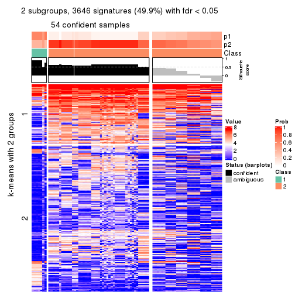
get_signatures(res, k = 3, scale_rows = FALSE)
get_signatures(res, k = 4, scale_rows = FALSE)
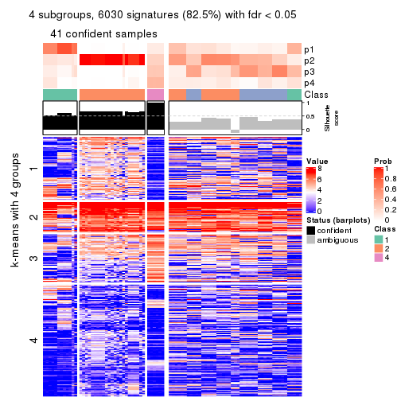
get_signatures(res, k = 5, scale_rows = FALSE)
get_signatures(res, k = 6, scale_rows = FALSE)
Compare the overlap of signatures from different k:
compare_signatures(res)
get_signature() returns a data frame invisibly. TO get the list of signatures, the function
call should be assigned to a variable explicitly. In following code, if plot argument is set
to FALSE, no heatmap is plotted while only the differential analysis is performed.
# code only for demonstration
tb = get_signature(res, k = ..., plot = FALSE)
An example of the output of tb is:
#> which_row fdr mean_1 mean_2 scaled_mean_1 scaled_mean_2 km
#> 1 38 0.042760348 8.373488 9.131774 -0.5533452 0.5164555 1
#> 2 40 0.018707592 7.106213 8.469186 -0.6173731 0.5762149 1
#> 3 55 0.019134737 10.221463 11.207825 -0.6159697 0.5749050 1
#> 4 59 0.006059896 5.921854 7.869574 -0.6899429 0.6439467 1
#> 5 60 0.018055526 8.928898 10.211722 -0.6204761 0.5791110 1
#> 6 98 0.009384629 15.714769 14.887706 0.6635654 -0.6193277 2
...
The columns in tb are:
which_row: row indices corresponding to the input matrix.fdr: FDR for the differential test. mean_x: The mean value in group x.scaled_mean_x: The mean value in group x after rows are scaled.km: Row groups if k-means clustering is applied to rows.UMAP plot which shows how samples are separated.
dimension_reduction(res, k = 2, method = "UMAP")
dimension_reduction(res, k = 3, method = "UMAP")
dimension_reduction(res, k = 4, method = "UMAP")
dimension_reduction(res, k = 5, method = "UMAP")
dimension_reduction(res, k = 6, method = "UMAP")
Following heatmap shows how subgroups are split when increasing k:
collect_classes(res)
If matrix rows can be associated to genes, consider to use functional_enrichment(res,
...) to perform function enrichment for the signature genes. See this vignette for more detailed explanations.
The object with results only for a single top-value method and a single partition method can be extracted as:
res = res_list["SD", "skmeans"]
# you can also extract it by
# res = res_list["SD:skmeans"]
A summary of res and all the functions that can be applied to it:
res
#> A 'ConsensusPartition' object with k = 2, 3, 4, 5, 6.
#> On a matrix with 7309 rows and 86 columns.
#> Top rows (731, 1462, 2192, 2923, 3654) are extracted by 'SD' method.
#> Subgroups are detected by 'skmeans' method.
#> Performed in total 1250 partitions by row resampling.
#> Best k for subgroups seems to be 2.
#>
#> Following methods can be applied to this 'ConsensusPartition' object:
#> [1] "cola_report" "collect_classes" "collect_plots"
#> [4] "collect_stats" "colnames" "compare_signatures"
#> [7] "consensus_heatmap" "dimension_reduction" "functional_enrichment"
#> [10] "get_anno_col" "get_anno" "get_classes"
#> [13] "get_consensus" "get_matrix" "get_membership"
#> [16] "get_param" "get_signatures" "get_stats"
#> [19] "is_best_k" "is_stable_k" "membership_heatmap"
#> [22] "ncol" "nrow" "plot_ecdf"
#> [25] "rownames" "select_partition_number" "show"
#> [28] "suggest_best_k" "test_to_known_factors"
collect_plots() function collects all the plots made from res for all k (number of partitions)
into one single page to provide an easy and fast comparison between different k.
collect_plots(res)
The plots are:
k and the heatmap of
predicted classes for each k.k.k.k.All the plots in panels can be made by individual functions and they are plotted later in this section.
select_partition_number() produces several plots showing different
statistics for choosing “optimized” k. There are following statistics:
k;k, the area increased is defined as \(A_k - A_{k-1}\).The detailed explanations of these statistics can be found in the cola vignette.
Generally speaking, lower PAC score, higher mean silhouette score or higher
concordance corresponds to better partition. Rand index and Jaccard index
measure how similar the current partition is compared to partition with k-1.
If they are too similar, we won't accept k is better than k-1.
select_partition_number(res)
The numeric values for all these statistics can be obtained by get_stats().
get_stats(res)
#> k 1-PAC mean_silhouette concordance area_increased Rand Jaccard
#> 2 2 1.000 0.965 0.982 0.5044 0.494 0.494
#> 3 3 0.705 0.873 0.917 0.3031 0.819 0.645
#> 4 4 0.661 0.828 0.854 0.1300 0.898 0.706
#> 5 5 0.773 0.790 0.815 0.0603 0.972 0.886
#> 6 6 0.807 0.706 0.755 0.0369 0.946 0.763
suggest_best_k() suggests the best \(k\) based on these statistics. The rules are as follows:
suggest_best_k(res)
#> [1] 2
Following shows the table of the partitions (You need to click the show/hide
code output link to see it). The membership matrix (columns with name p*)
is inferred by
clue::cl_consensus()
function with the SE method. Basically the value in the membership matrix
represents the probability to belong to a certain group. The finall class
label for an item is determined with the group with highest probability it
belongs to.
In get_classes() function, the entropy is calculated from the membership
matrix and the silhouette score is calculated from the consensus matrix.
cbind(get_classes(res, k = 2), get_membership(res, k = 2))
#> class entropy silhouette p1 p2
#> SRR2240643 1 0.141 0.977 0.980 0.020
#> SRR2240644 1 0.141 0.977 0.980 0.020
#> SRR2240645 1 0.141 0.977 0.980 0.020
#> SRR2240646 1 0.141 0.977 0.980 0.020
#> SRR2240647 1 0.141 0.977 0.980 0.020
#> SRR2240638 1 0.416 0.926 0.916 0.084
#> SRR2240639 1 0.416 0.926 0.916 0.084
#> SRR2240640 1 0.416 0.926 0.916 0.084
#> SRR2240641 1 0.416 0.926 0.916 0.084
#> SRR2240642 1 0.416 0.926 0.916 0.084
#> SRR2240633 1 0.000 0.984 1.000 0.000
#> SRR2240634 1 0.000 0.984 1.000 0.000
#> SRR2240635 1 0.000 0.984 1.000 0.000
#> SRR2240636 1 0.000 0.984 1.000 0.000
#> SRR2240637 1 0.000 0.984 1.000 0.000
#> SRR2240624 2 0.795 0.689 0.240 0.760
#> SRR2240625 2 0.795 0.689 0.240 0.760
#> SRR2240626 2 0.795 0.689 0.240 0.760
#> SRR2240627 1 0.204 0.971 0.968 0.032
#> SRR2240628 1 0.204 0.971 0.968 0.032
#> SRR2240629 1 0.204 0.971 0.968 0.032
#> SRR2240630 1 0.204 0.971 0.968 0.032
#> SRR2240631 1 0.204 0.971 0.968 0.032
#> SRR2240632 1 0.204 0.971 0.968 0.032
#> SRR2240613 1 0.000 0.984 1.000 0.000
#> SRR2240614 1 0.000 0.984 1.000 0.000
#> SRR2240615 1 0.000 0.984 1.000 0.000
#> SRR2240616 1 0.000 0.984 1.000 0.000
#> SRR2240617 1 0.000 0.984 1.000 0.000
#> SRR2240618 1 0.000 0.984 1.000 0.000
#> SRR2240619 1 0.000 0.984 1.000 0.000
#> SRR2240620 1 0.000 0.984 1.000 0.000
#> SRR2240621 1 0.000 0.984 1.000 0.000
#> SRR2240622 1 0.000 0.984 1.000 0.000
#> SRR2240623 1 0.000 0.984 1.000 0.000
#> SRR2240609 2 0.000 0.978 0.000 1.000
#> SRR2240610 2 0.000 0.978 0.000 1.000
#> SRR2240611 2 0.000 0.978 0.000 1.000
#> SRR2240612 2 0.000 0.978 0.000 1.000
#> SRR2240594 2 0.000 0.978 0.000 1.000
#> SRR2240595 2 0.000 0.978 0.000 1.000
#> SRR2240596 2 0.000 0.978 0.000 1.000
#> SRR2240597 2 0.000 0.978 0.000 1.000
#> SRR2240598 2 0.000 0.978 0.000 1.000
#> SRR2240604 2 0.000 0.978 0.000 1.000
#> SRR2240605 2 0.000 0.978 0.000 1.000
#> SRR2240606 2 0.000 0.978 0.000 1.000
#> SRR2240607 2 0.000 0.978 0.000 1.000
#> SRR2240608 2 0.000 0.978 0.000 1.000
#> SRR2240599 1 0.000 0.984 1.000 0.000
#> SRR2240600 1 0.000 0.984 1.000 0.000
#> SRR2240601 1 0.000 0.984 1.000 0.000
#> SRR2240602 1 0.000 0.984 1.000 0.000
#> SRR2240603 1 0.000 0.984 1.000 0.000
#> SRR2240584 2 0.000 0.978 0.000 1.000
#> SRR2240585 2 0.000 0.978 0.000 1.000
#> SRR2240586 2 0.000 0.978 0.000 1.000
#> SRR2240587 2 0.000 0.978 0.000 1.000
#> SRR2240588 2 0.000 0.978 0.000 1.000
#> SRR2240589 1 0.000 0.984 1.000 0.000
#> SRR2240590 1 0.000 0.984 1.000 0.000
#> SRR2240591 1 0.000 0.984 1.000 0.000
#> SRR2240592 1 0.000 0.984 1.000 0.000
#> SRR2240593 1 0.000 0.984 1.000 0.000
#> SRR2240578 2 0.163 0.963 0.024 0.976
#> SRR2240579 2 0.163 0.963 0.024 0.976
#> SRR2240580 2 0.163 0.963 0.024 0.976
#> SRR2240581 2 0.163 0.963 0.024 0.976
#> SRR2240582 2 0.163 0.963 0.024 0.976
#> SRR2240583 2 0.163 0.963 0.024 0.976
#> SRR1825969 2 0.000 0.978 0.000 1.000
#> SRR1825968 2 0.000 0.978 0.000 1.000
#> SRR1825970 1 0.000 0.984 1.000 0.000
#> SRR1825966 2 0.000 0.978 0.000 1.000
#> SRR1825967 2 0.000 0.978 0.000 1.000
#> SRR1825965 2 0.000 0.978 0.000 1.000
#> SRR1825962 2 0.000 0.978 0.000 1.000
#> SRR1825963 2 0.000 0.978 0.000 1.000
#> SRR1825964 2 0.000 0.978 0.000 1.000
#> SRR1825961 1 0.000 0.984 1.000 0.000
#> SRR1825960 2 0.000 0.978 0.000 1.000
#> SRR1825958 2 0.000 0.978 0.000 1.000
#> SRR1825959 2 0.000 0.978 0.000 1.000
#> SRR1825956 2 0.000 0.978 0.000 1.000
#> SRR1825957 2 0.000 0.978 0.000 1.000
#> SRR1825955 2 0.000 0.978 0.000 1.000
cbind(get_classes(res, k = 3), get_membership(res, k = 3))
#> class entropy silhouette p1 p2 p3
#> SRR2240643 3 0.0892 0.900 0.020 0.000 0.980
#> SRR2240644 3 0.0892 0.900 0.020 0.000 0.980
#> SRR2240645 3 0.0892 0.900 0.020 0.000 0.980
#> SRR2240646 3 0.0892 0.900 0.020 0.000 0.980
#> SRR2240647 3 0.0892 0.900 0.020 0.000 0.980
#> SRR2240638 3 0.1453 0.896 0.024 0.008 0.968
#> SRR2240639 3 0.1453 0.896 0.024 0.008 0.968
#> SRR2240640 3 0.1453 0.896 0.024 0.008 0.968
#> SRR2240641 3 0.1453 0.896 0.024 0.008 0.968
#> SRR2240642 3 0.1453 0.896 0.024 0.008 0.968
#> SRR2240633 3 0.5785 0.568 0.332 0.000 0.668
#> SRR2240634 3 0.5785 0.568 0.332 0.000 0.668
#> SRR2240635 3 0.5785 0.568 0.332 0.000 0.668
#> SRR2240636 3 0.5785 0.568 0.332 0.000 0.668
#> SRR2240637 3 0.5785 0.568 0.332 0.000 0.668
#> SRR2240624 3 0.0592 0.893 0.000 0.012 0.988
#> SRR2240625 3 0.0592 0.893 0.000 0.012 0.988
#> SRR2240626 3 0.0592 0.893 0.000 0.012 0.988
#> SRR2240627 3 0.1711 0.897 0.032 0.008 0.960
#> SRR2240628 3 0.1711 0.897 0.032 0.008 0.960
#> SRR2240629 3 0.1711 0.897 0.032 0.008 0.960
#> SRR2240630 3 0.1711 0.897 0.032 0.008 0.960
#> SRR2240631 3 0.1711 0.897 0.032 0.008 0.960
#> SRR2240632 3 0.1711 0.897 0.032 0.008 0.960
#> SRR2240613 1 0.2625 0.922 0.916 0.000 0.084
#> SRR2240614 1 0.2625 0.922 0.916 0.000 0.084
#> SRR2240615 1 0.2625 0.922 0.916 0.000 0.084
#> SRR2240616 1 0.2625 0.922 0.916 0.000 0.084
#> SRR2240617 1 0.2625 0.922 0.916 0.000 0.084
#> SRR2240618 1 0.3752 0.889 0.856 0.000 0.144
#> SRR2240619 1 0.3752 0.889 0.856 0.000 0.144
#> SRR2240620 1 0.3752 0.889 0.856 0.000 0.144
#> SRR2240621 1 0.3752 0.889 0.856 0.000 0.144
#> SRR2240622 1 0.3752 0.889 0.856 0.000 0.144
#> SRR2240623 1 0.3752 0.889 0.856 0.000 0.144
#> SRR2240609 2 0.0000 0.917 0.000 1.000 0.000
#> SRR2240610 2 0.0000 0.917 0.000 1.000 0.000
#> SRR2240611 2 0.0000 0.917 0.000 1.000 0.000
#> SRR2240612 2 0.0000 0.917 0.000 1.000 0.000
#> SRR2240594 2 0.6354 0.794 0.056 0.748 0.196
#> SRR2240595 2 0.6354 0.794 0.056 0.748 0.196
#> SRR2240596 2 0.6354 0.794 0.056 0.748 0.196
#> SRR2240597 2 0.6354 0.794 0.056 0.748 0.196
#> SRR2240598 2 0.6354 0.794 0.056 0.748 0.196
#> SRR2240604 2 0.0000 0.917 0.000 1.000 0.000
#> SRR2240605 2 0.0000 0.917 0.000 1.000 0.000
#> SRR2240606 2 0.0000 0.917 0.000 1.000 0.000
#> SRR2240607 2 0.0000 0.917 0.000 1.000 0.000
#> SRR2240608 2 0.0000 0.917 0.000 1.000 0.000
#> SRR2240599 1 0.0000 0.928 1.000 0.000 0.000
#> SRR2240600 1 0.0000 0.928 1.000 0.000 0.000
#> SRR2240601 1 0.0000 0.928 1.000 0.000 0.000
#> SRR2240602 1 0.0000 0.928 1.000 0.000 0.000
#> SRR2240603 1 0.0000 0.928 1.000 0.000 0.000
#> SRR2240584 2 0.5138 0.859 0.052 0.828 0.120
#> SRR2240585 2 0.5138 0.859 0.052 0.828 0.120
#> SRR2240586 2 0.5138 0.859 0.052 0.828 0.120
#> SRR2240587 2 0.5138 0.859 0.052 0.828 0.120
#> SRR2240588 2 0.5138 0.859 0.052 0.828 0.120
#> SRR2240589 1 0.0000 0.928 1.000 0.000 0.000
#> SRR2240590 1 0.0000 0.928 1.000 0.000 0.000
#> SRR2240591 1 0.0000 0.928 1.000 0.000 0.000
#> SRR2240592 1 0.0000 0.928 1.000 0.000 0.000
#> SRR2240593 1 0.0000 0.928 1.000 0.000 0.000
#> SRR2240578 2 0.5850 0.804 0.188 0.772 0.040
#> SRR2240579 2 0.5850 0.804 0.188 0.772 0.040
#> SRR2240580 2 0.5850 0.804 0.188 0.772 0.040
#> SRR2240581 2 0.5850 0.804 0.188 0.772 0.040
#> SRR2240582 2 0.5850 0.804 0.188 0.772 0.040
#> SRR2240583 2 0.5850 0.804 0.188 0.772 0.040
#> SRR1825969 2 0.0000 0.917 0.000 1.000 0.000
#> SRR1825968 2 0.0000 0.917 0.000 1.000 0.000
#> SRR1825970 1 0.1529 0.930 0.960 0.000 0.040
#> SRR1825966 2 0.0000 0.917 0.000 1.000 0.000
#> SRR1825967 2 0.0000 0.917 0.000 1.000 0.000
#> SRR1825965 2 0.2879 0.896 0.052 0.924 0.024
#> SRR1825962 2 0.0000 0.917 0.000 1.000 0.000
#> SRR1825963 2 0.0000 0.917 0.000 1.000 0.000
#> SRR1825964 2 0.0000 0.917 0.000 1.000 0.000
#> SRR1825961 1 0.1860 0.928 0.948 0.000 0.052
#> SRR1825960 2 0.0000 0.917 0.000 1.000 0.000
#> SRR1825958 2 0.0000 0.917 0.000 1.000 0.000
#> SRR1825959 2 0.0000 0.917 0.000 1.000 0.000
#> SRR1825956 2 0.0000 0.917 0.000 1.000 0.000
#> SRR1825957 2 0.0000 0.917 0.000 1.000 0.000
#> SRR1825955 2 0.0000 0.917 0.000 1.000 0.000
cbind(get_classes(res, k = 4), get_membership(res, k = 4))
#> class entropy silhouette p1 p2 p3 p4
#> SRR2240643 3 0.2002 0.815 0.020 0.000 0.936 0.044
#> SRR2240644 3 0.2002 0.815 0.020 0.000 0.936 0.044
#> SRR2240645 3 0.2002 0.815 0.020 0.000 0.936 0.044
#> SRR2240646 3 0.2002 0.815 0.020 0.000 0.936 0.044
#> SRR2240647 3 0.2002 0.815 0.020 0.000 0.936 0.044
#> SRR2240638 3 0.4635 0.748 0.028 0.000 0.756 0.216
#> SRR2240639 3 0.4635 0.748 0.028 0.000 0.756 0.216
#> SRR2240640 3 0.4635 0.748 0.028 0.000 0.756 0.216
#> SRR2240641 3 0.4635 0.748 0.028 0.000 0.756 0.216
#> SRR2240642 3 0.4635 0.748 0.028 0.000 0.756 0.216
#> SRR2240633 3 0.6058 0.490 0.336 0.000 0.604 0.060
#> SRR2240634 3 0.6058 0.490 0.336 0.000 0.604 0.060
#> SRR2240635 3 0.6058 0.490 0.336 0.000 0.604 0.060
#> SRR2240636 3 0.6058 0.490 0.336 0.000 0.604 0.060
#> SRR2240637 3 0.6058 0.490 0.336 0.000 0.604 0.060
#> SRR2240624 3 0.3831 0.762 0.000 0.004 0.792 0.204
#> SRR2240625 3 0.3831 0.762 0.000 0.004 0.792 0.204
#> SRR2240626 3 0.3831 0.762 0.000 0.004 0.792 0.204
#> SRR2240627 3 0.1733 0.810 0.024 0.000 0.948 0.028
#> SRR2240628 3 0.1733 0.810 0.024 0.000 0.948 0.028
#> SRR2240629 3 0.1733 0.810 0.024 0.000 0.948 0.028
#> SRR2240630 3 0.1733 0.810 0.024 0.000 0.948 0.028
#> SRR2240631 3 0.1733 0.810 0.024 0.000 0.948 0.028
#> SRR2240632 3 0.1733 0.810 0.024 0.000 0.948 0.028
#> SRR2240613 1 0.1807 0.851 0.940 0.000 0.052 0.008
#> SRR2240614 1 0.1807 0.851 0.940 0.000 0.052 0.008
#> SRR2240615 1 0.1807 0.851 0.940 0.000 0.052 0.008
#> SRR2240616 1 0.1807 0.851 0.940 0.000 0.052 0.008
#> SRR2240617 1 0.1807 0.851 0.940 0.000 0.052 0.008
#> SRR2240618 1 0.5994 0.732 0.692 0.000 0.156 0.152
#> SRR2240619 1 0.5994 0.732 0.692 0.000 0.156 0.152
#> SRR2240620 1 0.5994 0.732 0.692 0.000 0.156 0.152
#> SRR2240621 1 0.5994 0.732 0.692 0.000 0.156 0.152
#> SRR2240622 1 0.5994 0.732 0.692 0.000 0.156 0.152
#> SRR2240623 1 0.5994 0.732 0.692 0.000 0.156 0.152
#> SRR2240609 2 0.0000 0.998 0.000 1.000 0.000 0.000
#> SRR2240610 2 0.0000 0.998 0.000 1.000 0.000 0.000
#> SRR2240611 2 0.0000 0.998 0.000 1.000 0.000 0.000
#> SRR2240612 2 0.0000 0.998 0.000 1.000 0.000 0.000
#> SRR2240594 4 0.5366 0.762 0.012 0.164 0.068 0.756
#> SRR2240595 4 0.5366 0.762 0.012 0.164 0.068 0.756
#> SRR2240596 4 0.5366 0.762 0.012 0.164 0.068 0.756
#> SRR2240597 4 0.5366 0.762 0.012 0.164 0.068 0.756
#> SRR2240598 4 0.5366 0.762 0.012 0.164 0.068 0.756
#> SRR2240604 2 0.0188 0.996 0.000 0.996 0.000 0.004
#> SRR2240605 2 0.0188 0.996 0.000 0.996 0.000 0.004
#> SRR2240606 2 0.0188 0.996 0.000 0.996 0.000 0.004
#> SRR2240607 2 0.0188 0.996 0.000 0.996 0.000 0.004
#> SRR2240608 2 0.0188 0.996 0.000 0.996 0.000 0.004
#> SRR2240599 1 0.2408 0.846 0.896 0.000 0.000 0.104
#> SRR2240600 1 0.2408 0.846 0.896 0.000 0.000 0.104
#> SRR2240601 1 0.2408 0.846 0.896 0.000 0.000 0.104
#> SRR2240602 1 0.2408 0.846 0.896 0.000 0.000 0.104
#> SRR2240603 1 0.2408 0.846 0.896 0.000 0.000 0.104
#> SRR2240584 4 0.4715 0.805 0.004 0.240 0.016 0.740
#> SRR2240585 4 0.4715 0.805 0.004 0.240 0.016 0.740
#> SRR2240586 4 0.4715 0.805 0.004 0.240 0.016 0.740
#> SRR2240587 4 0.4715 0.805 0.004 0.240 0.016 0.740
#> SRR2240588 4 0.4715 0.805 0.004 0.240 0.016 0.740
#> SRR2240589 1 0.2924 0.858 0.884 0.000 0.016 0.100
#> SRR2240590 1 0.2924 0.858 0.884 0.000 0.016 0.100
#> SRR2240591 1 0.2924 0.858 0.884 0.000 0.016 0.100
#> SRR2240592 1 0.2924 0.858 0.884 0.000 0.016 0.100
#> SRR2240593 1 0.2924 0.858 0.884 0.000 0.016 0.100
#> SRR2240578 4 0.6117 0.744 0.088 0.240 0.004 0.668
#> SRR2240579 4 0.6117 0.744 0.088 0.240 0.004 0.668
#> SRR2240580 4 0.6117 0.744 0.088 0.240 0.004 0.668
#> SRR2240581 4 0.6117 0.744 0.088 0.240 0.004 0.668
#> SRR2240582 4 0.6117 0.744 0.088 0.240 0.004 0.668
#> SRR2240583 4 0.6117 0.744 0.088 0.240 0.004 0.668
#> SRR1825969 2 0.0000 0.998 0.000 1.000 0.000 0.000
#> SRR1825968 2 0.0000 0.998 0.000 1.000 0.000 0.000
#> SRR1825970 1 0.0469 0.864 0.988 0.000 0.000 0.012
#> SRR1825966 2 0.0000 0.998 0.000 1.000 0.000 0.000
#> SRR1825967 2 0.0000 0.998 0.000 1.000 0.000 0.000
#> SRR1825965 4 0.4713 0.694 0.000 0.360 0.000 0.640
#> SRR1825962 2 0.0000 0.998 0.000 1.000 0.000 0.000
#> SRR1825963 2 0.0000 0.998 0.000 1.000 0.000 0.000
#> SRR1825964 2 0.0188 0.996 0.000 0.996 0.000 0.004
#> SRR1825961 1 0.0804 0.863 0.980 0.000 0.008 0.012
#> SRR1825960 2 0.0188 0.996 0.000 0.996 0.000 0.004
#> SRR1825958 2 0.0000 0.998 0.000 1.000 0.000 0.000
#> SRR1825959 2 0.0188 0.996 0.000 0.996 0.000 0.004
#> SRR1825956 2 0.0000 0.998 0.000 1.000 0.000 0.000
#> SRR1825957 2 0.0000 0.998 0.000 1.000 0.000 0.000
#> SRR1825955 2 0.0000 0.998 0.000 1.000 0.000 0.000
cbind(get_classes(res, k = 5), get_membership(res, k = 5))
#> class entropy silhouette p1 p2 p3 p4 p5
#> SRR2240643 3 0.3996 0.729 0.044 0.000 0.808 0.132 0.016
#> SRR2240644 3 0.3996 0.729 0.044 0.000 0.808 0.132 0.016
#> SRR2240645 3 0.3996 0.729 0.044 0.000 0.808 0.132 0.016
#> SRR2240646 3 0.3996 0.729 0.044 0.000 0.808 0.132 0.016
#> SRR2240647 3 0.3996 0.729 0.044 0.000 0.808 0.132 0.016
#> SRR2240638 3 0.6464 0.644 0.200 0.000 0.556 0.232 0.012
#> SRR2240639 3 0.6464 0.644 0.200 0.000 0.556 0.232 0.012
#> SRR2240640 3 0.6464 0.644 0.200 0.000 0.556 0.232 0.012
#> SRR2240641 3 0.6464 0.644 0.200 0.000 0.556 0.232 0.012
#> SRR2240642 3 0.6464 0.644 0.200 0.000 0.556 0.232 0.012
#> SRR2240633 3 0.6435 0.382 0.016 0.000 0.568 0.240 0.176
#> SRR2240634 3 0.6435 0.382 0.016 0.000 0.568 0.240 0.176
#> SRR2240635 3 0.6435 0.382 0.016 0.000 0.568 0.240 0.176
#> SRR2240636 3 0.6435 0.382 0.016 0.000 0.568 0.240 0.176
#> SRR2240637 3 0.6435 0.382 0.016 0.000 0.568 0.240 0.176
#> SRR2240624 3 0.6054 0.640 0.200 0.004 0.596 0.200 0.000
#> SRR2240625 3 0.6054 0.640 0.200 0.004 0.596 0.200 0.000
#> SRR2240626 3 0.6054 0.640 0.200 0.004 0.596 0.200 0.000
#> SRR2240627 3 0.0955 0.712 0.000 0.000 0.968 0.028 0.004
#> SRR2240628 3 0.0955 0.712 0.000 0.000 0.968 0.028 0.004
#> SRR2240629 3 0.0955 0.712 0.000 0.000 0.968 0.028 0.004
#> SRR2240630 3 0.0955 0.712 0.000 0.000 0.968 0.028 0.004
#> SRR2240631 3 0.0955 0.712 0.000 0.000 0.968 0.028 0.004
#> SRR2240632 3 0.0955 0.712 0.000 0.000 0.968 0.028 0.004
#> SRR2240613 5 0.3420 0.674 0.004 0.000 0.036 0.124 0.836
#> SRR2240614 5 0.3420 0.674 0.004 0.000 0.036 0.124 0.836
#> SRR2240615 5 0.3420 0.674 0.004 0.000 0.036 0.124 0.836
#> SRR2240616 5 0.3420 0.674 0.004 0.000 0.036 0.124 0.836
#> SRR2240617 5 0.3420 0.674 0.004 0.000 0.036 0.124 0.836
#> SRR2240618 4 0.5838 1.000 0.036 0.000 0.032 0.496 0.436
#> SRR2240619 4 0.5838 1.000 0.036 0.000 0.032 0.496 0.436
#> SRR2240620 4 0.5838 1.000 0.036 0.000 0.032 0.496 0.436
#> SRR2240621 4 0.5838 1.000 0.036 0.000 0.032 0.496 0.436
#> SRR2240622 4 0.5838 1.000 0.036 0.000 0.032 0.496 0.436
#> SRR2240623 4 0.5838 1.000 0.036 0.000 0.032 0.496 0.436
#> SRR2240609 2 0.0162 0.997 0.000 0.996 0.000 0.004 0.000
#> SRR2240610 2 0.0162 0.997 0.000 0.996 0.000 0.004 0.000
#> SRR2240611 2 0.0162 0.997 0.000 0.996 0.000 0.004 0.000
#> SRR2240612 2 0.0162 0.997 0.000 0.996 0.000 0.004 0.000
#> SRR2240594 1 0.4171 0.728 0.804 0.072 0.016 0.108 0.000
#> SRR2240595 1 0.4171 0.728 0.804 0.072 0.016 0.108 0.000
#> SRR2240596 1 0.4171 0.728 0.804 0.072 0.016 0.108 0.000
#> SRR2240597 1 0.4171 0.728 0.804 0.072 0.016 0.108 0.000
#> SRR2240598 1 0.4171 0.728 0.804 0.072 0.016 0.108 0.000
#> SRR2240604 2 0.0000 0.999 0.000 1.000 0.000 0.000 0.000
#> SRR2240605 2 0.0000 0.999 0.000 1.000 0.000 0.000 0.000
#> SRR2240606 2 0.0000 0.999 0.000 1.000 0.000 0.000 0.000
#> SRR2240607 2 0.0000 0.999 0.000 1.000 0.000 0.000 0.000
#> SRR2240608 2 0.0000 0.999 0.000 1.000 0.000 0.000 0.000
#> SRR2240599 5 0.2102 0.769 0.012 0.000 0.004 0.068 0.916
#> SRR2240600 5 0.2102 0.769 0.012 0.000 0.004 0.068 0.916
#> SRR2240601 5 0.2102 0.769 0.012 0.000 0.004 0.068 0.916
#> SRR2240602 5 0.2102 0.769 0.012 0.000 0.004 0.068 0.916
#> SRR2240603 5 0.2102 0.769 0.012 0.000 0.004 0.068 0.916
#> SRR2240584 1 0.1628 0.777 0.936 0.056 0.000 0.008 0.000
#> SRR2240585 1 0.1628 0.777 0.936 0.056 0.000 0.008 0.000
#> SRR2240586 1 0.1628 0.777 0.936 0.056 0.000 0.008 0.000
#> SRR2240587 1 0.1628 0.777 0.936 0.056 0.000 0.008 0.000
#> SRR2240588 1 0.1628 0.777 0.936 0.056 0.000 0.008 0.000
#> SRR2240589 5 0.2171 0.763 0.024 0.000 0.000 0.064 0.912
#> SRR2240590 5 0.2171 0.763 0.024 0.000 0.000 0.064 0.912
#> SRR2240591 5 0.2171 0.763 0.024 0.000 0.000 0.064 0.912
#> SRR2240592 5 0.2171 0.763 0.024 0.000 0.000 0.064 0.912
#> SRR2240593 5 0.2171 0.763 0.024 0.000 0.000 0.064 0.912
#> SRR2240578 1 0.6977 0.694 0.576 0.100 0.004 0.232 0.088
#> SRR2240579 1 0.6977 0.694 0.576 0.100 0.004 0.232 0.088
#> SRR2240580 1 0.6977 0.694 0.576 0.100 0.004 0.232 0.088
#> SRR2240581 1 0.6977 0.694 0.576 0.100 0.004 0.232 0.088
#> SRR2240582 1 0.6977 0.694 0.576 0.100 0.004 0.232 0.088
#> SRR2240583 1 0.6977 0.694 0.576 0.100 0.004 0.232 0.088
#> SRR1825969 2 0.0000 0.999 0.000 1.000 0.000 0.000 0.000
#> SRR1825968 2 0.0000 0.999 0.000 1.000 0.000 0.000 0.000
#> SRR1825970 5 0.0963 0.781 0.000 0.000 0.000 0.036 0.964
#> SRR1825966 2 0.0000 0.999 0.000 1.000 0.000 0.000 0.000
#> SRR1825967 2 0.0000 0.999 0.000 1.000 0.000 0.000 0.000
#> SRR1825965 1 0.5236 0.734 0.708 0.136 0.004 0.148 0.004
#> SRR1825962 2 0.0000 0.999 0.000 1.000 0.000 0.000 0.000
#> SRR1825963 2 0.0000 0.999 0.000 1.000 0.000 0.000 0.000
#> SRR1825964 2 0.0000 0.999 0.000 1.000 0.000 0.000 0.000
#> SRR1825961 5 0.1197 0.776 0.000 0.000 0.000 0.048 0.952
#> SRR1825960 2 0.0000 0.999 0.000 1.000 0.000 0.000 0.000
#> SRR1825958 2 0.0000 0.999 0.000 1.000 0.000 0.000 0.000
#> SRR1825959 2 0.0000 0.999 0.000 1.000 0.000 0.000 0.000
#> SRR1825956 2 0.0000 0.999 0.000 1.000 0.000 0.000 0.000
#> SRR1825957 2 0.0000 0.999 0.000 1.000 0.000 0.000 0.000
#> SRR1825955 2 0.0000 0.999 0.000 1.000 0.000 0.000 0.000
cbind(get_classes(res, k = 6), get_membership(res, k = 6))
#> class entropy silhouette p1 p2 p3 p4 p5 p6
#> SRR2240643 3 0.2773 0.6334 0.004 0.000 0.852 0.004 0.128 0.012
#> SRR2240644 3 0.2773 0.6334 0.004 0.000 0.852 0.004 0.128 0.012
#> SRR2240645 3 0.2773 0.6334 0.004 0.000 0.852 0.004 0.128 0.012
#> SRR2240646 3 0.2773 0.6334 0.004 0.000 0.852 0.004 0.128 0.012
#> SRR2240647 3 0.2773 0.6334 0.004 0.000 0.852 0.004 0.128 0.012
#> SRR2240638 3 0.4610 0.5819 0.004 0.000 0.752 0.124 0.040 0.080
#> SRR2240639 3 0.4610 0.5819 0.004 0.000 0.752 0.124 0.040 0.080
#> SRR2240640 3 0.4610 0.5819 0.004 0.000 0.752 0.124 0.040 0.080
#> SRR2240641 3 0.4610 0.5819 0.004 0.000 0.752 0.124 0.040 0.080
#> SRR2240642 3 0.4610 0.5819 0.004 0.000 0.752 0.124 0.040 0.080
#> SRR2240633 5 0.4195 1.0000 0.136 0.000 0.100 0.000 0.756 0.008
#> SRR2240634 5 0.4195 1.0000 0.136 0.000 0.100 0.000 0.756 0.008
#> SRR2240635 5 0.4195 1.0000 0.136 0.000 0.100 0.000 0.756 0.008
#> SRR2240636 5 0.4195 1.0000 0.136 0.000 0.100 0.000 0.756 0.008
#> SRR2240637 5 0.4195 1.0000 0.136 0.000 0.100 0.000 0.756 0.008
#> SRR2240624 3 0.5654 0.5496 0.000 0.000 0.652 0.160 0.112 0.076
#> SRR2240625 3 0.5654 0.5496 0.000 0.000 0.652 0.160 0.112 0.076
#> SRR2240626 3 0.5654 0.5496 0.000 0.000 0.652 0.160 0.112 0.076
#> SRR2240627 3 0.5046 0.4400 0.000 0.000 0.516 0.012 0.424 0.048
#> SRR2240628 3 0.5046 0.4400 0.000 0.000 0.516 0.012 0.424 0.048
#> SRR2240629 3 0.5046 0.4400 0.000 0.000 0.516 0.012 0.424 0.048
#> SRR2240630 3 0.5046 0.4400 0.000 0.000 0.516 0.012 0.424 0.048
#> SRR2240631 3 0.5046 0.4400 0.000 0.000 0.516 0.012 0.424 0.048
#> SRR2240632 3 0.5046 0.4400 0.000 0.000 0.516 0.012 0.424 0.048
#> SRR2240613 1 0.4424 0.6885 0.708 0.000 0.004 0.004 0.224 0.060
#> SRR2240614 1 0.4424 0.6885 0.708 0.000 0.004 0.004 0.224 0.060
#> SRR2240615 1 0.4424 0.6885 0.708 0.000 0.004 0.004 0.224 0.060
#> SRR2240616 1 0.4424 0.6885 0.708 0.000 0.004 0.004 0.224 0.060
#> SRR2240617 1 0.4424 0.6885 0.708 0.000 0.004 0.004 0.224 0.060
#> SRR2240618 6 0.7012 0.2272 0.316 0.000 0.028 0.016 0.288 0.352
#> SRR2240619 6 0.7012 0.2272 0.316 0.000 0.028 0.016 0.288 0.352
#> SRR2240620 6 0.7012 0.2272 0.316 0.000 0.028 0.016 0.288 0.352
#> SRR2240621 6 0.7012 0.2272 0.316 0.000 0.028 0.016 0.288 0.352
#> SRR2240622 6 0.7012 0.2272 0.316 0.000 0.028 0.016 0.288 0.352
#> SRR2240623 6 0.7012 0.2272 0.316 0.000 0.028 0.016 0.288 0.352
#> SRR2240609 2 0.0692 0.9799 0.000 0.976 0.000 0.020 0.000 0.004
#> SRR2240610 2 0.0692 0.9799 0.000 0.976 0.000 0.020 0.000 0.004
#> SRR2240611 2 0.0692 0.9799 0.000 0.976 0.000 0.020 0.000 0.004
#> SRR2240612 2 0.0692 0.9799 0.000 0.976 0.000 0.020 0.000 0.004
#> SRR2240594 4 0.3385 0.8169 0.004 0.016 0.064 0.856 0.024 0.036
#> SRR2240595 4 0.3385 0.8169 0.004 0.016 0.064 0.856 0.024 0.036
#> SRR2240596 4 0.3385 0.8169 0.004 0.016 0.064 0.856 0.024 0.036
#> SRR2240597 4 0.3385 0.8169 0.004 0.016 0.064 0.856 0.024 0.036
#> SRR2240598 4 0.3385 0.8169 0.004 0.016 0.064 0.856 0.024 0.036
#> SRR2240604 2 0.0146 0.9934 0.000 0.996 0.000 0.000 0.000 0.004
#> SRR2240605 2 0.0146 0.9934 0.000 0.996 0.000 0.000 0.000 0.004
#> SRR2240606 2 0.0146 0.9934 0.000 0.996 0.000 0.000 0.000 0.004
#> SRR2240607 2 0.0146 0.9934 0.000 0.996 0.000 0.000 0.000 0.004
#> SRR2240608 2 0.0146 0.9934 0.000 0.996 0.000 0.000 0.000 0.004
#> SRR2240599 1 0.1745 0.8206 0.924 0.000 0.000 0.000 0.020 0.056
#> SRR2240600 1 0.1745 0.8206 0.924 0.000 0.000 0.000 0.020 0.056
#> SRR2240601 1 0.1745 0.8206 0.924 0.000 0.000 0.000 0.020 0.056
#> SRR2240602 1 0.1745 0.8206 0.924 0.000 0.000 0.000 0.020 0.056
#> SRR2240603 1 0.1745 0.8206 0.924 0.000 0.000 0.000 0.020 0.056
#> SRR2240584 4 0.2563 0.8253 0.004 0.012 0.020 0.896 0.008 0.060
#> SRR2240585 4 0.2563 0.8253 0.004 0.012 0.020 0.896 0.008 0.060
#> SRR2240586 4 0.2563 0.8253 0.004 0.012 0.020 0.896 0.008 0.060
#> SRR2240587 4 0.2563 0.8253 0.004 0.012 0.020 0.896 0.008 0.060
#> SRR2240588 4 0.2563 0.8253 0.004 0.012 0.020 0.896 0.008 0.060
#> SRR2240589 1 0.2182 0.8087 0.904 0.000 0.004 0.004 0.016 0.072
#> SRR2240590 1 0.2182 0.8087 0.904 0.000 0.004 0.004 0.016 0.072
#> SRR2240591 1 0.2182 0.8087 0.904 0.000 0.004 0.004 0.016 0.072
#> SRR2240592 1 0.2182 0.8087 0.904 0.000 0.004 0.004 0.016 0.072
#> SRR2240593 1 0.2182 0.8087 0.904 0.000 0.004 0.004 0.016 0.072
#> SRR2240578 6 0.6029 0.0606 0.040 0.044 0.008 0.376 0.016 0.516
#> SRR2240579 6 0.6029 0.0606 0.040 0.044 0.008 0.376 0.016 0.516
#> SRR2240580 6 0.6029 0.0606 0.040 0.044 0.008 0.376 0.016 0.516
#> SRR2240581 6 0.6029 0.0606 0.040 0.044 0.008 0.376 0.016 0.516
#> SRR2240582 6 0.6029 0.0606 0.040 0.044 0.008 0.376 0.016 0.516
#> SRR2240583 6 0.6029 0.0606 0.040 0.044 0.008 0.376 0.016 0.516
#> SRR1825969 2 0.0000 0.9947 0.000 1.000 0.000 0.000 0.000 0.000
#> SRR1825968 2 0.0000 0.9947 0.000 1.000 0.000 0.000 0.000 0.000
#> SRR1825970 1 0.0909 0.8274 0.968 0.000 0.000 0.000 0.020 0.012
#> SRR1825966 2 0.0000 0.9947 0.000 1.000 0.000 0.000 0.000 0.000
#> SRR1825967 2 0.0000 0.9947 0.000 1.000 0.000 0.000 0.000 0.000
#> SRR1825965 4 0.4970 0.3951 0.000 0.068 0.000 0.604 0.008 0.320
#> SRR1825962 2 0.0000 0.9947 0.000 1.000 0.000 0.000 0.000 0.000
#> SRR1825963 2 0.0000 0.9947 0.000 1.000 0.000 0.000 0.000 0.000
#> SRR1825964 2 0.0000 0.9947 0.000 1.000 0.000 0.000 0.000 0.000
#> SRR1825961 1 0.1367 0.8233 0.944 0.000 0.000 0.000 0.044 0.012
#> SRR1825960 2 0.0000 0.9947 0.000 1.000 0.000 0.000 0.000 0.000
#> SRR1825958 2 0.0000 0.9947 0.000 1.000 0.000 0.000 0.000 0.000
#> SRR1825959 2 0.0000 0.9947 0.000 1.000 0.000 0.000 0.000 0.000
#> SRR1825956 2 0.0000 0.9947 0.000 1.000 0.000 0.000 0.000 0.000
#> SRR1825957 2 0.0000 0.9947 0.000 1.000 0.000 0.000 0.000 0.000
#> SRR1825955 2 0.0000 0.9947 0.000 1.000 0.000 0.000 0.000 0.000
Heatmaps for the consensus matrix. It visualizes the probability of two samples to be in a same group.
consensus_heatmap(res, k = 2)
consensus_heatmap(res, k = 3)
consensus_heatmap(res, k = 4)
consensus_heatmap(res, k = 5)
consensus_heatmap(res, k = 6)
Heatmaps for the membership of samples in all partitions to see how consistent they are:
membership_heatmap(res, k = 2)
membership_heatmap(res, k = 3)
membership_heatmap(res, k = 4)
membership_heatmap(res, k = 5)
membership_heatmap(res, k = 6)
As soon as we have had the classes for columns, we can look for signatures which are significantly different between classes which can be candidate marks for certain classes. Following are the heatmaps for signatures.
Signature heatmaps where rows are scaled:
get_signatures(res, k = 2)
get_signatures(res, k = 3)
get_signatures(res, k = 4)
get_signatures(res, k = 5)
get_signatures(res, k = 6)
Signature heatmaps where rows are not scaled:
get_signatures(res, k = 2, scale_rows = FALSE)
get_signatures(res, k = 3, scale_rows = FALSE)
get_signatures(res, k = 4, scale_rows = FALSE)
get_signatures(res, k = 5, scale_rows = FALSE)
get_signatures(res, k = 6, scale_rows = FALSE)
Compare the overlap of signatures from different k:
compare_signatures(res)
get_signature() returns a data frame invisibly. TO get the list of signatures, the function
call should be assigned to a variable explicitly. In following code, if plot argument is set
to FALSE, no heatmap is plotted while only the differential analysis is performed.
# code only for demonstration
tb = get_signature(res, k = ..., plot = FALSE)
An example of the output of tb is:
#> which_row fdr mean_1 mean_2 scaled_mean_1 scaled_mean_2 km
#> 1 38 0.042760348 8.373488 9.131774 -0.5533452 0.5164555 1
#> 2 40 0.018707592 7.106213 8.469186 -0.6173731 0.5762149 1
#> 3 55 0.019134737 10.221463 11.207825 -0.6159697 0.5749050 1
#> 4 59 0.006059896 5.921854 7.869574 -0.6899429 0.6439467 1
#> 5 60 0.018055526 8.928898 10.211722 -0.6204761 0.5791110 1
#> 6 98 0.009384629 15.714769 14.887706 0.6635654 -0.6193277 2
...
The columns in tb are:
which_row: row indices corresponding to the input matrix.fdr: FDR for the differential test. mean_x: The mean value in group x.scaled_mean_x: The mean value in group x after rows are scaled.km: Row groups if k-means clustering is applied to rows.UMAP plot which shows how samples are separated.
dimension_reduction(res, k = 2, method = "UMAP")
dimension_reduction(res, k = 3, method = "UMAP")
dimension_reduction(res, k = 4, method = "UMAP")
dimension_reduction(res, k = 5, method = "UMAP")
dimension_reduction(res, k = 6, method = "UMAP")
Following heatmap shows how subgroups are split when increasing k:
collect_classes(res)
If matrix rows can be associated to genes, consider to use functional_enrichment(res,
...) to perform function enrichment for the signature genes. See this vignette for more detailed explanations.
The object with results only for a single top-value method and a single partition method can be extracted as:
res = res_list["SD", "pam"]
# you can also extract it by
# res = res_list["SD:pam"]
A summary of res and all the functions that can be applied to it:
res
#> A 'ConsensusPartition' object with k = 2, 3, 4, 5, 6.
#> On a matrix with 7309 rows and 86 columns.
#> Top rows (731, 1462, 2192, 2923, 3654) are extracted by 'SD' method.
#> Subgroups are detected by 'pam' method.
#> Performed in total 1250 partitions by row resampling.
#> Best k for subgroups seems to be 3.
#>
#> Following methods can be applied to this 'ConsensusPartition' object:
#> [1] "cola_report" "collect_classes" "collect_plots"
#> [4] "collect_stats" "colnames" "compare_signatures"
#> [7] "consensus_heatmap" "dimension_reduction" "functional_enrichment"
#> [10] "get_anno_col" "get_anno" "get_classes"
#> [13] "get_consensus" "get_matrix" "get_membership"
#> [16] "get_param" "get_signatures" "get_stats"
#> [19] "is_best_k" "is_stable_k" "membership_heatmap"
#> [22] "ncol" "nrow" "plot_ecdf"
#> [25] "rownames" "select_partition_number" "show"
#> [28] "suggest_best_k" "test_to_known_factors"
collect_plots() function collects all the plots made from res for all k (number of partitions)
into one single page to provide an easy and fast comparison between different k.
collect_plots(res)
The plots are:
k and the heatmap of
predicted classes for each k.k.k.k.All the plots in panels can be made by individual functions and they are plotted later in this section.
select_partition_number() produces several plots showing different
statistics for choosing “optimized” k. There are following statistics:
k;k, the area increased is defined as \(A_k - A_{k-1}\).The detailed explanations of these statistics can be found in the cola vignette.
Generally speaking, lower PAC score, higher mean silhouette score or higher
concordance corresponds to better partition. Rand index and Jaccard index
measure how similar the current partition is compared to partition with k-1.
If they are too similar, we won't accept k is better than k-1.
select_partition_number(res)
The numeric values for all these statistics can be obtained by get_stats().
get_stats(res)
#> k 1-PAC mean_silhouette concordance area_increased Rand Jaccard
#> 2 2 0.335 0.808 0.883 0.2328 0.849 0.849
#> 3 3 0.671 0.922 0.946 0.9365 0.718 0.670
#> 4 4 0.749 0.851 0.909 0.3349 0.794 0.643
#> 5 5 0.608 0.755 0.833 0.0850 0.933 0.818
#> 6 6 0.580 0.792 0.883 0.0557 0.966 0.890
suggest_best_k() suggests the best \(k\) based on these statistics. The rules are as follows:
suggest_best_k(res)
#> [1] 3
Following shows the table of the partitions (You need to click the show/hide
code output link to see it). The membership matrix (columns with name p*)
is inferred by
clue::cl_consensus()
function with the SE method. Basically the value in the membership matrix
represents the probability to belong to a certain group. The finall class
label for an item is determined with the group with highest probability it
belongs to.
In get_classes() function, the entropy is calculated from the membership
matrix and the silhouette score is calculated from the consensus matrix.
cbind(get_classes(res, k = 2), get_membership(res, k = 2))
#> class entropy silhouette p1 p2
#> SRR2240643 2 0.714 0.802 0.196 0.804
#> SRR2240644 2 0.714 0.802 0.196 0.804
#> SRR2240645 2 0.714 0.802 0.196 0.804
#> SRR2240646 2 0.714 0.802 0.196 0.804
#> SRR2240647 2 0.714 0.802 0.196 0.804
#> SRR2240638 2 0.714 0.802 0.196 0.804
#> SRR2240639 2 0.714 0.802 0.196 0.804
#> SRR2240640 2 0.714 0.802 0.196 0.804
#> SRR2240641 2 0.714 0.802 0.196 0.804
#> SRR2240642 2 0.714 0.802 0.196 0.804
#> SRR2240633 2 0.714 0.802 0.196 0.804
#> SRR2240634 2 0.714 0.802 0.196 0.804
#> SRR2240635 2 0.714 0.802 0.196 0.804
#> SRR2240636 2 0.714 0.802 0.196 0.804
#> SRR2240637 2 0.714 0.802 0.196 0.804
#> SRR2240624 2 0.373 0.842 0.072 0.928
#> SRR2240625 2 0.430 0.839 0.088 0.912
#> SRR2240626 2 0.402 0.841 0.080 0.920
#> SRR2240627 2 0.714 0.802 0.196 0.804
#> SRR2240628 2 0.714 0.802 0.196 0.804
#> SRR2240629 2 0.714 0.802 0.196 0.804
#> SRR2240630 2 0.714 0.802 0.196 0.804
#> SRR2240631 2 0.714 0.802 0.196 0.804
#> SRR2240632 2 0.714 0.802 0.196 0.804
#> SRR2240613 2 0.904 0.696 0.320 0.680
#> SRR2240614 2 0.904 0.696 0.320 0.680
#> SRR2240615 2 0.904 0.696 0.320 0.680
#> SRR2240616 2 0.904 0.696 0.320 0.680
#> SRR2240617 2 0.904 0.696 0.320 0.680
#> SRR2240618 1 0.541 0.904 0.876 0.124
#> SRR2240619 1 0.541 0.904 0.876 0.124
#> SRR2240620 1 0.541 0.904 0.876 0.124
#> SRR2240621 1 0.541 0.904 0.876 0.124
#> SRR2240622 1 0.541 0.904 0.876 0.124
#> SRR2240623 1 0.541 0.904 0.876 0.124
#> SRR2240609 2 0.000 0.855 0.000 1.000
#> SRR2240610 2 0.000 0.855 0.000 1.000
#> SRR2240611 2 0.000 0.855 0.000 1.000
#> SRR2240612 2 0.000 0.855 0.000 1.000
#> SRR2240594 2 0.000 0.855 0.000 1.000
#> SRR2240595 2 0.000 0.855 0.000 1.000
#> SRR2240596 2 0.000 0.855 0.000 1.000
#> SRR2240597 2 0.000 0.855 0.000 1.000
#> SRR2240598 2 0.000 0.855 0.000 1.000
#> SRR2240604 2 0.000 0.855 0.000 1.000
#> SRR2240605 2 0.000 0.855 0.000 1.000
#> SRR2240606 2 0.000 0.855 0.000 1.000
#> SRR2240607 2 0.000 0.855 0.000 1.000
#> SRR2240608 2 0.000 0.855 0.000 1.000
#> SRR2240599 2 0.871 0.720 0.292 0.708
#> SRR2240600 2 0.871 0.720 0.292 0.708
#> SRR2240601 2 0.871 0.720 0.292 0.708
#> SRR2240602 2 0.876 0.717 0.296 0.704
#> SRR2240603 2 0.876 0.717 0.296 0.704
#> SRR2240584 2 0.000 0.855 0.000 1.000
#> SRR2240585 2 0.000 0.855 0.000 1.000
#> SRR2240586 2 0.000 0.855 0.000 1.000
#> SRR2240587 2 0.000 0.855 0.000 1.000
#> SRR2240588 2 0.000 0.855 0.000 1.000
#> SRR2240589 2 0.844 0.735 0.272 0.728
#> SRR2240590 2 0.844 0.735 0.272 0.728
#> SRR2240591 2 0.844 0.735 0.272 0.728
#> SRR2240592 2 0.844 0.735 0.272 0.728
#> SRR2240593 2 0.844 0.735 0.272 0.728
#> SRR2240578 2 0.000 0.855 0.000 1.000
#> SRR2240579 2 0.000 0.855 0.000 1.000
#> SRR2240580 2 0.000 0.855 0.000 1.000
#> SRR2240581 2 0.000 0.855 0.000 1.000
#> SRR2240582 2 0.000 0.855 0.000 1.000
#> SRR2240583 2 0.000 0.855 0.000 1.000
#> SRR1825969 2 0.000 0.855 0.000 1.000
#> SRR1825968 2 0.000 0.855 0.000 1.000
#> SRR1825970 2 0.541 0.761 0.124 0.876
#> SRR1825966 2 0.000 0.855 0.000 1.000
#> SRR1825967 2 0.000 0.855 0.000 1.000
#> SRR1825965 2 0.000 0.855 0.000 1.000
#> SRR1825962 2 0.000 0.855 0.000 1.000
#> SRR1825963 2 0.000 0.855 0.000 1.000
#> SRR1825964 2 0.000 0.855 0.000 1.000
#> SRR1825961 1 0.991 -0.133 0.556 0.444
#> SRR1825960 2 0.000 0.855 0.000 1.000
#> SRR1825958 2 0.000 0.855 0.000 1.000
#> SRR1825959 2 0.000 0.855 0.000 1.000
#> SRR1825956 2 0.000 0.855 0.000 1.000
#> SRR1825957 2 0.000 0.855 0.000 1.000
#> SRR1825955 2 0.000 0.855 0.000 1.000
cbind(get_classes(res, k = 3), get_membership(res, k = 3))
#> class entropy silhouette p1 p2 p3
#> SRR2240643 2 0.4995 0.872 0.032 0.824 0.144
#> SRR2240644 2 0.4995 0.872 0.032 0.824 0.144
#> SRR2240645 2 0.4995 0.872 0.032 0.824 0.144
#> SRR2240646 2 0.4995 0.872 0.032 0.824 0.144
#> SRR2240647 2 0.4995 0.872 0.032 0.824 0.144
#> SRR2240638 2 0.4995 0.872 0.032 0.824 0.144
#> SRR2240639 2 0.4995 0.872 0.032 0.824 0.144
#> SRR2240640 2 0.4995 0.872 0.032 0.824 0.144
#> SRR2240641 2 0.4995 0.872 0.032 0.824 0.144
#> SRR2240642 2 0.4995 0.872 0.032 0.824 0.144
#> SRR2240633 2 0.4995 0.872 0.032 0.824 0.144
#> SRR2240634 2 0.4995 0.872 0.032 0.824 0.144
#> SRR2240635 2 0.4995 0.872 0.032 0.824 0.144
#> SRR2240636 2 0.4995 0.872 0.032 0.824 0.144
#> SRR2240637 2 0.4995 0.872 0.032 0.824 0.144
#> SRR2240624 2 0.2879 0.911 0.024 0.924 0.052
#> SRR2240625 2 0.3181 0.907 0.024 0.912 0.064
#> SRR2240626 2 0.2982 0.909 0.024 0.920 0.056
#> SRR2240627 2 0.4995 0.872 0.032 0.824 0.144
#> SRR2240628 2 0.4995 0.872 0.032 0.824 0.144
#> SRR2240629 2 0.4995 0.872 0.032 0.824 0.144
#> SRR2240630 2 0.4995 0.872 0.032 0.824 0.144
#> SRR2240631 2 0.4995 0.872 0.032 0.824 0.144
#> SRR2240632 2 0.4995 0.872 0.032 0.824 0.144
#> SRR2240613 3 0.0237 0.943 0.004 0.000 0.996
#> SRR2240614 3 0.0237 0.943 0.004 0.000 0.996
#> SRR2240615 3 0.0475 0.944 0.004 0.004 0.992
#> SRR2240616 3 0.0475 0.944 0.004 0.004 0.992
#> SRR2240617 3 0.0475 0.944 0.004 0.004 0.992
#> SRR2240618 1 0.0000 1.000 1.000 0.000 0.000
#> SRR2240619 1 0.0000 1.000 1.000 0.000 0.000
#> SRR2240620 1 0.0000 1.000 1.000 0.000 0.000
#> SRR2240621 1 0.0000 1.000 1.000 0.000 0.000
#> SRR2240622 1 0.0000 1.000 1.000 0.000 0.000
#> SRR2240623 1 0.0000 1.000 1.000 0.000 0.000
#> SRR2240609 2 0.0000 0.932 0.000 1.000 0.000
#> SRR2240610 2 0.0000 0.932 0.000 1.000 0.000
#> SRR2240611 2 0.0000 0.932 0.000 1.000 0.000
#> SRR2240612 2 0.0000 0.932 0.000 1.000 0.000
#> SRR2240594 2 0.0237 0.932 0.000 0.996 0.004
#> SRR2240595 2 0.0237 0.932 0.000 0.996 0.004
#> SRR2240596 2 0.0237 0.932 0.000 0.996 0.004
#> SRR2240597 2 0.0237 0.932 0.000 0.996 0.004
#> SRR2240598 2 0.0237 0.932 0.000 0.996 0.004
#> SRR2240604 2 0.0000 0.932 0.000 1.000 0.000
#> SRR2240605 2 0.0000 0.932 0.000 1.000 0.000
#> SRR2240606 2 0.0000 0.932 0.000 1.000 0.000
#> SRR2240607 2 0.0000 0.932 0.000 1.000 0.000
#> SRR2240608 2 0.0000 0.932 0.000 1.000 0.000
#> SRR2240599 3 0.1163 0.956 0.000 0.028 0.972
#> SRR2240600 3 0.1163 0.956 0.000 0.028 0.972
#> SRR2240601 3 0.1163 0.956 0.000 0.028 0.972
#> SRR2240602 3 0.1031 0.956 0.000 0.024 0.976
#> SRR2240603 3 0.1031 0.956 0.000 0.024 0.976
#> SRR2240584 2 0.0237 0.932 0.000 0.996 0.004
#> SRR2240585 2 0.0237 0.932 0.000 0.996 0.004
#> SRR2240586 2 0.0237 0.932 0.000 0.996 0.004
#> SRR2240587 2 0.0237 0.932 0.000 0.996 0.004
#> SRR2240588 2 0.0237 0.932 0.000 0.996 0.004
#> SRR2240589 3 0.2063 0.945 0.008 0.044 0.948
#> SRR2240590 3 0.1950 0.948 0.008 0.040 0.952
#> SRR2240591 3 0.1950 0.948 0.008 0.040 0.952
#> SRR2240592 3 0.1950 0.948 0.008 0.040 0.952
#> SRR2240593 3 0.1832 0.948 0.008 0.036 0.956
#> SRR2240578 2 0.0237 0.932 0.000 0.996 0.004
#> SRR2240579 2 0.0237 0.932 0.000 0.996 0.004
#> SRR2240580 2 0.0237 0.932 0.000 0.996 0.004
#> SRR2240581 2 0.0237 0.932 0.000 0.996 0.004
#> SRR2240582 2 0.0237 0.932 0.000 0.996 0.004
#> SRR2240583 2 0.0237 0.932 0.000 0.996 0.004
#> SRR1825969 2 0.0000 0.932 0.000 1.000 0.000
#> SRR1825968 2 0.0000 0.932 0.000 1.000 0.000
#> SRR1825970 3 0.3816 0.756 0.000 0.148 0.852
#> SRR1825966 2 0.0000 0.932 0.000 1.000 0.000
#> SRR1825967 2 0.0000 0.932 0.000 1.000 0.000
#> SRR1825965 2 0.0237 0.932 0.000 0.996 0.004
#> SRR1825962 2 0.0000 0.932 0.000 1.000 0.000
#> SRR1825963 2 0.0000 0.932 0.000 1.000 0.000
#> SRR1825964 2 0.0000 0.932 0.000 1.000 0.000
#> SRR1825961 3 0.0237 0.943 0.004 0.000 0.996
#> SRR1825960 2 0.0000 0.932 0.000 1.000 0.000
#> SRR1825958 2 0.0000 0.932 0.000 1.000 0.000
#> SRR1825959 2 0.0000 0.932 0.000 1.000 0.000
#> SRR1825956 2 0.0000 0.932 0.000 1.000 0.000
#> SRR1825957 2 0.0000 0.932 0.000 1.000 0.000
#> SRR1825955 2 0.0000 0.932 0.000 1.000 0.000
cbind(get_classes(res, k = 4), get_membership(res, k = 4))
#> class entropy silhouette p1 p2 p3 p4
#> SRR2240643 3 0.4072 0.807 0.000 0.252 0.748 0
#> SRR2240644 3 0.4134 0.808 0.000 0.260 0.740 0
#> SRR2240645 3 0.4134 0.808 0.000 0.260 0.740 0
#> SRR2240646 3 0.4103 0.808 0.000 0.256 0.744 0
#> SRR2240647 3 0.4103 0.808 0.000 0.256 0.744 0
#> SRR2240638 2 0.4040 0.580 0.000 0.752 0.248 0
#> SRR2240639 2 0.4040 0.580 0.000 0.752 0.248 0
#> SRR2240640 2 0.4040 0.580 0.000 0.752 0.248 0
#> SRR2240641 2 0.4040 0.580 0.000 0.752 0.248 0
#> SRR2240642 2 0.4040 0.580 0.000 0.752 0.248 0
#> SRR2240633 3 0.4776 0.701 0.000 0.376 0.624 0
#> SRR2240634 3 0.4730 0.722 0.000 0.364 0.636 0
#> SRR2240635 3 0.4730 0.723 0.000 0.364 0.636 0
#> SRR2240636 3 0.4643 0.747 0.000 0.344 0.656 0
#> SRR2240637 3 0.4761 0.710 0.000 0.372 0.628 0
#> SRR2240624 2 0.1940 0.876 0.000 0.924 0.076 0
#> SRR2240625 2 0.2149 0.861 0.000 0.912 0.088 0
#> SRR2240626 2 0.2011 0.871 0.000 0.920 0.080 0
#> SRR2240627 3 0.1867 0.714 0.000 0.072 0.928 0
#> SRR2240628 3 0.1867 0.714 0.000 0.072 0.928 0
#> SRR2240629 3 0.1867 0.714 0.000 0.072 0.928 0
#> SRR2240630 3 0.1867 0.714 0.000 0.072 0.928 0
#> SRR2240631 3 0.1867 0.714 0.000 0.072 0.928 0
#> SRR2240632 3 0.1867 0.714 0.000 0.072 0.928 0
#> SRR2240613 1 0.4985 0.559 0.532 0.000 0.468 0
#> SRR2240614 1 0.4992 0.549 0.524 0.000 0.476 0
#> SRR2240615 1 0.5000 0.522 0.504 0.000 0.496 0
#> SRR2240616 1 0.4996 0.539 0.516 0.000 0.484 0
#> SRR2240617 1 0.4996 0.540 0.516 0.000 0.484 0
#> SRR2240618 4 0.0000 1.000 0.000 0.000 0.000 1
#> SRR2240619 4 0.0000 1.000 0.000 0.000 0.000 1
#> SRR2240620 4 0.0000 1.000 0.000 0.000 0.000 1
#> SRR2240621 4 0.0000 1.000 0.000 0.000 0.000 1
#> SRR2240622 4 0.0000 1.000 0.000 0.000 0.000 1
#> SRR2240623 4 0.0000 1.000 0.000 0.000 0.000 1
#> SRR2240609 2 0.0000 0.953 0.000 1.000 0.000 0
#> SRR2240610 2 0.0000 0.953 0.000 1.000 0.000 0
#> SRR2240611 2 0.0000 0.953 0.000 1.000 0.000 0
#> SRR2240612 2 0.0000 0.953 0.000 1.000 0.000 0
#> SRR2240594 2 0.0336 0.952 0.008 0.992 0.000 0
#> SRR2240595 2 0.0336 0.952 0.008 0.992 0.000 0
#> SRR2240596 2 0.0336 0.952 0.008 0.992 0.000 0
#> SRR2240597 2 0.0336 0.952 0.008 0.992 0.000 0
#> SRR2240598 2 0.0336 0.952 0.008 0.992 0.000 0
#> SRR2240604 2 0.0000 0.953 0.000 1.000 0.000 0
#> SRR2240605 2 0.0000 0.953 0.000 1.000 0.000 0
#> SRR2240606 2 0.0000 0.953 0.000 1.000 0.000 0
#> SRR2240607 2 0.0000 0.953 0.000 1.000 0.000 0
#> SRR2240608 2 0.0000 0.953 0.000 1.000 0.000 0
#> SRR2240599 1 0.0000 0.824 1.000 0.000 0.000 0
#> SRR2240600 1 0.0000 0.824 1.000 0.000 0.000 0
#> SRR2240601 1 0.0000 0.824 1.000 0.000 0.000 0
#> SRR2240602 1 0.0000 0.824 1.000 0.000 0.000 0
#> SRR2240603 1 0.0000 0.824 1.000 0.000 0.000 0
#> SRR2240584 2 0.0336 0.952 0.008 0.992 0.000 0
#> SRR2240585 2 0.0336 0.952 0.008 0.992 0.000 0
#> SRR2240586 2 0.0336 0.952 0.008 0.992 0.000 0
#> SRR2240587 2 0.0336 0.952 0.008 0.992 0.000 0
#> SRR2240588 2 0.0336 0.952 0.008 0.992 0.000 0
#> SRR2240589 1 0.1042 0.819 0.972 0.008 0.020 0
#> SRR2240590 1 0.1042 0.819 0.972 0.008 0.020 0
#> SRR2240591 1 0.1042 0.819 0.972 0.008 0.020 0
#> SRR2240592 1 0.0895 0.820 0.976 0.004 0.020 0
#> SRR2240593 1 0.0707 0.820 0.980 0.000 0.020 0
#> SRR2240578 2 0.0336 0.952 0.008 0.992 0.000 0
#> SRR2240579 2 0.0336 0.952 0.008 0.992 0.000 0
#> SRR2240580 2 0.0336 0.952 0.008 0.992 0.000 0
#> SRR2240581 2 0.0336 0.952 0.008 0.992 0.000 0
#> SRR2240582 2 0.0336 0.952 0.008 0.992 0.000 0
#> SRR2240583 2 0.0336 0.952 0.008 0.992 0.000 0
#> SRR1825969 2 0.0000 0.953 0.000 1.000 0.000 0
#> SRR1825968 2 0.0000 0.953 0.000 1.000 0.000 0
#> SRR1825970 1 0.0336 0.821 0.992 0.008 0.000 0
#> SRR1825966 2 0.0000 0.953 0.000 1.000 0.000 0
#> SRR1825967 2 0.0000 0.953 0.000 1.000 0.000 0
#> SRR1825965 2 0.0336 0.952 0.008 0.992 0.000 0
#> SRR1825962 2 0.0000 0.953 0.000 1.000 0.000 0
#> SRR1825963 2 0.0000 0.953 0.000 1.000 0.000 0
#> SRR1825964 2 0.0000 0.953 0.000 1.000 0.000 0
#> SRR1825961 1 0.0336 0.822 0.992 0.000 0.008 0
#> SRR1825960 2 0.0000 0.953 0.000 1.000 0.000 0
#> SRR1825958 2 0.0000 0.953 0.000 1.000 0.000 0
#> SRR1825959 2 0.0000 0.953 0.000 1.000 0.000 0
#> SRR1825956 2 0.0000 0.953 0.000 1.000 0.000 0
#> SRR1825957 2 0.0000 0.953 0.000 1.000 0.000 0
#> SRR1825955 2 0.0000 0.953 0.000 1.000 0.000 0
cbind(get_classes(res, k = 5), get_membership(res, k = 5))
#> class entropy silhouette p1 p2 p3 p4 p5
#> SRR2240643 3 0.3480 0.757 0.000 0.248 0.752 0 0.000
#> SRR2240644 3 0.3534 0.754 0.000 0.256 0.744 0 0.000
#> SRR2240645 3 0.3534 0.754 0.000 0.256 0.744 0 0.000
#> SRR2240646 3 0.3508 0.756 0.000 0.252 0.748 0 0.000
#> SRR2240647 3 0.3508 0.756 0.000 0.252 0.748 0 0.000
#> SRR2240638 2 0.3561 0.496 0.000 0.740 0.260 0 0.000
#> SRR2240639 2 0.3561 0.496 0.000 0.740 0.260 0 0.000
#> SRR2240640 2 0.3561 0.496 0.000 0.740 0.260 0 0.000
#> SRR2240641 2 0.3561 0.496 0.000 0.740 0.260 0 0.000
#> SRR2240642 2 0.3561 0.496 0.000 0.740 0.260 0 0.000
#> SRR2240633 3 0.4114 0.589 0.000 0.376 0.624 0 0.000
#> SRR2240634 3 0.4074 0.617 0.000 0.364 0.636 0 0.000
#> SRR2240635 3 0.4074 0.616 0.000 0.364 0.636 0 0.000
#> SRR2240636 3 0.3999 0.647 0.000 0.344 0.656 0 0.000
#> SRR2240637 3 0.4101 0.601 0.000 0.372 0.628 0 0.000
#> SRR2240624 2 0.2690 0.684 0.000 0.844 0.156 0 0.000
#> SRR2240625 2 0.2648 0.689 0.000 0.848 0.152 0 0.000
#> SRR2240626 2 0.2690 0.684 0.000 0.844 0.156 0 0.000
#> SRR2240627 3 0.1608 0.712 0.000 0.072 0.928 0 0.000
#> SRR2240628 3 0.1608 0.712 0.000 0.072 0.928 0 0.000
#> SRR2240629 3 0.1608 0.712 0.000 0.072 0.928 0 0.000
#> SRR2240630 3 0.1608 0.712 0.000 0.072 0.928 0 0.000
#> SRR2240631 3 0.1608 0.712 0.000 0.072 0.928 0 0.000
#> SRR2240632 3 0.1608 0.712 0.000 0.072 0.928 0 0.000
#> SRR2240613 5 0.6219 0.574 0.140 0.000 0.420 0 0.440
#> SRR2240614 5 0.6219 0.574 0.140 0.000 0.420 0 0.440
#> SRR2240615 5 0.6220 0.566 0.140 0.000 0.428 0 0.432
#> SRR2240616 5 0.6219 0.571 0.140 0.000 0.424 0 0.436
#> SRR2240617 5 0.6219 0.571 0.140 0.000 0.424 0 0.436
#> SRR2240618 4 0.0000 1.000 0.000 0.000 0.000 1 0.000
#> SRR2240619 4 0.0000 1.000 0.000 0.000 0.000 1 0.000
#> SRR2240620 4 0.0000 1.000 0.000 0.000 0.000 1 0.000
#> SRR2240621 4 0.0000 1.000 0.000 0.000 0.000 1 0.000
#> SRR2240622 4 0.0000 1.000 0.000 0.000 0.000 1 0.000
#> SRR2240623 4 0.0000 1.000 0.000 0.000 0.000 1 0.000
#> SRR2240609 2 0.0000 0.835 0.000 1.000 0.000 0 0.000
#> SRR2240610 2 0.0000 0.835 0.000 1.000 0.000 0 0.000
#> SRR2240611 2 0.0000 0.835 0.000 1.000 0.000 0 0.000
#> SRR2240612 2 0.0000 0.835 0.000 1.000 0.000 0 0.000
#> SRR2240594 2 0.2127 0.756 0.108 0.892 0.000 0 0.000
#> SRR2240595 2 0.2304 0.761 0.100 0.892 0.008 0 0.000
#> SRR2240596 2 0.2233 0.759 0.104 0.892 0.004 0 0.000
#> SRR2240597 2 0.2127 0.756 0.108 0.892 0.000 0 0.000
#> SRR2240598 2 0.2233 0.759 0.104 0.892 0.004 0 0.000
#> SRR2240604 2 0.0000 0.835 0.000 1.000 0.000 0 0.000
#> SRR2240605 2 0.0000 0.835 0.000 1.000 0.000 0 0.000
#> SRR2240606 2 0.0000 0.835 0.000 1.000 0.000 0 0.000
#> SRR2240607 2 0.0000 0.835 0.000 1.000 0.000 0 0.000
#> SRR2240608 2 0.0000 0.835 0.000 1.000 0.000 0 0.000
#> SRR2240599 5 0.4060 0.726 0.360 0.000 0.000 0 0.640
#> SRR2240600 5 0.4060 0.726 0.360 0.000 0.000 0 0.640
#> SRR2240601 5 0.4060 0.726 0.360 0.000 0.000 0 0.640
#> SRR2240602 5 0.4060 0.726 0.360 0.000 0.000 0 0.640
#> SRR2240603 5 0.4060 0.726 0.360 0.000 0.000 0 0.640
#> SRR2240584 2 0.3143 0.599 0.204 0.796 0.000 0 0.000
#> SRR2240585 2 0.3143 0.599 0.204 0.796 0.000 0 0.000
#> SRR2240586 2 0.3143 0.599 0.204 0.796 0.000 0 0.000
#> SRR2240587 2 0.3143 0.599 0.204 0.796 0.000 0 0.000
#> SRR2240588 2 0.3143 0.599 0.204 0.796 0.000 0 0.000
#> SRR2240589 5 0.0162 0.697 0.004 0.000 0.000 0 0.996
#> SRR2240590 5 0.0162 0.697 0.004 0.000 0.000 0 0.996
#> SRR2240591 5 0.0162 0.697 0.004 0.000 0.000 0 0.996
#> SRR2240592 5 0.0162 0.697 0.004 0.000 0.000 0 0.996
#> SRR2240593 5 0.0162 0.697 0.004 0.000 0.000 0 0.996
#> SRR2240578 1 0.4235 1.000 0.576 0.424 0.000 0 0.000
#> SRR2240579 1 0.4235 1.000 0.576 0.424 0.000 0 0.000
#> SRR2240580 1 0.4235 1.000 0.576 0.424 0.000 0 0.000
#> SRR2240581 1 0.4235 1.000 0.576 0.424 0.000 0 0.000
#> SRR2240582 1 0.4235 1.000 0.576 0.424 0.000 0 0.000
#> SRR2240583 1 0.4235 1.000 0.576 0.424 0.000 0 0.000
#> SRR1825969 2 0.0000 0.835 0.000 1.000 0.000 0 0.000
#> SRR1825968 2 0.0000 0.835 0.000 1.000 0.000 0 0.000
#> SRR1825970 5 0.4305 0.727 0.296 0.004 0.012 0 0.688
#> SRR1825966 2 0.0000 0.835 0.000 1.000 0.000 0 0.000
#> SRR1825967 2 0.0000 0.835 0.000 1.000 0.000 0 0.000
#> SRR1825965 2 0.2648 0.697 0.152 0.848 0.000 0 0.000
#> SRR1825962 2 0.0000 0.835 0.000 1.000 0.000 0 0.000
#> SRR1825963 2 0.0000 0.835 0.000 1.000 0.000 0 0.000
#> SRR1825964 2 0.0000 0.835 0.000 1.000 0.000 0 0.000
#> SRR1825961 5 0.4152 0.727 0.296 0.000 0.012 0 0.692
#> SRR1825960 2 0.0000 0.835 0.000 1.000 0.000 0 0.000
#> SRR1825958 2 0.0000 0.835 0.000 1.000 0.000 0 0.000
#> SRR1825959 2 0.0000 0.835 0.000 1.000 0.000 0 0.000
#> SRR1825956 2 0.0000 0.835 0.000 1.000 0.000 0 0.000
#> SRR1825957 2 0.0000 0.835 0.000 1.000 0.000 0 0.000
#> SRR1825955 2 0.0000 0.835 0.000 1.000 0.000 0 0.000
cbind(get_classes(res, k = 6), get_membership(res, k = 6))
#> class entropy silhouette p1 p2 p3 p4 p5 p6
#> SRR2240643 3 0.2883 0.767 0.000 0.212 0.788 0 0.000 0.000
#> SRR2240644 3 0.2969 0.765 0.000 0.224 0.776 0 0.000 0.000
#> SRR2240645 3 0.2996 0.764 0.000 0.228 0.772 0 0.000 0.000
#> SRR2240646 3 0.2912 0.767 0.000 0.216 0.784 0 0.000 0.000
#> SRR2240647 3 0.2912 0.767 0.000 0.216 0.784 0 0.000 0.000
#> SRR2240638 2 0.3198 0.642 0.000 0.740 0.260 0 0.000 0.000
#> SRR2240639 2 0.3198 0.642 0.000 0.740 0.260 0 0.000 0.000
#> SRR2240640 2 0.3198 0.642 0.000 0.740 0.260 0 0.000 0.000
#> SRR2240641 2 0.3198 0.642 0.000 0.740 0.260 0 0.000 0.000
#> SRR2240642 2 0.3198 0.642 0.000 0.740 0.260 0 0.000 0.000
#> SRR2240633 3 0.3620 0.650 0.000 0.352 0.648 0 0.000 0.000
#> SRR2240634 3 0.3563 0.679 0.000 0.336 0.664 0 0.000 0.000
#> SRR2240635 3 0.3578 0.673 0.000 0.340 0.660 0 0.000 0.000
#> SRR2240636 3 0.3499 0.699 0.000 0.320 0.680 0 0.000 0.000
#> SRR2240637 3 0.3607 0.659 0.000 0.348 0.652 0 0.000 0.000
#> SRR2240624 2 0.2416 0.792 0.000 0.844 0.156 0 0.000 0.000
#> SRR2240625 2 0.2378 0.796 0.000 0.848 0.152 0 0.000 0.000
#> SRR2240626 2 0.2416 0.792 0.000 0.844 0.156 0 0.000 0.000
#> SRR2240627 3 0.0146 0.661 0.000 0.004 0.996 0 0.000 0.000
#> SRR2240628 3 0.0146 0.661 0.000 0.004 0.996 0 0.000 0.000
#> SRR2240629 3 0.0146 0.661 0.000 0.004 0.996 0 0.000 0.000
#> SRR2240630 3 0.0146 0.661 0.000 0.004 0.996 0 0.000 0.000
#> SRR2240631 3 0.0146 0.661 0.000 0.004 0.996 0 0.000 0.000
#> SRR2240632 3 0.0146 0.661 0.000 0.004 0.996 0 0.000 0.000
#> SRR2240613 5 0.1010 0.825 0.004 0.000 0.036 0 0.960 0.000
#> SRR2240614 5 0.1010 0.825 0.004 0.000 0.036 0 0.960 0.000
#> SRR2240615 5 0.1010 0.825 0.004 0.000 0.036 0 0.960 0.000
#> SRR2240616 5 0.1010 0.825 0.004 0.000 0.036 0 0.960 0.000
#> SRR2240617 5 0.1010 0.825 0.004 0.000 0.036 0 0.960 0.000
#> SRR2240618 4 0.0000 1.000 0.000 0.000 0.000 1 0.000 0.000
#> SRR2240619 4 0.0000 1.000 0.000 0.000 0.000 1 0.000 0.000
#> SRR2240620 4 0.0000 1.000 0.000 0.000 0.000 1 0.000 0.000
#> SRR2240621 4 0.0000 1.000 0.000 0.000 0.000 1 0.000 0.000
#> SRR2240622 4 0.0000 1.000 0.000 0.000 0.000 1 0.000 0.000
#> SRR2240623 4 0.0000 1.000 0.000 0.000 0.000 1 0.000 0.000
#> SRR2240609 2 0.0000 0.897 0.000 1.000 0.000 0 0.000 0.000
#> SRR2240610 2 0.0000 0.897 0.000 1.000 0.000 0 0.000 0.000
#> SRR2240611 2 0.0000 0.897 0.000 1.000 0.000 0 0.000 0.000
#> SRR2240612 2 0.0000 0.897 0.000 1.000 0.000 0 0.000 0.000
#> SRR2240594 2 0.2006 0.859 0.000 0.892 0.000 0 0.004 0.104
#> SRR2240595 2 0.2163 0.861 0.000 0.892 0.008 0 0.004 0.096
#> SRR2240596 2 0.2101 0.861 0.000 0.892 0.004 0 0.004 0.100
#> SRR2240597 2 0.2006 0.859 0.000 0.892 0.000 0 0.004 0.104
#> SRR2240598 2 0.2101 0.861 0.000 0.892 0.004 0 0.004 0.100
#> SRR2240604 2 0.0000 0.897 0.000 1.000 0.000 0 0.000 0.000
#> SRR2240605 2 0.0000 0.897 0.000 1.000 0.000 0 0.000 0.000
#> SRR2240606 2 0.0000 0.897 0.000 1.000 0.000 0 0.000 0.000
#> SRR2240607 2 0.0000 0.897 0.000 1.000 0.000 0 0.000 0.000
#> SRR2240608 2 0.0000 0.897 0.000 1.000 0.000 0 0.000 0.000
#> SRR2240599 6 0.4193 0.506 0.188 0.000 0.004 0 0.072 0.736
#> SRR2240600 6 0.4193 0.506 0.188 0.000 0.004 0 0.072 0.736
#> SRR2240601 6 0.4193 0.506 0.188 0.000 0.004 0 0.072 0.736
#> SRR2240602 6 0.4193 0.506 0.188 0.000 0.004 0 0.072 0.736
#> SRR2240603 6 0.4193 0.506 0.188 0.000 0.004 0 0.072 0.736
#> SRR2240584 2 0.2933 0.786 0.000 0.796 0.000 0 0.004 0.200
#> SRR2240585 2 0.2933 0.786 0.000 0.796 0.000 0 0.004 0.200
#> SRR2240586 2 0.2933 0.786 0.000 0.796 0.000 0 0.004 0.200
#> SRR2240587 2 0.2933 0.786 0.000 0.796 0.000 0 0.004 0.200
#> SRR2240588 2 0.2933 0.786 0.000 0.796 0.000 0 0.004 0.200
#> SRR2240589 1 0.0000 1.000 1.000 0.000 0.000 0 0.000 0.000
#> SRR2240590 1 0.0000 1.000 1.000 0.000 0.000 0 0.000 0.000
#> SRR2240591 1 0.0000 1.000 1.000 0.000 0.000 0 0.000 0.000
#> SRR2240592 1 0.0000 1.000 1.000 0.000 0.000 0 0.000 0.000
#> SRR2240593 1 0.0000 1.000 1.000 0.000 0.000 0 0.000 0.000
#> SRR2240578 6 0.2912 0.689 0.000 0.216 0.000 0 0.000 0.784
#> SRR2240579 6 0.2912 0.689 0.000 0.216 0.000 0 0.000 0.784
#> SRR2240580 6 0.2912 0.689 0.000 0.216 0.000 0 0.000 0.784
#> SRR2240581 6 0.2912 0.689 0.000 0.216 0.000 0 0.000 0.784
#> SRR2240582 6 0.2912 0.689 0.000 0.216 0.000 0 0.000 0.784
#> SRR2240583 6 0.2912 0.689 0.000 0.216 0.000 0 0.000 0.784
#> SRR1825969 2 0.0000 0.897 0.000 1.000 0.000 0 0.000 0.000
#> SRR1825968 2 0.0000 0.897 0.000 1.000 0.000 0 0.000 0.000
#> SRR1825970 5 0.6222 0.296 0.284 0.012 0.004 0 0.484 0.216
#> SRR1825966 2 0.0000 0.897 0.000 1.000 0.000 0 0.000 0.000
#> SRR1825967 2 0.0000 0.897 0.000 1.000 0.000 0 0.000 0.000
#> SRR1825965 2 0.2482 0.831 0.000 0.848 0.000 0 0.004 0.148
#> SRR1825962 2 0.0000 0.897 0.000 1.000 0.000 0 0.000 0.000
#> SRR1825963 2 0.0000 0.897 0.000 1.000 0.000 0 0.000 0.000
#> SRR1825964 2 0.0000 0.897 0.000 1.000 0.000 0 0.000 0.000
#> SRR1825961 5 0.5408 0.460 0.184 0.000 0.004 0 0.600 0.212
#> SRR1825960 2 0.0000 0.897 0.000 1.000 0.000 0 0.000 0.000
#> SRR1825958 2 0.0000 0.897 0.000 1.000 0.000 0 0.000 0.000
#> SRR1825959 2 0.0000 0.897 0.000 1.000 0.000 0 0.000 0.000
#> SRR1825956 2 0.0000 0.897 0.000 1.000 0.000 0 0.000 0.000
#> SRR1825957 2 0.0000 0.897 0.000 1.000 0.000 0 0.000 0.000
#> SRR1825955 2 0.0000 0.897 0.000 1.000 0.000 0 0.000 0.000
Heatmaps for the consensus matrix. It visualizes the probability of two samples to be in a same group.
consensus_heatmap(res, k = 2)
consensus_heatmap(res, k = 3)
consensus_heatmap(res, k = 4)
consensus_heatmap(res, k = 5)
consensus_heatmap(res, k = 6)
Heatmaps for the membership of samples in all partitions to see how consistent they are:
membership_heatmap(res, k = 2)
membership_heatmap(res, k = 3)
membership_heatmap(res, k = 4)
membership_heatmap(res, k = 5)
membership_heatmap(res, k = 6)
As soon as we have had the classes for columns, we can look for signatures which are significantly different between classes which can be candidate marks for certain classes. Following are the heatmaps for signatures.
Signature heatmaps where rows are scaled:
get_signatures(res, k = 2)
get_signatures(res, k = 3)
get_signatures(res, k = 4)
get_signatures(res, k = 5)
get_signatures(res, k = 6)
Signature heatmaps where rows are not scaled:
get_signatures(res, k = 2, scale_rows = FALSE)
get_signatures(res, k = 3, scale_rows = FALSE)
get_signatures(res, k = 4, scale_rows = FALSE)
get_signatures(res, k = 5, scale_rows = FALSE)

get_signatures(res, k = 6, scale_rows = FALSE)
Compare the overlap of signatures from different k:
compare_signatures(res)
get_signature() returns a data frame invisibly. TO get the list of signatures, the function
call should be assigned to a variable explicitly. In following code, if plot argument is set
to FALSE, no heatmap is plotted while only the differential analysis is performed.
# code only for demonstration
tb = get_signature(res, k = ..., plot = FALSE)
An example of the output of tb is:
#> which_row fdr mean_1 mean_2 scaled_mean_1 scaled_mean_2 km
#> 1 38 0.042760348 8.373488 9.131774 -0.5533452 0.5164555 1
#> 2 40 0.018707592 7.106213 8.469186 -0.6173731 0.5762149 1
#> 3 55 0.019134737 10.221463 11.207825 -0.6159697 0.5749050 1
#> 4 59 0.006059896 5.921854 7.869574 -0.6899429 0.6439467 1
#> 5 60 0.018055526 8.928898 10.211722 -0.6204761 0.5791110 1
#> 6 98 0.009384629 15.714769 14.887706 0.6635654 -0.6193277 2
...
The columns in tb are:
which_row: row indices corresponding to the input matrix.fdr: FDR for the differential test. mean_x: The mean value in group x.scaled_mean_x: The mean value in group x after rows are scaled.km: Row groups if k-means clustering is applied to rows.UMAP plot which shows how samples are separated.
dimension_reduction(res, k = 2, method = "UMAP")
dimension_reduction(res, k = 3, method = "UMAP")
dimension_reduction(res, k = 4, method = "UMAP")
dimension_reduction(res, k = 5, method = "UMAP")
dimension_reduction(res, k = 6, method = "UMAP")
Following heatmap shows how subgroups are split when increasing k:
collect_classes(res)
If matrix rows can be associated to genes, consider to use functional_enrichment(res,
...) to perform function enrichment for the signature genes. See this vignette for more detailed explanations.
The object with results only for a single top-value method and a single partition method can be extracted as:
res = res_list["SD", "mclust"]
# you can also extract it by
# res = res_list["SD:mclust"]
A summary of res and all the functions that can be applied to it:
res
#> A 'ConsensusPartition' object with k = 2, 3, 4, 5, 6.
#> On a matrix with 7309 rows and 86 columns.
#> Top rows (731, 1462, 2192, 2923, 3654) are extracted by 'SD' method.
#> Subgroups are detected by 'mclust' method.
#> Performed in total 1250 partitions by row resampling.
#> Best k for subgroups seems to be 3.
#>
#> Following methods can be applied to this 'ConsensusPartition' object:
#> [1] "cola_report" "collect_classes" "collect_plots"
#> [4] "collect_stats" "colnames" "compare_signatures"
#> [7] "consensus_heatmap" "dimension_reduction" "functional_enrichment"
#> [10] "get_anno_col" "get_anno" "get_classes"
#> [13] "get_consensus" "get_matrix" "get_membership"
#> [16] "get_param" "get_signatures" "get_stats"
#> [19] "is_best_k" "is_stable_k" "membership_heatmap"
#> [22] "ncol" "nrow" "plot_ecdf"
#> [25] "rownames" "select_partition_number" "show"
#> [28] "suggest_best_k" "test_to_known_factors"
collect_plots() function collects all the plots made from res for all k (number of partitions)
into one single page to provide an easy and fast comparison between different k.
collect_plots(res)
The plots are:
k and the heatmap of
predicted classes for each k.k.k.k.All the plots in panels can be made by individual functions and they are plotted later in this section.
select_partition_number() produces several plots showing different
statistics for choosing “optimized” k. There are following statistics:
k;k, the area increased is defined as \(A_k - A_{k-1}\).The detailed explanations of these statistics can be found in the cola vignette.
Generally speaking, lower PAC score, higher mean silhouette score or higher
concordance corresponds to better partition. Rand index and Jaccard index
measure how similar the current partition is compared to partition with k-1.
If they are too similar, we won't accept k is better than k-1.
select_partition_number(res)
The numeric values for all these statistics can be obtained by get_stats().
get_stats(res)
#> k 1-PAC mean_silhouette concordance area_increased Rand Jaccard
#> 2 2 0.331 0.443 0.798 0.3586 0.724 0.724
#> 3 3 0.901 0.872 0.931 0.7832 0.505 0.374
#> 4 4 0.699 0.852 0.910 0.0648 0.918 0.787
#> 5 5 0.775 0.727 0.837 0.1032 0.911 0.723
#> 6 6 0.848 0.875 0.927 0.0572 0.927 0.707
suggest_best_k() suggests the best \(k\) based on these statistics. The rules are as follows:
suggest_best_k(res)
#> [1] 3
Following shows the table of the partitions (You need to click the show/hide
code output link to see it). The membership matrix (columns with name p*)
is inferred by
clue::cl_consensus()
function with the SE method. Basically the value in the membership matrix
represents the probability to belong to a certain group. The finall class
label for an item is determined with the group with highest probability it
belongs to.
In get_classes() function, the entropy is calculated from the membership
matrix and the silhouette score is calculated from the consensus matrix.
cbind(get_classes(res, k = 2), get_membership(res, k = 2))
#> class entropy silhouette p1 p2
#> SRR2240643 2 0.9933 -0.1195 0.452 0.548
#> SRR2240644 2 0.9922 -0.1095 0.448 0.552
#> SRR2240645 2 0.9944 -0.1312 0.456 0.544
#> SRR2240646 2 0.9933 -0.1195 0.452 0.548
#> SRR2240647 2 0.9909 -0.0986 0.444 0.556
#> SRR2240638 2 0.9552 0.1130 0.376 0.624
#> SRR2240639 2 0.9552 0.1124 0.376 0.624
#> SRR2240640 2 0.9580 0.1041 0.380 0.620
#> SRR2240641 2 0.9552 0.1130 0.376 0.624
#> SRR2240642 2 0.9552 0.1130 0.376 0.624
#> SRR2240633 1 0.9996 0.3394 0.512 0.488
#> SRR2240634 1 0.9996 0.3394 0.512 0.488
#> SRR2240635 1 0.9996 0.3394 0.512 0.488
#> SRR2240636 1 0.9996 0.3394 0.512 0.488
#> SRR2240637 1 0.9996 0.3394 0.512 0.488
#> SRR2240624 2 0.7528 0.5032 0.216 0.784
#> SRR2240625 2 0.7528 0.5032 0.216 0.784
#> SRR2240626 2 0.7528 0.5032 0.216 0.784
#> SRR2240627 1 1.0000 0.2399 0.500 0.500
#> SRR2240628 1 1.0000 0.2399 0.500 0.500
#> SRR2240629 1 1.0000 0.2399 0.500 0.500
#> SRR2240630 2 1.0000 -0.3040 0.500 0.500
#> SRR2240631 2 1.0000 -0.2955 0.496 0.504
#> SRR2240632 2 1.0000 -0.3040 0.500 0.500
#> SRR2240613 2 0.9833 -0.0829 0.424 0.576
#> SRR2240614 2 0.9833 -0.0829 0.424 0.576
#> SRR2240615 2 0.9833 -0.0829 0.424 0.576
#> SRR2240616 2 0.9833 -0.0829 0.424 0.576
#> SRR2240617 2 0.9833 -0.0829 0.424 0.576
#> SRR2240618 1 0.2778 0.5561 0.952 0.048
#> SRR2240619 1 0.2778 0.5561 0.952 0.048
#> SRR2240620 1 0.2778 0.5561 0.952 0.048
#> SRR2240621 1 0.2778 0.5561 0.952 0.048
#> SRR2240622 1 0.2778 0.5561 0.952 0.048
#> SRR2240623 1 0.2778 0.5561 0.952 0.048
#> SRR2240609 2 0.0000 0.7151 0.000 1.000
#> SRR2240610 2 0.0000 0.7151 0.000 1.000
#> SRR2240611 2 0.0000 0.7151 0.000 1.000
#> SRR2240612 2 0.0000 0.7151 0.000 1.000
#> SRR2240594 2 0.1414 0.7041 0.020 0.980
#> SRR2240595 2 0.1414 0.7041 0.020 0.980
#> SRR2240596 2 0.1414 0.7041 0.020 0.980
#> SRR2240597 2 0.1414 0.7041 0.020 0.980
#> SRR2240598 2 0.1414 0.7041 0.020 0.980
#> SRR2240604 2 0.0000 0.7151 0.000 1.000
#> SRR2240605 2 0.0000 0.7151 0.000 1.000
#> SRR2240606 2 0.0000 0.7151 0.000 1.000
#> SRR2240607 2 0.0000 0.7151 0.000 1.000
#> SRR2240608 2 0.0000 0.7151 0.000 1.000
#> SRR2240599 2 0.9491 0.3572 0.368 0.632
#> SRR2240600 2 0.9491 0.3572 0.368 0.632
#> SRR2240601 2 0.9491 0.3572 0.368 0.632
#> SRR2240602 2 0.9491 0.3572 0.368 0.632
#> SRR2240603 2 0.9491 0.3572 0.368 0.632
#> SRR2240584 2 0.0672 0.7144 0.008 0.992
#> SRR2240585 2 0.0672 0.7144 0.008 0.992
#> SRR2240586 2 0.0672 0.7144 0.008 0.992
#> SRR2240587 2 0.0672 0.7144 0.008 0.992
#> SRR2240588 2 0.0672 0.7144 0.008 0.992
#> SRR2240589 2 0.9686 0.3098 0.396 0.604
#> SRR2240590 2 0.9686 0.3098 0.396 0.604
#> SRR2240591 2 0.9686 0.3098 0.396 0.604
#> SRR2240592 2 0.9686 0.3098 0.396 0.604
#> SRR2240593 2 0.9686 0.3098 0.396 0.604
#> SRR2240578 2 0.1414 0.7110 0.020 0.980
#> SRR2240579 2 0.1414 0.7110 0.020 0.980
#> SRR2240580 2 0.1414 0.7110 0.020 0.980
#> SRR2240581 2 0.1414 0.7110 0.020 0.980
#> SRR2240582 2 0.1414 0.7110 0.020 0.980
#> SRR2240583 2 0.1414 0.7110 0.020 0.980
#> SRR1825969 2 0.0000 0.7151 0.000 1.000
#> SRR1825968 2 0.0000 0.7151 0.000 1.000
#> SRR1825970 2 0.8608 0.4767 0.284 0.716
#> SRR1825966 2 0.0000 0.7151 0.000 1.000
#> SRR1825967 2 0.0000 0.7151 0.000 1.000
#> SRR1825965 2 0.2043 0.7007 0.032 0.968
#> SRR1825962 2 0.0000 0.7151 0.000 1.000
#> SRR1825963 2 0.0000 0.7151 0.000 1.000
#> SRR1825964 2 0.0938 0.7125 0.012 0.988
#> SRR1825961 2 0.7219 0.5591 0.200 0.800
#> SRR1825960 2 0.0376 0.7146 0.004 0.996
#> SRR1825958 2 0.0000 0.7151 0.000 1.000
#> SRR1825959 2 0.0376 0.7146 0.004 0.996
#> SRR1825956 2 0.0672 0.7135 0.008 0.992
#> SRR1825957 2 0.0376 0.7146 0.004 0.996
#> SRR1825955 2 0.0000 0.7151 0.000 1.000
cbind(get_classes(res, k = 3), get_membership(res, k = 3))
#> class entropy silhouette p1 p2 p3
#> SRR2240643 3 0.0000 0.874 0.000 0.000 1.000
#> SRR2240644 3 0.0000 0.874 0.000 0.000 1.000
#> SRR2240645 3 0.0000 0.874 0.000 0.000 1.000
#> SRR2240646 3 0.0000 0.874 0.000 0.000 1.000
#> SRR2240647 3 0.0000 0.874 0.000 0.000 1.000
#> SRR2240638 3 0.0000 0.874 0.000 0.000 1.000
#> SRR2240639 3 0.0000 0.874 0.000 0.000 1.000
#> SRR2240640 3 0.0000 0.874 0.000 0.000 1.000
#> SRR2240641 3 0.0000 0.874 0.000 0.000 1.000
#> SRR2240642 3 0.0000 0.874 0.000 0.000 1.000
#> SRR2240633 3 0.0237 0.872 0.004 0.000 0.996
#> SRR2240634 3 0.0237 0.872 0.004 0.000 0.996
#> SRR2240635 3 0.0237 0.872 0.004 0.000 0.996
#> SRR2240636 3 0.0237 0.872 0.004 0.000 0.996
#> SRR2240637 3 0.0237 0.872 0.004 0.000 0.996
#> SRR2240624 3 0.2031 0.844 0.016 0.032 0.952
#> SRR2240625 3 0.2031 0.844 0.016 0.032 0.952
#> SRR2240626 3 0.2031 0.844 0.016 0.032 0.952
#> SRR2240627 3 0.0000 0.874 0.000 0.000 1.000
#> SRR2240628 3 0.0000 0.874 0.000 0.000 1.000
#> SRR2240629 3 0.0000 0.874 0.000 0.000 1.000
#> SRR2240630 3 0.0000 0.874 0.000 0.000 1.000
#> SRR2240631 3 0.0000 0.874 0.000 0.000 1.000
#> SRR2240632 3 0.0000 0.874 0.000 0.000 1.000
#> SRR2240613 3 0.6633 0.293 0.444 0.008 0.548
#> SRR2240614 3 0.6633 0.293 0.444 0.008 0.548
#> SRR2240615 3 0.6633 0.293 0.444 0.008 0.548
#> SRR2240616 3 0.6633 0.293 0.444 0.008 0.548
#> SRR2240617 3 0.6633 0.293 0.444 0.008 0.548
#> SRR2240618 1 0.2590 0.913 0.924 0.004 0.072
#> SRR2240619 1 0.2590 0.913 0.924 0.004 0.072
#> SRR2240620 1 0.2590 0.913 0.924 0.004 0.072
#> SRR2240621 1 0.2590 0.913 0.924 0.004 0.072
#> SRR2240622 1 0.2590 0.913 0.924 0.004 0.072
#> SRR2240623 1 0.2590 0.913 0.924 0.004 0.072
#> SRR2240609 2 0.0747 0.970 0.000 0.984 0.016
#> SRR2240610 2 0.0747 0.970 0.000 0.984 0.016
#> SRR2240611 2 0.0747 0.970 0.000 0.984 0.016
#> SRR2240612 2 0.0747 0.970 0.000 0.984 0.016
#> SRR2240594 2 0.2703 0.951 0.056 0.928 0.016
#> SRR2240595 2 0.2703 0.951 0.056 0.928 0.016
#> SRR2240596 2 0.2703 0.951 0.056 0.928 0.016
#> SRR2240597 2 0.2703 0.951 0.056 0.928 0.016
#> SRR2240598 2 0.2703 0.951 0.056 0.928 0.016
#> SRR2240604 2 0.0592 0.971 0.000 0.988 0.012
#> SRR2240605 2 0.0592 0.971 0.000 0.988 0.012
#> SRR2240606 2 0.0592 0.971 0.000 0.988 0.012
#> SRR2240607 2 0.0592 0.971 0.000 0.988 0.012
#> SRR2240608 2 0.0592 0.971 0.000 0.988 0.012
#> SRR2240599 1 0.1753 0.937 0.952 0.048 0.000
#> SRR2240600 1 0.1753 0.937 0.952 0.048 0.000
#> SRR2240601 1 0.1753 0.937 0.952 0.048 0.000
#> SRR2240602 1 0.1753 0.937 0.952 0.048 0.000
#> SRR2240603 1 0.1753 0.937 0.952 0.048 0.000
#> SRR2240584 2 0.1751 0.964 0.028 0.960 0.012
#> SRR2240585 2 0.1751 0.964 0.028 0.960 0.012
#> SRR2240586 2 0.1751 0.964 0.028 0.960 0.012
#> SRR2240587 2 0.1751 0.964 0.028 0.960 0.012
#> SRR2240588 2 0.1751 0.964 0.028 0.960 0.012
#> SRR2240589 1 0.2066 0.933 0.940 0.060 0.000
#> SRR2240590 1 0.2066 0.933 0.940 0.060 0.000
#> SRR2240591 1 0.2066 0.933 0.940 0.060 0.000
#> SRR2240592 1 0.2066 0.933 0.940 0.060 0.000
#> SRR2240593 1 0.2066 0.933 0.940 0.060 0.000
#> SRR2240578 2 0.2866 0.935 0.076 0.916 0.008
#> SRR2240579 2 0.2866 0.935 0.076 0.916 0.008
#> SRR2240580 2 0.2866 0.935 0.076 0.916 0.008
#> SRR2240581 2 0.2866 0.935 0.076 0.916 0.008
#> SRR2240582 2 0.2866 0.935 0.076 0.916 0.008
#> SRR2240583 2 0.2866 0.935 0.076 0.916 0.008
#> SRR1825969 2 0.0592 0.971 0.000 0.988 0.012
#> SRR1825968 2 0.0424 0.970 0.000 0.992 0.008
#> SRR1825970 3 0.9702 0.141 0.300 0.248 0.452
#> SRR1825966 2 0.0592 0.971 0.000 0.988 0.012
#> SRR1825967 2 0.0747 0.970 0.000 0.984 0.016
#> SRR1825965 2 0.2050 0.964 0.028 0.952 0.020
#> SRR1825962 2 0.0747 0.970 0.000 0.984 0.016
#> SRR1825963 2 0.0747 0.970 0.000 0.984 0.016
#> SRR1825964 2 0.1491 0.968 0.016 0.968 0.016
#> SRR1825961 3 0.6819 0.190 0.476 0.012 0.512
#> SRR1825960 2 0.0983 0.969 0.004 0.980 0.016
#> SRR1825958 2 0.0747 0.970 0.000 0.984 0.016
#> SRR1825959 2 0.0592 0.970 0.000 0.988 0.012
#> SRR1825956 2 0.0747 0.970 0.000 0.984 0.016
#> SRR1825957 2 0.0592 0.971 0.000 0.988 0.012
#> SRR1825955 2 0.0592 0.971 0.000 0.988 0.012
cbind(get_classes(res, k = 4), get_membership(res, k = 4))
#> class entropy silhouette p1 p2 p3 p4
#> SRR2240643 3 0.0188 0.962 0.000 0.000 0.996 0.004
#> SRR2240644 3 0.0188 0.962 0.000 0.000 0.996 0.004
#> SRR2240645 3 0.0188 0.962 0.000 0.000 0.996 0.004
#> SRR2240646 3 0.0188 0.962 0.000 0.000 0.996 0.004
#> SRR2240647 3 0.0188 0.962 0.000 0.000 0.996 0.004
#> SRR2240638 3 0.0336 0.961 0.000 0.000 0.992 0.008
#> SRR2240639 3 0.0336 0.961 0.000 0.000 0.992 0.008
#> SRR2240640 3 0.0336 0.961 0.000 0.000 0.992 0.008
#> SRR2240641 3 0.0336 0.961 0.000 0.000 0.992 0.008
#> SRR2240642 3 0.0336 0.961 0.000 0.000 0.992 0.008
#> SRR2240633 3 0.1022 0.946 0.032 0.000 0.968 0.000
#> SRR2240634 3 0.1022 0.946 0.032 0.000 0.968 0.000
#> SRR2240635 3 0.1022 0.946 0.032 0.000 0.968 0.000
#> SRR2240636 3 0.1022 0.946 0.032 0.000 0.968 0.000
#> SRR2240637 3 0.1022 0.946 0.032 0.000 0.968 0.000
#> SRR2240624 3 0.3876 0.783 0.124 0.040 0.836 0.000
#> SRR2240625 3 0.3876 0.783 0.124 0.040 0.836 0.000
#> SRR2240626 3 0.3876 0.783 0.124 0.040 0.836 0.000
#> SRR2240627 3 0.0188 0.962 0.000 0.000 0.996 0.004
#> SRR2240628 3 0.0188 0.962 0.000 0.000 0.996 0.004
#> SRR2240629 3 0.0188 0.962 0.000 0.000 0.996 0.004
#> SRR2240630 3 0.0188 0.962 0.000 0.000 0.996 0.004
#> SRR2240631 3 0.0188 0.962 0.000 0.000 0.996 0.004
#> SRR2240632 3 0.0188 0.962 0.000 0.000 0.996 0.004
#> SRR2240613 1 0.4522 0.689 0.680 0.000 0.320 0.000
#> SRR2240614 1 0.4522 0.689 0.680 0.000 0.320 0.000
#> SRR2240615 1 0.4522 0.689 0.680 0.000 0.320 0.000
#> SRR2240616 1 0.4522 0.689 0.680 0.000 0.320 0.000
#> SRR2240617 1 0.4522 0.689 0.680 0.000 0.320 0.000
#> SRR2240618 4 0.0000 1.000 0.000 0.000 0.000 1.000
#> SRR2240619 4 0.0000 1.000 0.000 0.000 0.000 1.000
#> SRR2240620 4 0.0000 1.000 0.000 0.000 0.000 1.000
#> SRR2240621 4 0.0000 1.000 0.000 0.000 0.000 1.000
#> SRR2240622 4 0.0000 1.000 0.000 0.000 0.000 1.000
#> SRR2240623 4 0.0000 1.000 0.000 0.000 0.000 1.000
#> SRR2240609 2 0.0000 0.861 0.000 1.000 0.000 0.000
#> SRR2240610 2 0.0000 0.861 0.000 1.000 0.000 0.000
#> SRR2240611 2 0.0000 0.861 0.000 1.000 0.000 0.000
#> SRR2240612 2 0.0000 0.861 0.000 1.000 0.000 0.000
#> SRR2240594 2 0.3356 0.838 0.176 0.824 0.000 0.000
#> SRR2240595 2 0.3356 0.838 0.176 0.824 0.000 0.000
#> SRR2240596 2 0.3356 0.838 0.176 0.824 0.000 0.000
#> SRR2240597 2 0.3356 0.838 0.176 0.824 0.000 0.000
#> SRR2240598 2 0.3356 0.838 0.176 0.824 0.000 0.000
#> SRR2240604 2 0.0000 0.861 0.000 1.000 0.000 0.000
#> SRR2240605 2 0.0000 0.861 0.000 1.000 0.000 0.000
#> SRR2240606 2 0.0000 0.861 0.000 1.000 0.000 0.000
#> SRR2240607 2 0.0000 0.861 0.000 1.000 0.000 0.000
#> SRR2240608 2 0.0000 0.861 0.000 1.000 0.000 0.000
#> SRR2240599 1 0.0000 0.809 1.000 0.000 0.000 0.000
#> SRR2240600 1 0.0000 0.809 1.000 0.000 0.000 0.000
#> SRR2240601 1 0.0000 0.809 1.000 0.000 0.000 0.000
#> SRR2240602 1 0.0000 0.809 1.000 0.000 0.000 0.000
#> SRR2240603 1 0.0000 0.809 1.000 0.000 0.000 0.000
#> SRR2240584 2 0.3764 0.817 0.216 0.784 0.000 0.000
#> SRR2240585 2 0.3764 0.817 0.216 0.784 0.000 0.000
#> SRR2240586 2 0.3764 0.817 0.216 0.784 0.000 0.000
#> SRR2240587 2 0.3764 0.817 0.216 0.784 0.000 0.000
#> SRR2240588 2 0.3764 0.817 0.216 0.784 0.000 0.000
#> SRR2240589 1 0.0000 0.809 1.000 0.000 0.000 0.000
#> SRR2240590 1 0.0000 0.809 1.000 0.000 0.000 0.000
#> SRR2240591 1 0.0000 0.809 1.000 0.000 0.000 0.000
#> SRR2240592 1 0.0000 0.809 1.000 0.000 0.000 0.000
#> SRR2240593 1 0.0000 0.809 1.000 0.000 0.000 0.000
#> SRR2240578 2 0.4746 0.643 0.368 0.632 0.000 0.000
#> SRR2240579 2 0.4746 0.643 0.368 0.632 0.000 0.000
#> SRR2240580 2 0.4746 0.643 0.368 0.632 0.000 0.000
#> SRR2240581 2 0.4746 0.643 0.368 0.632 0.000 0.000
#> SRR2240582 2 0.4746 0.643 0.368 0.632 0.000 0.000
#> SRR2240583 2 0.4746 0.643 0.368 0.632 0.000 0.000
#> SRR1825969 2 0.0188 0.862 0.004 0.996 0.000 0.000
#> SRR1825968 2 0.0336 0.863 0.008 0.992 0.000 0.000
#> SRR1825970 1 0.4456 0.720 0.716 0.004 0.280 0.000
#> SRR1825966 2 0.0000 0.861 0.000 1.000 0.000 0.000
#> SRR1825967 2 0.0000 0.861 0.000 1.000 0.000 0.000
#> SRR1825965 2 0.4123 0.810 0.220 0.772 0.008 0.000
#> SRR1825962 2 0.0000 0.861 0.000 1.000 0.000 0.000
#> SRR1825963 2 0.0336 0.863 0.008 0.992 0.000 0.000
#> SRR1825964 2 0.3649 0.824 0.204 0.796 0.000 0.000
#> SRR1825961 1 0.4454 0.701 0.692 0.000 0.308 0.000
#> SRR1825960 2 0.2011 0.860 0.080 0.920 0.000 0.000
#> SRR1825958 2 0.1637 0.863 0.060 0.940 0.000 0.000
#> SRR1825959 2 0.0469 0.863 0.012 0.988 0.000 0.000
#> SRR1825956 2 0.0707 0.864 0.020 0.980 0.000 0.000
#> SRR1825957 2 0.0336 0.863 0.008 0.992 0.000 0.000
#> SRR1825955 2 0.0469 0.864 0.012 0.988 0.000 0.000
cbind(get_classes(res, k = 5), get_membership(res, k = 5))
#> class entropy silhouette p1 p2 p3 p4 p5
#> SRR2240643 3 0.0000 0.963 0.000 0.000 1.000 0.000 0.000
#> SRR2240644 3 0.0000 0.963 0.000 0.000 1.000 0.000 0.000
#> SRR2240645 3 0.0000 0.963 0.000 0.000 1.000 0.000 0.000
#> SRR2240646 3 0.0000 0.963 0.000 0.000 1.000 0.000 0.000
#> SRR2240647 3 0.0000 0.963 0.000 0.000 1.000 0.000 0.000
#> SRR2240638 3 0.0162 0.964 0.000 0.000 0.996 0.004 0.000
#> SRR2240639 3 0.0162 0.964 0.000 0.000 0.996 0.004 0.000
#> SRR2240640 3 0.0162 0.964 0.000 0.000 0.996 0.004 0.000
#> SRR2240641 3 0.0162 0.964 0.000 0.000 0.996 0.004 0.000
#> SRR2240642 3 0.0162 0.964 0.000 0.000 0.996 0.004 0.000
#> SRR2240633 3 0.1282 0.942 0.044 0.000 0.952 0.000 0.004
#> SRR2240634 3 0.1282 0.942 0.044 0.000 0.952 0.000 0.004
#> SRR2240635 3 0.1282 0.942 0.044 0.000 0.952 0.000 0.004
#> SRR2240636 3 0.1282 0.942 0.044 0.000 0.952 0.000 0.004
#> SRR2240637 3 0.1282 0.942 0.044 0.000 0.952 0.000 0.004
#> SRR2240624 3 0.3605 0.816 0.120 0.036 0.832 0.000 0.012
#> SRR2240625 3 0.3605 0.816 0.120 0.036 0.832 0.000 0.012
#> SRR2240626 3 0.3605 0.816 0.120 0.036 0.832 0.000 0.012
#> SRR2240627 3 0.0162 0.964 0.000 0.000 0.996 0.004 0.000
#> SRR2240628 3 0.0162 0.964 0.000 0.000 0.996 0.004 0.000
#> SRR2240629 3 0.0162 0.964 0.000 0.000 0.996 0.004 0.000
#> SRR2240630 3 0.0162 0.964 0.000 0.000 0.996 0.004 0.000
#> SRR2240631 3 0.0162 0.964 0.000 0.000 0.996 0.004 0.000
#> SRR2240632 3 0.0162 0.964 0.000 0.000 0.996 0.004 0.000
#> SRR2240613 5 0.6667 0.564 0.364 0.000 0.232 0.000 0.404
#> SRR2240614 5 0.6667 0.564 0.364 0.000 0.232 0.000 0.404
#> SRR2240615 5 0.6667 0.564 0.364 0.000 0.232 0.000 0.404
#> SRR2240616 5 0.6667 0.564 0.364 0.000 0.232 0.000 0.404
#> SRR2240617 5 0.6667 0.564 0.364 0.000 0.232 0.000 0.404
#> SRR2240618 4 0.0000 1.000 0.000 0.000 0.000 1.000 0.000
#> SRR2240619 4 0.0000 1.000 0.000 0.000 0.000 1.000 0.000
#> SRR2240620 4 0.0000 1.000 0.000 0.000 0.000 1.000 0.000
#> SRR2240621 4 0.0000 1.000 0.000 0.000 0.000 1.000 0.000
#> SRR2240622 4 0.0000 1.000 0.000 0.000 0.000 1.000 0.000
#> SRR2240623 4 0.0000 1.000 0.000 0.000 0.000 1.000 0.000
#> SRR2240609 2 0.0000 0.793 0.000 1.000 0.000 0.000 0.000
#> SRR2240610 2 0.0000 0.793 0.000 1.000 0.000 0.000 0.000
#> SRR2240611 2 0.0000 0.793 0.000 1.000 0.000 0.000 0.000
#> SRR2240612 2 0.0000 0.793 0.000 1.000 0.000 0.000 0.000
#> SRR2240594 2 0.4305 -0.419 0.488 0.512 0.000 0.000 0.000
#> SRR2240595 2 0.4305 -0.419 0.488 0.512 0.000 0.000 0.000
#> SRR2240596 2 0.4305 -0.419 0.488 0.512 0.000 0.000 0.000
#> SRR2240597 2 0.4305 -0.419 0.488 0.512 0.000 0.000 0.000
#> SRR2240598 2 0.4305 -0.419 0.488 0.512 0.000 0.000 0.000
#> SRR2240604 2 0.0000 0.793 0.000 1.000 0.000 0.000 0.000
#> SRR2240605 2 0.0000 0.793 0.000 1.000 0.000 0.000 0.000
#> SRR2240606 2 0.0000 0.793 0.000 1.000 0.000 0.000 0.000
#> SRR2240607 2 0.0000 0.793 0.000 1.000 0.000 0.000 0.000
#> SRR2240608 2 0.0000 0.793 0.000 1.000 0.000 0.000 0.000
#> SRR2240599 5 0.0162 0.711 0.004 0.000 0.000 0.000 0.996
#> SRR2240600 5 0.0162 0.711 0.004 0.000 0.000 0.000 0.996
#> SRR2240601 5 0.0162 0.711 0.004 0.000 0.000 0.000 0.996
#> SRR2240602 5 0.0162 0.711 0.004 0.000 0.000 0.000 0.996
#> SRR2240603 5 0.0162 0.711 0.004 0.000 0.000 0.000 0.996
#> SRR2240584 1 0.4088 0.794 0.632 0.368 0.000 0.000 0.000
#> SRR2240585 1 0.4088 0.794 0.632 0.368 0.000 0.000 0.000
#> SRR2240586 1 0.4088 0.794 0.632 0.368 0.000 0.000 0.000
#> SRR2240587 1 0.4088 0.794 0.632 0.368 0.000 0.000 0.000
#> SRR2240588 1 0.4088 0.794 0.632 0.368 0.000 0.000 0.000
#> SRR2240589 5 0.0162 0.711 0.004 0.000 0.000 0.000 0.996
#> SRR2240590 5 0.0162 0.711 0.004 0.000 0.000 0.000 0.996
#> SRR2240591 5 0.0162 0.711 0.004 0.000 0.000 0.000 0.996
#> SRR2240592 5 0.0162 0.711 0.004 0.000 0.000 0.000 0.996
#> SRR2240593 5 0.0162 0.711 0.004 0.000 0.000 0.000 0.996
#> SRR2240578 1 0.3720 0.834 0.760 0.228 0.000 0.000 0.012
#> SRR2240579 1 0.3720 0.834 0.760 0.228 0.000 0.000 0.012
#> SRR2240580 1 0.3720 0.834 0.760 0.228 0.000 0.000 0.012
#> SRR2240581 1 0.3720 0.834 0.760 0.228 0.000 0.000 0.012
#> SRR2240582 1 0.3720 0.834 0.760 0.228 0.000 0.000 0.012
#> SRR2240583 1 0.3720 0.834 0.760 0.228 0.000 0.000 0.012
#> SRR1825969 2 0.0000 0.793 0.000 1.000 0.000 0.000 0.000
#> SRR1825968 2 0.1124 0.763 0.036 0.960 0.004 0.000 0.000
#> SRR1825970 5 0.6828 0.569 0.356 0.008 0.212 0.000 0.424
#> SRR1825966 2 0.0000 0.793 0.000 1.000 0.000 0.000 0.000
#> SRR1825967 2 0.0000 0.793 0.000 1.000 0.000 0.000 0.000
#> SRR1825965 2 0.5982 -0.352 0.392 0.520 0.072 0.000 0.016
#> SRR1825962 2 0.0162 0.791 0.004 0.996 0.000 0.000 0.000
#> SRR1825963 2 0.0000 0.793 0.000 1.000 0.000 0.000 0.000
#> SRR1825964 1 0.5259 0.503 0.484 0.476 0.036 0.000 0.004
#> SRR1825961 5 0.6576 0.574 0.352 0.000 0.212 0.000 0.436
#> SRR1825960 2 0.4506 0.243 0.296 0.676 0.028 0.000 0.000
#> SRR1825958 2 0.0000 0.793 0.000 1.000 0.000 0.000 0.000
#> SRR1825959 2 0.2358 0.684 0.104 0.888 0.008 0.000 0.000
#> SRR1825956 2 0.2189 0.707 0.084 0.904 0.012 0.000 0.000
#> SRR1825957 2 0.0162 0.791 0.004 0.996 0.000 0.000 0.000
#> SRR1825955 2 0.0000 0.793 0.000 1.000 0.000 0.000 0.000
cbind(get_classes(res, k = 6), get_membership(res, k = 6))
#> class entropy silhouette p1 p2 p3 p4 p5 p6
#> SRR2240643 3 0.0458 0.941 0.000 0.000 0.984 0 0.016 0.000
#> SRR2240644 3 0.0458 0.941 0.000 0.000 0.984 0 0.016 0.000
#> SRR2240645 3 0.0458 0.941 0.000 0.000 0.984 0 0.016 0.000
#> SRR2240646 3 0.0458 0.941 0.000 0.000 0.984 0 0.016 0.000
#> SRR2240647 3 0.0458 0.941 0.000 0.000 0.984 0 0.016 0.000
#> SRR2240638 3 0.0146 0.942 0.000 0.000 0.996 0 0.004 0.000
#> SRR2240639 3 0.0146 0.942 0.000 0.000 0.996 0 0.004 0.000
#> SRR2240640 3 0.0146 0.942 0.000 0.000 0.996 0 0.004 0.000
#> SRR2240641 3 0.0146 0.942 0.000 0.000 0.996 0 0.004 0.000
#> SRR2240642 3 0.0146 0.942 0.000 0.000 0.996 0 0.004 0.000
#> SRR2240633 3 0.2048 0.886 0.000 0.000 0.880 0 0.120 0.000
#> SRR2240634 3 0.2048 0.886 0.000 0.000 0.880 0 0.120 0.000
#> SRR2240635 3 0.2048 0.886 0.000 0.000 0.880 0 0.120 0.000
#> SRR2240636 3 0.2048 0.886 0.000 0.000 0.880 0 0.120 0.000
#> SRR2240637 3 0.2048 0.886 0.000 0.000 0.880 0 0.120 0.000
#> SRR2240624 3 0.3481 0.788 0.000 0.000 0.792 0 0.160 0.048
#> SRR2240625 3 0.3481 0.788 0.000 0.000 0.792 0 0.160 0.048
#> SRR2240626 3 0.3481 0.788 0.000 0.000 0.792 0 0.160 0.048
#> SRR2240627 3 0.0146 0.941 0.000 0.000 0.996 0 0.004 0.000
#> SRR2240628 3 0.0146 0.941 0.000 0.000 0.996 0 0.004 0.000
#> SRR2240629 3 0.0146 0.941 0.000 0.000 0.996 0 0.004 0.000
#> SRR2240630 3 0.0146 0.941 0.000 0.000 0.996 0 0.004 0.000
#> SRR2240631 3 0.0146 0.941 0.000 0.000 0.996 0 0.004 0.000
#> SRR2240632 3 0.0146 0.941 0.000 0.000 0.996 0 0.004 0.000
#> SRR2240613 5 0.0146 0.970 0.000 0.000 0.004 0 0.996 0.000
#> SRR2240614 5 0.0146 0.970 0.000 0.000 0.004 0 0.996 0.000
#> SRR2240615 5 0.0146 0.970 0.000 0.000 0.004 0 0.996 0.000
#> SRR2240616 5 0.0146 0.970 0.000 0.000 0.004 0 0.996 0.000
#> SRR2240617 5 0.0146 0.970 0.000 0.000 0.004 0 0.996 0.000
#> SRR2240618 4 0.0000 1.000 0.000 0.000 0.000 1 0.000 0.000
#> SRR2240619 4 0.0000 1.000 0.000 0.000 0.000 1 0.000 0.000
#> SRR2240620 4 0.0000 1.000 0.000 0.000 0.000 1 0.000 0.000
#> SRR2240621 4 0.0000 1.000 0.000 0.000 0.000 1 0.000 0.000
#> SRR2240622 4 0.0000 1.000 0.000 0.000 0.000 1 0.000 0.000
#> SRR2240623 4 0.0000 1.000 0.000 0.000 0.000 1 0.000 0.000
#> SRR2240609 2 0.0000 0.932 0.000 1.000 0.000 0 0.000 0.000
#> SRR2240610 2 0.0000 0.932 0.000 1.000 0.000 0 0.000 0.000
#> SRR2240611 2 0.0000 0.932 0.000 1.000 0.000 0 0.000 0.000
#> SRR2240612 2 0.0000 0.932 0.000 1.000 0.000 0 0.000 0.000
#> SRR2240594 6 0.4004 0.680 0.000 0.368 0.000 0 0.012 0.620
#> SRR2240595 6 0.4004 0.680 0.000 0.368 0.000 0 0.012 0.620
#> SRR2240596 6 0.4004 0.680 0.000 0.368 0.000 0 0.012 0.620
#> SRR2240597 6 0.4004 0.680 0.000 0.368 0.000 0 0.012 0.620
#> SRR2240598 6 0.4004 0.680 0.000 0.368 0.000 0 0.012 0.620
#> SRR2240604 2 0.0000 0.932 0.000 1.000 0.000 0 0.000 0.000
#> SRR2240605 2 0.0000 0.932 0.000 1.000 0.000 0 0.000 0.000
#> SRR2240606 2 0.0000 0.932 0.000 1.000 0.000 0 0.000 0.000
#> SRR2240607 2 0.0000 0.932 0.000 1.000 0.000 0 0.000 0.000
#> SRR2240608 2 0.0000 0.932 0.000 1.000 0.000 0 0.000 0.000
#> SRR2240599 1 0.0000 1.000 1.000 0.000 0.000 0 0.000 0.000
#> SRR2240600 1 0.0000 1.000 1.000 0.000 0.000 0 0.000 0.000
#> SRR2240601 1 0.0000 1.000 1.000 0.000 0.000 0 0.000 0.000
#> SRR2240602 1 0.0000 1.000 1.000 0.000 0.000 0 0.000 0.000
#> SRR2240603 1 0.0000 1.000 1.000 0.000 0.000 0 0.000 0.000
#> SRR2240584 6 0.2854 0.795 0.000 0.208 0.000 0 0.000 0.792
#> SRR2240585 6 0.2854 0.795 0.000 0.208 0.000 0 0.000 0.792
#> SRR2240586 6 0.2854 0.795 0.000 0.208 0.000 0 0.000 0.792
#> SRR2240587 6 0.2854 0.795 0.000 0.208 0.000 0 0.000 0.792
#> SRR2240588 6 0.2854 0.795 0.000 0.208 0.000 0 0.000 0.792
#> SRR2240589 1 0.0000 1.000 1.000 0.000 0.000 0 0.000 0.000
#> SRR2240590 1 0.0000 1.000 1.000 0.000 0.000 0 0.000 0.000
#> SRR2240591 1 0.0000 1.000 1.000 0.000 0.000 0 0.000 0.000
#> SRR2240592 1 0.0000 1.000 1.000 0.000 0.000 0 0.000 0.000
#> SRR2240593 1 0.0000 1.000 1.000 0.000 0.000 0 0.000 0.000
#> SRR2240578 6 0.0363 0.706 0.012 0.000 0.000 0 0.000 0.988
#> SRR2240579 6 0.0363 0.706 0.012 0.000 0.000 0 0.000 0.988
#> SRR2240580 6 0.0363 0.706 0.012 0.000 0.000 0 0.000 0.988
#> SRR2240581 6 0.0363 0.706 0.012 0.000 0.000 0 0.000 0.988
#> SRR2240582 6 0.0363 0.706 0.012 0.000 0.000 0 0.000 0.988
#> SRR2240583 6 0.0363 0.706 0.012 0.000 0.000 0 0.000 0.988
#> SRR1825969 2 0.0000 0.932 0.000 1.000 0.000 0 0.000 0.000
#> SRR1825968 2 0.1806 0.833 0.000 0.908 0.000 0 0.004 0.088
#> SRR1825970 5 0.1788 0.922 0.076 0.000 0.004 0 0.916 0.004
#> SRR1825966 2 0.0000 0.932 0.000 1.000 0.000 0 0.000 0.000
#> SRR1825967 2 0.0000 0.932 0.000 1.000 0.000 0 0.000 0.000
#> SRR1825965 6 0.4181 0.713 0.004 0.336 0.008 0 0.008 0.644
#> SRR1825962 2 0.0000 0.932 0.000 1.000 0.000 0 0.000 0.000
#> SRR1825963 2 0.0000 0.932 0.000 1.000 0.000 0 0.000 0.000
#> SRR1825964 6 0.3892 0.734 0.004 0.316 0.004 0 0.004 0.672
#> SRR1825961 5 0.1644 0.923 0.076 0.000 0.004 0 0.920 0.000
#> SRR1825960 2 0.4374 -0.269 0.000 0.532 0.004 0 0.016 0.448
#> SRR1825958 2 0.0000 0.932 0.000 1.000 0.000 0 0.000 0.000
#> SRR1825959 2 0.3101 0.551 0.000 0.756 0.000 0 0.000 0.244
#> SRR1825956 2 0.2915 0.674 0.000 0.808 0.000 0 0.008 0.184
#> SRR1825957 2 0.0363 0.921 0.000 0.988 0.000 0 0.000 0.012
#> SRR1825955 2 0.0000 0.932 0.000 1.000 0.000 0 0.000 0.000
Heatmaps for the consensus matrix. It visualizes the probability of two samples to be in a same group.
consensus_heatmap(res, k = 2)
consensus_heatmap(res, k = 3)
consensus_heatmap(res, k = 4)

consensus_heatmap(res, k = 5)
consensus_heatmap(res, k = 6)
Heatmaps for the membership of samples in all partitions to see how consistent they are:
membership_heatmap(res, k = 2)
membership_heatmap(res, k = 3)
membership_heatmap(res, k = 4)
membership_heatmap(res, k = 5)
membership_heatmap(res, k = 6)
As soon as we have had the classes for columns, we can look for signatures which are significantly different between classes which can be candidate marks for certain classes. Following are the heatmaps for signatures.
Signature heatmaps where rows are scaled:
get_signatures(res, k = 2)
get_signatures(res, k = 3)
get_signatures(res, k = 4)
get_signatures(res, k = 5)
get_signatures(res, k = 6)
Signature heatmaps where rows are not scaled:
get_signatures(res, k = 2, scale_rows = FALSE)
get_signatures(res, k = 3, scale_rows = FALSE)
get_signatures(res, k = 4, scale_rows = FALSE)
get_signatures(res, k = 5, scale_rows = FALSE)
get_signatures(res, k = 6, scale_rows = FALSE)
Compare the overlap of signatures from different k:
compare_signatures(res)
get_signature() returns a data frame invisibly. TO get the list of signatures, the function
call should be assigned to a variable explicitly. In following code, if plot argument is set
to FALSE, no heatmap is plotted while only the differential analysis is performed.
# code only for demonstration
tb = get_signature(res, k = ..., plot = FALSE)
An example of the output of tb is:
#> which_row fdr mean_1 mean_2 scaled_mean_1 scaled_mean_2 km
#> 1 38 0.042760348 8.373488 9.131774 -0.5533452 0.5164555 1
#> 2 40 0.018707592 7.106213 8.469186 -0.6173731 0.5762149 1
#> 3 55 0.019134737 10.221463 11.207825 -0.6159697 0.5749050 1
#> 4 59 0.006059896 5.921854 7.869574 -0.6899429 0.6439467 1
#> 5 60 0.018055526 8.928898 10.211722 -0.6204761 0.5791110 1
#> 6 98 0.009384629 15.714769 14.887706 0.6635654 -0.6193277 2
...
The columns in tb are:
which_row: row indices corresponding to the input matrix.fdr: FDR for the differential test. mean_x: The mean value in group x.scaled_mean_x: The mean value in group x after rows are scaled.km: Row groups if k-means clustering is applied to rows.UMAP plot which shows how samples are separated.
dimension_reduction(res, k = 2, method = "UMAP")
dimension_reduction(res, k = 3, method = "UMAP")
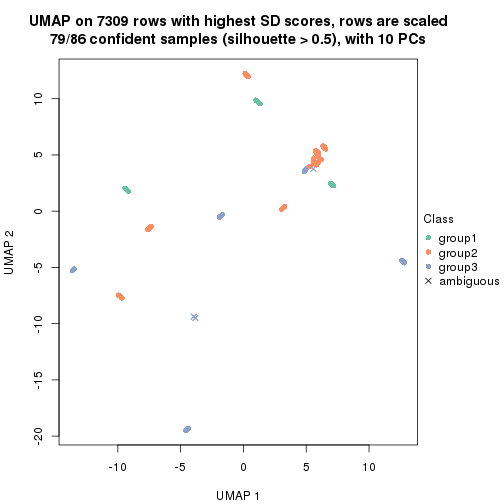
dimension_reduction(res, k = 4, method = "UMAP")
dimension_reduction(res, k = 5, method = "UMAP")
dimension_reduction(res, k = 6, method = "UMAP")
Following heatmap shows how subgroups are split when increasing k:
collect_classes(res)
If matrix rows can be associated to genes, consider to use functional_enrichment(res,
...) to perform function enrichment for the signature genes. See this vignette for more detailed explanations.
The object with results only for a single top-value method and a single partition method can be extracted as:
res = res_list["SD", "NMF"]
# you can also extract it by
# res = res_list["SD:NMF"]
A summary of res and all the functions that can be applied to it:
res
#> A 'ConsensusPartition' object with k = 2, 3, 4, 5, 6.
#> On a matrix with 7309 rows and 86 columns.
#> Top rows (731, 1462, 2192, 2923, 3654) are extracted by 'SD' method.
#> Subgroups are detected by 'NMF' method.
#> Performed in total 1250 partitions by row resampling.
#> Best k for subgroups seems to be 4.
#>
#> Following methods can be applied to this 'ConsensusPartition' object:
#> [1] "cola_report" "collect_classes" "collect_plots"
#> [4] "collect_stats" "colnames" "compare_signatures"
#> [7] "consensus_heatmap" "dimension_reduction" "functional_enrichment"
#> [10] "get_anno_col" "get_anno" "get_classes"
#> [13] "get_consensus" "get_matrix" "get_membership"
#> [16] "get_param" "get_signatures" "get_stats"
#> [19] "is_best_k" "is_stable_k" "membership_heatmap"
#> [22] "ncol" "nrow" "plot_ecdf"
#> [25] "rownames" "select_partition_number" "show"
#> [28] "suggest_best_k" "test_to_known_factors"
collect_plots() function collects all the plots made from res for all k (number of partitions)
into one single page to provide an easy and fast comparison between different k.
collect_plots(res)
The plots are:
k and the heatmap of
predicted classes for each k.k.k.k.All the plots in panels can be made by individual functions and they are plotted later in this section.
select_partition_number() produces several plots showing different
statistics for choosing “optimized” k. There are following statistics:
k;k, the area increased is defined as \(A_k - A_{k-1}\).The detailed explanations of these statistics can be found in the cola vignette.
Generally speaking, lower PAC score, higher mean silhouette score or higher
concordance corresponds to better partition. Rand index and Jaccard index
measure how similar the current partition is compared to partition with k-1.
If they are too similar, we won't accept k is better than k-1.
select_partition_number(res)
The numeric values for all these statistics can be obtained by get_stats().
get_stats(res)
#> k 1-PAC mean_silhouette concordance area_increased Rand Jaccard
#> 2 2 0.343 0.750 0.865 0.2945 0.774 0.774
#> 3 3 0.288 0.514 0.728 0.7441 0.769 0.707
#> 4 4 0.556 0.770 0.856 0.2819 0.613 0.391
#> 5 5 0.614 0.664 0.779 0.0838 0.894 0.709
#> 6 6 0.666 0.683 0.790 0.0533 0.929 0.781
suggest_best_k() suggests the best \(k\) based on these statistics. The rules are as follows:
suggest_best_k(res)
#> [1] 4
Following shows the table of the partitions (You need to click the show/hide
code output link to see it). The membership matrix (columns with name p*)
is inferred by
clue::cl_consensus()
function with the SE method. Basically the value in the membership matrix
represents the probability to belong to a certain group. The finall class
label for an item is determined with the group with highest probability it
belongs to.
In get_classes() function, the entropy is calculated from the membership
matrix and the silhouette score is calculated from the consensus matrix.
cbind(get_classes(res, k = 2), get_membership(res, k = 2))
#> class entropy silhouette p1 p2
#> SRR2240643 2 0.6973 0.755 0.188 0.812
#> SRR2240644 2 0.7056 0.751 0.192 0.808
#> SRR2240645 2 0.6973 0.755 0.188 0.812
#> SRR2240646 2 0.7056 0.751 0.192 0.808
#> SRR2240647 2 0.6973 0.757 0.188 0.812
#> SRR2240638 2 0.6623 0.758 0.172 0.828
#> SRR2240639 2 0.6623 0.758 0.172 0.828
#> SRR2240640 2 0.6623 0.758 0.172 0.828
#> SRR2240641 2 0.6623 0.758 0.172 0.828
#> SRR2240642 2 0.6623 0.758 0.172 0.828
#> SRR2240633 2 0.8081 0.666 0.248 0.752
#> SRR2240634 2 0.8016 0.671 0.244 0.756
#> SRR2240635 2 0.7883 0.684 0.236 0.764
#> SRR2240636 2 0.8081 0.666 0.248 0.752
#> SRR2240637 2 0.7815 0.691 0.232 0.768
#> SRR2240624 2 0.5519 0.788 0.128 0.872
#> SRR2240625 2 0.5842 0.779 0.140 0.860
#> SRR2240626 2 0.5629 0.785 0.132 0.868
#> SRR2240627 2 0.8661 0.584 0.288 0.712
#> SRR2240628 2 0.8555 0.601 0.280 0.720
#> SRR2240629 2 0.8608 0.592 0.284 0.716
#> SRR2240630 2 0.8661 0.584 0.288 0.712
#> SRR2240631 2 0.8499 0.609 0.276 0.724
#> SRR2240632 2 0.8661 0.584 0.288 0.712
#> SRR2240613 1 0.9795 0.472 0.584 0.416
#> SRR2240614 1 0.9795 0.472 0.584 0.416
#> SRR2240615 1 0.9795 0.472 0.584 0.416
#> SRR2240616 1 0.9795 0.472 0.584 0.416
#> SRR2240617 1 0.9795 0.472 0.584 0.416
#> SRR2240618 1 0.3879 0.749 0.924 0.076
#> SRR2240619 1 0.3879 0.749 0.924 0.076
#> SRR2240620 1 0.3879 0.749 0.924 0.076
#> SRR2240621 1 0.3879 0.749 0.924 0.076
#> SRR2240622 1 0.3879 0.749 0.924 0.076
#> SRR2240623 1 0.3879 0.749 0.924 0.076
#> SRR2240609 2 0.0672 0.847 0.008 0.992
#> SRR2240610 2 0.0672 0.847 0.008 0.992
#> SRR2240611 2 0.0672 0.847 0.008 0.992
#> SRR2240612 2 0.0672 0.847 0.008 0.992
#> SRR2240594 2 0.3274 0.831 0.060 0.940
#> SRR2240595 2 0.3274 0.831 0.060 0.940
#> SRR2240596 2 0.3114 0.832 0.056 0.944
#> SRR2240597 2 0.3274 0.831 0.060 0.940
#> SRR2240598 2 0.3114 0.832 0.056 0.944
#> SRR2240604 2 0.0672 0.847 0.008 0.992
#> SRR2240605 2 0.0672 0.847 0.008 0.992
#> SRR2240606 2 0.0672 0.847 0.008 0.992
#> SRR2240607 2 0.0376 0.847 0.004 0.996
#> SRR2240608 2 0.0000 0.847 0.000 1.000
#> SRR2240599 2 0.5737 0.798 0.136 0.864
#> SRR2240600 2 0.5946 0.793 0.144 0.856
#> SRR2240601 2 0.5946 0.793 0.144 0.856
#> SRR2240602 2 0.5946 0.793 0.144 0.856
#> SRR2240603 2 0.5946 0.793 0.144 0.856
#> SRR2240584 2 0.2778 0.839 0.048 0.952
#> SRR2240585 2 0.2778 0.839 0.048 0.952
#> SRR2240586 2 0.2778 0.839 0.048 0.952
#> SRR2240587 2 0.2778 0.839 0.048 0.952
#> SRR2240588 2 0.2778 0.839 0.048 0.952
#> SRR2240589 2 0.9358 0.478 0.352 0.648
#> SRR2240590 2 0.9358 0.478 0.352 0.648
#> SRR2240591 2 0.9358 0.478 0.352 0.648
#> SRR2240592 2 0.9393 0.471 0.356 0.644
#> SRR2240593 2 0.9358 0.478 0.352 0.648
#> SRR2240578 2 0.3114 0.833 0.056 0.944
#> SRR2240579 2 0.3114 0.833 0.056 0.944
#> SRR2240580 2 0.3114 0.833 0.056 0.944
#> SRR2240581 2 0.3114 0.833 0.056 0.944
#> SRR2240582 2 0.3114 0.833 0.056 0.944
#> SRR2240583 2 0.3114 0.833 0.056 0.944
#> SRR1825969 2 0.0672 0.847 0.008 0.992
#> SRR1825968 2 0.0376 0.847 0.004 0.996
#> SRR1825970 2 0.1633 0.843 0.024 0.976
#> SRR1825966 2 0.0000 0.847 0.000 1.000
#> SRR1825967 2 0.0938 0.847 0.012 0.988
#> SRR1825965 2 0.1633 0.843 0.024 0.976
#> SRR1825962 2 0.0000 0.847 0.000 1.000
#> SRR1825963 2 0.0376 0.846 0.004 0.996
#> SRR1825964 2 0.1633 0.843 0.024 0.976
#> SRR1825961 2 0.5737 0.810 0.136 0.864
#> SRR1825960 2 0.0938 0.847 0.012 0.988
#> SRR1825958 2 0.0672 0.846 0.008 0.992
#> SRR1825959 2 0.0000 0.847 0.000 1.000
#> SRR1825956 2 0.0672 0.847 0.008 0.992
#> SRR1825957 2 0.0376 0.846 0.004 0.996
#> SRR1825955 2 0.0000 0.847 0.000 1.000
cbind(get_classes(res, k = 3), get_membership(res, k = 3))
#> class entropy silhouette p1 p2 p3
#> SRR2240643 2 0.8076 0.366 0.068 0.524 0.408
#> SRR2240644 2 0.8076 0.366 0.068 0.524 0.408
#> SRR2240645 2 0.8076 0.366 0.068 0.524 0.408
#> SRR2240646 2 0.8076 0.366 0.068 0.524 0.408
#> SRR2240647 2 0.8076 0.366 0.068 0.524 0.408
#> SRR2240638 2 0.7683 0.463 0.064 0.608 0.328
#> SRR2240639 2 0.7683 0.463 0.064 0.608 0.328
#> SRR2240640 2 0.7683 0.463 0.064 0.608 0.328
#> SRR2240641 2 0.7683 0.463 0.064 0.608 0.328
#> SRR2240642 2 0.7683 0.463 0.064 0.608 0.328
#> SRR2240633 2 0.8342 0.217 0.080 0.460 0.460
#> SRR2240634 2 0.8342 0.217 0.080 0.460 0.460
#> SRR2240635 3 0.8342 -0.265 0.080 0.456 0.464
#> SRR2240636 3 0.8524 -0.249 0.092 0.448 0.460
#> SRR2240637 2 0.8342 0.217 0.080 0.460 0.460
#> SRR2240624 2 0.7002 0.511 0.048 0.672 0.280
#> SRR2240625 2 0.7188 0.506 0.056 0.664 0.280
#> SRR2240626 2 0.7188 0.506 0.056 0.664 0.280
#> SRR2240627 2 0.8457 0.383 0.100 0.544 0.356
#> SRR2240628 2 0.8457 0.383 0.100 0.544 0.356
#> SRR2240629 2 0.8457 0.383 0.100 0.544 0.356
#> SRR2240630 2 0.8457 0.383 0.100 0.544 0.356
#> SRR2240631 2 0.8457 0.383 0.100 0.544 0.356
#> SRR2240632 2 0.8457 0.383 0.100 0.544 0.356
#> SRR2240613 3 0.8794 0.297 0.224 0.192 0.584
#> SRR2240614 3 0.8794 0.297 0.224 0.192 0.584
#> SRR2240615 3 0.8794 0.297 0.224 0.192 0.584
#> SRR2240616 3 0.8794 0.297 0.224 0.192 0.584
#> SRR2240617 3 0.8794 0.297 0.224 0.192 0.584
#> SRR2240618 1 0.0000 1.000 1.000 0.000 0.000
#> SRR2240619 1 0.0000 1.000 1.000 0.000 0.000
#> SRR2240620 1 0.0000 1.000 1.000 0.000 0.000
#> SRR2240621 1 0.0000 1.000 1.000 0.000 0.000
#> SRR2240622 1 0.0000 1.000 1.000 0.000 0.000
#> SRR2240623 1 0.0000 1.000 1.000 0.000 0.000
#> SRR2240609 2 0.1170 0.653 0.008 0.976 0.016
#> SRR2240610 2 0.1315 0.651 0.008 0.972 0.020
#> SRR2240611 2 0.1315 0.651 0.008 0.972 0.020
#> SRR2240612 2 0.1315 0.651 0.008 0.972 0.020
#> SRR2240594 2 0.4295 0.589 0.032 0.864 0.104
#> SRR2240595 2 0.4489 0.584 0.036 0.856 0.108
#> SRR2240596 2 0.4217 0.591 0.032 0.868 0.100
#> SRR2240597 2 0.4371 0.584 0.032 0.860 0.108
#> SRR2240598 2 0.4217 0.591 0.032 0.868 0.100
#> SRR2240604 2 0.2229 0.657 0.012 0.944 0.044
#> SRR2240605 2 0.2383 0.657 0.016 0.940 0.044
#> SRR2240606 2 0.2383 0.657 0.016 0.940 0.044
#> SRR2240607 2 0.2229 0.657 0.012 0.944 0.044
#> SRR2240608 2 0.2229 0.657 0.012 0.944 0.044
#> SRR2240599 3 0.6699 0.512 0.044 0.256 0.700
#> SRR2240600 3 0.6699 0.512 0.044 0.256 0.700
#> SRR2240601 3 0.6761 0.512 0.048 0.252 0.700
#> SRR2240602 3 0.6699 0.512 0.044 0.256 0.700
#> SRR2240603 3 0.6761 0.512 0.048 0.252 0.700
#> SRR2240584 2 0.4521 0.546 0.004 0.816 0.180
#> SRR2240585 2 0.4575 0.545 0.004 0.812 0.184
#> SRR2240586 2 0.4575 0.545 0.004 0.812 0.184
#> SRR2240587 2 0.4575 0.545 0.004 0.812 0.184
#> SRR2240588 2 0.4521 0.546 0.004 0.816 0.180
#> SRR2240589 3 0.7644 0.465 0.136 0.180 0.684
#> SRR2240590 3 0.7644 0.465 0.136 0.180 0.684
#> SRR2240591 3 0.7644 0.465 0.136 0.180 0.684
#> SRR2240592 3 0.7644 0.465 0.136 0.180 0.684
#> SRR2240593 3 0.7644 0.465 0.136 0.180 0.684
#> SRR2240578 2 0.5982 0.323 0.004 0.668 0.328
#> SRR2240579 2 0.5956 0.331 0.004 0.672 0.324
#> SRR2240580 2 0.5982 0.323 0.004 0.668 0.328
#> SRR2240581 2 0.5982 0.323 0.004 0.668 0.328
#> SRR2240582 2 0.5982 0.323 0.004 0.668 0.328
#> SRR2240583 2 0.5982 0.323 0.004 0.668 0.328
#> SRR1825969 2 0.0848 0.660 0.008 0.984 0.008
#> SRR1825968 2 0.1015 0.660 0.008 0.980 0.012
#> SRR1825970 2 0.1964 0.639 0.000 0.944 0.056
#> SRR1825966 2 0.0661 0.657 0.004 0.988 0.008
#> SRR1825967 2 0.1905 0.659 0.016 0.956 0.028
#> SRR1825965 2 0.2860 0.627 0.004 0.912 0.084
#> SRR1825962 2 0.0661 0.657 0.004 0.988 0.008
#> SRR1825963 2 0.1337 0.660 0.012 0.972 0.016
#> SRR1825964 2 0.1163 0.658 0.000 0.972 0.028
#> SRR1825961 2 0.7498 0.366 0.040 0.548 0.412
#> SRR1825960 2 0.2152 0.659 0.016 0.948 0.036
#> SRR1825958 2 0.2269 0.657 0.016 0.944 0.040
#> SRR1825959 2 0.1399 0.660 0.004 0.968 0.028
#> SRR1825956 2 0.0747 0.662 0.000 0.984 0.016
#> SRR1825957 2 0.2116 0.657 0.012 0.948 0.040
#> SRR1825955 2 0.1315 0.653 0.008 0.972 0.020
cbind(get_classes(res, k = 4), get_membership(res, k = 4))
#> class entropy silhouette p1 p2 p3 p4
#> SRR2240643 3 0.4239 0.796 0.032 0.152 0.812 0.004
#> SRR2240644 3 0.4239 0.796 0.032 0.152 0.812 0.004
#> SRR2240645 3 0.4239 0.796 0.032 0.152 0.812 0.004
#> SRR2240646 3 0.4239 0.796 0.032 0.152 0.812 0.004
#> SRR2240647 3 0.4239 0.796 0.032 0.152 0.812 0.004
#> SRR2240638 3 0.5866 0.683 0.048 0.304 0.644 0.004
#> SRR2240639 3 0.5929 0.667 0.048 0.316 0.632 0.004
#> SRR2240640 3 0.5888 0.678 0.048 0.308 0.640 0.004
#> SRR2240641 3 0.5929 0.667 0.048 0.316 0.632 0.004
#> SRR2240642 3 0.5929 0.667 0.048 0.316 0.632 0.004
#> SRR2240633 3 0.2500 0.774 0.044 0.040 0.916 0.000
#> SRR2240634 3 0.2500 0.774 0.044 0.040 0.916 0.000
#> SRR2240635 3 0.2500 0.774 0.044 0.040 0.916 0.000
#> SRR2240636 3 0.2500 0.774 0.044 0.040 0.916 0.000
#> SRR2240637 3 0.2500 0.774 0.044 0.040 0.916 0.000
#> SRR2240624 3 0.5400 0.599 0.020 0.372 0.608 0.000
#> SRR2240625 3 0.5386 0.607 0.020 0.368 0.612 0.000
#> SRR2240626 3 0.5386 0.607 0.020 0.368 0.612 0.000
#> SRR2240627 3 0.2546 0.808 0.008 0.092 0.900 0.000
#> SRR2240628 3 0.2401 0.808 0.004 0.092 0.904 0.000
#> SRR2240629 3 0.2466 0.808 0.004 0.096 0.900 0.000
#> SRR2240630 3 0.2334 0.807 0.004 0.088 0.908 0.000
#> SRR2240631 3 0.2466 0.808 0.004 0.096 0.900 0.000
#> SRR2240632 3 0.2401 0.808 0.004 0.092 0.904 0.000
#> SRR2240613 3 0.4123 0.693 0.088 0.012 0.844 0.056
#> SRR2240614 3 0.4123 0.693 0.088 0.012 0.844 0.056
#> SRR2240615 3 0.4123 0.693 0.088 0.012 0.844 0.056
#> SRR2240616 3 0.4123 0.693 0.088 0.012 0.844 0.056
#> SRR2240617 3 0.4123 0.693 0.088 0.012 0.844 0.056
#> SRR2240618 4 0.0779 1.000 0.004 0.000 0.016 0.980
#> SRR2240619 4 0.0779 1.000 0.004 0.000 0.016 0.980
#> SRR2240620 4 0.0779 1.000 0.004 0.000 0.016 0.980
#> SRR2240621 4 0.0779 1.000 0.004 0.000 0.016 0.980
#> SRR2240622 4 0.0779 1.000 0.004 0.000 0.016 0.980
#> SRR2240623 4 0.0779 1.000 0.004 0.000 0.016 0.980
#> SRR2240609 2 0.0000 0.907 0.000 1.000 0.000 0.000
#> SRR2240610 2 0.0000 0.907 0.000 1.000 0.000 0.000
#> SRR2240611 2 0.0000 0.907 0.000 1.000 0.000 0.000
#> SRR2240612 2 0.0000 0.907 0.000 1.000 0.000 0.000
#> SRR2240594 2 0.3749 0.819 0.128 0.840 0.032 0.000
#> SRR2240595 2 0.3638 0.827 0.120 0.848 0.032 0.000
#> SRR2240596 2 0.3523 0.834 0.112 0.856 0.032 0.000
#> SRR2240597 2 0.3638 0.828 0.120 0.848 0.032 0.000
#> SRR2240598 2 0.3464 0.837 0.108 0.860 0.032 0.000
#> SRR2240604 2 0.0524 0.907 0.008 0.988 0.004 0.000
#> SRR2240605 2 0.0524 0.907 0.008 0.988 0.004 0.000
#> SRR2240606 2 0.0524 0.907 0.008 0.988 0.004 0.000
#> SRR2240607 2 0.0524 0.907 0.008 0.988 0.004 0.000
#> SRR2240608 2 0.0524 0.907 0.008 0.988 0.004 0.000
#> SRR2240599 1 0.3286 0.690 0.876 0.080 0.044 0.000
#> SRR2240600 1 0.3286 0.690 0.876 0.080 0.044 0.000
#> SRR2240601 1 0.3286 0.690 0.876 0.080 0.044 0.000
#> SRR2240602 1 0.3286 0.690 0.876 0.080 0.044 0.000
#> SRR2240603 1 0.3286 0.690 0.876 0.080 0.044 0.000
#> SRR2240584 2 0.4690 0.627 0.260 0.724 0.016 0.000
#> SRR2240585 2 0.4720 0.619 0.264 0.720 0.016 0.000
#> SRR2240586 2 0.4804 0.595 0.276 0.708 0.016 0.000
#> SRR2240587 2 0.4661 0.635 0.256 0.728 0.016 0.000
#> SRR2240588 2 0.4690 0.627 0.260 0.724 0.016 0.000
#> SRR2240589 1 0.3206 0.631 0.896 0.028 0.048 0.028
#> SRR2240590 1 0.3206 0.631 0.896 0.028 0.048 0.028
#> SRR2240591 1 0.3206 0.631 0.896 0.028 0.048 0.028
#> SRR2240592 1 0.3206 0.631 0.896 0.028 0.048 0.028
#> SRR2240593 1 0.3206 0.631 0.896 0.028 0.048 0.028
#> SRR2240578 1 0.5257 0.435 0.548 0.444 0.008 0.000
#> SRR2240579 1 0.5257 0.435 0.548 0.444 0.008 0.000
#> SRR2240580 1 0.5263 0.425 0.544 0.448 0.008 0.000
#> SRR2240581 1 0.5263 0.425 0.544 0.448 0.008 0.000
#> SRR2240582 1 0.5257 0.435 0.548 0.444 0.008 0.000
#> SRR2240583 1 0.5257 0.435 0.548 0.444 0.008 0.000
#> SRR1825969 2 0.0804 0.901 0.008 0.980 0.012 0.000
#> SRR1825968 2 0.0524 0.904 0.004 0.988 0.008 0.000
#> SRR1825970 2 0.0817 0.896 0.024 0.976 0.000 0.000
#> SRR1825966 2 0.0376 0.907 0.004 0.992 0.004 0.000
#> SRR1825967 2 0.0707 0.902 0.000 0.980 0.020 0.000
#> SRR1825965 2 0.2593 0.838 0.104 0.892 0.004 0.000
#> SRR1825962 2 0.0188 0.907 0.004 0.996 0.000 0.000
#> SRR1825963 2 0.0592 0.904 0.000 0.984 0.016 0.000
#> SRR1825964 2 0.0336 0.905 0.008 0.992 0.000 0.000
#> SRR1825961 3 0.2949 0.803 0.024 0.088 0.888 0.000
#> SRR1825960 2 0.0592 0.902 0.016 0.984 0.000 0.000
#> SRR1825958 2 0.1042 0.897 0.008 0.972 0.020 0.000
#> SRR1825959 2 0.0376 0.907 0.004 0.992 0.004 0.000
#> SRR1825956 2 0.0895 0.899 0.004 0.976 0.020 0.000
#> SRR1825957 2 0.1042 0.897 0.008 0.972 0.020 0.000
#> SRR1825955 2 0.0000 0.907 0.000 1.000 0.000 0.000
cbind(get_classes(res, k = 5), get_membership(res, k = 5))
#> class entropy silhouette p1 p2 p3 p4 p5
#> SRR2240643 3 0.4326 0.6286 0.004 0.080 0.776 0.000 0.140
#> SRR2240644 3 0.4326 0.6286 0.004 0.080 0.776 0.000 0.140
#> SRR2240645 3 0.4326 0.6286 0.004 0.080 0.776 0.000 0.140
#> SRR2240646 3 0.4326 0.6286 0.004 0.080 0.776 0.000 0.140
#> SRR2240647 3 0.4326 0.6286 0.004 0.080 0.776 0.000 0.140
#> SRR2240638 3 0.5957 0.5705 0.004 0.160 0.604 0.000 0.232
#> SRR2240639 3 0.5990 0.5675 0.004 0.164 0.600 0.000 0.232
#> SRR2240640 3 0.5957 0.5705 0.004 0.160 0.604 0.000 0.232
#> SRR2240641 3 0.5990 0.5675 0.004 0.164 0.600 0.000 0.232
#> SRR2240642 3 0.5990 0.5675 0.004 0.164 0.600 0.000 0.232
#> SRR2240633 3 0.4875 -0.0543 0.024 0.016 0.668 0.000 0.292
#> SRR2240634 3 0.4875 -0.0543 0.024 0.016 0.668 0.000 0.292
#> SRR2240635 3 0.4875 -0.0543 0.024 0.016 0.668 0.000 0.292
#> SRR2240636 3 0.4875 -0.0543 0.024 0.016 0.668 0.000 0.292
#> SRR2240637 3 0.4875 -0.0543 0.024 0.016 0.668 0.000 0.292
#> SRR2240624 3 0.5773 0.5490 0.000 0.216 0.616 0.000 0.168
#> SRR2240625 3 0.5673 0.5517 0.000 0.216 0.628 0.000 0.156
#> SRR2240626 3 0.5740 0.5510 0.000 0.216 0.620 0.000 0.164
#> SRR2240627 3 0.1357 0.5628 0.000 0.048 0.948 0.000 0.004
#> SRR2240628 3 0.1357 0.5628 0.000 0.048 0.948 0.000 0.004
#> SRR2240629 3 0.1484 0.5599 0.000 0.048 0.944 0.000 0.008
#> SRR2240630 3 0.1484 0.5599 0.000 0.048 0.944 0.000 0.008
#> SRR2240631 3 0.1484 0.5599 0.000 0.048 0.944 0.000 0.008
#> SRR2240632 3 0.1484 0.5599 0.000 0.048 0.944 0.000 0.008
#> SRR2240613 5 0.5975 1.0000 0.040 0.000 0.452 0.036 0.472
#> SRR2240614 5 0.5975 1.0000 0.040 0.000 0.452 0.036 0.472
#> SRR2240615 5 0.5975 1.0000 0.040 0.000 0.452 0.036 0.472
#> SRR2240616 5 0.5975 1.0000 0.040 0.000 0.452 0.036 0.472
#> SRR2240617 5 0.5975 1.0000 0.040 0.000 0.452 0.036 0.472
#> SRR2240618 4 0.0000 1.0000 0.000 0.000 0.000 1.000 0.000
#> SRR2240619 4 0.0000 1.0000 0.000 0.000 0.000 1.000 0.000
#> SRR2240620 4 0.0000 1.0000 0.000 0.000 0.000 1.000 0.000
#> SRR2240621 4 0.0000 1.0000 0.000 0.000 0.000 1.000 0.000
#> SRR2240622 4 0.0000 1.0000 0.000 0.000 0.000 1.000 0.000
#> SRR2240623 4 0.0000 1.0000 0.000 0.000 0.000 1.000 0.000
#> SRR2240609 2 0.0000 0.8157 0.000 1.000 0.000 0.000 0.000
#> SRR2240610 2 0.0000 0.8157 0.000 1.000 0.000 0.000 0.000
#> SRR2240611 2 0.0000 0.8157 0.000 1.000 0.000 0.000 0.000
#> SRR2240612 2 0.0000 0.8157 0.000 1.000 0.000 0.000 0.000
#> SRR2240594 2 0.4913 0.7141 0.132 0.764 0.036 0.004 0.064
#> SRR2240595 2 0.4913 0.7138 0.132 0.764 0.036 0.004 0.064
#> SRR2240596 2 0.4868 0.7161 0.128 0.768 0.036 0.004 0.064
#> SRR2240597 2 0.4868 0.7164 0.128 0.768 0.036 0.004 0.064
#> SRR2240598 2 0.4823 0.7180 0.124 0.772 0.036 0.004 0.064
#> SRR2240604 2 0.0290 0.8156 0.000 0.992 0.008 0.000 0.000
#> SRR2240605 2 0.0290 0.8156 0.000 0.992 0.008 0.000 0.000
#> SRR2240606 2 0.0290 0.8156 0.000 0.992 0.008 0.000 0.000
#> SRR2240607 2 0.0290 0.8156 0.000 0.992 0.008 0.000 0.000
#> SRR2240608 2 0.0290 0.8156 0.000 0.992 0.008 0.000 0.000
#> SRR2240599 1 0.2172 0.7962 0.908 0.076 0.000 0.000 0.016
#> SRR2240600 1 0.2172 0.7962 0.908 0.076 0.000 0.000 0.016
#> SRR2240601 1 0.2172 0.7962 0.908 0.076 0.000 0.000 0.016
#> SRR2240602 1 0.2172 0.7962 0.908 0.076 0.000 0.000 0.016
#> SRR2240603 1 0.2172 0.7962 0.908 0.076 0.000 0.000 0.016
#> SRR2240584 2 0.5438 0.4779 0.372 0.576 0.024 0.000 0.028
#> SRR2240585 2 0.5478 0.4493 0.388 0.560 0.024 0.000 0.028
#> SRR2240586 2 0.5469 0.4573 0.384 0.564 0.024 0.000 0.028
#> SRR2240587 2 0.5378 0.4652 0.380 0.572 0.020 0.000 0.028
#> SRR2240588 2 0.5259 0.4876 0.368 0.588 0.016 0.000 0.028
#> SRR2240589 1 0.4383 0.7827 0.700 0.008 0.004 0.008 0.280
#> SRR2240590 1 0.4383 0.7827 0.700 0.008 0.004 0.008 0.280
#> SRR2240591 1 0.4383 0.7827 0.700 0.008 0.004 0.008 0.280
#> SRR2240592 1 0.4383 0.7827 0.700 0.008 0.004 0.008 0.280
#> SRR2240593 1 0.4383 0.7827 0.700 0.008 0.004 0.008 0.280
#> SRR2240578 2 0.5425 0.3020 0.440 0.508 0.004 0.000 0.048
#> SRR2240579 2 0.5425 0.3020 0.440 0.508 0.004 0.000 0.048
#> SRR2240580 2 0.5425 0.3020 0.440 0.508 0.004 0.000 0.048
#> SRR2240581 2 0.5412 0.3271 0.428 0.520 0.004 0.000 0.048
#> SRR2240582 2 0.5428 0.2913 0.444 0.504 0.004 0.000 0.048
#> SRR2240583 2 0.5425 0.3020 0.440 0.508 0.004 0.000 0.048
#> SRR1825969 2 0.0807 0.8098 0.000 0.976 0.012 0.000 0.012
#> SRR1825968 2 0.0451 0.8131 0.000 0.988 0.008 0.000 0.004
#> SRR1825970 2 0.1095 0.8109 0.012 0.968 0.012 0.000 0.008
#> SRR1825966 2 0.0290 0.8156 0.000 0.992 0.008 0.000 0.000
#> SRR1825967 2 0.0798 0.8089 0.000 0.976 0.008 0.000 0.016
#> SRR1825965 2 0.3648 0.7114 0.188 0.792 0.004 0.000 0.016
#> SRR1825962 2 0.0290 0.8156 0.000 0.992 0.008 0.000 0.000
#> SRR1825963 2 0.0671 0.8133 0.000 0.980 0.016 0.000 0.004
#> SRR1825964 2 0.0613 0.8132 0.008 0.984 0.004 0.000 0.004
#> SRR1825961 3 0.3527 0.3211 0.000 0.024 0.804 0.000 0.172
#> SRR1825960 2 0.0867 0.8112 0.008 0.976 0.008 0.000 0.008
#> SRR1825958 2 0.1018 0.8057 0.000 0.968 0.016 0.000 0.016
#> SRR1825959 2 0.0162 0.8155 0.000 0.996 0.004 0.000 0.000
#> SRR1825956 2 0.0912 0.8091 0.000 0.972 0.012 0.000 0.016
#> SRR1825957 2 0.0798 0.8089 0.000 0.976 0.008 0.000 0.016
#> SRR1825955 2 0.0162 0.8155 0.000 0.996 0.004 0.000 0.000
cbind(get_classes(res, k = 6), get_membership(res, k = 6))
#> class entropy silhouette p1 p2 p3 p4 p5 p6
#> SRR2240643 3 0.1718 0.614 0.020 0.024 0.936 0.000 0.020 0.000
#> SRR2240644 3 0.1718 0.614 0.020 0.024 0.936 0.000 0.020 0.000
#> SRR2240645 3 0.1718 0.614 0.020 0.024 0.936 0.000 0.020 0.000
#> SRR2240646 3 0.1718 0.614 0.020 0.024 0.936 0.000 0.020 0.000
#> SRR2240647 3 0.1718 0.614 0.020 0.024 0.936 0.000 0.020 0.000
#> SRR2240638 3 0.6039 0.499 0.124 0.096 0.660 0.000 0.088 0.032
#> SRR2240639 3 0.6031 0.497 0.128 0.096 0.660 0.000 0.084 0.032
#> SRR2240640 3 0.6039 0.499 0.124 0.096 0.660 0.000 0.088 0.032
#> SRR2240641 3 0.6039 0.499 0.124 0.096 0.660 0.000 0.088 0.032
#> SRR2240642 3 0.6039 0.499 0.124 0.096 0.660 0.000 0.088 0.032
#> SRR2240633 3 0.6429 0.210 0.144 0.012 0.428 0.000 0.392 0.024
#> SRR2240634 3 0.6429 0.210 0.144 0.012 0.428 0.000 0.392 0.024
#> SRR2240635 3 0.6429 0.210 0.144 0.012 0.428 0.000 0.392 0.024
#> SRR2240636 3 0.6429 0.210 0.144 0.012 0.428 0.000 0.392 0.024
#> SRR2240637 3 0.6429 0.210 0.144 0.012 0.428 0.000 0.392 0.024
#> SRR2240624 3 0.5452 0.519 0.036 0.164 0.688 0.000 0.088 0.024
#> SRR2240625 3 0.5480 0.519 0.028 0.168 0.680 0.000 0.100 0.024
#> SRR2240626 3 0.5339 0.528 0.028 0.156 0.696 0.000 0.096 0.024
#> SRR2240627 3 0.3923 0.578 0.044 0.016 0.784 0.000 0.152 0.004
#> SRR2240628 3 0.3923 0.578 0.044 0.016 0.784 0.000 0.152 0.004
#> SRR2240629 3 0.3923 0.578 0.044 0.016 0.784 0.000 0.152 0.004
#> SRR2240630 3 0.3923 0.578 0.044 0.016 0.784 0.000 0.152 0.004
#> SRR2240631 3 0.3923 0.578 0.044 0.016 0.784 0.000 0.152 0.004
#> SRR2240632 3 0.3923 0.578 0.044 0.016 0.784 0.000 0.152 0.004
#> SRR2240613 5 0.3909 1.000 0.020 0.000 0.132 0.016 0.800 0.032
#> SRR2240614 5 0.3909 1.000 0.020 0.000 0.132 0.016 0.800 0.032
#> SRR2240615 5 0.3909 1.000 0.020 0.000 0.132 0.016 0.800 0.032
#> SRR2240616 5 0.3909 1.000 0.020 0.000 0.132 0.016 0.800 0.032
#> SRR2240617 5 0.3909 1.000 0.020 0.000 0.132 0.016 0.800 0.032
#> SRR2240618 4 0.0000 1.000 0.000 0.000 0.000 1.000 0.000 0.000
#> SRR2240619 4 0.0000 1.000 0.000 0.000 0.000 1.000 0.000 0.000
#> SRR2240620 4 0.0000 1.000 0.000 0.000 0.000 1.000 0.000 0.000
#> SRR2240621 4 0.0000 1.000 0.000 0.000 0.000 1.000 0.000 0.000
#> SRR2240622 4 0.0000 1.000 0.000 0.000 0.000 1.000 0.000 0.000
#> SRR2240623 4 0.0000 1.000 0.000 0.000 0.000 1.000 0.000 0.000
#> SRR2240609 2 0.0146 0.843 0.004 0.996 0.000 0.000 0.000 0.000
#> SRR2240610 2 0.0146 0.843 0.004 0.996 0.000 0.000 0.000 0.000
#> SRR2240611 2 0.0146 0.843 0.004 0.996 0.000 0.000 0.000 0.000
#> SRR2240612 2 0.0146 0.843 0.004 0.996 0.000 0.000 0.000 0.000
#> SRR2240594 2 0.4920 0.656 0.028 0.732 0.072 0.008 0.008 0.152
#> SRR2240595 2 0.4920 0.656 0.028 0.732 0.072 0.008 0.008 0.152
#> SRR2240596 2 0.4884 0.660 0.028 0.736 0.072 0.008 0.008 0.148
#> SRR2240597 2 0.4920 0.656 0.028 0.732 0.072 0.008 0.008 0.152
#> SRR2240598 2 0.4848 0.664 0.028 0.740 0.072 0.008 0.008 0.144
#> SRR2240604 2 0.0291 0.841 0.004 0.992 0.000 0.000 0.004 0.000
#> SRR2240605 2 0.0405 0.839 0.004 0.988 0.000 0.000 0.008 0.000
#> SRR2240606 2 0.0405 0.839 0.004 0.988 0.000 0.000 0.008 0.000
#> SRR2240607 2 0.0291 0.841 0.004 0.992 0.000 0.000 0.004 0.000
#> SRR2240608 2 0.0405 0.841 0.008 0.988 0.000 0.000 0.004 0.000
#> SRR2240599 6 0.2670 0.453 0.052 0.044 0.000 0.000 0.020 0.884
#> SRR2240600 6 0.2670 0.453 0.052 0.044 0.000 0.000 0.020 0.884
#> SRR2240601 6 0.2670 0.453 0.052 0.044 0.000 0.000 0.020 0.884
#> SRR2240602 6 0.2670 0.453 0.052 0.044 0.000 0.000 0.020 0.884
#> SRR2240603 6 0.2670 0.453 0.052 0.044 0.000 0.000 0.020 0.884
#> SRR2240584 2 0.5263 0.262 0.028 0.556 0.032 0.000 0.008 0.376
#> SRR2240585 2 0.5272 0.249 0.028 0.552 0.032 0.000 0.008 0.380
#> SRR2240586 2 0.5263 0.262 0.028 0.556 0.032 0.000 0.008 0.376
#> SRR2240587 2 0.5235 0.291 0.028 0.568 0.032 0.000 0.008 0.364
#> SRR2240588 2 0.5298 0.296 0.028 0.564 0.036 0.000 0.008 0.364
#> SRR2240589 1 0.3946 1.000 0.696 0.000 0.004 0.004 0.012 0.284
#> SRR2240590 1 0.3946 1.000 0.696 0.000 0.004 0.004 0.012 0.284
#> SRR2240591 1 0.3946 1.000 0.696 0.000 0.004 0.004 0.012 0.284
#> SRR2240592 1 0.3946 1.000 0.696 0.000 0.004 0.004 0.012 0.284
#> SRR2240593 1 0.3946 1.000 0.696 0.000 0.004 0.004 0.012 0.284
#> SRR2240578 6 0.5223 0.669 0.064 0.344 0.004 0.000 0.012 0.576
#> SRR2240579 6 0.5223 0.669 0.064 0.344 0.004 0.000 0.012 0.576
#> SRR2240580 6 0.5223 0.669 0.064 0.344 0.004 0.000 0.012 0.576
#> SRR2240581 6 0.5235 0.661 0.064 0.348 0.004 0.000 0.012 0.572
#> SRR2240582 6 0.5212 0.672 0.064 0.340 0.004 0.000 0.012 0.580
#> SRR2240583 6 0.5212 0.672 0.064 0.340 0.004 0.000 0.012 0.580
#> SRR1825969 2 0.0951 0.834 0.008 0.968 0.020 0.000 0.000 0.004
#> SRR1825968 2 0.0520 0.842 0.008 0.984 0.008 0.000 0.000 0.000
#> SRR1825970 2 0.1490 0.822 0.016 0.948 0.008 0.000 0.004 0.024
#> SRR1825966 2 0.0520 0.842 0.008 0.984 0.008 0.000 0.000 0.000
#> SRR1825967 2 0.0508 0.841 0.004 0.984 0.012 0.000 0.000 0.000
#> SRR1825965 2 0.4330 0.447 0.028 0.684 0.004 0.000 0.008 0.276
#> SRR1825962 2 0.0000 0.842 0.000 1.000 0.000 0.000 0.000 0.000
#> SRR1825963 2 0.0520 0.842 0.008 0.984 0.008 0.000 0.000 0.000
#> SRR1825964 2 0.0520 0.839 0.008 0.984 0.000 0.000 0.008 0.000
#> SRR1825961 3 0.5345 0.390 0.092 0.004 0.604 0.000 0.288 0.012
#> SRR1825960 2 0.0622 0.837 0.008 0.980 0.000 0.000 0.012 0.000
#> SRR1825958 2 0.0717 0.839 0.008 0.976 0.016 0.000 0.000 0.000
#> SRR1825959 2 0.0551 0.840 0.004 0.984 0.004 0.000 0.008 0.000
#> SRR1825956 2 0.0748 0.837 0.004 0.976 0.016 0.000 0.000 0.004
#> SRR1825957 2 0.0806 0.836 0.008 0.972 0.020 0.000 0.000 0.000
#> SRR1825955 2 0.0291 0.842 0.004 0.992 0.004 0.000 0.000 0.000
Heatmaps for the consensus matrix. It visualizes the probability of two samples to be in a same group.
consensus_heatmap(res, k = 2)
consensus_heatmap(res, k = 3)
consensus_heatmap(res, k = 4)
consensus_heatmap(res, k = 5)
consensus_heatmap(res, k = 6)
Heatmaps for the membership of samples in all partitions to see how consistent they are:
membership_heatmap(res, k = 2)
membership_heatmap(res, k = 3)

membership_heatmap(res, k = 4)
membership_heatmap(res, k = 5)
membership_heatmap(res, k = 6)
As soon as we have had the classes for columns, we can look for signatures which are significantly different between classes which can be candidate marks for certain classes. Following are the heatmaps for signatures.
Signature heatmaps where rows are scaled:
get_signatures(res, k = 2)
get_signatures(res, k = 3)
get_signatures(res, k = 4)
get_signatures(res, k = 5)
get_signatures(res, k = 6)
Signature heatmaps where rows are not scaled:
get_signatures(res, k = 2, scale_rows = FALSE)
get_signatures(res, k = 3, scale_rows = FALSE)
get_signatures(res, k = 4, scale_rows = FALSE)
get_signatures(res, k = 5, scale_rows = FALSE)
get_signatures(res, k = 6, scale_rows = FALSE)
Compare the overlap of signatures from different k:
compare_signatures(res)
get_signature() returns a data frame invisibly. TO get the list of signatures, the function
call should be assigned to a variable explicitly. In following code, if plot argument is set
to FALSE, no heatmap is plotted while only the differential analysis is performed.
# code only for demonstration
tb = get_signature(res, k = ..., plot = FALSE)
An example of the output of tb is:
#> which_row fdr mean_1 mean_2 scaled_mean_1 scaled_mean_2 km
#> 1 38 0.042760348 8.373488 9.131774 -0.5533452 0.5164555 1
#> 2 40 0.018707592 7.106213 8.469186 -0.6173731 0.5762149 1
#> 3 55 0.019134737 10.221463 11.207825 -0.6159697 0.5749050 1
#> 4 59 0.006059896 5.921854 7.869574 -0.6899429 0.6439467 1
#> 5 60 0.018055526 8.928898 10.211722 -0.6204761 0.5791110 1
#> 6 98 0.009384629 15.714769 14.887706 0.6635654 -0.6193277 2
...
The columns in tb are:
which_row: row indices corresponding to the input matrix.fdr: FDR for the differential test. mean_x: The mean value in group x.scaled_mean_x: The mean value in group x after rows are scaled.km: Row groups if k-means clustering is applied to rows.UMAP plot which shows how samples are separated.
dimension_reduction(res, k = 2, method = "UMAP")
dimension_reduction(res, k = 3, method = "UMAP")
dimension_reduction(res, k = 4, method = "UMAP")
dimension_reduction(res, k = 5, method = "UMAP")
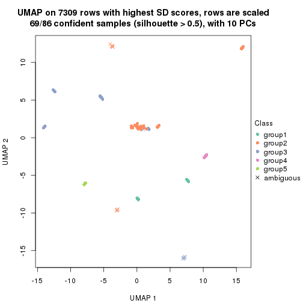
dimension_reduction(res, k = 6, method = "UMAP")
Following heatmap shows how subgroups are split when increasing k:
collect_classes(res)
If matrix rows can be associated to genes, consider to use functional_enrichment(res,
...) to perform function enrichment for the signature genes. See this vignette for more detailed explanations.
The object with results only for a single top-value method and a single partition method can be extracted as:
res = res_list["CV", "hclust"]
# you can also extract it by
# res = res_list["CV:hclust"]
A summary of res and all the functions that can be applied to it:
res
#> A 'ConsensusPartition' object with k = 2, 3, 4, 5, 6.
#> On a matrix with 7309 rows and 86 columns.
#> Top rows (731, 1462, 2192, 2923, 3654) are extracted by 'CV' method.
#> Subgroups are detected by 'hclust' method.
#> Performed in total 1250 partitions by row resampling.
#> Best k for subgroups seems to be 5.
#>
#> Following methods can be applied to this 'ConsensusPartition' object:
#> [1] "cola_report" "collect_classes" "collect_plots"
#> [4] "collect_stats" "colnames" "compare_signatures"
#> [7] "consensus_heatmap" "dimension_reduction" "functional_enrichment"
#> [10] "get_anno_col" "get_anno" "get_classes"
#> [13] "get_consensus" "get_matrix" "get_membership"
#> [16] "get_param" "get_signatures" "get_stats"
#> [19] "is_best_k" "is_stable_k" "membership_heatmap"
#> [22] "ncol" "nrow" "plot_ecdf"
#> [25] "rownames" "select_partition_number" "show"
#> [28] "suggest_best_k" "test_to_known_factors"
collect_plots() function collects all the plots made from res for all k (number of partitions)
into one single page to provide an easy and fast comparison between different k.
collect_plots(res)
The plots are:
k and the heatmap of
predicted classes for each k.k.k.k.All the plots in panels can be made by individual functions and they are plotted later in this section.
select_partition_number() produces several plots showing different
statistics for choosing “optimized” k. There are following statistics:
k;k, the area increased is defined as \(A_k - A_{k-1}\).The detailed explanations of these statistics can be found in the cola vignette.
Generally speaking, lower PAC score, higher mean silhouette score or higher
concordance corresponds to better partition. Rand index and Jaccard index
measure how similar the current partition is compared to partition with k-1.
If they are too similar, we won't accept k is better than k-1.
select_partition_number(res)
The numeric values for all these statistics can be obtained by get_stats().
get_stats(res)
#> k 1-PAC mean_silhouette concordance area_increased Rand Jaccard
#> 2 2 0.239 0.727 0.801 0.4304 0.504 0.504
#> 3 3 0.366 0.675 0.759 0.2487 0.937 0.874
#> 4 4 0.553 0.762 0.753 0.1472 0.936 0.857
#> 5 5 0.701 0.877 0.810 0.1501 0.837 0.586
#> 6 6 0.909 0.909 0.908 0.0814 0.992 0.964
suggest_best_k() suggests the best \(k\) based on these statistics. The rules are as follows:
suggest_best_k(res)
#> [1] 5
Following shows the table of the partitions (You need to click the show/hide
code output link to see it). The membership matrix (columns with name p*)
is inferred by
clue::cl_consensus()
function with the SE method. Basically the value in the membership matrix
represents the probability to belong to a certain group. The finall class
label for an item is determined with the group with highest probability it
belongs to.
In get_classes() function, the entropy is calculated from the membership
matrix and the silhouette score is calculated from the consensus matrix.
cbind(get_classes(res, k = 2), get_membership(res, k = 2))
#> class entropy silhouette p1 p2
#> SRR2240643 1 0.814 0.706 0.748 0.252
#> SRR2240644 1 0.814 0.706 0.748 0.252
#> SRR2240645 1 0.814 0.706 0.748 0.252
#> SRR2240646 1 0.814 0.706 0.748 0.252
#> SRR2240647 1 0.814 0.706 0.748 0.252
#> SRR2240638 1 0.802 0.688 0.756 0.244
#> SRR2240639 1 0.802 0.688 0.756 0.244
#> SRR2240640 1 0.802 0.688 0.756 0.244
#> SRR2240641 1 0.802 0.688 0.756 0.244
#> SRR2240642 1 0.802 0.688 0.756 0.244
#> SRR2240633 1 0.827 0.693 0.740 0.260
#> SRR2240634 1 0.827 0.693 0.740 0.260
#> SRR2240635 1 0.827 0.693 0.740 0.260
#> SRR2240636 1 0.827 0.693 0.740 0.260
#> SRR2240637 1 0.827 0.693 0.740 0.260
#> SRR2240624 1 0.900 0.672 0.684 0.316
#> SRR2240625 1 0.900 0.672 0.684 0.316
#> SRR2240626 1 0.900 0.672 0.684 0.316
#> SRR2240627 1 0.844 0.687 0.728 0.272
#> SRR2240628 1 0.844 0.687 0.728 0.272
#> SRR2240629 1 0.844 0.687 0.728 0.272
#> SRR2240630 1 0.844 0.687 0.728 0.272
#> SRR2240631 1 0.844 0.687 0.728 0.272
#> SRR2240632 1 0.844 0.687 0.728 0.272
#> SRR2240613 1 0.833 0.664 0.736 0.264
#> SRR2240614 1 0.833 0.664 0.736 0.264
#> SRR2240615 1 0.833 0.664 0.736 0.264
#> SRR2240616 1 0.833 0.664 0.736 0.264
#> SRR2240617 1 0.833 0.664 0.736 0.264
#> SRR2240618 1 0.904 0.600 0.680 0.320
#> SRR2240619 1 0.904 0.600 0.680 0.320
#> SRR2240620 1 0.904 0.600 0.680 0.320
#> SRR2240621 1 0.904 0.600 0.680 0.320
#> SRR2240622 1 0.904 0.600 0.680 0.320
#> SRR2240623 1 0.904 0.600 0.680 0.320
#> SRR2240609 2 0.358 0.749 0.068 0.932
#> SRR2240610 2 0.358 0.749 0.068 0.932
#> SRR2240611 2 0.358 0.749 0.068 0.932
#> SRR2240612 2 0.358 0.749 0.068 0.932
#> SRR2240594 2 0.722 0.796 0.200 0.800
#> SRR2240595 2 0.722 0.796 0.200 0.800
#> SRR2240596 2 0.722 0.796 0.200 0.800
#> SRR2240597 2 0.722 0.796 0.200 0.800
#> SRR2240598 2 0.722 0.796 0.200 0.800
#> SRR2240604 2 0.358 0.749 0.068 0.932
#> SRR2240605 2 0.358 0.749 0.068 0.932
#> SRR2240606 2 0.358 0.749 0.068 0.932
#> SRR2240607 2 0.358 0.749 0.068 0.932
#> SRR2240608 2 0.358 0.749 0.068 0.932
#> SRR2240599 2 0.775 0.778 0.228 0.772
#> SRR2240600 2 0.775 0.778 0.228 0.772
#> SRR2240601 2 0.775 0.778 0.228 0.772
#> SRR2240602 2 0.775 0.778 0.228 0.772
#> SRR2240603 2 0.775 0.778 0.228 0.772
#> SRR2240584 2 0.722 0.796 0.200 0.800
#> SRR2240585 2 0.722 0.796 0.200 0.800
#> SRR2240586 2 0.722 0.796 0.200 0.800
#> SRR2240587 2 0.722 0.796 0.200 0.800
#> SRR2240588 2 0.722 0.796 0.200 0.800
#> SRR2240589 2 0.775 0.778 0.228 0.772
#> SRR2240590 2 0.775 0.778 0.228 0.772
#> SRR2240591 2 0.775 0.778 0.228 0.772
#> SRR2240592 2 0.775 0.778 0.228 0.772
#> SRR2240593 2 0.775 0.778 0.228 0.772
#> SRR2240578 2 0.722 0.795 0.200 0.800
#> SRR2240579 2 0.722 0.795 0.200 0.800
#> SRR2240580 2 0.722 0.795 0.200 0.800
#> SRR2240581 2 0.722 0.795 0.200 0.800
#> SRR2240582 2 0.722 0.795 0.200 0.800
#> SRR2240583 2 0.722 0.795 0.200 0.800
#> SRR1825969 2 0.358 0.749 0.068 0.932
#> SRR1825968 2 0.358 0.749 0.068 0.932
#> SRR1825970 1 0.925 0.642 0.660 0.340
#> SRR1825966 2 0.358 0.749 0.068 0.932
#> SRR1825967 2 0.358 0.749 0.068 0.932
#> SRR1825965 2 0.722 0.796 0.200 0.800
#> SRR1825962 2 0.358 0.749 0.068 0.932
#> SRR1825963 2 0.358 0.749 0.068 0.932
#> SRR1825964 2 0.358 0.749 0.068 0.932
#> SRR1825961 1 0.925 0.642 0.660 0.340
#> SRR1825960 2 0.358 0.749 0.068 0.932
#> SRR1825958 2 0.358 0.749 0.068 0.932
#> SRR1825959 2 0.358 0.749 0.068 0.932
#> SRR1825956 2 0.358 0.749 0.068 0.932
#> SRR1825957 2 0.358 0.749 0.068 0.932
#> SRR1825955 2 0.358 0.749 0.068 0.932
cbind(get_classes(res, k = 3), get_membership(res, k = 3))
#> class entropy silhouette p1 p2 p3
#> SRR2240643 3 0.4504 0.172 0.196 0.000 0.804
#> SRR2240644 3 0.4504 0.172 0.196 0.000 0.804
#> SRR2240645 3 0.4504 0.172 0.196 0.000 0.804
#> SRR2240646 3 0.4504 0.172 0.196 0.000 0.804
#> SRR2240647 3 0.4504 0.172 0.196 0.000 0.804
#> SRR2240638 3 0.3752 0.183 0.144 0.000 0.856
#> SRR2240639 3 0.3752 0.183 0.144 0.000 0.856
#> SRR2240640 3 0.3752 0.183 0.144 0.000 0.856
#> SRR2240641 3 0.3752 0.183 0.144 0.000 0.856
#> SRR2240642 3 0.3752 0.183 0.144 0.000 0.856
#> SRR2240633 1 0.5529 0.784 0.704 0.000 0.296
#> SRR2240634 1 0.5529 0.784 0.704 0.000 0.296
#> SRR2240635 1 0.5529 0.784 0.704 0.000 0.296
#> SRR2240636 1 0.5529 0.784 0.704 0.000 0.296
#> SRR2240637 1 0.5529 0.784 0.704 0.000 0.296
#> SRR2240624 1 0.6284 0.613 0.680 0.016 0.304
#> SRR2240625 1 0.6284 0.613 0.680 0.016 0.304
#> SRR2240626 1 0.6284 0.613 0.680 0.016 0.304
#> SRR2240627 3 0.5956 0.662 0.004 0.324 0.672
#> SRR2240628 3 0.5956 0.662 0.004 0.324 0.672
#> SRR2240629 3 0.5956 0.662 0.004 0.324 0.672
#> SRR2240630 3 0.5956 0.662 0.004 0.324 0.672
#> SRR2240631 3 0.5956 0.662 0.004 0.324 0.672
#> SRR2240632 3 0.5956 0.662 0.004 0.324 0.672
#> SRR2240613 3 0.7724 0.665 0.060 0.352 0.588
#> SRR2240614 3 0.7724 0.665 0.060 0.352 0.588
#> SRR2240615 3 0.7724 0.665 0.060 0.352 0.588
#> SRR2240616 3 0.7724 0.665 0.060 0.352 0.588
#> SRR2240617 3 0.7724 0.665 0.060 0.352 0.588
#> SRR2240618 3 0.8179 0.626 0.072 0.424 0.504
#> SRR2240619 3 0.8179 0.626 0.072 0.424 0.504
#> SRR2240620 3 0.8179 0.626 0.072 0.424 0.504
#> SRR2240621 3 0.8179 0.626 0.072 0.424 0.504
#> SRR2240622 3 0.8179 0.626 0.072 0.424 0.504
#> SRR2240623 3 0.8179 0.626 0.072 0.424 0.504
#> SRR2240609 2 0.7333 0.764 0.180 0.704 0.116
#> SRR2240610 2 0.7333 0.764 0.180 0.704 0.116
#> SRR2240611 2 0.7333 0.764 0.180 0.704 0.116
#> SRR2240612 2 0.7333 0.764 0.180 0.704 0.116
#> SRR2240594 2 0.0475 0.800 0.004 0.992 0.004
#> SRR2240595 2 0.0475 0.800 0.004 0.992 0.004
#> SRR2240596 2 0.0475 0.800 0.004 0.992 0.004
#> SRR2240597 2 0.0475 0.800 0.004 0.992 0.004
#> SRR2240598 2 0.0475 0.800 0.004 0.992 0.004
#> SRR2240604 2 0.7333 0.764 0.180 0.704 0.116
#> SRR2240605 2 0.7333 0.764 0.180 0.704 0.116
#> SRR2240606 2 0.7333 0.764 0.180 0.704 0.116
#> SRR2240607 2 0.7333 0.764 0.180 0.704 0.116
#> SRR2240608 2 0.7333 0.764 0.180 0.704 0.116
#> SRR2240599 2 0.1315 0.783 0.020 0.972 0.008
#> SRR2240600 2 0.1315 0.783 0.020 0.972 0.008
#> SRR2240601 2 0.1315 0.783 0.020 0.972 0.008
#> SRR2240602 2 0.1315 0.783 0.020 0.972 0.008
#> SRR2240603 2 0.1315 0.783 0.020 0.972 0.008
#> SRR2240584 2 0.0475 0.800 0.004 0.992 0.004
#> SRR2240585 2 0.0475 0.800 0.004 0.992 0.004
#> SRR2240586 2 0.0475 0.800 0.004 0.992 0.004
#> SRR2240587 2 0.0475 0.800 0.004 0.992 0.004
#> SRR2240588 2 0.0475 0.800 0.004 0.992 0.004
#> SRR2240589 2 0.1315 0.783 0.020 0.972 0.008
#> SRR2240590 2 0.1315 0.783 0.020 0.972 0.008
#> SRR2240591 2 0.1315 0.783 0.020 0.972 0.008
#> SRR2240592 2 0.1315 0.783 0.020 0.972 0.008
#> SRR2240593 2 0.1315 0.783 0.020 0.972 0.008
#> SRR2240578 2 0.0000 0.800 0.000 1.000 0.000
#> SRR2240579 2 0.0000 0.800 0.000 1.000 0.000
#> SRR2240580 2 0.0000 0.800 0.000 1.000 0.000
#> SRR2240581 2 0.0000 0.800 0.000 1.000 0.000
#> SRR2240582 2 0.0000 0.800 0.000 1.000 0.000
#> SRR2240583 2 0.0000 0.800 0.000 1.000 0.000
#> SRR1825969 2 0.7333 0.764 0.180 0.704 0.116
#> SRR1825968 2 0.7333 0.764 0.180 0.704 0.116
#> SRR1825970 3 0.8196 0.630 0.084 0.356 0.560
#> SRR1825966 2 0.7333 0.764 0.180 0.704 0.116
#> SRR1825967 2 0.7333 0.764 0.180 0.704 0.116
#> SRR1825965 2 0.0475 0.800 0.004 0.992 0.004
#> SRR1825962 2 0.7333 0.764 0.180 0.704 0.116
#> SRR1825963 2 0.7333 0.764 0.180 0.704 0.116
#> SRR1825964 2 0.7333 0.764 0.180 0.704 0.116
#> SRR1825961 3 0.8196 0.630 0.084 0.356 0.560
#> SRR1825960 2 0.7333 0.764 0.180 0.704 0.116
#> SRR1825958 2 0.7333 0.764 0.180 0.704 0.116
#> SRR1825959 2 0.7333 0.764 0.180 0.704 0.116
#> SRR1825956 2 0.7333 0.764 0.180 0.704 0.116
#> SRR1825957 2 0.7333 0.764 0.180 0.704 0.116
#> SRR1825955 2 0.7333 0.764 0.180 0.704 0.116
cbind(get_classes(res, k = 4), get_membership(res, k = 4))
#> class entropy silhouette p1 p2 p3 p4
#> SRR2240643 3 0.6395 0.667 0.460 0.000 0.476 0.064
#> SRR2240644 3 0.6395 0.667 0.460 0.000 0.476 0.064
#> SRR2240645 3 0.6395 0.667 0.460 0.000 0.476 0.064
#> SRR2240646 3 0.6395 0.667 0.460 0.000 0.476 0.064
#> SRR2240647 3 0.6395 0.667 0.460 0.000 0.476 0.064
#> SRR2240638 3 0.4663 0.701 0.272 0.000 0.716 0.012
#> SRR2240639 3 0.4663 0.701 0.272 0.000 0.716 0.012
#> SRR2240640 3 0.4663 0.701 0.272 0.000 0.716 0.012
#> SRR2240641 3 0.4663 0.701 0.272 0.000 0.716 0.012
#> SRR2240642 3 0.4663 0.701 0.272 0.000 0.716 0.012
#> SRR2240633 4 0.6344 1.000 0.224 0.000 0.128 0.648
#> SRR2240634 4 0.6344 1.000 0.224 0.000 0.128 0.648
#> SRR2240635 4 0.6344 1.000 0.224 0.000 0.128 0.648
#> SRR2240636 4 0.6344 1.000 0.224 0.000 0.128 0.648
#> SRR2240637 4 0.6344 1.000 0.224 0.000 0.128 0.648
#> SRR2240624 3 0.6762 0.188 0.080 0.004 0.488 0.428
#> SRR2240625 3 0.6762 0.188 0.080 0.004 0.488 0.428
#> SRR2240626 3 0.6762 0.188 0.080 0.004 0.488 0.428
#> SRR2240627 1 0.5909 0.795 0.708 0.172 0.116 0.004
#> SRR2240628 1 0.5909 0.795 0.708 0.172 0.116 0.004
#> SRR2240629 1 0.5909 0.795 0.708 0.172 0.116 0.004
#> SRR2240630 1 0.5909 0.795 0.708 0.172 0.116 0.004
#> SRR2240631 1 0.5909 0.795 0.708 0.172 0.116 0.004
#> SRR2240632 1 0.5909 0.795 0.708 0.172 0.116 0.004
#> SRR2240613 1 0.3486 0.868 0.812 0.188 0.000 0.000
#> SRR2240614 1 0.3486 0.868 0.812 0.188 0.000 0.000
#> SRR2240615 1 0.3486 0.868 0.812 0.188 0.000 0.000
#> SRR2240616 1 0.3486 0.868 0.812 0.188 0.000 0.000
#> SRR2240617 1 0.3486 0.868 0.812 0.188 0.000 0.000
#> SRR2240618 1 0.5638 0.841 0.708 0.228 0.056 0.008
#> SRR2240619 1 0.5638 0.841 0.708 0.228 0.056 0.008
#> SRR2240620 1 0.5638 0.841 0.708 0.228 0.056 0.008
#> SRR2240621 1 0.5638 0.841 0.708 0.228 0.056 0.008
#> SRR2240622 1 0.5638 0.841 0.708 0.228 0.056 0.008
#> SRR2240623 1 0.5638 0.841 0.708 0.228 0.056 0.008
#> SRR2240609 2 0.6119 0.749 0.040 0.632 0.016 0.312
#> SRR2240610 2 0.6119 0.749 0.040 0.632 0.016 0.312
#> SRR2240611 2 0.6119 0.749 0.040 0.632 0.016 0.312
#> SRR2240612 2 0.6119 0.749 0.040 0.632 0.016 0.312
#> SRR2240594 2 0.0376 0.779 0.004 0.992 0.004 0.000
#> SRR2240595 2 0.0376 0.779 0.004 0.992 0.004 0.000
#> SRR2240596 2 0.0376 0.779 0.004 0.992 0.004 0.000
#> SRR2240597 2 0.0376 0.779 0.004 0.992 0.004 0.000
#> SRR2240598 2 0.0376 0.779 0.004 0.992 0.004 0.000
#> SRR2240604 2 0.6119 0.749 0.040 0.632 0.016 0.312
#> SRR2240605 2 0.6119 0.749 0.040 0.632 0.016 0.312
#> SRR2240606 2 0.6119 0.749 0.040 0.632 0.016 0.312
#> SRR2240607 2 0.6119 0.749 0.040 0.632 0.016 0.312
#> SRR2240608 2 0.6119 0.749 0.040 0.632 0.016 0.312
#> SRR2240599 2 0.0921 0.763 0.028 0.972 0.000 0.000
#> SRR2240600 2 0.0921 0.763 0.028 0.972 0.000 0.000
#> SRR2240601 2 0.0921 0.763 0.028 0.972 0.000 0.000
#> SRR2240602 2 0.0921 0.763 0.028 0.972 0.000 0.000
#> SRR2240603 2 0.0921 0.763 0.028 0.972 0.000 0.000
#> SRR2240584 2 0.0376 0.779 0.004 0.992 0.004 0.000
#> SRR2240585 2 0.0376 0.779 0.004 0.992 0.004 0.000
#> SRR2240586 2 0.0376 0.779 0.004 0.992 0.004 0.000
#> SRR2240587 2 0.0376 0.779 0.004 0.992 0.004 0.000
#> SRR2240588 2 0.0376 0.779 0.004 0.992 0.004 0.000
#> SRR2240589 2 0.0921 0.763 0.028 0.972 0.000 0.000
#> SRR2240590 2 0.0921 0.763 0.028 0.972 0.000 0.000
#> SRR2240591 2 0.0921 0.763 0.028 0.972 0.000 0.000
#> SRR2240592 2 0.0921 0.763 0.028 0.972 0.000 0.000
#> SRR2240593 2 0.0921 0.763 0.028 0.972 0.000 0.000
#> SRR2240578 2 0.0000 0.779 0.000 1.000 0.000 0.000
#> SRR2240579 2 0.0000 0.779 0.000 1.000 0.000 0.000
#> SRR2240580 2 0.0000 0.779 0.000 1.000 0.000 0.000
#> SRR2240581 2 0.0000 0.779 0.000 1.000 0.000 0.000
#> SRR2240582 2 0.0000 0.779 0.000 1.000 0.000 0.000
#> SRR2240583 2 0.0000 0.779 0.000 1.000 0.000 0.000
#> SRR1825969 2 0.6119 0.749 0.040 0.632 0.016 0.312
#> SRR1825968 2 0.6119 0.749 0.040 0.632 0.016 0.312
#> SRR1825970 1 0.4621 0.808 0.764 0.212 0.012 0.012
#> SRR1825966 2 0.6119 0.749 0.040 0.632 0.016 0.312
#> SRR1825967 2 0.6119 0.749 0.040 0.632 0.016 0.312
#> SRR1825965 2 0.0712 0.779 0.004 0.984 0.004 0.008
#> SRR1825962 2 0.6119 0.749 0.040 0.632 0.016 0.312
#> SRR1825963 2 0.6119 0.749 0.040 0.632 0.016 0.312
#> SRR1825964 2 0.6119 0.749 0.040 0.632 0.016 0.312
#> SRR1825961 1 0.4621 0.808 0.764 0.212 0.012 0.012
#> SRR1825960 2 0.6119 0.749 0.040 0.632 0.016 0.312
#> SRR1825958 2 0.6119 0.749 0.040 0.632 0.016 0.312
#> SRR1825959 2 0.6119 0.749 0.040 0.632 0.016 0.312
#> SRR1825956 2 0.6119 0.749 0.040 0.632 0.016 0.312
#> SRR1825957 2 0.6119 0.749 0.040 0.632 0.016 0.312
#> SRR1825955 2 0.6119 0.749 0.040 0.632 0.016 0.312
cbind(get_classes(res, k = 5), get_membership(res, k = 5))
#> class entropy silhouette p1 p2 p3 p4 p5
#> SRR2240643 3 0.705 0.622 0.040 0.008 0.552 0.228 0.172
#> SRR2240644 3 0.705 0.622 0.040 0.008 0.552 0.228 0.172
#> SRR2240645 3 0.705 0.622 0.040 0.008 0.552 0.228 0.172
#> SRR2240646 3 0.705 0.622 0.040 0.008 0.552 0.228 0.172
#> SRR2240647 3 0.705 0.622 0.040 0.008 0.552 0.228 0.172
#> SRR2240638 3 0.256 0.668 0.000 0.000 0.856 0.000 0.144
#> SRR2240639 3 0.256 0.668 0.000 0.000 0.856 0.000 0.144
#> SRR2240640 3 0.256 0.668 0.000 0.000 0.856 0.000 0.144
#> SRR2240641 3 0.256 0.668 0.000 0.000 0.856 0.000 0.144
#> SRR2240642 3 0.256 0.668 0.000 0.000 0.856 0.000 0.144
#> SRR2240633 4 0.029 1.000 0.000 0.000 0.000 0.992 0.008
#> SRR2240634 4 0.029 1.000 0.000 0.000 0.000 0.992 0.008
#> SRR2240635 4 0.029 1.000 0.000 0.000 0.000 0.992 0.008
#> SRR2240636 4 0.029 1.000 0.000 0.000 0.000 0.992 0.008
#> SRR2240637 4 0.029 1.000 0.000 0.000 0.000 0.992 0.008
#> SRR2240624 3 0.849 0.172 0.308 0.192 0.376 0.100 0.024
#> SRR2240625 3 0.849 0.172 0.308 0.192 0.376 0.100 0.024
#> SRR2240626 3 0.849 0.172 0.308 0.192 0.376 0.100 0.024
#> SRR2240627 5 0.519 0.772 0.012 0.028 0.196 0.040 0.724
#> SRR2240628 5 0.519 0.772 0.012 0.028 0.196 0.040 0.724
#> SRR2240629 5 0.519 0.772 0.012 0.028 0.196 0.040 0.724
#> SRR2240630 5 0.519 0.772 0.012 0.028 0.196 0.040 0.724
#> SRR2240631 5 0.519 0.772 0.012 0.028 0.196 0.040 0.724
#> SRR2240632 5 0.519 0.772 0.012 0.028 0.196 0.040 0.724
#> SRR2240613 5 0.327 0.850 0.004 0.024 0.064 0.036 0.872
#> SRR2240614 5 0.327 0.850 0.004 0.024 0.064 0.036 0.872
#> SRR2240615 5 0.327 0.850 0.004 0.024 0.064 0.036 0.872
#> SRR2240616 5 0.327 0.850 0.004 0.024 0.064 0.036 0.872
#> SRR2240617 5 0.327 0.850 0.004 0.024 0.064 0.036 0.872
#> SRR2240618 5 0.131 0.823 0.020 0.024 0.000 0.000 0.956
#> SRR2240619 5 0.131 0.823 0.020 0.024 0.000 0.000 0.956
#> SRR2240620 5 0.131 0.823 0.020 0.024 0.000 0.000 0.956
#> SRR2240621 5 0.131 0.823 0.020 0.024 0.000 0.000 0.956
#> SRR2240622 5 0.131 0.823 0.020 0.024 0.000 0.000 0.956
#> SRR2240623 5 0.131 0.823 0.020 0.024 0.000 0.000 0.956
#> SRR2240609 2 0.000 1.000 0.000 1.000 0.000 0.000 0.000
#> SRR2240610 2 0.000 1.000 0.000 1.000 0.000 0.000 0.000
#> SRR2240611 2 0.000 1.000 0.000 1.000 0.000 0.000 0.000
#> SRR2240612 2 0.000 1.000 0.000 1.000 0.000 0.000 0.000
#> SRR2240594 1 0.408 0.974 0.668 0.328 0.004 0.000 0.000
#> SRR2240595 1 0.408 0.974 0.668 0.328 0.004 0.000 0.000
#> SRR2240596 1 0.408 0.974 0.668 0.328 0.004 0.000 0.000
#> SRR2240597 1 0.408 0.974 0.668 0.328 0.004 0.000 0.000
#> SRR2240598 1 0.408 0.974 0.668 0.328 0.004 0.000 0.000
#> SRR2240604 2 0.000 1.000 0.000 1.000 0.000 0.000 0.000
#> SRR2240605 2 0.000 1.000 0.000 1.000 0.000 0.000 0.000
#> SRR2240606 2 0.000 1.000 0.000 1.000 0.000 0.000 0.000
#> SRR2240607 2 0.000 1.000 0.000 1.000 0.000 0.000 0.000
#> SRR2240608 2 0.000 1.000 0.000 1.000 0.000 0.000 0.000
#> SRR2240599 1 0.451 0.966 0.676 0.296 0.000 0.000 0.028
#> SRR2240600 1 0.451 0.966 0.676 0.296 0.000 0.000 0.028
#> SRR2240601 1 0.451 0.966 0.676 0.296 0.000 0.000 0.028
#> SRR2240602 1 0.451 0.966 0.676 0.296 0.000 0.000 0.028
#> SRR2240603 1 0.451 0.966 0.676 0.296 0.000 0.000 0.028
#> SRR2240584 1 0.408 0.974 0.668 0.328 0.004 0.000 0.000
#> SRR2240585 1 0.408 0.974 0.668 0.328 0.004 0.000 0.000
#> SRR2240586 1 0.408 0.974 0.668 0.328 0.004 0.000 0.000
#> SRR2240587 1 0.408 0.974 0.668 0.328 0.004 0.000 0.000
#> SRR2240588 1 0.408 0.974 0.668 0.328 0.004 0.000 0.000
#> SRR2240589 1 0.451 0.966 0.676 0.296 0.000 0.000 0.028
#> SRR2240590 1 0.451 0.966 0.676 0.296 0.000 0.000 0.028
#> SRR2240591 1 0.451 0.966 0.676 0.296 0.000 0.000 0.028
#> SRR2240592 1 0.451 0.966 0.676 0.296 0.000 0.000 0.028
#> SRR2240593 1 0.451 0.966 0.676 0.296 0.000 0.000 0.028
#> SRR2240578 1 0.389 0.975 0.680 0.320 0.000 0.000 0.000
#> SRR2240579 1 0.389 0.975 0.680 0.320 0.000 0.000 0.000
#> SRR2240580 1 0.389 0.975 0.680 0.320 0.000 0.000 0.000
#> SRR2240581 1 0.389 0.975 0.680 0.320 0.000 0.000 0.000
#> SRR2240582 1 0.389 0.975 0.680 0.320 0.000 0.000 0.000
#> SRR2240583 1 0.389 0.975 0.680 0.320 0.000 0.000 0.000
#> SRR1825969 2 0.000 1.000 0.000 1.000 0.000 0.000 0.000
#> SRR1825968 2 0.000 1.000 0.000 1.000 0.000 0.000 0.000
#> SRR1825970 5 0.604 0.719 0.072 0.068 0.064 0.072 0.724
#> SRR1825966 2 0.000 1.000 0.000 1.000 0.000 0.000 0.000
#> SRR1825967 2 0.000 1.000 0.000 1.000 0.000 0.000 0.000
#> SRR1825965 1 0.417 0.950 0.648 0.348 0.004 0.000 0.000
#> SRR1825962 2 0.000 1.000 0.000 1.000 0.000 0.000 0.000
#> SRR1825963 2 0.000 1.000 0.000 1.000 0.000 0.000 0.000
#> SRR1825964 2 0.000 1.000 0.000 1.000 0.000 0.000 0.000
#> SRR1825961 5 0.604 0.719 0.072 0.068 0.064 0.072 0.724
#> SRR1825960 2 0.000 1.000 0.000 1.000 0.000 0.000 0.000
#> SRR1825958 2 0.000 1.000 0.000 1.000 0.000 0.000 0.000
#> SRR1825959 2 0.000 1.000 0.000 1.000 0.000 0.000 0.000
#> SRR1825956 2 0.000 1.000 0.000 1.000 0.000 0.000 0.000
#> SRR1825957 2 0.000 1.000 0.000 1.000 0.000 0.000 0.000
#> SRR1825955 2 0.000 1.000 0.000 1.000 0.000 0.000 0.000
cbind(get_classes(res, k = 6), get_membership(res, k = 6))
#> class entropy silhouette p1 p2 p3 p4 p5 p6
#> SRR2240643 3 0.3058 0.758 0.000 0.000 0.848 0.024 0.108 0.020
#> SRR2240644 3 0.3058 0.758 0.000 0.000 0.848 0.024 0.108 0.020
#> SRR2240645 3 0.3058 0.758 0.000 0.000 0.848 0.024 0.108 0.020
#> SRR2240646 3 0.3058 0.758 0.000 0.000 0.848 0.024 0.108 0.020
#> SRR2240647 3 0.3058 0.758 0.000 0.000 0.848 0.024 0.108 0.020
#> SRR2240638 3 0.4210 0.742 0.000 0.052 0.736 0.012 0.000 0.200
#> SRR2240639 3 0.4210 0.742 0.000 0.052 0.736 0.012 0.000 0.200
#> SRR2240640 3 0.4210 0.742 0.000 0.052 0.736 0.012 0.000 0.200
#> SRR2240641 3 0.4210 0.742 0.000 0.052 0.736 0.012 0.000 0.200
#> SRR2240642 3 0.4210 0.742 0.000 0.052 0.736 0.012 0.000 0.200
#> SRR2240633 5 0.0000 1.000 0.000 0.000 0.000 0.000 1.000 0.000
#> SRR2240634 5 0.0000 1.000 0.000 0.000 0.000 0.000 1.000 0.000
#> SRR2240635 5 0.0000 1.000 0.000 0.000 0.000 0.000 1.000 0.000
#> SRR2240636 5 0.0000 1.000 0.000 0.000 0.000 0.000 1.000 0.000
#> SRR2240637 5 0.0000 1.000 0.000 0.000 0.000 0.000 1.000 0.000
#> SRR2240624 6 0.2062 1.000 0.000 0.088 0.000 0.004 0.008 0.900
#> SRR2240625 6 0.2062 1.000 0.000 0.088 0.000 0.004 0.008 0.900
#> SRR2240626 6 0.2062 1.000 0.000 0.088 0.000 0.004 0.008 0.900
#> SRR2240627 4 0.4419 0.684 0.000 0.004 0.304 0.652 0.040 0.000
#> SRR2240628 4 0.4419 0.684 0.000 0.004 0.304 0.652 0.040 0.000
#> SRR2240629 4 0.4419 0.684 0.000 0.004 0.304 0.652 0.040 0.000
#> SRR2240630 4 0.4419 0.684 0.000 0.004 0.304 0.652 0.040 0.000
#> SRR2240631 4 0.4419 0.684 0.000 0.004 0.304 0.652 0.040 0.000
#> SRR2240632 4 0.4419 0.684 0.000 0.004 0.304 0.652 0.040 0.000
#> SRR2240613 4 0.2954 0.822 0.012 0.004 0.084 0.864 0.036 0.000
#> SRR2240614 4 0.2954 0.822 0.012 0.004 0.084 0.864 0.036 0.000
#> SRR2240615 4 0.2954 0.822 0.012 0.004 0.084 0.864 0.036 0.000
#> SRR2240616 4 0.2954 0.822 0.012 0.004 0.084 0.864 0.036 0.000
#> SRR2240617 4 0.2954 0.822 0.012 0.004 0.084 0.864 0.036 0.000
#> SRR2240618 4 0.0881 0.795 0.012 0.008 0.000 0.972 0.000 0.008
#> SRR2240619 4 0.0881 0.795 0.012 0.008 0.000 0.972 0.000 0.008
#> SRR2240620 4 0.0881 0.795 0.012 0.008 0.000 0.972 0.000 0.008
#> SRR2240621 4 0.0881 0.795 0.012 0.008 0.000 0.972 0.000 0.008
#> SRR2240622 4 0.0881 0.795 0.012 0.008 0.000 0.972 0.000 0.008
#> SRR2240623 4 0.0881 0.795 0.012 0.008 0.000 0.972 0.000 0.008
#> SRR2240609 2 0.1204 0.999 0.056 0.944 0.000 0.000 0.000 0.000
#> SRR2240610 2 0.1204 0.999 0.056 0.944 0.000 0.000 0.000 0.000
#> SRR2240611 2 0.1204 0.999 0.056 0.944 0.000 0.000 0.000 0.000
#> SRR2240612 2 0.1204 0.999 0.056 0.944 0.000 0.000 0.000 0.000
#> SRR2240594 1 0.0935 0.977 0.964 0.032 0.000 0.000 0.000 0.004
#> SRR2240595 1 0.0935 0.977 0.964 0.032 0.000 0.000 0.000 0.004
#> SRR2240596 1 0.0935 0.977 0.964 0.032 0.000 0.000 0.000 0.004
#> SRR2240597 1 0.0935 0.977 0.964 0.032 0.000 0.000 0.000 0.004
#> SRR2240598 1 0.0935 0.977 0.964 0.032 0.000 0.000 0.000 0.004
#> SRR2240604 2 0.1204 0.999 0.056 0.944 0.000 0.000 0.000 0.000
#> SRR2240605 2 0.1204 0.999 0.056 0.944 0.000 0.000 0.000 0.000
#> SRR2240606 2 0.1204 0.999 0.056 0.944 0.000 0.000 0.000 0.000
#> SRR2240607 2 0.1204 0.999 0.056 0.944 0.000 0.000 0.000 0.000
#> SRR2240608 2 0.1204 0.999 0.056 0.944 0.000 0.000 0.000 0.000
#> SRR2240599 1 0.0622 0.971 0.980 0.008 0.000 0.012 0.000 0.000
#> SRR2240600 1 0.0622 0.971 0.980 0.008 0.000 0.012 0.000 0.000
#> SRR2240601 1 0.0622 0.971 0.980 0.008 0.000 0.012 0.000 0.000
#> SRR2240602 1 0.0622 0.971 0.980 0.008 0.000 0.012 0.000 0.000
#> SRR2240603 1 0.0622 0.971 0.980 0.008 0.000 0.012 0.000 0.000
#> SRR2240584 1 0.0935 0.977 0.964 0.032 0.000 0.000 0.000 0.004
#> SRR2240585 1 0.0935 0.977 0.964 0.032 0.000 0.000 0.000 0.004
#> SRR2240586 1 0.0935 0.977 0.964 0.032 0.000 0.000 0.000 0.004
#> SRR2240587 1 0.0935 0.977 0.964 0.032 0.000 0.000 0.000 0.004
#> SRR2240588 1 0.0935 0.977 0.964 0.032 0.000 0.000 0.000 0.004
#> SRR2240589 1 0.0622 0.971 0.980 0.008 0.000 0.012 0.000 0.000
#> SRR2240590 1 0.0622 0.971 0.980 0.008 0.000 0.012 0.000 0.000
#> SRR2240591 1 0.0622 0.971 0.980 0.008 0.000 0.012 0.000 0.000
#> SRR2240592 1 0.0622 0.971 0.980 0.008 0.000 0.012 0.000 0.000
#> SRR2240593 1 0.0622 0.971 0.980 0.008 0.000 0.012 0.000 0.000
#> SRR2240578 1 0.0632 0.974 0.976 0.024 0.000 0.000 0.000 0.000
#> SRR2240579 1 0.0632 0.974 0.976 0.024 0.000 0.000 0.000 0.000
#> SRR2240580 1 0.0632 0.974 0.976 0.024 0.000 0.000 0.000 0.000
#> SRR2240581 1 0.0632 0.974 0.976 0.024 0.000 0.000 0.000 0.000
#> SRR2240582 1 0.0632 0.974 0.976 0.024 0.000 0.000 0.000 0.000
#> SRR2240583 1 0.0632 0.974 0.976 0.024 0.000 0.000 0.000 0.000
#> SRR1825969 2 0.1204 0.999 0.056 0.944 0.000 0.000 0.000 0.000
#> SRR1825968 2 0.1204 0.999 0.056 0.944 0.000 0.000 0.000 0.000
#> SRR1825970 4 0.5095 0.719 0.108 0.016 0.080 0.732 0.064 0.000
#> SRR1825966 2 0.1204 0.999 0.056 0.944 0.000 0.000 0.000 0.000
#> SRR1825967 2 0.1204 0.999 0.056 0.944 0.000 0.000 0.000 0.000
#> SRR1825965 1 0.1411 0.951 0.936 0.060 0.000 0.000 0.000 0.004
#> SRR1825962 2 0.1204 0.999 0.056 0.944 0.000 0.000 0.000 0.000
#> SRR1825963 2 0.1204 0.999 0.056 0.944 0.000 0.000 0.000 0.000
#> SRR1825964 2 0.1204 0.999 0.056 0.944 0.000 0.000 0.000 0.000
#> SRR1825961 4 0.5095 0.719 0.108 0.016 0.080 0.732 0.064 0.000
#> SRR1825960 2 0.1204 0.999 0.056 0.944 0.000 0.000 0.000 0.000
#> SRR1825958 2 0.1204 0.999 0.056 0.944 0.000 0.000 0.000 0.000
#> SRR1825959 2 0.1267 0.994 0.060 0.940 0.000 0.000 0.000 0.000
#> SRR1825956 2 0.1267 0.994 0.060 0.940 0.000 0.000 0.000 0.000
#> SRR1825957 2 0.1204 0.999 0.056 0.944 0.000 0.000 0.000 0.000
#> SRR1825955 2 0.1204 0.999 0.056 0.944 0.000 0.000 0.000 0.000
Heatmaps for the consensus matrix. It visualizes the probability of two samples to be in a same group.
consensus_heatmap(res, k = 2)
consensus_heatmap(res, k = 3)
consensus_heatmap(res, k = 4)
consensus_heatmap(res, k = 5)
consensus_heatmap(res, k = 6)
Heatmaps for the membership of samples in all partitions to see how consistent they are:
membership_heatmap(res, k = 2)
membership_heatmap(res, k = 3)
membership_heatmap(res, k = 4)
membership_heatmap(res, k = 5)
membership_heatmap(res, k = 6)
As soon as we have had the classes for columns, we can look for signatures which are significantly different between classes which can be candidate marks for certain classes. Following are the heatmaps for signatures.
Signature heatmaps where rows are scaled:
get_signatures(res, k = 2)
get_signatures(res, k = 3)
get_signatures(res, k = 4)
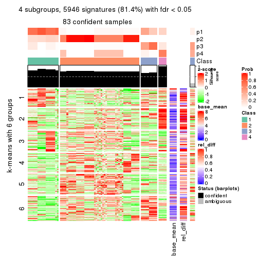
get_signatures(res, k = 5)
get_signatures(res, k = 6)
Signature heatmaps where rows are not scaled:
get_signatures(res, k = 2, scale_rows = FALSE)
get_signatures(res, k = 3, scale_rows = FALSE)
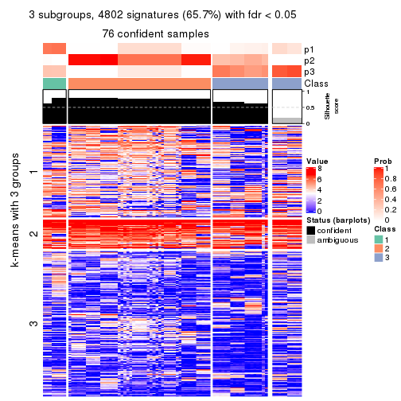
get_signatures(res, k = 4, scale_rows = FALSE)
get_signatures(res, k = 5, scale_rows = FALSE)
get_signatures(res, k = 6, scale_rows = FALSE)
Compare the overlap of signatures from different k:
compare_signatures(res)
get_signature() returns a data frame invisibly. TO get the list of signatures, the function
call should be assigned to a variable explicitly. In following code, if plot argument is set
to FALSE, no heatmap is plotted while only the differential analysis is performed.
# code only for demonstration
tb = get_signature(res, k = ..., plot = FALSE)
An example of the output of tb is:
#> which_row fdr mean_1 mean_2 scaled_mean_1 scaled_mean_2 km
#> 1 38 0.042760348 8.373488 9.131774 -0.5533452 0.5164555 1
#> 2 40 0.018707592 7.106213 8.469186 -0.6173731 0.5762149 1
#> 3 55 0.019134737 10.221463 11.207825 -0.6159697 0.5749050 1
#> 4 59 0.006059896 5.921854 7.869574 -0.6899429 0.6439467 1
#> 5 60 0.018055526 8.928898 10.211722 -0.6204761 0.5791110 1
#> 6 98 0.009384629 15.714769 14.887706 0.6635654 -0.6193277 2
...
The columns in tb are:
which_row: row indices corresponding to the input matrix.fdr: FDR for the differential test. mean_x: The mean value in group x.scaled_mean_x: The mean value in group x after rows are scaled.km: Row groups if k-means clustering is applied to rows.UMAP plot which shows how samples are separated.
dimension_reduction(res, k = 2, method = "UMAP")
dimension_reduction(res, k = 3, method = "UMAP")
dimension_reduction(res, k = 4, method = "UMAP")
dimension_reduction(res, k = 5, method = "UMAP")
dimension_reduction(res, k = 6, method = "UMAP")
Following heatmap shows how subgroups are split when increasing k:
collect_classes(res)
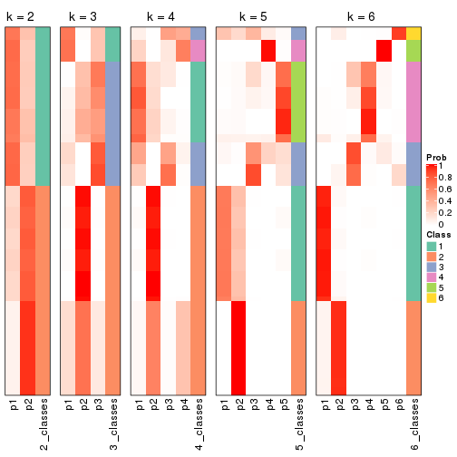
If matrix rows can be associated to genes, consider to use functional_enrichment(res,
...) to perform function enrichment for the signature genes. See this vignette for more detailed explanations.
The object with results only for a single top-value method and a single partition method can be extracted as:
res = res_list["CV", "kmeans"]
# you can also extract it by
# res = res_list["CV:kmeans"]
A summary of res and all the functions that can be applied to it:
res
#> A 'ConsensusPartition' object with k = 2, 3, 4, 5, 6.
#> On a matrix with 7309 rows and 86 columns.
#> Top rows (731, 1462, 2192, 2923, 3654) are extracted by 'CV' method.
#> Subgroups are detected by 'kmeans' method.
#> Performed in total 1250 partitions by row resampling.
#> Best k for subgroups seems to be 4.
#>
#> Following methods can be applied to this 'ConsensusPartition' object:
#> [1] "cola_report" "collect_classes" "collect_plots"
#> [4] "collect_stats" "colnames" "compare_signatures"
#> [7] "consensus_heatmap" "dimension_reduction" "functional_enrichment"
#> [10] "get_anno_col" "get_anno" "get_classes"
#> [13] "get_consensus" "get_matrix" "get_membership"
#> [16] "get_param" "get_signatures" "get_stats"
#> [19] "is_best_k" "is_stable_k" "membership_heatmap"
#> [22] "ncol" "nrow" "plot_ecdf"
#> [25] "rownames" "select_partition_number" "show"
#> [28] "suggest_best_k" "test_to_known_factors"
collect_plots() function collects all the plots made from res for all k (number of partitions)
into one single page to provide an easy and fast comparison between different k.
collect_plots(res)
The plots are:
k and the heatmap of
predicted classes for each k.k.k.k.All the plots in panels can be made by individual functions and they are plotted later in this section.
select_partition_number() produces several plots showing different
statistics for choosing “optimized” k. There are following statistics:
k;k, the area increased is defined as \(A_k - A_{k-1}\).The detailed explanations of these statistics can be found in the cola vignette.
Generally speaking, lower PAC score, higher mean silhouette score or higher
concordance corresponds to better partition. Rand index and Jaccard index
measure how similar the current partition is compared to partition with k-1.
If they are too similar, we won't accept k is better than k-1.
select_partition_number(res)
The numeric values for all these statistics can be obtained by get_stats().
get_stats(res)
#> k 1-PAC mean_silhouette concordance area_increased Rand Jaccard
#> 2 2 0.0982 0.266 0.680 0.3667 0.792 0.792
#> 3 3 0.1077 0.396 0.637 0.3837 0.604 0.536
#> 4 4 0.0927 0.480 0.640 0.1810 0.756 0.583
#> 5 5 0.0735 0.394 0.557 0.0756 0.962 0.905
#> 6 6 0.1679 0.439 0.532 0.0845 0.819 0.531
suggest_best_k() suggests the best \(k\) based on these statistics. The rules are as follows:
suggest_best_k(res)
#> [1] 4
Following shows the table of the partitions (You need to click the show/hide
code output link to see it). The membership matrix (columns with name p*)
is inferred by
clue::cl_consensus()
function with the SE method. Basically the value in the membership matrix
represents the probability to belong to a certain group. The finall class
label for an item is determined with the group with highest probability it
belongs to.
In get_classes() function, the entropy is calculated from the membership
matrix and the silhouette score is calculated from the consensus matrix.
cbind(get_classes(res, k = 2), get_membership(res, k = 2))
#> class entropy silhouette p1 p2
#> SRR2240643 2 0.994 -0.4038 0.456 0.544
#> SRR2240644 2 0.994 -0.4038 0.456 0.544
#> SRR2240645 2 0.994 -0.4038 0.456 0.544
#> SRR2240646 2 0.994 -0.4038 0.456 0.544
#> SRR2240647 2 0.994 -0.4038 0.456 0.544
#> SRR2240638 2 0.963 -0.0458 0.388 0.612
#> SRR2240639 2 0.963 -0.0458 0.388 0.612
#> SRR2240640 2 0.963 -0.0458 0.388 0.612
#> SRR2240641 2 0.963 -0.0458 0.388 0.612
#> SRR2240642 2 0.963 -0.0458 0.388 0.612
#> SRR2240633 1 0.991 0.7619 0.556 0.444
#> SRR2240634 1 0.991 0.7619 0.556 0.444
#> SRR2240635 1 0.991 0.7619 0.556 0.444
#> SRR2240636 1 0.991 0.7619 0.556 0.444
#> SRR2240637 1 0.991 0.7619 0.556 0.444
#> SRR2240624 2 0.855 0.1587 0.280 0.720
#> SRR2240625 2 0.855 0.1587 0.280 0.720
#> SRR2240626 2 0.855 0.1587 0.280 0.720
#> SRR2240627 2 0.993 -0.4609 0.452 0.548
#> SRR2240628 2 0.993 -0.4609 0.452 0.548
#> SRR2240629 2 0.993 -0.4609 0.452 0.548
#> SRR2240630 2 0.993 -0.4609 0.452 0.548
#> SRR2240631 2 0.993 -0.4609 0.452 0.548
#> SRR2240632 2 0.993 -0.4609 0.452 0.548
#> SRR2240613 1 0.985 0.7646 0.572 0.428
#> SRR2240614 1 0.985 0.7646 0.572 0.428
#> SRR2240615 1 0.985 0.7646 0.572 0.428
#> SRR2240616 1 0.985 0.7646 0.572 0.428
#> SRR2240617 1 0.985 0.7646 0.572 0.428
#> SRR2240618 2 0.998 -0.2169 0.472 0.528
#> SRR2240619 2 0.998 -0.2169 0.472 0.528
#> SRR2240620 2 0.998 -0.2169 0.472 0.528
#> SRR2240621 2 0.998 -0.2169 0.472 0.528
#> SRR2240622 2 0.998 -0.2169 0.472 0.528
#> SRR2240623 2 0.998 -0.2169 0.472 0.528
#> SRR2240609 2 0.358 0.4839 0.068 0.932
#> SRR2240610 2 0.358 0.4839 0.068 0.932
#> SRR2240611 2 0.358 0.4839 0.068 0.932
#> SRR2240612 2 0.358 0.4839 0.068 0.932
#> SRR2240594 2 0.839 0.4583 0.268 0.732
#> SRR2240595 2 0.839 0.4583 0.268 0.732
#> SRR2240596 2 0.839 0.4583 0.268 0.732
#> SRR2240597 2 0.839 0.4583 0.268 0.732
#> SRR2240598 2 0.839 0.4583 0.268 0.732
#> SRR2240604 2 0.184 0.4996 0.028 0.972
#> SRR2240605 2 0.184 0.4996 0.028 0.972
#> SRR2240606 2 0.184 0.4996 0.028 0.972
#> SRR2240607 2 0.184 0.4996 0.028 0.972
#> SRR2240608 2 0.184 0.4996 0.028 0.972
#> SRR2240599 2 0.978 0.2702 0.412 0.588
#> SRR2240600 2 0.978 0.2702 0.412 0.588
#> SRR2240601 2 0.978 0.2702 0.412 0.588
#> SRR2240602 2 0.978 0.2702 0.412 0.588
#> SRR2240603 2 0.978 0.2702 0.412 0.588
#> SRR2240584 2 0.802 0.4737 0.244 0.756
#> SRR2240585 2 0.802 0.4737 0.244 0.756
#> SRR2240586 2 0.802 0.4737 0.244 0.756
#> SRR2240587 2 0.802 0.4737 0.244 0.756
#> SRR2240588 2 0.802 0.4737 0.244 0.756
#> SRR2240589 2 0.993 0.2283 0.452 0.548
#> SRR2240590 2 0.993 0.2283 0.452 0.548
#> SRR2240591 2 0.993 0.2283 0.452 0.548
#> SRR2240592 2 0.993 0.2283 0.452 0.548
#> SRR2240593 2 0.993 0.2283 0.452 0.548
#> SRR2240578 2 0.913 0.3858 0.328 0.672
#> SRR2240579 2 0.913 0.3858 0.328 0.672
#> SRR2240580 2 0.913 0.3858 0.328 0.672
#> SRR2240581 2 0.913 0.3858 0.328 0.672
#> SRR2240582 2 0.913 0.3858 0.328 0.672
#> SRR2240583 2 0.913 0.3858 0.328 0.672
#> SRR1825969 2 0.000 0.5074 0.000 1.000
#> SRR1825968 2 0.000 0.5074 0.000 1.000
#> SRR1825970 2 0.827 0.3014 0.260 0.740
#> SRR1825966 2 0.000 0.5074 0.000 1.000
#> SRR1825967 2 0.000 0.5074 0.000 1.000
#> SRR1825965 2 0.625 0.4950 0.156 0.844
#> SRR1825962 2 0.000 0.5074 0.000 1.000
#> SRR1825963 2 0.000 0.5074 0.000 1.000
#> SRR1825964 2 0.000 0.5074 0.000 1.000
#> SRR1825961 2 0.983 -0.2288 0.424 0.576
#> SRR1825960 2 0.000 0.5074 0.000 1.000
#> SRR1825958 2 0.000 0.5074 0.000 1.000
#> SRR1825959 2 0.000 0.5074 0.000 1.000
#> SRR1825956 2 0.000 0.5074 0.000 1.000
#> SRR1825957 2 0.000 0.5074 0.000 1.000
#> SRR1825955 2 0.000 0.5074 0.000 1.000
cbind(get_classes(res, k = 3), get_membership(res, k = 3))
#> class entropy silhouette p1 p2 p3
#> SRR2240643 2 0.9593 -0.1560 NA 0.420 0.380
#> SRR2240644 2 0.9593 -0.1560 NA 0.420 0.380
#> SRR2240645 2 0.9593 -0.1560 NA 0.420 0.380
#> SRR2240646 2 0.9593 -0.1560 NA 0.420 0.380
#> SRR2240647 2 0.9593 -0.1560 NA 0.420 0.380
#> SRR2240638 2 0.9654 0.0879 NA 0.464 0.288
#> SRR2240639 2 0.9654 0.0879 NA 0.464 0.288
#> SRR2240640 2 0.9648 0.0880 NA 0.464 0.292
#> SRR2240641 2 0.9648 0.0880 NA 0.464 0.292
#> SRR2240642 2 0.9648 0.0880 NA 0.464 0.292
#> SRR2240633 3 0.9498 0.3928 NA 0.300 0.484
#> SRR2240634 3 0.9498 0.3928 NA 0.300 0.484
#> SRR2240635 3 0.9498 0.3928 NA 0.300 0.484
#> SRR2240636 3 0.9498 0.3928 NA 0.300 0.484
#> SRR2240637 3 0.9498 0.3928 NA 0.300 0.484
#> SRR2240624 2 0.7750 0.3977 NA 0.676 0.184
#> SRR2240625 2 0.7750 0.3977 NA 0.676 0.184
#> SRR2240626 2 0.7750 0.3977 NA 0.676 0.184
#> SRR2240627 3 0.8774 0.3130 NA 0.412 0.476
#> SRR2240628 3 0.8774 0.3130 NA 0.412 0.476
#> SRR2240629 3 0.8774 0.3130 NA 0.412 0.476
#> SRR2240630 3 0.8774 0.3130 NA 0.412 0.476
#> SRR2240631 3 0.8774 0.3130 NA 0.412 0.476
#> SRR2240632 3 0.8774 0.3130 NA 0.412 0.476
#> SRR2240613 3 0.5680 0.5341 NA 0.212 0.764
#> SRR2240614 3 0.5680 0.5341 NA 0.212 0.764
#> SRR2240615 3 0.5680 0.5341 NA 0.212 0.764
#> SRR2240616 3 0.5680 0.5341 NA 0.212 0.764
#> SRR2240617 3 0.5680 0.5341 NA 0.212 0.764
#> SRR2240618 3 0.7265 0.5271 NA 0.240 0.684
#> SRR2240619 3 0.7265 0.5271 NA 0.240 0.684
#> SRR2240620 3 0.7265 0.5271 NA 0.240 0.684
#> SRR2240621 3 0.7265 0.5271 NA 0.240 0.684
#> SRR2240622 3 0.7265 0.5271 NA 0.240 0.684
#> SRR2240623 3 0.7265 0.5271 NA 0.240 0.684
#> SRR2240609 2 0.2063 0.6033 NA 0.948 0.008
#> SRR2240610 2 0.2063 0.6033 NA 0.948 0.008
#> SRR2240611 2 0.2063 0.6033 NA 0.948 0.008
#> SRR2240612 2 0.2063 0.6033 NA 0.948 0.008
#> SRR2240594 2 0.8466 0.3957 NA 0.616 0.212
#> SRR2240595 2 0.8466 0.3957 NA 0.616 0.212
#> SRR2240596 2 0.8466 0.3957 NA 0.616 0.212
#> SRR2240597 2 0.8466 0.3957 NA 0.616 0.212
#> SRR2240598 2 0.8466 0.3957 NA 0.616 0.212
#> SRR2240604 2 0.1399 0.6089 NA 0.968 0.004
#> SRR2240605 2 0.1399 0.6089 NA 0.968 0.004
#> SRR2240606 2 0.1399 0.6089 NA 0.968 0.004
#> SRR2240607 2 0.1399 0.6089 NA 0.968 0.004
#> SRR2240608 2 0.1399 0.6089 NA 0.968 0.004
#> SRR2240599 3 0.9842 0.2162 NA 0.368 0.384
#> SRR2240600 3 0.9842 0.2162 NA 0.368 0.384
#> SRR2240601 3 0.9842 0.2162 NA 0.368 0.384
#> SRR2240602 3 0.9842 0.2162 NA 0.368 0.384
#> SRR2240603 3 0.9842 0.2162 NA 0.368 0.384
#> SRR2240584 2 0.8250 0.4409 NA 0.628 0.140
#> SRR2240585 2 0.8250 0.4409 NA 0.628 0.140
#> SRR2240586 2 0.8250 0.4409 NA 0.628 0.140
#> SRR2240587 2 0.8250 0.4409 NA 0.628 0.140
#> SRR2240588 2 0.8250 0.4409 NA 0.628 0.140
#> SRR2240589 3 0.9247 0.3811 NA 0.276 0.524
#> SRR2240590 3 0.9247 0.3811 NA 0.276 0.524
#> SRR2240591 3 0.9247 0.3811 NA 0.276 0.524
#> SRR2240592 3 0.9247 0.3811 NA 0.276 0.524
#> SRR2240593 3 0.9247 0.3811 NA 0.276 0.524
#> SRR2240578 2 0.9190 0.2999 NA 0.524 0.184
#> SRR2240579 2 0.9190 0.2999 NA 0.524 0.184
#> SRR2240580 2 0.9190 0.2999 NA 0.524 0.184
#> SRR2240581 2 0.9190 0.2999 NA 0.524 0.184
#> SRR2240582 2 0.9190 0.2999 NA 0.524 0.184
#> SRR2240583 2 0.9190 0.2999 NA 0.524 0.184
#> SRR1825969 2 0.0000 0.6178 NA 1.000 0.000
#> SRR1825968 2 0.0000 0.6178 NA 1.000 0.000
#> SRR1825970 2 0.7230 0.1328 NA 0.616 0.344
#> SRR1825966 2 0.0000 0.6178 NA 1.000 0.000
#> SRR1825967 2 0.0000 0.6178 NA 1.000 0.000
#> SRR1825965 2 0.6659 0.5086 NA 0.752 0.116
#> SRR1825962 2 0.0000 0.6178 NA 1.000 0.000
#> SRR1825963 2 0.0000 0.6178 NA 1.000 0.000
#> SRR1825964 2 0.0237 0.6166 NA 0.996 0.000
#> SRR1825961 3 0.7551 0.4084 NA 0.372 0.580
#> SRR1825960 2 0.0000 0.6178 NA 1.000 0.000
#> SRR1825958 2 0.0000 0.6178 NA 1.000 0.000
#> SRR1825959 2 0.0237 0.6166 NA 0.996 0.000
#> SRR1825956 2 0.0000 0.6178 NA 1.000 0.000
#> SRR1825957 2 0.0000 0.6178 NA 1.000 0.000
#> SRR1825955 2 0.0000 0.6178 NA 1.000 0.000
cbind(get_classes(res, k = 4), get_membership(res, k = 4))
#> class entropy silhouette p1 p2 p3 p4
#> SRR2240643 3 0.846 0.502 0.028 0.236 0.404 NA
#> SRR2240644 3 0.854 0.502 0.032 0.236 0.400 NA
#> SRR2240645 3 0.854 0.502 0.032 0.236 0.400 NA
#> SRR2240646 3 0.846 0.502 0.028 0.236 0.404 NA
#> SRR2240647 3 0.846 0.502 0.028 0.236 0.404 NA
#> SRR2240638 3 0.925 0.357 0.080 0.316 0.348 NA
#> SRR2240639 3 0.925 0.357 0.080 0.316 0.348 NA
#> SRR2240640 3 0.924 0.357 0.080 0.316 0.352 NA
#> SRR2240641 3 0.928 0.357 0.084 0.316 0.348 NA
#> SRR2240642 3 0.928 0.357 0.084 0.316 0.348 NA
#> SRR2240633 3 0.906 0.440 0.112 0.200 0.468 NA
#> SRR2240634 3 0.906 0.440 0.112 0.200 0.468 NA
#> SRR2240635 3 0.906 0.440 0.112 0.200 0.468 NA
#> SRR2240636 3 0.906 0.440 0.112 0.200 0.468 NA
#> SRR2240637 3 0.906 0.440 0.112 0.200 0.468 NA
#> SRR2240624 2 0.854 0.176 0.120 0.540 0.200 NA
#> SRR2240625 2 0.854 0.176 0.120 0.540 0.200 NA
#> SRR2240626 2 0.854 0.176 0.120 0.540 0.200 NA
#> SRR2240627 3 0.778 0.554 0.024 0.288 0.528 NA
#> SRR2240628 3 0.778 0.554 0.024 0.288 0.528 NA
#> SRR2240629 3 0.778 0.554 0.024 0.288 0.528 NA
#> SRR2240630 3 0.778 0.554 0.024 0.288 0.528 NA
#> SRR2240631 3 0.778 0.554 0.024 0.288 0.528 NA
#> SRR2240632 3 0.778 0.554 0.024 0.288 0.528 NA
#> SRR2240613 3 0.433 0.454 0.028 0.156 0.808 NA
#> SRR2240614 3 0.433 0.454 0.028 0.156 0.808 NA
#> SRR2240615 3 0.433 0.454 0.028 0.156 0.808 NA
#> SRR2240616 3 0.433 0.454 0.028 0.156 0.808 NA
#> SRR2240617 3 0.433 0.454 0.028 0.156 0.808 NA
#> SRR2240618 3 0.750 0.216 0.148 0.164 0.628 NA
#> SRR2240619 3 0.750 0.216 0.148 0.164 0.628 NA
#> SRR2240620 3 0.750 0.216 0.148 0.164 0.628 NA
#> SRR2240621 3 0.750 0.216 0.148 0.164 0.628 NA
#> SRR2240622 3 0.750 0.216 0.148 0.164 0.628 NA
#> SRR2240623 3 0.750 0.216 0.148 0.164 0.628 NA
#> SRR2240609 2 0.230 0.653 0.016 0.920 0.000 NA
#> SRR2240610 2 0.230 0.653 0.016 0.920 0.000 NA
#> SRR2240611 2 0.230 0.653 0.016 0.920 0.000 NA
#> SRR2240612 2 0.230 0.653 0.016 0.920 0.000 NA
#> SRR2240594 2 0.772 0.286 0.296 0.544 0.124 NA
#> SRR2240595 2 0.772 0.286 0.296 0.544 0.124 NA
#> SRR2240596 2 0.778 0.286 0.292 0.544 0.124 NA
#> SRR2240597 2 0.772 0.286 0.296 0.544 0.124 NA
#> SRR2240598 2 0.778 0.286 0.292 0.544 0.124 NA
#> SRR2240604 2 0.232 0.663 0.032 0.928 0.004 NA
#> SRR2240605 2 0.232 0.663 0.032 0.928 0.004 NA
#> SRR2240606 2 0.232 0.663 0.032 0.928 0.004 NA
#> SRR2240607 2 0.232 0.663 0.032 0.928 0.004 NA
#> SRR2240608 2 0.232 0.663 0.032 0.928 0.004 NA
#> SRR2240599 1 0.795 0.787 0.540 0.212 0.216 NA
#> SRR2240600 1 0.795 0.787 0.540 0.212 0.216 NA
#> SRR2240601 1 0.795 0.787 0.540 0.212 0.216 NA
#> SRR2240602 1 0.795 0.787 0.540 0.212 0.216 NA
#> SRR2240603 1 0.795 0.787 0.540 0.212 0.216 NA
#> SRR2240584 2 0.772 0.299 0.324 0.536 0.080 NA
#> SRR2240585 2 0.772 0.299 0.324 0.536 0.080 NA
#> SRR2240586 2 0.772 0.299 0.324 0.536 0.080 NA
#> SRR2240587 2 0.772 0.299 0.324 0.536 0.080 NA
#> SRR2240588 2 0.772 0.299 0.324 0.536 0.080 NA
#> SRR2240589 1 0.821 0.784 0.492 0.184 0.288 NA
#> SRR2240590 1 0.821 0.784 0.492 0.184 0.288 NA
#> SRR2240591 1 0.821 0.784 0.492 0.184 0.288 NA
#> SRR2240592 1 0.821 0.784 0.492 0.184 0.288 NA
#> SRR2240593 1 0.821 0.784 0.492 0.184 0.288 NA
#> SRR2240578 2 0.899 0.132 0.288 0.452 0.116 NA
#> SRR2240579 2 0.899 0.132 0.288 0.452 0.116 NA
#> SRR2240580 2 0.899 0.132 0.288 0.452 0.116 NA
#> SRR2240581 2 0.899 0.132 0.288 0.452 0.116 NA
#> SRR2240582 2 0.899 0.132 0.288 0.452 0.116 NA
#> SRR2240583 2 0.899 0.132 0.288 0.452 0.116 NA
#> SRR1825969 2 0.000 0.681 0.000 1.000 0.000 NA
#> SRR1825968 2 0.000 0.681 0.000 1.000 0.000 NA
#> SRR1825970 2 0.655 0.197 0.080 0.604 0.308 NA
#> SRR1825966 2 0.000 0.681 0.000 1.000 0.000 NA
#> SRR1825967 2 0.000 0.681 0.000 1.000 0.000 NA
#> SRR1825965 2 0.643 0.459 0.144 0.700 0.128 NA
#> SRR1825962 2 0.000 0.681 0.000 1.000 0.000 NA
#> SRR1825963 2 0.000 0.681 0.000 1.000 0.000 NA
#> SRR1825964 2 0.000 0.681 0.000 1.000 0.000 NA
#> SRR1825961 3 0.746 0.340 0.092 0.324 0.548 NA
#> SRR1825960 2 0.000 0.681 0.000 1.000 0.000 NA
#> SRR1825958 2 0.000 0.681 0.000 1.000 0.000 NA
#> SRR1825959 2 0.000 0.681 0.000 1.000 0.000 NA
#> SRR1825956 2 0.000 0.681 0.000 1.000 0.000 NA
#> SRR1825957 2 0.000 0.681 0.000 1.000 0.000 NA
#> SRR1825955 2 0.000 0.681 0.000 1.000 0.000 NA
cbind(get_classes(res, k = 5), get_membership(res, k = 5))
#> class entropy silhouette p1 p2 p3 p4 p5
#> SRR2240643 3 0.845 0.18974 0.040 0.204 0.452 NA 0.092
#> SRR2240644 3 0.843 0.18983 0.040 0.204 0.452 NA 0.088
#> SRR2240645 3 0.845 0.18974 0.040 0.204 0.452 NA 0.092
#> SRR2240646 3 0.845 0.18974 0.040 0.204 0.452 NA 0.092
#> SRR2240647 3 0.845 0.18974 0.040 0.204 0.452 NA 0.092
#> SRR2240638 5 0.829 0.98911 0.076 0.284 0.224 NA 0.396
#> SRR2240639 5 0.829 0.98911 0.076 0.284 0.224 NA 0.396
#> SRR2240640 5 0.808 0.99093 0.072 0.284 0.224 NA 0.408
#> SRR2240641 5 0.818 0.99003 0.072 0.284 0.228 NA 0.400
#> SRR2240642 5 0.818 0.99003 0.072 0.284 0.228 NA 0.400
#> SRR2240633 3 0.776 0.25558 0.040 0.200 0.408 NA 0.016
#> SRR2240634 3 0.776 0.25558 0.040 0.200 0.408 NA 0.016
#> SRR2240635 3 0.771 0.25570 0.036 0.200 0.408 NA 0.016
#> SRR2240636 3 0.771 0.25570 0.036 0.200 0.408 NA 0.016
#> SRR2240637 3 0.763 0.25574 0.036 0.200 0.408 NA 0.012
#> SRR2240624 2 0.851 -0.00418 0.072 0.496 0.132 NA 0.176
#> SRR2240625 2 0.851 -0.00438 0.072 0.496 0.132 NA 0.172
#> SRR2240626 2 0.851 -0.00418 0.072 0.496 0.132 NA 0.176
#> SRR2240627 3 0.694 0.25670 0.024 0.316 0.540 NA 0.040
#> SRR2240628 3 0.694 0.25670 0.024 0.316 0.540 NA 0.040
#> SRR2240629 3 0.694 0.25670 0.024 0.316 0.540 NA 0.040
#> SRR2240630 3 0.694 0.25670 0.024 0.316 0.540 NA 0.040
#> SRR2240631 3 0.694 0.25670 0.024 0.316 0.540 NA 0.040
#> SRR2240632 3 0.694 0.25670 0.024 0.316 0.540 NA 0.040
#> SRR2240613 3 0.555 0.37587 0.052 0.160 0.724 NA 0.016
#> SRR2240614 3 0.555 0.37587 0.052 0.160 0.724 NA 0.016
#> SRR2240615 3 0.555 0.37587 0.052 0.160 0.724 NA 0.016
#> SRR2240616 3 0.555 0.37587 0.052 0.160 0.724 NA 0.016
#> SRR2240617 3 0.555 0.37587 0.052 0.160 0.724 NA 0.016
#> SRR2240618 3 0.719 0.20879 0.156 0.124 0.600 NA 0.104
#> SRR2240619 3 0.719 0.20879 0.156 0.124 0.600 NA 0.104
#> SRR2240620 3 0.719 0.20879 0.156 0.124 0.600 NA 0.104
#> SRR2240621 3 0.719 0.20879 0.156 0.124 0.600 NA 0.104
#> SRR2240622 3 0.720 0.20851 0.152 0.124 0.600 NA 0.108
#> SRR2240623 3 0.720 0.20851 0.152 0.124 0.600 NA 0.108
#> SRR2240609 2 0.343 0.51303 0.012 0.852 0.000 NA 0.052
#> SRR2240610 2 0.343 0.51303 0.012 0.852 0.000 NA 0.052
#> SRR2240611 2 0.343 0.51303 0.012 0.852 0.000 NA 0.052
#> SRR2240612 2 0.343 0.51303 0.012 0.852 0.000 NA 0.052
#> SRR2240594 2 0.803 0.14195 0.304 0.444 0.128 NA 0.108
#> SRR2240595 2 0.803 0.14195 0.304 0.444 0.128 NA 0.108
#> SRR2240596 2 0.803 0.14195 0.304 0.444 0.128 NA 0.108
#> SRR2240597 2 0.803 0.14195 0.304 0.444 0.128 NA 0.108
#> SRR2240598 2 0.803 0.14195 0.304 0.444 0.128 NA 0.108
#> SRR2240604 2 0.273 0.53625 0.016 0.900 0.004 NA 0.048
#> SRR2240605 2 0.273 0.53625 0.016 0.900 0.004 NA 0.048
#> SRR2240606 2 0.273 0.53625 0.016 0.900 0.004 NA 0.048
#> SRR2240607 2 0.273 0.53625 0.016 0.900 0.004 NA 0.048
#> SRR2240608 2 0.273 0.53625 0.016 0.900 0.004 NA 0.048
#> SRR2240599 1 0.821 0.70976 0.516 0.184 0.156 NA 0.068
#> SRR2240600 1 0.821 0.71000 0.516 0.184 0.156 NA 0.072
#> SRR2240601 1 0.821 0.71000 0.516 0.184 0.156 NA 0.072
#> SRR2240602 1 0.821 0.71000 0.516 0.184 0.156 NA 0.072
#> SRR2240603 1 0.821 0.70976 0.516 0.184 0.156 NA 0.068
#> SRR2240584 2 0.824 0.13188 0.360 0.392 0.104 NA 0.112
#> SRR2240585 2 0.824 0.13188 0.360 0.392 0.104 NA 0.112
#> SRR2240586 2 0.824 0.13188 0.360 0.392 0.104 NA 0.112
#> SRR2240587 2 0.824 0.13188 0.360 0.392 0.104 NA 0.112
#> SRR2240588 2 0.824 0.13188 0.360 0.392 0.104 NA 0.112
#> SRR2240589 1 0.589 0.71566 0.644 0.124 0.216 NA 0.012
#> SRR2240590 1 0.589 0.71566 0.644 0.124 0.216 NA 0.012
#> SRR2240591 1 0.589 0.71566 0.644 0.124 0.216 NA 0.012
#> SRR2240592 1 0.589 0.71566 0.644 0.124 0.216 NA 0.012
#> SRR2240593 1 0.589 0.71566 0.644 0.124 0.216 NA 0.012
#> SRR2240578 2 0.879 0.15024 0.212 0.408 0.076 NA 0.068
#> SRR2240579 2 0.879 0.15039 0.216 0.408 0.076 NA 0.068
#> SRR2240580 2 0.879 0.15039 0.220 0.408 0.076 NA 0.068
#> SRR2240581 2 0.882 0.15038 0.224 0.408 0.076 NA 0.072
#> SRR2240582 2 0.882 0.15038 0.224 0.408 0.076 NA 0.072
#> SRR2240583 2 0.882 0.15027 0.216 0.408 0.076 NA 0.072
#> SRR1825969 2 0.000 0.57047 0.000 1.000 0.000 NA 0.000
#> SRR1825968 2 0.000 0.57047 0.000 1.000 0.000 NA 0.000
#> SRR1825970 2 0.626 -0.01364 0.120 0.552 0.316 NA 0.004
#> SRR1825966 2 0.000 0.57047 0.000 1.000 0.000 NA 0.000
#> SRR1825967 2 0.000 0.57047 0.000 1.000 0.000 NA 0.000
#> SRR1825965 2 0.596 0.35593 0.156 0.684 0.120 NA 0.024
#> SRR1825962 2 0.000 0.57047 0.000 1.000 0.000 NA 0.000
#> SRR1825963 2 0.000 0.57047 0.000 1.000 0.000 NA 0.000
#> SRR1825964 2 0.000 0.57047 0.000 1.000 0.000 NA 0.000
#> SRR1825961 3 0.684 0.15131 0.144 0.344 0.488 NA 0.008
#> SRR1825960 2 0.000 0.57047 0.000 1.000 0.000 NA 0.000
#> SRR1825958 2 0.000 0.57047 0.000 1.000 0.000 NA 0.000
#> SRR1825959 2 0.000 0.57047 0.000 1.000 0.000 NA 0.000
#> SRR1825956 2 0.000 0.57047 0.000 1.000 0.000 NA 0.000
#> SRR1825957 2 0.000 0.57047 0.000 1.000 0.000 NA 0.000
#> SRR1825955 2 0.000 0.57047 0.000 1.000 0.000 NA 0.000
cbind(get_classes(res, k = 6), get_membership(res, k = 6))
#> class entropy silhouette p1 p2 p3 p4 p5 p6
#> SRR2240643 5 0.789 0.98802 0.032 0.156 0.044 0.288 0.428 0.052
#> SRR2240644 5 0.767 0.99203 0.028 0.156 0.036 0.288 0.444 0.048
#> SRR2240645 5 0.767 0.99203 0.028 0.156 0.036 0.288 0.444 0.048
#> SRR2240646 5 0.789 0.98802 0.032 0.156 0.044 0.288 0.428 0.052
#> SRR2240647 5 0.767 0.99203 0.028 0.156 0.036 0.288 0.444 0.048
#> SRR2240638 3 0.929 0.37396 0.108 0.212 0.336 0.148 0.068 0.128
#> SRR2240639 3 0.929 0.37396 0.108 0.212 0.336 0.148 0.068 0.128
#> SRR2240640 3 0.923 0.37434 0.104 0.212 0.344 0.148 0.064 0.128
#> SRR2240641 3 0.936 0.37210 0.116 0.212 0.324 0.148 0.068 0.132
#> SRR2240642 3 0.936 0.37210 0.116 0.212 0.324 0.148 0.068 0.132
#> SRR2240633 3 0.808 0.33461 0.040 0.108 0.396 0.328 0.044 0.084
#> SRR2240634 3 0.804 0.33572 0.040 0.108 0.400 0.328 0.044 0.080
#> SRR2240635 3 0.799 0.33642 0.036 0.108 0.404 0.328 0.044 0.080
#> SRR2240636 3 0.799 0.33642 0.036 0.108 0.404 0.328 0.044 0.080
#> SRR2240637 3 0.798 0.33665 0.036 0.108 0.408 0.324 0.044 0.080
#> SRR2240624 2 0.874 -0.00332 0.040 0.424 0.108 0.140 0.140 0.148
#> SRR2240625 2 0.877 -0.00356 0.044 0.424 0.108 0.140 0.136 0.148
#> SRR2240626 2 0.874 -0.00332 0.040 0.424 0.108 0.140 0.140 0.148
#> SRR2240627 4 0.805 0.05663 0.032 0.204 0.124 0.476 0.116 0.048
#> SRR2240628 4 0.805 0.05663 0.032 0.204 0.124 0.476 0.116 0.048
#> SRR2240629 4 0.805 0.05663 0.032 0.204 0.124 0.476 0.116 0.048
#> SRR2240630 4 0.805 0.05663 0.032 0.204 0.124 0.476 0.116 0.048
#> SRR2240631 4 0.805 0.05663 0.032 0.204 0.124 0.476 0.116 0.048
#> SRR2240632 4 0.805 0.05663 0.032 0.204 0.124 0.476 0.116 0.048
#> SRR2240613 4 0.310 0.38403 0.000 0.104 0.016 0.852 0.008 0.020
#> SRR2240614 4 0.310 0.38403 0.000 0.104 0.016 0.852 0.008 0.020
#> SRR2240615 4 0.310 0.38403 0.000 0.104 0.016 0.852 0.008 0.020
#> SRR2240616 4 0.310 0.38403 0.000 0.104 0.016 0.852 0.008 0.020
#> SRR2240617 4 0.310 0.38403 0.000 0.104 0.016 0.852 0.008 0.020
#> SRR2240618 4 0.790 0.40053 0.204 0.076 0.068 0.508 0.044 0.100
#> SRR2240619 4 0.791 0.40002 0.200 0.076 0.068 0.508 0.044 0.104
#> SRR2240620 4 0.790 0.40053 0.204 0.076 0.068 0.508 0.044 0.100
#> SRR2240621 4 0.790 0.40053 0.204 0.076 0.068 0.508 0.044 0.100
#> SRR2240622 4 0.792 0.40027 0.200 0.076 0.072 0.508 0.044 0.100
#> SRR2240623 4 0.792 0.40027 0.200 0.076 0.072 0.508 0.044 0.100
#> SRR2240609 2 0.453 0.50891 0.020 0.748 0.044 0.000 0.168 0.020
#> SRR2240610 2 0.453 0.50891 0.020 0.748 0.044 0.000 0.168 0.020
#> SRR2240611 2 0.453 0.50891 0.020 0.748 0.044 0.000 0.168 0.020
#> SRR2240612 2 0.453 0.50891 0.020 0.748 0.044 0.000 0.168 0.020
#> SRR2240594 2 0.899 -0.17865 0.176 0.364 0.100 0.112 0.044 0.204
#> SRR2240595 2 0.897 -0.17840 0.176 0.364 0.096 0.112 0.044 0.208
#> SRR2240596 2 0.895 -0.17817 0.176 0.364 0.100 0.112 0.040 0.208
#> SRR2240597 2 0.897 -0.17840 0.176 0.364 0.104 0.112 0.040 0.204
#> SRR2240598 2 0.895 -0.17817 0.176 0.364 0.100 0.112 0.040 0.208
#> SRR2240604 2 0.297 0.61579 0.012 0.876 0.024 0.000 0.052 0.036
#> SRR2240605 2 0.297 0.61579 0.012 0.876 0.024 0.000 0.052 0.036
#> SRR2240606 2 0.297 0.61579 0.012 0.876 0.024 0.000 0.052 0.036
#> SRR2240607 2 0.297 0.61579 0.012 0.876 0.024 0.000 0.052 0.036
#> SRR2240608 2 0.297 0.61579 0.012 0.876 0.024 0.000 0.052 0.036
#> SRR2240599 1 0.866 0.39942 0.328 0.156 0.028 0.160 0.048 0.280
#> SRR2240600 1 0.866 0.39942 0.328 0.156 0.028 0.160 0.048 0.280
#> SRR2240601 1 0.866 0.39942 0.328 0.156 0.028 0.160 0.048 0.280
#> SRR2240602 1 0.866 0.39942 0.328 0.156 0.028 0.160 0.048 0.280
#> SRR2240603 1 0.866 0.39942 0.328 0.156 0.028 0.160 0.048 0.280
#> SRR2240584 1 0.859 0.22166 0.332 0.284 0.040 0.056 0.076 0.212
#> SRR2240585 1 0.862 0.22133 0.328 0.284 0.040 0.060 0.076 0.212
#> SRR2240586 1 0.859 0.22166 0.332 0.284 0.040 0.056 0.076 0.212
#> SRR2240587 1 0.859 0.22166 0.332 0.284 0.040 0.056 0.076 0.212
#> SRR2240588 1 0.862 0.22133 0.328 0.284 0.040 0.060 0.076 0.212
#> SRR2240589 1 0.645 0.48170 0.568 0.096 0.000 0.204 0.004 0.128
#> SRR2240590 1 0.645 0.48170 0.568 0.096 0.000 0.204 0.004 0.128
#> SRR2240591 1 0.645 0.48170 0.568 0.096 0.000 0.204 0.004 0.128
#> SRR2240592 1 0.679 0.48128 0.556 0.096 0.008 0.204 0.008 0.128
#> SRR2240593 1 0.679 0.48128 0.556 0.096 0.008 0.204 0.008 0.128
#> SRR2240578 6 0.454 0.98361 0.000 0.280 0.004 0.056 0.000 0.660
#> SRR2240579 6 0.454 0.98361 0.000 0.280 0.004 0.056 0.000 0.660
#> SRR2240580 6 0.454 0.98361 0.000 0.280 0.004 0.056 0.000 0.660
#> SRR2240581 6 0.531 0.98361 0.008 0.280 0.008 0.056 0.016 0.632
#> SRR2240582 6 0.531 0.98361 0.008 0.280 0.008 0.056 0.016 0.632
#> SRR2240583 6 0.531 0.98361 0.008 0.280 0.008 0.056 0.016 0.632
#> SRR1825969 2 0.000 0.66629 0.000 1.000 0.000 0.000 0.000 0.000
#> SRR1825968 2 0.000 0.66629 0.000 1.000 0.000 0.000 0.000 0.000
#> SRR1825970 2 0.622 0.11408 0.056 0.588 0.012 0.248 0.004 0.092
#> SRR1825966 2 0.000 0.66629 0.000 1.000 0.000 0.000 0.000 0.000
#> SRR1825967 2 0.000 0.66629 0.000 1.000 0.000 0.000 0.000 0.000
#> SRR1825965 2 0.617 0.10847 0.064 0.624 0.012 0.120 0.004 0.176
#> SRR1825962 2 0.000 0.66629 0.000 1.000 0.000 0.000 0.000 0.000
#> SRR1825963 2 0.000 0.66629 0.000 1.000 0.000 0.000 0.000 0.000
#> SRR1825964 2 0.000 0.66629 0.000 1.000 0.000 0.000 0.000 0.000
#> SRR1825961 4 0.765 0.05762 0.084 0.324 0.028 0.424 0.020 0.120
#> SRR1825960 2 0.000 0.66629 0.000 1.000 0.000 0.000 0.000 0.000
#> SRR1825958 2 0.000 0.66629 0.000 1.000 0.000 0.000 0.000 0.000
#> SRR1825959 2 0.000 0.66629 0.000 1.000 0.000 0.000 0.000 0.000
#> SRR1825956 2 0.000 0.66629 0.000 1.000 0.000 0.000 0.000 0.000
#> SRR1825957 2 0.000 0.66629 0.000 1.000 0.000 0.000 0.000 0.000
#> SRR1825955 2 0.000 0.66629 0.000 1.000 0.000 0.000 0.000 0.000
Heatmaps for the consensus matrix. It visualizes the probability of two samples to be in a same group.
consensus_heatmap(res, k = 2)
consensus_heatmap(res, k = 3)
consensus_heatmap(res, k = 4)
consensus_heatmap(res, k = 5)
consensus_heatmap(res, k = 6)
Heatmaps for the membership of samples in all partitions to see how consistent they are:
membership_heatmap(res, k = 2)
membership_heatmap(res, k = 3)
membership_heatmap(res, k = 4)
membership_heatmap(res, k = 5)
membership_heatmap(res, k = 6)
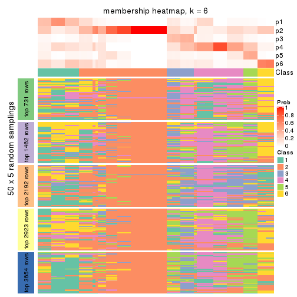
As soon as we have had the classes for columns, we can look for signatures which are significantly different between classes which can be candidate marks for certain classes. Following are the heatmaps for signatures.
Signature heatmaps where rows are scaled:
get_signatures(res, k = 2)
get_signatures(res, k = 3)
get_signatures(res, k = 4)
get_signatures(res, k = 5)
get_signatures(res, k = 6)
Signature heatmaps where rows are not scaled:
get_signatures(res, k = 2, scale_rows = FALSE)
get_signatures(res, k = 3, scale_rows = FALSE)
get_signatures(res, k = 4, scale_rows = FALSE)
get_signatures(res, k = 5, scale_rows = FALSE)
get_signatures(res, k = 6, scale_rows = FALSE)
Compare the overlap of signatures from different k:
compare_signatures(res)
get_signature() returns a data frame invisibly. TO get the list of signatures, the function
call should be assigned to a variable explicitly. In following code, if plot argument is set
to FALSE, no heatmap is plotted while only the differential analysis is performed.
# code only for demonstration
tb = get_signature(res, k = ..., plot = FALSE)
An example of the output of tb is:
#> which_row fdr mean_1 mean_2 scaled_mean_1 scaled_mean_2 km
#> 1 38 0.042760348 8.373488 9.131774 -0.5533452 0.5164555 1
#> 2 40 0.018707592 7.106213 8.469186 -0.6173731 0.5762149 1
#> 3 55 0.019134737 10.221463 11.207825 -0.6159697 0.5749050 1
#> 4 59 0.006059896 5.921854 7.869574 -0.6899429 0.6439467 1
#> 5 60 0.018055526 8.928898 10.211722 -0.6204761 0.5791110 1
#> 6 98 0.009384629 15.714769 14.887706 0.6635654 -0.6193277 2
...
The columns in tb are:
which_row: row indices corresponding to the input matrix.fdr: FDR for the differential test. mean_x: The mean value in group x.scaled_mean_x: The mean value in group x after rows are scaled.km: Row groups if k-means clustering is applied to rows.UMAP plot which shows how samples are separated.
dimension_reduction(res, k = 2, method = "UMAP")

dimension_reduction(res, k = 3, method = "UMAP")
dimension_reduction(res, k = 4, method = "UMAP")
dimension_reduction(res, k = 5, method = "UMAP")
dimension_reduction(res, k = 6, method = "UMAP")
Following heatmap shows how subgroups are split when increasing k:
collect_classes(res)
If matrix rows can be associated to genes, consider to use functional_enrichment(res,
...) to perform function enrichment for the signature genes. See this vignette for more detailed explanations.
The object with results only for a single top-value method and a single partition method can be extracted as:
res = res_list["CV", "skmeans"]
# you can also extract it by
# res = res_list["CV:skmeans"]
A summary of res and all the functions that can be applied to it:
res
#> A 'ConsensusPartition' object with k = 2, 3, 4, 5, 6.
#> On a matrix with 7309 rows and 86 columns.
#> Top rows (731, 1462, 2192, 2923, 3654) are extracted by 'CV' method.
#> Subgroups are detected by 'skmeans' method.
#> Performed in total 1250 partitions by row resampling.
#> Best k for subgroups seems to be 2.
#>
#> Following methods can be applied to this 'ConsensusPartition' object:
#> [1] "cola_report" "collect_classes" "collect_plots"
#> [4] "collect_stats" "colnames" "compare_signatures"
#> [7] "consensus_heatmap" "dimension_reduction" "functional_enrichment"
#> [10] "get_anno_col" "get_anno" "get_classes"
#> [13] "get_consensus" "get_matrix" "get_membership"
#> [16] "get_param" "get_signatures" "get_stats"
#> [19] "is_best_k" "is_stable_k" "membership_heatmap"
#> [22] "ncol" "nrow" "plot_ecdf"
#> [25] "rownames" "select_partition_number" "show"
#> [28] "suggest_best_k" "test_to_known_factors"
collect_plots() function collects all the plots made from res for all k (number of partitions)
into one single page to provide an easy and fast comparison between different k.
collect_plots(res)
The plots are:
k and the heatmap of
predicted classes for each k.k.k.k.All the plots in panels can be made by individual functions and they are plotted later in this section.
select_partition_number() produces several plots showing different
statistics for choosing “optimized” k. There are following statistics:
k;k, the area increased is defined as \(A_k - A_{k-1}\).The detailed explanations of these statistics can be found in the cola vignette.
Generally speaking, lower PAC score, higher mean silhouette score or higher
concordance corresponds to better partition. Rand index and Jaccard index
measure how similar the current partition is compared to partition with k-1.
If they are too similar, we won't accept k is better than k-1.
select_partition_number(res)
The numeric values for all these statistics can be obtained by get_stats().
get_stats(res)
#> k 1-PAC mean_silhouette concordance area_increased Rand Jaccard
#> 2 2 0.616 0.876 0.913 0.5016 0.494 0.494
#> 3 3 0.599 0.744 0.865 0.3306 0.633 0.385
#> 4 4 0.715 0.722 0.798 0.1191 0.897 0.703
#> 5 5 0.725 0.685 0.764 0.0610 0.953 0.818
#> 6 6 0.748 0.677 0.745 0.0375 0.961 0.813
suggest_best_k() suggests the best \(k\) based on these statistics. The rules are as follows:
suggest_best_k(res)
#> [1] 2
Following shows the table of the partitions (You need to click the show/hide
code output link to see it). The membership matrix (columns with name p*)
is inferred by
clue::cl_consensus()
function with the SE method. Basically the value in the membership matrix
represents the probability to belong to a certain group. The finall class
label for an item is determined with the group with highest probability it
belongs to.
In get_classes() function, the entropy is calculated from the membership
matrix and the silhouette score is calculated from the consensus matrix.
cbind(get_classes(res, k = 2), get_membership(res, k = 2))
#> class entropy silhouette p1 p2
#> SRR2240643 1 0.2236 0.904 0.964 0.036
#> SRR2240644 1 0.2236 0.904 0.964 0.036
#> SRR2240645 1 0.2236 0.904 0.964 0.036
#> SRR2240646 1 0.2236 0.904 0.964 0.036
#> SRR2240647 1 0.2236 0.904 0.964 0.036
#> SRR2240638 1 0.3879 0.884 0.924 0.076
#> SRR2240639 1 0.3879 0.884 0.924 0.076
#> SRR2240640 1 0.3879 0.884 0.924 0.076
#> SRR2240641 1 0.3879 0.884 0.924 0.076
#> SRR2240642 1 0.3879 0.884 0.924 0.076
#> SRR2240633 1 0.1633 0.908 0.976 0.024
#> SRR2240634 1 0.1633 0.908 0.976 0.024
#> SRR2240635 1 0.1633 0.908 0.976 0.024
#> SRR2240636 1 0.1633 0.908 0.976 0.024
#> SRR2240637 1 0.1633 0.908 0.976 0.024
#> SRR2240624 2 0.9460 0.527 0.364 0.636
#> SRR2240625 2 0.9460 0.527 0.364 0.636
#> SRR2240626 2 0.9460 0.527 0.364 0.636
#> SRR2240627 1 0.1633 0.907 0.976 0.024
#> SRR2240628 1 0.1633 0.907 0.976 0.024
#> SRR2240629 1 0.1633 0.907 0.976 0.024
#> SRR2240630 1 0.1633 0.907 0.976 0.024
#> SRR2240631 1 0.1633 0.907 0.976 0.024
#> SRR2240632 1 0.1633 0.907 0.976 0.024
#> SRR2240613 1 0.0672 0.909 0.992 0.008
#> SRR2240614 1 0.0672 0.909 0.992 0.008
#> SRR2240615 1 0.0672 0.909 0.992 0.008
#> SRR2240616 1 0.0672 0.909 0.992 0.008
#> SRR2240617 1 0.0672 0.909 0.992 0.008
#> SRR2240618 1 0.3431 0.887 0.936 0.064
#> SRR2240619 1 0.3431 0.887 0.936 0.064
#> SRR2240620 1 0.3431 0.887 0.936 0.064
#> SRR2240621 1 0.3431 0.887 0.936 0.064
#> SRR2240622 1 0.3431 0.887 0.936 0.064
#> SRR2240623 1 0.3431 0.887 0.936 0.064
#> SRR2240609 2 0.3431 0.927 0.064 0.936
#> SRR2240610 2 0.3431 0.927 0.064 0.936
#> SRR2240611 2 0.3431 0.927 0.064 0.936
#> SRR2240612 2 0.3431 0.927 0.064 0.936
#> SRR2240594 2 0.3274 0.897 0.060 0.940
#> SRR2240595 2 0.3274 0.897 0.060 0.940
#> SRR2240596 2 0.3274 0.897 0.060 0.940
#> SRR2240597 2 0.3274 0.897 0.060 0.940
#> SRR2240598 2 0.3274 0.897 0.060 0.940
#> SRR2240604 2 0.3431 0.927 0.064 0.936
#> SRR2240605 2 0.3431 0.927 0.064 0.936
#> SRR2240606 2 0.3431 0.927 0.064 0.936
#> SRR2240607 2 0.3431 0.927 0.064 0.936
#> SRR2240608 2 0.3431 0.927 0.064 0.936
#> SRR2240599 1 0.8081 0.765 0.752 0.248
#> SRR2240600 1 0.8081 0.765 0.752 0.248
#> SRR2240601 1 0.8081 0.765 0.752 0.248
#> SRR2240602 1 0.8081 0.765 0.752 0.248
#> SRR2240603 1 0.8081 0.765 0.752 0.248
#> SRR2240584 2 0.2043 0.904 0.032 0.968
#> SRR2240585 2 0.2043 0.904 0.032 0.968
#> SRR2240586 2 0.2043 0.904 0.032 0.968
#> SRR2240587 2 0.2043 0.904 0.032 0.968
#> SRR2240588 2 0.2043 0.904 0.032 0.968
#> SRR2240589 1 0.8267 0.749 0.740 0.260
#> SRR2240590 1 0.8267 0.749 0.740 0.260
#> SRR2240591 1 0.8267 0.749 0.740 0.260
#> SRR2240592 1 0.8267 0.749 0.740 0.260
#> SRR2240593 1 0.8267 0.749 0.740 0.260
#> SRR2240578 2 0.3733 0.889 0.072 0.928
#> SRR2240579 2 0.3733 0.889 0.072 0.928
#> SRR2240580 2 0.3733 0.889 0.072 0.928
#> SRR2240581 2 0.3733 0.889 0.072 0.928
#> SRR2240582 2 0.3733 0.889 0.072 0.928
#> SRR2240583 2 0.3733 0.889 0.072 0.928
#> SRR1825969 2 0.3431 0.927 0.064 0.936
#> SRR1825968 2 0.3431 0.927 0.064 0.936
#> SRR1825970 1 0.5737 0.839 0.864 0.136
#> SRR1825966 2 0.3431 0.927 0.064 0.936
#> SRR1825967 2 0.3431 0.927 0.064 0.936
#> SRR1825965 2 0.2603 0.900 0.044 0.956
#> SRR1825962 2 0.3431 0.927 0.064 0.936
#> SRR1825963 2 0.3431 0.927 0.064 0.936
#> SRR1825964 2 0.3431 0.927 0.064 0.936
#> SRR1825961 1 0.0672 0.909 0.992 0.008
#> SRR1825960 2 0.3431 0.927 0.064 0.936
#> SRR1825958 2 0.3431 0.927 0.064 0.936
#> SRR1825959 2 0.3431 0.927 0.064 0.936
#> SRR1825956 2 0.3431 0.927 0.064 0.936
#> SRR1825957 2 0.3431 0.927 0.064 0.936
#> SRR1825955 2 0.3431 0.927 0.064 0.936
cbind(get_classes(res, k = 3), get_membership(res, k = 3))
#> class entropy silhouette p1 p2 p3
#> SRR2240643 3 0.1774 0.8597 0.016 0.024 0.960
#> SRR2240644 3 0.1774 0.8597 0.016 0.024 0.960
#> SRR2240645 3 0.1774 0.8597 0.016 0.024 0.960
#> SRR2240646 3 0.1774 0.8597 0.016 0.024 0.960
#> SRR2240647 3 0.1774 0.8597 0.016 0.024 0.960
#> SRR2240638 3 0.5096 0.8012 0.084 0.080 0.836
#> SRR2240639 3 0.5096 0.8012 0.084 0.080 0.836
#> SRR2240640 3 0.5096 0.8012 0.084 0.080 0.836
#> SRR2240641 3 0.5096 0.8012 0.084 0.080 0.836
#> SRR2240642 3 0.5096 0.8012 0.084 0.080 0.836
#> SRR2240633 3 0.1289 0.8558 0.032 0.000 0.968
#> SRR2240634 3 0.1289 0.8558 0.032 0.000 0.968
#> SRR2240635 3 0.1289 0.8558 0.032 0.000 0.968
#> SRR2240636 3 0.1289 0.8558 0.032 0.000 0.968
#> SRR2240637 3 0.1289 0.8558 0.032 0.000 0.968
#> SRR2240624 3 0.7112 0.2912 0.024 0.424 0.552
#> SRR2240625 3 0.7112 0.2912 0.024 0.424 0.552
#> SRR2240626 3 0.7112 0.2912 0.024 0.424 0.552
#> SRR2240627 3 0.0592 0.8605 0.000 0.012 0.988
#> SRR2240628 3 0.0592 0.8605 0.000 0.012 0.988
#> SRR2240629 3 0.0592 0.8605 0.000 0.012 0.988
#> SRR2240630 3 0.0592 0.8605 0.000 0.012 0.988
#> SRR2240631 3 0.0592 0.8605 0.000 0.012 0.988
#> SRR2240632 3 0.0592 0.8605 0.000 0.012 0.988
#> SRR2240613 3 0.4291 0.7563 0.180 0.000 0.820
#> SRR2240614 3 0.4291 0.7563 0.180 0.000 0.820
#> SRR2240615 3 0.4291 0.7563 0.180 0.000 0.820
#> SRR2240616 3 0.4291 0.7563 0.180 0.000 0.820
#> SRR2240617 3 0.4291 0.7563 0.180 0.000 0.820
#> SRR2240618 1 0.7043 0.0906 0.532 0.020 0.448
#> SRR2240619 1 0.7043 0.0906 0.532 0.020 0.448
#> SRR2240620 1 0.7043 0.0906 0.532 0.020 0.448
#> SRR2240621 1 0.7043 0.0906 0.532 0.020 0.448
#> SRR2240622 1 0.7043 0.0906 0.532 0.020 0.448
#> SRR2240623 1 0.7043 0.0906 0.532 0.020 0.448
#> SRR2240609 2 0.0000 0.9679 0.000 1.000 0.000
#> SRR2240610 2 0.0000 0.9679 0.000 1.000 0.000
#> SRR2240611 2 0.0000 0.9679 0.000 1.000 0.000
#> SRR2240612 2 0.0000 0.9679 0.000 1.000 0.000
#> SRR2240594 1 0.5072 0.7140 0.792 0.196 0.012
#> SRR2240595 1 0.5072 0.7140 0.792 0.196 0.012
#> SRR2240596 1 0.5072 0.7140 0.792 0.196 0.012
#> SRR2240597 1 0.5072 0.7140 0.792 0.196 0.012
#> SRR2240598 1 0.5072 0.7140 0.792 0.196 0.012
#> SRR2240604 2 0.0000 0.9679 0.000 1.000 0.000
#> SRR2240605 2 0.0000 0.9679 0.000 1.000 0.000
#> SRR2240606 2 0.0000 0.9679 0.000 1.000 0.000
#> SRR2240607 2 0.0000 0.9679 0.000 1.000 0.000
#> SRR2240608 2 0.0000 0.9679 0.000 1.000 0.000
#> SRR2240599 1 0.0983 0.7465 0.980 0.004 0.016
#> SRR2240600 1 0.0983 0.7465 0.980 0.004 0.016
#> SRR2240601 1 0.0983 0.7465 0.980 0.004 0.016
#> SRR2240602 1 0.0983 0.7465 0.980 0.004 0.016
#> SRR2240603 1 0.0983 0.7465 0.980 0.004 0.016
#> SRR2240584 1 0.6026 0.6797 0.732 0.244 0.024
#> SRR2240585 1 0.6026 0.6797 0.732 0.244 0.024
#> SRR2240586 1 0.6026 0.6797 0.732 0.244 0.024
#> SRR2240587 1 0.6026 0.6797 0.732 0.244 0.024
#> SRR2240588 1 0.6026 0.6797 0.732 0.244 0.024
#> SRR2240589 1 0.1031 0.7436 0.976 0.000 0.024
#> SRR2240590 1 0.1031 0.7436 0.976 0.000 0.024
#> SRR2240591 1 0.1031 0.7436 0.976 0.000 0.024
#> SRR2240592 1 0.1031 0.7436 0.976 0.000 0.024
#> SRR2240593 1 0.1031 0.7436 0.976 0.000 0.024
#> SRR2240578 1 0.5639 0.6929 0.752 0.232 0.016
#> SRR2240579 1 0.5639 0.6929 0.752 0.232 0.016
#> SRR2240580 1 0.5639 0.6929 0.752 0.232 0.016
#> SRR2240581 1 0.5639 0.6929 0.752 0.232 0.016
#> SRR2240582 1 0.5639 0.6929 0.752 0.232 0.016
#> SRR2240583 1 0.5639 0.6929 0.752 0.232 0.016
#> SRR1825969 2 0.0000 0.9679 0.000 1.000 0.000
#> SRR1825968 2 0.0000 0.9679 0.000 1.000 0.000
#> SRR1825970 2 0.9967 -0.1162 0.324 0.372 0.304
#> SRR1825966 2 0.0000 0.9679 0.000 1.000 0.000
#> SRR1825967 2 0.0000 0.9679 0.000 1.000 0.000
#> SRR1825965 1 0.5902 0.6131 0.680 0.316 0.004
#> SRR1825962 2 0.0000 0.9679 0.000 1.000 0.000
#> SRR1825963 2 0.0000 0.9679 0.000 1.000 0.000
#> SRR1825964 2 0.0000 0.9679 0.000 1.000 0.000
#> SRR1825961 3 0.5158 0.6936 0.232 0.004 0.764
#> SRR1825960 2 0.0000 0.9679 0.000 1.000 0.000
#> SRR1825958 2 0.0000 0.9679 0.000 1.000 0.000
#> SRR1825959 2 0.0000 0.9679 0.000 1.000 0.000
#> SRR1825956 2 0.0000 0.9679 0.000 1.000 0.000
#> SRR1825957 2 0.0000 0.9679 0.000 1.000 0.000
#> SRR1825955 2 0.0000 0.9679 0.000 1.000 0.000
cbind(get_classes(res, k = 4), get_membership(res, k = 4))
#> class entropy silhouette p1 p2 p3 p4
#> SRR2240643 3 0.174 0.676 0.004 0.000 0.940 0.056
#> SRR2240644 3 0.174 0.676 0.004 0.000 0.940 0.056
#> SRR2240645 3 0.174 0.676 0.004 0.000 0.940 0.056
#> SRR2240646 3 0.174 0.676 0.004 0.000 0.940 0.056
#> SRR2240647 3 0.174 0.676 0.004 0.000 0.940 0.056
#> SRR2240638 3 0.507 0.590 0.076 0.012 0.784 0.128
#> SRR2240639 3 0.507 0.590 0.076 0.012 0.784 0.128
#> SRR2240640 3 0.507 0.590 0.076 0.012 0.784 0.128
#> SRR2240641 3 0.507 0.590 0.076 0.012 0.784 0.128
#> SRR2240642 3 0.507 0.590 0.076 0.012 0.784 0.128
#> SRR2240633 3 0.556 0.507 0.040 0.000 0.652 0.308
#> SRR2240634 3 0.556 0.507 0.040 0.000 0.652 0.308
#> SRR2240635 3 0.556 0.507 0.040 0.000 0.652 0.308
#> SRR2240636 3 0.556 0.507 0.040 0.000 0.652 0.308
#> SRR2240637 3 0.556 0.507 0.040 0.000 0.652 0.308
#> SRR2240624 3 0.752 0.400 0.076 0.256 0.596 0.072
#> SRR2240625 3 0.752 0.400 0.076 0.256 0.596 0.072
#> SRR2240626 3 0.752 0.400 0.076 0.256 0.596 0.072
#> SRR2240627 3 0.437 0.611 0.004 0.004 0.748 0.244
#> SRR2240628 3 0.437 0.611 0.004 0.004 0.748 0.244
#> SRR2240629 3 0.437 0.611 0.004 0.004 0.748 0.244
#> SRR2240630 3 0.437 0.611 0.004 0.004 0.748 0.244
#> SRR2240631 3 0.437 0.611 0.004 0.004 0.748 0.244
#> SRR2240632 3 0.437 0.611 0.004 0.004 0.748 0.244
#> SRR2240613 4 0.470 0.515 0.000 0.000 0.356 0.644
#> SRR2240614 4 0.470 0.515 0.000 0.000 0.356 0.644
#> SRR2240615 4 0.470 0.515 0.000 0.000 0.356 0.644
#> SRR2240616 4 0.470 0.515 0.000 0.000 0.356 0.644
#> SRR2240617 4 0.470 0.515 0.000 0.000 0.356 0.644
#> SRR2240618 4 0.260 0.720 0.040 0.004 0.040 0.916
#> SRR2240619 4 0.260 0.720 0.040 0.004 0.040 0.916
#> SRR2240620 4 0.260 0.720 0.040 0.004 0.040 0.916
#> SRR2240621 4 0.260 0.720 0.040 0.004 0.040 0.916
#> SRR2240622 4 0.260 0.720 0.040 0.004 0.040 0.916
#> SRR2240623 4 0.260 0.720 0.040 0.004 0.040 0.916
#> SRR2240609 2 0.000 1.000 0.000 1.000 0.000 0.000
#> SRR2240610 2 0.000 1.000 0.000 1.000 0.000 0.000
#> SRR2240611 2 0.000 1.000 0.000 1.000 0.000 0.000
#> SRR2240612 2 0.000 1.000 0.000 1.000 0.000 0.000
#> SRR2240594 1 0.641 0.670 0.688 0.040 0.064 0.208
#> SRR2240595 1 0.641 0.670 0.688 0.040 0.064 0.208
#> SRR2240596 1 0.641 0.670 0.688 0.040 0.064 0.208
#> SRR2240597 1 0.641 0.670 0.688 0.040 0.064 0.208
#> SRR2240598 1 0.641 0.670 0.688 0.040 0.064 0.208
#> SRR2240604 2 0.000 1.000 0.000 1.000 0.000 0.000
#> SRR2240605 2 0.000 1.000 0.000 1.000 0.000 0.000
#> SRR2240606 2 0.000 1.000 0.000 1.000 0.000 0.000
#> SRR2240607 2 0.000 1.000 0.000 1.000 0.000 0.000
#> SRR2240608 2 0.000 1.000 0.000 1.000 0.000 0.000
#> SRR2240599 1 0.482 0.669 0.692 0.000 0.012 0.296
#> SRR2240600 1 0.482 0.669 0.692 0.000 0.012 0.296
#> SRR2240601 1 0.482 0.669 0.692 0.000 0.012 0.296
#> SRR2240602 1 0.482 0.669 0.692 0.000 0.012 0.296
#> SRR2240603 1 0.482 0.669 0.692 0.000 0.012 0.296
#> SRR2240584 1 0.526 0.713 0.792 0.084 0.040 0.084
#> SRR2240585 1 0.526 0.713 0.792 0.084 0.040 0.084
#> SRR2240586 1 0.526 0.713 0.792 0.084 0.040 0.084
#> SRR2240587 1 0.526 0.713 0.792 0.084 0.040 0.084
#> SRR2240588 1 0.526 0.713 0.792 0.084 0.040 0.084
#> SRR2240589 1 0.519 0.610 0.616 0.000 0.012 0.372
#> SRR2240590 1 0.519 0.610 0.616 0.000 0.012 0.372
#> SRR2240591 1 0.519 0.610 0.616 0.000 0.012 0.372
#> SRR2240592 1 0.519 0.610 0.616 0.000 0.012 0.372
#> SRR2240593 1 0.519 0.610 0.616 0.000 0.012 0.372
#> SRR2240578 1 0.443 0.724 0.824 0.088 0.008 0.080
#> SRR2240579 1 0.443 0.724 0.824 0.088 0.008 0.080
#> SRR2240580 1 0.443 0.724 0.824 0.088 0.008 0.080
#> SRR2240581 1 0.443 0.724 0.824 0.088 0.008 0.080
#> SRR2240582 1 0.443 0.724 0.824 0.088 0.008 0.080
#> SRR2240583 1 0.443 0.724 0.824 0.088 0.008 0.080
#> SRR1825969 2 0.000 1.000 0.000 1.000 0.000 0.000
#> SRR1825968 2 0.000 1.000 0.000 1.000 0.000 0.000
#> SRR1825970 4 0.660 0.501 0.060 0.220 0.048 0.672
#> SRR1825966 2 0.000 1.000 0.000 1.000 0.000 0.000
#> SRR1825967 2 0.000 1.000 0.000 1.000 0.000 0.000
#> SRR1825965 1 0.452 0.728 0.820 0.104 0.012 0.064
#> SRR1825962 2 0.000 1.000 0.000 1.000 0.000 0.000
#> SRR1825963 2 0.000 1.000 0.000 1.000 0.000 0.000
#> SRR1825964 2 0.000 1.000 0.000 1.000 0.000 0.000
#> SRR1825961 4 0.454 0.611 0.008 0.000 0.272 0.720
#> SRR1825960 2 0.000 1.000 0.000 1.000 0.000 0.000
#> SRR1825958 2 0.000 1.000 0.000 1.000 0.000 0.000
#> SRR1825959 2 0.000 1.000 0.000 1.000 0.000 0.000
#> SRR1825956 2 0.000 1.000 0.000 1.000 0.000 0.000
#> SRR1825957 2 0.000 1.000 0.000 1.000 0.000 0.000
#> SRR1825955 2 0.000 1.000 0.000 1.000 0.000 0.000
cbind(get_classes(res, k = 5), get_membership(res, k = 5))
#> class entropy silhouette p1 p2 p3 p4 p5
#> SRR2240643 3 0.3349 0.6015 0.016 0.000 0.860 0.052 0.072
#> SRR2240644 3 0.3349 0.6015 0.016 0.000 0.860 0.052 0.072
#> SRR2240645 3 0.3349 0.6015 0.016 0.000 0.860 0.052 0.072
#> SRR2240646 3 0.3349 0.6015 0.016 0.000 0.860 0.052 0.072
#> SRR2240647 3 0.3349 0.6015 0.016 0.000 0.860 0.052 0.072
#> SRR2240638 3 0.6594 0.5173 0.020 0.008 0.516 0.352 0.104
#> SRR2240639 3 0.6594 0.5173 0.020 0.008 0.516 0.352 0.104
#> SRR2240640 3 0.6594 0.5173 0.020 0.008 0.516 0.352 0.104
#> SRR2240641 3 0.6594 0.5173 0.020 0.008 0.516 0.352 0.104
#> SRR2240642 3 0.6594 0.5173 0.020 0.008 0.516 0.352 0.104
#> SRR2240633 3 0.6341 0.4361 0.056 0.000 0.588 0.072 0.284
#> SRR2240634 3 0.6341 0.4361 0.056 0.000 0.588 0.072 0.284
#> SRR2240635 3 0.6341 0.4361 0.056 0.000 0.588 0.072 0.284
#> SRR2240636 3 0.6341 0.4361 0.056 0.000 0.588 0.072 0.284
#> SRR2240637 3 0.6341 0.4361 0.056 0.000 0.588 0.072 0.284
#> SRR2240624 3 0.8685 0.4296 0.072 0.120 0.436 0.264 0.108
#> SRR2240625 3 0.8685 0.4296 0.072 0.120 0.436 0.264 0.108
#> SRR2240626 3 0.8685 0.4296 0.072 0.120 0.436 0.264 0.108
#> SRR2240627 3 0.4651 0.5069 0.008 0.000 0.708 0.036 0.248
#> SRR2240628 3 0.4651 0.5069 0.008 0.000 0.708 0.036 0.248
#> SRR2240629 3 0.4651 0.5069 0.008 0.000 0.708 0.036 0.248
#> SRR2240630 3 0.4651 0.5069 0.008 0.000 0.708 0.036 0.248
#> SRR2240631 3 0.4651 0.5069 0.008 0.000 0.708 0.036 0.248
#> SRR2240632 3 0.4651 0.5069 0.008 0.000 0.708 0.036 0.248
#> SRR2240613 5 0.3967 0.6598 0.008 0.000 0.200 0.020 0.772
#> SRR2240614 5 0.3967 0.6598 0.008 0.000 0.200 0.020 0.772
#> SRR2240615 5 0.3967 0.6598 0.008 0.000 0.200 0.020 0.772
#> SRR2240616 5 0.3967 0.6598 0.008 0.000 0.200 0.020 0.772
#> SRR2240617 5 0.3967 0.6598 0.008 0.000 0.200 0.020 0.772
#> SRR2240618 5 0.3613 0.7719 0.068 0.000 0.016 0.072 0.844
#> SRR2240619 5 0.3613 0.7719 0.068 0.000 0.016 0.072 0.844
#> SRR2240620 5 0.3613 0.7719 0.068 0.000 0.016 0.072 0.844
#> SRR2240621 5 0.3613 0.7719 0.068 0.000 0.016 0.072 0.844
#> SRR2240622 5 0.3613 0.7719 0.068 0.000 0.016 0.072 0.844
#> SRR2240623 5 0.3613 0.7719 0.068 0.000 0.016 0.072 0.844
#> SRR2240609 2 0.0566 0.9871 0.004 0.984 0.000 0.012 0.000
#> SRR2240610 2 0.0566 0.9871 0.004 0.984 0.000 0.012 0.000
#> SRR2240611 2 0.0566 0.9871 0.004 0.984 0.000 0.012 0.000
#> SRR2240612 2 0.0566 0.9871 0.004 0.984 0.000 0.012 0.000
#> SRR2240594 4 0.4465 0.7718 0.148 0.016 0.004 0.780 0.052
#> SRR2240595 4 0.4465 0.7718 0.148 0.016 0.004 0.780 0.052
#> SRR2240596 4 0.4465 0.7718 0.148 0.016 0.004 0.780 0.052
#> SRR2240597 4 0.4465 0.7718 0.148 0.016 0.004 0.780 0.052
#> SRR2240598 4 0.4465 0.7718 0.148 0.016 0.004 0.780 0.052
#> SRR2240604 2 0.0000 0.9972 0.000 1.000 0.000 0.000 0.000
#> SRR2240605 2 0.0000 0.9972 0.000 1.000 0.000 0.000 0.000
#> SRR2240606 2 0.0000 0.9972 0.000 1.000 0.000 0.000 0.000
#> SRR2240607 2 0.0000 0.9972 0.000 1.000 0.000 0.000 0.000
#> SRR2240608 2 0.0000 0.9972 0.000 1.000 0.000 0.000 0.000
#> SRR2240599 1 0.5409 0.5945 0.692 0.000 0.016 0.104 0.188
#> SRR2240600 1 0.5409 0.5945 0.692 0.000 0.016 0.104 0.188
#> SRR2240601 1 0.5409 0.5945 0.692 0.000 0.016 0.104 0.188
#> SRR2240602 1 0.5409 0.5945 0.692 0.000 0.016 0.104 0.188
#> SRR2240603 1 0.5409 0.5945 0.692 0.000 0.016 0.104 0.188
#> SRR2240584 4 0.4871 0.7493 0.316 0.028 0.008 0.648 0.000
#> SRR2240585 4 0.4871 0.7493 0.316 0.028 0.008 0.648 0.000
#> SRR2240586 4 0.4871 0.7493 0.316 0.028 0.008 0.648 0.000
#> SRR2240587 4 0.4871 0.7493 0.316 0.028 0.008 0.648 0.000
#> SRR2240588 4 0.4871 0.7493 0.316 0.028 0.008 0.648 0.000
#> SRR2240589 1 0.6692 0.4528 0.496 0.000 0.008 0.264 0.232
#> SRR2240590 1 0.6692 0.4528 0.496 0.000 0.008 0.264 0.232
#> SRR2240591 1 0.6692 0.4528 0.496 0.000 0.008 0.264 0.232
#> SRR2240592 1 0.6692 0.4528 0.496 0.000 0.008 0.264 0.232
#> SRR2240593 1 0.6692 0.4528 0.496 0.000 0.008 0.264 0.232
#> SRR2240578 1 0.3217 0.4786 0.852 0.016 0.008 0.120 0.004
#> SRR2240579 1 0.3217 0.4786 0.852 0.016 0.008 0.120 0.004
#> SRR2240580 1 0.3217 0.4786 0.852 0.016 0.008 0.120 0.004
#> SRR2240581 1 0.3217 0.4786 0.852 0.016 0.008 0.120 0.004
#> SRR2240582 1 0.3217 0.4786 0.852 0.016 0.008 0.120 0.004
#> SRR2240583 1 0.3217 0.4786 0.852 0.016 0.008 0.120 0.004
#> SRR1825969 2 0.0000 0.9972 0.000 1.000 0.000 0.000 0.000
#> SRR1825968 2 0.0000 0.9972 0.000 1.000 0.000 0.000 0.000
#> SRR1825970 5 0.5879 0.5232 0.108 0.196 0.008 0.020 0.668
#> SRR1825966 2 0.0000 0.9972 0.000 1.000 0.000 0.000 0.000
#> SRR1825967 2 0.0000 0.9972 0.000 1.000 0.000 0.000 0.000
#> SRR1825965 1 0.5294 0.0308 0.632 0.056 0.008 0.304 0.000
#> SRR1825962 2 0.0000 0.9972 0.000 1.000 0.000 0.000 0.000
#> SRR1825963 2 0.0000 0.9972 0.000 1.000 0.000 0.000 0.000
#> SRR1825964 2 0.0000 0.9972 0.000 1.000 0.000 0.000 0.000
#> SRR1825961 5 0.3841 0.7102 0.032 0.000 0.148 0.012 0.808
#> SRR1825960 2 0.0000 0.9972 0.000 1.000 0.000 0.000 0.000
#> SRR1825958 2 0.0000 0.9972 0.000 1.000 0.000 0.000 0.000
#> SRR1825959 2 0.0000 0.9972 0.000 1.000 0.000 0.000 0.000
#> SRR1825956 2 0.0000 0.9972 0.000 1.000 0.000 0.000 0.000
#> SRR1825957 2 0.0000 0.9972 0.000 1.000 0.000 0.000 0.000
#> SRR1825955 2 0.0000 0.9972 0.000 1.000 0.000 0.000 0.000
cbind(get_classes(res, k = 6), get_membership(res, k = 6))
#> class entropy silhouette p1 p2 p3 p4 p5 p6
#> SRR2240643 5 0.4420 0.559 0.000 0.000 0.300 0.020 0.660 0.020
#> SRR2240644 5 0.4420 0.559 0.000 0.000 0.300 0.020 0.660 0.020
#> SRR2240645 5 0.4420 0.559 0.000 0.000 0.300 0.020 0.660 0.020
#> SRR2240646 5 0.4420 0.559 0.000 0.000 0.300 0.020 0.660 0.020
#> SRR2240647 5 0.4420 0.559 0.000 0.000 0.300 0.020 0.660 0.020
#> SRR2240638 3 0.6547 0.334 0.012 0.000 0.524 0.048 0.268 0.148
#> SRR2240639 3 0.6547 0.334 0.012 0.000 0.524 0.048 0.268 0.148
#> SRR2240640 3 0.6547 0.334 0.012 0.000 0.524 0.048 0.268 0.148
#> SRR2240641 3 0.6547 0.334 0.012 0.000 0.524 0.048 0.268 0.148
#> SRR2240642 3 0.6547 0.334 0.012 0.000 0.524 0.048 0.268 0.148
#> SRR2240633 3 0.6172 0.340 0.020 0.000 0.480 0.120 0.368 0.012
#> SRR2240634 3 0.6172 0.340 0.020 0.000 0.480 0.120 0.368 0.012
#> SRR2240635 3 0.6172 0.340 0.020 0.000 0.480 0.120 0.368 0.012
#> SRR2240636 3 0.6172 0.340 0.020 0.000 0.480 0.120 0.368 0.012
#> SRR2240637 3 0.6172 0.340 0.020 0.000 0.480 0.120 0.368 0.012
#> SRR2240624 3 0.7178 0.390 0.044 0.048 0.568 0.036 0.192 0.112
#> SRR2240625 3 0.7178 0.390 0.044 0.048 0.568 0.036 0.192 0.112
#> SRR2240626 3 0.7178 0.390 0.044 0.048 0.568 0.036 0.192 0.112
#> SRR2240627 5 0.1908 0.682 0.000 0.000 0.000 0.096 0.900 0.004
#> SRR2240628 5 0.1908 0.682 0.000 0.000 0.000 0.096 0.900 0.004
#> SRR2240629 5 0.1908 0.682 0.000 0.000 0.000 0.096 0.900 0.004
#> SRR2240630 5 0.1908 0.682 0.000 0.000 0.000 0.096 0.900 0.004
#> SRR2240631 5 0.1908 0.682 0.000 0.000 0.000 0.096 0.900 0.004
#> SRR2240632 5 0.1908 0.682 0.000 0.000 0.000 0.096 0.900 0.004
#> SRR2240613 4 0.5343 0.664 0.008 0.000 0.120 0.620 0.248 0.004
#> SRR2240614 4 0.5343 0.664 0.008 0.000 0.120 0.620 0.248 0.004
#> SRR2240615 4 0.5343 0.664 0.008 0.000 0.120 0.620 0.248 0.004
#> SRR2240616 4 0.5343 0.664 0.008 0.000 0.120 0.620 0.248 0.004
#> SRR2240617 4 0.5343 0.664 0.008 0.000 0.120 0.620 0.248 0.004
#> SRR2240618 4 0.1946 0.764 0.020 0.000 0.004 0.928 0.024 0.024
#> SRR2240619 4 0.1946 0.764 0.020 0.000 0.004 0.928 0.024 0.024
#> SRR2240620 4 0.1946 0.764 0.020 0.000 0.004 0.928 0.024 0.024
#> SRR2240621 4 0.1946 0.764 0.020 0.000 0.004 0.928 0.024 0.024
#> SRR2240622 4 0.1946 0.764 0.020 0.000 0.004 0.928 0.024 0.024
#> SRR2240623 4 0.1946 0.764 0.020 0.000 0.004 0.928 0.024 0.024
#> SRR2240609 2 0.0508 0.987 0.004 0.984 0.012 0.000 0.000 0.000
#> SRR2240610 2 0.0508 0.987 0.004 0.984 0.012 0.000 0.000 0.000
#> SRR2240611 2 0.0508 0.987 0.004 0.984 0.012 0.000 0.000 0.000
#> SRR2240612 2 0.0508 0.987 0.004 0.984 0.012 0.000 0.000 0.000
#> SRR2240594 6 0.3312 0.791 0.072 0.008 0.032 0.028 0.004 0.856
#> SRR2240595 6 0.3312 0.791 0.072 0.008 0.032 0.028 0.004 0.856
#> SRR2240596 6 0.3312 0.791 0.072 0.008 0.032 0.028 0.004 0.856
#> SRR2240597 6 0.3312 0.791 0.072 0.008 0.032 0.028 0.004 0.856
#> SRR2240598 6 0.3312 0.791 0.072 0.008 0.032 0.028 0.004 0.856
#> SRR2240604 2 0.0291 0.993 0.004 0.992 0.004 0.000 0.000 0.000
#> SRR2240605 2 0.0291 0.993 0.004 0.992 0.004 0.000 0.000 0.000
#> SRR2240606 2 0.0291 0.993 0.004 0.992 0.004 0.000 0.000 0.000
#> SRR2240607 2 0.0291 0.993 0.004 0.992 0.004 0.000 0.000 0.000
#> SRR2240608 2 0.0291 0.993 0.004 0.992 0.004 0.000 0.000 0.000
#> SRR2240599 1 0.6233 0.565 0.592 0.000 0.100 0.152 0.000 0.156
#> SRR2240600 1 0.6233 0.565 0.592 0.000 0.100 0.152 0.000 0.156
#> SRR2240601 1 0.6233 0.565 0.592 0.000 0.100 0.152 0.000 0.156
#> SRR2240602 1 0.6233 0.565 0.592 0.000 0.100 0.152 0.000 0.156
#> SRR2240603 1 0.6233 0.565 0.592 0.000 0.100 0.152 0.000 0.156
#> SRR2240584 6 0.4025 0.778 0.192 0.004 0.048 0.004 0.000 0.752
#> SRR2240585 6 0.4025 0.778 0.192 0.004 0.048 0.004 0.000 0.752
#> SRR2240586 6 0.4025 0.778 0.192 0.004 0.048 0.004 0.000 0.752
#> SRR2240587 6 0.4025 0.778 0.192 0.004 0.048 0.004 0.000 0.752
#> SRR2240588 6 0.4025 0.778 0.192 0.004 0.048 0.004 0.000 0.752
#> SRR2240589 1 0.7538 0.398 0.308 0.000 0.116 0.280 0.004 0.292
#> SRR2240590 1 0.7538 0.398 0.308 0.000 0.116 0.280 0.004 0.292
#> SRR2240591 1 0.7538 0.398 0.308 0.000 0.116 0.280 0.004 0.292
#> SRR2240592 1 0.7538 0.398 0.308 0.000 0.116 0.280 0.004 0.292
#> SRR2240593 1 0.7538 0.398 0.308 0.000 0.116 0.280 0.004 0.292
#> SRR2240578 1 0.2314 0.494 0.900 0.008 0.008 0.012 0.000 0.072
#> SRR2240579 1 0.2314 0.494 0.900 0.008 0.008 0.012 0.000 0.072
#> SRR2240580 1 0.2314 0.494 0.900 0.008 0.008 0.012 0.000 0.072
#> SRR2240581 1 0.2314 0.494 0.900 0.008 0.008 0.012 0.000 0.072
#> SRR2240582 1 0.2314 0.494 0.900 0.008 0.008 0.012 0.000 0.072
#> SRR2240583 1 0.2314 0.494 0.900 0.008 0.008 0.012 0.000 0.072
#> SRR1825969 2 0.0000 0.995 0.000 1.000 0.000 0.000 0.000 0.000
#> SRR1825968 2 0.0000 0.995 0.000 1.000 0.000 0.000 0.000 0.000
#> SRR1825970 4 0.5147 0.582 0.052 0.152 0.036 0.728 0.020 0.012
#> SRR1825966 2 0.0000 0.995 0.000 1.000 0.000 0.000 0.000 0.000
#> SRR1825967 2 0.0000 0.995 0.000 1.000 0.000 0.000 0.000 0.000
#> SRR1825965 1 0.4668 0.152 0.668 0.028 0.016 0.004 0.004 0.280
#> SRR1825962 2 0.0000 0.995 0.000 1.000 0.000 0.000 0.000 0.000
#> SRR1825963 2 0.0000 0.995 0.000 1.000 0.000 0.000 0.000 0.000
#> SRR1825964 2 0.0000 0.995 0.000 1.000 0.000 0.000 0.000 0.000
#> SRR1825961 4 0.4044 0.693 0.024 0.000 0.044 0.788 0.136 0.008
#> SRR1825960 2 0.0146 0.994 0.000 0.996 0.004 0.000 0.000 0.000
#> SRR1825958 2 0.0000 0.995 0.000 1.000 0.000 0.000 0.000 0.000
#> SRR1825959 2 0.0000 0.995 0.000 1.000 0.000 0.000 0.000 0.000
#> SRR1825956 2 0.0000 0.995 0.000 1.000 0.000 0.000 0.000 0.000
#> SRR1825957 2 0.0000 0.995 0.000 1.000 0.000 0.000 0.000 0.000
#> SRR1825955 2 0.0000 0.995 0.000 1.000 0.000 0.000 0.000 0.000
Heatmaps for the consensus matrix. It visualizes the probability of two samples to be in a same group.
consensus_heatmap(res, k = 2)
consensus_heatmap(res, k = 3)
consensus_heatmap(res, k = 4)

consensus_heatmap(res, k = 5)
consensus_heatmap(res, k = 6)
Heatmaps for the membership of samples in all partitions to see how consistent they are:
membership_heatmap(res, k = 2)
membership_heatmap(res, k = 3)
membership_heatmap(res, k = 4)
membership_heatmap(res, k = 5)
membership_heatmap(res, k = 6)
As soon as we have had the classes for columns, we can look for signatures which are significantly different between classes which can be candidate marks for certain classes. Following are the heatmaps for signatures.
Signature heatmaps where rows are scaled:
get_signatures(res, k = 2)
get_signatures(res, k = 3)
get_signatures(res, k = 4)
get_signatures(res, k = 5)
get_signatures(res, k = 6)
Signature heatmaps where rows are not scaled:
get_signatures(res, k = 2, scale_rows = FALSE)
get_signatures(res, k = 3, scale_rows = FALSE)
get_signatures(res, k = 4, scale_rows = FALSE)
get_signatures(res, k = 5, scale_rows = FALSE)
get_signatures(res, k = 6, scale_rows = FALSE)
Compare the overlap of signatures from different k:
compare_signatures(res)
get_signature() returns a data frame invisibly. TO get the list of signatures, the function
call should be assigned to a variable explicitly. In following code, if plot argument is set
to FALSE, no heatmap is plotted while only the differential analysis is performed.
# code only for demonstration
tb = get_signature(res, k = ..., plot = FALSE)
An example of the output of tb is:
#> which_row fdr mean_1 mean_2 scaled_mean_1 scaled_mean_2 km
#> 1 38 0.042760348 8.373488 9.131774 -0.5533452 0.5164555 1
#> 2 40 0.018707592 7.106213 8.469186 -0.6173731 0.5762149 1
#> 3 55 0.019134737 10.221463 11.207825 -0.6159697 0.5749050 1
#> 4 59 0.006059896 5.921854 7.869574 -0.6899429 0.6439467 1
#> 5 60 0.018055526 8.928898 10.211722 -0.6204761 0.5791110 1
#> 6 98 0.009384629 15.714769 14.887706 0.6635654 -0.6193277 2
...
The columns in tb are:
which_row: row indices corresponding to the input matrix.fdr: FDR for the differential test. mean_x: The mean value in group x.scaled_mean_x: The mean value in group x after rows are scaled.km: Row groups if k-means clustering is applied to rows.UMAP plot which shows how samples are separated.
dimension_reduction(res, k = 2, method = "UMAP")
dimension_reduction(res, k = 3, method = "UMAP")
dimension_reduction(res, k = 4, method = "UMAP")
dimension_reduction(res, k = 5, method = "UMAP")
dimension_reduction(res, k = 6, method = "UMAP")
Following heatmap shows how subgroups are split when increasing k:
collect_classes(res)
If matrix rows can be associated to genes, consider to use functional_enrichment(res,
...) to perform function enrichment for the signature genes. See this vignette for more detailed explanations.
The object with results only for a single top-value method and a single partition method can be extracted as:
res = res_list["CV", "pam"]
# you can also extract it by
# res = res_list["CV:pam"]
A summary of res and all the functions that can be applied to it:
res
#> A 'ConsensusPartition' object with k = 2, 3, 4, 5, 6.
#> On a matrix with 7309 rows and 86 columns.
#> Top rows (731, 1462, 2192, 2923, 3654) are extracted by 'CV' method.
#> Subgroups are detected by 'pam' method.
#> Performed in total 1250 partitions by row resampling.
#> Best k for subgroups seems to be 5.
#>
#> Following methods can be applied to this 'ConsensusPartition' object:
#> [1] "cola_report" "collect_classes" "collect_plots"
#> [4] "collect_stats" "colnames" "compare_signatures"
#> [7] "consensus_heatmap" "dimension_reduction" "functional_enrichment"
#> [10] "get_anno_col" "get_anno" "get_classes"
#> [13] "get_consensus" "get_matrix" "get_membership"
#> [16] "get_param" "get_signatures" "get_stats"
#> [19] "is_best_k" "is_stable_k" "membership_heatmap"
#> [22] "ncol" "nrow" "plot_ecdf"
#> [25] "rownames" "select_partition_number" "show"
#> [28] "suggest_best_k" "test_to_known_factors"
collect_plots() function collects all the plots made from res for all k (number of partitions)
into one single page to provide an easy and fast comparison between different k.
collect_plots(res)
The plots are:
k and the heatmap of
predicted classes for each k.k.k.k.All the plots in panels can be made by individual functions and they are plotted later in this section.
select_partition_number() produces several plots showing different
statistics for choosing “optimized” k. There are following statistics:
k;k, the area increased is defined as \(A_k - A_{k-1}\).The detailed explanations of these statistics can be found in the cola vignette.
Generally speaking, lower PAC score, higher mean silhouette score or higher
concordance corresponds to better partition. Rand index and Jaccard index
measure how similar the current partition is compared to partition with k-1.
If they are too similar, we won't accept k is better than k-1.
select_partition_number(res)
The numeric values for all these statistics can be obtained by get_stats().
get_stats(res)
#> k 1-PAC mean_silhouette concordance area_increased Rand Jaccard
#> 2 2 1.000 0.989 0.989 0.132 0.869 0.869
#> 3 3 0.777 0.944 0.961 0.919 0.879 0.860
#> 4 4 1.000 1.000 1.000 0.439 0.888 0.851
#> 5 5 1.000 0.995 0.995 0.235 0.914 0.864
#> 6 6 0.844 0.892 0.883 0.176 0.921 0.856
suggest_best_k() suggests the best \(k\) based on these statistics. The rules are as follows:
suggest_best_k(res)
#> [1] 5
#> attr(,"optional")
#> [1] 2 4
There is also optional best \(k\) = 2 4 that is worth to check.
Following shows the table of the partitions (You need to click the show/hide
code output link to see it). The membership matrix (columns with name p*)
is inferred by
clue::cl_consensus()
function with the SE method. Basically the value in the membership matrix
represents the probability to belong to a certain group. The finall class
label for an item is determined with the group with highest probability it
belongs to.
In get_classes() function, the entropy is calculated from the membership
matrix and the silhouette score is calculated from the consensus matrix.
cbind(get_classes(res, k = 2), get_membership(res, k = 2))
#> class entropy silhouette p1 p2
#> SRR2240643 2 0.000 0.994 0.000 1.000
#> SRR2240644 2 0.000 0.994 0.000 1.000
#> SRR2240645 2 0.000 0.994 0.000 1.000
#> SRR2240646 2 0.000 0.994 0.000 1.000
#> SRR2240647 2 0.000 0.994 0.000 1.000
#> SRR2240638 2 0.000 0.994 0.000 1.000
#> SRR2240639 2 0.000 0.994 0.000 1.000
#> SRR2240640 2 0.000 0.994 0.000 1.000
#> SRR2240641 2 0.000 0.994 0.000 1.000
#> SRR2240642 2 0.000 0.994 0.000 1.000
#> SRR2240633 2 0.000 0.994 0.000 1.000
#> SRR2240634 2 0.000 0.994 0.000 1.000
#> SRR2240635 2 0.000 0.994 0.000 1.000
#> SRR2240636 2 0.000 0.994 0.000 1.000
#> SRR2240637 2 0.000 0.994 0.000 1.000
#> SRR2240624 2 0.000 0.994 0.000 1.000
#> SRR2240625 2 0.000 0.994 0.000 1.000
#> SRR2240626 2 0.000 0.994 0.000 1.000
#> SRR2240627 2 0.000 0.994 0.000 1.000
#> SRR2240628 2 0.000 0.994 0.000 1.000
#> SRR2240629 2 0.000 0.994 0.000 1.000
#> SRR2240630 2 0.000 0.994 0.000 1.000
#> SRR2240631 2 0.000 0.994 0.000 1.000
#> SRR2240632 2 0.000 0.994 0.000 1.000
#> SRR2240613 2 0.000 0.994 0.000 1.000
#> SRR2240614 2 0.000 0.994 0.000 1.000
#> SRR2240615 2 0.000 0.994 0.000 1.000
#> SRR2240616 2 0.000 0.994 0.000 1.000
#> SRR2240617 2 0.000 0.994 0.000 1.000
#> SRR2240618 2 0.388 0.918 0.076 0.924
#> SRR2240619 2 0.388 0.918 0.076 0.924
#> SRR2240620 2 0.388 0.918 0.076 0.924
#> SRR2240621 2 0.388 0.918 0.076 0.924
#> SRR2240622 2 0.388 0.918 0.076 0.924
#> SRR2240623 2 0.388 0.918 0.076 0.924
#> SRR2240609 2 0.000 0.994 0.000 1.000
#> SRR2240610 2 0.000 0.994 0.000 1.000
#> SRR2240611 2 0.000 0.994 0.000 1.000
#> SRR2240612 2 0.000 0.994 0.000 1.000
#> SRR2240594 2 0.000 0.994 0.000 1.000
#> SRR2240595 2 0.000 0.994 0.000 1.000
#> SRR2240596 2 0.000 0.994 0.000 1.000
#> SRR2240597 2 0.000 0.994 0.000 1.000
#> SRR2240598 2 0.000 0.994 0.000 1.000
#> SRR2240604 2 0.000 0.994 0.000 1.000
#> SRR2240605 2 0.000 0.994 0.000 1.000
#> SRR2240606 2 0.000 0.994 0.000 1.000
#> SRR2240607 2 0.000 0.994 0.000 1.000
#> SRR2240608 2 0.000 0.994 0.000 1.000
#> SRR2240599 2 0.000 0.994 0.000 1.000
#> SRR2240600 2 0.000 0.994 0.000 1.000
#> SRR2240601 2 0.000 0.994 0.000 1.000
#> SRR2240602 2 0.000 0.994 0.000 1.000
#> SRR2240603 2 0.000 0.994 0.000 1.000
#> SRR2240584 2 0.000 0.994 0.000 1.000
#> SRR2240585 2 0.000 0.994 0.000 1.000
#> SRR2240586 2 0.000 0.994 0.000 1.000
#> SRR2240587 2 0.000 0.994 0.000 1.000
#> SRR2240588 2 0.000 0.994 0.000 1.000
#> SRR2240589 2 0.000 0.994 0.000 1.000
#> SRR2240590 2 0.000 0.994 0.000 1.000
#> SRR2240591 2 0.000 0.994 0.000 1.000
#> SRR2240592 2 0.000 0.994 0.000 1.000
#> SRR2240593 2 0.000 0.994 0.000 1.000
#> SRR2240578 1 0.388 1.000 0.924 0.076
#> SRR2240579 1 0.388 1.000 0.924 0.076
#> SRR2240580 1 0.388 1.000 0.924 0.076
#> SRR2240581 1 0.388 1.000 0.924 0.076
#> SRR2240582 1 0.388 1.000 0.924 0.076
#> SRR2240583 1 0.388 1.000 0.924 0.076
#> SRR1825969 2 0.000 0.994 0.000 1.000
#> SRR1825968 2 0.000 0.994 0.000 1.000
#> SRR1825970 2 0.000 0.994 0.000 1.000
#> SRR1825966 2 0.000 0.994 0.000 1.000
#> SRR1825967 2 0.000 0.994 0.000 1.000
#> SRR1825965 2 0.000 0.994 0.000 1.000
#> SRR1825962 2 0.000 0.994 0.000 1.000
#> SRR1825963 2 0.000 0.994 0.000 1.000
#> SRR1825964 2 0.000 0.994 0.000 1.000
#> SRR1825961 2 0.000 0.994 0.000 1.000
#> SRR1825960 2 0.000 0.994 0.000 1.000
#> SRR1825958 2 0.000 0.994 0.000 1.000
#> SRR1825959 2 0.000 0.994 0.000 1.000
#> SRR1825956 2 0.000 0.994 0.000 1.000
#> SRR1825957 2 0.000 0.994 0.000 1.000
#> SRR1825955 2 0.000 0.994 0.000 1.000
cbind(get_classes(res, k = 3), get_membership(res, k = 3))
#> class entropy silhouette p1 p2 p3
#> SRR2240643 2 0.0000 0.969 0.000 1.000 0.000
#> SRR2240644 2 0.0000 0.969 0.000 1.000 0.000
#> SRR2240645 2 0.0000 0.969 0.000 1.000 0.000
#> SRR2240646 2 0.0000 0.969 0.000 1.000 0.000
#> SRR2240647 2 0.0000 0.969 0.000 1.000 0.000
#> SRR2240638 2 0.0000 0.969 0.000 1.000 0.000
#> SRR2240639 2 0.0000 0.969 0.000 1.000 0.000
#> SRR2240640 2 0.0000 0.969 0.000 1.000 0.000
#> SRR2240641 2 0.0000 0.969 0.000 1.000 0.000
#> SRR2240642 2 0.0000 0.969 0.000 1.000 0.000
#> SRR2240633 2 0.0000 0.969 0.000 1.000 0.000
#> SRR2240634 2 0.0000 0.969 0.000 1.000 0.000
#> SRR2240635 2 0.0000 0.969 0.000 1.000 0.000
#> SRR2240636 2 0.0000 0.969 0.000 1.000 0.000
#> SRR2240637 2 0.0000 0.969 0.000 1.000 0.000
#> SRR2240624 2 0.0000 0.969 0.000 1.000 0.000
#> SRR2240625 2 0.0000 0.969 0.000 1.000 0.000
#> SRR2240626 2 0.0000 0.969 0.000 1.000 0.000
#> SRR2240627 3 0.5327 1.000 0.000 0.272 0.728
#> SRR2240628 3 0.5327 1.000 0.000 0.272 0.728
#> SRR2240629 3 0.5327 1.000 0.000 0.272 0.728
#> SRR2240630 3 0.5327 1.000 0.000 0.272 0.728
#> SRR2240631 3 0.5327 1.000 0.000 0.272 0.728
#> SRR2240632 3 0.5327 1.000 0.000 0.272 0.728
#> SRR2240613 2 0.0000 0.969 0.000 1.000 0.000
#> SRR2240614 2 0.0000 0.969 0.000 1.000 0.000
#> SRR2240615 2 0.0000 0.969 0.000 1.000 0.000
#> SRR2240616 2 0.0000 0.969 0.000 1.000 0.000
#> SRR2240617 2 0.0000 0.969 0.000 1.000 0.000
#> SRR2240618 2 0.5553 0.549 0.004 0.724 0.272
#> SRR2240619 2 0.5553 0.549 0.004 0.724 0.272
#> SRR2240620 2 0.5553 0.549 0.004 0.724 0.272
#> SRR2240621 2 0.5553 0.549 0.004 0.724 0.272
#> SRR2240622 2 0.5553 0.549 0.004 0.724 0.272
#> SRR2240623 2 0.5553 0.549 0.004 0.724 0.272
#> SRR2240609 2 0.0000 0.969 0.000 1.000 0.000
#> SRR2240610 2 0.0000 0.969 0.000 1.000 0.000
#> SRR2240611 2 0.0000 0.969 0.000 1.000 0.000
#> SRR2240612 2 0.0000 0.969 0.000 1.000 0.000
#> SRR2240594 2 0.0000 0.969 0.000 1.000 0.000
#> SRR2240595 2 0.0000 0.969 0.000 1.000 0.000
#> SRR2240596 2 0.0000 0.969 0.000 1.000 0.000
#> SRR2240597 2 0.0000 0.969 0.000 1.000 0.000
#> SRR2240598 2 0.0000 0.969 0.000 1.000 0.000
#> SRR2240604 2 0.0000 0.969 0.000 1.000 0.000
#> SRR2240605 2 0.0000 0.969 0.000 1.000 0.000
#> SRR2240606 2 0.0000 0.969 0.000 1.000 0.000
#> SRR2240607 2 0.0000 0.969 0.000 1.000 0.000
#> SRR2240608 2 0.0000 0.969 0.000 1.000 0.000
#> SRR2240599 2 0.0000 0.969 0.000 1.000 0.000
#> SRR2240600 2 0.0000 0.969 0.000 1.000 0.000
#> SRR2240601 2 0.0000 0.969 0.000 1.000 0.000
#> SRR2240602 2 0.0000 0.969 0.000 1.000 0.000
#> SRR2240603 2 0.0000 0.969 0.000 1.000 0.000
#> SRR2240584 2 0.0000 0.969 0.000 1.000 0.000
#> SRR2240585 2 0.0000 0.969 0.000 1.000 0.000
#> SRR2240586 2 0.0000 0.969 0.000 1.000 0.000
#> SRR2240587 2 0.0000 0.969 0.000 1.000 0.000
#> SRR2240588 2 0.0000 0.969 0.000 1.000 0.000
#> SRR2240589 2 0.0000 0.969 0.000 1.000 0.000
#> SRR2240590 2 0.0000 0.969 0.000 1.000 0.000
#> SRR2240591 2 0.0000 0.969 0.000 1.000 0.000
#> SRR2240592 2 0.0000 0.969 0.000 1.000 0.000
#> SRR2240593 2 0.0000 0.969 0.000 1.000 0.000
#> SRR2240578 1 0.0237 1.000 0.996 0.004 0.000
#> SRR2240579 1 0.0237 1.000 0.996 0.004 0.000
#> SRR2240580 1 0.0237 1.000 0.996 0.004 0.000
#> SRR2240581 1 0.0237 1.000 0.996 0.004 0.000
#> SRR2240582 1 0.0237 1.000 0.996 0.004 0.000
#> SRR2240583 1 0.0237 1.000 0.996 0.004 0.000
#> SRR1825969 2 0.0000 0.969 0.000 1.000 0.000
#> SRR1825968 2 0.0000 0.969 0.000 1.000 0.000
#> SRR1825970 2 0.0000 0.969 0.000 1.000 0.000
#> SRR1825966 2 0.0000 0.969 0.000 1.000 0.000
#> SRR1825967 2 0.0000 0.969 0.000 1.000 0.000
#> SRR1825965 2 0.0000 0.969 0.000 1.000 0.000
#> SRR1825962 2 0.0000 0.969 0.000 1.000 0.000
#> SRR1825963 2 0.0000 0.969 0.000 1.000 0.000
#> SRR1825964 2 0.0000 0.969 0.000 1.000 0.000
#> SRR1825961 2 0.0000 0.969 0.000 1.000 0.000
#> SRR1825960 2 0.0000 0.969 0.000 1.000 0.000
#> SRR1825958 2 0.0000 0.969 0.000 1.000 0.000
#> SRR1825959 2 0.0000 0.969 0.000 1.000 0.000
#> SRR1825956 2 0.0000 0.969 0.000 1.000 0.000
#> SRR1825957 2 0.0000 0.969 0.000 1.000 0.000
#> SRR1825955 2 0.0000 0.969 0.000 1.000 0.000
cbind(get_classes(res, k = 4), get_membership(res, k = 4))
#> class entropy silhouette p1 p2 p3 p4
#> SRR2240643 2 0 1 0 1 0 0
#> SRR2240644 2 0 1 0 1 0 0
#> SRR2240645 2 0 1 0 1 0 0
#> SRR2240646 2 0 1 0 1 0 0
#> SRR2240647 2 0 1 0 1 0 0
#> SRR2240638 2 0 1 0 1 0 0
#> SRR2240639 2 0 1 0 1 0 0
#> SRR2240640 2 0 1 0 1 0 0
#> SRR2240641 2 0 1 0 1 0 0
#> SRR2240642 2 0 1 0 1 0 0
#> SRR2240633 2 0 1 0 1 0 0
#> SRR2240634 2 0 1 0 1 0 0
#> SRR2240635 2 0 1 0 1 0 0
#> SRR2240636 2 0 1 0 1 0 0
#> SRR2240637 2 0 1 0 1 0 0
#> SRR2240624 2 0 1 0 1 0 0
#> SRR2240625 2 0 1 0 1 0 0
#> SRR2240626 2 0 1 0 1 0 0
#> SRR2240627 3 0 1 0 0 1 0
#> SRR2240628 3 0 1 0 0 1 0
#> SRR2240629 3 0 1 0 0 1 0
#> SRR2240630 3 0 1 0 0 1 0
#> SRR2240631 3 0 1 0 0 1 0
#> SRR2240632 3 0 1 0 0 1 0
#> SRR2240613 2 0 1 0 1 0 0
#> SRR2240614 2 0 1 0 1 0 0
#> SRR2240615 2 0 1 0 1 0 0
#> SRR2240616 2 0 1 0 1 0 0
#> SRR2240617 2 0 1 0 1 0 0
#> SRR2240618 4 0 1 0 0 0 1
#> SRR2240619 4 0 1 0 0 0 1
#> SRR2240620 4 0 1 0 0 0 1
#> SRR2240621 4 0 1 0 0 0 1
#> SRR2240622 4 0 1 0 0 0 1
#> SRR2240623 4 0 1 0 0 0 1
#> SRR2240609 2 0 1 0 1 0 0
#> SRR2240610 2 0 1 0 1 0 0
#> SRR2240611 2 0 1 0 1 0 0
#> SRR2240612 2 0 1 0 1 0 0
#> SRR2240594 2 0 1 0 1 0 0
#> SRR2240595 2 0 1 0 1 0 0
#> SRR2240596 2 0 1 0 1 0 0
#> SRR2240597 2 0 1 0 1 0 0
#> SRR2240598 2 0 1 0 1 0 0
#> SRR2240604 2 0 1 0 1 0 0
#> SRR2240605 2 0 1 0 1 0 0
#> SRR2240606 2 0 1 0 1 0 0
#> SRR2240607 2 0 1 0 1 0 0
#> SRR2240608 2 0 1 0 1 0 0
#> SRR2240599 2 0 1 0 1 0 0
#> SRR2240600 2 0 1 0 1 0 0
#> SRR2240601 2 0 1 0 1 0 0
#> SRR2240602 2 0 1 0 1 0 0
#> SRR2240603 2 0 1 0 1 0 0
#> SRR2240584 2 0 1 0 1 0 0
#> SRR2240585 2 0 1 0 1 0 0
#> SRR2240586 2 0 1 0 1 0 0
#> SRR2240587 2 0 1 0 1 0 0
#> SRR2240588 2 0 1 0 1 0 0
#> SRR2240589 2 0 1 0 1 0 0
#> SRR2240590 2 0 1 0 1 0 0
#> SRR2240591 2 0 1 0 1 0 0
#> SRR2240592 2 0 1 0 1 0 0
#> SRR2240593 2 0 1 0 1 0 0
#> SRR2240578 1 0 1 1 0 0 0
#> SRR2240579 1 0 1 1 0 0 0
#> SRR2240580 1 0 1 1 0 0 0
#> SRR2240581 1 0 1 1 0 0 0
#> SRR2240582 1 0 1 1 0 0 0
#> SRR2240583 1 0 1 1 0 0 0
#> SRR1825969 2 0 1 0 1 0 0
#> SRR1825968 2 0 1 0 1 0 0
#> SRR1825970 2 0 1 0 1 0 0
#> SRR1825966 2 0 1 0 1 0 0
#> SRR1825967 2 0 1 0 1 0 0
#> SRR1825965 2 0 1 0 1 0 0
#> SRR1825962 2 0 1 0 1 0 0
#> SRR1825963 2 0 1 0 1 0 0
#> SRR1825964 2 0 1 0 1 0 0
#> SRR1825961 2 0 1 0 1 0 0
#> SRR1825960 2 0 1 0 1 0 0
#> SRR1825958 2 0 1 0 1 0 0
#> SRR1825959 2 0 1 0 1 0 0
#> SRR1825956 2 0 1 0 1 0 0
#> SRR1825957 2 0 1 0 1 0 0
#> SRR1825955 2 0 1 0 1 0 0
cbind(get_classes(res, k = 5), get_membership(res, k = 5))
#> class entropy silhouette p1 p2 p3 p4 p5
#> SRR2240643 2 0.0404 0.988 0 0.988 0 0 0.012
#> SRR2240644 2 0.0404 0.988 0 0.988 0 0 0.012
#> SRR2240645 2 0.0404 0.988 0 0.988 0 0 0.012
#> SRR2240646 2 0.0404 0.988 0 0.988 0 0 0.012
#> SRR2240647 2 0.0404 0.988 0 0.988 0 0 0.012
#> SRR2240638 5 0.1121 1.000 0 0.044 0 0 0.956
#> SRR2240639 5 0.1121 1.000 0 0.044 0 0 0.956
#> SRR2240640 5 0.1121 1.000 0 0.044 0 0 0.956
#> SRR2240641 5 0.1121 1.000 0 0.044 0 0 0.956
#> SRR2240642 5 0.1121 1.000 0 0.044 0 0 0.956
#> SRR2240633 2 0.0703 0.977 0 0.976 0 0 0.024
#> SRR2240634 2 0.0703 0.977 0 0.976 0 0 0.024
#> SRR2240635 2 0.0703 0.977 0 0.976 0 0 0.024
#> SRR2240636 2 0.0703 0.977 0 0.976 0 0 0.024
#> SRR2240637 2 0.0703 0.977 0 0.976 0 0 0.024
#> SRR2240624 2 0.0000 0.996 0 1.000 0 0 0.000
#> SRR2240625 2 0.0000 0.996 0 1.000 0 0 0.000
#> SRR2240626 2 0.0000 0.996 0 1.000 0 0 0.000
#> SRR2240627 3 0.0000 1.000 0 0.000 1 0 0.000
#> SRR2240628 3 0.0000 1.000 0 0.000 1 0 0.000
#> SRR2240629 3 0.0000 1.000 0 0.000 1 0 0.000
#> SRR2240630 3 0.0000 1.000 0 0.000 1 0 0.000
#> SRR2240631 3 0.0000 1.000 0 0.000 1 0 0.000
#> SRR2240632 3 0.0000 1.000 0 0.000 1 0 0.000
#> SRR2240613 2 0.0000 0.996 0 1.000 0 0 0.000
#> SRR2240614 2 0.0000 0.996 0 1.000 0 0 0.000
#> SRR2240615 2 0.0000 0.996 0 1.000 0 0 0.000
#> SRR2240616 2 0.0000 0.996 0 1.000 0 0 0.000
#> SRR2240617 2 0.0000 0.996 0 1.000 0 0 0.000
#> SRR2240618 4 0.0000 1.000 0 0.000 0 1 0.000
#> SRR2240619 4 0.0000 1.000 0 0.000 0 1 0.000
#> SRR2240620 4 0.0000 1.000 0 0.000 0 1 0.000
#> SRR2240621 4 0.0000 1.000 0 0.000 0 1 0.000
#> SRR2240622 4 0.0000 1.000 0 0.000 0 1 0.000
#> SRR2240623 4 0.0000 1.000 0 0.000 0 1 0.000
#> SRR2240609 2 0.0000 0.996 0 1.000 0 0 0.000
#> SRR2240610 2 0.0000 0.996 0 1.000 0 0 0.000
#> SRR2240611 2 0.0000 0.996 0 1.000 0 0 0.000
#> SRR2240612 2 0.0000 0.996 0 1.000 0 0 0.000
#> SRR2240594 2 0.0000 0.996 0 1.000 0 0 0.000
#> SRR2240595 2 0.0000 0.996 0 1.000 0 0 0.000
#> SRR2240596 2 0.0000 0.996 0 1.000 0 0 0.000
#> SRR2240597 2 0.0000 0.996 0 1.000 0 0 0.000
#> SRR2240598 2 0.0000 0.996 0 1.000 0 0 0.000
#> SRR2240604 2 0.0000 0.996 0 1.000 0 0 0.000
#> SRR2240605 2 0.0000 0.996 0 1.000 0 0 0.000
#> SRR2240606 2 0.0000 0.996 0 1.000 0 0 0.000
#> SRR2240607 2 0.0000 0.996 0 1.000 0 0 0.000
#> SRR2240608 2 0.0000 0.996 0 1.000 0 0 0.000
#> SRR2240599 2 0.0000 0.996 0 1.000 0 0 0.000
#> SRR2240600 2 0.0000 0.996 0 1.000 0 0 0.000
#> SRR2240601 2 0.0000 0.996 0 1.000 0 0 0.000
#> SRR2240602 2 0.0000 0.996 0 1.000 0 0 0.000
#> SRR2240603 2 0.0000 0.996 0 1.000 0 0 0.000
#> SRR2240584 2 0.0290 0.991 0 0.992 0 0 0.008
#> SRR2240585 2 0.0290 0.991 0 0.992 0 0 0.008
#> SRR2240586 2 0.0290 0.991 0 0.992 0 0 0.008
#> SRR2240587 2 0.0290 0.991 0 0.992 0 0 0.008
#> SRR2240588 2 0.0290 0.991 0 0.992 0 0 0.008
#> SRR2240589 2 0.0000 0.996 0 1.000 0 0 0.000
#> SRR2240590 2 0.0000 0.996 0 1.000 0 0 0.000
#> SRR2240591 2 0.0000 0.996 0 1.000 0 0 0.000
#> SRR2240592 2 0.0000 0.996 0 1.000 0 0 0.000
#> SRR2240593 2 0.0000 0.996 0 1.000 0 0 0.000
#> SRR2240578 1 0.0000 1.000 1 0.000 0 0 0.000
#> SRR2240579 1 0.0000 1.000 1 0.000 0 0 0.000
#> SRR2240580 1 0.0000 1.000 1 0.000 0 0 0.000
#> SRR2240581 1 0.0000 1.000 1 0.000 0 0 0.000
#> SRR2240582 1 0.0000 1.000 1 0.000 0 0 0.000
#> SRR2240583 1 0.0000 1.000 1 0.000 0 0 0.000
#> SRR1825969 2 0.0000 0.996 0 1.000 0 0 0.000
#> SRR1825968 2 0.0000 0.996 0 1.000 0 0 0.000
#> SRR1825970 2 0.0000 0.996 0 1.000 0 0 0.000
#> SRR1825966 2 0.0000 0.996 0 1.000 0 0 0.000
#> SRR1825967 2 0.0000 0.996 0 1.000 0 0 0.000
#> SRR1825965 2 0.0000 0.996 0 1.000 0 0 0.000
#> SRR1825962 2 0.0000 0.996 0 1.000 0 0 0.000
#> SRR1825963 2 0.0000 0.996 0 1.000 0 0 0.000
#> SRR1825964 2 0.0000 0.996 0 1.000 0 0 0.000
#> SRR1825961 2 0.0000 0.996 0 1.000 0 0 0.000
#> SRR1825960 2 0.0000 0.996 0 1.000 0 0 0.000
#> SRR1825958 2 0.0000 0.996 0 1.000 0 0 0.000
#> SRR1825959 2 0.0000 0.996 0 1.000 0 0 0.000
#> SRR1825956 2 0.0000 0.996 0 1.000 0 0 0.000
#> SRR1825957 2 0.0000 0.996 0 1.000 0 0 0.000
#> SRR1825955 2 0.0000 0.996 0 1.000 0 0 0.000
cbind(get_classes(res, k = 6), get_membership(res, k = 6))
#> class entropy silhouette p1 p2 p3 p4 p5 p6
#> SRR2240643 2 0.217 0.734 0.108 0.884 0 0 0.008 0
#> SRR2240644 2 0.217 0.734 0.108 0.884 0 0 0.008 0
#> SRR2240645 2 0.217 0.734 0.108 0.884 0 0 0.008 0
#> SRR2240646 2 0.217 0.734 0.108 0.884 0 0 0.008 0
#> SRR2240647 2 0.217 0.734 0.108 0.884 0 0 0.008 0
#> SRR2240638 5 0.026 1.000 0.000 0.008 0 0 0.992 0
#> SRR2240639 5 0.026 1.000 0.000 0.008 0 0 0.992 0
#> SRR2240640 5 0.026 1.000 0.000 0.008 0 0 0.992 0
#> SRR2240641 5 0.026 1.000 0.000 0.008 0 0 0.992 0
#> SRR2240642 5 0.026 1.000 0.000 0.008 0 0 0.992 0
#> SRR2240633 2 0.365 0.157 0.360 0.640 0 0 0.000 0
#> SRR2240634 2 0.365 0.157 0.360 0.640 0 0 0.000 0
#> SRR2240635 2 0.365 0.157 0.360 0.640 0 0 0.000 0
#> SRR2240636 2 0.365 0.157 0.360 0.640 0 0 0.000 0
#> SRR2240637 2 0.365 0.157 0.360 0.640 0 0 0.000 0
#> SRR2240624 2 0.000 0.922 0.000 1.000 0 0 0.000 0
#> SRR2240625 2 0.000 0.922 0.000 1.000 0 0 0.000 0
#> SRR2240626 2 0.000 0.922 0.000 1.000 0 0 0.000 0
#> SRR2240627 3 0.000 1.000 0.000 0.000 1 0 0.000 0
#> SRR2240628 3 0.000 1.000 0.000 0.000 1 0 0.000 0
#> SRR2240629 3 0.000 1.000 0.000 0.000 1 0 0.000 0
#> SRR2240630 3 0.000 1.000 0.000 0.000 1 0 0.000 0
#> SRR2240631 3 0.000 1.000 0.000 0.000 1 0 0.000 0
#> SRR2240632 3 0.000 1.000 0.000 0.000 1 0 0.000 0
#> SRR2240613 2 0.000 0.922 0.000 1.000 0 0 0.000 0
#> SRR2240614 2 0.000 0.922 0.000 1.000 0 0 0.000 0
#> SRR2240615 2 0.000 0.922 0.000 1.000 0 0 0.000 0
#> SRR2240616 2 0.000 0.922 0.000 1.000 0 0 0.000 0
#> SRR2240617 2 0.000 0.922 0.000 1.000 0 0 0.000 0
#> SRR2240618 4 0.000 1.000 0.000 0.000 0 1 0.000 0
#> SRR2240619 4 0.000 1.000 0.000 0.000 0 1 0.000 0
#> SRR2240620 4 0.000 1.000 0.000 0.000 0 1 0.000 0
#> SRR2240621 4 0.000 1.000 0.000 0.000 0 1 0.000 0
#> SRR2240622 4 0.000 1.000 0.000 0.000 0 1 0.000 0
#> SRR2240623 4 0.000 1.000 0.000 0.000 0 1 0.000 0
#> SRR2240609 2 0.000 0.922 0.000 1.000 0 0 0.000 0
#> SRR2240610 2 0.000 0.922 0.000 1.000 0 0 0.000 0
#> SRR2240611 2 0.000 0.922 0.000 1.000 0 0 0.000 0
#> SRR2240612 2 0.000 0.922 0.000 1.000 0 0 0.000 0
#> SRR2240594 2 0.000 0.922 0.000 1.000 0 0 0.000 0
#> SRR2240595 2 0.000 0.922 0.000 1.000 0 0 0.000 0
#> SRR2240596 2 0.000 0.922 0.000 1.000 0 0 0.000 0
#> SRR2240597 2 0.000 0.922 0.000 1.000 0 0 0.000 0
#> SRR2240598 2 0.000 0.922 0.000 1.000 0 0 0.000 0
#> SRR2240604 2 0.000 0.922 0.000 1.000 0 0 0.000 0
#> SRR2240605 2 0.000 0.922 0.000 1.000 0 0 0.000 0
#> SRR2240606 2 0.000 0.922 0.000 1.000 0 0 0.000 0
#> SRR2240607 2 0.000 0.922 0.000 1.000 0 0 0.000 0
#> SRR2240608 2 0.000 0.922 0.000 1.000 0 0 0.000 0
#> SRR2240599 2 0.000 0.922 0.000 1.000 0 0 0.000 0
#> SRR2240600 2 0.000 0.922 0.000 1.000 0 0 0.000 0
#> SRR2240601 2 0.000 0.922 0.000 1.000 0 0 0.000 0
#> SRR2240602 2 0.000 0.922 0.000 1.000 0 0 0.000 0
#> SRR2240603 2 0.000 0.922 0.000 1.000 0 0 0.000 0
#> SRR2240584 1 0.386 1.000 0.532 0.468 0 0 0.000 0
#> SRR2240585 1 0.386 1.000 0.532 0.468 0 0 0.000 0
#> SRR2240586 1 0.386 1.000 0.532 0.468 0 0 0.000 0
#> SRR2240587 1 0.386 1.000 0.532 0.468 0 0 0.000 0
#> SRR2240588 1 0.386 1.000 0.532 0.468 0 0 0.000 0
#> SRR2240589 2 0.000 0.922 0.000 1.000 0 0 0.000 0
#> SRR2240590 2 0.000 0.922 0.000 1.000 0 0 0.000 0
#> SRR2240591 2 0.000 0.922 0.000 1.000 0 0 0.000 0
#> SRR2240592 2 0.000 0.922 0.000 1.000 0 0 0.000 0
#> SRR2240593 2 0.000 0.922 0.000 1.000 0 0 0.000 0
#> SRR2240578 6 0.000 1.000 0.000 0.000 0 0 0.000 1
#> SRR2240579 6 0.000 1.000 0.000 0.000 0 0 0.000 1
#> SRR2240580 6 0.000 1.000 0.000 0.000 0 0 0.000 1
#> SRR2240581 6 0.000 1.000 0.000 0.000 0 0 0.000 1
#> SRR2240582 6 0.000 1.000 0.000 0.000 0 0 0.000 1
#> SRR2240583 6 0.000 1.000 0.000 0.000 0 0 0.000 1
#> SRR1825969 2 0.000 0.922 0.000 1.000 0 0 0.000 0
#> SRR1825968 2 0.000 0.922 0.000 1.000 0 0 0.000 0
#> SRR1825970 2 0.000 0.922 0.000 1.000 0 0 0.000 0
#> SRR1825966 2 0.000 0.922 0.000 1.000 0 0 0.000 0
#> SRR1825967 2 0.000 0.922 0.000 1.000 0 0 0.000 0
#> SRR1825965 2 0.000 0.922 0.000 1.000 0 0 0.000 0
#> SRR1825962 2 0.000 0.922 0.000 1.000 0 0 0.000 0
#> SRR1825963 2 0.000 0.922 0.000 1.000 0 0 0.000 0
#> SRR1825964 2 0.000 0.922 0.000 1.000 0 0 0.000 0
#> SRR1825961 2 0.000 0.922 0.000 1.000 0 0 0.000 0
#> SRR1825960 2 0.000 0.922 0.000 1.000 0 0 0.000 0
#> SRR1825958 2 0.000 0.922 0.000 1.000 0 0 0.000 0
#> SRR1825959 2 0.000 0.922 0.000 1.000 0 0 0.000 0
#> SRR1825956 2 0.000 0.922 0.000 1.000 0 0 0.000 0
#> SRR1825957 2 0.000 0.922 0.000 1.000 0 0 0.000 0
#> SRR1825955 2 0.000 0.922 0.000 1.000 0 0 0.000 0
Heatmaps for the consensus matrix. It visualizes the probability of two samples to be in a same group.
consensus_heatmap(res, k = 2)
consensus_heatmap(res, k = 3)
consensus_heatmap(res, k = 4)
consensus_heatmap(res, k = 5)
consensus_heatmap(res, k = 6)
Heatmaps for the membership of samples in all partitions to see how consistent they are:
membership_heatmap(res, k = 2)
membership_heatmap(res, k = 3)
membership_heatmap(res, k = 4)
membership_heatmap(res, k = 5)
membership_heatmap(res, k = 6)
As soon as we have had the classes for columns, we can look for signatures which are significantly different between classes which can be candidate marks for certain classes. Following are the heatmaps for signatures.
Signature heatmaps where rows are scaled:
get_signatures(res, k = 2)
get_signatures(res, k = 3)
get_signatures(res, k = 4)
get_signatures(res, k = 5)
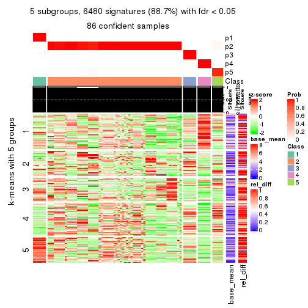
get_signatures(res, k = 6)
Signature heatmaps where rows are not scaled:
get_signatures(res, k = 2, scale_rows = FALSE)
get_signatures(res, k = 3, scale_rows = FALSE)
get_signatures(res, k = 4, scale_rows = FALSE)
get_signatures(res, k = 5, scale_rows = FALSE)
get_signatures(res, k = 6, scale_rows = FALSE)
Compare the overlap of signatures from different k:
compare_signatures(res)
get_signature() returns a data frame invisibly. TO get the list of signatures, the function
call should be assigned to a variable explicitly. In following code, if plot argument is set
to FALSE, no heatmap is plotted while only the differential analysis is performed.
# code only for demonstration
tb = get_signature(res, k = ..., plot = FALSE)
An example of the output of tb is:
#> which_row fdr mean_1 mean_2 scaled_mean_1 scaled_mean_2 km
#> 1 38 0.042760348 8.373488 9.131774 -0.5533452 0.5164555 1
#> 2 40 0.018707592 7.106213 8.469186 -0.6173731 0.5762149 1
#> 3 55 0.019134737 10.221463 11.207825 -0.6159697 0.5749050 1
#> 4 59 0.006059896 5.921854 7.869574 -0.6899429 0.6439467 1
#> 5 60 0.018055526 8.928898 10.211722 -0.6204761 0.5791110 1
#> 6 98 0.009384629 15.714769 14.887706 0.6635654 -0.6193277 2
...
The columns in tb are:
which_row: row indices corresponding to the input matrix.fdr: FDR for the differential test. mean_x: The mean value in group x.scaled_mean_x: The mean value in group x after rows are scaled.km: Row groups if k-means clustering is applied to rows.UMAP plot which shows how samples are separated.
dimension_reduction(res, k = 2, method = "UMAP")
dimension_reduction(res, k = 3, method = "UMAP")
dimension_reduction(res, k = 4, method = "UMAP")
dimension_reduction(res, k = 5, method = "UMAP")
dimension_reduction(res, k = 6, method = "UMAP")

Following heatmap shows how subgroups are split when increasing k:
collect_classes(res)
If matrix rows can be associated to genes, consider to use functional_enrichment(res,
...) to perform function enrichment for the signature genes. See this vignette for more detailed explanations.
The object with results only for a single top-value method and a single partition method can be extracted as:
res = res_list["CV", "mclust"]
# you can also extract it by
# res = res_list["CV:mclust"]
A summary of res and all the functions that can be applied to it:
res
#> A 'ConsensusPartition' object with k = 2, 3, 4, 5, 6.
#> On a matrix with 7309 rows and 86 columns.
#> Top rows (731, 1462, 2192, 2923, 3654) are extracted by 'CV' method.
#> Subgroups are detected by 'mclust' method.
#> Performed in total 1250 partitions by row resampling.
#> Best k for subgroups seems to be 3.
#>
#> Following methods can be applied to this 'ConsensusPartition' object:
#> [1] "cola_report" "collect_classes" "collect_plots"
#> [4] "collect_stats" "colnames" "compare_signatures"
#> [7] "consensus_heatmap" "dimension_reduction" "functional_enrichment"
#> [10] "get_anno_col" "get_anno" "get_classes"
#> [13] "get_consensus" "get_matrix" "get_membership"
#> [16] "get_param" "get_signatures" "get_stats"
#> [19] "is_best_k" "is_stable_k" "membership_heatmap"
#> [22] "ncol" "nrow" "plot_ecdf"
#> [25] "rownames" "select_partition_number" "show"
#> [28] "suggest_best_k" "test_to_known_factors"
collect_plots() function collects all the plots made from res for all k (number of partitions)
into one single page to provide an easy and fast comparison between different k.
collect_plots(res)
The plots are:
k and the heatmap of
predicted classes for each k.k.k.k.All the plots in panels can be made by individual functions and they are plotted later in this section.
select_partition_number() produces several plots showing different
statistics for choosing “optimized” k. There are following statistics:
k;k, the area increased is defined as \(A_k - A_{k-1}\).The detailed explanations of these statistics can be found in the cola vignette.
Generally speaking, lower PAC score, higher mean silhouette score or higher
concordance corresponds to better partition. Rand index and Jaccard index
measure how similar the current partition is compared to partition with k-1.
If they are too similar, we won't accept k is better than k-1.
select_partition_number(res)
The numeric values for all these statistics can be obtained by get_stats().
get_stats(res)
#> k 1-PAC mean_silhouette concordance area_increased Rand Jaccard
#> 2 2 0.438 0.913 0.907 0.3923 0.615 0.615
#> 3 3 0.500 0.759 0.820 0.5979 0.654 0.464
#> 4 4 0.578 0.645 0.812 0.1037 0.889 0.696
#> 5 5 0.612 0.687 0.781 0.0701 0.957 0.854
#> 6 6 0.655 0.728 0.740 0.0684 0.897 0.631
suggest_best_k() suggests the best \(k\) based on these statistics. The rules are as follows:
suggest_best_k(res)
#> [1] 3
Following shows the table of the partitions (You need to click the show/hide
code output link to see it). The membership matrix (columns with name p*)
is inferred by
clue::cl_consensus()
function with the SE method. Basically the value in the membership matrix
represents the probability to belong to a certain group. The finall class
label for an item is determined with the group with highest probability it
belongs to.
In get_classes() function, the entropy is calculated from the membership
matrix and the silhouette score is calculated from the consensus matrix.
cbind(get_classes(res, k = 2), get_membership(res, k = 2))
#> class entropy silhouette p1 p2
#> SRR2240643 1 0.5629 0.909 0.868 0.132
#> SRR2240644 1 0.5629 0.909 0.868 0.132
#> SRR2240645 1 0.5629 0.909 0.868 0.132
#> SRR2240646 1 0.5629 0.909 0.868 0.132
#> SRR2240647 1 0.5629 0.909 0.868 0.132
#> SRR2240638 1 0.5629 0.909 0.868 0.132
#> SRR2240639 1 0.5629 0.909 0.868 0.132
#> SRR2240640 1 0.5629 0.909 0.868 0.132
#> SRR2240641 1 0.5629 0.909 0.868 0.132
#> SRR2240642 1 0.5629 0.909 0.868 0.132
#> SRR2240633 1 0.5178 0.907 0.884 0.116
#> SRR2240634 1 0.5178 0.907 0.884 0.116
#> SRR2240635 1 0.5178 0.907 0.884 0.116
#> SRR2240636 1 0.5178 0.907 0.884 0.116
#> SRR2240637 1 0.5178 0.907 0.884 0.116
#> SRR2240624 1 0.6801 0.894 0.820 0.180
#> SRR2240625 1 0.6801 0.894 0.820 0.180
#> SRR2240626 1 0.6801 0.894 0.820 0.180
#> SRR2240627 1 0.5519 0.910 0.872 0.128
#> SRR2240628 1 0.5519 0.910 0.872 0.128
#> SRR2240629 1 0.5519 0.910 0.872 0.128
#> SRR2240630 1 0.5519 0.910 0.872 0.128
#> SRR2240631 1 0.5519 0.910 0.872 0.128
#> SRR2240632 1 0.5519 0.910 0.872 0.128
#> SRR2240613 1 0.5408 0.907 0.876 0.124
#> SRR2240614 1 0.5408 0.907 0.876 0.124
#> SRR2240615 1 0.5408 0.907 0.876 0.124
#> SRR2240616 1 0.5408 0.907 0.876 0.124
#> SRR2240617 1 0.5408 0.907 0.876 0.124
#> SRR2240618 1 0.2948 0.914 0.948 0.052
#> SRR2240619 1 0.2948 0.914 0.948 0.052
#> SRR2240620 1 0.2948 0.914 0.948 0.052
#> SRR2240621 1 0.2948 0.914 0.948 0.052
#> SRR2240622 1 0.2948 0.914 0.948 0.052
#> SRR2240623 1 0.2948 0.914 0.948 0.052
#> SRR2240609 2 0.0672 0.956 0.008 0.992
#> SRR2240610 2 0.0672 0.956 0.008 0.992
#> SRR2240611 2 0.0672 0.956 0.008 0.992
#> SRR2240612 2 0.0672 0.956 0.008 0.992
#> SRR2240594 1 0.4431 0.902 0.908 0.092
#> SRR2240595 1 0.4431 0.902 0.908 0.092
#> SRR2240596 1 0.4431 0.902 0.908 0.092
#> SRR2240597 1 0.4431 0.902 0.908 0.092
#> SRR2240598 1 0.4431 0.902 0.908 0.092
#> SRR2240604 2 0.0672 0.956 0.008 0.992
#> SRR2240605 2 0.0672 0.956 0.008 0.992
#> SRR2240606 2 0.0672 0.956 0.008 0.992
#> SRR2240607 2 0.0672 0.956 0.008 0.992
#> SRR2240608 2 0.0672 0.956 0.008 0.992
#> SRR2240599 1 0.4298 0.903 0.912 0.088
#> SRR2240600 1 0.4298 0.903 0.912 0.088
#> SRR2240601 1 0.4298 0.903 0.912 0.088
#> SRR2240602 1 0.4298 0.903 0.912 0.088
#> SRR2240603 1 0.4298 0.903 0.912 0.088
#> SRR2240584 1 0.4161 0.906 0.916 0.084
#> SRR2240585 1 0.4161 0.906 0.916 0.084
#> SRR2240586 1 0.4161 0.906 0.916 0.084
#> SRR2240587 1 0.4161 0.906 0.916 0.084
#> SRR2240588 1 0.4161 0.906 0.916 0.084
#> SRR2240589 1 0.4298 0.903 0.912 0.088
#> SRR2240590 1 0.4298 0.903 0.912 0.088
#> SRR2240591 1 0.4298 0.903 0.912 0.088
#> SRR2240592 1 0.4298 0.903 0.912 0.088
#> SRR2240593 1 0.4298 0.903 0.912 0.088
#> SRR2240578 1 0.2603 0.899 0.956 0.044
#> SRR2240579 1 0.2603 0.899 0.956 0.044
#> SRR2240580 1 0.2603 0.899 0.956 0.044
#> SRR2240581 1 0.2603 0.899 0.956 0.044
#> SRR2240582 1 0.2603 0.899 0.956 0.044
#> SRR2240583 1 0.2603 0.899 0.956 0.044
#> SRR1825969 2 0.0938 0.957 0.012 0.988
#> SRR1825968 2 0.4431 0.912 0.092 0.908
#> SRR1825970 1 0.5629 0.911 0.868 0.132
#> SRR1825966 2 0.0938 0.957 0.012 0.988
#> SRR1825967 2 0.1184 0.956 0.016 0.984
#> SRR1825965 1 0.4298 0.908 0.912 0.088
#> SRR1825962 2 0.1184 0.956 0.016 0.984
#> SRR1825963 2 0.0938 0.957 0.012 0.988
#> SRR1825964 2 0.4562 0.909 0.096 0.904
#> SRR1825961 1 0.4690 0.918 0.900 0.100
#> SRR1825960 2 0.4690 0.904 0.100 0.900
#> SRR1825958 2 0.7376 0.729 0.208 0.792
#> SRR1825959 2 0.4690 0.904 0.100 0.900
#> SRR1825956 2 0.4431 0.913 0.092 0.908
#> SRR1825957 2 0.4298 0.915 0.088 0.912
#> SRR1825955 2 0.1184 0.956 0.016 0.984
cbind(get_classes(res, k = 3), get_membership(res, k = 3))
#> class entropy silhouette p1 p2 p3
#> SRR2240643 3 0.1337 0.8476 0.012 0.016 0.972
#> SRR2240644 3 0.1337 0.8476 0.012 0.016 0.972
#> SRR2240645 3 0.1337 0.8476 0.012 0.016 0.972
#> SRR2240646 3 0.1337 0.8476 0.012 0.016 0.972
#> SRR2240647 3 0.1337 0.8476 0.012 0.016 0.972
#> SRR2240638 3 0.5585 0.7868 0.204 0.024 0.772
#> SRR2240639 3 0.5585 0.7868 0.204 0.024 0.772
#> SRR2240640 3 0.5585 0.7868 0.204 0.024 0.772
#> SRR2240641 3 0.5585 0.7868 0.204 0.024 0.772
#> SRR2240642 3 0.5585 0.7868 0.204 0.024 0.772
#> SRR2240633 3 0.4519 0.8463 0.116 0.032 0.852
#> SRR2240634 3 0.4519 0.8463 0.116 0.032 0.852
#> SRR2240635 3 0.4519 0.8463 0.116 0.032 0.852
#> SRR2240636 3 0.4519 0.8463 0.116 0.032 0.852
#> SRR2240637 3 0.4519 0.8463 0.116 0.032 0.852
#> SRR2240624 2 0.9757 0.1289 0.268 0.444 0.288
#> SRR2240625 2 0.9757 0.1289 0.268 0.444 0.288
#> SRR2240626 2 0.9757 0.1289 0.268 0.444 0.288
#> SRR2240627 3 0.1337 0.8471 0.012 0.016 0.972
#> SRR2240628 3 0.1337 0.8471 0.012 0.016 0.972
#> SRR2240629 3 0.1337 0.8471 0.012 0.016 0.972
#> SRR2240630 3 0.1337 0.8471 0.012 0.016 0.972
#> SRR2240631 3 0.1337 0.8471 0.012 0.016 0.972
#> SRR2240632 3 0.1337 0.8471 0.012 0.016 0.972
#> SRR2240613 3 0.6438 0.7798 0.188 0.064 0.748
#> SRR2240614 3 0.6438 0.7798 0.188 0.064 0.748
#> SRR2240615 3 0.6438 0.7798 0.188 0.064 0.748
#> SRR2240616 3 0.6438 0.7798 0.188 0.064 0.748
#> SRR2240617 3 0.6438 0.7798 0.188 0.064 0.748
#> SRR2240618 1 0.6082 0.6192 0.692 0.012 0.296
#> SRR2240619 1 0.6082 0.6192 0.692 0.012 0.296
#> SRR2240620 1 0.6082 0.6192 0.692 0.012 0.296
#> SRR2240621 1 0.6082 0.6192 0.692 0.012 0.296
#> SRR2240622 1 0.6082 0.6192 0.692 0.012 0.296
#> SRR2240623 1 0.6082 0.6192 0.692 0.012 0.296
#> SRR2240609 2 0.0000 0.8497 0.000 1.000 0.000
#> SRR2240610 2 0.0000 0.8497 0.000 1.000 0.000
#> SRR2240611 2 0.0000 0.8497 0.000 1.000 0.000
#> SRR2240612 2 0.0000 0.8497 0.000 1.000 0.000
#> SRR2240594 1 0.7256 0.7346 0.696 0.216 0.088
#> SRR2240595 1 0.7256 0.7346 0.696 0.216 0.088
#> SRR2240596 1 0.7256 0.7346 0.696 0.216 0.088
#> SRR2240597 1 0.7256 0.7346 0.696 0.216 0.088
#> SRR2240598 1 0.7256 0.7346 0.696 0.216 0.088
#> SRR2240604 2 0.0000 0.8497 0.000 1.000 0.000
#> SRR2240605 2 0.0000 0.8497 0.000 1.000 0.000
#> SRR2240606 2 0.0000 0.8497 0.000 1.000 0.000
#> SRR2240607 2 0.0000 0.8497 0.000 1.000 0.000
#> SRR2240608 2 0.0000 0.8497 0.000 1.000 0.000
#> SRR2240599 1 0.3461 0.8335 0.900 0.024 0.076
#> SRR2240600 1 0.3461 0.8335 0.900 0.024 0.076
#> SRR2240601 1 0.3461 0.8335 0.900 0.024 0.076
#> SRR2240602 1 0.3461 0.8335 0.900 0.024 0.076
#> SRR2240603 1 0.3461 0.8335 0.900 0.024 0.076
#> SRR2240584 1 0.6079 0.8053 0.784 0.128 0.088
#> SRR2240585 1 0.6079 0.8053 0.784 0.128 0.088
#> SRR2240586 1 0.6079 0.8053 0.784 0.128 0.088
#> SRR2240587 1 0.6079 0.8053 0.784 0.128 0.088
#> SRR2240588 1 0.6079 0.8053 0.784 0.128 0.088
#> SRR2240589 1 0.3183 0.8319 0.908 0.016 0.076
#> SRR2240590 1 0.3183 0.8319 0.908 0.016 0.076
#> SRR2240591 1 0.3183 0.8319 0.908 0.016 0.076
#> SRR2240592 1 0.3183 0.8319 0.908 0.016 0.076
#> SRR2240593 1 0.3183 0.8319 0.908 0.016 0.076
#> SRR2240578 1 0.1163 0.7922 0.972 0.000 0.028
#> SRR2240579 1 0.1163 0.7922 0.972 0.000 0.028
#> SRR2240580 1 0.1163 0.7922 0.972 0.000 0.028
#> SRR2240581 1 0.1163 0.7922 0.972 0.000 0.028
#> SRR2240582 1 0.1163 0.7922 0.972 0.000 0.028
#> SRR2240583 1 0.1163 0.7922 0.972 0.000 0.028
#> SRR1825969 2 0.0237 0.8486 0.004 0.996 0.000
#> SRR1825968 2 0.2448 0.8196 0.076 0.924 0.000
#> SRR1825970 2 0.9757 0.0826 0.288 0.444 0.268
#> SRR1825966 2 0.0237 0.8486 0.004 0.996 0.000
#> SRR1825967 2 0.0000 0.8497 0.000 1.000 0.000
#> SRR1825965 1 0.9163 0.5198 0.540 0.252 0.208
#> SRR1825962 2 0.0000 0.8497 0.000 1.000 0.000
#> SRR1825963 2 0.0237 0.8486 0.004 0.996 0.000
#> SRR1825964 2 0.2537 0.8165 0.080 0.920 0.000
#> SRR1825961 2 0.9796 0.0202 0.248 0.420 0.332
#> SRR1825960 2 0.2682 0.8176 0.076 0.920 0.004
#> SRR1825958 2 0.4489 0.7505 0.108 0.856 0.036
#> SRR1825959 2 0.2448 0.8196 0.076 0.924 0.000
#> SRR1825956 2 0.2590 0.8193 0.072 0.924 0.004
#> SRR1825957 2 0.2400 0.8243 0.064 0.932 0.004
#> SRR1825955 2 0.0237 0.8486 0.004 0.996 0.000
cbind(get_classes(res, k = 4), get_membership(res, k = 4))
#> class entropy silhouette p1 p2 p3 p4
#> SRR2240643 3 0.0672 0.7745 0.008 0.000 0.984 0.008
#> SRR2240644 3 0.0804 0.7748 0.008 0.000 0.980 0.012
#> SRR2240645 3 0.0672 0.7745 0.008 0.000 0.984 0.008
#> SRR2240646 3 0.0672 0.7745 0.008 0.000 0.984 0.008
#> SRR2240647 3 0.0672 0.7745 0.008 0.000 0.984 0.008
#> SRR2240638 3 0.4606 0.6238 0.264 0.000 0.724 0.012
#> SRR2240639 3 0.4606 0.6238 0.264 0.000 0.724 0.012
#> SRR2240640 3 0.4606 0.6238 0.264 0.000 0.724 0.012
#> SRR2240641 3 0.4606 0.6238 0.264 0.000 0.724 0.012
#> SRR2240642 3 0.4606 0.6238 0.264 0.000 0.724 0.012
#> SRR2240633 3 0.3542 0.7494 0.028 0.000 0.852 0.120
#> SRR2240634 3 0.3542 0.7494 0.028 0.000 0.852 0.120
#> SRR2240635 3 0.3542 0.7494 0.028 0.000 0.852 0.120
#> SRR2240636 3 0.3542 0.7494 0.028 0.000 0.852 0.120
#> SRR2240637 3 0.3542 0.7494 0.028 0.000 0.852 0.120
#> SRR2240624 1 0.7662 0.0438 0.496 0.236 0.264 0.004
#> SRR2240625 1 0.7662 0.0438 0.496 0.236 0.264 0.004
#> SRR2240626 1 0.7662 0.0438 0.496 0.236 0.264 0.004
#> SRR2240627 3 0.2530 0.7621 0.000 0.000 0.888 0.112
#> SRR2240628 3 0.2530 0.7621 0.000 0.000 0.888 0.112
#> SRR2240629 3 0.2530 0.7621 0.000 0.000 0.888 0.112
#> SRR2240630 3 0.2530 0.7621 0.000 0.000 0.888 0.112
#> SRR2240631 3 0.2530 0.7621 0.000 0.000 0.888 0.112
#> SRR2240632 3 0.2530 0.7621 0.000 0.000 0.888 0.112
#> SRR2240613 3 0.6858 0.5873 0.240 0.016 0.628 0.116
#> SRR2240614 3 0.6858 0.5873 0.240 0.016 0.628 0.116
#> SRR2240615 3 0.6858 0.5873 0.240 0.016 0.628 0.116
#> SRR2240616 3 0.6858 0.5873 0.240 0.016 0.628 0.116
#> SRR2240617 3 0.6858 0.5873 0.240 0.016 0.628 0.116
#> SRR2240618 4 0.5399 1.0000 0.468 0.000 0.012 0.520
#> SRR2240619 4 0.5399 1.0000 0.468 0.000 0.012 0.520
#> SRR2240620 4 0.5399 1.0000 0.468 0.000 0.012 0.520
#> SRR2240621 4 0.5399 1.0000 0.468 0.000 0.012 0.520
#> SRR2240622 4 0.5399 1.0000 0.468 0.000 0.012 0.520
#> SRR2240623 4 0.5399 1.0000 0.468 0.000 0.012 0.520
#> SRR2240609 2 0.0000 0.8874 0.000 1.000 0.000 0.000
#> SRR2240610 2 0.0000 0.8874 0.000 1.000 0.000 0.000
#> SRR2240611 2 0.0000 0.8874 0.000 1.000 0.000 0.000
#> SRR2240612 2 0.0000 0.8874 0.000 1.000 0.000 0.000
#> SRR2240594 1 0.2596 0.5318 0.908 0.068 0.024 0.000
#> SRR2240595 1 0.2596 0.5318 0.908 0.068 0.024 0.000
#> SRR2240596 1 0.2596 0.5318 0.908 0.068 0.024 0.000
#> SRR2240597 1 0.2596 0.5318 0.908 0.068 0.024 0.000
#> SRR2240598 1 0.2596 0.5318 0.908 0.068 0.024 0.000
#> SRR2240604 2 0.0000 0.8874 0.000 1.000 0.000 0.000
#> SRR2240605 2 0.0000 0.8874 0.000 1.000 0.000 0.000
#> SRR2240606 2 0.0000 0.8874 0.000 1.000 0.000 0.000
#> SRR2240607 2 0.0000 0.8874 0.000 1.000 0.000 0.000
#> SRR2240608 2 0.0000 0.8874 0.000 1.000 0.000 0.000
#> SRR2240599 1 0.1118 0.5457 0.964 0.000 0.000 0.036
#> SRR2240600 1 0.1118 0.5457 0.964 0.000 0.000 0.036
#> SRR2240601 1 0.1118 0.5457 0.964 0.000 0.000 0.036
#> SRR2240602 1 0.1118 0.5457 0.964 0.000 0.000 0.036
#> SRR2240603 1 0.1118 0.5457 0.964 0.000 0.000 0.036
#> SRR2240584 1 0.1902 0.5457 0.932 0.064 0.004 0.000
#> SRR2240585 1 0.1902 0.5457 0.932 0.064 0.004 0.000
#> SRR2240586 1 0.1902 0.5457 0.932 0.064 0.004 0.000
#> SRR2240587 1 0.1902 0.5457 0.932 0.064 0.004 0.000
#> SRR2240588 1 0.1902 0.5457 0.932 0.064 0.004 0.000
#> SRR2240589 1 0.1022 0.5473 0.968 0.000 0.000 0.032
#> SRR2240590 1 0.1022 0.5473 0.968 0.000 0.000 0.032
#> SRR2240591 1 0.1022 0.5473 0.968 0.000 0.000 0.032
#> SRR2240592 1 0.1022 0.5473 0.968 0.000 0.000 0.032
#> SRR2240593 1 0.1022 0.5473 0.968 0.000 0.000 0.032
#> SRR2240578 1 0.4992 0.2686 0.524 0.000 0.000 0.476
#> SRR2240579 1 0.4992 0.2686 0.524 0.000 0.000 0.476
#> SRR2240580 1 0.4992 0.2686 0.524 0.000 0.000 0.476
#> SRR2240581 1 0.4992 0.2686 0.524 0.000 0.000 0.476
#> SRR2240582 1 0.4992 0.2686 0.524 0.000 0.000 0.476
#> SRR2240583 1 0.4992 0.2686 0.524 0.000 0.000 0.476
#> SRR1825969 2 0.0336 0.8869 0.008 0.992 0.000 0.000
#> SRR1825968 2 0.4364 0.7275 0.220 0.764 0.016 0.000
#> SRR1825970 1 0.7446 0.0579 0.536 0.224 0.236 0.004
#> SRR1825966 2 0.0000 0.8874 0.000 1.000 0.000 0.000
#> SRR1825967 2 0.0817 0.8824 0.024 0.976 0.000 0.000
#> SRR1825965 1 0.5713 0.2904 0.724 0.084 0.184 0.008
#> SRR1825962 2 0.0817 0.8824 0.024 0.976 0.000 0.000
#> SRR1825963 2 0.0336 0.8869 0.008 0.992 0.000 0.000
#> SRR1825964 2 0.4434 0.7173 0.228 0.756 0.016 0.000
#> SRR1825961 1 0.7736 0.0074 0.500 0.220 0.272 0.008
#> SRR1825960 2 0.4507 0.7199 0.224 0.756 0.020 0.000
#> SRR1825958 2 0.5131 0.5971 0.280 0.692 0.028 0.000
#> SRR1825959 2 0.4434 0.7177 0.228 0.756 0.016 0.000
#> SRR1825956 2 0.4507 0.7182 0.224 0.756 0.020 0.000
#> SRR1825957 2 0.4361 0.7375 0.208 0.772 0.020 0.000
#> SRR1825955 2 0.0592 0.8850 0.016 0.984 0.000 0.000
cbind(get_classes(res, k = 5), get_membership(res, k = 5))
#> class entropy silhouette p1 p2 p3 p4 p5
#> SRR2240643 3 0.0932 0.716 0.004 0.000 0.972 0.004 0.020
#> SRR2240644 3 0.0932 0.716 0.004 0.000 0.972 0.004 0.020
#> SRR2240645 3 0.0932 0.716 0.004 0.000 0.972 0.004 0.020
#> SRR2240646 3 0.0932 0.716 0.004 0.000 0.972 0.004 0.020
#> SRR2240647 3 0.0932 0.716 0.004 0.000 0.972 0.004 0.020
#> SRR2240638 3 0.4452 0.561 0.272 0.000 0.696 0.032 0.000
#> SRR2240639 3 0.4452 0.561 0.272 0.000 0.696 0.032 0.000
#> SRR2240640 3 0.4452 0.561 0.272 0.000 0.696 0.032 0.000
#> SRR2240641 3 0.4452 0.561 0.272 0.000 0.696 0.032 0.000
#> SRR2240642 3 0.4452 0.561 0.272 0.000 0.696 0.032 0.000
#> SRR2240633 3 0.5061 0.647 0.012 0.000 0.716 0.188 0.084
#> SRR2240634 3 0.5061 0.647 0.012 0.000 0.716 0.188 0.084
#> SRR2240635 3 0.5061 0.647 0.012 0.000 0.716 0.188 0.084
#> SRR2240636 3 0.5061 0.647 0.012 0.000 0.716 0.188 0.084
#> SRR2240637 3 0.5061 0.647 0.012 0.000 0.716 0.188 0.084
#> SRR2240624 1 0.6215 0.321 0.576 0.164 0.252 0.008 0.000
#> SRR2240625 1 0.6215 0.321 0.576 0.164 0.252 0.008 0.000
#> SRR2240626 1 0.6215 0.321 0.576 0.164 0.252 0.008 0.000
#> SRR2240627 3 0.3274 0.695 0.000 0.000 0.780 0.000 0.220
#> SRR2240628 3 0.3274 0.695 0.000 0.000 0.780 0.000 0.220
#> SRR2240629 3 0.3274 0.695 0.000 0.000 0.780 0.000 0.220
#> SRR2240630 3 0.3274 0.695 0.000 0.000 0.780 0.000 0.220
#> SRR2240631 3 0.3274 0.695 0.000 0.000 0.780 0.000 0.220
#> SRR2240632 3 0.3274 0.695 0.000 0.000 0.780 0.000 0.220
#> SRR2240613 3 0.6868 0.605 0.196 0.000 0.544 0.036 0.224
#> SRR2240614 3 0.6868 0.605 0.196 0.000 0.544 0.036 0.224
#> SRR2240615 3 0.6868 0.605 0.196 0.000 0.544 0.036 0.224
#> SRR2240616 3 0.6868 0.605 0.196 0.000 0.544 0.036 0.224
#> SRR2240617 3 0.6868 0.605 0.196 0.000 0.544 0.036 0.224
#> SRR2240618 4 0.3635 1.000 0.248 0.000 0.004 0.748 0.000
#> SRR2240619 4 0.3635 1.000 0.248 0.000 0.004 0.748 0.000
#> SRR2240620 4 0.3635 1.000 0.248 0.000 0.004 0.748 0.000
#> SRR2240621 4 0.3635 1.000 0.248 0.000 0.004 0.748 0.000
#> SRR2240622 4 0.3635 1.000 0.248 0.000 0.004 0.748 0.000
#> SRR2240623 4 0.3635 1.000 0.248 0.000 0.004 0.748 0.000
#> SRR2240609 2 0.0000 0.842 0.000 1.000 0.000 0.000 0.000
#> SRR2240610 2 0.0000 0.842 0.000 1.000 0.000 0.000 0.000
#> SRR2240611 2 0.0000 0.842 0.000 1.000 0.000 0.000 0.000
#> SRR2240612 2 0.0000 0.842 0.000 1.000 0.000 0.000 0.000
#> SRR2240594 1 0.0960 0.629 0.972 0.008 0.016 0.000 0.004
#> SRR2240595 1 0.0960 0.629 0.972 0.008 0.016 0.000 0.004
#> SRR2240596 1 0.0960 0.629 0.972 0.008 0.016 0.000 0.004
#> SRR2240597 1 0.0960 0.629 0.972 0.008 0.016 0.000 0.004
#> SRR2240598 1 0.0960 0.629 0.972 0.008 0.016 0.000 0.004
#> SRR2240604 2 0.0000 0.842 0.000 1.000 0.000 0.000 0.000
#> SRR2240605 2 0.0000 0.842 0.000 1.000 0.000 0.000 0.000
#> SRR2240606 2 0.0000 0.842 0.000 1.000 0.000 0.000 0.000
#> SRR2240607 2 0.0000 0.842 0.000 1.000 0.000 0.000 0.000
#> SRR2240608 2 0.0000 0.842 0.000 1.000 0.000 0.000 0.000
#> SRR2240599 1 0.5411 0.513 0.664 0.000 0.000 0.176 0.160
#> SRR2240600 1 0.5411 0.513 0.664 0.000 0.000 0.176 0.160
#> SRR2240601 1 0.5411 0.513 0.664 0.000 0.000 0.176 0.160
#> SRR2240602 1 0.5411 0.513 0.664 0.000 0.000 0.176 0.160
#> SRR2240603 1 0.5411 0.513 0.664 0.000 0.000 0.176 0.160
#> SRR2240584 1 0.1082 0.638 0.964 0.008 0.000 0.000 0.028
#> SRR2240585 1 0.1082 0.638 0.964 0.008 0.000 0.000 0.028
#> SRR2240586 1 0.1082 0.638 0.964 0.008 0.000 0.000 0.028
#> SRR2240587 1 0.1082 0.638 0.964 0.008 0.000 0.000 0.028
#> SRR2240588 1 0.1082 0.638 0.964 0.008 0.000 0.000 0.028
#> SRR2240589 1 0.5411 0.513 0.664 0.000 0.000 0.176 0.160
#> SRR2240590 1 0.5411 0.513 0.664 0.000 0.000 0.176 0.160
#> SRR2240591 1 0.5411 0.513 0.664 0.000 0.000 0.176 0.160
#> SRR2240592 1 0.5411 0.513 0.664 0.000 0.000 0.176 0.160
#> SRR2240593 1 0.5411 0.513 0.664 0.000 0.000 0.176 0.160
#> SRR2240578 5 0.3790 1.000 0.272 0.000 0.000 0.004 0.724
#> SRR2240579 5 0.3790 1.000 0.272 0.000 0.000 0.004 0.724
#> SRR2240580 5 0.3790 1.000 0.272 0.000 0.000 0.004 0.724
#> SRR2240581 5 0.3790 1.000 0.272 0.000 0.000 0.004 0.724
#> SRR2240582 5 0.3790 1.000 0.272 0.000 0.000 0.004 0.724
#> SRR2240583 5 0.3790 1.000 0.272 0.000 0.000 0.004 0.724
#> SRR1825969 2 0.0290 0.842 0.008 0.992 0.000 0.000 0.000
#> SRR1825968 2 0.4484 0.600 0.352 0.636 0.004 0.004 0.004
#> SRR1825970 1 0.6344 0.326 0.588 0.156 0.236 0.020 0.000
#> SRR1825966 2 0.0290 0.841 0.008 0.992 0.000 0.000 0.000
#> SRR1825967 2 0.1205 0.828 0.040 0.956 0.000 0.000 0.004
#> SRR1825965 1 0.3747 0.523 0.816 0.016 0.148 0.016 0.004
#> SRR1825962 2 0.0794 0.836 0.028 0.972 0.000 0.000 0.000
#> SRR1825963 2 0.0162 0.842 0.004 0.996 0.000 0.000 0.000
#> SRR1825964 2 0.4469 0.604 0.348 0.640 0.004 0.004 0.004
#> SRR1825961 1 0.6875 0.273 0.532 0.168 0.272 0.020 0.008
#> SRR1825960 2 0.4469 0.605 0.348 0.640 0.004 0.004 0.004
#> SRR1825958 2 0.5048 0.454 0.412 0.560 0.020 0.004 0.004
#> SRR1825959 2 0.4498 0.593 0.356 0.632 0.004 0.004 0.004
#> SRR1825956 2 0.4469 0.605 0.348 0.640 0.004 0.004 0.004
#> SRR1825957 2 0.4421 0.620 0.336 0.652 0.004 0.004 0.004
#> SRR1825955 2 0.0404 0.841 0.012 0.988 0.000 0.000 0.000
cbind(get_classes(res, k = 6), get_membership(res, k = 6))
#> class entropy silhouette p1 p2 p3 p4 p5 p6
#> SRR2240643 3 0.4086 0.683 0.008 0.028 0.708 0.000 0.000 0.256
#> SRR2240644 3 0.4086 0.683 0.008 0.028 0.708 0.000 0.000 0.256
#> SRR2240645 3 0.4086 0.683 0.008 0.028 0.708 0.000 0.000 0.256
#> SRR2240646 3 0.4086 0.683 0.008 0.028 0.708 0.000 0.000 0.256
#> SRR2240647 3 0.4086 0.683 0.008 0.028 0.708 0.000 0.000 0.256
#> SRR2240638 3 0.7168 0.582 0.024 0.264 0.428 0.044 0.000 0.240
#> SRR2240639 3 0.7168 0.582 0.024 0.264 0.428 0.044 0.000 0.240
#> SRR2240640 3 0.7168 0.582 0.024 0.264 0.428 0.044 0.000 0.240
#> SRR2240641 3 0.7168 0.582 0.024 0.264 0.428 0.044 0.000 0.240
#> SRR2240642 3 0.7168 0.582 0.024 0.264 0.428 0.044 0.000 0.240
#> SRR2240633 3 0.7735 0.555 0.056 0.064 0.404 0.224 0.000 0.252
#> SRR2240634 3 0.7735 0.555 0.056 0.064 0.404 0.224 0.000 0.252
#> SRR2240635 3 0.7735 0.555 0.056 0.064 0.404 0.224 0.000 0.252
#> SRR2240636 3 0.7735 0.555 0.056 0.064 0.404 0.224 0.000 0.252
#> SRR2240637 3 0.7735 0.555 0.056 0.064 0.404 0.224 0.000 0.252
#> SRR2240624 2 0.4720 0.479 0.028 0.724 0.192 0.000 0.040 0.016
#> SRR2240625 2 0.4720 0.479 0.028 0.724 0.192 0.000 0.040 0.016
#> SRR2240626 2 0.4720 0.479 0.028 0.724 0.192 0.000 0.040 0.016
#> SRR2240627 3 0.0000 0.664 0.000 0.000 1.000 0.000 0.000 0.000
#> SRR2240628 3 0.0000 0.664 0.000 0.000 1.000 0.000 0.000 0.000
#> SRR2240629 3 0.0000 0.664 0.000 0.000 1.000 0.000 0.000 0.000
#> SRR2240630 3 0.0000 0.664 0.000 0.000 1.000 0.000 0.000 0.000
#> SRR2240631 3 0.0000 0.664 0.000 0.000 1.000 0.000 0.000 0.000
#> SRR2240632 3 0.0000 0.664 0.000 0.000 1.000 0.000 0.000 0.000
#> SRR2240613 3 0.4196 0.608 0.028 0.172 0.756 0.044 0.000 0.000
#> SRR2240614 3 0.4196 0.608 0.028 0.172 0.756 0.044 0.000 0.000
#> SRR2240615 3 0.4196 0.608 0.028 0.172 0.756 0.044 0.000 0.000
#> SRR2240616 3 0.4196 0.608 0.028 0.172 0.756 0.044 0.000 0.000
#> SRR2240617 3 0.4196 0.608 0.028 0.172 0.756 0.044 0.000 0.000
#> SRR2240618 4 0.3806 1.000 0.164 0.068 0.000 0.768 0.000 0.000
#> SRR2240619 4 0.3806 1.000 0.164 0.068 0.000 0.768 0.000 0.000
#> SRR2240620 4 0.3806 1.000 0.164 0.068 0.000 0.768 0.000 0.000
#> SRR2240621 4 0.3806 1.000 0.164 0.068 0.000 0.768 0.000 0.000
#> SRR2240622 4 0.3806 1.000 0.164 0.068 0.000 0.768 0.000 0.000
#> SRR2240623 4 0.3806 1.000 0.164 0.068 0.000 0.768 0.000 0.000
#> SRR2240609 5 0.0000 0.971 0.000 0.000 0.000 0.000 1.000 0.000
#> SRR2240610 5 0.0000 0.971 0.000 0.000 0.000 0.000 1.000 0.000
#> SRR2240611 5 0.0000 0.971 0.000 0.000 0.000 0.000 1.000 0.000
#> SRR2240612 5 0.0000 0.971 0.000 0.000 0.000 0.000 1.000 0.000
#> SRR2240594 2 0.3161 0.555 0.216 0.776 0.000 0.008 0.000 0.000
#> SRR2240595 2 0.3161 0.555 0.216 0.776 0.000 0.008 0.000 0.000
#> SRR2240596 2 0.3161 0.555 0.216 0.776 0.000 0.008 0.000 0.000
#> SRR2240597 2 0.3161 0.555 0.216 0.776 0.000 0.008 0.000 0.000
#> SRR2240598 2 0.3161 0.555 0.216 0.776 0.000 0.008 0.000 0.000
#> SRR2240604 5 0.0000 0.971 0.000 0.000 0.000 0.000 1.000 0.000
#> SRR2240605 5 0.0000 0.971 0.000 0.000 0.000 0.000 1.000 0.000
#> SRR2240606 5 0.0000 0.971 0.000 0.000 0.000 0.000 1.000 0.000
#> SRR2240607 5 0.0000 0.971 0.000 0.000 0.000 0.000 1.000 0.000
#> SRR2240608 5 0.0000 0.971 0.000 0.000 0.000 0.000 1.000 0.000
#> SRR2240599 1 0.1267 0.987 0.940 0.060 0.000 0.000 0.000 0.000
#> SRR2240600 1 0.1267 0.987 0.940 0.060 0.000 0.000 0.000 0.000
#> SRR2240601 1 0.1267 0.987 0.940 0.060 0.000 0.000 0.000 0.000
#> SRR2240602 1 0.1267 0.987 0.940 0.060 0.000 0.000 0.000 0.000
#> SRR2240603 1 0.1267 0.987 0.940 0.060 0.000 0.000 0.000 0.000
#> SRR2240584 2 0.3772 0.490 0.296 0.692 0.000 0.008 0.000 0.004
#> SRR2240585 2 0.3772 0.490 0.296 0.692 0.000 0.008 0.000 0.004
#> SRR2240586 2 0.3772 0.490 0.296 0.692 0.000 0.008 0.000 0.004
#> SRR2240587 2 0.3772 0.490 0.296 0.692 0.000 0.008 0.000 0.004
#> SRR2240588 2 0.3772 0.490 0.296 0.692 0.000 0.008 0.000 0.004
#> SRR2240589 1 0.1327 0.987 0.936 0.064 0.000 0.000 0.000 0.000
#> SRR2240590 1 0.1327 0.987 0.936 0.064 0.000 0.000 0.000 0.000
#> SRR2240591 1 0.1327 0.987 0.936 0.064 0.000 0.000 0.000 0.000
#> SRR2240592 1 0.1327 0.987 0.936 0.064 0.000 0.000 0.000 0.000
#> SRR2240593 1 0.1327 0.987 0.936 0.064 0.000 0.000 0.000 0.000
#> SRR2240578 6 0.3494 1.000 0.252 0.012 0.000 0.000 0.000 0.736
#> SRR2240579 6 0.3494 1.000 0.252 0.012 0.000 0.000 0.000 0.736
#> SRR2240580 6 0.3494 1.000 0.252 0.012 0.000 0.000 0.000 0.736
#> SRR2240581 6 0.3494 1.000 0.252 0.012 0.000 0.000 0.000 0.736
#> SRR2240582 6 0.3494 1.000 0.252 0.012 0.000 0.000 0.000 0.736
#> SRR2240583 6 0.3494 1.000 0.252 0.012 0.000 0.000 0.000 0.736
#> SRR1825969 5 0.1007 0.955 0.000 0.044 0.000 0.000 0.956 0.000
#> SRR1825968 2 0.3966 0.297 0.000 0.552 0.004 0.000 0.444 0.000
#> SRR1825970 2 0.5498 0.484 0.056 0.680 0.176 0.000 0.072 0.016
#> SRR1825966 5 0.0713 0.961 0.000 0.028 0.000 0.000 0.972 0.000
#> SRR1825967 5 0.1714 0.913 0.000 0.092 0.000 0.000 0.908 0.000
#> SRR1825965 2 0.4398 0.552 0.176 0.736 0.076 0.000 0.008 0.004
#> SRR1825962 5 0.1663 0.919 0.000 0.088 0.000 0.000 0.912 0.000
#> SRR1825963 5 0.1007 0.954 0.000 0.044 0.000 0.000 0.956 0.000
#> SRR1825964 2 0.3979 0.283 0.000 0.540 0.004 0.000 0.456 0.000
#> SRR1825961 2 0.5718 0.395 0.060 0.640 0.224 0.000 0.060 0.016
#> SRR1825960 2 0.3961 0.305 0.000 0.556 0.004 0.000 0.440 0.000
#> SRR1825958 2 0.4418 0.388 0.004 0.584 0.016 0.000 0.392 0.004
#> SRR1825959 2 0.4088 0.310 0.004 0.556 0.004 0.000 0.436 0.000
#> SRR1825956 2 0.3966 0.298 0.000 0.552 0.004 0.000 0.444 0.000
#> SRR1825957 2 0.3971 0.286 0.000 0.548 0.004 0.000 0.448 0.000
#> SRR1825955 5 0.1444 0.933 0.000 0.072 0.000 0.000 0.928 0.000
Heatmaps for the consensus matrix. It visualizes the probability of two samples to be in a same group.
consensus_heatmap(res, k = 2)
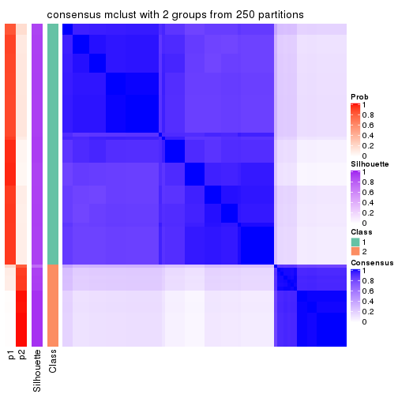
consensus_heatmap(res, k = 3)
consensus_heatmap(res, k = 4)
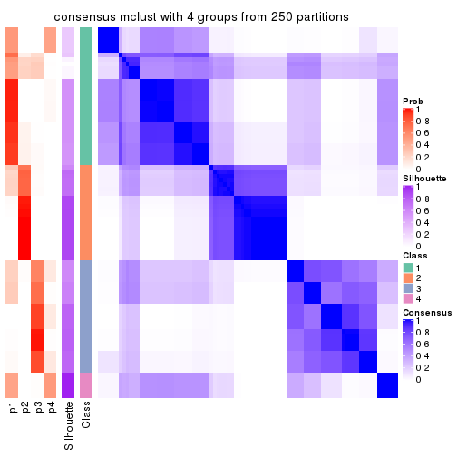
consensus_heatmap(res, k = 5)
consensus_heatmap(res, k = 6)
Heatmaps for the membership of samples in all partitions to see how consistent they are:
membership_heatmap(res, k = 2)
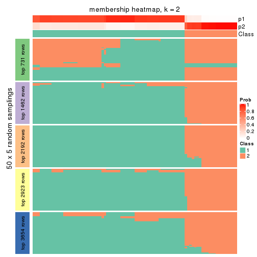
membership_heatmap(res, k = 3)
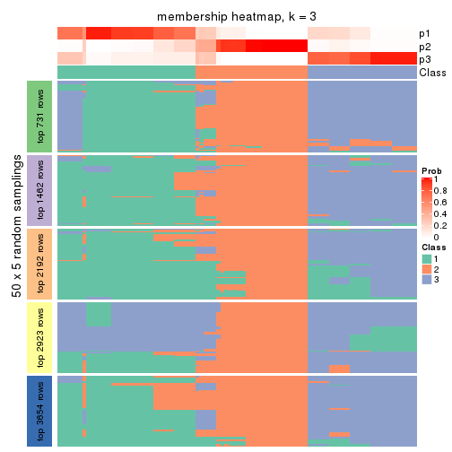
membership_heatmap(res, k = 4)
membership_heatmap(res, k = 5)
membership_heatmap(res, k = 6)
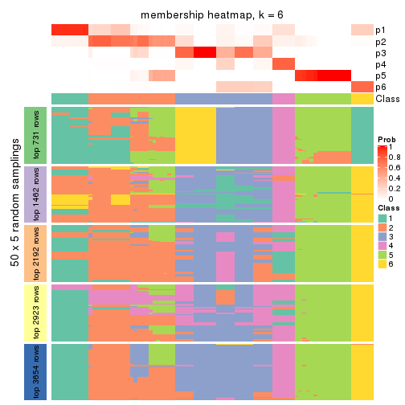
As soon as we have had the classes for columns, we can look for signatures which are significantly different between classes which can be candidate marks for certain classes. Following are the heatmaps for signatures.
Signature heatmaps where rows are scaled:
get_signatures(res, k = 2)
get_signatures(res, k = 3)
get_signatures(res, k = 4)
get_signatures(res, k = 5)
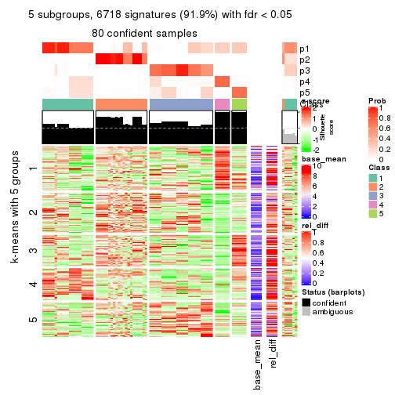
get_signatures(res, k = 6)
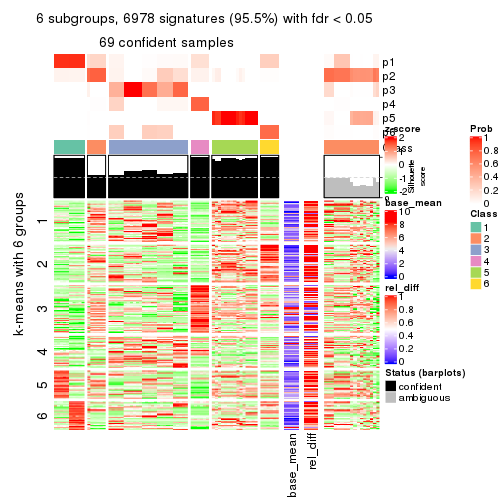
Signature heatmaps where rows are not scaled:
get_signatures(res, k = 2, scale_rows = FALSE)
get_signatures(res, k = 3, scale_rows = FALSE)
get_signatures(res, k = 4, scale_rows = FALSE)
get_signatures(res, k = 5, scale_rows = FALSE)
get_signatures(res, k = 6, scale_rows = FALSE)
Compare the overlap of signatures from different k:
compare_signatures(res)
get_signature() returns a data frame invisibly. TO get the list of signatures, the function
call should be assigned to a variable explicitly. In following code, if plot argument is set
to FALSE, no heatmap is plotted while only the differential analysis is performed.
# code only for demonstration
tb = get_signature(res, k = ..., plot = FALSE)
An example of the output of tb is:
#> which_row fdr mean_1 mean_2 scaled_mean_1 scaled_mean_2 km
#> 1 38 0.042760348 8.373488 9.131774 -0.5533452 0.5164555 1
#> 2 40 0.018707592 7.106213 8.469186 -0.6173731 0.5762149 1
#> 3 55 0.019134737 10.221463 11.207825 -0.6159697 0.5749050 1
#> 4 59 0.006059896 5.921854 7.869574 -0.6899429 0.6439467 1
#> 5 60 0.018055526 8.928898 10.211722 -0.6204761 0.5791110 1
#> 6 98 0.009384629 15.714769 14.887706 0.6635654 -0.6193277 2
...
The columns in tb are:
which_row: row indices corresponding to the input matrix.fdr: FDR for the differential test. mean_x: The mean value in group x.scaled_mean_x: The mean value in group x after rows are scaled.km: Row groups if k-means clustering is applied to rows.UMAP plot which shows how samples are separated.
dimension_reduction(res, k = 2, method = "UMAP")
dimension_reduction(res, k = 3, method = "UMAP")
dimension_reduction(res, k = 4, method = "UMAP")
dimension_reduction(res, k = 5, method = "UMAP")
dimension_reduction(res, k = 6, method = "UMAP")
Following heatmap shows how subgroups are split when increasing k:
collect_classes(res)
If matrix rows can be associated to genes, consider to use functional_enrichment(res,
...) to perform function enrichment for the signature genes. See this vignette for more detailed explanations.
The object with results only for a single top-value method and a single partition method can be extracted as:
res = res_list["CV", "NMF"]
# you can also extract it by
# res = res_list["CV:NMF"]
A summary of res and all the functions that can be applied to it:
res
#> A 'ConsensusPartition' object with k = 2, 3, 4, 5, 6.
#> On a matrix with 7309 rows and 86 columns.
#> Top rows (731, 1462, 2192, 2923, 3654) are extracted by 'CV' method.
#> Subgroups are detected by 'NMF' method.
#> Performed in total 1250 partitions by row resampling.
#> Best k for subgroups seems to be 2.
#>
#> Following methods can be applied to this 'ConsensusPartition' object:
#> [1] "cola_report" "collect_classes" "collect_plots"
#> [4] "collect_stats" "colnames" "compare_signatures"
#> [7] "consensus_heatmap" "dimension_reduction" "functional_enrichment"
#> [10] "get_anno_col" "get_anno" "get_classes"
#> [13] "get_consensus" "get_matrix" "get_membership"
#> [16] "get_param" "get_signatures" "get_stats"
#> [19] "is_best_k" "is_stable_k" "membership_heatmap"
#> [22] "ncol" "nrow" "plot_ecdf"
#> [25] "rownames" "select_partition_number" "show"
#> [28] "suggest_best_k" "test_to_known_factors"
collect_plots() function collects all the plots made from res for all k (number of partitions)
into one single page to provide an easy and fast comparison between different k.
collect_plots(res)
The plots are:
k and the heatmap of
predicted classes for each k.k.k.k.All the plots in panels can be made by individual functions and they are plotted later in this section.
select_partition_number() produces several plots showing different
statistics for choosing “optimized” k. There are following statistics:
k;k, the area increased is defined as \(A_k - A_{k-1}\).The detailed explanations of these statistics can be found in the cola vignette.
Generally speaking, lower PAC score, higher mean silhouette score or higher
concordance corresponds to better partition. Rand index and Jaccard index
measure how similar the current partition is compared to partition with k-1.
If they are too similar, we won't accept k is better than k-1.
select_partition_number(res)
The numeric values for all these statistics can be obtained by get_stats().
get_stats(res)
#> k 1-PAC mean_silhouette concordance area_increased Rand Jaccard
#> 2 2 0.480 0.827 0.905 0.4834 0.508 0.508
#> 3 3 0.465 0.750 0.827 0.3311 0.746 0.533
#> 4 4 0.618 0.677 0.771 0.1178 0.964 0.889
#> 5 5 0.658 0.589 0.711 0.0650 0.925 0.759
#> 6 6 0.697 0.585 0.681 0.0416 0.881 0.588
suggest_best_k() suggests the best \(k\) based on these statistics. The rules are as follows:
suggest_best_k(res)
#> [1] 2
Following shows the table of the partitions (You need to click the show/hide
code output link to see it). The membership matrix (columns with name p*)
is inferred by
clue::cl_consensus()
function with the SE method. Basically the value in the membership matrix
represents the probability to belong to a certain group. The finall class
label for an item is determined with the group with highest probability it
belongs to.
In get_classes() function, the entropy is calculated from the membership
matrix and the silhouette score is calculated from the consensus matrix.
cbind(get_classes(res, k = 2), get_membership(res, k = 2))
#> class entropy silhouette p1 p2
#> SRR2240643 1 0.2778 0.8836 0.952 0.048
#> SRR2240644 1 0.2778 0.8836 0.952 0.048
#> SRR2240645 1 0.2778 0.8836 0.952 0.048
#> SRR2240646 1 0.2778 0.8836 0.952 0.048
#> SRR2240647 1 0.2778 0.8836 0.952 0.048
#> SRR2240638 1 0.2948 0.8835 0.948 0.052
#> SRR2240639 1 0.3114 0.8826 0.944 0.056
#> SRR2240640 1 0.3114 0.8826 0.944 0.056
#> SRR2240641 1 0.3114 0.8826 0.944 0.056
#> SRR2240642 1 0.3114 0.8826 0.944 0.056
#> SRR2240633 1 0.0376 0.8802 0.996 0.004
#> SRR2240634 1 0.0376 0.8802 0.996 0.004
#> SRR2240635 1 0.0376 0.8802 0.996 0.004
#> SRR2240636 1 0.0376 0.8802 0.996 0.004
#> SRR2240637 1 0.0376 0.8802 0.996 0.004
#> SRR2240624 1 0.7139 0.7445 0.804 0.196
#> SRR2240625 1 0.7139 0.7445 0.804 0.196
#> SRR2240626 1 0.7139 0.7445 0.804 0.196
#> SRR2240627 1 0.2043 0.8858 0.968 0.032
#> SRR2240628 1 0.2043 0.8858 0.968 0.032
#> SRR2240629 1 0.2043 0.8858 0.968 0.032
#> SRR2240630 1 0.2043 0.8858 0.968 0.032
#> SRR2240631 1 0.2043 0.8858 0.968 0.032
#> SRR2240632 1 0.2043 0.8858 0.968 0.032
#> SRR2240613 1 0.0000 0.8782 1.000 0.000
#> SRR2240614 1 0.0000 0.8782 1.000 0.000
#> SRR2240615 1 0.0000 0.8782 1.000 0.000
#> SRR2240616 1 0.0000 0.8782 1.000 0.000
#> SRR2240617 1 0.0000 0.8782 1.000 0.000
#> SRR2240618 1 0.9775 0.4040 0.588 0.412
#> SRR2240619 1 0.9775 0.4040 0.588 0.412
#> SRR2240620 1 0.9775 0.4040 0.588 0.412
#> SRR2240621 1 0.9775 0.4040 0.588 0.412
#> SRR2240622 1 0.9775 0.4040 0.588 0.412
#> SRR2240623 1 0.9775 0.4040 0.588 0.412
#> SRR2240609 2 0.3733 0.8951 0.072 0.928
#> SRR2240610 2 0.4022 0.8927 0.080 0.920
#> SRR2240611 2 0.3733 0.8951 0.072 0.928
#> SRR2240612 2 0.4022 0.8927 0.080 0.920
#> SRR2240594 2 0.0672 0.9028 0.008 0.992
#> SRR2240595 2 0.0672 0.9028 0.008 0.992
#> SRR2240596 2 0.0376 0.9017 0.004 0.996
#> SRR2240597 2 0.0672 0.9028 0.008 0.992
#> SRR2240598 2 0.0672 0.9028 0.008 0.992
#> SRR2240604 2 0.4939 0.8790 0.108 0.892
#> SRR2240605 2 0.4815 0.8815 0.104 0.896
#> SRR2240606 2 0.4690 0.8838 0.100 0.900
#> SRR2240607 2 0.4815 0.8815 0.104 0.896
#> SRR2240608 2 0.4815 0.8815 0.104 0.896
#> SRR2240599 2 0.2778 0.8903 0.048 0.952
#> SRR2240600 2 0.2778 0.8903 0.048 0.952
#> SRR2240601 2 0.2778 0.8903 0.048 0.952
#> SRR2240602 2 0.2778 0.8903 0.048 0.952
#> SRR2240603 2 0.2778 0.8903 0.048 0.952
#> SRR2240584 2 0.0376 0.9034 0.004 0.996
#> SRR2240585 2 0.0376 0.9034 0.004 0.996
#> SRR2240586 2 0.0376 0.9034 0.004 0.996
#> SRR2240587 2 0.0376 0.9034 0.004 0.996
#> SRR2240588 2 0.0376 0.9034 0.004 0.996
#> SRR2240589 2 0.3879 0.8761 0.076 0.924
#> SRR2240590 2 0.3879 0.8761 0.076 0.924
#> SRR2240591 2 0.3879 0.8761 0.076 0.924
#> SRR2240592 2 0.3879 0.8761 0.076 0.924
#> SRR2240593 2 0.3879 0.8761 0.076 0.924
#> SRR2240578 2 0.0376 0.9034 0.004 0.996
#> SRR2240579 2 0.0376 0.9034 0.004 0.996
#> SRR2240580 2 0.0376 0.9034 0.004 0.996
#> SRR2240581 2 0.0376 0.9034 0.004 0.996
#> SRR2240582 2 0.0376 0.9034 0.004 0.996
#> SRR2240583 2 0.0376 0.9034 0.004 0.996
#> SRR1825969 2 0.4815 0.8824 0.104 0.896
#> SRR1825968 2 0.5519 0.8675 0.128 0.872
#> SRR1825970 2 0.5737 0.8608 0.136 0.864
#> SRR1825966 2 0.3879 0.8940 0.076 0.924
#> SRR1825967 2 0.8207 0.7073 0.256 0.744
#> SRR1825965 2 0.0376 0.9017 0.004 0.996
#> SRR1825962 2 0.6438 0.8312 0.164 0.836
#> SRR1825963 2 0.6887 0.8112 0.184 0.816
#> SRR1825964 2 0.7674 0.7515 0.224 0.776
#> SRR1825961 1 0.5059 0.8405 0.888 0.112
#> SRR1825960 2 0.6712 0.8212 0.176 0.824
#> SRR1825958 2 0.9996 0.0826 0.488 0.512
#> SRR1825959 2 0.9323 0.5234 0.348 0.652
#> SRR1825956 2 0.7139 0.7973 0.196 0.804
#> SRR1825957 2 0.6623 0.8268 0.172 0.828
#> SRR1825955 2 0.4298 0.8896 0.088 0.912
cbind(get_classes(res, k = 3), get_membership(res, k = 3))
#> class entropy silhouette p1 p2 p3
#> SRR2240643 3 0.4544 0.870 0.056 0.084 0.860
#> SRR2240644 3 0.4544 0.870 0.056 0.084 0.860
#> SRR2240645 3 0.4544 0.870 0.056 0.084 0.860
#> SRR2240646 3 0.4544 0.870 0.056 0.084 0.860
#> SRR2240647 3 0.4544 0.870 0.056 0.084 0.860
#> SRR2240638 3 0.6834 0.806 0.112 0.148 0.740
#> SRR2240639 3 0.6892 0.802 0.112 0.152 0.736
#> SRR2240640 3 0.6834 0.806 0.112 0.148 0.740
#> SRR2240641 3 0.6892 0.802 0.112 0.152 0.736
#> SRR2240642 3 0.6834 0.806 0.112 0.148 0.740
#> SRR2240633 3 0.2096 0.869 0.052 0.004 0.944
#> SRR2240634 3 0.1989 0.870 0.048 0.004 0.948
#> SRR2240635 3 0.2096 0.869 0.052 0.004 0.944
#> SRR2240636 3 0.2096 0.869 0.052 0.004 0.944
#> SRR2240637 3 0.2096 0.869 0.052 0.004 0.944
#> SRR2240624 3 0.5016 0.772 0.000 0.240 0.760
#> SRR2240625 3 0.4974 0.776 0.000 0.236 0.764
#> SRR2240626 3 0.5098 0.762 0.000 0.248 0.752
#> SRR2240627 3 0.2689 0.882 0.036 0.032 0.932
#> SRR2240628 3 0.2689 0.882 0.036 0.032 0.932
#> SRR2240629 3 0.2689 0.882 0.036 0.032 0.932
#> SRR2240630 3 0.2689 0.882 0.036 0.032 0.932
#> SRR2240631 3 0.2689 0.882 0.036 0.032 0.932
#> SRR2240632 3 0.2689 0.882 0.032 0.036 0.932
#> SRR2240613 3 0.2772 0.858 0.080 0.004 0.916
#> SRR2240614 3 0.2772 0.858 0.080 0.004 0.916
#> SRR2240615 3 0.2772 0.858 0.080 0.004 0.916
#> SRR2240616 3 0.2772 0.858 0.080 0.004 0.916
#> SRR2240617 3 0.2772 0.858 0.080 0.004 0.916
#> SRR2240618 1 0.9391 0.228 0.496 0.200 0.304
#> SRR2240619 1 0.9391 0.228 0.496 0.200 0.304
#> SRR2240620 1 0.9391 0.228 0.496 0.200 0.304
#> SRR2240621 1 0.9391 0.228 0.496 0.200 0.304
#> SRR2240622 1 0.9391 0.228 0.496 0.200 0.304
#> SRR2240623 1 0.9391 0.228 0.496 0.200 0.304
#> SRR2240609 2 0.0237 0.929 0.000 0.996 0.004
#> SRR2240610 2 0.0237 0.929 0.000 0.996 0.004
#> SRR2240611 2 0.0237 0.929 0.000 0.996 0.004
#> SRR2240612 2 0.0237 0.929 0.000 0.996 0.004
#> SRR2240594 2 0.4887 0.621 0.228 0.772 0.000
#> SRR2240595 2 0.4750 0.645 0.216 0.784 0.000
#> SRR2240596 2 0.4750 0.645 0.216 0.784 0.000
#> SRR2240597 2 0.4750 0.645 0.216 0.784 0.000
#> SRR2240598 2 0.4796 0.636 0.220 0.780 0.000
#> SRR2240604 2 0.0000 0.929 0.000 1.000 0.000
#> SRR2240605 2 0.0000 0.929 0.000 1.000 0.000
#> SRR2240606 2 0.0000 0.929 0.000 1.000 0.000
#> SRR2240607 2 0.0000 0.929 0.000 1.000 0.000
#> SRR2240608 2 0.0000 0.929 0.000 1.000 0.000
#> SRR2240599 1 0.4634 0.692 0.824 0.164 0.012
#> SRR2240600 1 0.4634 0.692 0.824 0.164 0.012
#> SRR2240601 1 0.4634 0.692 0.824 0.164 0.012
#> SRR2240602 1 0.4634 0.692 0.824 0.164 0.012
#> SRR2240603 1 0.4634 0.692 0.824 0.164 0.012
#> SRR2240584 1 0.6809 0.423 0.524 0.464 0.012
#> SRR2240585 1 0.6804 0.429 0.528 0.460 0.012
#> SRR2240586 1 0.6816 0.405 0.516 0.472 0.012
#> SRR2240587 1 0.6809 0.423 0.524 0.464 0.012
#> SRR2240588 1 0.6813 0.414 0.520 0.468 0.012
#> SRR2240589 1 0.4618 0.687 0.840 0.136 0.024
#> SRR2240590 1 0.4618 0.687 0.840 0.136 0.024
#> SRR2240591 1 0.4618 0.687 0.840 0.136 0.024
#> SRR2240592 1 0.4618 0.687 0.840 0.136 0.024
#> SRR2240593 1 0.4618 0.687 0.840 0.136 0.024
#> SRR2240578 1 0.5678 0.639 0.684 0.316 0.000
#> SRR2240579 1 0.5678 0.639 0.684 0.316 0.000
#> SRR2240580 1 0.5678 0.639 0.684 0.316 0.000
#> SRR2240581 1 0.5733 0.631 0.676 0.324 0.000
#> SRR2240582 1 0.5678 0.639 0.684 0.316 0.000
#> SRR2240583 1 0.5678 0.639 0.684 0.316 0.000
#> SRR1825969 2 0.0237 0.929 0.000 0.996 0.004
#> SRR1825968 2 0.0424 0.927 0.000 0.992 0.008
#> SRR1825970 2 0.0592 0.918 0.012 0.988 0.000
#> SRR1825966 2 0.0237 0.929 0.000 0.996 0.004
#> SRR1825967 2 0.0747 0.919 0.000 0.984 0.016
#> SRR1825965 1 0.6274 0.456 0.544 0.456 0.000
#> SRR1825962 2 0.0000 0.929 0.000 1.000 0.000
#> SRR1825963 2 0.0424 0.927 0.000 0.992 0.008
#> SRR1825964 2 0.0424 0.927 0.000 0.992 0.008
#> SRR1825961 3 0.4802 0.840 0.020 0.156 0.824
#> SRR1825960 2 0.0000 0.929 0.000 1.000 0.000
#> SRR1825958 2 0.1753 0.873 0.000 0.952 0.048
#> SRR1825959 2 0.0892 0.915 0.000 0.980 0.020
#> SRR1825956 2 0.0592 0.923 0.000 0.988 0.012
#> SRR1825957 2 0.1031 0.909 0.000 0.976 0.024
#> SRR1825955 2 0.0000 0.929 0.000 1.000 0.000
cbind(get_classes(res, k = 4), get_membership(res, k = 4))
#> class entropy silhouette p1 p2 p3 p4
#> SRR2240643 3 0.4865 0.603 0.040 0.020 0.792 0.148
#> SRR2240644 3 0.4865 0.603 0.040 0.020 0.792 0.148
#> SRR2240645 3 0.4865 0.603 0.040 0.020 0.792 0.148
#> SRR2240646 3 0.4865 0.603 0.040 0.020 0.792 0.148
#> SRR2240647 3 0.4865 0.603 0.040 0.020 0.792 0.148
#> SRR2240638 3 0.7940 0.407 0.072 0.084 0.524 0.320
#> SRR2240639 3 0.7992 0.406 0.072 0.088 0.520 0.320
#> SRR2240640 3 0.7940 0.407 0.072 0.084 0.524 0.320
#> SRR2240641 3 0.7992 0.406 0.072 0.088 0.520 0.320
#> SRR2240642 3 0.7992 0.406 0.072 0.088 0.520 0.320
#> SRR2240633 3 0.4284 0.594 0.020 0.000 0.780 0.200
#> SRR2240634 3 0.4284 0.594 0.020 0.000 0.780 0.200
#> SRR2240635 3 0.4284 0.594 0.020 0.000 0.780 0.200
#> SRR2240636 3 0.4284 0.594 0.020 0.000 0.780 0.200
#> SRR2240637 3 0.4284 0.594 0.020 0.000 0.780 0.200
#> SRR2240624 3 0.6497 0.363 0.004 0.376 0.552 0.068
#> SRR2240625 3 0.6508 0.358 0.004 0.380 0.548 0.068
#> SRR2240626 3 0.6486 0.338 0.004 0.396 0.536 0.064
#> SRR2240627 3 0.3863 0.608 0.008 0.004 0.812 0.176
#> SRR2240628 3 0.3863 0.608 0.008 0.004 0.812 0.176
#> SRR2240629 3 0.3863 0.608 0.008 0.004 0.812 0.176
#> SRR2240630 3 0.3863 0.608 0.008 0.004 0.812 0.176
#> SRR2240631 3 0.3863 0.608 0.008 0.004 0.812 0.176
#> SRR2240632 3 0.3863 0.608 0.008 0.004 0.812 0.176
#> SRR2240613 3 0.5472 0.421 0.016 0.000 0.544 0.440
#> SRR2240614 3 0.5472 0.421 0.016 0.000 0.544 0.440
#> SRR2240615 3 0.5472 0.421 0.016 0.000 0.544 0.440
#> SRR2240616 3 0.5472 0.421 0.016 0.000 0.544 0.440
#> SRR2240617 3 0.5472 0.421 0.016 0.000 0.544 0.440
#> SRR2240618 4 0.6266 1.000 0.140 0.088 0.048 0.724
#> SRR2240619 4 0.6266 1.000 0.140 0.088 0.048 0.724
#> SRR2240620 4 0.6266 1.000 0.140 0.088 0.048 0.724
#> SRR2240621 4 0.6266 1.000 0.140 0.088 0.048 0.724
#> SRR2240622 4 0.6266 1.000 0.140 0.088 0.048 0.724
#> SRR2240623 4 0.6266 1.000 0.140 0.088 0.048 0.724
#> SRR2240609 2 0.0000 0.905 0.000 1.000 0.000 0.000
#> SRR2240610 2 0.0000 0.905 0.000 1.000 0.000 0.000
#> SRR2240611 2 0.0000 0.905 0.000 1.000 0.000 0.000
#> SRR2240612 2 0.0000 0.905 0.000 1.000 0.000 0.000
#> SRR2240594 2 0.5884 0.267 0.364 0.592 0.000 0.044
#> SRR2240595 2 0.5869 0.278 0.360 0.596 0.000 0.044
#> SRR2240596 2 0.5869 0.278 0.360 0.596 0.000 0.044
#> SRR2240597 2 0.5884 0.267 0.364 0.592 0.000 0.044
#> SRR2240598 2 0.5869 0.278 0.360 0.596 0.000 0.044
#> SRR2240604 2 0.0000 0.905 0.000 1.000 0.000 0.000
#> SRR2240605 2 0.0000 0.905 0.000 1.000 0.000 0.000
#> SRR2240606 2 0.0000 0.905 0.000 1.000 0.000 0.000
#> SRR2240607 2 0.0000 0.905 0.000 1.000 0.000 0.000
#> SRR2240608 2 0.0000 0.905 0.000 1.000 0.000 0.000
#> SRR2240599 1 0.3493 0.720 0.876 0.064 0.008 0.052
#> SRR2240600 1 0.3493 0.720 0.876 0.064 0.008 0.052
#> SRR2240601 1 0.3493 0.720 0.876 0.064 0.008 0.052
#> SRR2240602 1 0.3493 0.720 0.876 0.064 0.008 0.052
#> SRR2240603 1 0.3493 0.720 0.876 0.064 0.008 0.052
#> SRR2240584 1 0.5599 0.578 0.616 0.352 0.000 0.032
#> SRR2240585 1 0.5530 0.600 0.632 0.336 0.000 0.032
#> SRR2240586 1 0.5599 0.578 0.616 0.352 0.000 0.032
#> SRR2240587 1 0.5599 0.578 0.616 0.352 0.000 0.032
#> SRR2240588 1 0.5599 0.578 0.616 0.352 0.000 0.032
#> SRR2240589 1 0.4001 0.689 0.844 0.044 0.008 0.104
#> SRR2240590 1 0.4001 0.689 0.844 0.044 0.008 0.104
#> SRR2240591 1 0.4001 0.689 0.844 0.044 0.008 0.104
#> SRR2240592 1 0.4001 0.689 0.844 0.044 0.008 0.104
#> SRR2240593 1 0.4001 0.689 0.844 0.044 0.008 0.104
#> SRR2240578 1 0.5986 0.701 0.728 0.140 0.020 0.112
#> SRR2240579 1 0.5986 0.701 0.728 0.140 0.020 0.112
#> SRR2240580 1 0.5986 0.701 0.728 0.140 0.020 0.112
#> SRR2240581 1 0.5986 0.701 0.728 0.140 0.020 0.112
#> SRR2240582 1 0.5986 0.701 0.728 0.140 0.020 0.112
#> SRR2240583 1 0.5986 0.701 0.728 0.140 0.020 0.112
#> SRR1825969 2 0.0000 0.905 0.000 1.000 0.000 0.000
#> SRR1825968 2 0.0000 0.905 0.000 1.000 0.000 0.000
#> SRR1825970 2 0.0188 0.901 0.004 0.996 0.000 0.000
#> SRR1825966 2 0.0000 0.905 0.000 1.000 0.000 0.000
#> SRR1825967 2 0.0000 0.905 0.000 1.000 0.000 0.000
#> SRR1825965 1 0.5865 0.473 0.552 0.412 0.000 0.036
#> SRR1825962 2 0.0000 0.905 0.000 1.000 0.000 0.000
#> SRR1825963 2 0.0000 0.905 0.000 1.000 0.000 0.000
#> SRR1825964 2 0.0000 0.905 0.000 1.000 0.000 0.000
#> SRR1825961 3 0.4700 0.605 0.016 0.108 0.812 0.064
#> SRR1825960 2 0.0000 0.905 0.000 1.000 0.000 0.000
#> SRR1825958 2 0.0000 0.905 0.000 1.000 0.000 0.000
#> SRR1825959 2 0.0188 0.901 0.000 0.996 0.004 0.000
#> SRR1825956 2 0.0000 0.905 0.000 1.000 0.000 0.000
#> SRR1825957 2 0.0000 0.905 0.000 1.000 0.000 0.000
#> SRR1825955 2 0.0000 0.905 0.000 1.000 0.000 0.000
cbind(get_classes(res, k = 5), get_membership(res, k = 5))
#> class entropy silhouette p1 p2 p3 p4 p5
#> SRR2240643 3 0.6189 0.2512 0.016 0.004 0.572 0.096 0.312
#> SRR2240644 3 0.6189 0.2512 0.016 0.004 0.572 0.096 0.312
#> SRR2240645 3 0.6189 0.2512 0.016 0.004 0.572 0.096 0.312
#> SRR2240646 3 0.6189 0.2512 0.016 0.004 0.572 0.096 0.312
#> SRR2240647 3 0.6189 0.2512 0.016 0.004 0.572 0.096 0.312
#> SRR2240638 5 0.7012 1.0000 0.036 0.032 0.288 0.088 0.556
#> SRR2240639 5 0.7012 1.0000 0.036 0.032 0.288 0.088 0.556
#> SRR2240640 5 0.7012 1.0000 0.036 0.032 0.288 0.088 0.556
#> SRR2240641 5 0.7012 1.0000 0.036 0.032 0.288 0.088 0.556
#> SRR2240642 5 0.7012 1.0000 0.036 0.032 0.288 0.088 0.556
#> SRR2240633 3 0.7305 0.3963 0.056 0.004 0.480 0.140 0.320
#> SRR2240634 3 0.7305 0.3963 0.056 0.004 0.480 0.140 0.320
#> SRR2240635 3 0.7315 0.3935 0.056 0.004 0.476 0.140 0.324
#> SRR2240636 3 0.7305 0.3963 0.056 0.004 0.480 0.140 0.320
#> SRR2240637 3 0.7305 0.3963 0.056 0.004 0.480 0.140 0.320
#> SRR2240624 2 0.6634 0.1962 0.004 0.524 0.336 0.028 0.108
#> SRR2240625 2 0.6522 0.2127 0.004 0.532 0.340 0.028 0.096
#> SRR2240626 2 0.6454 0.2426 0.004 0.544 0.328 0.024 0.100
#> SRR2240627 3 0.2818 0.4717 0.000 0.004 0.860 0.128 0.008
#> SRR2240628 3 0.2818 0.4717 0.000 0.004 0.860 0.128 0.008
#> SRR2240629 3 0.2818 0.4717 0.000 0.004 0.860 0.128 0.008
#> SRR2240630 3 0.2818 0.4717 0.000 0.004 0.860 0.128 0.008
#> SRR2240631 3 0.2818 0.4717 0.000 0.004 0.860 0.128 0.008
#> SRR2240632 3 0.2818 0.4717 0.000 0.004 0.860 0.128 0.008
#> SRR2240613 3 0.6665 0.3884 0.016 0.000 0.532 0.244 0.208
#> SRR2240614 3 0.6665 0.3884 0.016 0.000 0.532 0.244 0.208
#> SRR2240615 3 0.6665 0.3884 0.016 0.000 0.532 0.244 0.208
#> SRR2240616 3 0.6665 0.3884 0.016 0.000 0.532 0.244 0.208
#> SRR2240617 3 0.6665 0.3884 0.016 0.000 0.532 0.244 0.208
#> SRR2240618 4 0.2546 1.0000 0.036 0.048 0.012 0.904 0.000
#> SRR2240619 4 0.2546 1.0000 0.036 0.048 0.012 0.904 0.000
#> SRR2240620 4 0.2546 1.0000 0.036 0.048 0.012 0.904 0.000
#> SRR2240621 4 0.2546 1.0000 0.036 0.048 0.012 0.904 0.000
#> SRR2240622 4 0.2546 1.0000 0.036 0.048 0.012 0.904 0.000
#> SRR2240623 4 0.2546 1.0000 0.036 0.048 0.012 0.904 0.000
#> SRR2240609 2 0.0000 0.8323 0.000 1.000 0.000 0.000 0.000
#> SRR2240610 2 0.0000 0.8323 0.000 1.000 0.000 0.000 0.000
#> SRR2240611 2 0.0000 0.8323 0.000 1.000 0.000 0.000 0.000
#> SRR2240612 2 0.0000 0.8323 0.000 1.000 0.000 0.000 0.000
#> SRR2240594 2 0.7902 -0.1645 0.324 0.380 0.008 0.056 0.232
#> SRR2240595 2 0.7930 -0.1087 0.300 0.396 0.008 0.060 0.236
#> SRR2240596 2 0.7824 -0.0791 0.296 0.408 0.008 0.052 0.236
#> SRR2240597 2 0.7882 -0.0985 0.300 0.400 0.008 0.056 0.236
#> SRR2240598 2 0.7861 -0.0805 0.296 0.408 0.008 0.056 0.232
#> SRR2240604 2 0.0000 0.8323 0.000 1.000 0.000 0.000 0.000
#> SRR2240605 2 0.0000 0.8323 0.000 1.000 0.000 0.000 0.000
#> SRR2240606 2 0.0000 0.8323 0.000 1.000 0.000 0.000 0.000
#> SRR2240607 2 0.0000 0.8323 0.000 1.000 0.000 0.000 0.000
#> SRR2240608 2 0.0000 0.8323 0.000 1.000 0.000 0.000 0.000
#> SRR2240599 1 0.3892 0.5665 0.824 0.004 0.016 0.116 0.040
#> SRR2240600 1 0.3892 0.5665 0.824 0.004 0.016 0.116 0.040
#> SRR2240601 1 0.3892 0.5665 0.824 0.004 0.016 0.116 0.040
#> SRR2240602 1 0.3892 0.5665 0.824 0.004 0.016 0.116 0.040
#> SRR2240603 1 0.3892 0.5665 0.824 0.004 0.016 0.116 0.040
#> SRR2240584 1 0.6622 0.5083 0.540 0.240 0.000 0.016 0.204
#> SRR2240585 1 0.6601 0.5092 0.544 0.236 0.000 0.016 0.204
#> SRR2240586 1 0.6622 0.5083 0.540 0.240 0.000 0.016 0.204
#> SRR2240587 1 0.6622 0.5083 0.540 0.240 0.000 0.016 0.204
#> SRR2240588 1 0.6622 0.5083 0.540 0.240 0.000 0.016 0.204
#> SRR2240589 1 0.5781 0.5557 0.652 0.000 0.016 0.124 0.208
#> SRR2240590 1 0.5781 0.5557 0.652 0.000 0.016 0.124 0.208
#> SRR2240591 1 0.5781 0.5557 0.652 0.000 0.016 0.124 0.208
#> SRR2240592 1 0.5781 0.5557 0.652 0.000 0.016 0.124 0.208
#> SRR2240593 1 0.5781 0.5557 0.652 0.000 0.016 0.124 0.208
#> SRR2240578 1 0.6464 0.5722 0.668 0.104 0.016 0.080 0.132
#> SRR2240579 1 0.6464 0.5722 0.668 0.104 0.016 0.080 0.132
#> SRR2240580 1 0.6464 0.5722 0.668 0.104 0.016 0.080 0.132
#> SRR2240581 1 0.6464 0.5722 0.668 0.104 0.016 0.080 0.132
#> SRR2240582 1 0.6464 0.5722 0.668 0.104 0.016 0.080 0.132
#> SRR2240583 1 0.6464 0.5722 0.668 0.104 0.016 0.080 0.132
#> SRR1825969 2 0.0162 0.8291 0.000 0.996 0.000 0.000 0.004
#> SRR1825968 2 0.0000 0.8323 0.000 1.000 0.000 0.000 0.000
#> SRR1825970 2 0.0000 0.8323 0.000 1.000 0.000 0.000 0.000
#> SRR1825966 2 0.0000 0.8323 0.000 1.000 0.000 0.000 0.000
#> SRR1825967 2 0.0000 0.8323 0.000 1.000 0.000 0.000 0.000
#> SRR1825965 1 0.5423 0.4447 0.592 0.352 0.000 0.040 0.016
#> SRR1825962 2 0.0000 0.8323 0.000 1.000 0.000 0.000 0.000
#> SRR1825963 2 0.0000 0.8323 0.000 1.000 0.000 0.000 0.000
#> SRR1825964 2 0.0000 0.8323 0.000 1.000 0.000 0.000 0.000
#> SRR1825961 3 0.6608 0.3566 0.004 0.088 0.624 0.088 0.196
#> SRR1825960 2 0.0000 0.8323 0.000 1.000 0.000 0.000 0.000
#> SRR1825958 2 0.0000 0.8323 0.000 1.000 0.000 0.000 0.000
#> SRR1825959 2 0.0000 0.8323 0.000 1.000 0.000 0.000 0.000
#> SRR1825956 2 0.0000 0.8323 0.000 1.000 0.000 0.000 0.000
#> SRR1825957 2 0.0000 0.8323 0.000 1.000 0.000 0.000 0.000
#> SRR1825955 2 0.0000 0.8323 0.000 1.000 0.000 0.000 0.000
cbind(get_classes(res, k = 6), get_membership(res, k = 6))
#> class entropy silhouette p1 p2 p3 p4 p5 p6
#> SRR2240643 3 0.1909 0.4539 0.004 0.000 0.920 0.052 0.000 0.024
#> SRR2240644 3 0.1909 0.4539 0.004 0.000 0.920 0.052 0.000 0.024
#> SRR2240645 3 0.1909 0.4539 0.004 0.000 0.920 0.052 0.000 0.024
#> SRR2240646 3 0.1909 0.4539 0.004 0.000 0.920 0.052 0.000 0.024
#> SRR2240647 3 0.1909 0.4539 0.004 0.000 0.920 0.052 0.000 0.024
#> SRR2240638 3 0.7790 0.4787 0.272 0.000 0.328 0.092 0.280 0.028
#> SRR2240639 3 0.7790 0.4787 0.272 0.000 0.328 0.092 0.280 0.028
#> SRR2240640 3 0.7790 0.4787 0.272 0.000 0.328 0.092 0.280 0.028
#> SRR2240641 3 0.7790 0.4787 0.272 0.000 0.328 0.092 0.280 0.028
#> SRR2240642 3 0.7790 0.4787 0.272 0.000 0.328 0.092 0.280 0.028
#> SRR2240633 5 0.6978 0.2915 0.060 0.000 0.256 0.092 0.528 0.064
#> SRR2240634 5 0.6978 0.2915 0.060 0.000 0.256 0.092 0.528 0.064
#> SRR2240635 5 0.6978 0.2915 0.060 0.000 0.256 0.092 0.528 0.064
#> SRR2240636 5 0.6978 0.2915 0.060 0.000 0.256 0.092 0.528 0.064
#> SRR2240637 5 0.6978 0.2915 0.060 0.000 0.256 0.092 0.528 0.064
#> SRR2240624 2 0.6535 0.2783 0.048 0.528 0.164 0.004 0.252 0.004
#> SRR2240625 2 0.6427 0.3040 0.044 0.540 0.156 0.004 0.252 0.004
#> SRR2240626 2 0.6178 0.3697 0.036 0.572 0.148 0.004 0.236 0.004
#> SRR2240627 5 0.7071 0.3311 0.088 0.000 0.388 0.092 0.404 0.028
#> SRR2240628 5 0.7071 0.3311 0.088 0.000 0.388 0.092 0.404 0.028
#> SRR2240629 5 0.7071 0.3311 0.088 0.000 0.388 0.092 0.404 0.028
#> SRR2240630 5 0.7071 0.3311 0.088 0.000 0.388 0.092 0.404 0.028
#> SRR2240631 5 0.7071 0.3311 0.088 0.000 0.388 0.092 0.404 0.028
#> SRR2240632 5 0.7071 0.3311 0.088 0.000 0.388 0.092 0.404 0.028
#> SRR2240613 5 0.7324 0.3592 0.096 0.000 0.180 0.176 0.508 0.040
#> SRR2240614 5 0.7324 0.3592 0.096 0.000 0.180 0.176 0.508 0.040
#> SRR2240615 5 0.7324 0.3592 0.096 0.000 0.180 0.176 0.508 0.040
#> SRR2240616 5 0.7324 0.3592 0.096 0.000 0.180 0.176 0.508 0.040
#> SRR2240617 5 0.7324 0.3592 0.096 0.000 0.180 0.176 0.508 0.040
#> SRR2240618 4 0.1401 1.0000 0.004 0.020 0.000 0.948 0.000 0.028
#> SRR2240619 4 0.1401 1.0000 0.004 0.020 0.000 0.948 0.000 0.028
#> SRR2240620 4 0.1401 1.0000 0.004 0.020 0.000 0.948 0.000 0.028
#> SRR2240621 4 0.1401 1.0000 0.004 0.020 0.000 0.948 0.000 0.028
#> SRR2240622 4 0.1401 1.0000 0.004 0.020 0.000 0.948 0.000 0.028
#> SRR2240623 4 0.1401 1.0000 0.004 0.020 0.000 0.948 0.000 0.028
#> SRR2240609 2 0.0000 0.9369 0.000 1.000 0.000 0.000 0.000 0.000
#> SRR2240610 2 0.0000 0.9369 0.000 1.000 0.000 0.000 0.000 0.000
#> SRR2240611 2 0.0000 0.9369 0.000 1.000 0.000 0.000 0.000 0.000
#> SRR2240612 2 0.0000 0.9369 0.000 1.000 0.000 0.000 0.000 0.000
#> SRR2240594 1 0.6982 0.4321 0.512 0.256 0.004 0.060 0.024 0.144
#> SRR2240595 1 0.6998 0.4275 0.504 0.268 0.004 0.060 0.024 0.140
#> SRR2240596 1 0.6967 0.4230 0.504 0.276 0.004 0.060 0.024 0.132
#> SRR2240597 1 0.7012 0.4287 0.504 0.264 0.004 0.060 0.024 0.144
#> SRR2240598 1 0.6967 0.4230 0.504 0.276 0.004 0.060 0.024 0.132
#> SRR2240604 2 0.0000 0.9369 0.000 1.000 0.000 0.000 0.000 0.000
#> SRR2240605 2 0.0000 0.9369 0.000 1.000 0.000 0.000 0.000 0.000
#> SRR2240606 2 0.0000 0.9369 0.000 1.000 0.000 0.000 0.000 0.000
#> SRR2240607 2 0.0000 0.9369 0.000 1.000 0.000 0.000 0.000 0.000
#> SRR2240608 2 0.0000 0.9369 0.000 1.000 0.000 0.000 0.000 0.000
#> SRR2240599 1 0.6779 0.1357 0.444 0.004 0.028 0.076 0.060 0.388
#> SRR2240600 1 0.6779 0.1357 0.444 0.004 0.028 0.076 0.060 0.388
#> SRR2240601 1 0.6779 0.1357 0.444 0.004 0.028 0.076 0.060 0.388
#> SRR2240602 1 0.6779 0.1357 0.444 0.004 0.028 0.076 0.060 0.388
#> SRR2240603 1 0.6779 0.1357 0.444 0.004 0.028 0.076 0.060 0.388
#> SRR2240584 1 0.6714 0.4464 0.512 0.212 0.024 0.016 0.008 0.228
#> SRR2240585 1 0.6714 0.4464 0.512 0.212 0.024 0.016 0.008 0.228
#> SRR2240586 1 0.6714 0.4464 0.512 0.212 0.024 0.016 0.008 0.228
#> SRR2240587 1 0.6714 0.4464 0.512 0.212 0.024 0.016 0.008 0.228
#> SRR2240588 1 0.6714 0.4464 0.512 0.212 0.024 0.016 0.008 0.228
#> SRR2240589 1 0.6858 0.3094 0.528 0.008 0.044 0.100 0.040 0.280
#> SRR2240590 1 0.6858 0.3094 0.528 0.008 0.044 0.100 0.040 0.280
#> SRR2240591 1 0.6858 0.3094 0.528 0.008 0.044 0.100 0.040 0.280
#> SRR2240592 1 0.6858 0.3094 0.528 0.008 0.044 0.100 0.040 0.280
#> SRR2240593 1 0.6858 0.3094 0.528 0.008 0.044 0.100 0.040 0.280
#> SRR2240578 6 0.2067 0.8724 0.000 0.028 0.004 0.048 0.004 0.916
#> SRR2240579 6 0.2067 0.8724 0.000 0.028 0.004 0.048 0.004 0.916
#> SRR2240580 6 0.2067 0.8724 0.000 0.028 0.004 0.048 0.004 0.916
#> SRR2240581 6 0.2144 0.8665 0.000 0.032 0.004 0.048 0.004 0.912
#> SRR2240582 6 0.2067 0.8724 0.000 0.028 0.004 0.048 0.004 0.916
#> SRR2240583 6 0.2067 0.8724 0.000 0.028 0.004 0.048 0.004 0.916
#> SRR1825969 2 0.0000 0.9369 0.000 1.000 0.000 0.000 0.000 0.000
#> SRR1825968 2 0.0000 0.9369 0.000 1.000 0.000 0.000 0.000 0.000
#> SRR1825970 2 0.0146 0.9326 0.000 0.996 0.000 0.000 0.004 0.000
#> SRR1825966 2 0.0000 0.9369 0.000 1.000 0.000 0.000 0.000 0.000
#> SRR1825967 2 0.0000 0.9369 0.000 1.000 0.000 0.000 0.000 0.000
#> SRR1825965 6 0.5954 0.0292 0.140 0.332 0.004 0.008 0.004 0.512
#> SRR1825962 2 0.0000 0.9369 0.000 1.000 0.000 0.000 0.000 0.000
#> SRR1825963 2 0.0000 0.9369 0.000 1.000 0.000 0.000 0.000 0.000
#> SRR1825964 2 0.0000 0.9369 0.000 1.000 0.000 0.000 0.000 0.000
#> SRR1825961 3 0.5870 0.0580 0.020 0.084 0.644 0.028 0.212 0.012
#> SRR1825960 2 0.0000 0.9369 0.000 1.000 0.000 0.000 0.000 0.000
#> SRR1825958 2 0.0000 0.9369 0.000 1.000 0.000 0.000 0.000 0.000
#> SRR1825959 2 0.0000 0.9369 0.000 1.000 0.000 0.000 0.000 0.000
#> SRR1825956 2 0.0000 0.9369 0.000 1.000 0.000 0.000 0.000 0.000
#> SRR1825957 2 0.0000 0.9369 0.000 1.000 0.000 0.000 0.000 0.000
#> SRR1825955 2 0.0000 0.9369 0.000 1.000 0.000 0.000 0.000 0.000
Heatmaps for the consensus matrix. It visualizes the probability of two samples to be in a same group.
consensus_heatmap(res, k = 2)
consensus_heatmap(res, k = 3)
consensus_heatmap(res, k = 4)
consensus_heatmap(res, k = 5)
consensus_heatmap(res, k = 6)
Heatmaps for the membership of samples in all partitions to see how consistent they are:
membership_heatmap(res, k = 2)
membership_heatmap(res, k = 3)
membership_heatmap(res, k = 4)
membership_heatmap(res, k = 5)
membership_heatmap(res, k = 6)
As soon as we have had the classes for columns, we can look for signatures which are significantly different between classes which can be candidate marks for certain classes. Following are the heatmaps for signatures.
Signature heatmaps where rows are scaled:
get_signatures(res, k = 2)
get_signatures(res, k = 3)
get_signatures(res, k = 4)
get_signatures(res, k = 5)
get_signatures(res, k = 6)
Signature heatmaps where rows are not scaled:
get_signatures(res, k = 2, scale_rows = FALSE)
get_signatures(res, k = 3, scale_rows = FALSE)
get_signatures(res, k = 4, scale_rows = FALSE)
get_signatures(res, k = 5, scale_rows = FALSE)
get_signatures(res, k = 6, scale_rows = FALSE)
Compare the overlap of signatures from different k:
compare_signatures(res)
get_signature() returns a data frame invisibly. TO get the list of signatures, the function
call should be assigned to a variable explicitly. In following code, if plot argument is set
to FALSE, no heatmap is plotted while only the differential analysis is performed.
# code only for demonstration
tb = get_signature(res, k = ..., plot = FALSE)
An example of the output of tb is:
#> which_row fdr mean_1 mean_2 scaled_mean_1 scaled_mean_2 km
#> 1 38 0.042760348 8.373488 9.131774 -0.5533452 0.5164555 1
#> 2 40 0.018707592 7.106213 8.469186 -0.6173731 0.5762149 1
#> 3 55 0.019134737 10.221463 11.207825 -0.6159697 0.5749050 1
#> 4 59 0.006059896 5.921854 7.869574 -0.6899429 0.6439467 1
#> 5 60 0.018055526 8.928898 10.211722 -0.6204761 0.5791110 1
#> 6 98 0.009384629 15.714769 14.887706 0.6635654 -0.6193277 2
...
The columns in tb are:
which_row: row indices corresponding to the input matrix.fdr: FDR for the differential test. mean_x: The mean value in group x.scaled_mean_x: The mean value in group x after rows are scaled.km: Row groups if k-means clustering is applied to rows.UMAP plot which shows how samples are separated.
dimension_reduction(res, k = 2, method = "UMAP")
dimension_reduction(res, k = 3, method = "UMAP")

dimension_reduction(res, k = 4, method = "UMAP")
dimension_reduction(res, k = 5, method = "UMAP")
dimension_reduction(res, k = 6, method = "UMAP")
Following heatmap shows how subgroups are split when increasing k:
collect_classes(res)
If matrix rows can be associated to genes, consider to use functional_enrichment(res,
...) to perform function enrichment for the signature genes. See this vignette for more detailed explanations.
The object with results only for a single top-value method and a single partition method can be extracted as:
res = res_list["MAD", "hclust"]
# you can also extract it by
# res = res_list["MAD:hclust"]
A summary of res and all the functions that can be applied to it:
res
#> A 'ConsensusPartition' object with k = 2, 3, 4, 5, 6.
#> On a matrix with 7309 rows and 86 columns.
#> Top rows (731, 1462, 2192, 2923, 3654) are extracted by 'MAD' method.
#> Subgroups are detected by 'hclust' method.
#> Performed in total 1250 partitions by row resampling.
#> Best k for subgroups seems to be 2.
#>
#> Following methods can be applied to this 'ConsensusPartition' object:
#> [1] "cola_report" "collect_classes" "collect_plots"
#> [4] "collect_stats" "colnames" "compare_signatures"
#> [7] "consensus_heatmap" "dimension_reduction" "functional_enrichment"
#> [10] "get_anno_col" "get_anno" "get_classes"
#> [13] "get_consensus" "get_matrix" "get_membership"
#> [16] "get_param" "get_signatures" "get_stats"
#> [19] "is_best_k" "is_stable_k" "membership_heatmap"
#> [22] "ncol" "nrow" "plot_ecdf"
#> [25] "rownames" "select_partition_number" "show"
#> [28] "suggest_best_k" "test_to_known_factors"
collect_plots() function collects all the plots made from res for all k (number of partitions)
into one single page to provide an easy and fast comparison between different k.
collect_plots(res)
The plots are:
k and the heatmap of
predicted classes for each k.k.k.k.All the plots in panels can be made by individual functions and they are plotted later in this section.
select_partition_number() produces several plots showing different
statistics for choosing “optimized” k. There are following statistics:
k;k, the area increased is defined as \(A_k - A_{k-1}\).The detailed explanations of these statistics can be found in the cola vignette.
Generally speaking, lower PAC score, higher mean silhouette score or higher
concordance corresponds to better partition. Rand index and Jaccard index
measure how similar the current partition is compared to partition with k-1.
If they are too similar, we won't accept k is better than k-1.
select_partition_number(res)
The numeric values for all these statistics can be obtained by get_stats().
get_stats(res)
#> k 1-PAC mean_silhouette concordance area_increased Rand Jaccard
#> 2 2 0.661 0.933 0.942 0.3518 0.604 0.604
#> 3 3 0.397 0.814 0.808 0.3707 0.972 0.954
#> 4 4 0.543 0.806 0.777 0.2261 0.744 0.555
#> 5 5 0.665 0.734 0.829 0.1606 0.982 0.943
#> 6 6 0.688 0.705 0.817 0.0419 0.974 0.914
suggest_best_k() suggests the best \(k\) based on these statistics. The rules are as follows:
suggest_best_k(res)
#> [1] 2
Following shows the table of the partitions (You need to click the show/hide
code output link to see it). The membership matrix (columns with name p*)
is inferred by
clue::cl_consensus()
function with the SE method. Basically the value in the membership matrix
represents the probability to belong to a certain group. The finall class
label for an item is determined with the group with highest probability it
belongs to.
In get_classes() function, the entropy is calculated from the membership
matrix and the silhouette score is calculated from the consensus matrix.
cbind(get_classes(res, k = 2), get_membership(res, k = 2))
#> class entropy silhouette p1 p2
#> SRR2240643 2 0.2043 0.971 0.032 0.968
#> SRR2240644 2 0.2043 0.971 0.032 0.968
#> SRR2240645 2 0.2043 0.971 0.032 0.968
#> SRR2240646 2 0.2043 0.971 0.032 0.968
#> SRR2240647 2 0.2043 0.971 0.032 0.968
#> SRR2240638 2 0.2043 0.971 0.032 0.968
#> SRR2240639 2 0.2043 0.971 0.032 0.968
#> SRR2240640 2 0.2043 0.971 0.032 0.968
#> SRR2240641 2 0.2043 0.971 0.032 0.968
#> SRR2240642 2 0.2043 0.971 0.032 0.968
#> SRR2240633 2 0.3274 0.948 0.060 0.940
#> SRR2240634 2 0.3274 0.948 0.060 0.940
#> SRR2240635 2 0.3274 0.948 0.060 0.940
#> SRR2240636 2 0.3274 0.948 0.060 0.940
#> SRR2240637 2 0.3274 0.948 0.060 0.940
#> SRR2240624 2 0.2043 0.971 0.032 0.968
#> SRR2240625 2 0.2043 0.971 0.032 0.968
#> SRR2240626 2 0.2043 0.971 0.032 0.968
#> SRR2240627 2 0.2043 0.971 0.032 0.968
#> SRR2240628 2 0.2043 0.971 0.032 0.968
#> SRR2240629 2 0.2043 0.971 0.032 0.968
#> SRR2240630 2 0.2043 0.971 0.032 0.968
#> SRR2240631 2 0.2043 0.971 0.032 0.968
#> SRR2240632 2 0.2043 0.971 0.032 0.968
#> SRR2240613 1 0.0938 0.817 0.988 0.012
#> SRR2240614 1 0.0938 0.817 0.988 0.012
#> SRR2240615 1 0.0938 0.817 0.988 0.012
#> SRR2240616 1 0.0938 0.817 0.988 0.012
#> SRR2240617 1 0.0938 0.817 0.988 0.012
#> SRR2240618 1 0.7219 0.801 0.800 0.200
#> SRR2240619 1 0.7219 0.801 0.800 0.200
#> SRR2240620 1 0.7219 0.801 0.800 0.200
#> SRR2240621 1 0.7219 0.801 0.800 0.200
#> SRR2240622 1 0.7219 0.801 0.800 0.200
#> SRR2240623 1 0.7219 0.801 0.800 0.200
#> SRR2240609 2 0.0376 0.980 0.004 0.996
#> SRR2240610 2 0.0376 0.980 0.004 0.996
#> SRR2240611 2 0.0376 0.980 0.004 0.996
#> SRR2240612 2 0.0376 0.980 0.004 0.996
#> SRR2240594 2 0.0000 0.981 0.000 1.000
#> SRR2240595 2 0.0000 0.981 0.000 1.000
#> SRR2240596 2 0.0000 0.981 0.000 1.000
#> SRR2240597 2 0.0000 0.981 0.000 1.000
#> SRR2240598 2 0.0000 0.981 0.000 1.000
#> SRR2240604 2 0.0376 0.980 0.004 0.996
#> SRR2240605 2 0.0376 0.980 0.004 0.996
#> SRR2240606 2 0.0376 0.980 0.004 0.996
#> SRR2240607 2 0.0376 0.980 0.004 0.996
#> SRR2240608 2 0.0376 0.980 0.004 0.996
#> SRR2240599 1 0.8327 0.816 0.736 0.264
#> SRR2240600 1 0.8327 0.816 0.736 0.264
#> SRR2240601 1 0.8327 0.816 0.736 0.264
#> SRR2240602 1 0.8327 0.816 0.736 0.264
#> SRR2240603 1 0.8327 0.816 0.736 0.264
#> SRR2240584 2 0.0000 0.981 0.000 1.000
#> SRR2240585 2 0.0000 0.981 0.000 1.000
#> SRR2240586 2 0.0000 0.981 0.000 1.000
#> SRR2240587 2 0.0000 0.981 0.000 1.000
#> SRR2240588 2 0.0000 0.981 0.000 1.000
#> SRR2240589 1 0.7745 0.841 0.772 0.228
#> SRR2240590 1 0.7745 0.841 0.772 0.228
#> SRR2240591 1 0.7745 0.841 0.772 0.228
#> SRR2240592 1 0.7745 0.841 0.772 0.228
#> SRR2240593 1 0.7745 0.841 0.772 0.228
#> SRR2240578 2 0.0376 0.980 0.004 0.996
#> SRR2240579 2 0.0376 0.980 0.004 0.996
#> SRR2240580 2 0.0376 0.980 0.004 0.996
#> SRR2240581 2 0.0376 0.980 0.004 0.996
#> SRR2240582 2 0.0376 0.980 0.004 0.996
#> SRR2240583 2 0.0376 0.980 0.004 0.996
#> SRR1825969 2 0.0376 0.980 0.004 0.996
#> SRR1825968 2 0.0376 0.980 0.004 0.996
#> SRR1825970 1 0.7950 0.831 0.760 0.240
#> SRR1825966 2 0.0376 0.980 0.004 0.996
#> SRR1825967 2 0.0376 0.980 0.004 0.996
#> SRR1825965 2 0.0000 0.981 0.000 1.000
#> SRR1825962 2 0.0376 0.980 0.004 0.996
#> SRR1825963 2 0.0376 0.980 0.004 0.996
#> SRR1825964 2 0.0376 0.980 0.004 0.996
#> SRR1825961 1 0.0376 0.811 0.996 0.004
#> SRR1825960 2 0.0376 0.980 0.004 0.996
#> SRR1825958 2 0.0376 0.980 0.004 0.996
#> SRR1825959 2 0.0376 0.980 0.004 0.996
#> SRR1825956 2 0.0376 0.980 0.004 0.996
#> SRR1825957 2 0.0376 0.980 0.004 0.996
#> SRR1825955 2 0.0376 0.980 0.004 0.996
cbind(get_classes(res, k = 3), get_membership(res, k = 3))
#> class entropy silhouette p1 p2 p3
#> SRR2240643 2 0.506 0.793 0.244 0.756 0.000
#> SRR2240644 2 0.506 0.793 0.244 0.756 0.000
#> SRR2240645 2 0.506 0.793 0.244 0.756 0.000
#> SRR2240646 2 0.506 0.793 0.244 0.756 0.000
#> SRR2240647 2 0.506 0.793 0.244 0.756 0.000
#> SRR2240638 2 0.506 0.793 0.244 0.756 0.000
#> SRR2240639 2 0.506 0.793 0.244 0.756 0.000
#> SRR2240640 2 0.506 0.793 0.244 0.756 0.000
#> SRR2240641 2 0.506 0.793 0.244 0.756 0.000
#> SRR2240642 2 0.506 0.793 0.244 0.756 0.000
#> SRR2240633 2 0.607 0.782 0.248 0.728 0.024
#> SRR2240634 2 0.607 0.782 0.248 0.728 0.024
#> SRR2240635 2 0.607 0.782 0.248 0.728 0.024
#> SRR2240636 2 0.607 0.782 0.248 0.728 0.024
#> SRR2240637 2 0.607 0.782 0.248 0.728 0.024
#> SRR2240624 2 0.506 0.793 0.244 0.756 0.000
#> SRR2240625 2 0.506 0.793 0.244 0.756 0.000
#> SRR2240626 2 0.506 0.793 0.244 0.756 0.000
#> SRR2240627 2 0.506 0.793 0.244 0.756 0.000
#> SRR2240628 2 0.506 0.793 0.244 0.756 0.000
#> SRR2240629 2 0.506 0.793 0.244 0.756 0.000
#> SRR2240630 2 0.506 0.793 0.244 0.756 0.000
#> SRR2240631 2 0.506 0.793 0.244 0.756 0.000
#> SRR2240632 2 0.506 0.793 0.244 0.756 0.000
#> SRR2240613 3 0.277 0.609 0.072 0.008 0.920
#> SRR2240614 3 0.277 0.609 0.072 0.008 0.920
#> SRR2240615 3 0.277 0.609 0.072 0.008 0.920
#> SRR2240616 3 0.277 0.609 0.072 0.008 0.920
#> SRR2240617 3 0.277 0.609 0.072 0.008 0.920
#> SRR2240618 1 0.546 1.000 0.712 0.000 0.288
#> SRR2240619 1 0.546 1.000 0.712 0.000 0.288
#> SRR2240620 1 0.546 1.000 0.712 0.000 0.288
#> SRR2240621 1 0.546 1.000 0.712 0.000 0.288
#> SRR2240622 1 0.546 1.000 0.712 0.000 0.288
#> SRR2240623 1 0.546 1.000 0.712 0.000 0.288
#> SRR2240609 2 0.277 0.840 0.048 0.928 0.024
#> SRR2240610 2 0.277 0.840 0.048 0.928 0.024
#> SRR2240611 2 0.277 0.840 0.048 0.928 0.024
#> SRR2240612 2 0.277 0.840 0.048 0.928 0.024
#> SRR2240594 2 0.255 0.838 0.024 0.936 0.040
#> SRR2240595 2 0.255 0.838 0.024 0.936 0.040
#> SRR2240596 2 0.255 0.838 0.024 0.936 0.040
#> SRR2240597 2 0.255 0.838 0.024 0.936 0.040
#> SRR2240598 2 0.255 0.838 0.024 0.936 0.040
#> SRR2240604 2 0.277 0.840 0.048 0.928 0.024
#> SRR2240605 2 0.277 0.840 0.048 0.928 0.024
#> SRR2240606 2 0.277 0.840 0.048 0.928 0.024
#> SRR2240607 2 0.277 0.840 0.048 0.928 0.024
#> SRR2240608 2 0.277 0.840 0.048 0.928 0.024
#> SRR2240599 3 0.440 0.784 0.000 0.188 0.812
#> SRR2240600 3 0.440 0.784 0.000 0.188 0.812
#> SRR2240601 3 0.440 0.784 0.000 0.188 0.812
#> SRR2240602 3 0.440 0.784 0.000 0.188 0.812
#> SRR2240603 3 0.440 0.784 0.000 0.188 0.812
#> SRR2240584 2 0.255 0.838 0.024 0.936 0.040
#> SRR2240585 2 0.255 0.838 0.024 0.936 0.040
#> SRR2240586 2 0.255 0.838 0.024 0.936 0.040
#> SRR2240587 2 0.255 0.838 0.024 0.936 0.040
#> SRR2240588 2 0.255 0.838 0.024 0.936 0.040
#> SRR2240589 3 0.416 0.803 0.008 0.144 0.848
#> SRR2240590 3 0.416 0.803 0.008 0.144 0.848
#> SRR2240591 3 0.416 0.803 0.008 0.144 0.848
#> SRR2240592 3 0.416 0.803 0.008 0.144 0.848
#> SRR2240593 3 0.416 0.803 0.008 0.144 0.848
#> SRR2240578 2 0.296 0.821 0.008 0.912 0.080
#> SRR2240579 2 0.296 0.821 0.008 0.912 0.080
#> SRR2240580 2 0.296 0.821 0.008 0.912 0.080
#> SRR2240581 2 0.296 0.821 0.008 0.912 0.080
#> SRR2240582 2 0.296 0.821 0.008 0.912 0.080
#> SRR2240583 2 0.296 0.821 0.008 0.912 0.080
#> SRR1825969 2 0.277 0.840 0.048 0.928 0.024
#> SRR1825968 2 0.277 0.840 0.048 0.928 0.024
#> SRR1825970 3 0.453 0.789 0.008 0.168 0.824
#> SRR1825966 2 0.277 0.840 0.048 0.928 0.024
#> SRR1825967 2 0.277 0.840 0.048 0.928 0.024
#> SRR1825965 2 0.253 0.836 0.020 0.936 0.044
#> SRR1825962 2 0.277 0.840 0.048 0.928 0.024
#> SRR1825963 2 0.277 0.840 0.048 0.928 0.024
#> SRR1825964 2 0.277 0.840 0.048 0.928 0.024
#> SRR1825961 3 0.254 0.592 0.080 0.000 0.920
#> SRR1825960 2 0.277 0.840 0.048 0.928 0.024
#> SRR1825958 2 0.277 0.840 0.048 0.928 0.024
#> SRR1825959 2 0.277 0.840 0.048 0.928 0.024
#> SRR1825956 2 0.277 0.840 0.048 0.928 0.024
#> SRR1825957 2 0.277 0.840 0.048 0.928 0.024
#> SRR1825955 2 0.277 0.840 0.048 0.928 0.024
cbind(get_classes(res, k = 4), get_membership(res, k = 4))
#> class entropy silhouette p1 p2 p3 p4
#> SRR2240643 3 0.482 0.911 0.000 0.388 0.612 0.000
#> SRR2240644 3 0.482 0.911 0.000 0.388 0.612 0.000
#> SRR2240645 3 0.482 0.911 0.000 0.388 0.612 0.000
#> SRR2240646 3 0.482 0.911 0.000 0.388 0.612 0.000
#> SRR2240647 3 0.482 0.911 0.000 0.388 0.612 0.000
#> SRR2240638 3 0.482 0.911 0.000 0.388 0.612 0.000
#> SRR2240639 3 0.482 0.911 0.000 0.388 0.612 0.000
#> SRR2240640 3 0.482 0.911 0.000 0.388 0.612 0.000
#> SRR2240641 3 0.482 0.911 0.000 0.388 0.612 0.000
#> SRR2240642 3 0.482 0.911 0.000 0.388 0.612 0.000
#> SRR2240633 3 0.594 0.892 0.008 0.388 0.576 0.028
#> SRR2240634 3 0.594 0.892 0.008 0.388 0.576 0.028
#> SRR2240635 3 0.594 0.892 0.008 0.388 0.576 0.028
#> SRR2240636 3 0.594 0.892 0.008 0.388 0.576 0.028
#> SRR2240637 3 0.594 0.892 0.008 0.388 0.576 0.028
#> SRR2240624 3 0.500 0.819 0.000 0.496 0.504 0.000
#> SRR2240625 3 0.500 0.819 0.000 0.496 0.504 0.000
#> SRR2240626 3 0.500 0.819 0.000 0.496 0.504 0.000
#> SRR2240627 3 0.499 0.850 0.000 0.480 0.520 0.000
#> SRR2240628 3 0.499 0.850 0.000 0.480 0.520 0.000
#> SRR2240629 3 0.499 0.850 0.000 0.480 0.520 0.000
#> SRR2240630 3 0.499 0.850 0.000 0.480 0.520 0.000
#> SRR2240631 3 0.499 0.850 0.000 0.480 0.520 0.000
#> SRR2240632 3 0.499 0.850 0.000 0.480 0.520 0.000
#> SRR2240613 1 0.659 0.631 0.620 0.000 0.240 0.140
#> SRR2240614 1 0.659 0.631 0.620 0.000 0.240 0.140
#> SRR2240615 1 0.659 0.631 0.620 0.000 0.240 0.140
#> SRR2240616 1 0.659 0.631 0.620 0.000 0.240 0.140
#> SRR2240617 1 0.659 0.631 0.620 0.000 0.240 0.140
#> SRR2240618 4 0.000 1.000 0.000 0.000 0.000 1.000
#> SRR2240619 4 0.000 1.000 0.000 0.000 0.000 1.000
#> SRR2240620 4 0.000 1.000 0.000 0.000 0.000 1.000
#> SRR2240621 4 0.000 1.000 0.000 0.000 0.000 1.000
#> SRR2240622 4 0.000 1.000 0.000 0.000 0.000 1.000
#> SRR2240623 4 0.000 1.000 0.000 0.000 0.000 1.000
#> SRR2240609 2 0.000 0.837 0.000 1.000 0.000 0.000
#> SRR2240610 2 0.000 0.837 0.000 1.000 0.000 0.000
#> SRR2240611 2 0.000 0.837 0.000 1.000 0.000 0.000
#> SRR2240612 2 0.000 0.837 0.000 1.000 0.000 0.000
#> SRR2240594 2 0.481 0.682 0.084 0.784 0.132 0.000
#> SRR2240595 2 0.481 0.682 0.084 0.784 0.132 0.000
#> SRR2240596 2 0.481 0.682 0.084 0.784 0.132 0.000
#> SRR2240597 2 0.481 0.682 0.084 0.784 0.132 0.000
#> SRR2240598 2 0.481 0.682 0.084 0.784 0.132 0.000
#> SRR2240604 2 0.000 0.837 0.000 1.000 0.000 0.000
#> SRR2240605 2 0.000 0.837 0.000 1.000 0.000 0.000
#> SRR2240606 2 0.000 0.837 0.000 1.000 0.000 0.000
#> SRR2240607 2 0.000 0.837 0.000 1.000 0.000 0.000
#> SRR2240608 2 0.000 0.837 0.000 1.000 0.000 0.000
#> SRR2240599 1 0.252 0.784 0.920 0.052 0.016 0.012
#> SRR2240600 1 0.252 0.784 0.920 0.052 0.016 0.012
#> SRR2240601 1 0.252 0.784 0.920 0.052 0.016 0.012
#> SRR2240602 1 0.252 0.784 0.920 0.052 0.016 0.012
#> SRR2240603 1 0.252 0.784 0.920 0.052 0.016 0.012
#> SRR2240584 2 0.481 0.682 0.084 0.784 0.132 0.000
#> SRR2240585 2 0.481 0.682 0.084 0.784 0.132 0.000
#> SRR2240586 2 0.481 0.682 0.084 0.784 0.132 0.000
#> SRR2240587 2 0.481 0.682 0.084 0.784 0.132 0.000
#> SRR2240588 2 0.481 0.682 0.084 0.784 0.132 0.000
#> SRR2240589 1 0.445 0.765 0.828 0.036 0.108 0.028
#> SRR2240590 1 0.445 0.765 0.828 0.036 0.108 0.028
#> SRR2240591 1 0.445 0.765 0.828 0.036 0.108 0.028
#> SRR2240592 1 0.445 0.765 0.828 0.036 0.108 0.028
#> SRR2240593 1 0.445 0.765 0.828 0.036 0.108 0.028
#> SRR2240578 2 0.479 0.676 0.204 0.756 0.040 0.000
#> SRR2240579 2 0.479 0.676 0.204 0.756 0.040 0.000
#> SRR2240580 2 0.479 0.676 0.204 0.756 0.040 0.000
#> SRR2240581 2 0.479 0.676 0.204 0.756 0.040 0.000
#> SRR2240582 2 0.479 0.676 0.204 0.756 0.040 0.000
#> SRR2240583 2 0.479 0.676 0.204 0.756 0.040 0.000
#> SRR1825969 2 0.000 0.837 0.000 1.000 0.000 0.000
#> SRR1825968 2 0.000 0.837 0.000 1.000 0.000 0.000
#> SRR1825970 1 0.344 0.780 0.884 0.060 0.024 0.032
#> SRR1825966 2 0.000 0.837 0.000 1.000 0.000 0.000
#> SRR1825967 2 0.000 0.837 0.000 1.000 0.000 0.000
#> SRR1825965 2 0.483 0.687 0.092 0.784 0.124 0.000
#> SRR1825962 2 0.000 0.837 0.000 1.000 0.000 0.000
#> SRR1825963 2 0.000 0.837 0.000 1.000 0.000 0.000
#> SRR1825964 2 0.000 0.837 0.000 1.000 0.000 0.000
#> SRR1825961 1 0.688 0.574 0.572 0.000 0.288 0.140
#> SRR1825960 2 0.000 0.837 0.000 1.000 0.000 0.000
#> SRR1825958 2 0.000 0.837 0.000 1.000 0.000 0.000
#> SRR1825959 2 0.000 0.837 0.000 1.000 0.000 0.000
#> SRR1825956 2 0.000 0.837 0.000 1.000 0.000 0.000
#> SRR1825957 2 0.000 0.837 0.000 1.000 0.000 0.000
#> SRR1825955 2 0.000 0.837 0.000 1.000 0.000 0.000
cbind(get_classes(res, k = 5), get_membership(res, k = 5))
#> class entropy silhouette p1 p2 p3 p4 p5
#> SRR2240643 3 0.0794 0.746 0.000 0.028 0.972 0.000 0.000
#> SRR2240644 3 0.0794 0.746 0.000 0.028 0.972 0.000 0.000
#> SRR2240645 3 0.0794 0.746 0.000 0.028 0.972 0.000 0.000
#> SRR2240646 3 0.0794 0.746 0.000 0.028 0.972 0.000 0.000
#> SRR2240647 3 0.0794 0.746 0.000 0.028 0.972 0.000 0.000
#> SRR2240638 3 0.0955 0.746 0.004 0.028 0.968 0.000 0.000
#> SRR2240639 3 0.0955 0.746 0.004 0.028 0.968 0.000 0.000
#> SRR2240640 3 0.0955 0.746 0.004 0.028 0.968 0.000 0.000
#> SRR2240641 3 0.0955 0.746 0.004 0.028 0.968 0.000 0.000
#> SRR2240642 3 0.0955 0.746 0.004 0.028 0.968 0.000 0.000
#> SRR2240633 3 0.3758 0.692 0.060 0.028 0.840 0.000 0.072
#> SRR2240634 3 0.3758 0.692 0.060 0.028 0.840 0.000 0.072
#> SRR2240635 3 0.3758 0.692 0.060 0.028 0.840 0.000 0.072
#> SRR2240636 3 0.3758 0.692 0.060 0.028 0.840 0.000 0.072
#> SRR2240637 3 0.3758 0.692 0.060 0.028 0.840 0.000 0.072
#> SRR2240624 3 0.4425 0.448 0.008 0.392 0.600 0.000 0.000
#> SRR2240625 3 0.4425 0.448 0.008 0.392 0.600 0.000 0.000
#> SRR2240626 3 0.4425 0.448 0.008 0.392 0.600 0.000 0.000
#> SRR2240627 3 0.4380 0.486 0.008 0.376 0.616 0.000 0.000
#> SRR2240628 3 0.4380 0.486 0.008 0.376 0.616 0.000 0.000
#> SRR2240629 3 0.4380 0.486 0.008 0.376 0.616 0.000 0.000
#> SRR2240630 3 0.4380 0.486 0.008 0.376 0.616 0.000 0.000
#> SRR2240631 3 0.4380 0.486 0.008 0.376 0.616 0.000 0.000
#> SRR2240632 3 0.4380 0.486 0.008 0.376 0.616 0.000 0.000
#> SRR2240613 5 0.1628 0.973 0.000 0.000 0.008 0.056 0.936
#> SRR2240614 5 0.1628 0.973 0.000 0.000 0.008 0.056 0.936
#> SRR2240615 5 0.1628 0.973 0.000 0.000 0.008 0.056 0.936
#> SRR2240616 5 0.1628 0.973 0.000 0.000 0.008 0.056 0.936
#> SRR2240617 5 0.1628 0.973 0.000 0.000 0.008 0.056 0.936
#> SRR2240618 4 0.0000 1.000 0.000 0.000 0.000 1.000 0.000
#> SRR2240619 4 0.0000 1.000 0.000 0.000 0.000 1.000 0.000
#> SRR2240620 4 0.0000 1.000 0.000 0.000 0.000 1.000 0.000
#> SRR2240621 4 0.0000 1.000 0.000 0.000 0.000 1.000 0.000
#> SRR2240622 4 0.0000 1.000 0.000 0.000 0.000 1.000 0.000
#> SRR2240623 4 0.0000 1.000 0.000 0.000 0.000 1.000 0.000
#> SRR2240609 2 0.0000 0.808 0.000 1.000 0.000 0.000 0.000
#> SRR2240610 2 0.0000 0.808 0.000 1.000 0.000 0.000 0.000
#> SRR2240611 2 0.0000 0.808 0.000 1.000 0.000 0.000 0.000
#> SRR2240612 2 0.0000 0.808 0.000 1.000 0.000 0.000 0.000
#> SRR2240594 2 0.5717 0.614 0.124 0.640 0.228 0.000 0.008
#> SRR2240595 2 0.5717 0.614 0.124 0.640 0.228 0.000 0.008
#> SRR2240596 2 0.5717 0.614 0.124 0.640 0.228 0.000 0.008
#> SRR2240597 2 0.5717 0.614 0.124 0.640 0.228 0.000 0.008
#> SRR2240598 2 0.5717 0.614 0.124 0.640 0.228 0.000 0.008
#> SRR2240604 2 0.0000 0.808 0.000 1.000 0.000 0.000 0.000
#> SRR2240605 2 0.0000 0.808 0.000 1.000 0.000 0.000 0.000
#> SRR2240606 2 0.0000 0.808 0.000 1.000 0.000 0.000 0.000
#> SRR2240607 2 0.0000 0.808 0.000 1.000 0.000 0.000 0.000
#> SRR2240608 2 0.0000 0.808 0.000 1.000 0.000 0.000 0.000
#> SRR2240599 1 0.4249 0.710 0.568 0.000 0.000 0.000 0.432
#> SRR2240600 1 0.4249 0.710 0.568 0.000 0.000 0.000 0.432
#> SRR2240601 1 0.4249 0.710 0.568 0.000 0.000 0.000 0.432
#> SRR2240602 1 0.4249 0.710 0.568 0.000 0.000 0.000 0.432
#> SRR2240603 1 0.4249 0.710 0.568 0.000 0.000 0.000 0.432
#> SRR2240584 2 0.5717 0.614 0.124 0.640 0.228 0.000 0.008
#> SRR2240585 2 0.5717 0.614 0.124 0.640 0.228 0.000 0.008
#> SRR2240586 2 0.5717 0.614 0.124 0.640 0.228 0.000 0.008
#> SRR2240587 2 0.5717 0.614 0.124 0.640 0.228 0.000 0.008
#> SRR2240588 2 0.5717 0.614 0.124 0.640 0.228 0.000 0.008
#> SRR2240589 1 0.3209 0.721 0.812 0.000 0.000 0.008 0.180
#> SRR2240590 1 0.3209 0.721 0.812 0.000 0.000 0.008 0.180
#> SRR2240591 1 0.3209 0.721 0.812 0.000 0.000 0.008 0.180
#> SRR2240592 1 0.3209 0.721 0.812 0.000 0.000 0.008 0.180
#> SRR2240593 1 0.3209 0.721 0.812 0.000 0.000 0.008 0.180
#> SRR2240578 2 0.5158 0.651 0.308 0.640 0.040 0.000 0.012
#> SRR2240579 2 0.5158 0.651 0.308 0.640 0.040 0.000 0.012
#> SRR2240580 2 0.5158 0.651 0.308 0.640 0.040 0.000 0.012
#> SRR2240581 2 0.5158 0.651 0.308 0.640 0.040 0.000 0.012
#> SRR2240582 2 0.5158 0.651 0.308 0.640 0.040 0.000 0.012
#> SRR2240583 2 0.5158 0.651 0.308 0.640 0.040 0.000 0.012
#> SRR1825969 2 0.0000 0.808 0.000 1.000 0.000 0.000 0.000
#> SRR1825968 2 0.0000 0.808 0.000 1.000 0.000 0.000 0.000
#> SRR1825970 1 0.4706 0.599 0.496 0.008 0.000 0.004 0.492
#> SRR1825966 2 0.0000 0.808 0.000 1.000 0.000 0.000 0.000
#> SRR1825967 2 0.0000 0.808 0.000 1.000 0.000 0.000 0.000
#> SRR1825965 2 0.5745 0.618 0.132 0.640 0.220 0.000 0.008
#> SRR1825962 2 0.0000 0.808 0.000 1.000 0.000 0.000 0.000
#> SRR1825963 2 0.0000 0.808 0.000 1.000 0.000 0.000 0.000
#> SRR1825964 2 0.0000 0.808 0.000 1.000 0.000 0.000 0.000
#> SRR1825961 5 0.3434 0.871 0.056 0.000 0.028 0.056 0.860
#> SRR1825960 2 0.0000 0.808 0.000 1.000 0.000 0.000 0.000
#> SRR1825958 2 0.0000 0.808 0.000 1.000 0.000 0.000 0.000
#> SRR1825959 2 0.0000 0.808 0.000 1.000 0.000 0.000 0.000
#> SRR1825956 2 0.0000 0.808 0.000 1.000 0.000 0.000 0.000
#> SRR1825957 2 0.0000 0.808 0.000 1.000 0.000 0.000 0.000
#> SRR1825955 2 0.0000 0.808 0.000 1.000 0.000 0.000 0.000
cbind(get_classes(res, k = 6), get_membership(res, k = 6))
#> class entropy silhouette p1 p2 p3 p4 p5 p6
#> SRR2240643 3 0.0000 0.506 0.000 0.000 1.000 0.000 0.000 0.000
#> SRR2240644 3 0.0000 0.506 0.000 0.000 1.000 0.000 0.000 0.000
#> SRR2240645 3 0.0000 0.506 0.000 0.000 1.000 0.000 0.000 0.000
#> SRR2240646 3 0.0000 0.506 0.000 0.000 1.000 0.000 0.000 0.000
#> SRR2240647 3 0.0000 0.506 0.000 0.000 1.000 0.000 0.000 0.000
#> SRR2240638 3 0.0790 0.491 0.000 0.000 0.968 0.000 0.000 0.032
#> SRR2240639 3 0.0790 0.491 0.000 0.000 0.968 0.000 0.000 0.032
#> SRR2240640 3 0.0790 0.491 0.000 0.000 0.968 0.000 0.000 0.032
#> SRR2240641 3 0.0790 0.491 0.000 0.000 0.968 0.000 0.000 0.032
#> SRR2240642 3 0.0790 0.491 0.000 0.000 0.968 0.000 0.000 0.032
#> SRR2240633 6 0.4020 1.000 0.000 0.000 0.276 0.000 0.032 0.692
#> SRR2240634 6 0.4020 1.000 0.000 0.000 0.276 0.000 0.032 0.692
#> SRR2240635 6 0.4020 1.000 0.000 0.000 0.276 0.000 0.032 0.692
#> SRR2240636 6 0.4020 1.000 0.000 0.000 0.276 0.000 0.032 0.692
#> SRR2240637 6 0.4020 1.000 0.000 0.000 0.276 0.000 0.032 0.692
#> SRR2240624 3 0.4228 0.467 0.000 0.392 0.588 0.000 0.000 0.020
#> SRR2240625 3 0.4228 0.467 0.000 0.392 0.588 0.000 0.000 0.020
#> SRR2240626 3 0.4228 0.467 0.000 0.392 0.588 0.000 0.000 0.020
#> SRR2240627 3 0.4524 0.504 0.000 0.376 0.584 0.000 0.000 0.040
#> SRR2240628 3 0.4524 0.504 0.000 0.376 0.584 0.000 0.000 0.040
#> SRR2240629 3 0.4524 0.504 0.000 0.376 0.584 0.000 0.000 0.040
#> SRR2240630 3 0.4524 0.504 0.000 0.376 0.584 0.000 0.000 0.040
#> SRR2240631 3 0.4524 0.504 0.000 0.376 0.584 0.000 0.000 0.040
#> SRR2240632 3 0.4524 0.504 0.000 0.376 0.584 0.000 0.000 0.040
#> SRR2240613 5 0.0717 0.951 0.008 0.000 0.000 0.016 0.976 0.000
#> SRR2240614 5 0.0717 0.951 0.008 0.000 0.000 0.016 0.976 0.000
#> SRR2240615 5 0.0717 0.951 0.008 0.000 0.000 0.016 0.976 0.000
#> SRR2240616 5 0.0717 0.951 0.008 0.000 0.000 0.016 0.976 0.000
#> SRR2240617 5 0.0717 0.951 0.008 0.000 0.000 0.016 0.976 0.000
#> SRR2240618 4 0.0000 1.000 0.000 0.000 0.000 1.000 0.000 0.000
#> SRR2240619 4 0.0000 1.000 0.000 0.000 0.000 1.000 0.000 0.000
#> SRR2240620 4 0.0000 1.000 0.000 0.000 0.000 1.000 0.000 0.000
#> SRR2240621 4 0.0000 1.000 0.000 0.000 0.000 1.000 0.000 0.000
#> SRR2240622 4 0.0000 1.000 0.000 0.000 0.000 1.000 0.000 0.000
#> SRR2240623 4 0.0000 1.000 0.000 0.000 0.000 1.000 0.000 0.000
#> SRR2240609 2 0.0000 0.789 0.000 1.000 0.000 0.000 0.000 0.000
#> SRR2240610 2 0.0000 0.789 0.000 1.000 0.000 0.000 0.000 0.000
#> SRR2240611 2 0.0000 0.789 0.000 1.000 0.000 0.000 0.000 0.000
#> SRR2240612 2 0.0000 0.789 0.000 1.000 0.000 0.000 0.000 0.000
#> SRR2240594 2 0.5979 0.580 0.084 0.620 0.216 0.000 0.012 0.068
#> SRR2240595 2 0.5979 0.580 0.084 0.620 0.216 0.000 0.012 0.068
#> SRR2240596 2 0.5979 0.580 0.084 0.620 0.216 0.000 0.012 0.068
#> SRR2240597 2 0.5979 0.580 0.084 0.620 0.216 0.000 0.012 0.068
#> SRR2240598 2 0.5979 0.580 0.084 0.620 0.216 0.000 0.012 0.068
#> SRR2240604 2 0.0000 0.789 0.000 1.000 0.000 0.000 0.000 0.000
#> SRR2240605 2 0.0000 0.789 0.000 1.000 0.000 0.000 0.000 0.000
#> SRR2240606 2 0.0000 0.789 0.000 1.000 0.000 0.000 0.000 0.000
#> SRR2240607 2 0.0000 0.789 0.000 1.000 0.000 0.000 0.000 0.000
#> SRR2240608 2 0.0000 0.789 0.000 1.000 0.000 0.000 0.000 0.000
#> SRR2240599 1 0.4473 0.661 0.584 0.000 0.000 0.000 0.380 0.036
#> SRR2240600 1 0.4473 0.661 0.584 0.000 0.000 0.000 0.380 0.036
#> SRR2240601 1 0.4473 0.661 0.584 0.000 0.000 0.000 0.380 0.036
#> SRR2240602 1 0.4473 0.661 0.584 0.000 0.000 0.000 0.380 0.036
#> SRR2240603 1 0.4473 0.661 0.584 0.000 0.000 0.000 0.380 0.036
#> SRR2240584 2 0.5979 0.580 0.084 0.620 0.216 0.000 0.012 0.068
#> SRR2240585 2 0.5979 0.580 0.084 0.620 0.216 0.000 0.012 0.068
#> SRR2240586 2 0.5979 0.580 0.084 0.620 0.216 0.000 0.012 0.068
#> SRR2240587 2 0.5979 0.580 0.084 0.620 0.216 0.000 0.012 0.068
#> SRR2240588 2 0.5979 0.580 0.084 0.620 0.216 0.000 0.012 0.068
#> SRR2240589 1 0.1444 0.683 0.928 0.000 0.000 0.000 0.072 0.000
#> SRR2240590 1 0.1444 0.683 0.928 0.000 0.000 0.000 0.072 0.000
#> SRR2240591 1 0.1444 0.683 0.928 0.000 0.000 0.000 0.072 0.000
#> SRR2240592 1 0.1444 0.683 0.928 0.000 0.000 0.000 0.072 0.000
#> SRR2240593 1 0.1444 0.683 0.928 0.000 0.000 0.000 0.072 0.000
#> SRR2240578 2 0.5728 0.615 0.244 0.620 0.028 0.000 0.016 0.092
#> SRR2240579 2 0.5728 0.615 0.244 0.620 0.028 0.000 0.016 0.092
#> SRR2240580 2 0.5728 0.615 0.244 0.620 0.028 0.000 0.016 0.092
#> SRR2240581 2 0.5728 0.615 0.244 0.620 0.028 0.000 0.016 0.092
#> SRR2240582 2 0.5728 0.615 0.244 0.620 0.028 0.000 0.016 0.092
#> SRR2240583 2 0.5728 0.615 0.244 0.620 0.028 0.000 0.016 0.092
#> SRR1825969 2 0.0000 0.789 0.000 1.000 0.000 0.000 0.000 0.000
#> SRR1825968 2 0.0000 0.789 0.000 1.000 0.000 0.000 0.000 0.000
#> SRR1825970 1 0.4884 0.528 0.504 0.008 0.000 0.004 0.452 0.032
#> SRR1825966 2 0.0000 0.789 0.000 1.000 0.000 0.000 0.000 0.000
#> SRR1825967 2 0.0000 0.789 0.000 1.000 0.000 0.000 0.000 0.000
#> SRR1825965 2 0.6019 0.583 0.092 0.620 0.208 0.000 0.012 0.068
#> SRR1825962 2 0.0000 0.789 0.000 1.000 0.000 0.000 0.000 0.000
#> SRR1825963 2 0.0000 0.789 0.000 1.000 0.000 0.000 0.000 0.000
#> SRR1825964 2 0.0000 0.789 0.000 1.000 0.000 0.000 0.000 0.000
#> SRR1825961 5 0.3431 0.750 0.000 0.000 0.000 0.016 0.756 0.228
#> SRR1825960 2 0.0000 0.789 0.000 1.000 0.000 0.000 0.000 0.000
#> SRR1825958 2 0.0000 0.789 0.000 1.000 0.000 0.000 0.000 0.000
#> SRR1825959 2 0.0000 0.789 0.000 1.000 0.000 0.000 0.000 0.000
#> SRR1825956 2 0.0000 0.789 0.000 1.000 0.000 0.000 0.000 0.000
#> SRR1825957 2 0.0000 0.789 0.000 1.000 0.000 0.000 0.000 0.000
#> SRR1825955 2 0.0000 0.789 0.000 1.000 0.000 0.000 0.000 0.000
Heatmaps for the consensus matrix. It visualizes the probability of two samples to be in a same group.
consensus_heatmap(res, k = 2)
consensus_heatmap(res, k = 3)
consensus_heatmap(res, k = 4)
consensus_heatmap(res, k = 5)
consensus_heatmap(res, k = 6)
Heatmaps for the membership of samples in all partitions to see how consistent they are:
membership_heatmap(res, k = 2)
membership_heatmap(res, k = 3)
membership_heatmap(res, k = 4)
membership_heatmap(res, k = 5)
membership_heatmap(res, k = 6)
As soon as we have had the classes for columns, we can look for signatures which are significantly different between classes which can be candidate marks for certain classes. Following are the heatmaps for signatures.
Signature heatmaps where rows are scaled:
get_signatures(res, k = 2)
get_signatures(res, k = 3)
get_signatures(res, k = 4)
get_signatures(res, k = 5)
get_signatures(res, k = 6)
Signature heatmaps where rows are not scaled:
get_signatures(res, k = 2, scale_rows = FALSE)
get_signatures(res, k = 3, scale_rows = FALSE)
get_signatures(res, k = 4, scale_rows = FALSE)
get_signatures(res, k = 5, scale_rows = FALSE)
get_signatures(res, k = 6, scale_rows = FALSE)
Compare the overlap of signatures from different k:
compare_signatures(res)
get_signature() returns a data frame invisibly. TO get the list of signatures, the function
call should be assigned to a variable explicitly. In following code, if plot argument is set
to FALSE, no heatmap is plotted while only the differential analysis is performed.
# code only for demonstration
tb = get_signature(res, k = ..., plot = FALSE)
An example of the output of tb is:
#> which_row fdr mean_1 mean_2 scaled_mean_1 scaled_mean_2 km
#> 1 38 0.042760348 8.373488 9.131774 -0.5533452 0.5164555 1
#> 2 40 0.018707592 7.106213 8.469186 -0.6173731 0.5762149 1
#> 3 55 0.019134737 10.221463 11.207825 -0.6159697 0.5749050 1
#> 4 59 0.006059896 5.921854 7.869574 -0.6899429 0.6439467 1
#> 5 60 0.018055526 8.928898 10.211722 -0.6204761 0.5791110 1
#> 6 98 0.009384629 15.714769 14.887706 0.6635654 -0.6193277 2
...
The columns in tb are:
which_row: row indices corresponding to the input matrix.fdr: FDR for the differential test. mean_x: The mean value in group x.scaled_mean_x: The mean value in group x after rows are scaled.km: Row groups if k-means clustering is applied to rows.UMAP plot which shows how samples are separated.
dimension_reduction(res, k = 2, method = "UMAP")
dimension_reduction(res, k = 3, method = "UMAP")

dimension_reduction(res, k = 4, method = "UMAP")
dimension_reduction(res, k = 5, method = "UMAP")
dimension_reduction(res, k = 6, method = "UMAP")
Following heatmap shows how subgroups are split when increasing k:
collect_classes(res)
If matrix rows can be associated to genes, consider to use functional_enrichment(res,
...) to perform function enrichment for the signature genes. See this vignette for more detailed explanations.
The object with results only for a single top-value method and a single partition method can be extracted as:
res = res_list["MAD", "kmeans"]
# you can also extract it by
# res = res_list["MAD:kmeans"]
A summary of res and all the functions that can be applied to it:
res
#> A 'ConsensusPartition' object with k = 2, 3, 4, 5, 6.
#> On a matrix with 7309 rows and 86 columns.
#> Top rows (731, 1462, 2192, 2923, 3654) are extracted by 'MAD' method.
#> Subgroups are detected by 'kmeans' method.
#> Performed in total 1250 partitions by row resampling.
#> Best k for subgroups seems to be 3.
#>
#> Following methods can be applied to this 'ConsensusPartition' object:
#> [1] "cola_report" "collect_classes" "collect_plots"
#> [4] "collect_stats" "colnames" "compare_signatures"
#> [7] "consensus_heatmap" "dimension_reduction" "functional_enrichment"
#> [10] "get_anno_col" "get_anno" "get_classes"
#> [13] "get_consensus" "get_matrix" "get_membership"
#> [16] "get_param" "get_signatures" "get_stats"
#> [19] "is_best_k" "is_stable_k" "membership_heatmap"
#> [22] "ncol" "nrow" "plot_ecdf"
#> [25] "rownames" "select_partition_number" "show"
#> [28] "suggest_best_k" "test_to_known_factors"
collect_plots() function collects all the plots made from res for all k (number of partitions)
into one single page to provide an easy and fast comparison between different k.
collect_plots(res)
The plots are:
k and the heatmap of
predicted classes for each k.k.k.k.All the plots in panels can be made by individual functions and they are plotted later in this section.
select_partition_number() produces several plots showing different
statistics for choosing “optimized” k. There are following statistics:
k;k, the area increased is defined as \(A_k - A_{k-1}\).The detailed explanations of these statistics can be found in the cola vignette.
Generally speaking, lower PAC score, higher mean silhouette score or higher
concordance corresponds to better partition. Rand index and Jaccard index
measure how similar the current partition is compared to partition with k-1.
If they are too similar, we won't accept k is better than k-1.
select_partition_number(res)
The numeric values for all these statistics can be obtained by get_stats().
get_stats(res)
#> k 1-PAC mean_silhouette concordance area_increased Rand Jaccard
#> 2 2 0.1459 0.508 0.777 0.3274 0.679 0.679
#> 3 3 0.1077 0.466 0.679 0.4601 0.861 0.801
#> 4 4 0.0927 0.431 0.628 0.2208 0.855 0.748
#> 5 5 0.1592 0.363 0.561 0.1275 0.811 0.590
#> 6 6 0.2757 0.443 0.543 0.0836 0.793 0.474
suggest_best_k() suggests the best \(k\) based on these statistics. The rules are as follows:
suggest_best_k(res)
#> [1] 3
Following shows the table of the partitions (You need to click the show/hide
code output link to see it). The membership matrix (columns with name p*)
is inferred by
clue::cl_consensus()
function with the SE method. Basically the value in the membership matrix
represents the probability to belong to a certain group. The finall class
label for an item is determined with the group with highest probability it
belongs to.
In get_classes() function, the entropy is calculated from the membership
matrix and the silhouette score is calculated from the consensus matrix.
cbind(get_classes(res, k = 2), get_membership(res, k = 2))
#> class entropy silhouette p1 p2
#> SRR2240643 2 0.9170 0.298 0.332 0.668
#> SRR2240644 2 0.9170 0.298 0.332 0.668
#> SRR2240645 2 0.9170 0.298 0.332 0.668
#> SRR2240646 2 0.9170 0.298 0.332 0.668
#> SRR2240647 2 0.9170 0.298 0.332 0.668
#> SRR2240638 2 0.7602 0.544 0.220 0.780
#> SRR2240639 2 0.7602 0.544 0.220 0.780
#> SRR2240640 2 0.7602 0.544 0.220 0.780
#> SRR2240641 2 0.7602 0.544 0.220 0.780
#> SRR2240642 2 0.7602 0.544 0.220 0.780
#> SRR2240633 2 0.9170 0.189 0.332 0.668
#> SRR2240634 2 0.9170 0.189 0.332 0.668
#> SRR2240635 2 0.9170 0.189 0.332 0.668
#> SRR2240636 2 0.9170 0.189 0.332 0.668
#> SRR2240637 2 0.9170 0.189 0.332 0.668
#> SRR2240624 2 0.4939 0.653 0.108 0.892
#> SRR2240625 2 0.4939 0.653 0.108 0.892
#> SRR2240626 2 0.4939 0.653 0.108 0.892
#> SRR2240627 2 0.7602 0.491 0.220 0.780
#> SRR2240628 2 0.7602 0.491 0.220 0.780
#> SRR2240629 2 0.7602 0.491 0.220 0.780
#> SRR2240630 2 0.7602 0.491 0.220 0.780
#> SRR2240631 2 0.7602 0.491 0.220 0.780
#> SRR2240632 2 0.7602 0.491 0.220 0.780
#> SRR2240613 1 0.9815 0.672 0.580 0.420
#> SRR2240614 1 0.9815 0.672 0.580 0.420
#> SRR2240615 1 0.9815 0.672 0.580 0.420
#> SRR2240616 1 0.9815 0.672 0.580 0.420
#> SRR2240617 1 0.9815 0.672 0.580 0.420
#> SRR2240618 1 1.0000 0.510 0.500 0.500
#> SRR2240619 1 1.0000 0.510 0.500 0.500
#> SRR2240620 1 1.0000 0.510 0.500 0.500
#> SRR2240621 1 1.0000 0.510 0.500 0.500
#> SRR2240622 1 1.0000 0.510 0.500 0.500
#> SRR2240623 2 1.0000 -0.545 0.500 0.500
#> SRR2240609 2 0.2603 0.692 0.044 0.956
#> SRR2240610 2 0.2603 0.692 0.044 0.956
#> SRR2240611 2 0.2603 0.692 0.044 0.956
#> SRR2240612 2 0.2603 0.692 0.044 0.956
#> SRR2240594 2 0.4690 0.668 0.100 0.900
#> SRR2240595 2 0.4690 0.668 0.100 0.900
#> SRR2240596 2 0.4690 0.668 0.100 0.900
#> SRR2240597 2 0.4690 0.668 0.100 0.900
#> SRR2240598 2 0.4690 0.668 0.100 0.900
#> SRR2240604 2 0.2236 0.696 0.036 0.964
#> SRR2240605 2 0.2236 0.696 0.036 0.964
#> SRR2240606 2 0.2236 0.696 0.036 0.964
#> SRR2240607 2 0.2236 0.696 0.036 0.964
#> SRR2240608 2 0.2236 0.696 0.036 0.964
#> SRR2240599 2 0.9963 -0.481 0.464 0.536
#> SRR2240600 2 0.9963 -0.481 0.464 0.536
#> SRR2240601 2 0.9963 -0.481 0.464 0.536
#> SRR2240602 2 0.9963 -0.481 0.464 0.536
#> SRR2240603 2 0.9963 -0.481 0.464 0.536
#> SRR2240584 2 0.3274 0.682 0.060 0.940
#> SRR2240585 2 0.3274 0.682 0.060 0.940
#> SRR2240586 2 0.3274 0.682 0.060 0.940
#> SRR2240587 2 0.3274 0.682 0.060 0.940
#> SRR2240588 2 0.3274 0.682 0.060 0.940
#> SRR2240589 1 0.9998 0.584 0.508 0.492
#> SRR2240590 1 0.9998 0.584 0.508 0.492
#> SRR2240591 1 0.9998 0.584 0.508 0.492
#> SRR2240592 1 0.9998 0.584 0.508 0.492
#> SRR2240593 1 0.9998 0.584 0.508 0.492
#> SRR2240578 2 0.5294 0.615 0.120 0.880
#> SRR2240579 2 0.5294 0.615 0.120 0.880
#> SRR2240580 2 0.5294 0.615 0.120 0.880
#> SRR2240581 2 0.5294 0.615 0.120 0.880
#> SRR2240582 2 0.5294 0.615 0.120 0.880
#> SRR2240583 2 0.5294 0.615 0.120 0.880
#> SRR1825969 2 0.2043 0.698 0.032 0.968
#> SRR1825968 2 0.2043 0.698 0.032 0.968
#> SRR1825970 1 0.9988 0.621 0.520 0.480
#> SRR1825966 2 0.2043 0.698 0.032 0.968
#> SRR1825967 2 0.2043 0.698 0.032 0.968
#> SRR1825965 2 0.0938 0.691 0.012 0.988
#> SRR1825962 2 0.2043 0.698 0.032 0.968
#> SRR1825963 2 0.2043 0.698 0.032 0.968
#> SRR1825964 2 0.2043 0.698 0.032 0.968
#> SRR1825961 1 0.9323 0.649 0.652 0.348
#> SRR1825960 2 0.2043 0.698 0.032 0.968
#> SRR1825958 2 0.2043 0.698 0.032 0.968
#> SRR1825959 2 0.2043 0.698 0.032 0.968
#> SRR1825956 2 0.2043 0.698 0.032 0.968
#> SRR1825957 2 0.2043 0.698 0.032 0.968
#> SRR1825955 2 0.2043 0.698 0.032 0.968
cbind(get_classes(res, k = 3), get_membership(res, k = 3))
#> class entropy silhouette p1 p2 p3
#> SRR2240643 2 0.9723 0.0496 0.348 0.424 0.228
#> SRR2240644 2 0.9723 0.0496 0.348 0.424 0.228
#> SRR2240645 2 0.9723 0.0496 0.348 0.424 0.228
#> SRR2240646 2 0.9723 0.0496 0.348 0.424 0.228
#> SRR2240647 2 0.9723 0.0496 0.348 0.424 0.228
#> SRR2240638 2 0.9472 0.2373 0.288 0.492 0.220
#> SRR2240639 2 0.9472 0.2373 0.288 0.492 0.220
#> SRR2240640 2 0.9472 0.2373 0.288 0.492 0.220
#> SRR2240641 2 0.9472 0.2373 0.288 0.492 0.220
#> SRR2240642 2 0.9472 0.2373 0.288 0.492 0.220
#> SRR2240633 2 0.9666 -0.1059 0.356 0.428 0.216
#> SRR2240634 2 0.9666 -0.1059 0.356 0.428 0.216
#> SRR2240635 2 0.9666 -0.1059 0.356 0.428 0.216
#> SRR2240636 2 0.9666 -0.1059 0.356 0.428 0.216
#> SRR2240637 2 0.9666 -0.1059 0.356 0.428 0.216
#> SRR2240624 2 0.7782 0.4714 0.208 0.668 0.124
#> SRR2240625 2 0.7782 0.4714 0.208 0.668 0.124
#> SRR2240626 2 0.7782 0.4714 0.208 0.668 0.124
#> SRR2240627 2 0.8801 0.3065 0.284 0.564 0.152
#> SRR2240628 2 0.8801 0.3065 0.284 0.564 0.152
#> SRR2240629 2 0.8801 0.3065 0.284 0.564 0.152
#> SRR2240630 2 0.8801 0.3065 0.284 0.564 0.152
#> SRR2240631 2 0.8801 0.3065 0.284 0.564 0.152
#> SRR2240632 2 0.8801 0.3065 0.284 0.564 0.152
#> SRR2240613 3 0.9334 0.3271 0.292 0.200 0.508
#> SRR2240614 3 0.9334 0.3271 0.292 0.200 0.508
#> SRR2240615 3 0.9334 0.3271 0.292 0.200 0.508
#> SRR2240616 3 0.9334 0.3271 0.292 0.200 0.508
#> SRR2240617 3 0.9334 0.3271 0.292 0.200 0.508
#> SRR2240618 1 0.9335 1.0000 0.492 0.324 0.184
#> SRR2240619 1 0.9335 1.0000 0.492 0.324 0.184
#> SRR2240620 1 0.9335 1.0000 0.492 0.324 0.184
#> SRR2240621 1 0.9335 1.0000 0.492 0.324 0.184
#> SRR2240622 1 0.9335 1.0000 0.492 0.324 0.184
#> SRR2240623 1 0.9335 1.0000 0.492 0.324 0.184
#> SRR2240609 2 0.1636 0.5877 0.020 0.964 0.016
#> SRR2240610 2 0.1636 0.5877 0.020 0.964 0.016
#> SRR2240611 2 0.1636 0.5877 0.020 0.964 0.016
#> SRR2240612 2 0.1636 0.5877 0.020 0.964 0.016
#> SRR2240594 2 0.7228 0.5357 0.104 0.708 0.188
#> SRR2240595 2 0.7228 0.5357 0.104 0.708 0.188
#> SRR2240596 2 0.7228 0.5357 0.104 0.708 0.188
#> SRR2240597 2 0.7228 0.5357 0.104 0.708 0.188
#> SRR2240598 2 0.7228 0.5357 0.104 0.708 0.188
#> SRR2240604 2 0.0661 0.5992 0.008 0.988 0.004
#> SRR2240605 2 0.0661 0.5992 0.008 0.988 0.004
#> SRR2240606 2 0.0661 0.5992 0.008 0.988 0.004
#> SRR2240607 2 0.0661 0.5992 0.008 0.988 0.004
#> SRR2240608 2 0.0661 0.5992 0.008 0.988 0.004
#> SRR2240599 3 0.7112 0.5619 0.044 0.308 0.648
#> SRR2240600 3 0.7112 0.5619 0.044 0.308 0.648
#> SRR2240601 3 0.7112 0.5619 0.044 0.308 0.648
#> SRR2240602 3 0.7112 0.5619 0.044 0.308 0.648
#> SRR2240603 3 0.7112 0.5619 0.044 0.308 0.648
#> SRR2240584 2 0.6527 0.5569 0.068 0.744 0.188
#> SRR2240585 2 0.6527 0.5569 0.068 0.744 0.188
#> SRR2240586 2 0.6527 0.5569 0.068 0.744 0.188
#> SRR2240587 2 0.6527 0.5569 0.068 0.744 0.188
#> SRR2240588 2 0.6527 0.5569 0.068 0.744 0.188
#> SRR2240589 3 0.7065 0.5322 0.052 0.276 0.672
#> SRR2240590 3 0.7065 0.5322 0.052 0.276 0.672
#> SRR2240591 3 0.7065 0.5322 0.052 0.276 0.672
#> SRR2240592 3 0.7065 0.5322 0.052 0.276 0.672
#> SRR2240593 3 0.7065 0.5322 0.052 0.276 0.672
#> SRR2240578 2 0.7295 0.4555 0.072 0.676 0.252
#> SRR2240579 2 0.7295 0.4555 0.072 0.676 0.252
#> SRR2240580 2 0.7295 0.4555 0.072 0.676 0.252
#> SRR2240581 2 0.7295 0.4555 0.072 0.676 0.252
#> SRR2240582 2 0.7295 0.4555 0.072 0.676 0.252
#> SRR2240583 2 0.7295 0.4555 0.072 0.676 0.252
#> SRR1825969 2 0.0000 0.6029 0.000 1.000 0.000
#> SRR1825968 2 0.0000 0.6029 0.000 1.000 0.000
#> SRR1825970 3 0.8610 0.4284 0.116 0.336 0.548
#> SRR1825966 2 0.0000 0.6029 0.000 1.000 0.000
#> SRR1825967 2 0.0000 0.6029 0.000 1.000 0.000
#> SRR1825965 2 0.4206 0.5950 0.040 0.872 0.088
#> SRR1825962 2 0.0000 0.6029 0.000 1.000 0.000
#> SRR1825963 2 0.0000 0.6029 0.000 1.000 0.000
#> SRR1825964 2 0.0000 0.6029 0.000 1.000 0.000
#> SRR1825961 3 0.8767 0.3737 0.204 0.208 0.588
#> SRR1825960 2 0.0000 0.6029 0.000 1.000 0.000
#> SRR1825958 2 0.0000 0.6029 0.000 1.000 0.000
#> SRR1825959 2 0.0000 0.6029 0.000 1.000 0.000
#> SRR1825956 2 0.0000 0.6029 0.000 1.000 0.000
#> SRR1825957 2 0.0000 0.6029 0.000 1.000 0.000
#> SRR1825955 2 0.0000 0.6029 0.000 1.000 0.000
cbind(get_classes(res, k = 4), get_membership(res, k = 4))
#> class entropy silhouette p1 p2 p3 p4
#> SRR2240643 3 0.8632 0.644 0.096 0.288 0.488 0.128
#> SRR2240644 3 0.8670 0.644 0.096 0.288 0.484 0.132
#> SRR2240645 3 0.8670 0.644 0.096 0.288 0.484 0.132
#> SRR2240646 3 0.8632 0.644 0.096 0.288 0.488 0.128
#> SRR2240647 3 0.8632 0.644 0.096 0.288 0.488 0.128
#> SRR2240638 2 0.9491 -0.146 0.132 0.372 0.300 0.196
#> SRR2240639 2 0.9491 -0.146 0.132 0.372 0.300 0.196
#> SRR2240640 2 0.9491 -0.146 0.132 0.372 0.300 0.196
#> SRR2240641 2 0.9491 -0.146 0.132 0.372 0.300 0.196
#> SRR2240642 2 0.9491 -0.146 0.132 0.372 0.300 0.196
#> SRR2240633 3 0.8702 0.635 0.148 0.336 0.440 0.076
#> SRR2240634 3 0.8702 0.635 0.148 0.336 0.440 0.076
#> SRR2240635 3 0.8650 0.635 0.148 0.336 0.444 0.072
#> SRR2240636 3 0.8650 0.635 0.148 0.336 0.444 0.072
#> SRR2240637 3 0.8650 0.635 0.148 0.336 0.444 0.072
#> SRR2240624 2 0.7369 0.144 0.080 0.600 0.264 0.056
#> SRR2240625 2 0.7369 0.144 0.080 0.600 0.264 0.056
#> SRR2240626 2 0.7369 0.144 0.080 0.600 0.264 0.056
#> SRR2240627 2 0.8170 -0.276 0.092 0.488 0.344 0.076
#> SRR2240628 2 0.8170 -0.276 0.092 0.488 0.344 0.076
#> SRR2240629 2 0.8170 -0.276 0.092 0.488 0.344 0.076
#> SRR2240630 2 0.8170 -0.276 0.092 0.488 0.344 0.076
#> SRR2240631 2 0.8170 -0.276 0.092 0.488 0.344 0.076
#> SRR2240632 2 0.8170 -0.276 0.092 0.488 0.344 0.076
#> SRR2240613 1 0.8736 0.390 0.480 0.148 0.280 0.092
#> SRR2240614 1 0.8736 0.390 0.480 0.148 0.280 0.092
#> SRR2240615 1 0.8736 0.390 0.480 0.148 0.280 0.092
#> SRR2240616 1 0.8736 0.390 0.480 0.148 0.280 0.092
#> SRR2240617 1 0.8736 0.390 0.480 0.148 0.280 0.092
#> SRR2240618 4 0.8436 0.997 0.164 0.224 0.080 0.532
#> SRR2240619 4 0.8502 0.994 0.172 0.224 0.080 0.524
#> SRR2240620 4 0.8502 0.994 0.172 0.224 0.080 0.524
#> SRR2240621 4 0.8436 0.997 0.164 0.224 0.080 0.532
#> SRR2240622 4 0.8436 0.997 0.164 0.224 0.080 0.532
#> SRR2240623 4 0.8436 0.997 0.164 0.224 0.080 0.532
#> SRR2240609 2 0.2739 0.548 0.008 0.912 0.044 0.036
#> SRR2240610 2 0.2739 0.548 0.008 0.912 0.044 0.036
#> SRR2240611 2 0.2739 0.548 0.008 0.912 0.044 0.036
#> SRR2240612 2 0.2739 0.548 0.008 0.912 0.044 0.036
#> SRR2240594 2 0.8328 0.351 0.148 0.560 0.100 0.192
#> SRR2240595 2 0.8328 0.351 0.148 0.560 0.100 0.192
#> SRR2240596 2 0.8328 0.351 0.148 0.560 0.100 0.192
#> SRR2240597 2 0.8328 0.351 0.148 0.560 0.100 0.192
#> SRR2240598 2 0.8328 0.351 0.148 0.560 0.100 0.192
#> SRR2240604 2 0.0657 0.577 0.004 0.984 0.012 0.000
#> SRR2240605 2 0.0657 0.577 0.004 0.984 0.012 0.000
#> SRR2240606 2 0.0657 0.577 0.004 0.984 0.012 0.000
#> SRR2240607 2 0.0657 0.577 0.004 0.984 0.012 0.000
#> SRR2240608 2 0.0657 0.577 0.004 0.984 0.012 0.000
#> SRR2240599 1 0.3725 0.541 0.812 0.180 0.000 0.008
#> SRR2240600 1 0.3725 0.541 0.812 0.180 0.000 0.008
#> SRR2240601 1 0.3725 0.541 0.812 0.180 0.000 0.008
#> SRR2240602 1 0.3725 0.541 0.812 0.180 0.000 0.008
#> SRR2240603 1 0.3725 0.541 0.812 0.180 0.000 0.008
#> SRR2240584 2 0.7999 0.399 0.144 0.596 0.096 0.164
#> SRR2240585 2 0.7999 0.399 0.144 0.596 0.096 0.164
#> SRR2240586 2 0.7999 0.399 0.144 0.596 0.096 0.164
#> SRR2240587 2 0.7999 0.399 0.144 0.596 0.096 0.164
#> SRR2240588 2 0.7999 0.399 0.144 0.596 0.096 0.164
#> SRR2240589 1 0.8574 0.477 0.544 0.168 0.136 0.152
#> SRR2240590 1 0.8574 0.477 0.544 0.168 0.136 0.152
#> SRR2240591 1 0.8574 0.477 0.544 0.168 0.136 0.152
#> SRR2240592 1 0.8574 0.477 0.544 0.168 0.136 0.152
#> SRR2240593 1 0.8574 0.477 0.544 0.168 0.136 0.152
#> SRR2240578 2 0.7764 0.312 0.272 0.568 0.096 0.064
#> SRR2240579 2 0.7764 0.312 0.272 0.568 0.096 0.064
#> SRR2240580 2 0.7764 0.312 0.272 0.568 0.096 0.064
#> SRR2240581 2 0.7764 0.312 0.272 0.568 0.096 0.064
#> SRR2240582 2 0.7764 0.312 0.272 0.568 0.096 0.064
#> SRR2240583 2 0.7764 0.312 0.272 0.568 0.096 0.064
#> SRR1825969 2 0.0000 0.582 0.000 1.000 0.000 0.000
#> SRR1825968 2 0.0000 0.582 0.000 1.000 0.000 0.000
#> SRR1825970 1 0.7138 0.438 0.632 0.236 0.068 0.064
#> SRR1825966 2 0.0000 0.582 0.000 1.000 0.000 0.000
#> SRR1825967 2 0.0000 0.582 0.000 1.000 0.000 0.000
#> SRR1825965 2 0.4664 0.515 0.068 0.828 0.052 0.052
#> SRR1825962 2 0.0000 0.582 0.000 1.000 0.000 0.000
#> SRR1825963 2 0.0000 0.582 0.000 1.000 0.000 0.000
#> SRR1825964 2 0.0188 0.581 0.000 0.996 0.004 0.000
#> SRR1825961 1 0.7476 0.436 0.640 0.156 0.124 0.080
#> SRR1825960 2 0.0188 0.581 0.000 0.996 0.004 0.000
#> SRR1825958 2 0.0000 0.582 0.000 1.000 0.000 0.000
#> SRR1825959 2 0.0000 0.582 0.000 1.000 0.000 0.000
#> SRR1825956 2 0.0000 0.582 0.000 1.000 0.000 0.000
#> SRR1825957 2 0.0000 0.582 0.000 1.000 0.000 0.000
#> SRR1825955 2 0.0000 0.582 0.000 1.000 0.000 0.000
cbind(get_classes(res, k = 5), get_membership(res, k = 5))
#> class entropy silhouette p1 p2 p3 p4 p5
#> SRR2240643 3 0.9947 0.5491 0.196 0.192 0.252 0.176 0.184
#> SRR2240644 3 0.9947 0.5491 0.196 0.192 0.252 0.176 0.184
#> SRR2240645 3 0.9947 0.5491 0.196 0.192 0.252 0.176 0.184
#> SRR2240646 3 0.9947 0.5491 0.196 0.192 0.252 0.176 0.184
#> SRR2240647 3 0.9947 0.5491 0.196 0.192 0.252 0.176 0.184
#> SRR2240638 3 0.8224 0.5349 0.212 0.304 0.400 0.040 0.044
#> SRR2240639 3 0.8224 0.5349 0.212 0.304 0.400 0.040 0.044
#> SRR2240640 3 0.8224 0.5349 0.212 0.304 0.400 0.040 0.044
#> SRR2240641 3 0.8348 0.5339 0.216 0.304 0.388 0.048 0.044
#> SRR2240642 3 0.8348 0.5339 0.216 0.304 0.388 0.048 0.044
#> SRR2240633 5 0.9584 0.0977 0.108 0.204 0.260 0.132 0.296
#> SRR2240634 5 0.9584 0.0977 0.108 0.204 0.260 0.132 0.296
#> SRR2240635 5 0.9541 0.0987 0.104 0.204 0.264 0.128 0.300
#> SRR2240636 5 0.9541 0.0987 0.104 0.204 0.264 0.128 0.300
#> SRR2240637 5 0.9541 0.0987 0.104 0.204 0.264 0.128 0.300
#> SRR2240624 2 0.8456 -0.0521 0.204 0.496 0.084 0.108 0.108
#> SRR2240625 2 0.8456 -0.0521 0.204 0.496 0.084 0.108 0.108
#> SRR2240626 2 0.8456 -0.0521 0.204 0.496 0.084 0.108 0.108
#> SRR2240627 2 0.9539 -0.3146 0.192 0.296 0.104 0.132 0.276
#> SRR2240628 2 0.9539 -0.3146 0.192 0.296 0.104 0.132 0.276
#> SRR2240629 2 0.9539 -0.3146 0.192 0.296 0.104 0.132 0.276
#> SRR2240630 2 0.9539 -0.3146 0.192 0.296 0.104 0.132 0.276
#> SRR2240631 2 0.9539 -0.3146 0.192 0.296 0.104 0.132 0.276
#> SRR2240632 2 0.9539 -0.3146 0.192 0.296 0.104 0.132 0.276
#> SRR2240613 5 0.2388 0.3020 0.004 0.076 0.004 0.012 0.904
#> SRR2240614 5 0.2388 0.3020 0.004 0.076 0.004 0.012 0.904
#> SRR2240615 5 0.2388 0.3020 0.004 0.076 0.004 0.012 0.904
#> SRR2240616 5 0.2388 0.3020 0.004 0.076 0.004 0.012 0.904
#> SRR2240617 5 0.2388 0.3020 0.004 0.076 0.004 0.012 0.904
#> SRR2240618 4 0.6755 0.9928 0.056 0.148 0.000 0.584 0.212
#> SRR2240619 4 0.7230 0.9856 0.064 0.148 0.012 0.564 0.212
#> SRR2240620 4 0.7230 0.9856 0.064 0.148 0.012 0.564 0.212
#> SRR2240621 4 0.6755 0.9928 0.056 0.148 0.000 0.584 0.212
#> SRR2240622 4 0.6755 0.9928 0.056 0.148 0.000 0.584 0.212
#> SRR2240623 4 0.6755 0.9928 0.056 0.148 0.000 0.584 0.212
#> SRR2240609 2 0.3742 0.5114 0.048 0.844 0.064 0.044 0.000
#> SRR2240610 2 0.3742 0.5114 0.048 0.844 0.064 0.044 0.000
#> SRR2240611 2 0.3742 0.5114 0.048 0.844 0.064 0.044 0.000
#> SRR2240612 2 0.3742 0.5114 0.048 0.844 0.064 0.044 0.000
#> SRR2240594 2 0.7252 0.1517 0.376 0.460 0.048 0.100 0.016
#> SRR2240595 2 0.7252 0.1517 0.376 0.460 0.048 0.100 0.016
#> SRR2240596 2 0.7252 0.1517 0.376 0.460 0.048 0.100 0.016
#> SRR2240597 2 0.7252 0.1517 0.376 0.460 0.048 0.100 0.016
#> SRR2240598 2 0.7252 0.1517 0.376 0.460 0.048 0.100 0.016
#> SRR2240604 2 0.1130 0.5763 0.012 0.968 0.004 0.012 0.004
#> SRR2240605 2 0.1130 0.5763 0.012 0.968 0.004 0.012 0.004
#> SRR2240606 2 0.1130 0.5763 0.012 0.968 0.004 0.012 0.004
#> SRR2240607 2 0.1130 0.5763 0.012 0.968 0.004 0.012 0.004
#> SRR2240608 2 0.1130 0.5763 0.012 0.968 0.004 0.012 0.004
#> SRR2240599 5 0.9031 0.1151 0.328 0.140 0.076 0.116 0.340
#> SRR2240600 5 0.9031 0.1151 0.328 0.140 0.076 0.116 0.340
#> SRR2240601 5 0.9031 0.1151 0.328 0.140 0.076 0.116 0.340
#> SRR2240602 5 0.9031 0.1151 0.328 0.140 0.076 0.116 0.340
#> SRR2240603 5 0.9031 0.1151 0.328 0.140 0.076 0.116 0.340
#> SRR2240584 2 0.6567 0.1589 0.388 0.504 0.052 0.044 0.012
#> SRR2240585 2 0.6567 0.1589 0.388 0.504 0.052 0.044 0.012
#> SRR2240586 2 0.6567 0.1589 0.388 0.504 0.052 0.044 0.012
#> SRR2240587 2 0.6567 0.1589 0.388 0.504 0.052 0.044 0.012
#> SRR2240588 2 0.6567 0.1589 0.388 0.504 0.052 0.044 0.012
#> SRR2240589 1 0.8544 0.3169 0.460 0.140 0.052 0.116 0.232
#> SRR2240590 1 0.8544 0.3169 0.460 0.140 0.052 0.116 0.232
#> SRR2240591 1 0.8544 0.3169 0.460 0.140 0.052 0.116 0.232
#> SRR2240592 1 0.8597 0.3165 0.456 0.140 0.056 0.116 0.232
#> SRR2240593 1 0.8597 0.3165 0.456 0.140 0.056 0.116 0.232
#> SRR2240578 1 0.7371 0.4673 0.452 0.392 0.056 0.056 0.044
#> SRR2240579 1 0.7312 0.4685 0.456 0.392 0.056 0.056 0.040
#> SRR2240580 1 0.7312 0.4685 0.456 0.392 0.056 0.056 0.040
#> SRR2240581 1 0.7312 0.4685 0.456 0.392 0.056 0.056 0.040
#> SRR2240582 1 0.7371 0.4673 0.452 0.392 0.056 0.056 0.044
#> SRR2240583 1 0.7310 0.4684 0.456 0.392 0.052 0.060 0.040
#> SRR1825969 2 0.0162 0.5843 0.004 0.996 0.000 0.000 0.000
#> SRR1825968 2 0.0000 0.5859 0.000 1.000 0.000 0.000 0.000
#> SRR1825970 5 0.7920 0.1924 0.192 0.216 0.024 0.072 0.496
#> SRR1825966 2 0.0162 0.5843 0.004 0.996 0.000 0.000 0.000
#> SRR1825967 2 0.0000 0.5859 0.000 1.000 0.000 0.000 0.000
#> SRR1825965 2 0.4297 0.4017 0.220 0.748 0.016 0.012 0.004
#> SRR1825962 2 0.0000 0.5859 0.000 1.000 0.000 0.000 0.000
#> SRR1825963 2 0.0000 0.5859 0.000 1.000 0.000 0.000 0.000
#> SRR1825964 2 0.0000 0.5859 0.000 1.000 0.000 0.000 0.000
#> SRR1825961 5 0.7058 0.2354 0.160 0.124 0.024 0.076 0.616
#> SRR1825960 2 0.0000 0.5859 0.000 1.000 0.000 0.000 0.000
#> SRR1825958 2 0.0000 0.5859 0.000 1.000 0.000 0.000 0.000
#> SRR1825959 2 0.0000 0.5859 0.000 1.000 0.000 0.000 0.000
#> SRR1825956 2 0.0000 0.5859 0.000 1.000 0.000 0.000 0.000
#> SRR1825957 2 0.0000 0.5859 0.000 1.000 0.000 0.000 0.000
#> SRR1825955 2 0.0000 0.5859 0.000 1.000 0.000 0.000 0.000
cbind(get_classes(res, k = 6), get_membership(res, k = 6))
#> class entropy silhouette p1 p2 p3 p4 p5 p6
#> SRR2240643 3 0.7286 0.303321 0.088 0.104 0.596 0.052 0.108 0.052
#> SRR2240644 3 0.7340 0.303158 0.088 0.104 0.592 0.056 0.108 0.052
#> SRR2240645 3 0.7340 0.303158 0.088 0.104 0.592 0.056 0.108 0.052
#> SRR2240646 3 0.7359 0.303200 0.088 0.104 0.588 0.056 0.116 0.048
#> SRR2240647 3 0.7377 0.303017 0.088 0.104 0.588 0.056 0.112 0.052
#> SRR2240638 6 0.7501 0.988162 0.144 0.176 0.176 0.028 0.000 0.476
#> SRR2240639 6 0.7501 0.988162 0.144 0.176 0.176 0.028 0.000 0.476
#> SRR2240640 6 0.7501 0.988162 0.144 0.176 0.176 0.028 0.000 0.476
#> SRR2240641 6 0.7999 0.982190 0.148 0.176 0.180 0.032 0.016 0.448
#> SRR2240642 6 0.7999 0.982190 0.148 0.176 0.180 0.032 0.016 0.448
#> SRR2240633 3 0.8989 0.344753 0.072 0.160 0.376 0.212 0.104 0.076
#> SRR2240634 3 0.8989 0.344753 0.072 0.160 0.376 0.212 0.104 0.076
#> SRR2240635 3 0.8722 0.346105 0.076 0.160 0.392 0.232 0.088 0.052
#> SRR2240636 3 0.8722 0.346105 0.076 0.160 0.392 0.232 0.088 0.052
#> SRR2240637 3 0.8722 0.346105 0.076 0.160 0.392 0.232 0.088 0.052
#> SRR2240624 3 0.8083 0.179091 0.052 0.364 0.368 0.068 0.048 0.100
#> SRR2240625 3 0.8083 0.179091 0.052 0.364 0.368 0.068 0.048 0.100
#> SRR2240626 3 0.8083 0.179091 0.052 0.364 0.368 0.068 0.048 0.100
#> SRR2240627 3 0.5856 0.448163 0.044 0.300 0.584 0.056 0.004 0.012
#> SRR2240628 3 0.5856 0.448163 0.044 0.300 0.584 0.056 0.004 0.012
#> SRR2240629 3 0.5856 0.448163 0.044 0.300 0.584 0.056 0.004 0.012
#> SRR2240630 3 0.5856 0.448163 0.044 0.300 0.584 0.056 0.004 0.012
#> SRR2240631 3 0.5856 0.448163 0.044 0.300 0.584 0.056 0.004 0.012
#> SRR2240632 3 0.5856 0.448163 0.044 0.300 0.584 0.056 0.004 0.012
#> SRR2240613 5 0.8766 0.444989 0.228 0.036 0.248 0.132 0.312 0.044
#> SRR2240614 5 0.8766 0.444989 0.228 0.036 0.248 0.132 0.312 0.044
#> SRR2240615 5 0.8766 0.444989 0.228 0.036 0.248 0.132 0.312 0.044
#> SRR2240616 5 0.8766 0.444989 0.228 0.036 0.248 0.132 0.312 0.044
#> SRR2240617 5 0.8766 0.444989 0.228 0.036 0.248 0.132 0.312 0.044
#> SRR2240618 4 0.5392 0.991218 0.144 0.104 0.072 0.680 0.000 0.000
#> SRR2240619 4 0.6064 0.984289 0.144 0.104 0.072 0.656 0.012 0.012
#> SRR2240620 4 0.6064 0.984289 0.144 0.104 0.072 0.656 0.012 0.012
#> SRR2240621 4 0.5392 0.991218 0.144 0.104 0.072 0.680 0.000 0.000
#> SRR2240622 4 0.5529 0.990816 0.144 0.104 0.072 0.676 0.000 0.004
#> SRR2240623 4 0.5392 0.991218 0.144 0.104 0.072 0.680 0.000 0.000
#> SRR2240609 2 0.3823 0.508833 0.000 0.780 0.004 0.016 0.028 0.172
#> SRR2240610 2 0.3823 0.508833 0.000 0.780 0.004 0.016 0.028 0.172
#> SRR2240611 2 0.3823 0.508833 0.000 0.780 0.004 0.016 0.028 0.172
#> SRR2240612 2 0.3823 0.508833 0.000 0.780 0.004 0.016 0.028 0.172
#> SRR2240594 2 0.8589 -0.000381 0.232 0.380 0.072 0.136 0.020 0.160
#> SRR2240595 2 0.8589 -0.000381 0.232 0.380 0.072 0.136 0.020 0.160
#> SRR2240596 2 0.8589 -0.000381 0.232 0.380 0.072 0.136 0.020 0.160
#> SRR2240597 2 0.8589 -0.000381 0.232 0.380 0.072 0.136 0.020 0.160
#> SRR2240598 2 0.8589 -0.000381 0.232 0.380 0.072 0.136 0.020 0.160
#> SRR2240604 2 0.1211 0.600575 0.004 0.960 0.004 0.004 0.024 0.004
#> SRR2240605 2 0.1211 0.600575 0.004 0.960 0.004 0.004 0.024 0.004
#> SRR2240606 2 0.1211 0.600575 0.004 0.960 0.004 0.004 0.024 0.004
#> SRR2240607 2 0.1211 0.600575 0.004 0.960 0.004 0.004 0.024 0.004
#> SRR2240608 2 0.1211 0.600575 0.004 0.960 0.004 0.004 0.024 0.004
#> SRR2240599 5 0.6461 0.275916 0.428 0.044 0.016 0.064 0.436 0.012
#> SRR2240600 5 0.6461 0.275916 0.428 0.044 0.016 0.064 0.436 0.012
#> SRR2240601 5 0.6461 0.275916 0.428 0.044 0.016 0.064 0.436 0.012
#> SRR2240602 5 0.6461 0.275916 0.428 0.044 0.016 0.064 0.436 0.012
#> SRR2240603 5 0.6461 0.275916 0.428 0.044 0.016 0.064 0.436 0.012
#> SRR2240584 2 0.8480 0.061343 0.228 0.412 0.084 0.108 0.024 0.144
#> SRR2240585 2 0.8480 0.061343 0.228 0.412 0.084 0.108 0.024 0.144
#> SRR2240586 2 0.8480 0.061343 0.228 0.412 0.084 0.108 0.024 0.144
#> SRR2240587 2 0.8480 0.061343 0.228 0.412 0.084 0.108 0.024 0.144
#> SRR2240588 2 0.8480 0.061343 0.228 0.412 0.084 0.108 0.024 0.144
#> SRR2240589 1 0.1152 0.725736 0.952 0.044 0.004 0.000 0.000 0.000
#> SRR2240590 1 0.1152 0.725736 0.952 0.044 0.004 0.000 0.000 0.000
#> SRR2240591 1 0.1152 0.725736 0.952 0.044 0.004 0.000 0.000 0.000
#> SRR2240592 1 0.1265 0.725124 0.948 0.044 0.008 0.000 0.000 0.000
#> SRR2240593 1 0.1265 0.725124 0.948 0.044 0.008 0.000 0.000 0.000
#> SRR2240578 2 0.9203 0.008114 0.128 0.332 0.120 0.064 0.244 0.112
#> SRR2240579 2 0.9185 0.008578 0.128 0.332 0.120 0.064 0.248 0.108
#> SRR2240580 2 0.9185 0.008578 0.128 0.332 0.120 0.064 0.248 0.108
#> SRR2240581 2 0.9185 0.008578 0.128 0.332 0.120 0.064 0.248 0.108
#> SRR2240582 2 0.9203 0.008114 0.128 0.332 0.120 0.064 0.244 0.112
#> SRR2240583 2 0.9185 0.008578 0.128 0.332 0.120 0.064 0.248 0.108
#> SRR1825969 2 0.0000 0.610183 0.000 1.000 0.000 0.000 0.000 0.000
#> SRR1825968 2 0.0146 0.610276 0.000 0.996 0.000 0.000 0.004 0.000
#> SRR1825970 1 0.8485 -0.061266 0.444 0.108 0.112 0.136 0.172 0.028
#> SRR1825966 2 0.0000 0.610183 0.000 1.000 0.000 0.000 0.000 0.000
#> SRR1825967 2 0.0000 0.610183 0.000 1.000 0.000 0.000 0.000 0.000
#> SRR1825965 2 0.5477 0.436979 0.084 0.728 0.084 0.036 0.012 0.056
#> SRR1825962 2 0.0291 0.610165 0.000 0.992 0.000 0.000 0.004 0.004
#> SRR1825963 2 0.0000 0.610183 0.000 1.000 0.000 0.000 0.000 0.000
#> SRR1825964 2 0.0146 0.610276 0.000 0.996 0.000 0.000 0.004 0.000
#> SRR1825961 1 0.8587 -0.175312 0.404 0.064 0.176 0.144 0.184 0.028
#> SRR1825960 2 0.0291 0.610165 0.000 0.992 0.000 0.000 0.004 0.004
#> SRR1825958 2 0.0291 0.610165 0.000 0.992 0.000 0.000 0.004 0.004
#> SRR1825959 2 0.0291 0.610165 0.000 0.992 0.000 0.000 0.004 0.004
#> SRR1825956 2 0.0291 0.610165 0.000 0.992 0.000 0.000 0.004 0.004
#> SRR1825957 2 0.0291 0.610165 0.000 0.992 0.000 0.000 0.004 0.004
#> SRR1825955 2 0.0000 0.610183 0.000 1.000 0.000 0.000 0.000 0.000
Heatmaps for the consensus matrix. It visualizes the probability of two samples to be in a same group.
consensus_heatmap(res, k = 2)
consensus_heatmap(res, k = 3)
consensus_heatmap(res, k = 4)
consensus_heatmap(res, k = 5)
consensus_heatmap(res, k = 6)
Heatmaps for the membership of samples in all partitions to see how consistent they are:
membership_heatmap(res, k = 2)
membership_heatmap(res, k = 3)
membership_heatmap(res, k = 4)
membership_heatmap(res, k = 5)

membership_heatmap(res, k = 6)
As soon as we have had the classes for columns, we can look for signatures which are significantly different between classes which can be candidate marks for certain classes. Following are the heatmaps for signatures.
Signature heatmaps where rows are scaled:
get_signatures(res, k = 2)
get_signatures(res, k = 3)
get_signatures(res, k = 4)
get_signatures(res, k = 5)
get_signatures(res, k = 6)
Signature heatmaps where rows are not scaled:
get_signatures(res, k = 2, scale_rows = FALSE)
get_signatures(res, k = 3, scale_rows = FALSE)
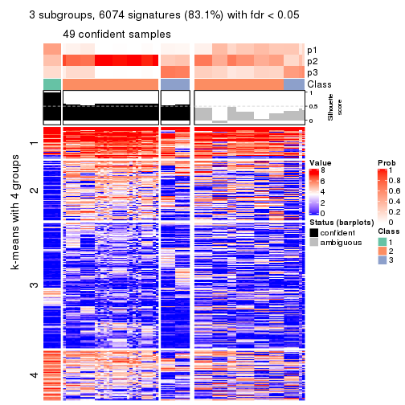
get_signatures(res, k = 4, scale_rows = FALSE)
get_signatures(res, k = 5, scale_rows = FALSE)
get_signatures(res, k = 6, scale_rows = FALSE)
Compare the overlap of signatures from different k:
compare_signatures(res)
get_signature() returns a data frame invisibly. TO get the list of signatures, the function
call should be assigned to a variable explicitly. In following code, if plot argument is set
to FALSE, no heatmap is plotted while only the differential analysis is performed.
# code only for demonstration
tb = get_signature(res, k = ..., plot = FALSE)
An example of the output of tb is:
#> which_row fdr mean_1 mean_2 scaled_mean_1 scaled_mean_2 km
#> 1 38 0.042760348 8.373488 9.131774 -0.5533452 0.5164555 1
#> 2 40 0.018707592 7.106213 8.469186 -0.6173731 0.5762149 1
#> 3 55 0.019134737 10.221463 11.207825 -0.6159697 0.5749050 1
#> 4 59 0.006059896 5.921854 7.869574 -0.6899429 0.6439467 1
#> 5 60 0.018055526 8.928898 10.211722 -0.6204761 0.5791110 1
#> 6 98 0.009384629 15.714769 14.887706 0.6635654 -0.6193277 2
...
The columns in tb are:
which_row: row indices corresponding to the input matrix.fdr: FDR for the differential test. mean_x: The mean value in group x.scaled_mean_x: The mean value in group x after rows are scaled.km: Row groups if k-means clustering is applied to rows.UMAP plot which shows how samples are separated.
dimension_reduction(res, k = 2, method = "UMAP")
dimension_reduction(res, k = 3, method = "UMAP")
dimension_reduction(res, k = 4, method = "UMAP")
dimension_reduction(res, k = 5, method = "UMAP")
dimension_reduction(res, k = 6, method = "UMAP")
Following heatmap shows how subgroups are split when increasing k:
collect_classes(res)
If matrix rows can be associated to genes, consider to use functional_enrichment(res,
...) to perform function enrichment for the signature genes. See this vignette for more detailed explanations.
The object with results only for a single top-value method and a single partition method can be extracted as:
res = res_list["MAD", "skmeans"]
# you can also extract it by
# res = res_list["MAD:skmeans"]
A summary of res and all the functions that can be applied to it:
res
#> A 'ConsensusPartition' object with k = 2, 3, 4, 5, 6.
#> On a matrix with 7309 rows and 86 columns.
#> Top rows (731, 1462, 2192, 2923, 3654) are extracted by 'MAD' method.
#> Subgroups are detected by 'skmeans' method.
#> Performed in total 1250 partitions by row resampling.
#> Best k for subgroups seems to be 2.
#>
#> Following methods can be applied to this 'ConsensusPartition' object:
#> [1] "cola_report" "collect_classes" "collect_plots"
#> [4] "collect_stats" "colnames" "compare_signatures"
#> [7] "consensus_heatmap" "dimension_reduction" "functional_enrichment"
#> [10] "get_anno_col" "get_anno" "get_classes"
#> [13] "get_consensus" "get_matrix" "get_membership"
#> [16] "get_param" "get_signatures" "get_stats"
#> [19] "is_best_k" "is_stable_k" "membership_heatmap"
#> [22] "ncol" "nrow" "plot_ecdf"
#> [25] "rownames" "select_partition_number" "show"
#> [28] "suggest_best_k" "test_to_known_factors"
collect_plots() function collects all the plots made from res for all k (number of partitions)
into one single page to provide an easy and fast comparison between different k.
collect_plots(res)
The plots are:
k and the heatmap of
predicted classes for each k.k.k.k.All the plots in panels can be made by individual functions and they are plotted later in this section.
select_partition_number() produces several plots showing different
statistics for choosing “optimized” k. There are following statistics:
k;k, the area increased is defined as \(A_k - A_{k-1}\).The detailed explanations of these statistics can be found in the cola vignette.
Generally speaking, lower PAC score, higher mean silhouette score or higher
concordance corresponds to better partition. Rand index and Jaccard index
measure how similar the current partition is compared to partition with k-1.
If they are too similar, we won't accept k is better than k-1.
select_partition_number(res)
The numeric values for all these statistics can be obtained by get_stats().
get_stats(res)
#> k 1-PAC mean_silhouette concordance area_increased Rand Jaccard
#> 2 2 1.000 0.986 0.992 0.5054 0.494 0.494
#> 3 3 0.696 0.897 0.926 0.2974 0.819 0.645
#> 4 4 0.667 0.844 0.859 0.1338 0.898 0.706
#> 5 5 0.748 0.762 0.780 0.0590 1.000 1.000
#> 6 6 0.822 0.660 0.742 0.0386 0.903 0.627
suggest_best_k() suggests the best \(k\) based on these statistics. The rules are as follows:
suggest_best_k(res)
#> [1] 2
Following shows the table of the partitions (You need to click the show/hide
code output link to see it). The membership matrix (columns with name p*)
is inferred by
clue::cl_consensus()
function with the SE method. Basically the value in the membership matrix
represents the probability to belong to a certain group. The finall class
label for an item is determined with the group with highest probability it
belongs to.
In get_classes() function, the entropy is calculated from the membership
matrix and the silhouette score is calculated from the consensus matrix.
cbind(get_classes(res, k = 2), get_membership(res, k = 2))
#> class entropy silhouette p1 p2
#> SRR2240643 1 0.0000 0.987 1.000 0.000
#> SRR2240644 1 0.0000 0.987 1.000 0.000
#> SRR2240645 1 0.0000 0.987 1.000 0.000
#> SRR2240646 1 0.0000 0.987 1.000 0.000
#> SRR2240647 1 0.0000 0.987 1.000 0.000
#> SRR2240638 1 0.4022 0.925 0.920 0.080
#> SRR2240639 1 0.4022 0.925 0.920 0.080
#> SRR2240640 1 0.4022 0.925 0.920 0.080
#> SRR2240641 1 0.4022 0.925 0.920 0.080
#> SRR2240642 1 0.4022 0.925 0.920 0.080
#> SRR2240633 1 0.0000 0.987 1.000 0.000
#> SRR2240634 1 0.0000 0.987 1.000 0.000
#> SRR2240635 1 0.0000 0.987 1.000 0.000
#> SRR2240636 1 0.0000 0.987 1.000 0.000
#> SRR2240637 1 0.0000 0.987 1.000 0.000
#> SRR2240624 2 0.2043 0.968 0.032 0.968
#> SRR2240625 2 0.2043 0.968 0.032 0.968
#> SRR2240626 2 0.2043 0.968 0.032 0.968
#> SRR2240627 1 0.1843 0.971 0.972 0.028
#> SRR2240628 1 0.1843 0.971 0.972 0.028
#> SRR2240629 1 0.1843 0.971 0.972 0.028
#> SRR2240630 1 0.1843 0.971 0.972 0.028
#> SRR2240631 1 0.1843 0.971 0.972 0.028
#> SRR2240632 1 0.1843 0.971 0.972 0.028
#> SRR2240613 1 0.0000 0.987 1.000 0.000
#> SRR2240614 1 0.0000 0.987 1.000 0.000
#> SRR2240615 1 0.0000 0.987 1.000 0.000
#> SRR2240616 1 0.0000 0.987 1.000 0.000
#> SRR2240617 1 0.0000 0.987 1.000 0.000
#> SRR2240618 1 0.0000 0.987 1.000 0.000
#> SRR2240619 1 0.0000 0.987 1.000 0.000
#> SRR2240620 1 0.0000 0.987 1.000 0.000
#> SRR2240621 1 0.0000 0.987 1.000 0.000
#> SRR2240622 1 0.0000 0.987 1.000 0.000
#> SRR2240623 1 0.0000 0.987 1.000 0.000
#> SRR2240609 2 0.0000 0.997 0.000 1.000
#> SRR2240610 2 0.0000 0.997 0.000 1.000
#> SRR2240611 2 0.0000 0.997 0.000 1.000
#> SRR2240612 2 0.0000 0.997 0.000 1.000
#> SRR2240594 2 0.0000 0.997 0.000 1.000
#> SRR2240595 2 0.0000 0.997 0.000 1.000
#> SRR2240596 2 0.0000 0.997 0.000 1.000
#> SRR2240597 2 0.0000 0.997 0.000 1.000
#> SRR2240598 2 0.0000 0.997 0.000 1.000
#> SRR2240604 2 0.0000 0.997 0.000 1.000
#> SRR2240605 2 0.0000 0.997 0.000 1.000
#> SRR2240606 2 0.0000 0.997 0.000 1.000
#> SRR2240607 2 0.0000 0.997 0.000 1.000
#> SRR2240608 2 0.0000 0.997 0.000 1.000
#> SRR2240599 1 0.0000 0.987 1.000 0.000
#> SRR2240600 1 0.0000 0.987 1.000 0.000
#> SRR2240601 1 0.0000 0.987 1.000 0.000
#> SRR2240602 1 0.0000 0.987 1.000 0.000
#> SRR2240603 1 0.0000 0.987 1.000 0.000
#> SRR2240584 2 0.0000 0.997 0.000 1.000
#> SRR2240585 2 0.0000 0.997 0.000 1.000
#> SRR2240586 2 0.0000 0.997 0.000 1.000
#> SRR2240587 2 0.0000 0.997 0.000 1.000
#> SRR2240588 2 0.0000 0.997 0.000 1.000
#> SRR2240589 1 0.0000 0.987 1.000 0.000
#> SRR2240590 1 0.0000 0.987 1.000 0.000
#> SRR2240591 1 0.0000 0.987 1.000 0.000
#> SRR2240592 1 0.0000 0.987 1.000 0.000
#> SRR2240593 1 0.0000 0.987 1.000 0.000
#> SRR2240578 2 0.0376 0.994 0.004 0.996
#> SRR2240579 2 0.0376 0.994 0.004 0.996
#> SRR2240580 2 0.0376 0.994 0.004 0.996
#> SRR2240581 2 0.0376 0.994 0.004 0.996
#> SRR2240582 2 0.0376 0.994 0.004 0.996
#> SRR2240583 2 0.0376 0.994 0.004 0.996
#> SRR1825969 2 0.0000 0.997 0.000 1.000
#> SRR1825968 2 0.0000 0.997 0.000 1.000
#> SRR1825970 1 0.0000 0.987 1.000 0.000
#> SRR1825966 2 0.0000 0.997 0.000 1.000
#> SRR1825967 2 0.0000 0.997 0.000 1.000
#> SRR1825965 2 0.0000 0.997 0.000 1.000
#> SRR1825962 2 0.0000 0.997 0.000 1.000
#> SRR1825963 2 0.0000 0.997 0.000 1.000
#> SRR1825964 2 0.0000 0.997 0.000 1.000
#> SRR1825961 1 0.0000 0.987 1.000 0.000
#> SRR1825960 2 0.0000 0.997 0.000 1.000
#> SRR1825958 2 0.0000 0.997 0.000 1.000
#> SRR1825959 2 0.0000 0.997 0.000 1.000
#> SRR1825956 2 0.0000 0.997 0.000 1.000
#> SRR1825957 2 0.0000 0.997 0.000 1.000
#> SRR1825955 2 0.0000 0.997 0.000 1.000
cbind(get_classes(res, k = 3), get_membership(res, k = 3))
#> class entropy silhouette p1 p2 p3
#> SRR2240643 3 0.2261 0.894 0.068 0.000 0.932
#> SRR2240644 3 0.2261 0.894 0.068 0.000 0.932
#> SRR2240645 3 0.2261 0.894 0.068 0.000 0.932
#> SRR2240646 3 0.2261 0.894 0.068 0.000 0.932
#> SRR2240647 3 0.2261 0.894 0.068 0.000 0.932
#> SRR2240638 3 0.3295 0.879 0.096 0.008 0.896
#> SRR2240639 3 0.3295 0.879 0.096 0.008 0.896
#> SRR2240640 3 0.3295 0.879 0.096 0.008 0.896
#> SRR2240641 3 0.3295 0.879 0.096 0.008 0.896
#> SRR2240642 3 0.3295 0.879 0.096 0.008 0.896
#> SRR2240633 3 0.5254 0.709 0.264 0.000 0.736
#> SRR2240634 3 0.5254 0.709 0.264 0.000 0.736
#> SRR2240635 3 0.5254 0.709 0.264 0.000 0.736
#> SRR2240636 3 0.5254 0.709 0.264 0.000 0.736
#> SRR2240637 3 0.5254 0.709 0.264 0.000 0.736
#> SRR2240624 3 0.1860 0.865 0.000 0.052 0.948
#> SRR2240625 3 0.1860 0.865 0.000 0.052 0.948
#> SRR2240626 3 0.1860 0.865 0.000 0.052 0.948
#> SRR2240627 3 0.2229 0.890 0.044 0.012 0.944
#> SRR2240628 3 0.2229 0.890 0.044 0.012 0.944
#> SRR2240629 3 0.2229 0.890 0.044 0.012 0.944
#> SRR2240630 3 0.2229 0.890 0.044 0.012 0.944
#> SRR2240631 3 0.2229 0.890 0.044 0.012 0.944
#> SRR2240632 3 0.2229 0.890 0.044 0.012 0.944
#> SRR2240613 1 0.2066 0.940 0.940 0.000 0.060
#> SRR2240614 1 0.2066 0.940 0.940 0.000 0.060
#> SRR2240615 1 0.2066 0.940 0.940 0.000 0.060
#> SRR2240616 1 0.2066 0.940 0.940 0.000 0.060
#> SRR2240617 1 0.2066 0.940 0.940 0.000 0.060
#> SRR2240618 1 0.3551 0.901 0.868 0.000 0.132
#> SRR2240619 1 0.3551 0.901 0.868 0.000 0.132
#> SRR2240620 1 0.3551 0.901 0.868 0.000 0.132
#> SRR2240621 1 0.3551 0.901 0.868 0.000 0.132
#> SRR2240622 1 0.3551 0.901 0.868 0.000 0.132
#> SRR2240623 1 0.3551 0.901 0.868 0.000 0.132
#> SRR2240609 2 0.0000 0.940 0.000 1.000 0.000
#> SRR2240610 2 0.0000 0.940 0.000 1.000 0.000
#> SRR2240611 2 0.0000 0.940 0.000 1.000 0.000
#> SRR2240612 2 0.0000 0.940 0.000 1.000 0.000
#> SRR2240594 2 0.4805 0.834 0.012 0.812 0.176
#> SRR2240595 2 0.4805 0.834 0.012 0.812 0.176
#> SRR2240596 2 0.4805 0.834 0.012 0.812 0.176
#> SRR2240597 2 0.4805 0.834 0.012 0.812 0.176
#> SRR2240598 2 0.4805 0.834 0.012 0.812 0.176
#> SRR2240604 2 0.0000 0.940 0.000 1.000 0.000
#> SRR2240605 2 0.0000 0.940 0.000 1.000 0.000
#> SRR2240606 2 0.0000 0.940 0.000 1.000 0.000
#> SRR2240607 2 0.0000 0.940 0.000 1.000 0.000
#> SRR2240608 2 0.0000 0.940 0.000 1.000 0.000
#> SRR2240599 1 0.0237 0.941 0.996 0.000 0.004
#> SRR2240600 1 0.0237 0.941 0.996 0.000 0.004
#> SRR2240601 1 0.0237 0.941 0.996 0.000 0.004
#> SRR2240602 1 0.0237 0.941 0.996 0.000 0.004
#> SRR2240603 1 0.0237 0.941 0.996 0.000 0.004
#> SRR2240584 2 0.3528 0.904 0.016 0.892 0.092
#> SRR2240585 2 0.3528 0.904 0.016 0.892 0.092
#> SRR2240586 2 0.3528 0.904 0.016 0.892 0.092
#> SRR2240587 2 0.3528 0.904 0.016 0.892 0.092
#> SRR2240588 2 0.3528 0.904 0.016 0.892 0.092
#> SRR2240589 1 0.0747 0.937 0.984 0.000 0.016
#> SRR2240590 1 0.0747 0.937 0.984 0.000 0.016
#> SRR2240591 1 0.0747 0.937 0.984 0.000 0.016
#> SRR2240592 1 0.0747 0.937 0.984 0.000 0.016
#> SRR2240593 1 0.0747 0.937 0.984 0.000 0.016
#> SRR2240578 2 0.4683 0.857 0.140 0.836 0.024
#> SRR2240579 2 0.4683 0.857 0.140 0.836 0.024
#> SRR2240580 2 0.4683 0.857 0.140 0.836 0.024
#> SRR2240581 2 0.4683 0.857 0.140 0.836 0.024
#> SRR2240582 2 0.4683 0.857 0.140 0.836 0.024
#> SRR2240583 2 0.4683 0.857 0.140 0.836 0.024
#> SRR1825969 2 0.0000 0.940 0.000 1.000 0.000
#> SRR1825968 2 0.0000 0.940 0.000 1.000 0.000
#> SRR1825970 1 0.0424 0.943 0.992 0.000 0.008
#> SRR1825966 2 0.0000 0.940 0.000 1.000 0.000
#> SRR1825967 2 0.0000 0.940 0.000 1.000 0.000
#> SRR1825965 2 0.1636 0.930 0.016 0.964 0.020
#> SRR1825962 2 0.0000 0.940 0.000 1.000 0.000
#> SRR1825963 2 0.0000 0.940 0.000 1.000 0.000
#> SRR1825964 2 0.0000 0.940 0.000 1.000 0.000
#> SRR1825961 1 0.1163 0.944 0.972 0.000 0.028
#> SRR1825960 2 0.0000 0.940 0.000 1.000 0.000
#> SRR1825958 2 0.0000 0.940 0.000 1.000 0.000
#> SRR1825959 2 0.0000 0.940 0.000 1.000 0.000
#> SRR1825956 2 0.0000 0.940 0.000 1.000 0.000
#> SRR1825957 2 0.0000 0.940 0.000 1.000 0.000
#> SRR1825955 2 0.0000 0.940 0.000 1.000 0.000
cbind(get_classes(res, k = 4), get_membership(res, k = 4))
#> class entropy silhouette p1 p2 p3 p4
#> SRR2240643 3 0.3367 0.810 0.028 0.000 0.864 0.108
#> SRR2240644 3 0.3367 0.810 0.028 0.000 0.864 0.108
#> SRR2240645 3 0.3367 0.810 0.028 0.000 0.864 0.108
#> SRR2240646 3 0.3367 0.810 0.028 0.000 0.864 0.108
#> SRR2240647 3 0.3367 0.810 0.028 0.000 0.864 0.108
#> SRR2240638 3 0.5619 0.693 0.040 0.000 0.640 0.320
#> SRR2240639 3 0.5619 0.693 0.040 0.000 0.640 0.320
#> SRR2240640 3 0.5619 0.693 0.040 0.000 0.640 0.320
#> SRR2240641 3 0.5619 0.693 0.040 0.000 0.640 0.320
#> SRR2240642 3 0.5619 0.693 0.040 0.000 0.640 0.320
#> SRR2240633 3 0.4284 0.701 0.200 0.000 0.780 0.020
#> SRR2240634 3 0.4284 0.701 0.200 0.000 0.780 0.020
#> SRR2240635 3 0.4284 0.701 0.200 0.000 0.780 0.020
#> SRR2240636 3 0.4284 0.701 0.200 0.000 0.780 0.020
#> SRR2240637 3 0.4284 0.701 0.200 0.000 0.780 0.020
#> SRR2240624 3 0.4910 0.732 0.000 0.020 0.704 0.276
#> SRR2240625 3 0.4910 0.732 0.000 0.020 0.704 0.276
#> SRR2240626 3 0.4910 0.732 0.000 0.020 0.704 0.276
#> SRR2240627 3 0.1471 0.807 0.024 0.004 0.960 0.012
#> SRR2240628 3 0.1471 0.807 0.024 0.004 0.960 0.012
#> SRR2240629 3 0.1471 0.807 0.024 0.004 0.960 0.012
#> SRR2240630 3 0.1471 0.807 0.024 0.004 0.960 0.012
#> SRR2240631 3 0.1471 0.807 0.024 0.004 0.960 0.012
#> SRR2240632 3 0.1471 0.807 0.024 0.004 0.960 0.012
#> SRR2240613 1 0.1637 0.894 0.940 0.000 0.060 0.000
#> SRR2240614 1 0.1637 0.894 0.940 0.000 0.060 0.000
#> SRR2240615 1 0.1637 0.894 0.940 0.000 0.060 0.000
#> SRR2240616 1 0.1637 0.894 0.940 0.000 0.060 0.000
#> SRR2240617 1 0.1637 0.894 0.940 0.000 0.060 0.000
#> SRR2240618 1 0.4568 0.841 0.800 0.000 0.124 0.076
#> SRR2240619 1 0.4568 0.841 0.800 0.000 0.124 0.076
#> SRR2240620 1 0.4568 0.841 0.800 0.000 0.124 0.076
#> SRR2240621 1 0.4568 0.841 0.800 0.000 0.124 0.076
#> SRR2240622 1 0.4568 0.841 0.800 0.000 0.124 0.076
#> SRR2240623 1 0.4568 0.841 0.800 0.000 0.124 0.076
#> SRR2240609 2 0.0592 0.978 0.000 0.984 0.000 0.016
#> SRR2240610 2 0.0592 0.978 0.000 0.984 0.000 0.016
#> SRR2240611 2 0.0592 0.978 0.000 0.984 0.000 0.016
#> SRR2240612 2 0.0592 0.978 0.000 0.984 0.000 0.016
#> SRR2240594 4 0.4018 0.766 0.004 0.168 0.016 0.812
#> SRR2240595 4 0.4018 0.766 0.004 0.168 0.016 0.812
#> SRR2240596 4 0.4018 0.766 0.004 0.168 0.016 0.812
#> SRR2240597 4 0.4018 0.766 0.004 0.168 0.016 0.812
#> SRR2240598 4 0.4018 0.766 0.004 0.168 0.016 0.812
#> SRR2240604 2 0.0336 0.988 0.000 0.992 0.000 0.008
#> SRR2240605 2 0.0336 0.988 0.000 0.992 0.000 0.008
#> SRR2240606 2 0.0336 0.988 0.000 0.992 0.000 0.008
#> SRR2240607 2 0.0336 0.988 0.000 0.992 0.000 0.008
#> SRR2240608 2 0.0336 0.988 0.000 0.992 0.000 0.008
#> SRR2240599 1 0.2081 0.873 0.916 0.000 0.000 0.084
#> SRR2240600 1 0.2081 0.873 0.916 0.000 0.000 0.084
#> SRR2240601 1 0.2081 0.873 0.916 0.000 0.000 0.084
#> SRR2240602 1 0.2081 0.873 0.916 0.000 0.000 0.084
#> SRR2240603 1 0.2081 0.873 0.916 0.000 0.000 0.084
#> SRR2240584 4 0.4088 0.793 0.000 0.232 0.004 0.764
#> SRR2240585 4 0.4088 0.793 0.000 0.232 0.004 0.764
#> SRR2240586 4 0.4088 0.793 0.000 0.232 0.004 0.764
#> SRR2240587 4 0.4088 0.793 0.000 0.232 0.004 0.764
#> SRR2240588 4 0.4088 0.793 0.000 0.232 0.004 0.764
#> SRR2240589 1 0.2775 0.880 0.896 0.000 0.020 0.084
#> SRR2240590 1 0.2775 0.880 0.896 0.000 0.020 0.084
#> SRR2240591 1 0.2775 0.880 0.896 0.000 0.020 0.084
#> SRR2240592 1 0.2775 0.880 0.896 0.000 0.020 0.084
#> SRR2240593 1 0.2775 0.880 0.896 0.000 0.020 0.084
#> SRR2240578 4 0.6920 0.723 0.132 0.256 0.008 0.604
#> SRR2240579 4 0.6920 0.723 0.132 0.256 0.008 0.604
#> SRR2240580 4 0.6920 0.723 0.132 0.256 0.008 0.604
#> SRR2240581 4 0.6920 0.723 0.132 0.256 0.008 0.604
#> SRR2240582 4 0.6920 0.723 0.132 0.256 0.008 0.604
#> SRR2240583 4 0.6920 0.723 0.132 0.256 0.008 0.604
#> SRR1825969 2 0.0000 0.992 0.000 1.000 0.000 0.000
#> SRR1825968 2 0.0000 0.992 0.000 1.000 0.000 0.000
#> SRR1825970 1 0.0188 0.896 0.996 0.000 0.004 0.000
#> SRR1825966 2 0.0000 0.992 0.000 1.000 0.000 0.000
#> SRR1825967 2 0.0000 0.992 0.000 1.000 0.000 0.000
#> SRR1825965 4 0.5119 0.549 0.004 0.440 0.000 0.556
#> SRR1825962 2 0.0000 0.992 0.000 1.000 0.000 0.000
#> SRR1825963 2 0.0000 0.992 0.000 1.000 0.000 0.000
#> SRR1825964 2 0.0000 0.992 0.000 1.000 0.000 0.000
#> SRR1825961 1 0.0817 0.898 0.976 0.000 0.024 0.000
#> SRR1825960 2 0.0336 0.988 0.000 0.992 0.000 0.008
#> SRR1825958 2 0.0000 0.992 0.000 1.000 0.000 0.000
#> SRR1825959 2 0.0000 0.992 0.000 1.000 0.000 0.000
#> SRR1825956 2 0.0000 0.992 0.000 1.000 0.000 0.000
#> SRR1825957 2 0.0000 0.992 0.000 1.000 0.000 0.000
#> SRR1825955 2 0.0000 0.992 0.000 1.000 0.000 0.000
cbind(get_classes(res, k = 5), get_membership(res, k = 5))
#> class entropy silhouette p1 p2 p3 p4 p5
#> SRR2240643 3 0.1372 0.666 0.004 0.000 0.956 NA 0.024
#> SRR2240644 3 0.1372 0.666 0.004 0.000 0.956 NA 0.024
#> SRR2240645 3 0.1372 0.666 0.004 0.000 0.956 NA 0.024
#> SRR2240646 3 0.1372 0.666 0.004 0.000 0.956 NA 0.024
#> SRR2240647 3 0.1372 0.666 0.004 0.000 0.956 NA 0.024
#> SRR2240638 3 0.5798 0.530 0.080 0.004 0.644 NA 0.020
#> SRR2240639 3 0.5798 0.530 0.080 0.004 0.644 NA 0.020
#> SRR2240640 3 0.5798 0.530 0.080 0.004 0.644 NA 0.020
#> SRR2240641 3 0.5798 0.530 0.080 0.004 0.644 NA 0.020
#> SRR2240642 3 0.5798 0.530 0.080 0.004 0.644 NA 0.020
#> SRR2240633 3 0.6361 0.573 0.004 0.000 0.432 NA 0.140
#> SRR2240634 3 0.6361 0.573 0.004 0.000 0.432 NA 0.140
#> SRR2240635 3 0.6361 0.573 0.004 0.000 0.432 NA 0.140
#> SRR2240636 3 0.6361 0.573 0.004 0.000 0.432 NA 0.140
#> SRR2240637 3 0.6361 0.573 0.004 0.000 0.432 NA 0.140
#> SRR2240624 3 0.5365 0.570 0.116 0.000 0.656 NA 0.000
#> SRR2240625 3 0.5365 0.570 0.116 0.000 0.656 NA 0.000
#> SRR2240626 3 0.5365 0.570 0.116 0.000 0.656 NA 0.000
#> SRR2240627 3 0.4726 0.672 0.000 0.004 0.604 NA 0.016
#> SRR2240628 3 0.4726 0.672 0.000 0.004 0.604 NA 0.016
#> SRR2240629 3 0.4726 0.672 0.000 0.004 0.604 NA 0.016
#> SRR2240630 3 0.4726 0.672 0.000 0.004 0.604 NA 0.016
#> SRR2240631 3 0.4726 0.672 0.000 0.004 0.604 NA 0.016
#> SRR2240632 3 0.4726 0.672 0.000 0.004 0.604 NA 0.016
#> SRR2240613 5 0.2899 0.794 0.004 0.000 0.028 NA 0.872
#> SRR2240614 5 0.2899 0.794 0.004 0.000 0.028 NA 0.872
#> SRR2240615 5 0.2899 0.794 0.004 0.000 0.028 NA 0.872
#> SRR2240616 5 0.2899 0.794 0.004 0.000 0.028 NA 0.872
#> SRR2240617 5 0.2899 0.794 0.004 0.000 0.028 NA 0.872
#> SRR2240618 5 0.5484 0.715 0.020 0.000 0.068 NA 0.660
#> SRR2240619 5 0.5484 0.715 0.020 0.000 0.068 NA 0.660
#> SRR2240620 5 0.5484 0.715 0.020 0.000 0.068 NA 0.660
#> SRR2240621 5 0.5484 0.715 0.020 0.000 0.068 NA 0.660
#> SRR2240622 5 0.5484 0.715 0.020 0.000 0.068 NA 0.660
#> SRR2240623 5 0.5484 0.715 0.020 0.000 0.068 NA 0.660
#> SRR2240609 2 0.1195 0.957 0.028 0.960 0.000 NA 0.000
#> SRR2240610 2 0.1195 0.957 0.028 0.960 0.000 NA 0.000
#> SRR2240611 2 0.1195 0.957 0.028 0.960 0.000 NA 0.000
#> SRR2240612 2 0.1195 0.957 0.028 0.960 0.000 NA 0.000
#> SRR2240594 1 0.6157 0.703 0.576 0.072 0.036 NA 0.000
#> SRR2240595 1 0.6157 0.703 0.576 0.072 0.036 NA 0.000
#> SRR2240596 1 0.6157 0.703 0.576 0.072 0.036 NA 0.000
#> SRR2240597 1 0.6157 0.703 0.576 0.072 0.036 NA 0.000
#> SRR2240598 1 0.6157 0.703 0.576 0.072 0.036 NA 0.000
#> SRR2240604 2 0.0290 0.984 0.008 0.992 0.000 NA 0.000
#> SRR2240605 2 0.0290 0.984 0.008 0.992 0.000 NA 0.000
#> SRR2240606 2 0.0290 0.984 0.008 0.992 0.000 NA 0.000
#> SRR2240607 2 0.0290 0.984 0.008 0.992 0.000 NA 0.000
#> SRR2240608 2 0.0290 0.984 0.008 0.992 0.000 NA 0.000
#> SRR2240599 5 0.3728 0.757 0.164 0.000 0.008 NA 0.804
#> SRR2240600 5 0.3728 0.757 0.164 0.000 0.008 NA 0.804
#> SRR2240601 5 0.3728 0.757 0.164 0.000 0.008 NA 0.804
#> SRR2240602 5 0.3728 0.757 0.164 0.000 0.008 NA 0.804
#> SRR2240603 5 0.3728 0.757 0.164 0.000 0.008 NA 0.804
#> SRR2240584 1 0.5809 0.736 0.644 0.092 0.024 NA 0.000
#> SRR2240585 1 0.5809 0.736 0.644 0.092 0.024 NA 0.000
#> SRR2240586 1 0.5809 0.736 0.644 0.092 0.024 NA 0.000
#> SRR2240587 1 0.5809 0.736 0.644 0.092 0.024 NA 0.000
#> SRR2240588 1 0.5809 0.736 0.644 0.092 0.024 NA 0.000
#> SRR2240589 5 0.4163 0.791 0.056 0.000 0.040 NA 0.816
#> SRR2240590 5 0.4163 0.791 0.056 0.000 0.040 NA 0.816
#> SRR2240591 5 0.4163 0.791 0.056 0.000 0.040 NA 0.816
#> SRR2240592 5 0.4163 0.791 0.056 0.000 0.040 NA 0.816
#> SRR2240593 5 0.4163 0.791 0.056 0.000 0.040 NA 0.816
#> SRR2240578 1 0.4025 0.652 0.796 0.140 0.004 NA 0.060
#> SRR2240579 1 0.4025 0.652 0.796 0.140 0.004 NA 0.060
#> SRR2240580 1 0.4025 0.652 0.796 0.140 0.004 NA 0.060
#> SRR2240581 1 0.4025 0.652 0.796 0.140 0.004 NA 0.060
#> SRR2240582 1 0.4025 0.652 0.796 0.140 0.004 NA 0.060
#> SRR2240583 1 0.4025 0.652 0.796 0.140 0.004 NA 0.060
#> SRR1825969 2 0.0000 0.988 0.000 1.000 0.000 NA 0.000
#> SRR1825968 2 0.0000 0.988 0.000 1.000 0.000 NA 0.000
#> SRR1825970 5 0.0324 0.814 0.004 0.000 0.000 NA 0.992
#> SRR1825966 2 0.0000 0.988 0.000 1.000 0.000 NA 0.000
#> SRR1825967 2 0.0000 0.988 0.000 1.000 0.000 NA 0.000
#> SRR1825965 1 0.5015 0.590 0.652 0.296 0.000 NA 0.004
#> SRR1825962 2 0.0000 0.988 0.000 1.000 0.000 NA 0.000
#> SRR1825963 2 0.0000 0.988 0.000 1.000 0.000 NA 0.000
#> SRR1825964 2 0.0000 0.988 0.000 1.000 0.000 NA 0.000
#> SRR1825961 5 0.0833 0.813 0.004 0.000 0.004 NA 0.976
#> SRR1825960 2 0.0290 0.984 0.008 0.992 0.000 NA 0.000
#> SRR1825958 2 0.0000 0.988 0.000 1.000 0.000 NA 0.000
#> SRR1825959 2 0.0000 0.988 0.000 1.000 0.000 NA 0.000
#> SRR1825956 2 0.0000 0.988 0.000 1.000 0.000 NA 0.000
#> SRR1825957 2 0.0000 0.988 0.000 1.000 0.000 NA 0.000
#> SRR1825955 2 0.0000 0.988 0.000 1.000 0.000 NA 0.000
cbind(get_classes(res, k = 6), get_membership(res, k = 6))
#> class entropy silhouette p1 p2 p3 p4 p5 p6
#> SRR2240643 3 0.3352 0.725 0.012 0.000 0.800 0.016 0.172 0.000
#> SRR2240644 3 0.3352 0.725 0.012 0.000 0.800 0.016 0.172 0.000
#> SRR2240645 3 0.3352 0.725 0.012 0.000 0.800 0.016 0.172 0.000
#> SRR2240646 3 0.3352 0.725 0.012 0.000 0.800 0.016 0.172 0.000
#> SRR2240647 3 0.3352 0.725 0.012 0.000 0.800 0.016 0.172 0.000
#> SRR2240638 3 0.3426 0.764 0.104 0.000 0.828 0.008 0.056 0.004
#> SRR2240639 3 0.3426 0.764 0.104 0.000 0.828 0.008 0.056 0.004
#> SRR2240640 3 0.3426 0.764 0.104 0.000 0.828 0.008 0.056 0.004
#> SRR2240641 3 0.3426 0.764 0.104 0.000 0.828 0.008 0.056 0.004
#> SRR2240642 3 0.3426 0.764 0.104 0.000 0.828 0.008 0.056 0.004
#> SRR2240633 5 0.4361 0.756 0.052 0.000 0.076 0.060 0.792 0.020
#> SRR2240634 5 0.4361 0.756 0.052 0.000 0.076 0.060 0.792 0.020
#> SRR2240635 5 0.4361 0.756 0.052 0.000 0.076 0.060 0.792 0.020
#> SRR2240636 5 0.4361 0.756 0.052 0.000 0.076 0.060 0.792 0.020
#> SRR2240637 5 0.4361 0.756 0.052 0.000 0.076 0.060 0.792 0.020
#> SRR2240624 3 0.4543 0.682 0.080 0.000 0.728 0.004 0.176 0.012
#> SRR2240625 3 0.4543 0.682 0.080 0.000 0.728 0.004 0.176 0.012
#> SRR2240626 3 0.4543 0.682 0.080 0.000 0.728 0.004 0.176 0.012
#> SRR2240627 5 0.3089 0.775 0.004 0.000 0.188 0.008 0.800 0.000
#> SRR2240628 5 0.3089 0.775 0.004 0.000 0.188 0.008 0.800 0.000
#> SRR2240629 5 0.3089 0.775 0.004 0.000 0.188 0.008 0.800 0.000
#> SRR2240630 5 0.3089 0.775 0.004 0.000 0.188 0.008 0.800 0.000
#> SRR2240631 5 0.3089 0.775 0.004 0.000 0.188 0.008 0.800 0.000
#> SRR2240632 5 0.3089 0.775 0.004 0.000 0.188 0.008 0.800 0.000
#> SRR2240613 4 0.6083 0.669 0.272 0.000 0.008 0.564 0.120 0.036
#> SRR2240614 4 0.6083 0.669 0.272 0.000 0.008 0.564 0.120 0.036
#> SRR2240615 4 0.6083 0.669 0.272 0.000 0.008 0.564 0.120 0.036
#> SRR2240616 4 0.6083 0.669 0.272 0.000 0.008 0.564 0.120 0.036
#> SRR2240617 4 0.6083 0.669 0.272 0.000 0.008 0.564 0.120 0.036
#> SRR2240618 4 0.2044 0.611 0.004 0.000 0.008 0.908 0.076 0.004
#> SRR2240619 4 0.2044 0.611 0.004 0.000 0.008 0.908 0.076 0.004
#> SRR2240620 4 0.2044 0.611 0.004 0.000 0.008 0.908 0.076 0.004
#> SRR2240621 4 0.2044 0.611 0.004 0.000 0.008 0.908 0.076 0.004
#> SRR2240622 4 0.2044 0.611 0.004 0.000 0.008 0.908 0.076 0.004
#> SRR2240623 4 0.2044 0.611 0.004 0.000 0.008 0.908 0.076 0.004
#> SRR2240609 2 0.1049 0.964 0.032 0.960 0.000 0.000 0.008 0.000
#> SRR2240610 2 0.1049 0.964 0.032 0.960 0.000 0.000 0.008 0.000
#> SRR2240611 2 0.1049 0.964 0.032 0.960 0.000 0.000 0.008 0.000
#> SRR2240612 2 0.1049 0.964 0.032 0.960 0.000 0.000 0.008 0.000
#> SRR2240594 1 0.6662 0.232 0.472 0.036 0.092 0.016 0.016 0.368
#> SRR2240595 1 0.6662 0.232 0.472 0.036 0.092 0.016 0.016 0.368
#> SRR2240596 1 0.6662 0.232 0.472 0.036 0.092 0.016 0.016 0.368
#> SRR2240597 1 0.6662 0.232 0.472 0.036 0.092 0.016 0.016 0.368
#> SRR2240598 1 0.6662 0.232 0.472 0.036 0.092 0.016 0.016 0.368
#> SRR2240604 2 0.0146 0.990 0.000 0.996 0.004 0.000 0.000 0.000
#> SRR2240605 2 0.0146 0.990 0.000 0.996 0.004 0.000 0.000 0.000
#> SRR2240606 2 0.0146 0.990 0.000 0.996 0.004 0.000 0.000 0.000
#> SRR2240607 2 0.0146 0.990 0.000 0.996 0.004 0.000 0.000 0.000
#> SRR2240608 2 0.0146 0.990 0.000 0.996 0.004 0.000 0.000 0.000
#> SRR2240599 1 0.6719 -0.472 0.396 0.000 0.012 0.360 0.024 0.208
#> SRR2240600 1 0.6719 -0.472 0.396 0.000 0.012 0.360 0.024 0.208
#> SRR2240601 1 0.6719 -0.472 0.396 0.000 0.012 0.360 0.024 0.208
#> SRR2240602 1 0.6719 -0.472 0.396 0.000 0.012 0.360 0.024 0.208
#> SRR2240603 1 0.6719 -0.472 0.396 0.000 0.012 0.360 0.024 0.208
#> SRR2240584 1 0.5478 0.168 0.464 0.024 0.064 0.000 0.000 0.448
#> SRR2240585 1 0.5478 0.168 0.464 0.024 0.064 0.000 0.000 0.448
#> SRR2240586 1 0.5478 0.168 0.464 0.024 0.064 0.000 0.000 0.448
#> SRR2240587 1 0.5478 0.168 0.464 0.024 0.064 0.000 0.000 0.448
#> SRR2240588 1 0.5478 0.168 0.464 0.024 0.064 0.000 0.000 0.448
#> SRR2240589 4 0.6153 0.632 0.356 0.000 0.052 0.516 0.020 0.056
#> SRR2240590 4 0.6153 0.632 0.356 0.000 0.052 0.516 0.020 0.056
#> SRR2240591 4 0.6153 0.632 0.356 0.000 0.052 0.516 0.020 0.056
#> SRR2240592 4 0.6153 0.632 0.356 0.000 0.052 0.516 0.020 0.056
#> SRR2240593 4 0.6153 0.632 0.356 0.000 0.052 0.516 0.020 0.056
#> SRR2240578 6 0.0937 0.924 0.000 0.040 0.000 0.000 0.000 0.960
#> SRR2240579 6 0.0937 0.924 0.000 0.040 0.000 0.000 0.000 0.960
#> SRR2240580 6 0.0937 0.924 0.000 0.040 0.000 0.000 0.000 0.960
#> SRR2240581 6 0.0937 0.924 0.000 0.040 0.000 0.000 0.000 0.960
#> SRR2240582 6 0.0937 0.924 0.000 0.040 0.000 0.000 0.000 0.960
#> SRR2240583 6 0.0937 0.924 0.000 0.040 0.000 0.000 0.000 0.960
#> SRR1825969 2 0.0000 0.991 0.000 1.000 0.000 0.000 0.000 0.000
#> SRR1825968 2 0.0000 0.991 0.000 1.000 0.000 0.000 0.000 0.000
#> SRR1825970 4 0.5110 0.649 0.368 0.000 0.008 0.572 0.028 0.024
#> SRR1825966 2 0.0000 0.991 0.000 1.000 0.000 0.000 0.000 0.000
#> SRR1825967 2 0.0000 0.991 0.000 1.000 0.000 0.000 0.000 0.000
#> SRR1825965 6 0.5238 0.453 0.172 0.152 0.012 0.000 0.004 0.660
#> SRR1825962 2 0.0000 0.991 0.000 1.000 0.000 0.000 0.000 0.000
#> SRR1825963 2 0.0000 0.991 0.000 1.000 0.000 0.000 0.000 0.000
#> SRR1825964 2 0.0000 0.991 0.000 1.000 0.000 0.000 0.000 0.000
#> SRR1825961 4 0.5373 0.653 0.352 0.000 0.008 0.568 0.048 0.024
#> SRR1825960 2 0.0000 0.991 0.000 1.000 0.000 0.000 0.000 0.000
#> SRR1825958 2 0.0000 0.991 0.000 1.000 0.000 0.000 0.000 0.000
#> SRR1825959 2 0.0146 0.990 0.000 0.996 0.004 0.000 0.000 0.000
#> SRR1825956 2 0.0000 0.991 0.000 1.000 0.000 0.000 0.000 0.000
#> SRR1825957 2 0.0000 0.991 0.000 1.000 0.000 0.000 0.000 0.000
#> SRR1825955 2 0.0000 0.991 0.000 1.000 0.000 0.000 0.000 0.000
Heatmaps for the consensus matrix. It visualizes the probability of two samples to be in a same group.
consensus_heatmap(res, k = 2)
consensus_heatmap(res, k = 3)
consensus_heatmap(res, k = 4)
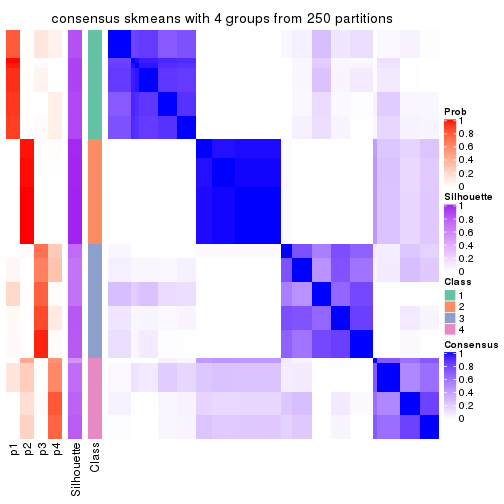
consensus_heatmap(res, k = 5)
consensus_heatmap(res, k = 6)
Heatmaps for the membership of samples in all partitions to see how consistent they are:
membership_heatmap(res, k = 2)
membership_heatmap(res, k = 3)
membership_heatmap(res, k = 4)
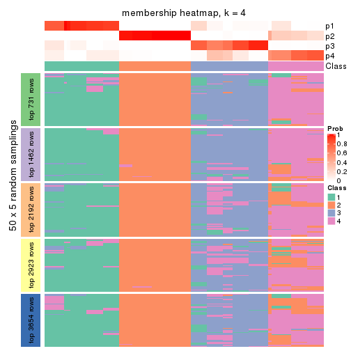
membership_heatmap(res, k = 5)
membership_heatmap(res, k = 6)
As soon as we have had the classes for columns, we can look for signatures which are significantly different between classes which can be candidate marks for certain classes. Following are the heatmaps for signatures.
Signature heatmaps where rows are scaled:
get_signatures(res, k = 2)
get_signatures(res, k = 3)

get_signatures(res, k = 4)
get_signatures(res, k = 5)
get_signatures(res, k = 6)
Signature heatmaps where rows are not scaled:
get_signatures(res, k = 2, scale_rows = FALSE)
get_signatures(res, k = 3, scale_rows = FALSE)
get_signatures(res, k = 4, scale_rows = FALSE)
get_signatures(res, k = 5, scale_rows = FALSE)
get_signatures(res, k = 6, scale_rows = FALSE)
Compare the overlap of signatures from different k:
compare_signatures(res)
get_signature() returns a data frame invisibly. TO get the list of signatures, the function
call should be assigned to a variable explicitly. In following code, if plot argument is set
to FALSE, no heatmap is plotted while only the differential analysis is performed.
# code only for demonstration
tb = get_signature(res, k = ..., plot = FALSE)
An example of the output of tb is:
#> which_row fdr mean_1 mean_2 scaled_mean_1 scaled_mean_2 km
#> 1 38 0.042760348 8.373488 9.131774 -0.5533452 0.5164555 1
#> 2 40 0.018707592 7.106213 8.469186 -0.6173731 0.5762149 1
#> 3 55 0.019134737 10.221463 11.207825 -0.6159697 0.5749050 1
#> 4 59 0.006059896 5.921854 7.869574 -0.6899429 0.6439467 1
#> 5 60 0.018055526 8.928898 10.211722 -0.6204761 0.5791110 1
#> 6 98 0.009384629 15.714769 14.887706 0.6635654 -0.6193277 2
...
The columns in tb are:
which_row: row indices corresponding to the input matrix.fdr: FDR for the differential test. mean_x: The mean value in group x.scaled_mean_x: The mean value in group x after rows are scaled.km: Row groups if k-means clustering is applied to rows.UMAP plot which shows how samples are separated.
dimension_reduction(res, k = 2, method = "UMAP")
dimension_reduction(res, k = 3, method = "UMAP")
dimension_reduction(res, k = 4, method = "UMAP")
dimension_reduction(res, k = 5, method = "UMAP")
dimension_reduction(res, k = 6, method = "UMAP")
Following heatmap shows how subgroups are split when increasing k:
collect_classes(res)
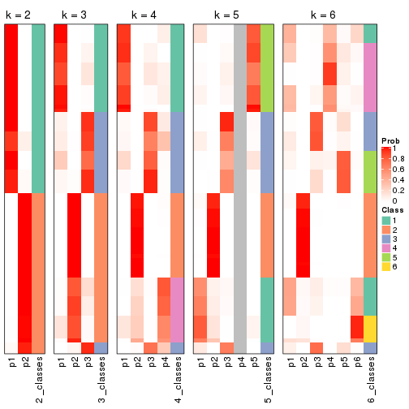
If matrix rows can be associated to genes, consider to use functional_enrichment(res,
...) to perform function enrichment for the signature genes. See this vignette for more detailed explanations.
The object with results only for a single top-value method and a single partition method can be extracted as:
res = res_list["MAD", "pam"]
# you can also extract it by
# res = res_list["MAD:pam"]
A summary of res and all the functions that can be applied to it:
res
#> A 'ConsensusPartition' object with k = 2, 3, 4, 5, 6.
#> On a matrix with 7309 rows and 86 columns.
#> Top rows (731, 1462, 2192, 2923, 3654) are extracted by 'MAD' method.
#> Subgroups are detected by 'pam' method.
#> Performed in total 1250 partitions by row resampling.
#> Best k for subgroups seems to be 3.
#>
#> Following methods can be applied to this 'ConsensusPartition' object:
#> [1] "cola_report" "collect_classes" "collect_plots"
#> [4] "collect_stats" "colnames" "compare_signatures"
#> [7] "consensus_heatmap" "dimension_reduction" "functional_enrichment"
#> [10] "get_anno_col" "get_anno" "get_classes"
#> [13] "get_consensus" "get_matrix" "get_membership"
#> [16] "get_param" "get_signatures" "get_stats"
#> [19] "is_best_k" "is_stable_k" "membership_heatmap"
#> [22] "ncol" "nrow" "plot_ecdf"
#> [25] "rownames" "select_partition_number" "show"
#> [28] "suggest_best_k" "test_to_known_factors"
collect_plots() function collects all the plots made from res for all k (number of partitions)
into one single page to provide an easy and fast comparison between different k.
collect_plots(res)
The plots are:
k and the heatmap of
predicted classes for each k.k.k.k.All the plots in panels can be made by individual functions and they are plotted later in this section.
select_partition_number() produces several plots showing different
statistics for choosing “optimized” k. There are following statistics:
k;k, the area increased is defined as \(A_k - A_{k-1}\).The detailed explanations of these statistics can be found in the cola vignette.
Generally speaking, lower PAC score, higher mean silhouette score or higher
concordance corresponds to better partition. Rand index and Jaccard index
measure how similar the current partition is compared to partition with k-1.
If they are too similar, we won't accept k is better than k-1.
select_partition_number(res)
The numeric values for all these statistics can be obtained by get_stats().
get_stats(res)
#> k 1-PAC mean_silhouette concordance area_increased Rand Jaccard
#> 2 2 0.500 0.837 0.881 0.2355 0.869 0.869
#> 3 3 0.514 0.854 0.903 0.8879 0.707 0.663
#> 4 4 0.540 0.703 0.832 0.2583 0.833 0.709
#> 5 5 0.599 0.772 0.806 0.1285 0.882 0.717
#> 6 6 0.786 0.795 0.833 0.0883 0.950 0.846
suggest_best_k() suggests the best \(k\) based on these statistics. The rules are as follows:
suggest_best_k(res)
#> [1] 3
Following shows the table of the partitions (You need to click the show/hide
code output link to see it). The membership matrix (columns with name p*)
is inferred by
clue::cl_consensus()
function with the SE method. Basically the value in the membership matrix
represents the probability to belong to a certain group. The finall class
label for an item is determined with the group with highest probability it
belongs to.
In get_classes() function, the entropy is calculated from the membership
matrix and the silhouette score is calculated from the consensus matrix.
cbind(get_classes(res, k = 2), get_membership(res, k = 2))
#> class entropy silhouette p1 p2
#> SRR2240643 2 0.0672 0.814 0.008 0.992
#> SRR2240644 2 0.0672 0.814 0.008 0.992
#> SRR2240645 2 0.0672 0.814 0.008 0.992
#> SRR2240646 2 0.0672 0.814 0.008 0.992
#> SRR2240647 2 0.0672 0.814 0.008 0.992
#> SRR2240638 2 0.0000 0.817 0.000 1.000
#> SRR2240639 2 0.0376 0.819 0.004 0.996
#> SRR2240640 2 0.0376 0.816 0.004 0.996
#> SRR2240641 2 0.0376 0.816 0.004 0.996
#> SRR2240642 2 0.0376 0.816 0.004 0.996
#> SRR2240633 2 0.0672 0.814 0.008 0.992
#> SRR2240634 2 0.0672 0.814 0.008 0.992
#> SRR2240635 2 0.0672 0.814 0.008 0.992
#> SRR2240636 2 0.0672 0.814 0.008 0.992
#> SRR2240637 2 0.0672 0.814 0.008 0.992
#> SRR2240624 2 0.8144 0.853 0.252 0.748
#> SRR2240625 2 0.8144 0.853 0.252 0.748
#> SRR2240626 2 0.8144 0.853 0.252 0.748
#> SRR2240627 2 0.7299 0.858 0.204 0.796
#> SRR2240628 2 0.7299 0.858 0.204 0.796
#> SRR2240629 2 0.7299 0.858 0.204 0.796
#> SRR2240630 2 0.7299 0.858 0.204 0.796
#> SRR2240631 2 0.7299 0.858 0.204 0.796
#> SRR2240632 2 0.7299 0.858 0.204 0.796
#> SRR2240613 2 0.1633 0.800 0.024 0.976
#> SRR2240614 2 0.1633 0.800 0.024 0.976
#> SRR2240615 2 0.0938 0.811 0.012 0.988
#> SRR2240616 2 0.0938 0.811 0.012 0.988
#> SRR2240617 2 0.1184 0.808 0.016 0.984
#> SRR2240618 1 0.8144 1.000 0.748 0.252
#> SRR2240619 1 0.8144 1.000 0.748 0.252
#> SRR2240620 1 0.8144 1.000 0.748 0.252
#> SRR2240621 1 0.8144 1.000 0.748 0.252
#> SRR2240622 1 0.8144 1.000 0.748 0.252
#> SRR2240623 1 0.8144 1.000 0.748 0.252
#> SRR2240609 2 0.8144 0.853 0.252 0.748
#> SRR2240610 2 0.8144 0.853 0.252 0.748
#> SRR2240611 2 0.8144 0.853 0.252 0.748
#> SRR2240612 2 0.8144 0.853 0.252 0.748
#> SRR2240594 2 0.7674 0.857 0.224 0.776
#> SRR2240595 2 0.7528 0.858 0.216 0.784
#> SRR2240596 2 0.7602 0.857 0.220 0.780
#> SRR2240597 2 0.7602 0.857 0.220 0.780
#> SRR2240598 2 0.7674 0.857 0.224 0.776
#> SRR2240604 2 0.8144 0.853 0.252 0.748
#> SRR2240605 2 0.8144 0.853 0.252 0.748
#> SRR2240606 2 0.8144 0.853 0.252 0.748
#> SRR2240607 2 0.8144 0.853 0.252 0.748
#> SRR2240608 2 0.8144 0.853 0.252 0.748
#> SRR2240599 2 0.0672 0.814 0.008 0.992
#> SRR2240600 2 0.0672 0.814 0.008 0.992
#> SRR2240601 2 0.0672 0.814 0.008 0.992
#> SRR2240602 2 0.0672 0.814 0.008 0.992
#> SRR2240603 2 0.0672 0.814 0.008 0.992
#> SRR2240584 2 0.8144 0.853 0.252 0.748
#> SRR2240585 2 0.8144 0.853 0.252 0.748
#> SRR2240586 2 0.8144 0.853 0.252 0.748
#> SRR2240587 2 0.8144 0.853 0.252 0.748
#> SRR2240588 2 0.8144 0.853 0.252 0.748
#> SRR2240589 2 0.0938 0.811 0.012 0.988
#> SRR2240590 2 0.0938 0.811 0.012 0.988
#> SRR2240591 2 0.0938 0.811 0.012 0.988
#> SRR2240592 2 0.0938 0.811 0.012 0.988
#> SRR2240593 2 0.0938 0.811 0.012 0.988
#> SRR2240578 2 0.4298 0.842 0.088 0.912
#> SRR2240579 2 0.4298 0.842 0.088 0.912
#> SRR2240580 2 0.4022 0.841 0.080 0.920
#> SRR2240581 2 0.4298 0.842 0.088 0.912
#> SRR2240582 2 0.4298 0.842 0.088 0.912
#> SRR2240583 2 0.4022 0.841 0.080 0.920
#> SRR1825969 2 0.8144 0.853 0.252 0.748
#> SRR1825968 2 0.8144 0.853 0.252 0.748
#> SRR1825970 2 0.0672 0.814 0.008 0.992
#> SRR1825966 2 0.8144 0.853 0.252 0.748
#> SRR1825967 2 0.8144 0.853 0.252 0.748
#> SRR1825965 2 0.7815 0.856 0.232 0.768
#> SRR1825962 2 0.8144 0.853 0.252 0.748
#> SRR1825963 2 0.8144 0.853 0.252 0.748
#> SRR1825964 2 0.8144 0.853 0.252 0.748
#> SRR1825961 2 0.9580 -0.137 0.380 0.620
#> SRR1825960 2 0.8144 0.853 0.252 0.748
#> SRR1825958 2 0.8144 0.853 0.252 0.748
#> SRR1825959 2 0.8144 0.853 0.252 0.748
#> SRR1825956 2 0.8144 0.853 0.252 0.748
#> SRR1825957 2 0.8144 0.853 0.252 0.748
#> SRR1825955 2 0.8144 0.853 0.252 0.748
cbind(get_classes(res, k = 3), get_membership(res, k = 3))
#> class entropy silhouette p1 p2 p3
#> SRR2240643 2 0.5420 0.779 0.008 0.752 0.240
#> SRR2240644 2 0.5420 0.779 0.008 0.752 0.240
#> SRR2240645 2 0.5420 0.779 0.008 0.752 0.240
#> SRR2240646 2 0.5420 0.779 0.008 0.752 0.240
#> SRR2240647 2 0.5420 0.779 0.008 0.752 0.240
#> SRR2240638 2 0.4110 0.847 0.004 0.844 0.152
#> SRR2240639 2 0.4110 0.847 0.004 0.844 0.152
#> SRR2240640 2 0.4233 0.842 0.004 0.836 0.160
#> SRR2240641 2 0.4351 0.838 0.004 0.828 0.168
#> SRR2240642 2 0.4293 0.840 0.004 0.832 0.164
#> SRR2240633 2 0.4834 0.814 0.004 0.792 0.204
#> SRR2240634 2 0.4834 0.814 0.004 0.792 0.204
#> SRR2240635 2 0.4834 0.814 0.004 0.792 0.204
#> SRR2240636 2 0.4834 0.814 0.004 0.792 0.204
#> SRR2240637 2 0.4784 0.816 0.004 0.796 0.200
#> SRR2240624 2 0.1129 0.907 0.020 0.976 0.004
#> SRR2240625 2 0.1315 0.906 0.020 0.972 0.008
#> SRR2240626 2 0.1774 0.903 0.024 0.960 0.016
#> SRR2240627 2 0.5894 0.777 0.028 0.752 0.220
#> SRR2240628 2 0.5894 0.777 0.028 0.752 0.220
#> SRR2240629 2 0.5894 0.777 0.028 0.752 0.220
#> SRR2240630 2 0.5894 0.777 0.028 0.752 0.220
#> SRR2240631 2 0.5894 0.777 0.028 0.752 0.220
#> SRR2240632 2 0.5894 0.777 0.028 0.752 0.220
#> SRR2240613 3 0.0848 0.706 0.008 0.008 0.984
#> SRR2240614 3 0.0848 0.706 0.008 0.008 0.984
#> SRR2240615 3 0.0848 0.706 0.008 0.008 0.984
#> SRR2240616 3 0.0848 0.706 0.008 0.008 0.984
#> SRR2240617 3 0.0848 0.706 0.008 0.008 0.984
#> SRR2240618 1 0.1031 1.000 0.976 0.000 0.024
#> SRR2240619 1 0.1031 1.000 0.976 0.000 0.024
#> SRR2240620 1 0.1031 1.000 0.976 0.000 0.024
#> SRR2240621 1 0.1031 1.000 0.976 0.000 0.024
#> SRR2240622 1 0.1031 1.000 0.976 0.000 0.024
#> SRR2240623 1 0.1031 1.000 0.976 0.000 0.024
#> SRR2240609 2 0.0000 0.910 0.000 1.000 0.000
#> SRR2240610 2 0.0000 0.910 0.000 1.000 0.000
#> SRR2240611 2 0.0000 0.910 0.000 1.000 0.000
#> SRR2240612 2 0.0000 0.910 0.000 1.000 0.000
#> SRR2240594 2 0.0747 0.907 0.000 0.984 0.016
#> SRR2240595 2 0.0747 0.907 0.000 0.984 0.016
#> SRR2240596 2 0.0747 0.907 0.000 0.984 0.016
#> SRR2240597 2 0.0747 0.907 0.000 0.984 0.016
#> SRR2240598 2 0.0747 0.907 0.000 0.984 0.016
#> SRR2240604 2 0.0000 0.910 0.000 1.000 0.000
#> SRR2240605 2 0.0000 0.910 0.000 1.000 0.000
#> SRR2240606 2 0.0000 0.910 0.000 1.000 0.000
#> SRR2240607 2 0.0000 0.910 0.000 1.000 0.000
#> SRR2240608 2 0.0000 0.910 0.000 1.000 0.000
#> SRR2240599 3 0.5216 0.751 0.000 0.260 0.740
#> SRR2240600 3 0.5216 0.751 0.000 0.260 0.740
#> SRR2240601 3 0.5216 0.751 0.000 0.260 0.740
#> SRR2240602 3 0.5216 0.751 0.000 0.260 0.740
#> SRR2240603 3 0.5291 0.740 0.000 0.268 0.732
#> SRR2240584 2 0.0000 0.910 0.000 1.000 0.000
#> SRR2240585 2 0.0000 0.910 0.000 1.000 0.000
#> SRR2240586 2 0.0000 0.910 0.000 1.000 0.000
#> SRR2240587 2 0.0000 0.910 0.000 1.000 0.000
#> SRR2240588 2 0.0000 0.910 0.000 1.000 0.000
#> SRR2240589 3 0.7221 0.758 0.136 0.148 0.716
#> SRR2240590 3 0.7221 0.758 0.136 0.148 0.716
#> SRR2240591 3 0.7164 0.758 0.140 0.140 0.720
#> SRR2240592 3 0.7163 0.756 0.144 0.136 0.720
#> SRR2240593 3 0.6915 0.754 0.140 0.124 0.736
#> SRR2240578 2 0.1411 0.900 0.000 0.964 0.036
#> SRR2240579 2 0.1411 0.900 0.000 0.964 0.036
#> SRR2240580 2 0.1411 0.900 0.000 0.964 0.036
#> SRR2240581 2 0.1411 0.900 0.000 0.964 0.036
#> SRR2240582 2 0.1411 0.900 0.000 0.964 0.036
#> SRR2240583 2 0.1411 0.900 0.000 0.964 0.036
#> SRR1825969 2 0.0000 0.910 0.000 1.000 0.000
#> SRR1825968 2 0.0000 0.910 0.000 1.000 0.000
#> SRR1825970 3 0.6443 0.756 0.040 0.240 0.720
#> SRR1825966 2 0.0000 0.910 0.000 1.000 0.000
#> SRR1825967 2 0.0000 0.910 0.000 1.000 0.000
#> SRR1825965 2 0.0592 0.908 0.000 0.988 0.012
#> SRR1825962 2 0.0000 0.910 0.000 1.000 0.000
#> SRR1825963 2 0.0000 0.910 0.000 1.000 0.000
#> SRR1825964 2 0.0000 0.910 0.000 1.000 0.000
#> SRR1825961 3 0.1031 0.696 0.024 0.000 0.976
#> SRR1825960 2 0.0000 0.910 0.000 1.000 0.000
#> SRR1825958 2 0.0000 0.910 0.000 1.000 0.000
#> SRR1825959 2 0.0000 0.910 0.000 1.000 0.000
#> SRR1825956 2 0.0000 0.910 0.000 1.000 0.000
#> SRR1825957 2 0.0000 0.910 0.000 1.000 0.000
#> SRR1825955 2 0.0000 0.910 0.000 1.000 0.000
cbind(get_classes(res, k = 4), get_membership(res, k = 4))
#> class entropy silhouette p1 p2 p3 p4
#> SRR2240643 3 0.4994 0.731 0.000 0.480 0.520 0.000
#> SRR2240644 3 0.4998 0.717 0.000 0.488 0.512 0.000
#> SRR2240645 3 0.4999 0.708 0.000 0.492 0.508 0.000
#> SRR2240646 3 0.4994 0.730 0.000 0.480 0.520 0.000
#> SRR2240647 3 0.4996 0.725 0.000 0.484 0.516 0.000
#> SRR2240638 2 0.3528 0.566 0.000 0.808 0.192 0.000
#> SRR2240639 2 0.3528 0.566 0.000 0.808 0.192 0.000
#> SRR2240640 2 0.3569 0.556 0.000 0.804 0.196 0.000
#> SRR2240641 2 0.3649 0.535 0.000 0.796 0.204 0.000
#> SRR2240642 2 0.3610 0.546 0.000 0.800 0.200 0.000
#> SRR2240633 2 0.4948 -0.472 0.000 0.560 0.440 0.000
#> SRR2240634 2 0.4996 -0.596 0.000 0.516 0.484 0.000
#> SRR2240635 2 0.4994 -0.584 0.000 0.520 0.480 0.000
#> SRR2240636 3 0.5000 0.600 0.000 0.500 0.500 0.000
#> SRR2240637 2 0.4985 -0.550 0.000 0.532 0.468 0.000
#> SRR2240624 2 0.1716 0.789 0.000 0.936 0.064 0.000
#> SRR2240625 2 0.1792 0.784 0.000 0.932 0.068 0.000
#> SRR2240626 2 0.2081 0.763 0.000 0.916 0.084 0.000
#> SRR2240627 3 0.4356 0.815 0.000 0.292 0.708 0.000
#> SRR2240628 3 0.4356 0.815 0.000 0.292 0.708 0.000
#> SRR2240629 3 0.4356 0.815 0.000 0.292 0.708 0.000
#> SRR2240630 3 0.4356 0.815 0.000 0.292 0.708 0.000
#> SRR2240631 3 0.4356 0.815 0.000 0.292 0.708 0.000
#> SRR2240632 3 0.4356 0.815 0.000 0.292 0.708 0.000
#> SRR2240613 1 0.4925 0.626 0.572 0.000 0.428 0.000
#> SRR2240614 1 0.4933 0.624 0.568 0.000 0.432 0.000
#> SRR2240615 1 0.4948 0.620 0.560 0.000 0.440 0.000
#> SRR2240616 1 0.4948 0.620 0.560 0.000 0.440 0.000
#> SRR2240617 1 0.4948 0.620 0.560 0.000 0.440 0.000
#> SRR2240618 4 0.0000 1.000 0.000 0.000 0.000 1.000
#> SRR2240619 4 0.0000 1.000 0.000 0.000 0.000 1.000
#> SRR2240620 4 0.0000 1.000 0.000 0.000 0.000 1.000
#> SRR2240621 4 0.0000 1.000 0.000 0.000 0.000 1.000
#> SRR2240622 4 0.0000 1.000 0.000 0.000 0.000 1.000
#> SRR2240623 4 0.0000 1.000 0.000 0.000 0.000 1.000
#> SRR2240609 2 0.0000 0.843 0.000 1.000 0.000 0.000
#> SRR2240610 2 0.0000 0.843 0.000 1.000 0.000 0.000
#> SRR2240611 2 0.0000 0.843 0.000 1.000 0.000 0.000
#> SRR2240612 2 0.0000 0.843 0.000 1.000 0.000 0.000
#> SRR2240594 2 0.1209 0.829 0.032 0.964 0.004 0.000
#> SRR2240595 2 0.1305 0.827 0.036 0.960 0.004 0.000
#> SRR2240596 2 0.1305 0.827 0.036 0.960 0.004 0.000
#> SRR2240597 2 0.1209 0.829 0.032 0.964 0.004 0.000
#> SRR2240598 2 0.1209 0.829 0.032 0.964 0.004 0.000
#> SRR2240604 2 0.0000 0.843 0.000 1.000 0.000 0.000
#> SRR2240605 2 0.0000 0.843 0.000 1.000 0.000 0.000
#> SRR2240606 2 0.0000 0.843 0.000 1.000 0.000 0.000
#> SRR2240607 2 0.0000 0.843 0.000 1.000 0.000 0.000
#> SRR2240608 2 0.0000 0.843 0.000 1.000 0.000 0.000
#> SRR2240599 1 0.2589 0.713 0.884 0.116 0.000 0.000
#> SRR2240600 1 0.2589 0.713 0.884 0.116 0.000 0.000
#> SRR2240601 1 0.2589 0.713 0.884 0.116 0.000 0.000
#> SRR2240602 1 0.2589 0.713 0.884 0.116 0.000 0.000
#> SRR2240603 1 0.2589 0.713 0.884 0.116 0.000 0.000
#> SRR2240584 2 0.0469 0.840 0.012 0.988 0.000 0.000
#> SRR2240585 2 0.0469 0.840 0.012 0.988 0.000 0.000
#> SRR2240586 2 0.0469 0.840 0.012 0.988 0.000 0.000
#> SRR2240587 2 0.0469 0.840 0.012 0.988 0.000 0.000
#> SRR2240588 2 0.0469 0.840 0.012 0.988 0.000 0.000
#> SRR2240589 1 0.2944 0.664 0.868 0.000 0.128 0.004
#> SRR2240590 1 0.2760 0.665 0.872 0.000 0.128 0.000
#> SRR2240591 1 0.3088 0.663 0.864 0.000 0.128 0.008
#> SRR2240592 1 0.3217 0.662 0.860 0.000 0.128 0.012
#> SRR2240593 1 0.3088 0.663 0.864 0.000 0.128 0.008
#> SRR2240578 2 0.4524 0.594 0.204 0.768 0.028 0.000
#> SRR2240579 2 0.4524 0.594 0.204 0.768 0.028 0.000
#> SRR2240580 2 0.4524 0.594 0.204 0.768 0.028 0.000
#> SRR2240581 2 0.4524 0.594 0.204 0.768 0.028 0.000
#> SRR2240582 2 0.4524 0.594 0.204 0.768 0.028 0.000
#> SRR2240583 2 0.4524 0.594 0.204 0.768 0.028 0.000
#> SRR1825969 2 0.0000 0.843 0.000 1.000 0.000 0.000
#> SRR1825968 2 0.0000 0.843 0.000 1.000 0.000 0.000
#> SRR1825970 1 0.6064 0.570 0.680 0.240 0.012 0.068
#> SRR1825966 2 0.0000 0.843 0.000 1.000 0.000 0.000
#> SRR1825967 2 0.0000 0.843 0.000 1.000 0.000 0.000
#> SRR1825965 2 0.0817 0.834 0.024 0.976 0.000 0.000
#> SRR1825962 2 0.0000 0.843 0.000 1.000 0.000 0.000
#> SRR1825963 2 0.0000 0.843 0.000 1.000 0.000 0.000
#> SRR1825964 2 0.0000 0.843 0.000 1.000 0.000 0.000
#> SRR1825961 1 0.4999 0.646 0.660 0.000 0.328 0.012
#> SRR1825960 2 0.0000 0.843 0.000 1.000 0.000 0.000
#> SRR1825958 2 0.0000 0.843 0.000 1.000 0.000 0.000
#> SRR1825959 2 0.0000 0.843 0.000 1.000 0.000 0.000
#> SRR1825956 2 0.0000 0.843 0.000 1.000 0.000 0.000
#> SRR1825957 2 0.0000 0.843 0.000 1.000 0.000 0.000
#> SRR1825955 2 0.0000 0.843 0.000 1.000 0.000 0.000
cbind(get_classes(res, k = 5), get_membership(res, k = 5))
#> class entropy silhouette p1 p2 p3 p4 p5
#> SRR2240643 3 0.4201 0.811 0.000 0.408 0.592 0.000 0.000
#> SRR2240644 3 0.4219 0.805 0.000 0.416 0.584 0.000 0.000
#> SRR2240645 3 0.4219 0.805 0.000 0.416 0.584 0.000 0.000
#> SRR2240646 3 0.4201 0.810 0.000 0.408 0.592 0.000 0.000
#> SRR2240647 3 0.4210 0.808 0.000 0.412 0.588 0.000 0.000
#> SRR2240638 2 0.4465 0.463 0.056 0.732 0.212 0.000 0.000
#> SRR2240639 2 0.4525 0.438 0.056 0.724 0.220 0.000 0.000
#> SRR2240640 2 0.4496 0.451 0.056 0.728 0.216 0.000 0.000
#> SRR2240641 2 0.4584 0.411 0.056 0.716 0.228 0.000 0.000
#> SRR2240642 2 0.4555 0.426 0.056 0.720 0.224 0.000 0.000
#> SRR2240633 2 0.4304 -0.633 0.000 0.516 0.484 0.000 0.000
#> SRR2240634 3 0.4300 0.698 0.000 0.476 0.524 0.000 0.000
#> SRR2240635 3 0.4304 0.680 0.000 0.484 0.516 0.000 0.000
#> SRR2240636 3 0.4294 0.712 0.000 0.468 0.532 0.000 0.000
#> SRR2240637 3 0.4307 0.651 0.000 0.496 0.504 0.000 0.000
#> SRR2240624 2 0.1851 0.809 0.000 0.912 0.088 0.000 0.000
#> SRR2240625 2 0.1908 0.803 0.000 0.908 0.092 0.000 0.000
#> SRR2240626 2 0.2127 0.778 0.000 0.892 0.108 0.000 0.000
#> SRR2240627 3 0.3612 0.793 0.000 0.268 0.732 0.000 0.000
#> SRR2240628 3 0.3612 0.793 0.000 0.268 0.732 0.000 0.000
#> SRR2240629 3 0.3612 0.793 0.000 0.268 0.732 0.000 0.000
#> SRR2240630 3 0.3612 0.793 0.000 0.268 0.732 0.000 0.000
#> SRR2240631 3 0.3612 0.793 0.000 0.268 0.732 0.000 0.000
#> SRR2240632 3 0.3612 0.793 0.000 0.268 0.732 0.000 0.000
#> SRR2240613 5 0.6526 0.628 0.316 0.000 0.216 0.000 0.468
#> SRR2240614 5 0.6526 0.628 0.316 0.000 0.216 0.000 0.468
#> SRR2240615 5 0.6526 0.628 0.316 0.000 0.216 0.000 0.468
#> SRR2240616 5 0.6526 0.628 0.316 0.000 0.216 0.000 0.468
#> SRR2240617 5 0.6526 0.628 0.316 0.000 0.216 0.000 0.468
#> SRR2240618 4 0.0000 1.000 0.000 0.000 0.000 1.000 0.000
#> SRR2240619 4 0.0000 1.000 0.000 0.000 0.000 1.000 0.000
#> SRR2240620 4 0.0000 1.000 0.000 0.000 0.000 1.000 0.000
#> SRR2240621 4 0.0000 1.000 0.000 0.000 0.000 1.000 0.000
#> SRR2240622 4 0.0000 1.000 0.000 0.000 0.000 1.000 0.000
#> SRR2240623 4 0.0000 1.000 0.000 0.000 0.000 1.000 0.000
#> SRR2240609 2 0.0000 0.890 0.000 1.000 0.000 0.000 0.000
#> SRR2240610 2 0.0000 0.890 0.000 1.000 0.000 0.000 0.000
#> SRR2240611 2 0.0000 0.890 0.000 1.000 0.000 0.000 0.000
#> SRR2240612 2 0.0000 0.890 0.000 1.000 0.000 0.000 0.000
#> SRR2240594 2 0.1864 0.858 0.068 0.924 0.004 0.000 0.004
#> SRR2240595 2 0.1864 0.858 0.068 0.924 0.004 0.000 0.004
#> SRR2240596 2 0.1864 0.858 0.068 0.924 0.004 0.000 0.004
#> SRR2240597 2 0.1864 0.858 0.068 0.924 0.004 0.000 0.004
#> SRR2240598 2 0.1864 0.858 0.068 0.924 0.004 0.000 0.004
#> SRR2240604 2 0.0000 0.890 0.000 1.000 0.000 0.000 0.000
#> SRR2240605 2 0.0000 0.890 0.000 1.000 0.000 0.000 0.000
#> SRR2240606 2 0.0000 0.890 0.000 1.000 0.000 0.000 0.000
#> SRR2240607 2 0.0000 0.890 0.000 1.000 0.000 0.000 0.000
#> SRR2240608 2 0.0000 0.890 0.000 1.000 0.000 0.000 0.000
#> SRR2240599 5 0.0703 0.498 0.000 0.024 0.000 0.000 0.976
#> SRR2240600 5 0.0703 0.498 0.000 0.024 0.000 0.000 0.976
#> SRR2240601 5 0.0703 0.498 0.000 0.024 0.000 0.000 0.976
#> SRR2240602 5 0.0703 0.498 0.000 0.024 0.000 0.000 0.976
#> SRR2240603 5 0.0703 0.498 0.000 0.024 0.000 0.000 0.976
#> SRR2240584 2 0.1478 0.864 0.064 0.936 0.000 0.000 0.000
#> SRR2240585 2 0.1478 0.864 0.064 0.936 0.000 0.000 0.000
#> SRR2240586 2 0.1478 0.864 0.064 0.936 0.000 0.000 0.000
#> SRR2240587 2 0.1478 0.864 0.064 0.936 0.000 0.000 0.000
#> SRR2240588 2 0.1478 0.864 0.064 0.936 0.000 0.000 0.000
#> SRR2240589 5 0.6413 0.619 0.224 0.000 0.268 0.000 0.508
#> SRR2240590 5 0.6413 0.619 0.224 0.000 0.268 0.000 0.508
#> SRR2240591 5 0.6413 0.619 0.224 0.000 0.268 0.000 0.508
#> SRR2240592 5 0.6413 0.619 0.224 0.000 0.268 0.000 0.508
#> SRR2240593 5 0.6413 0.619 0.224 0.000 0.268 0.000 0.508
#> SRR2240578 1 0.6455 1.000 0.460 0.188 0.000 0.000 0.352
#> SRR2240579 1 0.6455 1.000 0.460 0.188 0.000 0.000 0.352
#> SRR2240580 1 0.6455 1.000 0.460 0.188 0.000 0.000 0.352
#> SRR2240581 1 0.6455 1.000 0.460 0.188 0.000 0.000 0.352
#> SRR2240582 1 0.6455 1.000 0.460 0.188 0.000 0.000 0.352
#> SRR2240583 1 0.6455 1.000 0.460 0.188 0.000 0.000 0.352
#> SRR1825969 2 0.0000 0.890 0.000 1.000 0.000 0.000 0.000
#> SRR1825968 2 0.0000 0.890 0.000 1.000 0.000 0.000 0.000
#> SRR1825970 5 0.6559 0.456 0.104 0.216 0.016 0.040 0.624
#> SRR1825966 2 0.0000 0.890 0.000 1.000 0.000 0.000 0.000
#> SRR1825967 2 0.0000 0.890 0.000 1.000 0.000 0.000 0.000
#> SRR1825965 2 0.1251 0.875 0.036 0.956 0.000 0.000 0.008
#> SRR1825962 2 0.0000 0.890 0.000 1.000 0.000 0.000 0.000
#> SRR1825963 2 0.0000 0.890 0.000 1.000 0.000 0.000 0.000
#> SRR1825964 2 0.0000 0.890 0.000 1.000 0.000 0.000 0.000
#> SRR1825961 5 0.6164 0.645 0.380 0.000 0.120 0.004 0.496
#> SRR1825960 2 0.0000 0.890 0.000 1.000 0.000 0.000 0.000
#> SRR1825958 2 0.0000 0.890 0.000 1.000 0.000 0.000 0.000
#> SRR1825959 2 0.0000 0.890 0.000 1.000 0.000 0.000 0.000
#> SRR1825956 2 0.0000 0.890 0.000 1.000 0.000 0.000 0.000
#> SRR1825957 2 0.0000 0.890 0.000 1.000 0.000 0.000 0.000
#> SRR1825955 2 0.0000 0.890 0.000 1.000 0.000 0.000 0.000
cbind(get_classes(res, k = 6), get_membership(res, k = 6))
#> class entropy silhouette p1 p2 p3 p4 p5 p6
#> SRR2240643 3 0.3650 0.700 0.000 0.280 0.708 0.000 0.012 0.000
#> SRR2240644 3 0.3710 0.699 0.000 0.292 0.696 0.000 0.012 0.000
#> SRR2240645 3 0.3710 0.699 0.000 0.292 0.696 0.000 0.012 0.000
#> SRR2240646 3 0.3650 0.699 0.000 0.280 0.708 0.000 0.012 0.000
#> SRR2240647 3 0.3670 0.700 0.000 0.284 0.704 0.000 0.012 0.000
#> SRR2240638 2 0.5233 0.564 0.040 0.672 0.096 0.000 0.192 0.000
#> SRR2240639 2 0.5276 0.556 0.040 0.668 0.100 0.000 0.192 0.000
#> SRR2240640 2 0.5233 0.564 0.040 0.672 0.096 0.000 0.192 0.000
#> SRR2240641 2 0.5359 0.538 0.040 0.660 0.108 0.000 0.192 0.000
#> SRR2240642 2 0.5318 0.548 0.040 0.664 0.104 0.000 0.192 0.000
#> SRR2240633 3 0.3862 0.416 0.000 0.476 0.524 0.000 0.000 0.000
#> SRR2240634 3 0.3804 0.540 0.000 0.424 0.576 0.000 0.000 0.000
#> SRR2240635 3 0.3828 0.506 0.000 0.440 0.560 0.000 0.000 0.000
#> SRR2240636 3 0.3782 0.559 0.000 0.412 0.588 0.000 0.000 0.000
#> SRR2240637 3 0.3847 0.468 0.000 0.456 0.544 0.000 0.000 0.000
#> SRR2240624 2 0.1714 0.850 0.000 0.908 0.092 0.000 0.000 0.000
#> SRR2240625 2 0.1765 0.845 0.000 0.904 0.096 0.000 0.000 0.000
#> SRR2240626 2 0.1957 0.826 0.000 0.888 0.112 0.000 0.000 0.000
#> SRR2240627 3 0.0547 0.574 0.000 0.020 0.980 0.000 0.000 0.000
#> SRR2240628 3 0.0547 0.574 0.000 0.020 0.980 0.000 0.000 0.000
#> SRR2240629 3 0.0547 0.574 0.000 0.020 0.980 0.000 0.000 0.000
#> SRR2240630 3 0.0547 0.574 0.000 0.020 0.980 0.000 0.000 0.000
#> SRR2240631 3 0.0547 0.574 0.000 0.020 0.980 0.000 0.000 0.000
#> SRR2240632 3 0.0547 0.574 0.000 0.020 0.980 0.000 0.000 0.000
#> SRR2240613 5 0.3470 0.840 0.152 0.000 0.052 0.000 0.796 0.000
#> SRR2240614 5 0.3470 0.840 0.152 0.000 0.052 0.000 0.796 0.000
#> SRR2240615 5 0.3470 0.840 0.152 0.000 0.052 0.000 0.796 0.000
#> SRR2240616 5 0.3470 0.840 0.152 0.000 0.052 0.000 0.796 0.000
#> SRR2240617 5 0.3470 0.840 0.152 0.000 0.052 0.000 0.796 0.000
#> SRR2240618 4 0.0000 1.000 0.000 0.000 0.000 1.000 0.000 0.000
#> SRR2240619 4 0.0000 1.000 0.000 0.000 0.000 1.000 0.000 0.000
#> SRR2240620 4 0.0000 1.000 0.000 0.000 0.000 1.000 0.000 0.000
#> SRR2240621 4 0.0000 1.000 0.000 0.000 0.000 1.000 0.000 0.000
#> SRR2240622 4 0.0000 1.000 0.000 0.000 0.000 1.000 0.000 0.000
#> SRR2240623 4 0.0000 1.000 0.000 0.000 0.000 1.000 0.000 0.000
#> SRR2240609 2 0.0000 0.919 0.000 1.000 0.000 0.000 0.000 0.000
#> SRR2240610 2 0.0000 0.919 0.000 1.000 0.000 0.000 0.000 0.000
#> SRR2240611 2 0.0000 0.919 0.000 1.000 0.000 0.000 0.000 0.000
#> SRR2240612 2 0.0000 0.919 0.000 1.000 0.000 0.000 0.000 0.000
#> SRR2240594 2 0.2030 0.893 0.048 0.920 0.004 0.000 0.016 0.012
#> SRR2240595 2 0.2030 0.893 0.048 0.920 0.004 0.000 0.016 0.012
#> SRR2240596 2 0.2030 0.893 0.048 0.920 0.004 0.000 0.016 0.012
#> SRR2240597 2 0.2030 0.893 0.048 0.920 0.004 0.000 0.016 0.012
#> SRR2240598 2 0.2030 0.893 0.048 0.920 0.004 0.000 0.016 0.012
#> SRR2240604 2 0.0000 0.919 0.000 1.000 0.000 0.000 0.000 0.000
#> SRR2240605 2 0.0000 0.919 0.000 1.000 0.000 0.000 0.000 0.000
#> SRR2240606 2 0.0000 0.919 0.000 1.000 0.000 0.000 0.000 0.000
#> SRR2240607 2 0.0000 0.919 0.000 1.000 0.000 0.000 0.000 0.000
#> SRR2240608 2 0.0000 0.919 0.000 1.000 0.000 0.000 0.000 0.000
#> SRR2240599 6 0.5201 0.606 0.228 0.000 0.020 0.000 0.104 0.648
#> SRR2240600 6 0.5201 0.606 0.228 0.000 0.020 0.000 0.104 0.648
#> SRR2240601 6 0.5201 0.606 0.228 0.000 0.020 0.000 0.104 0.648
#> SRR2240602 6 0.5201 0.606 0.228 0.000 0.020 0.000 0.104 0.648
#> SRR2240603 6 0.5201 0.606 0.228 0.000 0.020 0.000 0.104 0.648
#> SRR2240584 2 0.1672 0.897 0.048 0.932 0.000 0.000 0.016 0.004
#> SRR2240585 2 0.1672 0.897 0.048 0.932 0.000 0.000 0.016 0.004
#> SRR2240586 2 0.1672 0.897 0.048 0.932 0.000 0.000 0.016 0.004
#> SRR2240587 2 0.1672 0.897 0.048 0.932 0.000 0.000 0.016 0.004
#> SRR2240588 2 0.1672 0.897 0.048 0.932 0.000 0.000 0.016 0.004
#> SRR2240589 1 0.0000 1.000 1.000 0.000 0.000 0.000 0.000 0.000
#> SRR2240590 1 0.0000 1.000 1.000 0.000 0.000 0.000 0.000 0.000
#> SRR2240591 1 0.0000 1.000 1.000 0.000 0.000 0.000 0.000 0.000
#> SRR2240592 1 0.0000 1.000 1.000 0.000 0.000 0.000 0.000 0.000
#> SRR2240593 1 0.0000 1.000 1.000 0.000 0.000 0.000 0.000 0.000
#> SRR2240578 6 0.1610 0.738 0.000 0.084 0.000 0.000 0.000 0.916
#> SRR2240579 6 0.1610 0.738 0.000 0.084 0.000 0.000 0.000 0.916
#> SRR2240580 6 0.1610 0.738 0.000 0.084 0.000 0.000 0.000 0.916
#> SRR2240581 6 0.1610 0.738 0.000 0.084 0.000 0.000 0.000 0.916
#> SRR2240582 6 0.1610 0.738 0.000 0.084 0.000 0.000 0.000 0.916
#> SRR2240583 6 0.1610 0.738 0.000 0.084 0.000 0.000 0.000 0.916
#> SRR1825969 2 0.0000 0.919 0.000 1.000 0.000 0.000 0.000 0.000
#> SRR1825968 2 0.0000 0.919 0.000 1.000 0.000 0.000 0.000 0.000
#> SRR1825970 5 0.7844 0.114 0.284 0.296 0.020 0.008 0.308 0.084
#> SRR1825966 2 0.0000 0.919 0.000 1.000 0.000 0.000 0.000 0.000
#> SRR1825967 2 0.0000 0.919 0.000 1.000 0.000 0.000 0.000 0.000
#> SRR1825965 2 0.1313 0.906 0.028 0.952 0.000 0.000 0.004 0.016
#> SRR1825962 2 0.0000 0.919 0.000 1.000 0.000 0.000 0.000 0.000
#> SRR1825963 2 0.0000 0.919 0.000 1.000 0.000 0.000 0.000 0.000
#> SRR1825964 2 0.0000 0.919 0.000 1.000 0.000 0.000 0.000 0.000
#> SRR1825961 5 0.4041 0.763 0.216 0.000 0.040 0.000 0.736 0.008
#> SRR1825960 2 0.0000 0.919 0.000 1.000 0.000 0.000 0.000 0.000
#> SRR1825958 2 0.0000 0.919 0.000 1.000 0.000 0.000 0.000 0.000
#> SRR1825959 2 0.0000 0.919 0.000 1.000 0.000 0.000 0.000 0.000
#> SRR1825956 2 0.0000 0.919 0.000 1.000 0.000 0.000 0.000 0.000
#> SRR1825957 2 0.0000 0.919 0.000 1.000 0.000 0.000 0.000 0.000
#> SRR1825955 2 0.0000 0.919 0.000 1.000 0.000 0.000 0.000 0.000
Heatmaps for the consensus matrix. It visualizes the probability of two samples to be in a same group.
consensus_heatmap(res, k = 2)
consensus_heatmap(res, k = 3)
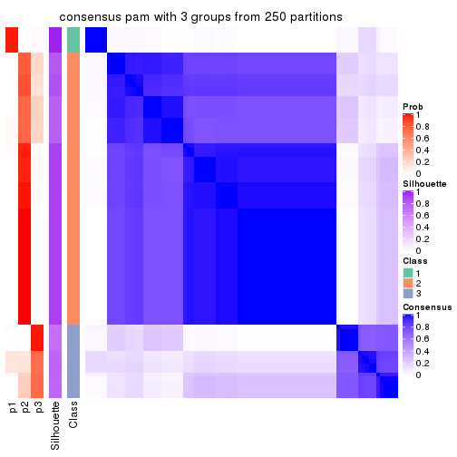
consensus_heatmap(res, k = 4)
consensus_heatmap(res, k = 5)
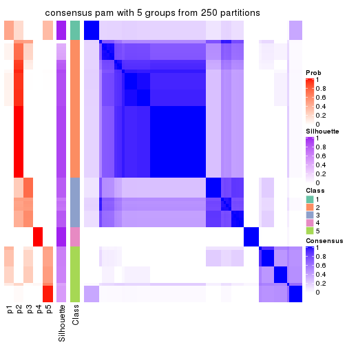
consensus_heatmap(res, k = 6)
Heatmaps for the membership of samples in all partitions to see how consistent they are:
membership_heatmap(res, k = 2)
membership_heatmap(res, k = 3)
membership_heatmap(res, k = 4)

membership_heatmap(res, k = 5)
membership_heatmap(res, k = 6)
As soon as we have had the classes for columns, we can look for signatures which are significantly different between classes which can be candidate marks for certain classes. Following are the heatmaps for signatures.
Signature heatmaps where rows are scaled:
get_signatures(res, k = 2)
get_signatures(res, k = 3)
get_signatures(res, k = 4)
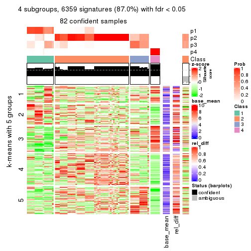
get_signatures(res, k = 5)
get_signatures(res, k = 6)
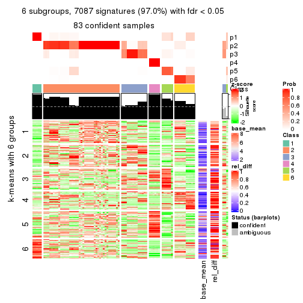
Signature heatmaps where rows are not scaled:
get_signatures(res, k = 2, scale_rows = FALSE)
get_signatures(res, k = 3, scale_rows = FALSE)
get_signatures(res, k = 4, scale_rows = FALSE)
get_signatures(res, k = 5, scale_rows = FALSE)
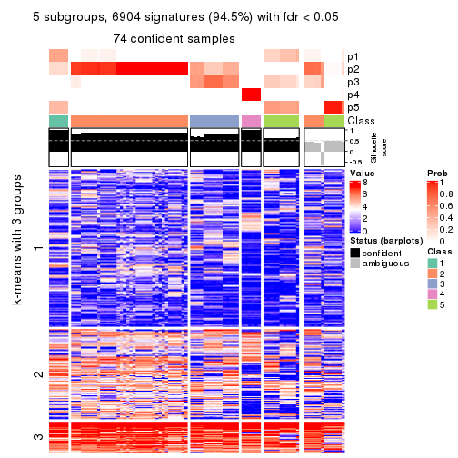
get_signatures(res, k = 6, scale_rows = FALSE)
Compare the overlap of signatures from different k:
compare_signatures(res)
get_signature() returns a data frame invisibly. TO get the list of signatures, the function
call should be assigned to a variable explicitly. In following code, if plot argument is set
to FALSE, no heatmap is plotted while only the differential analysis is performed.
# code only for demonstration
tb = get_signature(res, k = ..., plot = FALSE)
An example of the output of tb is:
#> which_row fdr mean_1 mean_2 scaled_mean_1 scaled_mean_2 km
#> 1 38 0.042760348 8.373488 9.131774 -0.5533452 0.5164555 1
#> 2 40 0.018707592 7.106213 8.469186 -0.6173731 0.5762149 1
#> 3 55 0.019134737 10.221463 11.207825 -0.6159697 0.5749050 1
#> 4 59 0.006059896 5.921854 7.869574 -0.6899429 0.6439467 1
#> 5 60 0.018055526 8.928898 10.211722 -0.6204761 0.5791110 1
#> 6 98 0.009384629 15.714769 14.887706 0.6635654 -0.6193277 2
...
The columns in tb are:
which_row: row indices corresponding to the input matrix.fdr: FDR for the differential test. mean_x: The mean value in group x.scaled_mean_x: The mean value in group x after rows are scaled.km: Row groups if k-means clustering is applied to rows.UMAP plot which shows how samples are separated.
dimension_reduction(res, k = 2, method = "UMAP")
dimension_reduction(res, k = 3, method = "UMAP")
dimension_reduction(res, k = 4, method = "UMAP")
dimension_reduction(res, k = 5, method = "UMAP")
dimension_reduction(res, k = 6, method = "UMAP")
Following heatmap shows how subgroups are split when increasing k:
collect_classes(res)
If matrix rows can be associated to genes, consider to use functional_enrichment(res,
...) to perform function enrichment for the signature genes. See this vignette for more detailed explanations.
The object with results only for a single top-value method and a single partition method can be extracted as:
res = res_list["MAD", "mclust"]
# you can also extract it by
# res = res_list["MAD:mclust"]
A summary of res and all the functions that can be applied to it:
res
#> A 'ConsensusPartition' object with k = 2, 3, 4, 5, 6.
#> On a matrix with 7309 rows and 86 columns.
#> Top rows (731, 1462, 2192, 2923, 3654) are extracted by 'MAD' method.
#> Subgroups are detected by 'mclust' method.
#> Performed in total 1250 partitions by row resampling.
#> Best k for subgroups seems to be 6.
#>
#> Following methods can be applied to this 'ConsensusPartition' object:
#> [1] "cola_report" "collect_classes" "collect_plots"
#> [4] "collect_stats" "colnames" "compare_signatures"
#> [7] "consensus_heatmap" "dimension_reduction" "functional_enrichment"
#> [10] "get_anno_col" "get_anno" "get_classes"
#> [13] "get_consensus" "get_matrix" "get_membership"
#> [16] "get_param" "get_signatures" "get_stats"
#> [19] "is_best_k" "is_stable_k" "membership_heatmap"
#> [22] "ncol" "nrow" "plot_ecdf"
#> [25] "rownames" "select_partition_number" "show"
#> [28] "suggest_best_k" "test_to_known_factors"
collect_plots() function collects all the plots made from res for all k (number of partitions)
into one single page to provide an easy and fast comparison between different k.
collect_plots(res)
The plots are:
k and the heatmap of
predicted classes for each k.k.k.k.All the plots in panels can be made by individual functions and they are plotted later in this section.
select_partition_number() produces several plots showing different
statistics for choosing “optimized” k. There are following statistics:
k;k, the area increased is defined as \(A_k - A_{k-1}\).The detailed explanations of these statistics can be found in the cola vignette.
Generally speaking, lower PAC score, higher mean silhouette score or higher
concordance corresponds to better partition. Rand index and Jaccard index
measure how similar the current partition is compared to partition with k-1.
If they are too similar, we won't accept k is better than k-1.
select_partition_number(res)

The numeric values for all these statistics can be obtained by get_stats().
get_stats(res)
#> k 1-PAC mean_silhouette concordance area_increased Rand Jaccard
#> 2 2 0.274 0.560 0.738 0.3831 0.508 0.508
#> 3 3 0.541 0.710 0.845 0.6509 0.779 0.591
#> 4 4 0.715 0.849 0.917 0.1045 0.880 0.686
#> 5 5 0.870 0.807 0.876 0.0790 0.972 0.905
#> 6 6 0.913 0.868 0.907 0.0332 0.981 0.928
suggest_best_k() suggests the best \(k\) based on these statistics. The rules are as follows:
suggest_best_k(res)
#> [1] 6
Following shows the table of the partitions (You need to click the show/hide
code output link to see it). The membership matrix (columns with name p*)
is inferred by
clue::cl_consensus()
function with the SE method. Basically the value in the membership matrix
represents the probability to belong to a certain group. The finall class
label for an item is determined with the group with highest probability it
belongs to.
In get_classes() function, the entropy is calculated from the membership
matrix and the silhouette score is calculated from the consensus matrix.
cbind(get_classes(res, k = 2), get_membership(res, k = 2))
#> class entropy silhouette p1 p2
#> SRR2240643 1 0.430 0.6153 0.912 0.088
#> SRR2240644 1 0.430 0.6153 0.912 0.088
#> SRR2240645 1 0.430 0.6153 0.912 0.088
#> SRR2240646 1 0.430 0.6153 0.912 0.088
#> SRR2240647 1 0.430 0.6153 0.912 0.088
#> SRR2240638 1 0.529 0.6226 0.880 0.120
#> SRR2240639 1 0.529 0.6226 0.880 0.120
#> SRR2240640 1 0.529 0.6226 0.880 0.120
#> SRR2240641 1 0.529 0.6226 0.880 0.120
#> SRR2240642 1 0.529 0.6226 0.880 0.120
#> SRR2240633 1 0.388 0.6029 0.924 0.076
#> SRR2240634 1 0.388 0.6029 0.924 0.076
#> SRR2240635 1 0.388 0.6029 0.924 0.076
#> SRR2240636 1 0.388 0.6029 0.924 0.076
#> SRR2240637 1 0.388 0.6029 0.924 0.076
#> SRR2240624 1 0.871 0.0982 0.708 0.292
#> SRR2240625 1 0.871 0.0982 0.708 0.292
#> SRR2240626 1 0.871 0.0982 0.708 0.292
#> SRR2240627 1 0.563 0.5953 0.868 0.132
#> SRR2240628 1 0.563 0.5953 0.868 0.132
#> SRR2240629 1 0.563 0.5953 0.868 0.132
#> SRR2240630 1 0.563 0.5953 0.868 0.132
#> SRR2240631 1 0.563 0.5868 0.868 0.132
#> SRR2240632 1 0.552 0.5917 0.872 0.128
#> SRR2240613 1 0.955 0.1043 0.624 0.376
#> SRR2240614 1 0.955 0.1043 0.624 0.376
#> SRR2240615 1 0.955 0.1043 0.624 0.376
#> SRR2240616 1 0.955 0.1043 0.624 0.376
#> SRR2240617 1 0.955 0.1043 0.624 0.376
#> SRR2240618 1 0.998 0.3863 0.528 0.472
#> SRR2240619 1 0.998 0.3863 0.528 0.472
#> SRR2240620 1 0.998 0.3863 0.528 0.472
#> SRR2240621 1 0.998 0.3863 0.528 0.472
#> SRR2240622 1 0.998 0.3863 0.528 0.472
#> SRR2240623 1 0.998 0.3863 0.528 0.472
#> SRR2240609 2 0.973 0.7556 0.404 0.596
#> SRR2240610 2 0.973 0.7556 0.404 0.596
#> SRR2240611 2 0.973 0.7556 0.404 0.596
#> SRR2240612 2 0.973 0.7556 0.404 0.596
#> SRR2240594 2 0.997 0.7232 0.468 0.532
#> SRR2240595 2 0.997 0.7232 0.468 0.532
#> SRR2240596 2 0.997 0.7232 0.468 0.532
#> SRR2240597 2 0.997 0.7232 0.468 0.532
#> SRR2240598 2 0.997 0.7232 0.468 0.532
#> SRR2240604 2 0.973 0.7556 0.404 0.596
#> SRR2240605 2 0.973 0.7556 0.404 0.596
#> SRR2240606 2 0.973 0.7556 0.404 0.596
#> SRR2240607 2 0.973 0.7556 0.404 0.596
#> SRR2240608 2 0.973 0.7556 0.404 0.596
#> SRR2240599 2 0.653 0.3282 0.168 0.832
#> SRR2240600 2 0.653 0.3282 0.168 0.832
#> SRR2240601 2 0.653 0.3282 0.168 0.832
#> SRR2240602 2 0.653 0.3282 0.168 0.832
#> SRR2240603 2 0.653 0.3282 0.168 0.832
#> SRR2240584 2 0.992 0.7268 0.448 0.552
#> SRR2240585 2 0.992 0.7268 0.448 0.552
#> SRR2240586 2 0.992 0.7268 0.448 0.552
#> SRR2240587 2 0.992 0.7268 0.448 0.552
#> SRR2240588 2 0.992 0.7268 0.448 0.552
#> SRR2240589 2 0.615 0.3075 0.152 0.848
#> SRR2240590 2 0.615 0.3075 0.152 0.848
#> SRR2240591 2 0.615 0.3075 0.152 0.848
#> SRR2240592 2 0.615 0.3075 0.152 0.848
#> SRR2240593 2 0.615 0.3075 0.152 0.848
#> SRR2240578 2 0.995 0.7027 0.460 0.540
#> SRR2240579 2 0.995 0.7027 0.460 0.540
#> SRR2240580 2 0.995 0.7027 0.460 0.540
#> SRR2240581 2 0.995 0.7027 0.460 0.540
#> SRR2240582 2 0.995 0.7027 0.460 0.540
#> SRR2240583 2 0.995 0.7027 0.460 0.540
#> SRR1825969 2 0.973 0.7556 0.404 0.596
#> SRR1825968 2 0.973 0.7556 0.404 0.596
#> SRR1825970 2 0.839 0.3712 0.268 0.732
#> SRR1825966 2 0.973 0.7556 0.404 0.596
#> SRR1825967 2 0.973 0.7556 0.404 0.596
#> SRR1825965 2 0.998 0.7167 0.476 0.524
#> SRR1825962 2 0.973 0.7556 0.404 0.596
#> SRR1825963 2 0.973 0.7556 0.404 0.596
#> SRR1825964 2 0.975 0.7545 0.408 0.592
#> SRR1825961 1 0.993 -0.0852 0.548 0.452
#> SRR1825960 2 0.971 0.7534 0.400 0.600
#> SRR1825958 2 0.973 0.7556 0.404 0.596
#> SRR1825959 2 0.973 0.7556 0.404 0.596
#> SRR1825956 2 0.973 0.7556 0.404 0.596
#> SRR1825957 2 0.973 0.7556 0.404 0.596
#> SRR1825955 2 0.973 0.7556 0.404 0.596
cbind(get_classes(res, k = 3), get_membership(res, k = 3))
#> class entropy silhouette p1 p2 p3
#> SRR2240643 3 0.0000 0.9891 0.000 0.000 1.000
#> SRR2240644 3 0.0000 0.9891 0.000 0.000 1.000
#> SRR2240645 3 0.0000 0.9891 0.000 0.000 1.000
#> SRR2240646 3 0.0000 0.9891 0.000 0.000 1.000
#> SRR2240647 3 0.0000 0.9891 0.000 0.000 1.000
#> SRR2240638 3 0.0237 0.9882 0.000 0.004 0.996
#> SRR2240639 3 0.0237 0.9882 0.000 0.004 0.996
#> SRR2240640 3 0.0237 0.9882 0.000 0.004 0.996
#> SRR2240641 3 0.0237 0.9882 0.000 0.004 0.996
#> SRR2240642 3 0.0237 0.9882 0.000 0.004 0.996
#> SRR2240633 3 0.0592 0.9836 0.012 0.000 0.988
#> SRR2240634 3 0.0592 0.9836 0.012 0.000 0.988
#> SRR2240635 3 0.0592 0.9836 0.012 0.000 0.988
#> SRR2240636 3 0.0592 0.9836 0.012 0.000 0.988
#> SRR2240637 3 0.0592 0.9836 0.012 0.000 0.988
#> SRR2240624 3 0.1620 0.9622 0.024 0.012 0.964
#> SRR2240625 3 0.1620 0.9622 0.024 0.012 0.964
#> SRR2240626 3 0.1620 0.9622 0.024 0.012 0.964
#> SRR2240627 3 0.0000 0.9891 0.000 0.000 1.000
#> SRR2240628 3 0.0000 0.9891 0.000 0.000 1.000
#> SRR2240629 3 0.0000 0.9891 0.000 0.000 1.000
#> SRR2240630 3 0.0000 0.9891 0.000 0.000 1.000
#> SRR2240631 3 0.0000 0.9891 0.000 0.000 1.000
#> SRR2240632 3 0.0000 0.9891 0.000 0.000 1.000
#> SRR2240613 1 0.8375 0.4352 0.572 0.104 0.324
#> SRR2240614 1 0.8375 0.4352 0.572 0.104 0.324
#> SRR2240615 1 0.8375 0.4352 0.572 0.104 0.324
#> SRR2240616 1 0.8375 0.4352 0.572 0.104 0.324
#> SRR2240617 1 0.8375 0.4352 0.572 0.104 0.324
#> SRR2240618 1 0.2448 0.6601 0.924 0.000 0.076
#> SRR2240619 1 0.2448 0.6601 0.924 0.000 0.076
#> SRR2240620 1 0.2448 0.6601 0.924 0.000 0.076
#> SRR2240621 1 0.2448 0.6601 0.924 0.000 0.076
#> SRR2240622 1 0.2448 0.6601 0.924 0.000 0.076
#> SRR2240623 1 0.2448 0.6601 0.924 0.000 0.076
#> SRR2240609 2 0.1031 0.8014 0.000 0.976 0.024
#> SRR2240610 2 0.1163 0.8018 0.000 0.972 0.028
#> SRR2240611 2 0.1289 0.8016 0.000 0.968 0.032
#> SRR2240612 2 0.1031 0.8014 0.000 0.976 0.024
#> SRR2240594 2 0.4628 0.7470 0.056 0.856 0.088
#> SRR2240595 2 0.4628 0.7470 0.056 0.856 0.088
#> SRR2240596 2 0.4628 0.7470 0.056 0.856 0.088
#> SRR2240597 2 0.4628 0.7470 0.056 0.856 0.088
#> SRR2240598 2 0.4628 0.7470 0.056 0.856 0.088
#> SRR2240604 2 0.1031 0.8008 0.000 0.976 0.024
#> SRR2240605 2 0.1031 0.8008 0.000 0.976 0.024
#> SRR2240606 2 0.1031 0.8008 0.000 0.976 0.024
#> SRR2240607 2 0.1031 0.8008 0.000 0.976 0.024
#> SRR2240608 2 0.1031 0.8008 0.000 0.976 0.024
#> SRR2240599 1 0.6855 0.5469 0.652 0.316 0.032
#> SRR2240600 1 0.6855 0.5469 0.652 0.316 0.032
#> SRR2240601 1 0.6855 0.5469 0.652 0.316 0.032
#> SRR2240602 1 0.6855 0.5469 0.652 0.316 0.032
#> SRR2240603 1 0.6855 0.5469 0.652 0.316 0.032
#> SRR2240584 2 0.6495 0.6583 0.060 0.740 0.200
#> SRR2240585 2 0.6495 0.6583 0.060 0.740 0.200
#> SRR2240586 2 0.6495 0.6583 0.060 0.740 0.200
#> SRR2240587 2 0.6495 0.6583 0.060 0.740 0.200
#> SRR2240588 2 0.6495 0.6583 0.060 0.740 0.200
#> SRR2240589 1 0.6931 0.5293 0.640 0.328 0.032
#> SRR2240590 1 0.6931 0.5293 0.640 0.328 0.032
#> SRR2240591 1 0.6931 0.5293 0.640 0.328 0.032
#> SRR2240592 1 0.6931 0.5293 0.640 0.328 0.032
#> SRR2240593 1 0.6931 0.5293 0.640 0.328 0.032
#> SRR2240578 2 0.7819 0.0704 0.440 0.508 0.052
#> SRR2240579 2 0.7819 0.0704 0.440 0.508 0.052
#> SRR2240580 2 0.7819 0.0704 0.440 0.508 0.052
#> SRR2240581 2 0.7819 0.0704 0.440 0.508 0.052
#> SRR2240582 2 0.7819 0.0704 0.440 0.508 0.052
#> SRR2240583 2 0.7819 0.0704 0.440 0.508 0.052
#> SRR1825969 2 0.1289 0.8016 0.000 0.968 0.032
#> SRR1825968 2 0.0592 0.7961 0.000 0.988 0.012
#> SRR1825970 2 0.9391 -0.1046 0.304 0.496 0.200
#> SRR1825966 2 0.1031 0.8009 0.000 0.976 0.024
#> SRR1825967 2 0.1289 0.8018 0.000 0.968 0.032
#> SRR1825965 2 0.3998 0.7548 0.056 0.884 0.060
#> SRR1825962 2 0.1411 0.8000 0.000 0.964 0.036
#> SRR1825963 2 0.1411 0.8010 0.000 0.964 0.036
#> SRR1825964 2 0.1170 0.7901 0.016 0.976 0.008
#> SRR1825961 1 0.9441 0.4157 0.484 0.200 0.316
#> SRR1825960 2 0.3910 0.7542 0.020 0.876 0.104
#> SRR1825958 2 0.2356 0.7823 0.000 0.928 0.072
#> SRR1825959 2 0.0829 0.7954 0.004 0.984 0.012
#> SRR1825956 2 0.4978 0.6453 0.004 0.780 0.216
#> SRR1825957 2 0.1765 0.8006 0.004 0.956 0.040
#> SRR1825955 2 0.1289 0.8016 0.000 0.968 0.032
cbind(get_classes(res, k = 4), get_membership(res, k = 4))
#> class entropy silhouette p1 p2 p3 p4
#> SRR2240643 3 0.0000 0.958 0.000 0.000 1.000 0.000
#> SRR2240644 3 0.0000 0.958 0.000 0.000 1.000 0.000
#> SRR2240645 3 0.0000 0.958 0.000 0.000 1.000 0.000
#> SRR2240646 3 0.0000 0.958 0.000 0.000 1.000 0.000
#> SRR2240647 3 0.0000 0.958 0.000 0.000 1.000 0.000
#> SRR2240638 3 0.0188 0.958 0.000 0.004 0.996 0.000
#> SRR2240639 3 0.0188 0.958 0.000 0.004 0.996 0.000
#> SRR2240640 3 0.0188 0.958 0.000 0.004 0.996 0.000
#> SRR2240641 3 0.0188 0.958 0.000 0.004 0.996 0.000
#> SRR2240642 3 0.0188 0.958 0.000 0.004 0.996 0.000
#> SRR2240633 3 0.1109 0.947 0.028 0.000 0.968 0.004
#> SRR2240634 3 0.1109 0.947 0.028 0.000 0.968 0.004
#> SRR2240635 3 0.1109 0.947 0.028 0.000 0.968 0.004
#> SRR2240636 3 0.1109 0.947 0.028 0.000 0.968 0.004
#> SRR2240637 3 0.1109 0.947 0.028 0.000 0.968 0.004
#> SRR2240624 3 0.3853 0.783 0.160 0.020 0.820 0.000
#> SRR2240625 3 0.3853 0.783 0.160 0.020 0.820 0.000
#> SRR2240626 3 0.3853 0.783 0.160 0.020 0.820 0.000
#> SRR2240627 3 0.0336 0.959 0.008 0.000 0.992 0.000
#> SRR2240628 3 0.0336 0.959 0.008 0.000 0.992 0.000
#> SRR2240629 3 0.0336 0.959 0.008 0.000 0.992 0.000
#> SRR2240630 3 0.0336 0.959 0.008 0.000 0.992 0.000
#> SRR2240631 3 0.0336 0.959 0.008 0.000 0.992 0.000
#> SRR2240632 3 0.0336 0.959 0.008 0.000 0.992 0.000
#> SRR2240613 1 0.4227 0.818 0.820 0.000 0.120 0.060
#> SRR2240614 1 0.4227 0.818 0.820 0.000 0.120 0.060
#> SRR2240615 1 0.4227 0.818 0.820 0.000 0.120 0.060
#> SRR2240616 1 0.4227 0.818 0.820 0.000 0.120 0.060
#> SRR2240617 1 0.4227 0.818 0.820 0.000 0.120 0.060
#> SRR2240618 4 0.0000 1.000 0.000 0.000 0.000 1.000
#> SRR2240619 4 0.0000 1.000 0.000 0.000 0.000 1.000
#> SRR2240620 4 0.0000 1.000 0.000 0.000 0.000 1.000
#> SRR2240621 4 0.0000 1.000 0.000 0.000 0.000 1.000
#> SRR2240622 4 0.0000 1.000 0.000 0.000 0.000 1.000
#> SRR2240623 4 0.0000 1.000 0.000 0.000 0.000 1.000
#> SRR2240609 2 0.0000 0.850 0.000 1.000 0.000 0.000
#> SRR2240610 2 0.0000 0.850 0.000 1.000 0.000 0.000
#> SRR2240611 2 0.0000 0.850 0.000 1.000 0.000 0.000
#> SRR2240612 2 0.0000 0.850 0.000 1.000 0.000 0.000
#> SRR2240594 2 0.5226 0.678 0.276 0.696 0.020 0.008
#> SRR2240595 2 0.5226 0.678 0.276 0.696 0.020 0.008
#> SRR2240596 2 0.5226 0.678 0.276 0.696 0.020 0.008
#> SRR2240597 2 0.5226 0.678 0.276 0.696 0.020 0.008
#> SRR2240598 2 0.5226 0.678 0.276 0.696 0.020 0.008
#> SRR2240604 2 0.0000 0.850 0.000 1.000 0.000 0.000
#> SRR2240605 2 0.0000 0.850 0.000 1.000 0.000 0.000
#> SRR2240606 2 0.0000 0.850 0.000 1.000 0.000 0.000
#> SRR2240607 2 0.0000 0.850 0.000 1.000 0.000 0.000
#> SRR2240608 2 0.0000 0.850 0.000 1.000 0.000 0.000
#> SRR2240599 1 0.0000 0.871 1.000 0.000 0.000 0.000
#> SRR2240600 1 0.0000 0.871 1.000 0.000 0.000 0.000
#> SRR2240601 1 0.0000 0.871 1.000 0.000 0.000 0.000
#> SRR2240602 1 0.0000 0.871 1.000 0.000 0.000 0.000
#> SRR2240603 1 0.0000 0.871 1.000 0.000 0.000 0.000
#> SRR2240584 2 0.4905 0.564 0.364 0.632 0.000 0.004
#> SRR2240585 2 0.4905 0.564 0.364 0.632 0.000 0.004
#> SRR2240586 2 0.4905 0.564 0.364 0.632 0.000 0.004
#> SRR2240587 2 0.4905 0.564 0.364 0.632 0.000 0.004
#> SRR2240588 2 0.4905 0.564 0.364 0.632 0.000 0.004
#> SRR2240589 1 0.0000 0.871 1.000 0.000 0.000 0.000
#> SRR2240590 1 0.0000 0.871 1.000 0.000 0.000 0.000
#> SRR2240591 1 0.0000 0.871 1.000 0.000 0.000 0.000
#> SRR2240592 1 0.0000 0.871 1.000 0.000 0.000 0.000
#> SRR2240593 1 0.0000 0.871 1.000 0.000 0.000 0.000
#> SRR2240578 1 0.3863 0.784 0.812 0.176 0.004 0.008
#> SRR2240579 1 0.3863 0.784 0.812 0.176 0.004 0.008
#> SRR2240580 1 0.3863 0.784 0.812 0.176 0.004 0.008
#> SRR2240581 1 0.3863 0.784 0.812 0.176 0.004 0.008
#> SRR2240582 1 0.3863 0.784 0.812 0.176 0.004 0.008
#> SRR2240583 1 0.3863 0.784 0.812 0.176 0.004 0.008
#> SRR1825969 2 0.0000 0.850 0.000 1.000 0.000 0.000
#> SRR1825968 2 0.0000 0.850 0.000 1.000 0.000 0.000
#> SRR1825970 1 0.5140 0.810 0.792 0.036 0.120 0.052
#> SRR1825966 2 0.0000 0.850 0.000 1.000 0.000 0.000
#> SRR1825967 2 0.0188 0.848 0.000 0.996 0.004 0.000
#> SRR1825965 2 0.5649 0.641 0.284 0.664 0.052 0.000
#> SRR1825962 2 0.0000 0.850 0.000 1.000 0.000 0.000
#> SRR1825963 2 0.0000 0.850 0.000 1.000 0.000 0.000
#> SRR1825964 2 0.2345 0.820 0.100 0.900 0.000 0.000
#> SRR1825961 1 0.3869 0.831 0.844 0.008 0.120 0.028
#> SRR1825960 2 0.2936 0.820 0.056 0.900 0.040 0.004
#> SRR1825958 2 0.0000 0.850 0.000 1.000 0.000 0.000
#> SRR1825959 2 0.1022 0.846 0.032 0.968 0.000 0.000
#> SRR1825956 2 0.1305 0.844 0.036 0.960 0.004 0.000
#> SRR1825957 2 0.1305 0.845 0.036 0.960 0.004 0.000
#> SRR1825955 2 0.0188 0.850 0.004 0.996 0.000 0.000
cbind(get_classes(res, k = 5), get_membership(res, k = 5))
#> class entropy silhouette p1 p2 p3 p4 p5
#> SRR2240643 3 0.0290 0.979 0.000 0.008 0.992 0.000 0.000
#> SRR2240644 3 0.0290 0.979 0.000 0.008 0.992 0.000 0.000
#> SRR2240645 3 0.0290 0.979 0.000 0.008 0.992 0.000 0.000
#> SRR2240646 3 0.0290 0.979 0.000 0.008 0.992 0.000 0.000
#> SRR2240647 3 0.0290 0.979 0.000 0.008 0.992 0.000 0.000
#> SRR2240638 3 0.0451 0.978 0.004 0.008 0.988 0.000 0.000
#> SRR2240639 3 0.0451 0.978 0.004 0.008 0.988 0.000 0.000
#> SRR2240640 3 0.0451 0.978 0.004 0.008 0.988 0.000 0.000
#> SRR2240641 3 0.0451 0.978 0.004 0.008 0.988 0.000 0.000
#> SRR2240642 3 0.0451 0.978 0.004 0.008 0.988 0.000 0.000
#> SRR2240633 3 0.1205 0.954 0.040 0.000 0.956 0.004 0.000
#> SRR2240634 3 0.1205 0.954 0.040 0.000 0.956 0.004 0.000
#> SRR2240635 3 0.1205 0.954 0.040 0.000 0.956 0.004 0.000
#> SRR2240636 3 0.1205 0.954 0.040 0.000 0.956 0.004 0.000
#> SRR2240637 3 0.1205 0.954 0.040 0.000 0.956 0.004 0.000
#> SRR2240624 3 0.1725 0.943 0.044 0.020 0.936 0.000 0.000
#> SRR2240625 3 0.1725 0.943 0.044 0.020 0.936 0.000 0.000
#> SRR2240626 3 0.1725 0.943 0.044 0.020 0.936 0.000 0.000
#> SRR2240627 3 0.0290 0.979 0.000 0.008 0.992 0.000 0.000
#> SRR2240628 3 0.0290 0.979 0.000 0.008 0.992 0.000 0.000
#> SRR2240629 3 0.0290 0.979 0.000 0.008 0.992 0.000 0.000
#> SRR2240630 3 0.0290 0.979 0.000 0.008 0.992 0.000 0.000
#> SRR2240631 3 0.0290 0.979 0.000 0.008 0.992 0.000 0.000
#> SRR2240632 3 0.0290 0.979 0.000 0.008 0.992 0.000 0.000
#> SRR2240613 5 0.6715 0.569 0.344 0.000 0.068 0.072 0.516
#> SRR2240614 5 0.6715 0.569 0.344 0.000 0.068 0.072 0.516
#> SRR2240615 5 0.6715 0.569 0.344 0.000 0.068 0.072 0.516
#> SRR2240616 5 0.6715 0.569 0.344 0.000 0.068 0.072 0.516
#> SRR2240617 5 0.6715 0.569 0.344 0.000 0.068 0.072 0.516
#> SRR2240618 4 0.0000 1.000 0.000 0.000 0.000 1.000 0.000
#> SRR2240619 4 0.0000 1.000 0.000 0.000 0.000 1.000 0.000
#> SRR2240620 4 0.0000 1.000 0.000 0.000 0.000 1.000 0.000
#> SRR2240621 4 0.0000 1.000 0.000 0.000 0.000 1.000 0.000
#> SRR2240622 4 0.0000 1.000 0.000 0.000 0.000 1.000 0.000
#> SRR2240623 4 0.0000 1.000 0.000 0.000 0.000 1.000 0.000
#> SRR2240609 2 0.0000 0.794 0.000 1.000 0.000 0.000 0.000
#> SRR2240610 2 0.0000 0.794 0.000 1.000 0.000 0.000 0.000
#> SRR2240611 2 0.0000 0.794 0.000 1.000 0.000 0.000 0.000
#> SRR2240612 2 0.0000 0.794 0.000 1.000 0.000 0.000 0.000
#> SRR2240594 2 0.4849 0.492 0.432 0.548 0.016 0.000 0.004
#> SRR2240595 2 0.4849 0.492 0.432 0.548 0.016 0.000 0.004
#> SRR2240596 2 0.4849 0.492 0.432 0.548 0.016 0.000 0.004
#> SRR2240597 2 0.4849 0.492 0.432 0.548 0.016 0.000 0.004
#> SRR2240598 2 0.4849 0.492 0.432 0.548 0.016 0.000 0.004
#> SRR2240604 2 0.0000 0.794 0.000 1.000 0.000 0.000 0.000
#> SRR2240605 2 0.0000 0.794 0.000 1.000 0.000 0.000 0.000
#> SRR2240606 2 0.0000 0.794 0.000 1.000 0.000 0.000 0.000
#> SRR2240607 2 0.0000 0.794 0.000 1.000 0.000 0.000 0.000
#> SRR2240608 2 0.0000 0.794 0.000 1.000 0.000 0.000 0.000
#> SRR2240599 5 0.0000 0.766 0.000 0.000 0.000 0.000 1.000
#> SRR2240600 5 0.0000 0.766 0.000 0.000 0.000 0.000 1.000
#> SRR2240601 5 0.0000 0.766 0.000 0.000 0.000 0.000 1.000
#> SRR2240602 5 0.0000 0.766 0.000 0.000 0.000 0.000 1.000
#> SRR2240603 5 0.0000 0.766 0.000 0.000 0.000 0.000 1.000
#> SRR2240584 2 0.4434 0.458 0.460 0.536 0.000 0.000 0.004
#> SRR2240585 2 0.4434 0.458 0.460 0.536 0.000 0.000 0.004
#> SRR2240586 2 0.4434 0.458 0.460 0.536 0.000 0.000 0.004
#> SRR2240587 2 0.4434 0.458 0.460 0.536 0.000 0.000 0.004
#> SRR2240588 2 0.4434 0.458 0.460 0.536 0.000 0.000 0.004
#> SRR2240589 5 0.0000 0.766 0.000 0.000 0.000 0.000 1.000
#> SRR2240590 5 0.0000 0.766 0.000 0.000 0.000 0.000 1.000
#> SRR2240591 5 0.0000 0.766 0.000 0.000 0.000 0.000 1.000
#> SRR2240592 5 0.0000 0.766 0.000 0.000 0.000 0.000 1.000
#> SRR2240593 5 0.0000 0.766 0.000 0.000 0.000 0.000 1.000
#> SRR2240578 1 0.3354 1.000 0.844 0.068 0.000 0.000 0.088
#> SRR2240579 1 0.3354 1.000 0.844 0.068 0.000 0.000 0.088
#> SRR2240580 1 0.3354 1.000 0.844 0.068 0.000 0.000 0.088
#> SRR2240581 1 0.3354 1.000 0.844 0.068 0.000 0.000 0.088
#> SRR2240582 1 0.3354 1.000 0.844 0.068 0.000 0.000 0.088
#> SRR2240583 1 0.3354 1.000 0.844 0.068 0.000 0.000 0.088
#> SRR1825969 2 0.0000 0.794 0.000 1.000 0.000 0.000 0.000
#> SRR1825968 2 0.0693 0.789 0.012 0.980 0.008 0.000 0.000
#> SRR1825970 5 0.7059 0.553 0.340 0.012 0.068 0.072 0.508
#> SRR1825966 2 0.0000 0.794 0.000 1.000 0.000 0.000 0.000
#> SRR1825967 2 0.0000 0.794 0.000 1.000 0.000 0.000 0.000
#> SRR1825965 2 0.5708 0.506 0.360 0.568 0.060 0.004 0.008
#> SRR1825962 2 0.0000 0.794 0.000 1.000 0.000 0.000 0.000
#> SRR1825963 2 0.0000 0.794 0.000 1.000 0.000 0.000 0.000
#> SRR1825964 2 0.3462 0.710 0.196 0.792 0.012 0.000 0.000
#> SRR1825961 5 0.6850 0.564 0.340 0.004 0.068 0.072 0.516
#> SRR1825960 2 0.3695 0.719 0.164 0.800 0.036 0.000 0.000
#> SRR1825958 2 0.0000 0.794 0.000 1.000 0.000 0.000 0.000
#> SRR1825959 2 0.2286 0.759 0.108 0.888 0.004 0.000 0.000
#> SRR1825956 2 0.2408 0.762 0.092 0.892 0.016 0.000 0.000
#> SRR1825957 2 0.1124 0.785 0.036 0.960 0.004 0.000 0.000
#> SRR1825955 2 0.0000 0.794 0.000 1.000 0.000 0.000 0.000
cbind(get_classes(res, k = 6), get_membership(res, k = 6))
#> class entropy silhouette p1 p2 p3 p4 p5 p6
#> SRR2240643 3 0.0146 0.977 0.000 0.000 0.996 0.004 0.000 0.000
#> SRR2240644 3 0.0146 0.977 0.000 0.000 0.996 0.004 0.000 0.000
#> SRR2240645 3 0.0146 0.977 0.000 0.000 0.996 0.004 0.000 0.000
#> SRR2240646 3 0.0146 0.977 0.000 0.000 0.996 0.004 0.000 0.000
#> SRR2240647 3 0.0146 0.977 0.000 0.000 0.996 0.004 0.000 0.000
#> SRR2240638 3 0.0291 0.977 0.000 0.000 0.992 0.004 0.000 0.004
#> SRR2240639 3 0.0291 0.977 0.000 0.000 0.992 0.004 0.000 0.004
#> SRR2240640 3 0.0291 0.977 0.000 0.000 0.992 0.004 0.000 0.004
#> SRR2240641 3 0.0291 0.977 0.000 0.000 0.992 0.004 0.000 0.004
#> SRR2240642 3 0.0291 0.977 0.000 0.000 0.992 0.004 0.000 0.004
#> SRR2240633 3 0.1204 0.950 0.000 0.000 0.944 0.000 0.056 0.000
#> SRR2240634 3 0.1204 0.950 0.000 0.000 0.944 0.000 0.056 0.000
#> SRR2240635 3 0.1204 0.950 0.000 0.000 0.944 0.000 0.056 0.000
#> SRR2240636 3 0.1204 0.950 0.000 0.000 0.944 0.000 0.056 0.000
#> SRR2240637 3 0.1204 0.950 0.000 0.000 0.944 0.000 0.056 0.000
#> SRR2240624 3 0.1679 0.940 0.000 0.016 0.936 0.000 0.036 0.012
#> SRR2240625 3 0.1679 0.940 0.000 0.016 0.936 0.000 0.036 0.012
#> SRR2240626 3 0.1679 0.940 0.000 0.016 0.936 0.000 0.036 0.012
#> SRR2240627 3 0.0000 0.977 0.000 0.000 1.000 0.000 0.000 0.000
#> SRR2240628 3 0.0000 0.977 0.000 0.000 1.000 0.000 0.000 0.000
#> SRR2240629 3 0.0000 0.977 0.000 0.000 1.000 0.000 0.000 0.000
#> SRR2240630 3 0.0000 0.977 0.000 0.000 1.000 0.000 0.000 0.000
#> SRR2240631 3 0.0000 0.977 0.000 0.000 1.000 0.000 0.000 0.000
#> SRR2240632 3 0.0000 0.977 0.000 0.000 1.000 0.000 0.000 0.000
#> SRR2240613 5 0.1701 0.990 0.072 0.000 0.000 0.008 0.920 0.000
#> SRR2240614 5 0.1701 0.990 0.072 0.000 0.000 0.008 0.920 0.000
#> SRR2240615 5 0.1701 0.990 0.072 0.000 0.000 0.008 0.920 0.000
#> SRR2240616 5 0.1701 0.990 0.072 0.000 0.000 0.008 0.920 0.000
#> SRR2240617 5 0.1701 0.990 0.072 0.000 0.000 0.008 0.920 0.000
#> SRR2240618 4 0.0146 1.000 0.000 0.000 0.000 0.996 0.004 0.000
#> SRR2240619 4 0.0146 1.000 0.000 0.000 0.000 0.996 0.004 0.000
#> SRR2240620 4 0.0146 1.000 0.000 0.000 0.000 0.996 0.004 0.000
#> SRR2240621 4 0.0146 1.000 0.000 0.000 0.000 0.996 0.004 0.000
#> SRR2240622 4 0.0146 1.000 0.000 0.000 0.000 0.996 0.004 0.000
#> SRR2240623 4 0.0146 1.000 0.000 0.000 0.000 0.996 0.004 0.000
#> SRR2240609 2 0.0260 0.786 0.000 0.992 0.008 0.000 0.000 0.000
#> SRR2240610 2 0.0260 0.786 0.000 0.992 0.008 0.000 0.000 0.000
#> SRR2240611 2 0.0260 0.786 0.000 0.992 0.008 0.000 0.000 0.000
#> SRR2240612 2 0.0260 0.786 0.000 0.992 0.008 0.000 0.000 0.000
#> SRR2240594 2 0.5328 0.527 0.000 0.536 0.008 0.000 0.088 0.368
#> SRR2240595 2 0.5328 0.527 0.000 0.536 0.008 0.000 0.088 0.368
#> SRR2240596 2 0.5328 0.527 0.000 0.536 0.008 0.000 0.088 0.368
#> SRR2240597 2 0.5328 0.527 0.000 0.536 0.008 0.000 0.088 0.368
#> SRR2240598 2 0.5328 0.527 0.000 0.536 0.008 0.000 0.088 0.368
#> SRR2240604 2 0.0146 0.787 0.000 0.996 0.004 0.000 0.000 0.000
#> SRR2240605 2 0.0146 0.787 0.000 0.996 0.004 0.000 0.000 0.000
#> SRR2240606 2 0.0146 0.787 0.000 0.996 0.004 0.000 0.000 0.000
#> SRR2240607 2 0.0146 0.787 0.000 0.996 0.004 0.000 0.000 0.000
#> SRR2240608 2 0.0146 0.787 0.000 0.996 0.004 0.000 0.000 0.000
#> SRR2240599 1 0.0000 1.000 1.000 0.000 0.000 0.000 0.000 0.000
#> SRR2240600 1 0.0000 1.000 1.000 0.000 0.000 0.000 0.000 0.000
#> SRR2240601 1 0.0000 1.000 1.000 0.000 0.000 0.000 0.000 0.000
#> SRR2240602 1 0.0000 1.000 1.000 0.000 0.000 0.000 0.000 0.000
#> SRR2240603 1 0.0000 1.000 1.000 0.000 0.000 0.000 0.000 0.000
#> SRR2240584 2 0.5162 0.479 0.000 0.504 0.000 0.000 0.088 0.408
#> SRR2240585 2 0.5162 0.479 0.000 0.504 0.000 0.000 0.088 0.408
#> SRR2240586 2 0.5162 0.479 0.000 0.504 0.000 0.000 0.088 0.408
#> SRR2240587 2 0.5162 0.479 0.000 0.504 0.000 0.000 0.088 0.408
#> SRR2240588 2 0.5162 0.479 0.000 0.504 0.000 0.000 0.088 0.408
#> SRR2240589 1 0.0000 1.000 1.000 0.000 0.000 0.000 0.000 0.000
#> SRR2240590 1 0.0000 1.000 1.000 0.000 0.000 0.000 0.000 0.000
#> SRR2240591 1 0.0000 1.000 1.000 0.000 0.000 0.000 0.000 0.000
#> SRR2240592 1 0.0000 1.000 1.000 0.000 0.000 0.000 0.000 0.000
#> SRR2240593 1 0.0000 1.000 1.000 0.000 0.000 0.000 0.000 0.000
#> SRR2240578 6 0.0547 1.000 0.020 0.000 0.000 0.000 0.000 0.980
#> SRR2240579 6 0.0547 1.000 0.020 0.000 0.000 0.000 0.000 0.980
#> SRR2240580 6 0.0547 1.000 0.020 0.000 0.000 0.000 0.000 0.980
#> SRR2240581 6 0.0547 1.000 0.020 0.000 0.000 0.000 0.000 0.980
#> SRR2240582 6 0.0547 1.000 0.020 0.000 0.000 0.000 0.000 0.980
#> SRR2240583 6 0.0547 1.000 0.020 0.000 0.000 0.000 0.000 0.980
#> SRR1825969 2 0.0146 0.787 0.000 0.996 0.004 0.000 0.000 0.000
#> SRR1825968 2 0.1036 0.783 0.000 0.964 0.004 0.000 0.008 0.024
#> SRR1825970 5 0.2839 0.949 0.084 0.012 0.000 0.008 0.872 0.024
#> SRR1825966 2 0.0146 0.787 0.000 0.996 0.004 0.000 0.000 0.000
#> SRR1825967 2 0.0260 0.786 0.000 0.992 0.008 0.000 0.000 0.000
#> SRR1825965 2 0.6006 0.528 0.000 0.532 0.056 0.000 0.088 0.324
#> SRR1825962 2 0.0146 0.787 0.000 0.996 0.004 0.000 0.000 0.000
#> SRR1825963 2 0.0260 0.786 0.000 0.992 0.008 0.000 0.000 0.000
#> SRR1825964 2 0.4469 0.696 0.000 0.736 0.024 0.000 0.068 0.172
#> SRR1825961 5 0.1812 0.984 0.080 0.000 0.000 0.008 0.912 0.000
#> SRR1825960 2 0.4560 0.702 0.000 0.744 0.036 0.000 0.080 0.140
#> SRR1825958 2 0.0405 0.786 0.000 0.988 0.008 0.000 0.004 0.000
#> SRR1825959 2 0.2804 0.749 0.000 0.852 0.004 0.000 0.024 0.120
#> SRR1825956 2 0.2804 0.754 0.000 0.860 0.016 0.000 0.016 0.108
#> SRR1825957 2 0.2094 0.770 0.000 0.908 0.016 0.000 0.008 0.068
#> SRR1825955 2 0.0146 0.787 0.000 0.996 0.004 0.000 0.000 0.000
Heatmaps for the consensus matrix. It visualizes the probability of two samples to be in a same group.
consensus_heatmap(res, k = 2)
consensus_heatmap(res, k = 3)
consensus_heatmap(res, k = 4)
consensus_heatmap(res, k = 5)
consensus_heatmap(res, k = 6)
Heatmaps for the membership of samples in all partitions to see how consistent they are:
membership_heatmap(res, k = 2)
membership_heatmap(res, k = 3)
membership_heatmap(res, k = 4)
membership_heatmap(res, k = 5)
membership_heatmap(res, k = 6)
As soon as we have had the classes for columns, we can look for signatures which are significantly different between classes which can be candidate marks for certain classes. Following are the heatmaps for signatures.
Signature heatmaps where rows are scaled:
get_signatures(res, k = 2)
get_signatures(res, k = 3)
get_signatures(res, k = 4)
get_signatures(res, k = 5)
get_signatures(res, k = 6)
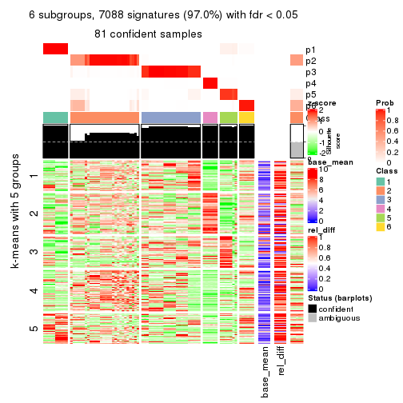
Signature heatmaps where rows are not scaled:
get_signatures(res, k = 2, scale_rows = FALSE)
get_signatures(res, k = 3, scale_rows = FALSE)
get_signatures(res, k = 4, scale_rows = FALSE)
get_signatures(res, k = 5, scale_rows = FALSE)
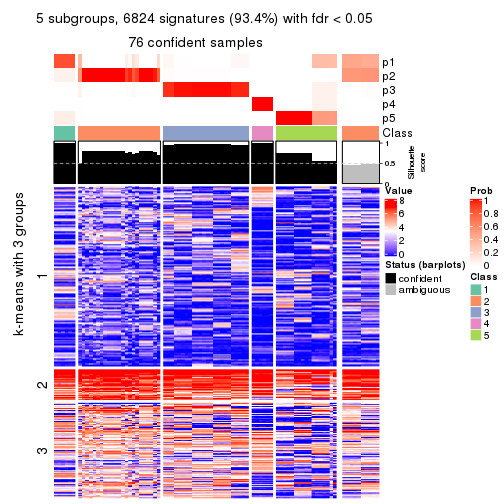
get_signatures(res, k = 6, scale_rows = FALSE)
Compare the overlap of signatures from different k:
compare_signatures(res)
get_signature() returns a data frame invisibly. TO get the list of signatures, the function
call should be assigned to a variable explicitly. In following code, if plot argument is set
to FALSE, no heatmap is plotted while only the differential analysis is performed.
# code only for demonstration
tb = get_signature(res, k = ..., plot = FALSE)
An example of the output of tb is:
#> which_row fdr mean_1 mean_2 scaled_mean_1 scaled_mean_2 km
#> 1 38 0.042760348 8.373488 9.131774 -0.5533452 0.5164555 1
#> 2 40 0.018707592 7.106213 8.469186 -0.6173731 0.5762149 1
#> 3 55 0.019134737 10.221463 11.207825 -0.6159697 0.5749050 1
#> 4 59 0.006059896 5.921854 7.869574 -0.6899429 0.6439467 1
#> 5 60 0.018055526 8.928898 10.211722 -0.6204761 0.5791110 1
#> 6 98 0.009384629 15.714769 14.887706 0.6635654 -0.6193277 2
...
The columns in tb are:
which_row: row indices corresponding to the input matrix.fdr: FDR for the differential test. mean_x: The mean value in group x.scaled_mean_x: The mean value in group x after rows are scaled.km: Row groups if k-means clustering is applied to rows.UMAP plot which shows how samples are separated.
dimension_reduction(res, k = 2, method = "UMAP")
dimension_reduction(res, k = 3, method = "UMAP")
dimension_reduction(res, k = 4, method = "UMAP")
dimension_reduction(res, k = 5, method = "UMAP")
dimension_reduction(res, k = 6, method = "UMAP")

Following heatmap shows how subgroups are split when increasing k:
collect_classes(res)
If matrix rows can be associated to genes, consider to use functional_enrichment(res,
...) to perform function enrichment for the signature genes. See this vignette for more detailed explanations.
The object with results only for a single top-value method and a single partition method can be extracted as:
res = res_list["MAD", "NMF"]
# you can also extract it by
# res = res_list["MAD:NMF"]
A summary of res and all the functions that can be applied to it:
res
#> A 'ConsensusPartition' object with k = 2, 3, 4, 5, 6.
#> On a matrix with 7309 rows and 86 columns.
#> Top rows (731, 1462, 2192, 2923, 3654) are extracted by 'MAD' method.
#> Subgroups are detected by 'NMF' method.
#> Performed in total 1250 partitions by row resampling.
#> Best k for subgroups seems to be 4.
#>
#> Following methods can be applied to this 'ConsensusPartition' object:
#> [1] "cola_report" "collect_classes" "collect_plots"
#> [4] "collect_stats" "colnames" "compare_signatures"
#> [7] "consensus_heatmap" "dimension_reduction" "functional_enrichment"
#> [10] "get_anno_col" "get_anno" "get_classes"
#> [13] "get_consensus" "get_matrix" "get_membership"
#> [16] "get_param" "get_signatures" "get_stats"
#> [19] "is_best_k" "is_stable_k" "membership_heatmap"
#> [22] "ncol" "nrow" "plot_ecdf"
#> [25] "rownames" "select_partition_number" "show"
#> [28] "suggest_best_k" "test_to_known_factors"
collect_plots() function collects all the plots made from res for all k (number of partitions)
into one single page to provide an easy and fast comparison between different k.
collect_plots(res)
The plots are:
k and the heatmap of
predicted classes for each k.k.k.k.All the plots in panels can be made by individual functions and they are plotted later in this section.
select_partition_number() produces several plots showing different
statistics for choosing “optimized” k. There are following statistics:
k;k, the area increased is defined as \(A_k - A_{k-1}\).The detailed explanations of these statistics can be found in the cola vignette.
Generally speaking, lower PAC score, higher mean silhouette score or higher
concordance corresponds to better partition. Rand index and Jaccard index
measure how similar the current partition is compared to partition with k-1.
If they are too similar, we won't accept k is better than k-1.
select_partition_number(res)
The numeric values for all these statistics can be obtained by get_stats().
get_stats(res)
#> k 1-PAC mean_silhouette concordance area_increased Rand Jaccard
#> 2 2 0.463 0.811 0.902 0.2545 0.774 0.774
#> 3 3 0.289 0.633 0.798 0.9397 0.784 0.727
#> 4 4 0.407 0.712 0.813 0.2684 0.702 0.522
#> 5 5 0.534 0.700 0.766 0.0971 0.906 0.747
#> 6 6 0.646 0.667 0.746 0.0498 0.936 0.801
suggest_best_k() suggests the best \(k\) based on these statistics. The rules are as follows:
suggest_best_k(res)
#> [1] 4
Following shows the table of the partitions (You need to click the show/hide
code output link to see it). The membership matrix (columns with name p*)
is inferred by
clue::cl_consensus()
function with the SE method. Basically the value in the membership matrix
represents the probability to belong to a certain group. The finall class
label for an item is determined with the group with highest probability it
belongs to.
In get_classes() function, the entropy is calculated from the membership
matrix and the silhouette score is calculated from the consensus matrix.
cbind(get_classes(res, k = 2), get_membership(res, k = 2))
#> class entropy silhouette p1 p2
#> SRR2240643 2 0.6148 0.831 0.152 0.848
#> SRR2240644 2 0.6148 0.831 0.152 0.848
#> SRR2240645 2 0.6048 0.835 0.148 0.852
#> SRR2240646 2 0.6048 0.835 0.148 0.852
#> SRR2240647 2 0.6048 0.835 0.148 0.852
#> SRR2240638 2 0.4562 0.871 0.096 0.904
#> SRR2240639 2 0.4562 0.871 0.096 0.904
#> SRR2240640 2 0.4690 0.869 0.100 0.900
#> SRR2240641 2 0.4690 0.869 0.100 0.900
#> SRR2240642 2 0.4690 0.869 0.100 0.900
#> SRR2240633 2 0.5519 0.853 0.128 0.872
#> SRR2240634 2 0.5294 0.860 0.120 0.880
#> SRR2240635 2 0.5408 0.856 0.124 0.876
#> SRR2240636 2 0.5629 0.849 0.132 0.868
#> SRR2240637 2 0.5629 0.849 0.132 0.868
#> SRR2240624 2 0.4022 0.879 0.080 0.920
#> SRR2240625 2 0.4022 0.879 0.080 0.920
#> SRR2240626 2 0.3879 0.881 0.076 0.924
#> SRR2240627 2 0.5408 0.854 0.124 0.876
#> SRR2240628 2 0.5519 0.852 0.128 0.872
#> SRR2240629 2 0.5408 0.854 0.124 0.876
#> SRR2240630 2 0.5408 0.854 0.124 0.876
#> SRR2240631 2 0.5408 0.854 0.124 0.876
#> SRR2240632 2 0.5408 0.854 0.124 0.876
#> SRR2240613 1 0.9983 0.328 0.524 0.476
#> SRR2240614 1 0.9983 0.328 0.524 0.476
#> SRR2240615 1 0.9977 0.340 0.528 0.472
#> SRR2240616 1 0.9970 0.350 0.532 0.468
#> SRR2240617 1 0.9970 0.350 0.532 0.468
#> SRR2240618 1 0.2603 0.725 0.956 0.044
#> SRR2240619 1 0.2603 0.725 0.956 0.044
#> SRR2240620 1 0.2603 0.725 0.956 0.044
#> SRR2240621 1 0.2603 0.725 0.956 0.044
#> SRR2240622 1 0.2603 0.725 0.956 0.044
#> SRR2240623 1 0.2603 0.725 0.956 0.044
#> SRR2240609 2 0.0000 0.904 0.000 1.000
#> SRR2240610 2 0.0000 0.904 0.000 1.000
#> SRR2240611 2 0.0000 0.904 0.000 1.000
#> SRR2240612 2 0.0000 0.904 0.000 1.000
#> SRR2240594 2 0.1414 0.903 0.020 0.980
#> SRR2240595 2 0.1414 0.903 0.020 0.980
#> SRR2240596 2 0.1414 0.903 0.020 0.980
#> SRR2240597 2 0.1414 0.903 0.020 0.980
#> SRR2240598 2 0.1414 0.903 0.020 0.980
#> SRR2240604 2 0.0938 0.902 0.012 0.988
#> SRR2240605 2 0.0938 0.902 0.012 0.988
#> SRR2240606 2 0.0938 0.902 0.012 0.988
#> SRR2240607 2 0.0376 0.904 0.004 0.996
#> SRR2240608 2 0.0376 0.904 0.004 0.996
#> SRR2240599 2 0.4815 0.858 0.104 0.896
#> SRR2240600 2 0.4815 0.858 0.104 0.896
#> SRR2240601 2 0.4815 0.858 0.104 0.896
#> SRR2240602 2 0.4815 0.858 0.104 0.896
#> SRR2240603 2 0.4815 0.858 0.104 0.896
#> SRR2240584 2 0.1184 0.901 0.016 0.984
#> SRR2240585 2 0.1184 0.901 0.016 0.984
#> SRR2240586 2 0.1184 0.901 0.016 0.984
#> SRR2240587 2 0.1184 0.901 0.016 0.984
#> SRR2240588 2 0.1184 0.901 0.016 0.984
#> SRR2240589 2 0.9358 0.378 0.352 0.648
#> SRR2240590 2 0.9358 0.378 0.352 0.648
#> SRR2240591 2 0.9358 0.378 0.352 0.648
#> SRR2240592 2 0.9358 0.378 0.352 0.648
#> SRR2240593 2 0.9358 0.378 0.352 0.648
#> SRR2240578 2 0.1633 0.901 0.024 0.976
#> SRR2240579 2 0.1633 0.901 0.024 0.976
#> SRR2240580 2 0.1633 0.901 0.024 0.976
#> SRR2240581 2 0.1633 0.901 0.024 0.976
#> SRR2240582 2 0.1633 0.901 0.024 0.976
#> SRR2240583 2 0.1633 0.901 0.024 0.976
#> SRR1825969 2 0.0000 0.904 0.000 1.000
#> SRR1825968 2 0.0938 0.903 0.012 0.988
#> SRR1825970 2 0.1184 0.903 0.016 0.984
#> SRR1825966 2 0.0376 0.904 0.004 0.996
#> SRR1825967 2 0.0376 0.904 0.004 0.996
#> SRR1825965 2 0.0672 0.903 0.008 0.992
#> SRR1825962 2 0.0672 0.904 0.008 0.992
#> SRR1825963 2 0.0376 0.904 0.004 0.996
#> SRR1825964 2 0.0672 0.903 0.008 0.992
#> SRR1825961 2 0.6048 0.830 0.148 0.852
#> SRR1825960 2 0.1414 0.900 0.020 0.980
#> SRR1825958 2 0.0376 0.904 0.004 0.996
#> SRR1825959 2 0.0000 0.904 0.000 1.000
#> SRR1825956 2 0.0376 0.904 0.004 0.996
#> SRR1825957 2 0.1184 0.901 0.016 0.984
#> SRR1825955 2 0.0672 0.904 0.008 0.992
cbind(get_classes(res, k = 3), get_membership(res, k = 3))
#> class entropy silhouette p1 p2 p3
#> SRR2240643 2 0.8350 0.3693 0.088 0.532 0.380
#> SRR2240644 2 0.8350 0.3693 0.088 0.532 0.380
#> SRR2240645 2 0.8350 0.3693 0.088 0.532 0.380
#> SRR2240646 2 0.8350 0.3693 0.088 0.532 0.380
#> SRR2240647 2 0.8350 0.3693 0.088 0.532 0.380
#> SRR2240638 2 0.7331 0.5774 0.072 0.672 0.256
#> SRR2240639 2 0.7331 0.5774 0.072 0.672 0.256
#> SRR2240640 2 0.7331 0.5774 0.072 0.672 0.256
#> SRR2240641 2 0.7331 0.5774 0.072 0.672 0.256
#> SRR2240642 2 0.7331 0.5774 0.072 0.672 0.256
#> SRR2240633 2 0.8624 0.2123 0.100 0.476 0.424
#> SRR2240634 2 0.8624 0.2123 0.100 0.476 0.424
#> SRR2240635 2 0.8624 0.2123 0.100 0.476 0.424
#> SRR2240636 2 0.8624 0.2123 0.100 0.476 0.424
#> SRR2240637 2 0.8624 0.2123 0.100 0.476 0.424
#> SRR2240624 2 0.5847 0.6617 0.048 0.780 0.172
#> SRR2240625 2 0.5847 0.6617 0.048 0.780 0.172
#> SRR2240626 2 0.5847 0.6617 0.048 0.780 0.172
#> SRR2240627 2 0.7742 0.5279 0.080 0.632 0.288
#> SRR2240628 2 0.7770 0.5247 0.080 0.628 0.292
#> SRR2240629 2 0.7742 0.5279 0.080 0.632 0.288
#> SRR2240630 2 0.7742 0.5279 0.080 0.632 0.288
#> SRR2240631 2 0.7742 0.5279 0.080 0.632 0.288
#> SRR2240632 2 0.7742 0.5279 0.080 0.632 0.288
#> SRR2240613 3 0.7216 0.4859 0.176 0.112 0.712
#> SRR2240614 3 0.7216 0.4859 0.176 0.112 0.712
#> SRR2240615 3 0.7216 0.4859 0.176 0.112 0.712
#> SRR2240616 3 0.7216 0.4859 0.176 0.112 0.712
#> SRR2240617 3 0.7216 0.4859 0.176 0.112 0.712
#> SRR2240618 1 0.0237 1.0000 0.996 0.000 0.004
#> SRR2240619 1 0.0237 1.0000 0.996 0.000 0.004
#> SRR2240620 1 0.0237 1.0000 0.996 0.000 0.004
#> SRR2240621 1 0.0237 1.0000 0.996 0.000 0.004
#> SRR2240622 1 0.0237 1.0000 0.996 0.000 0.004
#> SRR2240623 1 0.0237 1.0000 0.996 0.000 0.004
#> SRR2240609 2 0.0000 0.7538 0.000 1.000 0.000
#> SRR2240610 2 0.0000 0.7538 0.000 1.000 0.000
#> SRR2240611 2 0.0000 0.7538 0.000 1.000 0.000
#> SRR2240612 2 0.0000 0.7538 0.000 1.000 0.000
#> SRR2240594 2 0.2448 0.7313 0.000 0.924 0.076
#> SRR2240595 2 0.2448 0.7313 0.000 0.924 0.076
#> SRR2240596 2 0.2448 0.7313 0.000 0.924 0.076
#> SRR2240597 2 0.2448 0.7313 0.000 0.924 0.076
#> SRR2240598 2 0.2448 0.7313 0.000 0.924 0.076
#> SRR2240604 2 0.0983 0.7532 0.004 0.980 0.016
#> SRR2240605 2 0.0983 0.7532 0.004 0.980 0.016
#> SRR2240606 2 0.0747 0.7533 0.000 0.984 0.016
#> SRR2240607 2 0.0747 0.7533 0.000 0.984 0.016
#> SRR2240608 2 0.0747 0.7533 0.000 0.984 0.016
#> SRR2240599 3 0.6287 0.6463 0.024 0.272 0.704
#> SRR2240600 3 0.6287 0.6463 0.024 0.272 0.704
#> SRR2240601 3 0.6287 0.6463 0.024 0.272 0.704
#> SRR2240602 3 0.6287 0.6463 0.024 0.272 0.704
#> SRR2240603 3 0.6287 0.6463 0.024 0.272 0.704
#> SRR2240584 2 0.2959 0.7200 0.000 0.900 0.100
#> SRR2240585 2 0.2878 0.7231 0.000 0.904 0.096
#> SRR2240586 2 0.3116 0.7165 0.000 0.892 0.108
#> SRR2240587 2 0.3038 0.7200 0.000 0.896 0.104
#> SRR2240588 2 0.3038 0.7200 0.000 0.896 0.104
#> SRR2240589 3 0.6975 0.6156 0.124 0.144 0.732
#> SRR2240590 3 0.6975 0.6156 0.124 0.144 0.732
#> SRR2240591 3 0.7034 0.6138 0.124 0.148 0.728
#> SRR2240592 3 0.6975 0.6156 0.124 0.144 0.732
#> SRR2240593 3 0.6975 0.6156 0.124 0.144 0.732
#> SRR2240578 2 0.4750 0.5733 0.000 0.784 0.216
#> SRR2240579 2 0.4796 0.5678 0.000 0.780 0.220
#> SRR2240580 2 0.4796 0.5678 0.000 0.780 0.220
#> SRR2240581 2 0.4750 0.5733 0.000 0.784 0.216
#> SRR2240582 2 0.4750 0.5733 0.000 0.784 0.216
#> SRR2240583 2 0.4796 0.5678 0.000 0.780 0.220
#> SRR1825969 2 0.0237 0.7536 0.000 0.996 0.004
#> SRR1825968 2 0.0237 0.7546 0.000 0.996 0.004
#> SRR1825970 2 0.2261 0.7285 0.000 0.932 0.068
#> SRR1825966 2 0.0237 0.7532 0.000 0.996 0.004
#> SRR1825967 2 0.0424 0.7545 0.000 0.992 0.008
#> SRR1825965 2 0.1289 0.7435 0.000 0.968 0.032
#> SRR1825962 2 0.0424 0.7533 0.000 0.992 0.008
#> SRR1825963 2 0.0592 0.7528 0.000 0.988 0.012
#> SRR1825964 2 0.0424 0.7533 0.000 0.992 0.008
#> SRR1825961 3 0.8775 0.0547 0.116 0.384 0.500
#> SRR1825960 2 0.0983 0.7532 0.004 0.980 0.016
#> SRR1825958 2 0.0892 0.7533 0.000 0.980 0.020
#> SRR1825959 2 0.0237 0.7532 0.000 0.996 0.004
#> SRR1825956 2 0.0424 0.7543 0.000 0.992 0.008
#> SRR1825957 2 0.0829 0.7537 0.004 0.984 0.012
#> SRR1825955 2 0.0237 0.7532 0.000 0.996 0.004
cbind(get_classes(res, k = 4), get_membership(res, k = 4))
#> class entropy silhouette p1 p2 p3 p4
#> SRR2240643 3 0.6224 0.720 0.088 0.236 0.668 0.008
#> SRR2240644 3 0.6224 0.720 0.088 0.236 0.668 0.008
#> SRR2240645 3 0.6224 0.720 0.088 0.236 0.668 0.008
#> SRR2240646 3 0.6224 0.720 0.088 0.236 0.668 0.008
#> SRR2240647 3 0.6224 0.720 0.088 0.236 0.668 0.008
#> SRR2240638 3 0.6956 0.536 0.088 0.400 0.504 0.008
#> SRR2240639 3 0.6956 0.536 0.088 0.400 0.504 0.008
#> SRR2240640 3 0.6956 0.536 0.088 0.400 0.504 0.008
#> SRR2240641 3 0.6956 0.536 0.088 0.400 0.504 0.008
#> SRR2240642 3 0.6956 0.536 0.088 0.400 0.504 0.008
#> SRR2240633 3 0.4599 0.699 0.036 0.152 0.800 0.012
#> SRR2240634 3 0.4508 0.700 0.032 0.152 0.804 0.012
#> SRR2240635 3 0.4599 0.699 0.036 0.152 0.800 0.012
#> SRR2240636 3 0.4599 0.699 0.036 0.152 0.800 0.012
#> SRR2240637 3 0.4599 0.699 0.036 0.152 0.800 0.012
#> SRR2240624 2 0.6093 -0.303 0.036 0.508 0.452 0.004
#> SRR2240625 2 0.6081 -0.275 0.036 0.520 0.440 0.004
#> SRR2240626 2 0.6019 -0.308 0.032 0.508 0.456 0.004
#> SRR2240627 3 0.5243 0.734 0.012 0.276 0.696 0.016
#> SRR2240628 3 0.5243 0.734 0.012 0.276 0.696 0.016
#> SRR2240629 3 0.5188 0.737 0.012 0.268 0.704 0.016
#> SRR2240630 3 0.5188 0.737 0.012 0.268 0.704 0.016
#> SRR2240631 3 0.5216 0.736 0.012 0.272 0.700 0.016
#> SRR2240632 3 0.5216 0.736 0.012 0.272 0.700 0.016
#> SRR2240613 3 0.5219 0.355 0.216 0.000 0.728 0.056
#> SRR2240614 3 0.5219 0.355 0.216 0.000 0.728 0.056
#> SRR2240615 3 0.5219 0.355 0.216 0.000 0.728 0.056
#> SRR2240616 3 0.5219 0.355 0.216 0.000 0.728 0.056
#> SRR2240617 3 0.5219 0.355 0.216 0.000 0.728 0.056
#> SRR2240618 4 0.0524 1.000 0.004 0.000 0.008 0.988
#> SRR2240619 4 0.0524 1.000 0.004 0.000 0.008 0.988
#> SRR2240620 4 0.0524 1.000 0.004 0.000 0.008 0.988
#> SRR2240621 4 0.0524 1.000 0.004 0.000 0.008 0.988
#> SRR2240622 4 0.0524 1.000 0.004 0.000 0.008 0.988
#> SRR2240623 4 0.0524 1.000 0.004 0.000 0.008 0.988
#> SRR2240609 2 0.0000 0.846 0.000 1.000 0.000 0.000
#> SRR2240610 2 0.0000 0.846 0.000 1.000 0.000 0.000
#> SRR2240611 2 0.0000 0.846 0.000 1.000 0.000 0.000
#> SRR2240612 2 0.0000 0.846 0.000 1.000 0.000 0.000
#> SRR2240594 2 0.3015 0.814 0.092 0.884 0.024 0.000
#> SRR2240595 2 0.3080 0.814 0.096 0.880 0.024 0.000
#> SRR2240596 2 0.3015 0.815 0.092 0.884 0.024 0.000
#> SRR2240597 2 0.3080 0.814 0.096 0.880 0.024 0.000
#> SRR2240598 2 0.3015 0.815 0.092 0.884 0.024 0.000
#> SRR2240604 2 0.0657 0.846 0.004 0.984 0.012 0.000
#> SRR2240605 2 0.0657 0.846 0.004 0.984 0.012 0.000
#> SRR2240606 2 0.0657 0.846 0.004 0.984 0.012 0.000
#> SRR2240607 2 0.0657 0.846 0.004 0.984 0.012 0.000
#> SRR2240608 2 0.0657 0.846 0.004 0.984 0.012 0.000
#> SRR2240599 1 0.5018 0.805 0.768 0.144 0.088 0.000
#> SRR2240600 1 0.5018 0.805 0.768 0.144 0.088 0.000
#> SRR2240601 1 0.4955 0.804 0.772 0.144 0.084 0.000
#> SRR2240602 1 0.5018 0.805 0.768 0.144 0.088 0.000
#> SRR2240603 1 0.5018 0.805 0.768 0.144 0.088 0.000
#> SRR2240584 2 0.3529 0.796 0.152 0.836 0.012 0.000
#> SRR2240585 2 0.3450 0.795 0.156 0.836 0.008 0.000
#> SRR2240586 2 0.3545 0.790 0.164 0.828 0.008 0.000
#> SRR2240587 2 0.3450 0.796 0.156 0.836 0.008 0.000
#> SRR2240588 2 0.3450 0.795 0.156 0.836 0.008 0.000
#> SRR2240589 1 0.3705 0.790 0.868 0.016 0.076 0.040
#> SRR2240590 1 0.3705 0.790 0.868 0.016 0.076 0.040
#> SRR2240591 1 0.3705 0.790 0.868 0.016 0.076 0.040
#> SRR2240592 1 0.3705 0.790 0.868 0.016 0.076 0.040
#> SRR2240593 1 0.3705 0.790 0.868 0.016 0.076 0.040
#> SRR2240578 2 0.5250 0.549 0.316 0.660 0.024 0.000
#> SRR2240579 2 0.5228 0.559 0.312 0.664 0.024 0.000
#> SRR2240580 2 0.5228 0.559 0.312 0.664 0.024 0.000
#> SRR2240581 2 0.5228 0.557 0.312 0.664 0.024 0.000
#> SRR2240582 2 0.5228 0.557 0.312 0.664 0.024 0.000
#> SRR2240583 2 0.5271 0.542 0.320 0.656 0.024 0.000
#> SRR1825969 2 0.1388 0.828 0.012 0.960 0.028 0.000
#> SRR1825968 2 0.0672 0.840 0.008 0.984 0.008 0.000
#> SRR1825970 2 0.2563 0.823 0.072 0.908 0.020 0.000
#> SRR1825966 2 0.0657 0.844 0.004 0.984 0.012 0.000
#> SRR1825967 2 0.0707 0.842 0.000 0.980 0.020 0.000
#> SRR1825965 2 0.2662 0.820 0.084 0.900 0.016 0.000
#> SRR1825962 2 0.0524 0.847 0.004 0.988 0.008 0.000
#> SRR1825963 2 0.0469 0.845 0.000 0.988 0.012 0.000
#> SRR1825964 2 0.0927 0.846 0.016 0.976 0.008 0.000
#> SRR1825961 3 0.5662 0.636 0.080 0.144 0.752 0.024
#> SRR1825960 2 0.1284 0.843 0.024 0.964 0.012 0.000
#> SRR1825958 2 0.1004 0.840 0.004 0.972 0.024 0.000
#> SRR1825959 2 0.0376 0.847 0.004 0.992 0.004 0.000
#> SRR1825956 2 0.1174 0.832 0.012 0.968 0.020 0.000
#> SRR1825957 2 0.1151 0.832 0.008 0.968 0.024 0.000
#> SRR1825955 2 0.0672 0.847 0.008 0.984 0.008 0.000
cbind(get_classes(res, k = 5), get_membership(res, k = 5))
#> class entropy silhouette p1 p2 p3 p4 p5
#> SRR2240643 3 0.4046 0.583 0.012 0.116 0.808 0.000 0.064
#> SRR2240644 3 0.4046 0.583 0.012 0.116 0.808 0.000 0.064
#> SRR2240645 3 0.4046 0.583 0.012 0.116 0.808 0.000 0.064
#> SRR2240646 3 0.4046 0.583 0.012 0.116 0.808 0.000 0.064
#> SRR2240647 3 0.4046 0.583 0.012 0.116 0.808 0.000 0.064
#> SRR2240638 3 0.4611 0.609 0.028 0.200 0.744 0.000 0.028
#> SRR2240639 3 0.4611 0.609 0.028 0.200 0.744 0.000 0.028
#> SRR2240640 3 0.4611 0.609 0.028 0.200 0.744 0.000 0.028
#> SRR2240641 3 0.4611 0.609 0.028 0.200 0.744 0.000 0.028
#> SRR2240642 3 0.4611 0.609 0.028 0.200 0.744 0.000 0.028
#> SRR2240633 5 0.5873 0.513 0.008 0.076 0.412 0.000 0.504
#> SRR2240634 5 0.5873 0.513 0.008 0.076 0.412 0.000 0.504
#> SRR2240635 5 0.5873 0.513 0.008 0.076 0.412 0.000 0.504
#> SRR2240636 5 0.5873 0.513 0.008 0.076 0.412 0.000 0.504
#> SRR2240637 5 0.5873 0.513 0.008 0.076 0.412 0.000 0.504
#> SRR2240624 3 0.5652 0.505 0.000 0.404 0.516 0.000 0.080
#> SRR2240625 3 0.5713 0.493 0.000 0.416 0.500 0.000 0.084
#> SRR2240626 3 0.5697 0.504 0.000 0.404 0.512 0.000 0.084
#> SRR2240627 3 0.6383 0.263 0.000 0.184 0.488 0.000 0.328
#> SRR2240628 3 0.6392 0.263 0.000 0.184 0.484 0.000 0.332
#> SRR2240629 3 0.6392 0.263 0.000 0.184 0.484 0.000 0.332
#> SRR2240630 3 0.6392 0.263 0.000 0.184 0.484 0.000 0.332
#> SRR2240631 3 0.6383 0.263 0.000 0.184 0.488 0.000 0.328
#> SRR2240632 3 0.6392 0.263 0.000 0.184 0.484 0.000 0.332
#> SRR2240613 5 0.3089 0.662 0.032 0.004 0.076 0.012 0.876
#> SRR2240614 5 0.3089 0.662 0.032 0.004 0.076 0.012 0.876
#> SRR2240615 5 0.3089 0.662 0.032 0.004 0.076 0.012 0.876
#> SRR2240616 5 0.3089 0.662 0.032 0.004 0.076 0.012 0.876
#> SRR2240617 5 0.3089 0.662 0.032 0.004 0.076 0.012 0.876
#> SRR2240618 4 0.0000 1.000 0.000 0.000 0.000 1.000 0.000
#> SRR2240619 4 0.0000 1.000 0.000 0.000 0.000 1.000 0.000
#> SRR2240620 4 0.0000 1.000 0.000 0.000 0.000 1.000 0.000
#> SRR2240621 4 0.0000 1.000 0.000 0.000 0.000 1.000 0.000
#> SRR2240622 4 0.0000 1.000 0.000 0.000 0.000 1.000 0.000
#> SRR2240623 4 0.0000 1.000 0.000 0.000 0.000 1.000 0.000
#> SRR2240609 2 0.0703 0.854 0.000 0.976 0.024 0.000 0.000
#> SRR2240610 2 0.0703 0.854 0.000 0.976 0.024 0.000 0.000
#> SRR2240611 2 0.0703 0.854 0.000 0.976 0.024 0.000 0.000
#> SRR2240612 2 0.0703 0.854 0.000 0.976 0.024 0.000 0.000
#> SRR2240594 2 0.3533 0.789 0.056 0.836 0.104 0.000 0.004
#> SRR2240595 2 0.3533 0.789 0.056 0.836 0.104 0.000 0.004
#> SRR2240596 2 0.3547 0.791 0.060 0.836 0.100 0.000 0.004
#> SRR2240597 2 0.3533 0.789 0.056 0.836 0.104 0.000 0.004
#> SRR2240598 2 0.3547 0.791 0.060 0.836 0.100 0.000 0.004
#> SRR2240604 2 0.0727 0.856 0.004 0.980 0.012 0.000 0.004
#> SRR2240605 2 0.0727 0.856 0.004 0.980 0.012 0.000 0.004
#> SRR2240606 2 0.0727 0.856 0.004 0.980 0.012 0.000 0.004
#> SRR2240607 2 0.0727 0.856 0.004 0.980 0.012 0.000 0.004
#> SRR2240608 2 0.0727 0.856 0.004 0.980 0.012 0.000 0.004
#> SRR2240599 1 0.5435 0.744 0.692 0.112 0.016 0.000 0.180
#> SRR2240600 1 0.5435 0.744 0.692 0.112 0.016 0.000 0.180
#> SRR2240601 1 0.5435 0.744 0.692 0.112 0.016 0.000 0.180
#> SRR2240602 1 0.5435 0.744 0.692 0.112 0.016 0.000 0.180
#> SRR2240603 1 0.5435 0.744 0.692 0.112 0.016 0.000 0.180
#> SRR2240584 2 0.3882 0.773 0.168 0.788 0.044 0.000 0.000
#> SRR2240585 2 0.3921 0.770 0.172 0.784 0.044 0.000 0.000
#> SRR2240586 2 0.3921 0.770 0.172 0.784 0.044 0.000 0.000
#> SRR2240587 2 0.3882 0.773 0.168 0.788 0.044 0.000 0.000
#> SRR2240588 2 0.3882 0.773 0.168 0.788 0.044 0.000 0.000
#> SRR2240589 1 0.4028 0.731 0.816 0.020 0.104 0.000 0.060
#> SRR2240590 1 0.4028 0.731 0.816 0.020 0.104 0.000 0.060
#> SRR2240591 1 0.4028 0.731 0.816 0.020 0.104 0.000 0.060
#> SRR2240592 1 0.4028 0.731 0.816 0.020 0.104 0.000 0.060
#> SRR2240593 1 0.4028 0.731 0.816 0.020 0.104 0.000 0.060
#> SRR2240578 2 0.5386 0.500 0.336 0.608 0.020 0.000 0.036
#> SRR2240579 2 0.5284 0.524 0.328 0.620 0.020 0.000 0.032
#> SRR2240580 2 0.5299 0.516 0.332 0.616 0.020 0.000 0.032
#> SRR2240581 2 0.5284 0.524 0.328 0.620 0.020 0.000 0.032
#> SRR2240582 2 0.5299 0.516 0.332 0.616 0.020 0.000 0.032
#> SRR2240583 2 0.5371 0.509 0.332 0.612 0.020 0.000 0.036
#> SRR1825969 2 0.0865 0.852 0.000 0.972 0.024 0.000 0.004
#> SRR1825968 2 0.0865 0.852 0.000 0.972 0.024 0.000 0.004
#> SRR1825970 2 0.2060 0.840 0.052 0.924 0.016 0.000 0.008
#> SRR1825966 2 0.0609 0.855 0.000 0.980 0.020 0.000 0.000
#> SRR1825967 2 0.0609 0.855 0.000 0.980 0.020 0.000 0.000
#> SRR1825965 2 0.2962 0.819 0.096 0.872 0.016 0.000 0.016
#> SRR1825962 2 0.0290 0.857 0.000 0.992 0.008 0.000 0.000
#> SRR1825963 2 0.0865 0.852 0.000 0.972 0.024 0.000 0.004
#> SRR1825964 2 0.0912 0.855 0.012 0.972 0.016 0.000 0.000
#> SRR1825961 5 0.5312 0.510 0.008 0.056 0.308 0.000 0.628
#> SRR1825960 2 0.1306 0.849 0.016 0.960 0.016 0.000 0.008
#> SRR1825958 2 0.0865 0.852 0.000 0.972 0.024 0.000 0.004
#> SRR1825959 2 0.0771 0.856 0.004 0.976 0.020 0.000 0.000
#> SRR1825956 2 0.0703 0.854 0.000 0.976 0.024 0.000 0.000
#> SRR1825957 2 0.0794 0.854 0.000 0.972 0.028 0.000 0.000
#> SRR1825955 2 0.0324 0.858 0.004 0.992 0.004 0.000 0.000
cbind(get_classes(res, k = 6), get_membership(res, k = 6))
#> class entropy silhouette p1 p2 p3 p4 p5 p6
#> SRR2240643 3 0.6097 0.0303 0.016 0.040 0.460 0.000 0.064 0.420
#> SRR2240644 3 0.6097 0.0303 0.016 0.040 0.460 0.000 0.064 0.420
#> SRR2240645 3 0.6097 0.0303 0.016 0.040 0.460 0.000 0.064 0.420
#> SRR2240646 3 0.6095 0.0366 0.016 0.040 0.464 0.000 0.064 0.416
#> SRR2240647 3 0.6097 0.0303 0.016 0.040 0.460 0.000 0.064 0.420
#> SRR2240638 6 0.4772 0.9966 0.004 0.116 0.180 0.000 0.004 0.696
#> SRR2240639 6 0.4781 0.9866 0.004 0.120 0.176 0.000 0.004 0.696
#> SRR2240640 6 0.4772 0.9966 0.004 0.116 0.180 0.000 0.004 0.696
#> SRR2240641 6 0.4772 0.9966 0.004 0.116 0.180 0.000 0.004 0.696
#> SRR2240642 6 0.4772 0.9966 0.004 0.116 0.180 0.000 0.004 0.696
#> SRR2240633 3 0.4003 0.5016 0.012 0.040 0.804 0.000 0.108 0.036
#> SRR2240634 3 0.4026 0.5019 0.012 0.040 0.804 0.000 0.104 0.040
#> SRR2240635 3 0.4003 0.5016 0.012 0.040 0.804 0.000 0.108 0.036
#> SRR2240636 3 0.4026 0.5019 0.012 0.040 0.804 0.000 0.104 0.040
#> SRR2240637 3 0.4003 0.5016 0.012 0.040 0.804 0.000 0.108 0.036
#> SRR2240624 3 0.6708 -0.1165 0.000 0.308 0.360 0.000 0.032 0.300
#> SRR2240625 3 0.6702 -0.1054 0.000 0.312 0.364 0.000 0.032 0.292
#> SRR2240626 3 0.6707 -0.1085 0.000 0.312 0.360 0.000 0.032 0.296
#> SRR2240627 3 0.3206 0.5359 0.000 0.104 0.828 0.000 0.000 0.068
#> SRR2240628 3 0.3206 0.5359 0.000 0.104 0.828 0.000 0.000 0.068
#> SRR2240629 3 0.3611 0.5346 0.000 0.104 0.812 0.000 0.012 0.072
#> SRR2240630 3 0.3664 0.5330 0.000 0.104 0.808 0.000 0.012 0.076
#> SRR2240631 3 0.3261 0.5346 0.000 0.104 0.824 0.000 0.000 0.072
#> SRR2240632 3 0.3402 0.5341 0.000 0.104 0.820 0.000 0.004 0.072
#> SRR2240613 5 0.5208 0.4047 0.036 0.004 0.308 0.016 0.620 0.016
#> SRR2240614 5 0.5208 0.4047 0.036 0.004 0.308 0.016 0.620 0.016
#> SRR2240615 5 0.5208 0.4047 0.036 0.004 0.308 0.016 0.620 0.016
#> SRR2240616 5 0.5208 0.4047 0.036 0.004 0.308 0.016 0.620 0.016
#> SRR2240617 5 0.5208 0.4047 0.036 0.004 0.308 0.016 0.620 0.016
#> SRR2240618 4 0.0000 1.0000 0.000 0.000 0.000 1.000 0.000 0.000
#> SRR2240619 4 0.0000 1.0000 0.000 0.000 0.000 1.000 0.000 0.000
#> SRR2240620 4 0.0000 1.0000 0.000 0.000 0.000 1.000 0.000 0.000
#> SRR2240621 4 0.0000 1.0000 0.000 0.000 0.000 1.000 0.000 0.000
#> SRR2240622 4 0.0000 1.0000 0.000 0.000 0.000 1.000 0.000 0.000
#> SRR2240623 4 0.0000 1.0000 0.000 0.000 0.000 1.000 0.000 0.000
#> SRR2240609 2 0.0405 0.8778 0.000 0.988 0.004 0.000 0.000 0.008
#> SRR2240610 2 0.0508 0.8770 0.000 0.984 0.004 0.000 0.000 0.012
#> SRR2240611 2 0.0508 0.8770 0.000 0.984 0.004 0.000 0.000 0.012
#> SRR2240612 2 0.0508 0.8770 0.000 0.984 0.004 0.000 0.000 0.012
#> SRR2240594 2 0.3463 0.8033 0.032 0.840 0.020 0.000 0.016 0.092
#> SRR2240595 2 0.3448 0.8089 0.032 0.844 0.020 0.000 0.020 0.084
#> SRR2240596 2 0.3425 0.8061 0.028 0.844 0.020 0.000 0.020 0.088
#> SRR2240597 2 0.3463 0.8033 0.032 0.840 0.020 0.000 0.016 0.092
#> SRR2240598 2 0.3425 0.8061 0.028 0.844 0.020 0.000 0.020 0.088
#> SRR2240604 2 0.0146 0.8782 0.000 0.996 0.000 0.000 0.004 0.000
#> SRR2240605 2 0.0146 0.8782 0.000 0.996 0.000 0.000 0.004 0.000
#> SRR2240606 2 0.0146 0.8782 0.000 0.996 0.000 0.000 0.004 0.000
#> SRR2240607 2 0.0146 0.8782 0.000 0.996 0.000 0.000 0.004 0.000
#> SRR2240608 2 0.0146 0.8782 0.000 0.996 0.000 0.000 0.004 0.000
#> SRR2240599 5 0.7369 0.2302 0.340 0.080 0.020 0.000 0.384 0.176
#> SRR2240600 5 0.7369 0.2302 0.340 0.080 0.020 0.000 0.384 0.176
#> SRR2240601 5 0.7336 0.2230 0.344 0.076 0.020 0.000 0.384 0.176
#> SRR2240602 5 0.7369 0.2302 0.340 0.080 0.020 0.000 0.384 0.176
#> SRR2240603 5 0.7369 0.2302 0.340 0.080 0.020 0.000 0.384 0.176
#> SRR2240584 2 0.3429 0.8053 0.128 0.824 0.008 0.000 0.012 0.028
#> SRR2240585 2 0.3429 0.8055 0.128 0.824 0.008 0.000 0.012 0.028
#> SRR2240586 2 0.3551 0.7967 0.140 0.812 0.008 0.000 0.012 0.028
#> SRR2240587 2 0.3471 0.8026 0.132 0.820 0.008 0.000 0.012 0.028
#> SRR2240588 2 0.3429 0.8053 0.128 0.824 0.008 0.000 0.012 0.028
#> SRR2240589 1 0.0798 1.0000 0.976 0.004 0.004 0.004 0.000 0.012
#> SRR2240590 1 0.0798 1.0000 0.976 0.004 0.004 0.004 0.000 0.012
#> SRR2240591 1 0.0798 1.0000 0.976 0.004 0.004 0.004 0.000 0.012
#> SRR2240592 1 0.0798 1.0000 0.976 0.004 0.004 0.004 0.000 0.012
#> SRR2240593 1 0.0798 1.0000 0.976 0.004 0.004 0.004 0.000 0.012
#> SRR2240578 2 0.6144 0.5682 0.100 0.616 0.004 0.000 0.132 0.148
#> SRR2240579 2 0.6184 0.5621 0.104 0.612 0.004 0.000 0.132 0.148
#> SRR2240580 2 0.6184 0.5621 0.104 0.612 0.004 0.000 0.132 0.148
#> SRR2240581 2 0.6144 0.5682 0.100 0.616 0.004 0.000 0.132 0.148
#> SRR2240582 2 0.6184 0.5621 0.104 0.612 0.004 0.000 0.132 0.148
#> SRR2240583 2 0.6184 0.5621 0.104 0.612 0.004 0.000 0.132 0.148
#> SRR1825969 2 0.0692 0.8739 0.000 0.976 0.004 0.000 0.000 0.020
#> SRR1825968 2 0.0909 0.8707 0.000 0.968 0.012 0.000 0.000 0.020
#> SRR1825970 2 0.1636 0.8570 0.004 0.936 0.000 0.000 0.024 0.036
#> SRR1825966 2 0.0363 0.8773 0.000 0.988 0.000 0.000 0.000 0.012
#> SRR1825967 2 0.0260 0.8779 0.000 0.992 0.000 0.000 0.000 0.008
#> SRR1825965 2 0.2862 0.8249 0.012 0.872 0.004 0.000 0.072 0.040
#> SRR1825962 2 0.0146 0.8785 0.000 0.996 0.000 0.000 0.004 0.000
#> SRR1825963 2 0.0520 0.8763 0.000 0.984 0.008 0.000 0.000 0.008
#> SRR1825964 2 0.0146 0.8782 0.000 0.996 0.000 0.000 0.004 0.000
#> SRR1825961 3 0.5222 0.2860 0.008 0.024 0.624 0.000 0.292 0.052
#> SRR1825960 2 0.0622 0.8758 0.000 0.980 0.000 0.000 0.012 0.008
#> SRR1825958 2 0.0000 0.8781 0.000 1.000 0.000 0.000 0.000 0.000
#> SRR1825959 2 0.0436 0.8781 0.000 0.988 0.004 0.000 0.004 0.004
#> SRR1825956 2 0.0603 0.8766 0.000 0.980 0.000 0.000 0.004 0.016
#> SRR1825957 2 0.0777 0.8726 0.000 0.972 0.004 0.000 0.000 0.024
#> SRR1825955 2 0.0291 0.8784 0.000 0.992 0.004 0.000 0.004 0.000
Heatmaps for the consensus matrix. It visualizes the probability of two samples to be in a same group.
consensus_heatmap(res, k = 2)
consensus_heatmap(res, k = 3)
consensus_heatmap(res, k = 4)
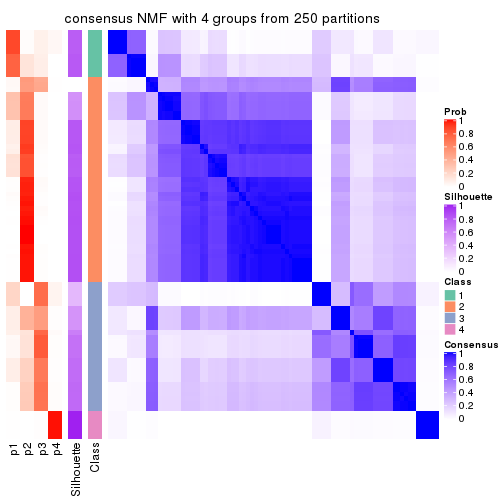
consensus_heatmap(res, k = 5)
consensus_heatmap(res, k = 6)
Heatmaps for the membership of samples in all partitions to see how consistent they are:
membership_heatmap(res, k = 2)

membership_heatmap(res, k = 3)
membership_heatmap(res, k = 4)
membership_heatmap(res, k = 5)
membership_heatmap(res, k = 6)
As soon as we have had the classes for columns, we can look for signatures which are significantly different between classes which can be candidate marks for certain classes. Following are the heatmaps for signatures.
Signature heatmaps where rows are scaled:
get_signatures(res, k = 2)
get_signatures(res, k = 3)

get_signatures(res, k = 4)
get_signatures(res, k = 5)
get_signatures(res, k = 6)
Signature heatmaps where rows are not scaled:
get_signatures(res, k = 2, scale_rows = FALSE)
get_signatures(res, k = 3, scale_rows = FALSE)
get_signatures(res, k = 4, scale_rows = FALSE)
get_signatures(res, k = 5, scale_rows = FALSE)
get_signatures(res, k = 6, scale_rows = FALSE)
Compare the overlap of signatures from different k:
compare_signatures(res)
get_signature() returns a data frame invisibly. TO get the list of signatures, the function
call should be assigned to a variable explicitly. In following code, if plot argument is set
to FALSE, no heatmap is plotted while only the differential analysis is performed.
# code only for demonstration
tb = get_signature(res, k = ..., plot = FALSE)
An example of the output of tb is:
#> which_row fdr mean_1 mean_2 scaled_mean_1 scaled_mean_2 km
#> 1 38 0.042760348 8.373488 9.131774 -0.5533452 0.5164555 1
#> 2 40 0.018707592 7.106213 8.469186 -0.6173731 0.5762149 1
#> 3 55 0.019134737 10.221463 11.207825 -0.6159697 0.5749050 1
#> 4 59 0.006059896 5.921854 7.869574 -0.6899429 0.6439467 1
#> 5 60 0.018055526 8.928898 10.211722 -0.6204761 0.5791110 1
#> 6 98 0.009384629 15.714769 14.887706 0.6635654 -0.6193277 2
...
The columns in tb are:
which_row: row indices corresponding to the input matrix.fdr: FDR for the differential test. mean_x: The mean value in group x.scaled_mean_x: The mean value in group x after rows are scaled.km: Row groups if k-means clustering is applied to rows.UMAP plot which shows how samples are separated.
dimension_reduction(res, k = 2, method = "UMAP")
dimension_reduction(res, k = 3, method = "UMAP")
dimension_reduction(res, k = 4, method = "UMAP")
dimension_reduction(res, k = 5, method = "UMAP")
dimension_reduction(res, k = 6, method = "UMAP")
Following heatmap shows how subgroups are split when increasing k:
collect_classes(res)
If matrix rows can be associated to genes, consider to use functional_enrichment(res,
...) to perform function enrichment for the signature genes. See this vignette for more detailed explanations.
The object with results only for a single top-value method and a single partition method can be extracted as:
res = res_list["ATC", "hclust"]
# you can also extract it by
# res = res_list["ATC:hclust"]
A summary of res and all the functions that can be applied to it:
res
#> A 'ConsensusPartition' object with k = 2, 3, 4, 5, 6.
#> On a matrix with 7309 rows and 86 columns.
#> Top rows (731, 1462, 2192, 2923, 3654) are extracted by 'ATC' method.
#> Subgroups are detected by 'hclust' method.
#> Performed in total 1250 partitions by row resampling.
#> Best k for subgroups seems to be 3.
#>
#> Following methods can be applied to this 'ConsensusPartition' object:
#> [1] "cola_report" "collect_classes" "collect_plots"
#> [4] "collect_stats" "colnames" "compare_signatures"
#> [7] "consensus_heatmap" "dimension_reduction" "functional_enrichment"
#> [10] "get_anno_col" "get_anno" "get_classes"
#> [13] "get_consensus" "get_matrix" "get_membership"
#> [16] "get_param" "get_signatures" "get_stats"
#> [19] "is_best_k" "is_stable_k" "membership_heatmap"
#> [22] "ncol" "nrow" "plot_ecdf"
#> [25] "rownames" "select_partition_number" "show"
#> [28] "suggest_best_k" "test_to_known_factors"
collect_plots() function collects all the plots made from res for all k (number of partitions)
into one single page to provide an easy and fast comparison between different k.
collect_plots(res)
The plots are:
k and the heatmap of
predicted classes for each k.k.k.k.All the plots in panels can be made by individual functions and they are plotted later in this section.
select_partition_number() produces several plots showing different
statistics for choosing “optimized” k. There are following statistics:
k;k, the area increased is defined as \(A_k - A_{k-1}\).The detailed explanations of these statistics can be found in the cola vignette.
Generally speaking, lower PAC score, higher mean silhouette score or higher
concordance corresponds to better partition. Rand index and Jaccard index
measure how similar the current partition is compared to partition with k-1.
If they are too similar, we won't accept k is better than k-1.
select_partition_number(res)
The numeric values for all these statistics can be obtained by get_stats().
get_stats(res)
#> k 1-PAC mean_silhouette concordance area_increased Rand Jaccard
#> 2 2 1.000 0.990 0.995 0.3270 0.679 0.679
#> 3 3 1.000 0.991 0.996 0.3116 0.897 0.848
#> 4 4 1.000 0.982 0.992 0.0436 0.982 0.969
#> 5 5 0.720 0.813 0.879 0.2324 0.999 0.998
#> 6 6 0.788 0.919 0.945 0.2080 0.744 0.540
suggest_best_k() suggests the best \(k\) based on these statistics. The rules are as follows:
suggest_best_k(res)
#> [1] 3
#> attr(,"optional")
#> [1] 2
There is also optional best \(k\) = 2 that is worth to check.
Following shows the table of the partitions (You need to click the show/hide
code output link to see it). The membership matrix (columns with name p*)
is inferred by
clue::cl_consensus()
function with the SE method. Basically the value in the membership matrix
represents the probability to belong to a certain group. The finall class
label for an item is determined with the group with highest probability it
belongs to.
In get_classes() function, the entropy is calculated from the membership
matrix and the silhouette score is calculated from the consensus matrix.
cbind(get_classes(res, k = 2), get_membership(res, k = 2))
#> class entropy silhouette p1 p2
#> SRR2240643 2 0.0000 0.994 0.000 1.000
#> SRR2240644 2 0.0000 0.994 0.000 1.000
#> SRR2240645 2 0.0000 0.994 0.000 1.000
#> SRR2240646 2 0.0000 0.994 0.000 1.000
#> SRR2240647 2 0.0000 0.994 0.000 1.000
#> SRR2240638 2 0.0000 0.994 0.000 1.000
#> SRR2240639 2 0.0000 0.994 0.000 1.000
#> SRR2240640 2 0.0000 0.994 0.000 1.000
#> SRR2240641 2 0.0000 0.994 0.000 1.000
#> SRR2240642 2 0.0000 0.994 0.000 1.000
#> SRR2240633 2 0.3733 0.928 0.072 0.928
#> SRR2240634 2 0.3733 0.928 0.072 0.928
#> SRR2240635 2 0.3733 0.928 0.072 0.928
#> SRR2240636 2 0.3733 0.928 0.072 0.928
#> SRR2240637 2 0.3733 0.928 0.072 0.928
#> SRR2240624 2 0.0000 0.994 0.000 1.000
#> SRR2240625 2 0.0000 0.994 0.000 1.000
#> SRR2240626 2 0.0000 0.994 0.000 1.000
#> SRR2240627 2 0.0000 0.994 0.000 1.000
#> SRR2240628 2 0.0000 0.994 0.000 1.000
#> SRR2240629 2 0.0000 0.994 0.000 1.000
#> SRR2240630 2 0.0000 0.994 0.000 1.000
#> SRR2240631 2 0.0000 0.994 0.000 1.000
#> SRR2240632 2 0.0000 0.994 0.000 1.000
#> SRR2240613 1 0.0000 1.000 1.000 0.000
#> SRR2240614 1 0.0000 1.000 1.000 0.000
#> SRR2240615 1 0.0000 1.000 1.000 0.000
#> SRR2240616 1 0.0000 1.000 1.000 0.000
#> SRR2240617 1 0.0000 1.000 1.000 0.000
#> SRR2240618 2 0.0938 0.985 0.012 0.988
#> SRR2240619 2 0.0938 0.985 0.012 0.988
#> SRR2240620 2 0.0938 0.985 0.012 0.988
#> SRR2240621 2 0.0938 0.985 0.012 0.988
#> SRR2240622 2 0.0938 0.985 0.012 0.988
#> SRR2240623 2 0.0938 0.985 0.012 0.988
#> SRR2240609 2 0.0000 0.994 0.000 1.000
#> SRR2240610 2 0.0000 0.994 0.000 1.000
#> SRR2240611 2 0.0000 0.994 0.000 1.000
#> SRR2240612 2 0.0000 0.994 0.000 1.000
#> SRR2240594 2 0.0000 0.994 0.000 1.000
#> SRR2240595 2 0.0000 0.994 0.000 1.000
#> SRR2240596 2 0.0000 0.994 0.000 1.000
#> SRR2240597 2 0.0000 0.994 0.000 1.000
#> SRR2240598 2 0.0000 0.994 0.000 1.000
#> SRR2240604 2 0.0000 0.994 0.000 1.000
#> SRR2240605 2 0.0000 0.994 0.000 1.000
#> SRR2240606 2 0.0000 0.994 0.000 1.000
#> SRR2240607 2 0.0000 0.994 0.000 1.000
#> SRR2240608 2 0.0000 0.994 0.000 1.000
#> SRR2240599 1 0.0000 1.000 1.000 0.000
#> SRR2240600 1 0.0000 1.000 1.000 0.000
#> SRR2240601 1 0.0000 1.000 1.000 0.000
#> SRR2240602 1 0.0000 1.000 1.000 0.000
#> SRR2240603 1 0.0000 1.000 1.000 0.000
#> SRR2240584 2 0.0000 0.994 0.000 1.000
#> SRR2240585 2 0.0000 0.994 0.000 1.000
#> SRR2240586 2 0.0000 0.994 0.000 1.000
#> SRR2240587 2 0.0000 0.994 0.000 1.000
#> SRR2240588 2 0.0000 0.994 0.000 1.000
#> SRR2240589 1 0.0000 1.000 1.000 0.000
#> SRR2240590 1 0.0000 1.000 1.000 0.000
#> SRR2240591 1 0.0000 1.000 1.000 0.000
#> SRR2240592 1 0.0000 1.000 1.000 0.000
#> SRR2240593 1 0.0000 1.000 1.000 0.000
#> SRR2240578 2 0.0000 0.994 0.000 1.000
#> SRR2240579 2 0.0000 0.994 0.000 1.000
#> SRR2240580 2 0.0000 0.994 0.000 1.000
#> SRR2240581 2 0.0000 0.994 0.000 1.000
#> SRR2240582 2 0.0000 0.994 0.000 1.000
#> SRR2240583 2 0.0000 0.994 0.000 1.000
#> SRR1825969 2 0.0000 0.994 0.000 1.000
#> SRR1825968 2 0.0000 0.994 0.000 1.000
#> SRR1825970 1 0.0000 1.000 1.000 0.000
#> SRR1825966 2 0.0000 0.994 0.000 1.000
#> SRR1825967 2 0.0000 0.994 0.000 1.000
#> SRR1825965 2 0.0000 0.994 0.000 1.000
#> SRR1825962 2 0.0000 0.994 0.000 1.000
#> SRR1825963 2 0.0000 0.994 0.000 1.000
#> SRR1825964 2 0.0000 0.994 0.000 1.000
#> SRR1825961 1 0.0000 1.000 1.000 0.000
#> SRR1825960 2 0.0000 0.994 0.000 1.000
#> SRR1825958 2 0.0000 0.994 0.000 1.000
#> SRR1825959 2 0.0000 0.994 0.000 1.000
#> SRR1825956 2 0.0000 0.994 0.000 1.000
#> SRR1825957 2 0.0000 0.994 0.000 1.000
#> SRR1825955 2 0.0000 0.994 0.000 1.000
cbind(get_classes(res, k = 3), get_membership(res, k = 3))
#> class entropy silhouette p1 p2 p3
#> SRR2240643 2 0.000 0.994 0 1.000 0.000
#> SRR2240644 2 0.000 0.994 0 1.000 0.000
#> SRR2240645 2 0.000 0.994 0 1.000 0.000
#> SRR2240646 2 0.000 0.994 0 1.000 0.000
#> SRR2240647 2 0.000 0.994 0 1.000 0.000
#> SRR2240638 2 0.000 0.994 0 1.000 0.000
#> SRR2240639 2 0.000 0.994 0 1.000 0.000
#> SRR2240640 2 0.000 0.994 0 1.000 0.000
#> SRR2240641 2 0.000 0.994 0 1.000 0.000
#> SRR2240642 2 0.000 0.994 0 1.000 0.000
#> SRR2240633 2 0.236 0.923 0 0.928 0.072
#> SRR2240634 2 0.236 0.923 0 0.928 0.072
#> SRR2240635 2 0.236 0.923 0 0.928 0.072
#> SRR2240636 2 0.236 0.923 0 0.928 0.072
#> SRR2240637 2 0.236 0.923 0 0.928 0.072
#> SRR2240624 2 0.000 0.994 0 1.000 0.000
#> SRR2240625 2 0.000 0.994 0 1.000 0.000
#> SRR2240626 2 0.000 0.994 0 1.000 0.000
#> SRR2240627 2 0.000 0.994 0 1.000 0.000
#> SRR2240628 2 0.000 0.994 0 1.000 0.000
#> SRR2240629 2 0.000 0.994 0 1.000 0.000
#> SRR2240630 2 0.000 0.994 0 1.000 0.000
#> SRR2240631 2 0.000 0.994 0 1.000 0.000
#> SRR2240632 2 0.000 0.994 0 1.000 0.000
#> SRR2240613 3 0.000 1.000 0 0.000 1.000
#> SRR2240614 3 0.000 1.000 0 0.000 1.000
#> SRR2240615 3 0.000 1.000 0 0.000 1.000
#> SRR2240616 3 0.000 1.000 0 0.000 1.000
#> SRR2240617 3 0.000 1.000 0 0.000 1.000
#> SRR2240618 1 0.000 1.000 1 0.000 0.000
#> SRR2240619 1 0.000 1.000 1 0.000 0.000
#> SRR2240620 1 0.000 1.000 1 0.000 0.000
#> SRR2240621 1 0.000 1.000 1 0.000 0.000
#> SRR2240622 1 0.000 1.000 1 0.000 0.000
#> SRR2240623 1 0.000 1.000 1 0.000 0.000
#> SRR2240609 2 0.000 0.994 0 1.000 0.000
#> SRR2240610 2 0.000 0.994 0 1.000 0.000
#> SRR2240611 2 0.000 0.994 0 1.000 0.000
#> SRR2240612 2 0.000 0.994 0 1.000 0.000
#> SRR2240594 2 0.000 0.994 0 1.000 0.000
#> SRR2240595 2 0.000 0.994 0 1.000 0.000
#> SRR2240596 2 0.000 0.994 0 1.000 0.000
#> SRR2240597 2 0.000 0.994 0 1.000 0.000
#> SRR2240598 2 0.000 0.994 0 1.000 0.000
#> SRR2240604 2 0.000 0.994 0 1.000 0.000
#> SRR2240605 2 0.000 0.994 0 1.000 0.000
#> SRR2240606 2 0.000 0.994 0 1.000 0.000
#> SRR2240607 2 0.000 0.994 0 1.000 0.000
#> SRR2240608 2 0.000 0.994 0 1.000 0.000
#> SRR2240599 3 0.000 1.000 0 0.000 1.000
#> SRR2240600 3 0.000 1.000 0 0.000 1.000
#> SRR2240601 3 0.000 1.000 0 0.000 1.000
#> SRR2240602 3 0.000 1.000 0 0.000 1.000
#> SRR2240603 3 0.000 1.000 0 0.000 1.000
#> SRR2240584 2 0.000 0.994 0 1.000 0.000
#> SRR2240585 2 0.000 0.994 0 1.000 0.000
#> SRR2240586 2 0.000 0.994 0 1.000 0.000
#> SRR2240587 2 0.000 0.994 0 1.000 0.000
#> SRR2240588 2 0.000 0.994 0 1.000 0.000
#> SRR2240589 3 0.000 1.000 0 0.000 1.000
#> SRR2240590 3 0.000 1.000 0 0.000 1.000
#> SRR2240591 3 0.000 1.000 0 0.000 1.000
#> SRR2240592 3 0.000 1.000 0 0.000 1.000
#> SRR2240593 3 0.000 1.000 0 0.000 1.000
#> SRR2240578 2 0.000 0.994 0 1.000 0.000
#> SRR2240579 2 0.000 0.994 0 1.000 0.000
#> SRR2240580 2 0.000 0.994 0 1.000 0.000
#> SRR2240581 2 0.000 0.994 0 1.000 0.000
#> SRR2240582 2 0.000 0.994 0 1.000 0.000
#> SRR2240583 2 0.000 0.994 0 1.000 0.000
#> SRR1825969 2 0.000 0.994 0 1.000 0.000
#> SRR1825968 2 0.000 0.994 0 1.000 0.000
#> SRR1825970 3 0.000 1.000 0 0.000 1.000
#> SRR1825966 2 0.000 0.994 0 1.000 0.000
#> SRR1825967 2 0.000 0.994 0 1.000 0.000
#> SRR1825965 2 0.000 0.994 0 1.000 0.000
#> SRR1825962 2 0.000 0.994 0 1.000 0.000
#> SRR1825963 2 0.000 0.994 0 1.000 0.000
#> SRR1825964 2 0.000 0.994 0 1.000 0.000
#> SRR1825961 3 0.000 1.000 0 0.000 1.000
#> SRR1825960 2 0.000 0.994 0 1.000 0.000
#> SRR1825958 2 0.000 0.994 0 1.000 0.000
#> SRR1825959 2 0.000 0.994 0 1.000 0.000
#> SRR1825956 2 0.000 0.994 0 1.000 0.000
#> SRR1825957 2 0.000 0.994 0 1.000 0.000
#> SRR1825955 2 0.000 0.994 0 1.000 0.000
cbind(get_classes(res, k = 4), get_membership(res, k = 4))
#> class entropy silhouette p1 p2 p3 p4
#> SRR2240643 2 0.0000 0.994 0.000 1.000 0.000 0
#> SRR2240644 2 0.0000 0.994 0.000 1.000 0.000 0
#> SRR2240645 2 0.0000 0.994 0.000 1.000 0.000 0
#> SRR2240646 2 0.0000 0.994 0.000 1.000 0.000 0
#> SRR2240647 2 0.0000 0.994 0.000 1.000 0.000 0
#> SRR2240638 2 0.0000 0.994 0.000 1.000 0.000 0
#> SRR2240639 2 0.0000 0.994 0.000 1.000 0.000 0
#> SRR2240640 2 0.0000 0.994 0.000 1.000 0.000 0
#> SRR2240641 2 0.0000 0.994 0.000 1.000 0.000 0
#> SRR2240642 2 0.0000 0.994 0.000 1.000 0.000 0
#> SRR2240633 2 0.1867 0.928 0.000 0.928 0.072 0
#> SRR2240634 2 0.1867 0.928 0.000 0.928 0.072 0
#> SRR2240635 2 0.1867 0.928 0.000 0.928 0.072 0
#> SRR2240636 2 0.1867 0.928 0.000 0.928 0.072 0
#> SRR2240637 2 0.1867 0.928 0.000 0.928 0.072 0
#> SRR2240624 2 0.0000 0.994 0.000 1.000 0.000 0
#> SRR2240625 2 0.0000 0.994 0.000 1.000 0.000 0
#> SRR2240626 2 0.0000 0.994 0.000 1.000 0.000 0
#> SRR2240627 2 0.0000 0.994 0.000 1.000 0.000 0
#> SRR2240628 2 0.0000 0.994 0.000 1.000 0.000 0
#> SRR2240629 2 0.0000 0.994 0.000 1.000 0.000 0
#> SRR2240630 2 0.0000 0.994 0.000 1.000 0.000 0
#> SRR2240631 2 0.0000 0.994 0.000 1.000 0.000 0
#> SRR2240632 2 0.0000 0.994 0.000 1.000 0.000 0
#> SRR2240613 3 0.0000 0.926 0.000 0.000 1.000 0
#> SRR2240614 3 0.0000 0.926 0.000 0.000 1.000 0
#> SRR2240615 3 0.0000 0.926 0.000 0.000 1.000 0
#> SRR2240616 3 0.0000 0.926 0.000 0.000 1.000 0
#> SRR2240617 3 0.0000 0.926 0.000 0.000 1.000 0
#> SRR2240618 4 0.0000 1.000 0.000 0.000 0.000 1
#> SRR2240619 4 0.0000 1.000 0.000 0.000 0.000 1
#> SRR2240620 4 0.0000 1.000 0.000 0.000 0.000 1
#> SRR2240621 4 0.0000 1.000 0.000 0.000 0.000 1
#> SRR2240622 4 0.0000 1.000 0.000 0.000 0.000 1
#> SRR2240623 4 0.0000 1.000 0.000 0.000 0.000 1
#> SRR2240609 2 0.0000 0.994 0.000 1.000 0.000 0
#> SRR2240610 2 0.0000 0.994 0.000 1.000 0.000 0
#> SRR2240611 2 0.0000 0.994 0.000 1.000 0.000 0
#> SRR2240612 2 0.0000 0.994 0.000 1.000 0.000 0
#> SRR2240594 2 0.0000 0.994 0.000 1.000 0.000 0
#> SRR2240595 2 0.0000 0.994 0.000 1.000 0.000 0
#> SRR2240596 2 0.0000 0.994 0.000 1.000 0.000 0
#> SRR2240597 2 0.0000 0.994 0.000 1.000 0.000 0
#> SRR2240598 2 0.0000 0.994 0.000 1.000 0.000 0
#> SRR2240604 2 0.0000 0.994 0.000 1.000 0.000 0
#> SRR2240605 2 0.0000 0.994 0.000 1.000 0.000 0
#> SRR2240606 2 0.0000 0.994 0.000 1.000 0.000 0
#> SRR2240607 2 0.0000 0.994 0.000 1.000 0.000 0
#> SRR2240608 2 0.0000 0.994 0.000 1.000 0.000 0
#> SRR2240599 1 0.0000 0.998 1.000 0.000 0.000 0
#> SRR2240600 1 0.0000 0.998 1.000 0.000 0.000 0
#> SRR2240601 1 0.0000 0.998 1.000 0.000 0.000 0
#> SRR2240602 1 0.0000 0.998 1.000 0.000 0.000 0
#> SRR2240603 1 0.0000 0.998 1.000 0.000 0.000 0
#> SRR2240584 2 0.0000 0.994 0.000 1.000 0.000 0
#> SRR2240585 2 0.0000 0.994 0.000 1.000 0.000 0
#> SRR2240586 2 0.0000 0.994 0.000 1.000 0.000 0
#> SRR2240587 2 0.0000 0.994 0.000 1.000 0.000 0
#> SRR2240588 2 0.0000 0.994 0.000 1.000 0.000 0
#> SRR2240589 1 0.0188 0.997 0.996 0.000 0.004 0
#> SRR2240590 1 0.0188 0.997 0.996 0.000 0.004 0
#> SRR2240591 1 0.0188 0.997 0.996 0.000 0.004 0
#> SRR2240592 1 0.0188 0.997 0.996 0.000 0.004 0
#> SRR2240593 1 0.0188 0.997 0.996 0.000 0.004 0
#> SRR2240578 2 0.0000 0.994 0.000 1.000 0.000 0
#> SRR2240579 2 0.0000 0.994 0.000 1.000 0.000 0
#> SRR2240580 2 0.0000 0.994 0.000 1.000 0.000 0
#> SRR2240581 2 0.0000 0.994 0.000 1.000 0.000 0
#> SRR2240582 2 0.0000 0.994 0.000 1.000 0.000 0
#> SRR2240583 2 0.0000 0.994 0.000 1.000 0.000 0
#> SRR1825969 2 0.0000 0.994 0.000 1.000 0.000 0
#> SRR1825968 2 0.0000 0.994 0.000 1.000 0.000 0
#> SRR1825970 1 0.0000 0.998 1.000 0.000 0.000 0
#> SRR1825966 2 0.0000 0.994 0.000 1.000 0.000 0
#> SRR1825967 2 0.0000 0.994 0.000 1.000 0.000 0
#> SRR1825965 2 0.0000 0.994 0.000 1.000 0.000 0
#> SRR1825962 2 0.0000 0.994 0.000 1.000 0.000 0
#> SRR1825963 2 0.0000 0.994 0.000 1.000 0.000 0
#> SRR1825964 2 0.0000 0.994 0.000 1.000 0.000 0
#> SRR1825961 3 0.4406 0.566 0.300 0.000 0.700 0
#> SRR1825960 2 0.0000 0.994 0.000 1.000 0.000 0
#> SRR1825958 2 0.0000 0.994 0.000 1.000 0.000 0
#> SRR1825959 2 0.0000 0.994 0.000 1.000 0.000 0
#> SRR1825956 2 0.0000 0.994 0.000 1.000 0.000 0
#> SRR1825957 2 0.0000 0.994 0.000 1.000 0.000 0
#> SRR1825955 2 0.0000 0.994 0.000 1.000 0.000 0
cbind(get_classes(res, k = 5), get_membership(res, k = 5))
#> class entropy silhouette p1 p2 p3 p4 p5
#> SRR2240643 2 0.000 0.656 0.000 1.000 0.000 0 0.000
#> SRR2240644 2 0.000 0.656 0.000 1.000 0.000 0 0.000
#> SRR2240645 2 0.000 0.656 0.000 1.000 0.000 0 0.000
#> SRR2240646 2 0.000 0.656 0.000 1.000 0.000 0 0.000
#> SRR2240647 2 0.000 0.656 0.000 1.000 0.000 0 0.000
#> SRR2240638 2 0.000 0.656 0.000 1.000 0.000 0 0.000
#> SRR2240639 2 0.000 0.656 0.000 1.000 0.000 0 0.000
#> SRR2240640 2 0.000 0.656 0.000 1.000 0.000 0 0.000
#> SRR2240641 2 0.000 0.656 0.000 1.000 0.000 0 0.000
#> SRR2240642 2 0.000 0.656 0.000 1.000 0.000 0 0.000
#> SRR2240633 2 0.201 0.560 0.000 0.916 0.012 0 0.072
#> SRR2240634 2 0.201 0.560 0.000 0.916 0.012 0 0.072
#> SRR2240635 2 0.201 0.560 0.000 0.916 0.012 0 0.072
#> SRR2240636 2 0.201 0.560 0.000 0.916 0.012 0 0.072
#> SRR2240637 2 0.201 0.560 0.000 0.916 0.012 0 0.072
#> SRR2240624 2 0.285 0.739 0.172 0.828 0.000 0 0.000
#> SRR2240625 2 0.285 0.739 0.172 0.828 0.000 0 0.000
#> SRR2240626 2 0.285 0.739 0.172 0.828 0.000 0 0.000
#> SRR2240627 2 0.000 0.656 0.000 1.000 0.000 0 0.000
#> SRR2240628 2 0.000 0.656 0.000 1.000 0.000 0 0.000
#> SRR2240629 2 0.000 0.656 0.000 1.000 0.000 0 0.000
#> SRR2240630 2 0.000 0.656 0.000 1.000 0.000 0 0.000
#> SRR2240631 2 0.000 0.656 0.000 1.000 0.000 0 0.000
#> SRR2240632 2 0.000 0.656 0.000 1.000 0.000 0 0.000
#> SRR2240613 5 0.000 1.000 0.000 0.000 0.000 0 1.000
#> SRR2240614 5 0.000 1.000 0.000 0.000 0.000 0 1.000
#> SRR2240615 5 0.000 1.000 0.000 0.000 0.000 0 1.000
#> SRR2240616 5 0.000 1.000 0.000 0.000 0.000 0 1.000
#> SRR2240617 5 0.000 1.000 0.000 0.000 0.000 0 1.000
#> SRR2240618 4 0.000 1.000 0.000 0.000 0.000 1 0.000
#> SRR2240619 4 0.000 1.000 0.000 0.000 0.000 1 0.000
#> SRR2240620 4 0.000 1.000 0.000 0.000 0.000 1 0.000
#> SRR2240621 4 0.000 1.000 0.000 0.000 0.000 1 0.000
#> SRR2240622 4 0.000 1.000 0.000 0.000 0.000 1 0.000
#> SRR2240623 4 0.000 1.000 0.000 0.000 0.000 1 0.000
#> SRR2240609 2 0.420 0.831 0.408 0.592 0.000 0 0.000
#> SRR2240610 2 0.420 0.831 0.408 0.592 0.000 0 0.000
#> SRR2240611 2 0.420 0.831 0.408 0.592 0.000 0 0.000
#> SRR2240612 2 0.420 0.831 0.408 0.592 0.000 0 0.000
#> SRR2240594 2 0.420 0.831 0.408 0.592 0.000 0 0.000
#> SRR2240595 2 0.420 0.831 0.408 0.592 0.000 0 0.000
#> SRR2240596 2 0.420 0.831 0.408 0.592 0.000 0 0.000
#> SRR2240597 2 0.420 0.831 0.408 0.592 0.000 0 0.000
#> SRR2240598 2 0.420 0.831 0.408 0.592 0.000 0 0.000
#> SRR2240604 2 0.420 0.831 0.408 0.592 0.000 0 0.000
#> SRR2240605 2 0.420 0.831 0.408 0.592 0.000 0 0.000
#> SRR2240606 2 0.420 0.831 0.408 0.592 0.000 0 0.000
#> SRR2240607 2 0.420 0.831 0.408 0.592 0.000 0 0.000
#> SRR2240608 2 0.420 0.831 0.408 0.592 0.000 0 0.000
#> SRR2240599 1 0.420 0.998 0.592 0.000 0.408 0 0.000
#> SRR2240600 1 0.420 0.998 0.592 0.000 0.408 0 0.000
#> SRR2240601 1 0.420 0.998 0.592 0.000 0.408 0 0.000
#> SRR2240602 1 0.420 0.998 0.592 0.000 0.408 0 0.000
#> SRR2240603 1 0.420 0.998 0.592 0.000 0.408 0 0.000
#> SRR2240584 2 0.420 0.831 0.408 0.592 0.000 0 0.000
#> SRR2240585 2 0.420 0.831 0.408 0.592 0.000 0 0.000
#> SRR2240586 2 0.420 0.831 0.408 0.592 0.000 0 0.000
#> SRR2240587 2 0.420 0.831 0.408 0.592 0.000 0 0.000
#> SRR2240588 2 0.420 0.831 0.408 0.592 0.000 0 0.000
#> SRR2240589 1 0.421 0.998 0.588 0.000 0.412 0 0.000
#> SRR2240590 1 0.421 0.998 0.588 0.000 0.412 0 0.000
#> SRR2240591 1 0.421 0.998 0.588 0.000 0.412 0 0.000
#> SRR2240592 1 0.421 0.998 0.588 0.000 0.412 0 0.000
#> SRR2240593 1 0.421 0.998 0.588 0.000 0.412 0 0.000
#> SRR2240578 2 0.420 0.831 0.408 0.592 0.000 0 0.000
#> SRR2240579 2 0.420 0.831 0.408 0.592 0.000 0 0.000
#> SRR2240580 2 0.420 0.831 0.408 0.592 0.000 0 0.000
#> SRR2240581 2 0.420 0.831 0.408 0.592 0.000 0 0.000
#> SRR2240582 2 0.420 0.831 0.408 0.592 0.000 0 0.000
#> SRR2240583 2 0.420 0.831 0.408 0.592 0.000 0 0.000
#> SRR1825969 2 0.420 0.831 0.408 0.592 0.000 0 0.000
#> SRR1825968 2 0.420 0.831 0.408 0.592 0.000 0 0.000
#> SRR1825970 1 0.420 0.998 0.592 0.000 0.408 0 0.000
#> SRR1825966 2 0.420 0.831 0.408 0.592 0.000 0 0.000
#> SRR1825967 2 0.420 0.831 0.408 0.592 0.000 0 0.000
#> SRR1825965 2 0.420 0.831 0.408 0.592 0.000 0 0.000
#> SRR1825962 2 0.420 0.831 0.408 0.592 0.000 0 0.000
#> SRR1825963 2 0.420 0.831 0.408 0.592 0.000 0 0.000
#> SRR1825964 2 0.420 0.831 0.408 0.592 0.000 0 0.000
#> SRR1825961 3 0.430 0.000 0.004 0.000 0.608 0 0.388
#> SRR1825960 2 0.420 0.831 0.408 0.592 0.000 0 0.000
#> SRR1825958 2 0.420 0.831 0.408 0.592 0.000 0 0.000
#> SRR1825959 2 0.420 0.831 0.408 0.592 0.000 0 0.000
#> SRR1825956 2 0.420 0.831 0.408 0.592 0.000 0 0.000
#> SRR1825957 2 0.420 0.831 0.408 0.592 0.000 0 0.000
#> SRR1825955 2 0.420 0.831 0.408 0.592 0.000 0 0.000
cbind(get_classes(res, k = 6), get_membership(res, k = 6))
#> class entropy silhouette p1 p2 p3 p4 p5 p6
#> SRR2240643 3 0.2597 0.888 0.000 0.176 0.824 0 0 0.000
#> SRR2240644 3 0.2597 0.888 0.000 0.176 0.824 0 0 0.000
#> SRR2240645 3 0.2597 0.888 0.000 0.176 0.824 0 0 0.000
#> SRR2240646 3 0.2597 0.888 0.000 0.176 0.824 0 0 0.000
#> SRR2240647 3 0.2597 0.888 0.000 0.176 0.824 0 0 0.000
#> SRR2240638 3 0.2597 0.888 0.000 0.176 0.824 0 0 0.000
#> SRR2240639 3 0.2597 0.888 0.000 0.176 0.824 0 0 0.000
#> SRR2240640 3 0.2597 0.888 0.000 0.176 0.824 0 0 0.000
#> SRR2240641 3 0.2597 0.888 0.000 0.176 0.824 0 0 0.000
#> SRR2240642 3 0.2597 0.888 0.000 0.176 0.824 0 0 0.000
#> SRR2240633 3 0.0000 0.684 0.000 0.000 1.000 0 0 0.000
#> SRR2240634 3 0.0000 0.684 0.000 0.000 1.000 0 0 0.000
#> SRR2240635 3 0.0000 0.684 0.000 0.000 1.000 0 0 0.000
#> SRR2240636 3 0.0000 0.684 0.000 0.000 1.000 0 0 0.000
#> SRR2240637 3 0.0000 0.684 0.000 0.000 1.000 0 0 0.000
#> SRR2240624 3 0.3774 0.576 0.000 0.408 0.592 0 0 0.000
#> SRR2240625 3 0.3774 0.576 0.000 0.408 0.592 0 0 0.000
#> SRR2240626 3 0.3774 0.576 0.000 0.408 0.592 0 0 0.000
#> SRR2240627 3 0.2597 0.888 0.000 0.176 0.824 0 0 0.000
#> SRR2240628 3 0.2597 0.888 0.000 0.176 0.824 0 0 0.000
#> SRR2240629 3 0.2597 0.888 0.000 0.176 0.824 0 0 0.000
#> SRR2240630 3 0.2597 0.888 0.000 0.176 0.824 0 0 0.000
#> SRR2240631 3 0.2597 0.888 0.000 0.176 0.824 0 0 0.000
#> SRR2240632 3 0.2597 0.888 0.000 0.176 0.824 0 0 0.000
#> SRR2240613 5 0.0000 1.000 0.000 0.000 0.000 0 1 0.000
#> SRR2240614 5 0.0000 1.000 0.000 0.000 0.000 0 1 0.000
#> SRR2240615 5 0.0000 1.000 0.000 0.000 0.000 0 1 0.000
#> SRR2240616 5 0.0000 1.000 0.000 0.000 0.000 0 1 0.000
#> SRR2240617 5 0.0000 1.000 0.000 0.000 0.000 0 1 0.000
#> SRR2240618 4 0.0000 1.000 0.000 0.000 0.000 1 0 0.000
#> SRR2240619 4 0.0000 1.000 0.000 0.000 0.000 1 0 0.000
#> SRR2240620 4 0.0000 1.000 0.000 0.000 0.000 1 0 0.000
#> SRR2240621 4 0.0000 1.000 0.000 0.000 0.000 1 0 0.000
#> SRR2240622 4 0.0000 1.000 0.000 0.000 0.000 1 0 0.000
#> SRR2240623 4 0.0000 1.000 0.000 0.000 0.000 1 0 0.000
#> SRR2240609 2 0.0000 0.978 0.000 1.000 0.000 0 0 0.000
#> SRR2240610 2 0.0000 0.978 0.000 1.000 0.000 0 0 0.000
#> SRR2240611 2 0.0000 0.978 0.000 1.000 0.000 0 0 0.000
#> SRR2240612 2 0.0000 0.978 0.000 1.000 0.000 0 0 0.000
#> SRR2240594 2 0.1267 0.940 0.000 0.940 0.060 0 0 0.000
#> SRR2240595 2 0.1267 0.940 0.000 0.940 0.060 0 0 0.000
#> SRR2240596 2 0.1267 0.940 0.000 0.940 0.060 0 0 0.000
#> SRR2240597 2 0.1267 0.940 0.000 0.940 0.060 0 0 0.000
#> SRR2240598 2 0.1267 0.940 0.000 0.940 0.060 0 0 0.000
#> SRR2240604 2 0.0000 0.978 0.000 1.000 0.000 0 0 0.000
#> SRR2240605 2 0.0000 0.978 0.000 1.000 0.000 0 0 0.000
#> SRR2240606 2 0.0000 0.978 0.000 1.000 0.000 0 0 0.000
#> SRR2240607 2 0.0000 0.978 0.000 1.000 0.000 0 0 0.000
#> SRR2240608 2 0.0000 0.978 0.000 1.000 0.000 0 0 0.000
#> SRR2240599 1 0.0000 0.998 1.000 0.000 0.000 0 0 0.000
#> SRR2240600 1 0.0000 0.998 1.000 0.000 0.000 0 0 0.000
#> SRR2240601 1 0.0000 0.998 1.000 0.000 0.000 0 0 0.000
#> SRR2240602 1 0.0000 0.998 1.000 0.000 0.000 0 0 0.000
#> SRR2240603 1 0.0000 0.998 1.000 0.000 0.000 0 0 0.000
#> SRR2240584 2 0.1267 0.940 0.000 0.940 0.060 0 0 0.000
#> SRR2240585 2 0.1267 0.940 0.000 0.940 0.060 0 0 0.000
#> SRR2240586 2 0.1267 0.940 0.000 0.940 0.060 0 0 0.000
#> SRR2240587 2 0.1267 0.940 0.000 0.940 0.060 0 0 0.000
#> SRR2240588 2 0.1267 0.940 0.000 0.940 0.060 0 0 0.000
#> SRR2240589 1 0.0146 0.998 0.996 0.000 0.000 0 0 0.004
#> SRR2240590 1 0.0146 0.998 0.996 0.000 0.000 0 0 0.004
#> SRR2240591 1 0.0146 0.998 0.996 0.000 0.000 0 0 0.004
#> SRR2240592 1 0.0146 0.998 0.996 0.000 0.000 0 0 0.004
#> SRR2240593 1 0.0146 0.998 0.996 0.000 0.000 0 0 0.004
#> SRR2240578 2 0.0000 0.978 0.000 1.000 0.000 0 0 0.000
#> SRR2240579 2 0.0000 0.978 0.000 1.000 0.000 0 0 0.000
#> SRR2240580 2 0.0000 0.978 0.000 1.000 0.000 0 0 0.000
#> SRR2240581 2 0.0000 0.978 0.000 1.000 0.000 0 0 0.000
#> SRR2240582 2 0.0000 0.978 0.000 1.000 0.000 0 0 0.000
#> SRR2240583 2 0.0000 0.978 0.000 1.000 0.000 0 0 0.000
#> SRR1825969 2 0.0000 0.978 0.000 1.000 0.000 0 0 0.000
#> SRR1825968 2 0.0000 0.978 0.000 1.000 0.000 0 0 0.000
#> SRR1825970 1 0.0000 0.998 1.000 0.000 0.000 0 0 0.000
#> SRR1825966 2 0.0000 0.978 0.000 1.000 0.000 0 0 0.000
#> SRR1825967 2 0.0000 0.978 0.000 1.000 0.000 0 0 0.000
#> SRR1825965 2 0.1267 0.940 0.000 0.940 0.060 0 0 0.000
#> SRR1825962 2 0.0000 0.978 0.000 1.000 0.000 0 0 0.000
#> SRR1825963 2 0.0000 0.978 0.000 1.000 0.000 0 0 0.000
#> SRR1825964 2 0.0000 0.978 0.000 1.000 0.000 0 0 0.000
#> SRR1825961 6 0.0000 0.000 0.000 0.000 0.000 0 0 1.000
#> SRR1825960 2 0.0000 0.978 0.000 1.000 0.000 0 0 0.000
#> SRR1825958 2 0.0000 0.978 0.000 1.000 0.000 0 0 0.000
#> SRR1825959 2 0.0000 0.978 0.000 1.000 0.000 0 0 0.000
#> SRR1825956 2 0.0000 0.978 0.000 1.000 0.000 0 0 0.000
#> SRR1825957 2 0.0000 0.978 0.000 1.000 0.000 0 0 0.000
#> SRR1825955 2 0.0000 0.978 0.000 1.000 0.000 0 0 0.000
Heatmaps for the consensus matrix. It visualizes the probability of two samples to be in a same group.
consensus_heatmap(res, k = 2)
consensus_heatmap(res, k = 3)
consensus_heatmap(res, k = 4)
consensus_heatmap(res, k = 5)
consensus_heatmap(res, k = 6)
Heatmaps for the membership of samples in all partitions to see how consistent they are:
membership_heatmap(res, k = 2)
membership_heatmap(res, k = 3)
membership_heatmap(res, k = 4)
membership_heatmap(res, k = 5)
membership_heatmap(res, k = 6)
As soon as we have had the classes for columns, we can look for signatures which are significantly different between classes which can be candidate marks for certain classes. Following are the heatmaps for signatures.
Signature heatmaps where rows are scaled:
get_signatures(res, k = 2)
get_signatures(res, k = 3)
get_signatures(res, k = 4)
get_signatures(res, k = 5)
get_signatures(res, k = 6)
Signature heatmaps where rows are not scaled:
get_signatures(res, k = 2, scale_rows = FALSE)
get_signatures(res, k = 3, scale_rows = FALSE)
get_signatures(res, k = 4, scale_rows = FALSE)
get_signatures(res, k = 5, scale_rows = FALSE)
get_signatures(res, k = 6, scale_rows = FALSE)
Compare the overlap of signatures from different k:
compare_signatures(res)
get_signature() returns a data frame invisibly. TO get the list of signatures, the function
call should be assigned to a variable explicitly. In following code, if plot argument is set
to FALSE, no heatmap is plotted while only the differential analysis is performed.
# code only for demonstration
tb = get_signature(res, k = ..., plot = FALSE)
An example of the output of tb is:
#> which_row fdr mean_1 mean_2 scaled_mean_1 scaled_mean_2 km
#> 1 38 0.042760348 8.373488 9.131774 -0.5533452 0.5164555 1
#> 2 40 0.018707592 7.106213 8.469186 -0.6173731 0.5762149 1
#> 3 55 0.019134737 10.221463 11.207825 -0.6159697 0.5749050 1
#> 4 59 0.006059896 5.921854 7.869574 -0.6899429 0.6439467 1
#> 5 60 0.018055526 8.928898 10.211722 -0.6204761 0.5791110 1
#> 6 98 0.009384629 15.714769 14.887706 0.6635654 -0.6193277 2
...
The columns in tb are:
which_row: row indices corresponding to the input matrix.fdr: FDR for the differential test. mean_x: The mean value in group x.scaled_mean_x: The mean value in group x after rows are scaled.km: Row groups if k-means clustering is applied to rows.UMAP plot which shows how samples are separated.
dimension_reduction(res, k = 2, method = "UMAP")
dimension_reduction(res, k = 3, method = "UMAP")
dimension_reduction(res, k = 4, method = "UMAP")
dimension_reduction(res, k = 5, method = "UMAP")
dimension_reduction(res, k = 6, method = "UMAP")
Following heatmap shows how subgroups are split when increasing k:
collect_classes(res)

If matrix rows can be associated to genes, consider to use functional_enrichment(res,
...) to perform function enrichment for the signature genes. See this vignette for more detailed explanations.
The object with results only for a single top-value method and a single partition method can be extracted as:
res = res_list["ATC", "kmeans"]
# you can also extract it by
# res = res_list["ATC:kmeans"]
A summary of res and all the functions that can be applied to it:
res
#> A 'ConsensusPartition' object with k = 2, 3, 4, 5, 6.
#> On a matrix with 7309 rows and 86 columns.
#> Top rows (731, 1462, 2192, 2923, 3654) are extracted by 'ATC' method.
#> Subgroups are detected by 'kmeans' method.
#> Performed in total 1250 partitions by row resampling.
#> Best k for subgroups seems to be 3.
#>
#> Following methods can be applied to this 'ConsensusPartition' object:
#> [1] "cola_report" "collect_classes" "collect_plots"
#> [4] "collect_stats" "colnames" "compare_signatures"
#> [7] "consensus_heatmap" "dimension_reduction" "functional_enrichment"
#> [10] "get_anno_col" "get_anno" "get_classes"
#> [13] "get_consensus" "get_matrix" "get_membership"
#> [16] "get_param" "get_signatures" "get_stats"
#> [19] "is_best_k" "is_stable_k" "membership_heatmap"
#> [22] "ncol" "nrow" "plot_ecdf"
#> [25] "rownames" "select_partition_number" "show"
#> [28] "suggest_best_k" "test_to_known_factors"
collect_plots() function collects all the plots made from res for all k (number of partitions)
into one single page to provide an easy and fast comparison between different k.
collect_plots(res)
The plots are:
k and the heatmap of
predicted classes for each k.k.k.k.All the plots in panels can be made by individual functions and they are plotted later in this section.
select_partition_number() produces several plots showing different
statistics for choosing “optimized” k. There are following statistics:
k;k, the area increased is defined as \(A_k - A_{k-1}\).The detailed explanations of these statistics can be found in the cola vignette.
Generally speaking, lower PAC score, higher mean silhouette score or higher
concordance corresponds to better partition. Rand index and Jaccard index
measure how similar the current partition is compared to partition with k-1.
If they are too similar, we won't accept k is better than k-1.
select_partition_number(res)
The numeric values for all these statistics can be obtained by get_stats().
get_stats(res)
#> k 1-PAC mean_silhouette concordance area_increased Rand Jaccard
#> 2 2 0.311 0.704 0.851 0.3851 0.604 0.604
#> 3 3 0.303 0.696 0.753 0.3980 0.696 0.524
#> 4 4 0.301 0.684 0.734 0.1790 0.946 0.861
#> 5 5 0.419 0.574 0.690 0.1246 0.961 0.890
#> 6 6 0.557 0.586 0.654 0.0607 0.904 0.700
suggest_best_k() suggests the best \(k\) based on these statistics. The rules are as follows:
suggest_best_k(res)
#> [1] 3
Following shows the table of the partitions (You need to click the show/hide
code output link to see it). The membership matrix (columns with name p*)
is inferred by
clue::cl_consensus()
function with the SE method. Basically the value in the membership matrix
represents the probability to belong to a certain group. The finall class
label for an item is determined with the group with highest probability it
belongs to.
In get_classes() function, the entropy is calculated from the membership
matrix and the silhouette score is calculated from the consensus matrix.
cbind(get_classes(res, k = 2), get_membership(res, k = 2))
#> class entropy silhouette p1 p2
#> SRR2240643 2 0.8763 0.6126 0.296 0.704
#> SRR2240644 2 0.8763 0.6126 0.296 0.704
#> SRR2240645 2 0.8763 0.6126 0.296 0.704
#> SRR2240646 2 0.8763 0.6126 0.296 0.704
#> SRR2240647 2 0.8763 0.6126 0.296 0.704
#> SRR2240638 2 0.7815 0.6976 0.232 0.768
#> SRR2240639 2 0.7815 0.6976 0.232 0.768
#> SRR2240640 2 0.7815 0.6976 0.232 0.768
#> SRR2240641 2 0.7815 0.6976 0.232 0.768
#> SRR2240642 2 0.7815 0.6976 0.232 0.768
#> SRR2240633 2 0.9996 -0.0445 0.488 0.512
#> SRR2240634 2 0.9996 -0.0445 0.488 0.512
#> SRR2240635 2 0.9996 -0.0445 0.488 0.512
#> SRR2240636 2 0.9996 -0.0445 0.488 0.512
#> SRR2240637 2 0.9996 -0.0445 0.488 0.512
#> SRR2240624 2 0.5408 0.7872 0.124 0.876
#> SRR2240625 2 0.5408 0.7872 0.124 0.876
#> SRR2240626 2 0.5408 0.7872 0.124 0.876
#> SRR2240627 2 0.8386 0.6416 0.268 0.732
#> SRR2240628 2 0.8386 0.6416 0.268 0.732
#> SRR2240629 2 0.8386 0.6416 0.268 0.732
#> SRR2240630 2 0.8386 0.6416 0.268 0.732
#> SRR2240631 2 0.8386 0.6416 0.268 0.732
#> SRR2240632 2 0.8386 0.6416 0.268 0.732
#> SRR2240613 1 0.4815 0.7951 0.896 0.104
#> SRR2240614 1 0.4815 0.7951 0.896 0.104
#> SRR2240615 1 0.4815 0.7951 0.896 0.104
#> SRR2240616 1 0.4815 0.7951 0.896 0.104
#> SRR2240617 1 0.4815 0.7951 0.896 0.104
#> SRR2240618 1 0.9944 0.3009 0.544 0.456
#> SRR2240619 1 0.9944 0.3009 0.544 0.456
#> SRR2240620 1 0.9944 0.3009 0.544 0.456
#> SRR2240621 1 0.9944 0.3009 0.544 0.456
#> SRR2240622 1 0.9944 0.3009 0.544 0.456
#> SRR2240623 1 0.9944 0.3009 0.544 0.456
#> SRR2240609 2 0.0376 0.8401 0.004 0.996
#> SRR2240610 2 0.0376 0.8401 0.004 0.996
#> SRR2240611 2 0.0376 0.8401 0.004 0.996
#> SRR2240612 2 0.0376 0.8401 0.004 0.996
#> SRR2240594 2 0.1843 0.8333 0.028 0.972
#> SRR2240595 2 0.1843 0.8333 0.028 0.972
#> SRR2240596 2 0.1843 0.8333 0.028 0.972
#> SRR2240597 2 0.1843 0.8333 0.028 0.972
#> SRR2240598 2 0.1843 0.8333 0.028 0.972
#> SRR2240604 2 0.0376 0.8401 0.004 0.996
#> SRR2240605 2 0.0376 0.8401 0.004 0.996
#> SRR2240606 2 0.0376 0.8401 0.004 0.996
#> SRR2240607 2 0.0376 0.8401 0.004 0.996
#> SRR2240608 2 0.0376 0.8401 0.004 0.996
#> SRR2240599 1 0.6148 0.8033 0.848 0.152
#> SRR2240600 1 0.6148 0.8033 0.848 0.152
#> SRR2240601 1 0.6148 0.8033 0.848 0.152
#> SRR2240602 1 0.6148 0.8033 0.848 0.152
#> SRR2240603 1 0.6148 0.8033 0.848 0.152
#> SRR2240584 2 0.2043 0.8315 0.032 0.968
#> SRR2240585 2 0.2043 0.8315 0.032 0.968
#> SRR2240586 2 0.2043 0.8315 0.032 0.968
#> SRR2240587 2 0.2043 0.8315 0.032 0.968
#> SRR2240588 2 0.2043 0.8315 0.032 0.968
#> SRR2240589 1 0.6887 0.7937 0.816 0.184
#> SRR2240590 1 0.6887 0.7937 0.816 0.184
#> SRR2240591 1 0.6887 0.7937 0.816 0.184
#> SRR2240592 1 0.6887 0.7937 0.816 0.184
#> SRR2240593 1 0.6887 0.7937 0.816 0.184
#> SRR2240578 2 0.2043 0.8327 0.032 0.968
#> SRR2240579 2 0.2043 0.8327 0.032 0.968
#> SRR2240580 2 0.2043 0.8327 0.032 0.968
#> SRR2240581 2 0.2043 0.8327 0.032 0.968
#> SRR2240582 2 0.2043 0.8327 0.032 0.968
#> SRR2240583 2 0.2043 0.8327 0.032 0.968
#> SRR1825969 2 0.0376 0.8401 0.004 0.996
#> SRR1825968 2 0.0376 0.8401 0.004 0.996
#> SRR1825970 1 0.4690 0.7978 0.900 0.100
#> SRR1825966 2 0.0376 0.8401 0.004 0.996
#> SRR1825967 2 0.0376 0.8401 0.004 0.996
#> SRR1825965 2 0.0376 0.8387 0.004 0.996
#> SRR1825962 2 0.0376 0.8401 0.004 0.996
#> SRR1825963 2 0.0376 0.8401 0.004 0.996
#> SRR1825964 2 0.0376 0.8401 0.004 0.996
#> SRR1825961 1 0.4298 0.7940 0.912 0.088
#> SRR1825960 2 0.0376 0.8401 0.004 0.996
#> SRR1825958 2 0.0376 0.8401 0.004 0.996
#> SRR1825959 2 0.0376 0.8401 0.004 0.996
#> SRR1825956 2 0.0376 0.8401 0.004 0.996
#> SRR1825957 2 0.0376 0.8401 0.004 0.996
#> SRR1825955 2 0.0376 0.8401 0.004 0.996
cbind(get_classes(res, k = 3), get_membership(res, k = 3))
#> class entropy silhouette p1 p2 p3
#> SRR2240643 3 0.9030 0.719 0.140 0.368 0.492
#> SRR2240644 3 0.9030 0.719 0.140 0.368 0.492
#> SRR2240645 3 0.9030 0.719 0.140 0.368 0.492
#> SRR2240646 3 0.9030 0.719 0.140 0.368 0.492
#> SRR2240647 3 0.9030 0.719 0.140 0.368 0.492
#> SRR2240638 3 0.8871 0.661 0.120 0.408 0.472
#> SRR2240639 3 0.8871 0.661 0.120 0.408 0.472
#> SRR2240640 3 0.8871 0.661 0.120 0.408 0.472
#> SRR2240641 3 0.8871 0.661 0.120 0.408 0.472
#> SRR2240642 3 0.8871 0.661 0.120 0.408 0.472
#> SRR2240633 3 0.9410 0.600 0.220 0.276 0.504
#> SRR2240634 3 0.9410 0.600 0.220 0.276 0.504
#> SRR2240635 3 0.9410 0.600 0.220 0.276 0.504
#> SRR2240636 3 0.9410 0.600 0.220 0.276 0.504
#> SRR2240637 3 0.9410 0.600 0.220 0.276 0.504
#> SRR2240624 2 0.8188 -0.347 0.080 0.548 0.372
#> SRR2240625 2 0.8188 -0.347 0.080 0.548 0.372
#> SRR2240626 2 0.8188 -0.347 0.080 0.548 0.372
#> SRR2240627 3 0.8786 0.691 0.112 0.424 0.464
#> SRR2240628 3 0.8786 0.691 0.112 0.424 0.464
#> SRR2240629 3 0.8786 0.691 0.112 0.424 0.464
#> SRR2240630 3 0.8786 0.691 0.112 0.424 0.464
#> SRR2240631 3 0.8786 0.691 0.112 0.424 0.464
#> SRR2240632 3 0.8786 0.691 0.112 0.424 0.464
#> SRR2240613 1 0.6579 0.713 0.652 0.020 0.328
#> SRR2240614 1 0.6579 0.713 0.652 0.020 0.328
#> SRR2240615 1 0.6579 0.713 0.652 0.020 0.328
#> SRR2240616 1 0.6579 0.713 0.652 0.020 0.328
#> SRR2240617 1 0.6579 0.713 0.652 0.020 0.328
#> SRR2240618 3 0.7474 0.328 0.128 0.176 0.696
#> SRR2240619 3 0.7535 0.328 0.132 0.176 0.692
#> SRR2240620 3 0.7535 0.328 0.132 0.176 0.692
#> SRR2240621 3 0.7474 0.328 0.128 0.176 0.696
#> SRR2240622 3 0.7474 0.328 0.128 0.176 0.696
#> SRR2240623 3 0.7474 0.328 0.128 0.176 0.696
#> SRR2240609 2 0.0661 0.857 0.008 0.988 0.004
#> SRR2240610 2 0.0661 0.857 0.008 0.988 0.004
#> SRR2240611 2 0.0661 0.857 0.008 0.988 0.004
#> SRR2240612 2 0.0661 0.857 0.008 0.988 0.004
#> SRR2240594 2 0.5020 0.776 0.056 0.836 0.108
#> SRR2240595 2 0.5020 0.776 0.056 0.836 0.108
#> SRR2240596 2 0.5020 0.776 0.056 0.836 0.108
#> SRR2240597 2 0.5020 0.776 0.056 0.836 0.108
#> SRR2240598 2 0.5020 0.776 0.056 0.836 0.108
#> SRR2240604 2 0.0000 0.861 0.000 1.000 0.000
#> SRR2240605 2 0.0000 0.861 0.000 1.000 0.000
#> SRR2240606 2 0.0000 0.861 0.000 1.000 0.000
#> SRR2240607 2 0.0000 0.861 0.000 1.000 0.000
#> SRR2240608 2 0.0000 0.861 0.000 1.000 0.000
#> SRR2240599 1 0.3134 0.804 0.916 0.032 0.052
#> SRR2240600 1 0.3134 0.804 0.916 0.032 0.052
#> SRR2240601 1 0.3134 0.804 0.916 0.032 0.052
#> SRR2240602 1 0.3134 0.804 0.916 0.032 0.052
#> SRR2240603 1 0.3134 0.804 0.916 0.032 0.052
#> SRR2240584 2 0.4995 0.791 0.068 0.840 0.092
#> SRR2240585 2 0.4995 0.791 0.068 0.840 0.092
#> SRR2240586 2 0.4995 0.791 0.068 0.840 0.092
#> SRR2240587 2 0.4995 0.791 0.068 0.840 0.092
#> SRR2240588 2 0.4995 0.791 0.068 0.840 0.092
#> SRR2240589 1 0.7107 0.684 0.712 0.092 0.196
#> SRR2240590 1 0.7107 0.684 0.712 0.092 0.196
#> SRR2240591 1 0.7107 0.684 0.712 0.092 0.196
#> SRR2240592 1 0.7107 0.684 0.712 0.092 0.196
#> SRR2240593 1 0.7107 0.684 0.712 0.092 0.196
#> SRR2240578 2 0.4995 0.785 0.092 0.840 0.068
#> SRR2240579 2 0.4995 0.785 0.092 0.840 0.068
#> SRR2240580 2 0.4995 0.785 0.092 0.840 0.068
#> SRR2240581 2 0.4995 0.785 0.092 0.840 0.068
#> SRR2240582 2 0.4995 0.785 0.092 0.840 0.068
#> SRR2240583 2 0.4995 0.785 0.092 0.840 0.068
#> SRR1825969 2 0.0000 0.861 0.000 1.000 0.000
#> SRR1825968 2 0.0000 0.861 0.000 1.000 0.000
#> SRR1825970 1 0.3415 0.804 0.900 0.020 0.080
#> SRR1825966 2 0.0000 0.861 0.000 1.000 0.000
#> SRR1825967 2 0.0000 0.861 0.000 1.000 0.000
#> SRR1825965 2 0.2550 0.837 0.024 0.936 0.040
#> SRR1825962 2 0.0000 0.861 0.000 1.000 0.000
#> SRR1825963 2 0.0000 0.861 0.000 1.000 0.000
#> SRR1825964 2 0.0000 0.861 0.000 1.000 0.000
#> SRR1825961 1 0.3921 0.798 0.872 0.016 0.112
#> SRR1825960 2 0.0000 0.861 0.000 1.000 0.000
#> SRR1825958 2 0.0000 0.861 0.000 1.000 0.000
#> SRR1825959 2 0.0000 0.861 0.000 1.000 0.000
#> SRR1825956 2 0.0000 0.861 0.000 1.000 0.000
#> SRR1825957 2 0.0000 0.861 0.000 1.000 0.000
#> SRR1825955 2 0.0000 0.861 0.000 1.000 0.000
cbind(get_classes(res, k = 4), get_membership(res, k = 4))
#> class entropy silhouette p1 p2 p3 p4
#> SRR2240643 3 0.538 0.692 0.028 0.176 0.756 NA
#> SRR2240644 3 0.538 0.692 0.028 0.176 0.756 NA
#> SRR2240645 3 0.538 0.692 0.028 0.176 0.756 NA
#> SRR2240646 3 0.538 0.692 0.028 0.176 0.756 NA
#> SRR2240647 3 0.538 0.692 0.028 0.176 0.756 NA
#> SRR2240638 3 0.684 0.655 0.032 0.208 0.656 NA
#> SRR2240639 3 0.684 0.655 0.032 0.208 0.656 NA
#> SRR2240640 3 0.684 0.655 0.032 0.208 0.656 NA
#> SRR2240641 3 0.684 0.655 0.032 0.208 0.656 NA
#> SRR2240642 3 0.684 0.655 0.032 0.208 0.656 NA
#> SRR2240633 3 0.791 0.533 0.108 0.136 0.608 NA
#> SRR2240634 3 0.791 0.533 0.108 0.136 0.608 NA
#> SRR2240635 3 0.791 0.533 0.108 0.136 0.608 NA
#> SRR2240636 3 0.791 0.533 0.108 0.136 0.608 NA
#> SRR2240637 3 0.791 0.533 0.108 0.136 0.608 NA
#> SRR2240624 3 0.698 0.524 0.016 0.360 0.544 NA
#> SRR2240625 3 0.698 0.524 0.016 0.360 0.544 NA
#> SRR2240626 3 0.698 0.524 0.016 0.360 0.544 NA
#> SRR2240627 3 0.531 0.706 0.028 0.244 0.716 NA
#> SRR2240628 3 0.531 0.706 0.028 0.244 0.716 NA
#> SRR2240629 3 0.531 0.706 0.028 0.244 0.716 NA
#> SRR2240630 3 0.531 0.706 0.028 0.244 0.716 NA
#> SRR2240631 3 0.531 0.706 0.028 0.244 0.716 NA
#> SRR2240632 3 0.531 0.706 0.028 0.244 0.716 NA
#> SRR2240613 1 0.779 0.597 0.488 0.008 0.224 NA
#> SRR2240614 1 0.779 0.597 0.488 0.008 0.224 NA
#> SRR2240615 1 0.779 0.597 0.488 0.008 0.224 NA
#> SRR2240616 1 0.779 0.597 0.488 0.008 0.224 NA
#> SRR2240617 1 0.779 0.597 0.488 0.008 0.224 NA
#> SRR2240618 3 0.818 0.411 0.044 0.132 0.436 NA
#> SRR2240619 3 0.818 0.411 0.044 0.132 0.432 NA
#> SRR2240620 3 0.818 0.411 0.044 0.132 0.432 NA
#> SRR2240621 3 0.830 0.411 0.052 0.132 0.436 NA
#> SRR2240622 3 0.830 0.411 0.052 0.132 0.436 NA
#> SRR2240623 3 0.824 0.411 0.048 0.132 0.436 NA
#> SRR2240609 2 0.198 0.814 0.004 0.940 0.016 NA
#> SRR2240610 2 0.198 0.814 0.004 0.940 0.016 NA
#> SRR2240611 2 0.198 0.814 0.004 0.940 0.016 NA
#> SRR2240612 2 0.198 0.814 0.004 0.940 0.016 NA
#> SRR2240594 2 0.678 0.685 0.044 0.680 0.168 NA
#> SRR2240595 2 0.678 0.685 0.044 0.680 0.168 NA
#> SRR2240596 2 0.678 0.685 0.044 0.680 0.168 NA
#> SRR2240597 2 0.678 0.685 0.044 0.680 0.168 NA
#> SRR2240598 2 0.678 0.685 0.044 0.680 0.168 NA
#> SRR2240604 2 0.000 0.829 0.000 1.000 0.000 NA
#> SRR2240605 2 0.000 0.829 0.000 1.000 0.000 NA
#> SRR2240606 2 0.000 0.829 0.000 1.000 0.000 NA
#> SRR2240607 2 0.000 0.829 0.000 1.000 0.000 NA
#> SRR2240608 2 0.000 0.829 0.000 1.000 0.000 NA
#> SRR2240599 1 0.291 0.743 0.900 0.016 0.072 NA
#> SRR2240600 1 0.291 0.743 0.900 0.016 0.072 NA
#> SRR2240601 1 0.291 0.743 0.900 0.016 0.072 NA
#> SRR2240602 1 0.291 0.743 0.900 0.016 0.072 NA
#> SRR2240603 1 0.291 0.743 0.900 0.016 0.072 NA
#> SRR2240584 2 0.688 0.700 0.056 0.680 0.156 NA
#> SRR2240585 2 0.688 0.700 0.056 0.680 0.156 NA
#> SRR2240586 2 0.688 0.700 0.056 0.680 0.156 NA
#> SRR2240587 2 0.688 0.700 0.056 0.680 0.156 NA
#> SRR2240588 2 0.688 0.700 0.056 0.680 0.156 NA
#> SRR2240589 1 0.745 0.657 0.608 0.048 0.232 NA
#> SRR2240590 1 0.745 0.657 0.608 0.048 0.232 NA
#> SRR2240591 1 0.745 0.657 0.608 0.048 0.232 NA
#> SRR2240592 1 0.745 0.657 0.608 0.048 0.232 NA
#> SRR2240593 1 0.745 0.657 0.608 0.048 0.232 NA
#> SRR2240578 2 0.755 0.635 0.108 0.640 0.136 NA
#> SRR2240579 2 0.755 0.635 0.108 0.640 0.136 NA
#> SRR2240580 2 0.755 0.635 0.108 0.640 0.136 NA
#> SRR2240581 2 0.755 0.635 0.108 0.640 0.136 NA
#> SRR2240582 2 0.755 0.635 0.108 0.640 0.136 NA
#> SRR2240583 2 0.755 0.635 0.108 0.640 0.136 NA
#> SRR1825969 2 0.000 0.829 0.000 1.000 0.000 NA
#> SRR1825968 2 0.000 0.829 0.000 1.000 0.000 NA
#> SRR1825970 1 0.326 0.744 0.876 0.012 0.100 NA
#> SRR1825966 2 0.000 0.829 0.000 1.000 0.000 NA
#> SRR1825967 2 0.000 0.829 0.000 1.000 0.000 NA
#> SRR1825965 2 0.416 0.768 0.016 0.840 0.104 NA
#> SRR1825962 2 0.000 0.829 0.000 1.000 0.000 NA
#> SRR1825963 2 0.000 0.829 0.000 1.000 0.000 NA
#> SRR1825964 2 0.000 0.829 0.000 1.000 0.000 NA
#> SRR1825961 1 0.475 0.720 0.764 0.008 0.204 NA
#> SRR1825960 2 0.000 0.829 0.000 1.000 0.000 NA
#> SRR1825958 2 0.000 0.829 0.000 1.000 0.000 NA
#> SRR1825959 2 0.000 0.829 0.000 1.000 0.000 NA
#> SRR1825956 2 0.000 0.829 0.000 1.000 0.000 NA
#> SRR1825957 2 0.000 0.829 0.000 1.000 0.000 NA
#> SRR1825955 2 0.000 0.829 0.000 1.000 0.000 NA
cbind(get_classes(res, k = 5), get_membership(res, k = 5))
#> class entropy silhouette p1 p2 p3 p4 p5
#> SRR2240643 3 0.3792 0.518 0.008 0.048 0.848 0.064 NA
#> SRR2240644 3 0.3792 0.518 0.008 0.048 0.848 0.064 NA
#> SRR2240645 3 0.3792 0.518 0.008 0.048 0.848 0.064 NA
#> SRR2240646 3 0.3792 0.518 0.008 0.048 0.848 0.064 NA
#> SRR2240647 3 0.3792 0.518 0.008 0.048 0.848 0.064 NA
#> SRR2240638 3 0.7085 0.469 0.016 0.116 0.604 0.088 NA
#> SRR2240639 3 0.7085 0.469 0.016 0.116 0.604 0.088 NA
#> SRR2240640 3 0.7085 0.469 0.016 0.116 0.604 0.088 NA
#> SRR2240641 3 0.7101 0.469 0.016 0.116 0.604 0.092 NA
#> SRR2240642 3 0.7101 0.469 0.016 0.116 0.604 0.092 NA
#> SRR2240633 3 0.7105 0.289 0.048 0.052 0.620 0.160 NA
#> SRR2240634 3 0.7105 0.289 0.048 0.052 0.620 0.160 NA
#> SRR2240635 3 0.7120 0.289 0.048 0.052 0.620 0.148 NA
#> SRR2240636 3 0.7120 0.289 0.048 0.052 0.620 0.148 NA
#> SRR2240637 3 0.7120 0.289 0.048 0.052 0.620 0.148 NA
#> SRR2240624 3 0.7497 0.390 0.012 0.224 0.512 0.052 NA
#> SRR2240625 3 0.7497 0.390 0.012 0.224 0.512 0.052 NA
#> SRR2240626 3 0.7497 0.390 0.012 0.224 0.512 0.052 NA
#> SRR2240627 3 0.4004 0.546 0.012 0.104 0.828 0.024 NA
#> SRR2240628 3 0.4004 0.546 0.012 0.104 0.828 0.024 NA
#> SRR2240629 3 0.4004 0.546 0.012 0.104 0.828 0.024 NA
#> SRR2240630 3 0.4004 0.546 0.012 0.104 0.828 0.024 NA
#> SRR2240631 3 0.4004 0.546 0.012 0.104 0.828 0.024 NA
#> SRR2240632 3 0.4004 0.546 0.012 0.104 0.828 0.024 NA
#> SRR2240613 1 0.8066 0.410 0.400 0.008 0.280 0.236 NA
#> SRR2240614 1 0.8066 0.410 0.400 0.008 0.280 0.236 NA
#> SRR2240615 1 0.8066 0.410 0.400 0.008 0.280 0.236 NA
#> SRR2240616 1 0.8066 0.410 0.400 0.008 0.280 0.236 NA
#> SRR2240617 1 0.8066 0.410 0.400 0.008 0.280 0.236 NA
#> SRR2240618 4 0.6828 0.985 0.020 0.032 0.408 0.468 NA
#> SRR2240619 4 0.6874 0.984 0.020 0.032 0.408 0.464 NA
#> SRR2240620 4 0.6828 0.984 0.020 0.032 0.408 0.468 NA
#> SRR2240621 4 0.6681 0.986 0.020 0.032 0.408 0.480 NA
#> SRR2240622 4 0.6628 0.986 0.020 0.032 0.408 0.484 NA
#> SRR2240623 4 0.6732 0.984 0.020 0.032 0.408 0.476 NA
#> SRR2240609 2 0.2349 0.709 0.004 0.900 0.000 0.012 NA
#> SRR2240610 2 0.2349 0.709 0.004 0.900 0.000 0.012 NA
#> SRR2240611 2 0.2349 0.709 0.004 0.900 0.000 0.012 NA
#> SRR2240612 2 0.2349 0.709 0.004 0.900 0.000 0.012 NA
#> SRR2240594 2 0.6961 0.405 0.016 0.436 0.152 0.008 NA
#> SRR2240595 2 0.6961 0.405 0.016 0.436 0.152 0.008 NA
#> SRR2240596 2 0.6961 0.405 0.016 0.436 0.152 0.008 NA
#> SRR2240597 2 0.6961 0.405 0.016 0.436 0.152 0.008 NA
#> SRR2240598 2 0.6961 0.405 0.016 0.436 0.152 0.008 NA
#> SRR2240604 2 0.0000 0.730 0.000 1.000 0.000 0.000 NA
#> SRR2240605 2 0.0000 0.730 0.000 1.000 0.000 0.000 NA
#> SRR2240606 2 0.0000 0.730 0.000 1.000 0.000 0.000 NA
#> SRR2240607 2 0.0000 0.730 0.000 1.000 0.000 0.000 NA
#> SRR2240608 2 0.0000 0.730 0.000 1.000 0.000 0.000 NA
#> SRR2240599 1 0.1603 0.646 0.948 0.004 0.032 0.004 NA
#> SRR2240600 1 0.1603 0.646 0.948 0.004 0.032 0.004 NA
#> SRR2240601 1 0.1603 0.646 0.948 0.004 0.032 0.004 NA
#> SRR2240602 1 0.1603 0.646 0.948 0.004 0.032 0.004 NA
#> SRR2240603 1 0.1603 0.646 0.948 0.004 0.032 0.004 NA
#> SRR2240584 2 0.6347 0.486 0.020 0.460 0.080 0.004 NA
#> SRR2240585 2 0.6347 0.486 0.020 0.460 0.080 0.004 NA
#> SRR2240586 2 0.6347 0.486 0.020 0.460 0.080 0.004 NA
#> SRR2240587 2 0.6347 0.486 0.020 0.460 0.080 0.004 NA
#> SRR2240588 2 0.6347 0.486 0.020 0.460 0.080 0.004 NA
#> SRR2240589 1 0.7536 0.545 0.548 0.036 0.112 0.064 NA
#> SRR2240590 1 0.7536 0.545 0.548 0.036 0.112 0.064 NA
#> SRR2240591 1 0.7536 0.545 0.548 0.036 0.112 0.064 NA
#> SRR2240592 1 0.7536 0.545 0.548 0.036 0.112 0.064 NA
#> SRR2240593 1 0.7536 0.545 0.548 0.036 0.112 0.064 NA
#> SRR2240578 2 0.8407 0.397 0.124 0.380 0.064 0.068 NA
#> SRR2240579 2 0.8407 0.397 0.124 0.380 0.064 0.068 NA
#> SRR2240580 2 0.8407 0.397 0.124 0.380 0.064 0.068 NA
#> SRR2240581 2 0.8407 0.397 0.124 0.380 0.064 0.068 NA
#> SRR2240582 2 0.8407 0.397 0.124 0.380 0.064 0.068 NA
#> SRR2240583 2 0.8407 0.397 0.124 0.380 0.064 0.068 NA
#> SRR1825969 2 0.0290 0.729 0.000 0.992 0.000 0.008 NA
#> SRR1825968 2 0.0290 0.729 0.000 0.992 0.000 0.008 NA
#> SRR1825970 1 0.1862 0.647 0.932 0.004 0.048 0.000 NA
#> SRR1825966 2 0.0290 0.729 0.000 0.992 0.000 0.008 NA
#> SRR1825967 2 0.0000 0.730 0.000 1.000 0.000 0.000 NA
#> SRR1825965 2 0.5578 0.586 0.016 0.660 0.072 0.004 NA
#> SRR1825962 2 0.0162 0.730 0.000 0.996 0.000 0.004 NA
#> SRR1825963 2 0.0000 0.730 0.000 1.000 0.000 0.000 NA
#> SRR1825964 2 0.0510 0.729 0.000 0.984 0.000 0.016 NA
#> SRR1825961 1 0.5279 0.583 0.716 0.004 0.192 0.056 NA
#> SRR1825960 2 0.0290 0.729 0.000 0.992 0.000 0.008 NA
#> SRR1825958 2 0.0162 0.730 0.000 0.996 0.000 0.004 NA
#> SRR1825959 2 0.0162 0.730 0.000 0.996 0.000 0.004 NA
#> SRR1825956 2 0.0162 0.730 0.000 0.996 0.000 0.004 NA
#> SRR1825957 2 0.0162 0.730 0.000 0.996 0.000 0.004 NA
#> SRR1825955 2 0.0290 0.729 0.000 0.992 0.000 0.008 NA
cbind(get_classes(res, k = 6), get_membership(res, k = 6))
#> class entropy silhouette p1 p2 p3 p4 p5 p6
#> SRR2240643 3 0.4835 0.48845 0.016 0.024 0.768 0.068 0.096 0.028
#> SRR2240644 3 0.4835 0.48845 0.016 0.024 0.768 0.068 0.096 0.028
#> SRR2240645 3 0.4835 0.48845 0.016 0.024 0.768 0.068 0.096 0.028
#> SRR2240646 3 0.4835 0.48845 0.016 0.024 0.768 0.068 0.096 0.028
#> SRR2240647 3 0.4835 0.48845 0.016 0.024 0.768 0.068 0.096 0.028
#> SRR2240638 3 0.7663 0.38598 0.024 0.052 0.496 0.184 0.052 0.192
#> SRR2240639 3 0.7663 0.38598 0.024 0.052 0.496 0.184 0.052 0.192
#> SRR2240640 3 0.7663 0.38598 0.024 0.052 0.496 0.184 0.052 0.192
#> SRR2240641 3 0.7663 0.38598 0.024 0.052 0.496 0.184 0.052 0.192
#> SRR2240642 3 0.7663 0.38598 0.024 0.052 0.496 0.184 0.052 0.192
#> SRR2240633 3 0.7119 0.31829 0.040 0.028 0.576 0.120 0.176 0.060
#> SRR2240634 3 0.7119 0.31829 0.040 0.028 0.576 0.120 0.176 0.060
#> SRR2240635 3 0.7059 0.31849 0.040 0.028 0.580 0.116 0.180 0.056
#> SRR2240636 3 0.7059 0.31849 0.040 0.028 0.580 0.116 0.180 0.056
#> SRR2240637 3 0.7059 0.31849 0.040 0.028 0.580 0.116 0.180 0.056
#> SRR2240624 3 0.7282 0.15918 0.012 0.132 0.428 0.052 0.028 0.348
#> SRR2240625 3 0.7282 0.15918 0.012 0.132 0.428 0.052 0.028 0.348
#> SRR2240626 3 0.7282 0.15918 0.012 0.132 0.428 0.052 0.028 0.348
#> SRR2240627 3 0.2873 0.49960 0.012 0.068 0.872 0.000 0.004 0.044
#> SRR2240628 3 0.2873 0.49960 0.012 0.068 0.872 0.000 0.004 0.044
#> SRR2240629 3 0.2873 0.49960 0.012 0.068 0.872 0.000 0.004 0.044
#> SRR2240630 3 0.2873 0.49960 0.012 0.068 0.872 0.000 0.004 0.044
#> SRR2240631 3 0.2873 0.49960 0.012 0.068 0.872 0.000 0.004 0.044
#> SRR2240632 3 0.2873 0.49960 0.012 0.068 0.872 0.000 0.004 0.044
#> SRR2240613 5 0.6519 0.99914 0.320 0.000 0.232 0.028 0.420 0.000
#> SRR2240614 5 0.6519 0.99914 0.320 0.000 0.232 0.028 0.420 0.000
#> SRR2240615 5 0.6519 0.99914 0.320 0.000 0.232 0.028 0.420 0.000
#> SRR2240616 5 0.6519 0.99914 0.320 0.000 0.232 0.028 0.420 0.000
#> SRR2240617 5 0.6578 0.99657 0.320 0.000 0.232 0.032 0.416 0.000
#> SRR2240618 4 0.6129 0.98300 0.016 0.044 0.312 0.556 0.004 0.068
#> SRR2240619 4 0.6407 0.97699 0.016 0.044 0.312 0.536 0.008 0.084
#> SRR2240620 4 0.6577 0.97765 0.016 0.044 0.312 0.528 0.016 0.084
#> SRR2240621 4 0.6478 0.98236 0.016 0.044 0.312 0.540 0.020 0.068
#> SRR2240622 4 0.6478 0.98236 0.016 0.044 0.312 0.540 0.020 0.068
#> SRR2240623 4 0.6273 0.98306 0.016 0.044 0.312 0.552 0.012 0.064
#> SRR2240609 2 0.4295 0.55562 0.000 0.772 0.000 0.040 0.076 0.112
#> SRR2240610 2 0.4295 0.55562 0.000 0.772 0.000 0.040 0.076 0.112
#> SRR2240611 2 0.4295 0.55562 0.000 0.772 0.000 0.040 0.076 0.112
#> SRR2240612 2 0.4295 0.55562 0.000 0.772 0.000 0.040 0.076 0.112
#> SRR2240594 6 0.6357 0.85442 0.016 0.272 0.112 0.032 0.008 0.560
#> SRR2240595 6 0.6357 0.85442 0.016 0.272 0.112 0.032 0.008 0.560
#> SRR2240596 6 0.6357 0.85442 0.016 0.272 0.112 0.032 0.008 0.560
#> SRR2240597 6 0.6357 0.85442 0.016 0.272 0.112 0.032 0.008 0.560
#> SRR2240598 6 0.6357 0.85442 0.016 0.272 0.112 0.032 0.008 0.560
#> SRR2240604 2 0.0405 0.72944 0.004 0.988 0.000 0.008 0.000 0.000
#> SRR2240605 2 0.0405 0.72944 0.004 0.988 0.000 0.008 0.000 0.000
#> SRR2240606 2 0.0405 0.72944 0.004 0.988 0.000 0.008 0.000 0.000
#> SRR2240607 2 0.0405 0.72944 0.004 0.988 0.000 0.008 0.000 0.000
#> SRR2240608 2 0.0405 0.72944 0.004 0.988 0.000 0.008 0.000 0.000
#> SRR2240599 1 0.0820 0.62491 0.972 0.000 0.012 0.000 0.000 0.016
#> SRR2240600 1 0.0820 0.62491 0.972 0.000 0.012 0.000 0.000 0.016
#> SRR2240601 1 0.0820 0.62491 0.972 0.000 0.012 0.000 0.000 0.016
#> SRR2240602 1 0.0820 0.62491 0.972 0.000 0.012 0.000 0.000 0.016
#> SRR2240603 1 0.0820 0.62491 0.972 0.000 0.012 0.000 0.000 0.016
#> SRR2240584 6 0.5396 0.83718 0.012 0.344 0.052 0.012 0.004 0.576
#> SRR2240585 6 0.5396 0.83718 0.012 0.344 0.052 0.012 0.004 0.576
#> SRR2240586 6 0.5396 0.83718 0.012 0.344 0.052 0.012 0.004 0.576
#> SRR2240587 6 0.5396 0.83718 0.012 0.344 0.052 0.012 0.004 0.576
#> SRR2240588 6 0.5396 0.83718 0.012 0.344 0.052 0.012 0.004 0.576
#> SRR2240589 1 0.7611 0.59857 0.480 0.016 0.076 0.044 0.128 0.256
#> SRR2240590 1 0.7611 0.59857 0.480 0.016 0.076 0.044 0.128 0.256
#> SRR2240591 1 0.7611 0.59857 0.480 0.016 0.076 0.044 0.128 0.256
#> SRR2240592 1 0.7611 0.59857 0.480 0.016 0.076 0.044 0.128 0.256
#> SRR2240593 1 0.7611 0.59857 0.480 0.016 0.076 0.044 0.128 0.256
#> SRR2240578 2 0.8110 -0.11433 0.080 0.360 0.048 0.020 0.160 0.332
#> SRR2240579 2 0.8110 -0.11433 0.080 0.360 0.048 0.020 0.160 0.332
#> SRR2240580 2 0.8110 -0.11433 0.080 0.360 0.048 0.020 0.160 0.332
#> SRR2240581 2 0.8110 -0.11433 0.080 0.360 0.048 0.020 0.160 0.332
#> SRR2240582 2 0.8110 -0.11433 0.080 0.360 0.048 0.020 0.160 0.332
#> SRR2240583 2 0.8110 -0.11433 0.080 0.360 0.048 0.020 0.160 0.332
#> SRR1825969 2 0.0881 0.72603 0.000 0.972 0.000 0.008 0.012 0.008
#> SRR1825968 2 0.1129 0.72596 0.004 0.964 0.000 0.012 0.012 0.008
#> SRR1825970 1 0.2572 0.58619 0.900 0.000 0.032 0.016 0.028 0.024
#> SRR1825966 2 0.0881 0.72603 0.000 0.972 0.000 0.008 0.012 0.008
#> SRR1825967 2 0.0146 0.72999 0.000 0.996 0.000 0.004 0.000 0.000
#> SRR1825965 2 0.4742 -0.00345 0.004 0.648 0.032 0.004 0.012 0.300
#> SRR1825962 2 0.0767 0.72678 0.000 0.976 0.000 0.008 0.012 0.004
#> SRR1825963 2 0.0146 0.72999 0.000 0.996 0.000 0.004 0.000 0.000
#> SRR1825964 2 0.1760 0.72235 0.004 0.936 0.000 0.020 0.028 0.012
#> SRR1825961 1 0.4913 0.32269 0.736 0.000 0.144 0.024 0.064 0.032
#> SRR1825960 2 0.1015 0.72560 0.004 0.968 0.000 0.012 0.012 0.004
#> SRR1825958 2 0.0767 0.72791 0.004 0.976 0.000 0.012 0.008 0.000
#> SRR1825959 2 0.1015 0.72560 0.004 0.968 0.000 0.012 0.012 0.004
#> SRR1825956 2 0.1015 0.72560 0.004 0.968 0.000 0.012 0.012 0.004
#> SRR1825957 2 0.1015 0.72560 0.004 0.968 0.000 0.012 0.012 0.004
#> SRR1825955 2 0.0881 0.72603 0.000 0.972 0.000 0.008 0.012 0.008
Heatmaps for the consensus matrix. It visualizes the probability of two samples to be in a same group.
consensus_heatmap(res, k = 2)
consensus_heatmap(res, k = 3)
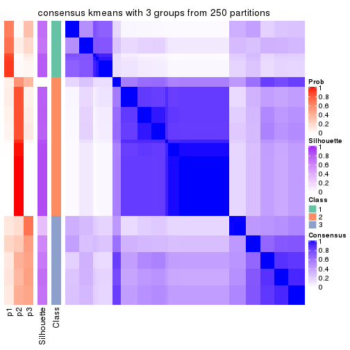
consensus_heatmap(res, k = 4)
consensus_heatmap(res, k = 5)
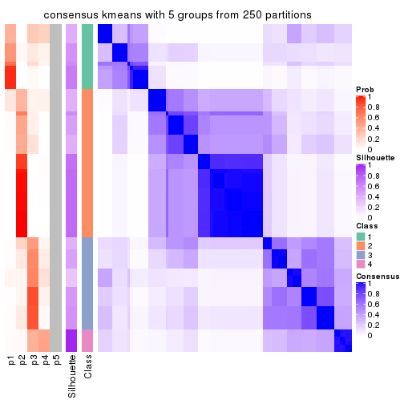
consensus_heatmap(res, k = 6)
Heatmaps for the membership of samples in all partitions to see how consistent they are:
membership_heatmap(res, k = 2)
membership_heatmap(res, k = 3)
membership_heatmap(res, k = 4)
membership_heatmap(res, k = 5)
membership_heatmap(res, k = 6)
As soon as we have had the classes for columns, we can look for signatures which are significantly different between classes which can be candidate marks for certain classes. Following are the heatmaps for signatures.
Signature heatmaps where rows are scaled:
get_signatures(res, k = 2)
get_signatures(res, k = 3)
get_signatures(res, k = 4)
get_signatures(res, k = 5)
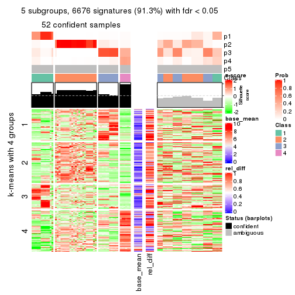
get_signatures(res, k = 6)

Signature heatmaps where rows are not scaled:
get_signatures(res, k = 2, scale_rows = FALSE)
get_signatures(res, k = 3, scale_rows = FALSE)
get_signatures(res, k = 4, scale_rows = FALSE)
get_signatures(res, k = 5, scale_rows = FALSE)
get_signatures(res, k = 6, scale_rows = FALSE)
Compare the overlap of signatures from different k:
compare_signatures(res)
get_signature() returns a data frame invisibly. TO get the list of signatures, the function
call should be assigned to a variable explicitly. In following code, if plot argument is set
to FALSE, no heatmap is plotted while only the differential analysis is performed.
# code only for demonstration
tb = get_signature(res, k = ..., plot = FALSE)
An example of the output of tb is:
#> which_row fdr mean_1 mean_2 scaled_mean_1 scaled_mean_2 km
#> 1 38 0.042760348 8.373488 9.131774 -0.5533452 0.5164555 1
#> 2 40 0.018707592 7.106213 8.469186 -0.6173731 0.5762149 1
#> 3 55 0.019134737 10.221463 11.207825 -0.6159697 0.5749050 1
#> 4 59 0.006059896 5.921854 7.869574 -0.6899429 0.6439467 1
#> 5 60 0.018055526 8.928898 10.211722 -0.6204761 0.5791110 1
#> 6 98 0.009384629 15.714769 14.887706 0.6635654 -0.6193277 2
...
The columns in tb are:
which_row: row indices corresponding to the input matrix.fdr: FDR for the differential test. mean_x: The mean value in group x.scaled_mean_x: The mean value in group x after rows are scaled.km: Row groups if k-means clustering is applied to rows.UMAP plot which shows how samples are separated.
dimension_reduction(res, k = 2, method = "UMAP")

dimension_reduction(res, k = 3, method = "UMAP")
dimension_reduction(res, k = 4, method = "UMAP")
dimension_reduction(res, k = 5, method = "UMAP")
dimension_reduction(res, k = 6, method = "UMAP")
Following heatmap shows how subgroups are split when increasing k:
collect_classes(res)
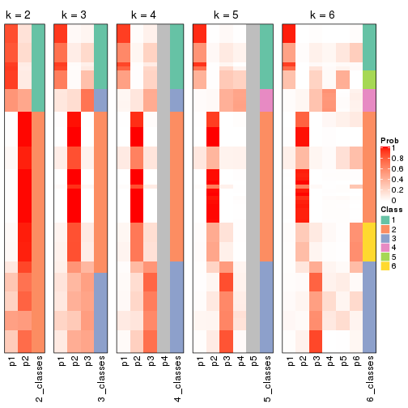
If matrix rows can be associated to genes, consider to use functional_enrichment(res,
...) to perform function enrichment for the signature genes. See this vignette for more detailed explanations.
The object with results only for a single top-value method and a single partition method can be extracted as:
res = res_list["ATC", "skmeans"]
# you can also extract it by
# res = res_list["ATC:skmeans"]
A summary of res and all the functions that can be applied to it:
res
#> A 'ConsensusPartition' object with k = 2, 3, 4, 5, 6.
#> On a matrix with 7309 rows and 86 columns.
#> Top rows (731, 1462, 2192, 2923, 3654) are extracted by 'ATC' method.
#> Subgroups are detected by 'skmeans' method.
#> Performed in total 1250 partitions by row resampling.
#> Best k for subgroups seems to be 3.
#>
#> Following methods can be applied to this 'ConsensusPartition' object:
#> [1] "cola_report" "collect_classes" "collect_plots"
#> [4] "collect_stats" "colnames" "compare_signatures"
#> [7] "consensus_heatmap" "dimension_reduction" "functional_enrichment"
#> [10] "get_anno_col" "get_anno" "get_classes"
#> [13] "get_consensus" "get_matrix" "get_membership"
#> [16] "get_param" "get_signatures" "get_stats"
#> [19] "is_best_k" "is_stable_k" "membership_heatmap"
#> [22] "ncol" "nrow" "plot_ecdf"
#> [25] "rownames" "select_partition_number" "show"
#> [28] "suggest_best_k" "test_to_known_factors"
collect_plots() function collects all the plots made from res for all k (number of partitions)
into one single page to provide an easy and fast comparison between different k.
collect_plots(res)
The plots are:
k and the heatmap of
predicted classes for each k.k.k.k.All the plots in panels can be made by individual functions and they are plotted later in this section.
select_partition_number() produces several plots showing different
statistics for choosing “optimized” k. There are following statistics:
k;k, the area increased is defined as \(A_k - A_{k-1}\).The detailed explanations of these statistics can be found in the cola vignette.
Generally speaking, lower PAC score, higher mean silhouette score or higher
concordance corresponds to better partition. Rand index and Jaccard index
measure how similar the current partition is compared to partition with k-1.
If they are too similar, we won't accept k is better than k-1.
select_partition_number(res)
The numeric values for all these statistics can be obtained by get_stats().
get_stats(res)
#> k 1-PAC mean_silhouette concordance area_increased Rand Jaccard
#> 2 2 0.804 0.940 0.966 0.4984 0.494 0.494
#> 3 3 0.933 0.917 0.959 0.3064 0.819 0.645
#> 4 4 0.756 0.769 0.811 0.1040 1.000 1.000
#> 5 5 0.714 0.772 0.803 0.0698 0.837 0.542
#> 6 6 0.736 0.703 0.769 0.0440 0.953 0.781
suggest_best_k() suggests the best \(k\) based on these statistics. The rules are as follows:
suggest_best_k(res)
#> [1] 3
Following shows the table of the partitions (You need to click the show/hide
code output link to see it). The membership matrix (columns with name p*)
is inferred by
clue::cl_consensus()
function with the SE method. Basically the value in the membership matrix
represents the probability to belong to a certain group. The finall class
label for an item is determined with the group with highest probability it
belongs to.
In get_classes() function, the entropy is calculated from the membership
matrix and the silhouette score is calculated from the consensus matrix.
cbind(get_classes(res, k = 2), get_membership(res, k = 2))
#> class entropy silhouette p1 p2
#> SRR2240643 1 0.373 0.910 0.928 0.072
#> SRR2240644 1 0.373 0.910 0.928 0.072
#> SRR2240645 1 0.373 0.910 0.928 0.072
#> SRR2240646 1 0.373 0.910 0.928 0.072
#> SRR2240647 1 0.373 0.910 0.928 0.072
#> SRR2240638 1 0.814 0.745 0.748 0.252
#> SRR2240639 1 0.814 0.745 0.748 0.252
#> SRR2240640 1 0.814 0.745 0.748 0.252
#> SRR2240641 1 0.814 0.745 0.748 0.252
#> SRR2240642 1 0.814 0.745 0.748 0.252
#> SRR2240633 1 0.000 0.938 1.000 0.000
#> SRR2240634 1 0.000 0.938 1.000 0.000
#> SRR2240635 1 0.000 0.938 1.000 0.000
#> SRR2240636 1 0.000 0.938 1.000 0.000
#> SRR2240637 1 0.000 0.938 1.000 0.000
#> SRR2240624 2 0.506 0.866 0.112 0.888
#> SRR2240625 2 0.506 0.866 0.112 0.888
#> SRR2240626 2 0.506 0.866 0.112 0.888
#> SRR2240627 1 0.644 0.847 0.836 0.164
#> SRR2240628 1 0.644 0.847 0.836 0.164
#> SRR2240629 1 0.644 0.847 0.836 0.164
#> SRR2240630 1 0.644 0.847 0.836 0.164
#> SRR2240631 1 0.644 0.847 0.836 0.164
#> SRR2240632 1 0.644 0.847 0.836 0.164
#> SRR2240613 1 0.000 0.938 1.000 0.000
#> SRR2240614 1 0.000 0.938 1.000 0.000
#> SRR2240615 1 0.000 0.938 1.000 0.000
#> SRR2240616 1 0.000 0.938 1.000 0.000
#> SRR2240617 1 0.000 0.938 1.000 0.000
#> SRR2240618 1 0.000 0.938 1.000 0.000
#> SRR2240619 1 0.000 0.938 1.000 0.000
#> SRR2240620 1 0.000 0.938 1.000 0.000
#> SRR2240621 1 0.000 0.938 1.000 0.000
#> SRR2240622 1 0.000 0.938 1.000 0.000
#> SRR2240623 1 0.000 0.938 1.000 0.000
#> SRR2240609 2 0.000 0.991 0.000 1.000
#> SRR2240610 2 0.000 0.991 0.000 1.000
#> SRR2240611 2 0.000 0.991 0.000 1.000
#> SRR2240612 2 0.000 0.991 0.000 1.000
#> SRR2240594 2 0.000 0.991 0.000 1.000
#> SRR2240595 2 0.000 0.991 0.000 1.000
#> SRR2240596 2 0.000 0.991 0.000 1.000
#> SRR2240597 2 0.000 0.991 0.000 1.000
#> SRR2240598 2 0.000 0.991 0.000 1.000
#> SRR2240604 2 0.000 0.991 0.000 1.000
#> SRR2240605 2 0.000 0.991 0.000 1.000
#> SRR2240606 2 0.000 0.991 0.000 1.000
#> SRR2240607 2 0.000 0.991 0.000 1.000
#> SRR2240608 2 0.000 0.991 0.000 1.000
#> SRR2240599 1 0.000 0.938 1.000 0.000
#> SRR2240600 1 0.000 0.938 1.000 0.000
#> SRR2240601 1 0.000 0.938 1.000 0.000
#> SRR2240602 1 0.000 0.938 1.000 0.000
#> SRR2240603 1 0.000 0.938 1.000 0.000
#> SRR2240584 2 0.000 0.991 0.000 1.000
#> SRR2240585 2 0.000 0.991 0.000 1.000
#> SRR2240586 2 0.000 0.991 0.000 1.000
#> SRR2240587 2 0.000 0.991 0.000 1.000
#> SRR2240588 2 0.000 0.991 0.000 1.000
#> SRR2240589 1 0.000 0.938 1.000 0.000
#> SRR2240590 1 0.000 0.938 1.000 0.000
#> SRR2240591 1 0.000 0.938 1.000 0.000
#> SRR2240592 1 0.000 0.938 1.000 0.000
#> SRR2240593 1 0.000 0.938 1.000 0.000
#> SRR2240578 2 0.000 0.991 0.000 1.000
#> SRR2240579 2 0.000 0.991 0.000 1.000
#> SRR2240580 2 0.000 0.991 0.000 1.000
#> SRR2240581 2 0.000 0.991 0.000 1.000
#> SRR2240582 2 0.000 0.991 0.000 1.000
#> SRR2240583 2 0.000 0.991 0.000 1.000
#> SRR1825969 2 0.000 0.991 0.000 1.000
#> SRR1825968 2 0.000 0.991 0.000 1.000
#> SRR1825970 1 0.000 0.938 1.000 0.000
#> SRR1825966 2 0.000 0.991 0.000 1.000
#> SRR1825967 2 0.000 0.991 0.000 1.000
#> SRR1825965 2 0.000 0.991 0.000 1.000
#> SRR1825962 2 0.000 0.991 0.000 1.000
#> SRR1825963 2 0.000 0.991 0.000 1.000
#> SRR1825964 2 0.000 0.991 0.000 1.000
#> SRR1825961 1 0.000 0.938 1.000 0.000
#> SRR1825960 2 0.000 0.991 0.000 1.000
#> SRR1825958 2 0.000 0.991 0.000 1.000
#> SRR1825959 2 0.000 0.991 0.000 1.000
#> SRR1825956 2 0.000 0.991 0.000 1.000
#> SRR1825957 2 0.000 0.991 0.000 1.000
#> SRR1825955 2 0.000 0.991 0.000 1.000
cbind(get_classes(res, k = 3), get_membership(res, k = 3))
#> class entropy silhouette p1 p2 p3
#> SRR2240643 3 0.0237 0.896 0.004 0.000 0.996
#> SRR2240644 3 0.0237 0.896 0.004 0.000 0.996
#> SRR2240645 3 0.0237 0.896 0.004 0.000 0.996
#> SRR2240646 3 0.0237 0.896 0.004 0.000 0.996
#> SRR2240647 3 0.0237 0.896 0.004 0.000 0.996
#> SRR2240638 3 0.0661 0.892 0.008 0.004 0.988
#> SRR2240639 3 0.0661 0.892 0.008 0.004 0.988
#> SRR2240640 3 0.0661 0.892 0.008 0.004 0.988
#> SRR2240641 3 0.0661 0.892 0.008 0.004 0.988
#> SRR2240642 3 0.0661 0.892 0.008 0.004 0.988
#> SRR2240633 3 0.6192 0.376 0.420 0.000 0.580
#> SRR2240634 3 0.6192 0.376 0.420 0.000 0.580
#> SRR2240635 3 0.6192 0.376 0.420 0.000 0.580
#> SRR2240636 3 0.6192 0.376 0.420 0.000 0.580
#> SRR2240637 3 0.6192 0.376 0.420 0.000 0.580
#> SRR2240624 3 0.0424 0.891 0.000 0.008 0.992
#> SRR2240625 3 0.0424 0.891 0.000 0.008 0.992
#> SRR2240626 3 0.0424 0.891 0.000 0.008 0.992
#> SRR2240627 3 0.0237 0.896 0.004 0.000 0.996
#> SRR2240628 3 0.0237 0.896 0.004 0.000 0.996
#> SRR2240629 3 0.0237 0.896 0.004 0.000 0.996
#> SRR2240630 3 0.0237 0.896 0.004 0.000 0.996
#> SRR2240631 3 0.0237 0.896 0.004 0.000 0.996
#> SRR2240632 3 0.0237 0.896 0.004 0.000 0.996
#> SRR2240613 1 0.0892 0.953 0.980 0.000 0.020
#> SRR2240614 1 0.0892 0.953 0.980 0.000 0.020
#> SRR2240615 1 0.0892 0.953 0.980 0.000 0.020
#> SRR2240616 1 0.0892 0.953 0.980 0.000 0.020
#> SRR2240617 1 0.0892 0.953 0.980 0.000 0.020
#> SRR2240618 1 0.3482 0.886 0.872 0.000 0.128
#> SRR2240619 1 0.3482 0.886 0.872 0.000 0.128
#> SRR2240620 1 0.3482 0.886 0.872 0.000 0.128
#> SRR2240621 1 0.3482 0.886 0.872 0.000 0.128
#> SRR2240622 1 0.3482 0.886 0.872 0.000 0.128
#> SRR2240623 1 0.3482 0.886 0.872 0.000 0.128
#> SRR2240609 2 0.0000 0.990 0.000 1.000 0.000
#> SRR2240610 2 0.0000 0.990 0.000 1.000 0.000
#> SRR2240611 2 0.0000 0.990 0.000 1.000 0.000
#> SRR2240612 2 0.0000 0.990 0.000 1.000 0.000
#> SRR2240594 2 0.1129 0.979 0.004 0.976 0.020
#> SRR2240595 2 0.1129 0.979 0.004 0.976 0.020
#> SRR2240596 2 0.1129 0.979 0.004 0.976 0.020
#> SRR2240597 2 0.1129 0.979 0.004 0.976 0.020
#> SRR2240598 2 0.1129 0.979 0.004 0.976 0.020
#> SRR2240604 2 0.0000 0.990 0.000 1.000 0.000
#> SRR2240605 2 0.0000 0.990 0.000 1.000 0.000
#> SRR2240606 2 0.0000 0.990 0.000 1.000 0.000
#> SRR2240607 2 0.0000 0.990 0.000 1.000 0.000
#> SRR2240608 2 0.0000 0.990 0.000 1.000 0.000
#> SRR2240599 1 0.0000 0.956 1.000 0.000 0.000
#> SRR2240600 1 0.0000 0.956 1.000 0.000 0.000
#> SRR2240601 1 0.0000 0.956 1.000 0.000 0.000
#> SRR2240602 1 0.0000 0.956 1.000 0.000 0.000
#> SRR2240603 1 0.0000 0.956 1.000 0.000 0.000
#> SRR2240584 2 0.0475 0.988 0.004 0.992 0.004
#> SRR2240585 2 0.0475 0.988 0.004 0.992 0.004
#> SRR2240586 2 0.0475 0.988 0.004 0.992 0.004
#> SRR2240587 2 0.0475 0.988 0.004 0.992 0.004
#> SRR2240588 2 0.0475 0.988 0.004 0.992 0.004
#> SRR2240589 1 0.0000 0.956 1.000 0.000 0.000
#> SRR2240590 1 0.0000 0.956 1.000 0.000 0.000
#> SRR2240591 1 0.0000 0.956 1.000 0.000 0.000
#> SRR2240592 1 0.0000 0.956 1.000 0.000 0.000
#> SRR2240593 1 0.0000 0.956 1.000 0.000 0.000
#> SRR2240578 2 0.1765 0.966 0.040 0.956 0.004
#> SRR2240579 2 0.1765 0.966 0.040 0.956 0.004
#> SRR2240580 2 0.1765 0.966 0.040 0.956 0.004
#> SRR2240581 2 0.1765 0.966 0.040 0.956 0.004
#> SRR2240582 2 0.1765 0.966 0.040 0.956 0.004
#> SRR2240583 2 0.1765 0.966 0.040 0.956 0.004
#> SRR1825969 2 0.0000 0.990 0.000 1.000 0.000
#> SRR1825968 2 0.0000 0.990 0.000 1.000 0.000
#> SRR1825970 1 0.0000 0.956 1.000 0.000 0.000
#> SRR1825966 2 0.0000 0.990 0.000 1.000 0.000
#> SRR1825967 2 0.0000 0.990 0.000 1.000 0.000
#> SRR1825965 2 0.0000 0.990 0.000 1.000 0.000
#> SRR1825962 2 0.0000 0.990 0.000 1.000 0.000
#> SRR1825963 2 0.0000 0.990 0.000 1.000 0.000
#> SRR1825964 2 0.0000 0.990 0.000 1.000 0.000
#> SRR1825961 1 0.0237 0.956 0.996 0.000 0.004
#> SRR1825960 2 0.0000 0.990 0.000 1.000 0.000
#> SRR1825958 2 0.0000 0.990 0.000 1.000 0.000
#> SRR1825959 2 0.0000 0.990 0.000 1.000 0.000
#> SRR1825956 2 0.0000 0.990 0.000 1.000 0.000
#> SRR1825957 2 0.0000 0.990 0.000 1.000 0.000
#> SRR1825955 2 0.0000 0.990 0.000 1.000 0.000
cbind(get_classes(res, k = 4), get_membership(res, k = 4))
#> class entropy silhouette p1 p2 p3 p4
#> SRR2240643 3 0.0188 0.823 0.000 0.000 0.996 NA
#> SRR2240644 3 0.0188 0.823 0.000 0.000 0.996 NA
#> SRR2240645 3 0.0188 0.823 0.000 0.000 0.996 NA
#> SRR2240646 3 0.0188 0.823 0.000 0.000 0.996 NA
#> SRR2240647 3 0.0188 0.823 0.000 0.000 0.996 NA
#> SRR2240638 3 0.2921 0.797 0.000 0.000 0.860 NA
#> SRR2240639 3 0.2921 0.797 0.000 0.000 0.860 NA
#> SRR2240640 3 0.2921 0.797 0.000 0.000 0.860 NA
#> SRR2240641 3 0.2921 0.797 0.000 0.000 0.860 NA
#> SRR2240642 3 0.2921 0.797 0.000 0.000 0.860 NA
#> SRR2240633 3 0.7651 0.343 0.228 0.000 0.452 NA
#> SRR2240634 3 0.7651 0.343 0.228 0.000 0.452 NA
#> SRR2240635 3 0.7651 0.343 0.228 0.000 0.452 NA
#> SRR2240636 3 0.7651 0.343 0.228 0.000 0.452 NA
#> SRR2240637 3 0.7651 0.343 0.228 0.000 0.452 NA
#> SRR2240624 3 0.3306 0.799 0.000 0.004 0.840 NA
#> SRR2240625 3 0.3306 0.799 0.000 0.004 0.840 NA
#> SRR2240626 3 0.3306 0.799 0.000 0.004 0.840 NA
#> SRR2240627 3 0.2011 0.816 0.000 0.000 0.920 NA
#> SRR2240628 3 0.2011 0.816 0.000 0.000 0.920 NA
#> SRR2240629 3 0.2011 0.816 0.000 0.000 0.920 NA
#> SRR2240630 3 0.2011 0.816 0.000 0.000 0.920 NA
#> SRR2240631 3 0.2011 0.816 0.000 0.000 0.920 NA
#> SRR2240632 3 0.2011 0.816 0.000 0.000 0.920 NA
#> SRR2240613 1 0.2480 0.840 0.904 0.000 0.008 NA
#> SRR2240614 1 0.2480 0.840 0.904 0.000 0.008 NA
#> SRR2240615 1 0.2480 0.840 0.904 0.000 0.008 NA
#> SRR2240616 1 0.2480 0.840 0.904 0.000 0.008 NA
#> SRR2240617 1 0.2480 0.840 0.904 0.000 0.008 NA
#> SRR2240618 1 0.6271 0.594 0.492 0.000 0.056 NA
#> SRR2240619 1 0.6271 0.594 0.492 0.000 0.056 NA
#> SRR2240620 1 0.6271 0.594 0.492 0.000 0.056 NA
#> SRR2240621 1 0.6271 0.594 0.492 0.000 0.056 NA
#> SRR2240622 1 0.6271 0.594 0.492 0.000 0.056 NA
#> SRR2240623 1 0.6271 0.594 0.492 0.000 0.056 NA
#> SRR2240609 2 0.0000 0.851 0.000 1.000 0.000 NA
#> SRR2240610 2 0.0000 0.851 0.000 1.000 0.000 NA
#> SRR2240611 2 0.0000 0.851 0.000 1.000 0.000 NA
#> SRR2240612 2 0.0000 0.851 0.000 1.000 0.000 NA
#> SRR2240594 2 0.5459 0.691 0.000 0.552 0.016 NA
#> SRR2240595 2 0.5459 0.691 0.000 0.552 0.016 NA
#> SRR2240596 2 0.5459 0.691 0.000 0.552 0.016 NA
#> SRR2240597 2 0.5459 0.691 0.000 0.552 0.016 NA
#> SRR2240598 2 0.5459 0.691 0.000 0.552 0.016 NA
#> SRR2240604 2 0.0000 0.851 0.000 1.000 0.000 NA
#> SRR2240605 2 0.0000 0.851 0.000 1.000 0.000 NA
#> SRR2240606 2 0.0000 0.851 0.000 1.000 0.000 NA
#> SRR2240607 2 0.0000 0.851 0.000 1.000 0.000 NA
#> SRR2240608 2 0.0000 0.851 0.000 1.000 0.000 NA
#> SRR2240599 1 0.0592 0.849 0.984 0.000 0.000 NA
#> SRR2240600 1 0.0592 0.849 0.984 0.000 0.000 NA
#> SRR2240601 1 0.0592 0.849 0.984 0.000 0.000 NA
#> SRR2240602 1 0.0592 0.849 0.984 0.000 0.000 NA
#> SRR2240603 1 0.0592 0.849 0.984 0.000 0.000 NA
#> SRR2240584 2 0.5408 0.702 0.004 0.556 0.008 NA
#> SRR2240585 2 0.5408 0.702 0.004 0.556 0.008 NA
#> SRR2240586 2 0.5408 0.702 0.004 0.556 0.008 NA
#> SRR2240587 2 0.5408 0.702 0.004 0.556 0.008 NA
#> SRR2240588 2 0.5408 0.702 0.004 0.556 0.008 NA
#> SRR2240589 1 0.0336 0.853 0.992 0.000 0.000 NA
#> SRR2240590 1 0.0336 0.853 0.992 0.000 0.000 NA
#> SRR2240591 1 0.0336 0.853 0.992 0.000 0.000 NA
#> SRR2240592 1 0.0336 0.853 0.992 0.000 0.000 NA
#> SRR2240593 1 0.0336 0.853 0.992 0.000 0.000 NA
#> SRR2240578 2 0.5300 0.760 0.028 0.664 0.000 NA
#> SRR2240579 2 0.5300 0.760 0.028 0.664 0.000 NA
#> SRR2240580 2 0.5300 0.760 0.028 0.664 0.000 NA
#> SRR2240581 2 0.5300 0.760 0.028 0.664 0.000 NA
#> SRR2240582 2 0.5300 0.760 0.028 0.664 0.000 NA
#> SRR2240583 2 0.5300 0.760 0.028 0.664 0.000 NA
#> SRR1825969 2 0.0000 0.851 0.000 1.000 0.000 NA
#> SRR1825968 2 0.0000 0.851 0.000 1.000 0.000 NA
#> SRR1825970 1 0.0000 0.852 1.000 0.000 0.000 NA
#> SRR1825966 2 0.0000 0.851 0.000 1.000 0.000 NA
#> SRR1825967 2 0.0000 0.851 0.000 1.000 0.000 NA
#> SRR1825965 2 0.3400 0.813 0.000 0.820 0.000 NA
#> SRR1825962 2 0.0000 0.851 0.000 1.000 0.000 NA
#> SRR1825963 2 0.0000 0.851 0.000 1.000 0.000 NA
#> SRR1825964 2 0.0000 0.851 0.000 1.000 0.000 NA
#> SRR1825961 1 0.0336 0.852 0.992 0.000 0.000 NA
#> SRR1825960 2 0.0000 0.851 0.000 1.000 0.000 NA
#> SRR1825958 2 0.0000 0.851 0.000 1.000 0.000 NA
#> SRR1825959 2 0.0000 0.851 0.000 1.000 0.000 NA
#> SRR1825956 2 0.0000 0.851 0.000 1.000 0.000 NA
#> SRR1825957 2 0.0000 0.851 0.000 1.000 0.000 NA
#> SRR1825955 2 0.0000 0.851 0.000 1.000 0.000 NA
cbind(get_classes(res, k = 5), get_membership(res, k = 5))
#> class entropy silhouette p1 p2 p3 p4 p5
#> SRR2240643 3 0.0404 0.774 0.000 0.000 0.988 0.012 0.000
#> SRR2240644 3 0.0404 0.774 0.000 0.000 0.988 0.012 0.000
#> SRR2240645 3 0.0404 0.774 0.000 0.000 0.988 0.012 0.000
#> SRR2240646 3 0.0404 0.774 0.000 0.000 0.988 0.012 0.000
#> SRR2240647 3 0.0404 0.774 0.000 0.000 0.988 0.012 0.000
#> SRR2240638 3 0.4430 0.729 0.172 0.000 0.752 0.076 0.000
#> SRR2240639 3 0.4430 0.729 0.172 0.000 0.752 0.076 0.000
#> SRR2240640 3 0.4430 0.729 0.172 0.000 0.752 0.076 0.000
#> SRR2240641 3 0.4430 0.729 0.172 0.000 0.752 0.076 0.000
#> SRR2240642 3 0.4430 0.729 0.172 0.000 0.752 0.076 0.000
#> SRR2240633 4 0.7604 0.418 0.068 0.000 0.368 0.388 0.176
#> SRR2240634 4 0.7604 0.418 0.068 0.000 0.368 0.388 0.176
#> SRR2240635 4 0.7604 0.418 0.068 0.000 0.368 0.388 0.176
#> SRR2240636 4 0.7604 0.418 0.068 0.000 0.368 0.388 0.176
#> SRR2240637 4 0.7604 0.418 0.068 0.000 0.368 0.388 0.176
#> SRR2240624 3 0.5254 0.689 0.200 0.008 0.692 0.100 0.000
#> SRR2240625 3 0.5254 0.689 0.200 0.008 0.692 0.100 0.000
#> SRR2240626 3 0.5254 0.689 0.200 0.008 0.692 0.100 0.000
#> SRR2240627 3 0.3710 0.706 0.048 0.000 0.808 0.144 0.000
#> SRR2240628 3 0.3710 0.706 0.048 0.000 0.808 0.144 0.000
#> SRR2240629 3 0.3710 0.706 0.048 0.000 0.808 0.144 0.000
#> SRR2240630 3 0.3710 0.706 0.048 0.000 0.808 0.144 0.000
#> SRR2240631 3 0.3710 0.706 0.048 0.000 0.808 0.144 0.000
#> SRR2240632 3 0.3710 0.706 0.048 0.000 0.808 0.144 0.000
#> SRR2240613 5 0.3211 0.794 0.008 0.000 0.004 0.164 0.824
#> SRR2240614 5 0.3211 0.794 0.008 0.000 0.004 0.164 0.824
#> SRR2240615 5 0.3211 0.794 0.008 0.000 0.004 0.164 0.824
#> SRR2240616 5 0.3211 0.794 0.008 0.000 0.004 0.164 0.824
#> SRR2240617 5 0.3211 0.794 0.008 0.000 0.004 0.164 0.824
#> SRR2240618 4 0.4436 0.581 0.012 0.000 0.028 0.736 0.224
#> SRR2240619 4 0.4436 0.581 0.012 0.000 0.028 0.736 0.224
#> SRR2240620 4 0.4436 0.581 0.012 0.000 0.028 0.736 0.224
#> SRR2240621 4 0.4436 0.581 0.012 0.000 0.028 0.736 0.224
#> SRR2240622 4 0.4436 0.581 0.012 0.000 0.028 0.736 0.224
#> SRR2240623 4 0.4436 0.581 0.012 0.000 0.028 0.736 0.224
#> SRR2240609 2 0.0404 0.961 0.012 0.988 0.000 0.000 0.000
#> SRR2240610 2 0.0404 0.961 0.012 0.988 0.000 0.000 0.000
#> SRR2240611 2 0.0404 0.961 0.012 0.988 0.000 0.000 0.000
#> SRR2240612 2 0.0404 0.961 0.012 0.988 0.000 0.000 0.000
#> SRR2240594 1 0.5294 0.717 0.632 0.304 0.008 0.056 0.000
#> SRR2240595 1 0.5294 0.717 0.632 0.304 0.008 0.056 0.000
#> SRR2240596 1 0.5294 0.717 0.632 0.304 0.008 0.056 0.000
#> SRR2240597 1 0.5294 0.717 0.632 0.304 0.008 0.056 0.000
#> SRR2240598 1 0.5294 0.717 0.632 0.304 0.008 0.056 0.000
#> SRR2240604 2 0.0000 0.974 0.000 1.000 0.000 0.000 0.000
#> SRR2240605 2 0.0000 0.974 0.000 1.000 0.000 0.000 0.000
#> SRR2240606 2 0.0000 0.974 0.000 1.000 0.000 0.000 0.000
#> SRR2240607 2 0.0000 0.974 0.000 1.000 0.000 0.000 0.000
#> SRR2240608 2 0.0000 0.974 0.000 1.000 0.000 0.000 0.000
#> SRR2240599 5 0.0451 0.900 0.004 0.000 0.000 0.008 0.988
#> SRR2240600 5 0.0451 0.900 0.004 0.000 0.000 0.008 0.988
#> SRR2240601 5 0.0451 0.900 0.004 0.000 0.000 0.008 0.988
#> SRR2240602 5 0.0451 0.900 0.004 0.000 0.000 0.008 0.988
#> SRR2240603 5 0.0451 0.900 0.004 0.000 0.000 0.008 0.988
#> SRR2240584 1 0.4009 0.743 0.684 0.312 0.000 0.004 0.000
#> SRR2240585 1 0.4009 0.743 0.684 0.312 0.000 0.004 0.000
#> SRR2240586 1 0.4009 0.743 0.684 0.312 0.000 0.004 0.000
#> SRR2240587 1 0.4009 0.743 0.684 0.312 0.000 0.004 0.000
#> SRR2240588 1 0.4009 0.743 0.684 0.312 0.000 0.004 0.000
#> SRR2240589 5 0.1630 0.892 0.016 0.000 0.004 0.036 0.944
#> SRR2240590 5 0.1630 0.892 0.016 0.000 0.004 0.036 0.944
#> SRR2240591 5 0.1630 0.892 0.016 0.000 0.004 0.036 0.944
#> SRR2240592 5 0.1630 0.892 0.016 0.000 0.004 0.036 0.944
#> SRR2240593 5 0.1630 0.892 0.016 0.000 0.004 0.036 0.944
#> SRR2240578 1 0.6030 0.570 0.516 0.392 0.000 0.076 0.016
#> SRR2240579 1 0.6030 0.570 0.516 0.392 0.000 0.076 0.016
#> SRR2240580 1 0.6030 0.570 0.516 0.392 0.000 0.076 0.016
#> SRR2240581 1 0.6030 0.570 0.516 0.392 0.000 0.076 0.016
#> SRR2240582 1 0.6030 0.570 0.516 0.392 0.000 0.076 0.016
#> SRR2240583 1 0.6030 0.570 0.516 0.392 0.000 0.076 0.016
#> SRR1825969 2 0.0000 0.974 0.000 1.000 0.000 0.000 0.000
#> SRR1825968 2 0.0000 0.974 0.000 1.000 0.000 0.000 0.000
#> SRR1825970 5 0.0162 0.900 0.000 0.000 0.000 0.004 0.996
#> SRR1825966 2 0.0000 0.974 0.000 1.000 0.000 0.000 0.000
#> SRR1825967 2 0.0000 0.974 0.000 1.000 0.000 0.000 0.000
#> SRR1825965 2 0.4003 0.177 0.288 0.704 0.000 0.008 0.000
#> SRR1825962 2 0.0000 0.974 0.000 1.000 0.000 0.000 0.000
#> SRR1825963 2 0.0000 0.974 0.000 1.000 0.000 0.000 0.000
#> SRR1825964 2 0.0000 0.974 0.000 1.000 0.000 0.000 0.000
#> SRR1825961 5 0.0510 0.899 0.000 0.000 0.000 0.016 0.984
#> SRR1825960 2 0.0000 0.974 0.000 1.000 0.000 0.000 0.000
#> SRR1825958 2 0.0000 0.974 0.000 1.000 0.000 0.000 0.000
#> SRR1825959 2 0.0000 0.974 0.000 1.000 0.000 0.000 0.000
#> SRR1825956 2 0.0000 0.974 0.000 1.000 0.000 0.000 0.000
#> SRR1825957 2 0.0000 0.974 0.000 1.000 0.000 0.000 0.000
#> SRR1825955 2 0.0000 0.974 0.000 1.000 0.000 0.000 0.000
cbind(get_classes(res, k = 6), get_membership(res, k = 6))
#> class entropy silhouette p1 p2 p3 p4 p5 p6
#> SRR2240643 3 0.4406 -0.0945 0.004 0.000 0.656 0.024 0.308 0.008
#> SRR2240644 3 0.4406 -0.0945 0.004 0.000 0.656 0.024 0.308 0.008
#> SRR2240645 3 0.4406 -0.0945 0.004 0.000 0.656 0.024 0.308 0.008
#> SRR2240646 3 0.4406 -0.0945 0.004 0.000 0.656 0.024 0.308 0.008
#> SRR2240647 3 0.4406 -0.0945 0.004 0.000 0.656 0.024 0.308 0.008
#> SRR2240638 5 0.5688 0.8535 0.000 0.000 0.396 0.024 0.492 0.088
#> SRR2240639 5 0.5688 0.8535 0.000 0.000 0.396 0.024 0.492 0.088
#> SRR2240640 5 0.5688 0.8535 0.000 0.000 0.396 0.024 0.492 0.088
#> SRR2240641 5 0.5688 0.8535 0.000 0.000 0.396 0.024 0.492 0.088
#> SRR2240642 5 0.5688 0.8535 0.000 0.000 0.396 0.024 0.492 0.088
#> SRR2240633 3 0.7405 0.2899 0.088 0.000 0.424 0.308 0.152 0.028
#> SRR2240634 3 0.7405 0.2899 0.088 0.000 0.424 0.308 0.152 0.028
#> SRR2240635 3 0.7405 0.2899 0.088 0.000 0.424 0.308 0.152 0.028
#> SRR2240636 3 0.7405 0.2899 0.088 0.000 0.424 0.308 0.152 0.028
#> SRR2240637 3 0.7405 0.2899 0.088 0.000 0.424 0.308 0.152 0.028
#> SRR2240624 5 0.6143 0.7404 0.000 0.000 0.404 0.040 0.444 0.112
#> SRR2240625 5 0.6143 0.7404 0.000 0.000 0.404 0.040 0.444 0.112
#> SRR2240626 5 0.6143 0.7404 0.000 0.000 0.404 0.040 0.444 0.112
#> SRR2240627 3 0.0632 0.4361 0.000 0.000 0.976 0.024 0.000 0.000
#> SRR2240628 3 0.0632 0.4361 0.000 0.000 0.976 0.024 0.000 0.000
#> SRR2240629 3 0.0632 0.4361 0.000 0.000 0.976 0.024 0.000 0.000
#> SRR2240630 3 0.0632 0.4361 0.000 0.000 0.976 0.024 0.000 0.000
#> SRR2240631 3 0.0632 0.4361 0.000 0.000 0.976 0.024 0.000 0.000
#> SRR2240632 3 0.0632 0.4361 0.000 0.000 0.976 0.024 0.000 0.000
#> SRR2240613 1 0.4791 0.5971 0.672 0.000 0.012 0.252 0.060 0.004
#> SRR2240614 1 0.4791 0.5971 0.672 0.000 0.012 0.252 0.060 0.004
#> SRR2240615 1 0.4791 0.5971 0.672 0.000 0.012 0.252 0.060 0.004
#> SRR2240616 1 0.4791 0.5971 0.672 0.000 0.012 0.252 0.060 0.004
#> SRR2240617 1 0.4791 0.5971 0.672 0.000 0.012 0.252 0.060 0.004
#> SRR2240618 4 0.2698 1.0000 0.120 0.000 0.008 0.860 0.004 0.008
#> SRR2240619 4 0.2698 1.0000 0.120 0.000 0.008 0.860 0.004 0.008
#> SRR2240620 4 0.2698 1.0000 0.120 0.000 0.008 0.860 0.004 0.008
#> SRR2240621 4 0.2698 1.0000 0.120 0.000 0.008 0.860 0.004 0.008
#> SRR2240622 4 0.2698 1.0000 0.120 0.000 0.008 0.860 0.004 0.008
#> SRR2240623 4 0.2698 1.0000 0.120 0.000 0.008 0.860 0.004 0.008
#> SRR2240609 2 0.0405 0.9700 0.000 0.988 0.000 0.000 0.004 0.008
#> SRR2240610 2 0.0405 0.9700 0.000 0.988 0.000 0.000 0.004 0.008
#> SRR2240611 2 0.0405 0.9700 0.000 0.988 0.000 0.000 0.004 0.008
#> SRR2240612 2 0.0405 0.9700 0.000 0.988 0.000 0.000 0.004 0.008
#> SRR2240594 6 0.4916 0.6404 0.000 0.248 0.004 0.028 0.048 0.672
#> SRR2240595 6 0.4916 0.6404 0.000 0.248 0.004 0.028 0.048 0.672
#> SRR2240596 6 0.4916 0.6404 0.000 0.248 0.004 0.028 0.048 0.672
#> SRR2240597 6 0.4916 0.6404 0.000 0.248 0.004 0.028 0.048 0.672
#> SRR2240598 6 0.4916 0.6404 0.000 0.248 0.004 0.028 0.048 0.672
#> SRR2240604 2 0.0000 0.9793 0.000 1.000 0.000 0.000 0.000 0.000
#> SRR2240605 2 0.0000 0.9793 0.000 1.000 0.000 0.000 0.000 0.000
#> SRR2240606 2 0.0000 0.9793 0.000 1.000 0.000 0.000 0.000 0.000
#> SRR2240607 2 0.0000 0.9793 0.000 1.000 0.000 0.000 0.000 0.000
#> SRR2240608 2 0.0000 0.9793 0.000 1.000 0.000 0.000 0.000 0.000
#> SRR2240599 1 0.0653 0.8378 0.980 0.000 0.000 0.004 0.012 0.004
#> SRR2240600 1 0.0653 0.8378 0.980 0.000 0.000 0.004 0.012 0.004
#> SRR2240601 1 0.0653 0.8378 0.980 0.000 0.000 0.004 0.012 0.004
#> SRR2240602 1 0.0653 0.8378 0.980 0.000 0.000 0.004 0.012 0.004
#> SRR2240603 1 0.0653 0.8378 0.980 0.000 0.000 0.004 0.012 0.004
#> SRR2240584 6 0.3163 0.6734 0.000 0.212 0.000 0.004 0.004 0.780
#> SRR2240585 6 0.3163 0.6734 0.000 0.212 0.000 0.004 0.004 0.780
#> SRR2240586 6 0.3163 0.6734 0.000 0.212 0.000 0.004 0.004 0.780
#> SRR2240587 6 0.3163 0.6734 0.000 0.212 0.000 0.004 0.004 0.780
#> SRR2240588 6 0.3163 0.6734 0.000 0.212 0.000 0.004 0.004 0.780
#> SRR2240589 1 0.2095 0.8226 0.916 0.000 0.004 0.052 0.016 0.012
#> SRR2240590 1 0.2095 0.8226 0.916 0.000 0.004 0.052 0.016 0.012
#> SRR2240591 1 0.2095 0.8226 0.916 0.000 0.004 0.052 0.016 0.012
#> SRR2240592 1 0.2095 0.8226 0.916 0.000 0.004 0.052 0.016 0.012
#> SRR2240593 1 0.2095 0.8226 0.916 0.000 0.004 0.052 0.016 0.012
#> SRR2240578 6 0.7128 0.4943 0.016 0.160 0.000 0.072 0.324 0.428
#> SRR2240579 6 0.7128 0.4943 0.016 0.160 0.000 0.072 0.324 0.428
#> SRR2240580 6 0.7128 0.4943 0.016 0.160 0.000 0.072 0.324 0.428
#> SRR2240581 6 0.7128 0.4943 0.016 0.160 0.000 0.072 0.324 0.428
#> SRR2240582 6 0.7128 0.4943 0.016 0.160 0.000 0.072 0.324 0.428
#> SRR2240583 6 0.7128 0.4943 0.016 0.160 0.000 0.072 0.324 0.428
#> SRR1825969 2 0.0000 0.9793 0.000 1.000 0.000 0.000 0.000 0.000
#> SRR1825968 2 0.0000 0.9793 0.000 1.000 0.000 0.000 0.000 0.000
#> SRR1825970 1 0.0508 0.8370 0.984 0.000 0.000 0.012 0.004 0.000
#> SRR1825966 2 0.0000 0.9793 0.000 1.000 0.000 0.000 0.000 0.000
#> SRR1825967 2 0.0000 0.9793 0.000 1.000 0.000 0.000 0.000 0.000
#> SRR1825965 2 0.4487 0.3994 0.000 0.688 0.000 0.020 0.036 0.256
#> SRR1825962 2 0.0000 0.9793 0.000 1.000 0.000 0.000 0.000 0.000
#> SRR1825963 2 0.0000 0.9793 0.000 1.000 0.000 0.000 0.000 0.000
#> SRR1825964 2 0.0000 0.9793 0.000 1.000 0.000 0.000 0.000 0.000
#> SRR1825961 1 0.0993 0.8355 0.964 0.000 0.000 0.024 0.012 0.000
#> SRR1825960 2 0.0000 0.9793 0.000 1.000 0.000 0.000 0.000 0.000
#> SRR1825958 2 0.0000 0.9793 0.000 1.000 0.000 0.000 0.000 0.000
#> SRR1825959 2 0.0000 0.9793 0.000 1.000 0.000 0.000 0.000 0.000
#> SRR1825956 2 0.0000 0.9793 0.000 1.000 0.000 0.000 0.000 0.000
#> SRR1825957 2 0.0000 0.9793 0.000 1.000 0.000 0.000 0.000 0.000
#> SRR1825955 2 0.0000 0.9793 0.000 1.000 0.000 0.000 0.000 0.000
Heatmaps for the consensus matrix. It visualizes the probability of two samples to be in a same group.
consensus_heatmap(res, k = 2)
consensus_heatmap(res, k = 3)
consensus_heatmap(res, k = 4)
consensus_heatmap(res, k = 5)
consensus_heatmap(res, k = 6)
Heatmaps for the membership of samples in all partitions to see how consistent they are:
membership_heatmap(res, k = 2)
membership_heatmap(res, k = 3)

membership_heatmap(res, k = 4)
membership_heatmap(res, k = 5)
membership_heatmap(res, k = 6)
As soon as we have had the classes for columns, we can look for signatures which are significantly different between classes which can be candidate marks for certain classes. Following are the heatmaps for signatures.
Signature heatmaps where rows are scaled:
get_signatures(res, k = 2)
get_signatures(res, k = 3)
get_signatures(res, k = 4)
get_signatures(res, k = 5)
get_signatures(res, k = 6)
Signature heatmaps where rows are not scaled:
get_signatures(res, k = 2, scale_rows = FALSE)
get_signatures(res, k = 3, scale_rows = FALSE)
get_signatures(res, k = 4, scale_rows = FALSE)
get_signatures(res, k = 5, scale_rows = FALSE)
get_signatures(res, k = 6, scale_rows = FALSE)
Compare the overlap of signatures from different k:
compare_signatures(res)
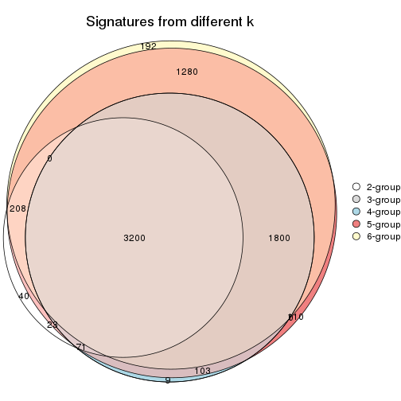
get_signature() returns a data frame invisibly. TO get the list of signatures, the function
call should be assigned to a variable explicitly. In following code, if plot argument is set
to FALSE, no heatmap is plotted while only the differential analysis is performed.
# code only for demonstration
tb = get_signature(res, k = ..., plot = FALSE)
An example of the output of tb is:
#> which_row fdr mean_1 mean_2 scaled_mean_1 scaled_mean_2 km
#> 1 38 0.042760348 8.373488 9.131774 -0.5533452 0.5164555 1
#> 2 40 0.018707592 7.106213 8.469186 -0.6173731 0.5762149 1
#> 3 55 0.019134737 10.221463 11.207825 -0.6159697 0.5749050 1
#> 4 59 0.006059896 5.921854 7.869574 -0.6899429 0.6439467 1
#> 5 60 0.018055526 8.928898 10.211722 -0.6204761 0.5791110 1
#> 6 98 0.009384629 15.714769 14.887706 0.6635654 -0.6193277 2
...
The columns in tb are:
which_row: row indices corresponding to the input matrix.fdr: FDR for the differential test. mean_x: The mean value in group x.scaled_mean_x: The mean value in group x after rows are scaled.km: Row groups if k-means clustering is applied to rows.UMAP plot which shows how samples are separated.
dimension_reduction(res, k = 2, method = "UMAP")
dimension_reduction(res, k = 3, method = "UMAP")

dimension_reduction(res, k = 4, method = "UMAP")
dimension_reduction(res, k = 5, method = "UMAP")
dimension_reduction(res, k = 6, method = "UMAP")
Following heatmap shows how subgroups are split when increasing k:
collect_classes(res)
If matrix rows can be associated to genes, consider to use functional_enrichment(res,
...) to perform function enrichment for the signature genes. See this vignette for more detailed explanations.
The object with results only for a single top-value method and a single partition method can be extracted as:
res = res_list["ATC", "pam"]
# you can also extract it by
# res = res_list["ATC:pam"]
A summary of res and all the functions that can be applied to it:
res
#> A 'ConsensusPartition' object with k = 2, 3, 4, 5, 6.
#> On a matrix with 7309 rows and 86 columns.
#> Top rows (731, 1462, 2192, 2923, 3654) are extracted by 'ATC' method.
#> Subgroups are detected by 'pam' method.
#> Performed in total 1250 partitions by row resampling.
#> Best k for subgroups seems to be 5.
#>
#> Following methods can be applied to this 'ConsensusPartition' object:
#> [1] "cola_report" "collect_classes" "collect_plots"
#> [4] "collect_stats" "colnames" "compare_signatures"
#> [7] "consensus_heatmap" "dimension_reduction" "functional_enrichment"
#> [10] "get_anno_col" "get_anno" "get_classes"
#> [13] "get_consensus" "get_matrix" "get_membership"
#> [16] "get_param" "get_signatures" "get_stats"
#> [19] "is_best_k" "is_stable_k" "membership_heatmap"
#> [22] "ncol" "nrow" "plot_ecdf"
#> [25] "rownames" "select_partition_number" "show"
#> [28] "suggest_best_k" "test_to_known_factors"
collect_plots() function collects all the plots made from res for all k (number of partitions)
into one single page to provide an easy and fast comparison between different k.
collect_plots(res)
The plots are:
k and the heatmap of
predicted classes for each k.k.k.k.All the plots in panels can be made by individual functions and they are plotted later in this section.
select_partition_number() produces several plots showing different
statistics for choosing “optimized” k. There are following statistics:
k;k, the area increased is defined as \(A_k - A_{k-1}\).The detailed explanations of these statistics can be found in the cola vignette.
Generally speaking, lower PAC score, higher mean silhouette score or higher
concordance corresponds to better partition. Rand index and Jaccard index
measure how similar the current partition is compared to partition with k-1.
If they are too similar, we won't accept k is better than k-1.
select_partition_number(res)
The numeric values for all these statistics can be obtained by get_stats().
get_stats(res)
#> k 1-PAC mean_silhouette concordance area_increased Rand Jaccard
#> 2 2 0.384 0.896 0.857 0.4139 0.498 0.498
#> 3 3 0.632 0.935 0.945 0.3116 0.933 0.865
#> 4 4 0.979 0.959 0.970 0.2035 0.905 0.779
#> 5 5 0.958 0.975 0.978 0.0628 0.963 0.890
#> 6 6 1.000 0.992 0.997 0.0180 0.989 0.964
suggest_best_k() suggests the best \(k\) based on these statistics. The rules are as follows:
suggest_best_k(res)
#> [1] 5
#> attr(,"optional")
#> [1] 4
There is also optional best \(k\) = 4 that is worth to check.
Following shows the table of the partitions (You need to click the show/hide
code output link to see it). The membership matrix (columns with name p*)
is inferred by
clue::cl_consensus()
function with the SE method. Basically the value in the membership matrix
represents the probability to belong to a certain group. The finall class
label for an item is determined with the group with highest probability it
belongs to.
In get_classes() function, the entropy is calculated from the membership
matrix and the silhouette score is calculated from the consensus matrix.
cbind(get_classes(res, k = 2), get_membership(res, k = 2))
#> class entropy silhouette p1 p2
#> SRR2240643 1 0.0000 0.824 1.000 0.000
#> SRR2240644 1 0.0000 0.824 1.000 0.000
#> SRR2240645 1 0.0000 0.824 1.000 0.000
#> SRR2240646 1 0.0000 0.824 1.000 0.000
#> SRR2240647 1 0.0000 0.824 1.000 0.000
#> SRR2240638 1 0.0000 0.824 1.000 0.000
#> SRR2240639 1 0.0000 0.824 1.000 0.000
#> SRR2240640 1 0.0000 0.824 1.000 0.000
#> SRR2240641 1 0.0000 0.824 1.000 0.000
#> SRR2240642 1 0.0000 0.824 1.000 0.000
#> SRR2240633 1 0.0000 0.824 1.000 0.000
#> SRR2240634 1 0.0000 0.824 1.000 0.000
#> SRR2240635 1 0.0000 0.824 1.000 0.000
#> SRR2240636 1 0.0000 0.824 1.000 0.000
#> SRR2240637 1 0.0000 0.824 1.000 0.000
#> SRR2240624 1 0.0376 0.818 0.996 0.004
#> SRR2240625 1 0.0000 0.824 1.000 0.000
#> SRR2240626 1 0.0376 0.818 0.996 0.004
#> SRR2240627 1 0.0000 0.824 1.000 0.000
#> SRR2240628 1 0.0000 0.824 1.000 0.000
#> SRR2240629 1 0.0000 0.824 1.000 0.000
#> SRR2240630 1 0.0000 0.824 1.000 0.000
#> SRR2240631 1 0.0000 0.824 1.000 0.000
#> SRR2240632 1 0.0000 0.824 1.000 0.000
#> SRR2240613 1 0.7950 0.803 0.760 0.240
#> SRR2240614 1 0.7950 0.803 0.760 0.240
#> SRR2240615 1 0.7950 0.803 0.760 0.240
#> SRR2240616 1 0.7950 0.803 0.760 0.240
#> SRR2240617 1 0.7950 0.803 0.760 0.240
#> SRR2240618 1 0.9087 0.724 0.676 0.324
#> SRR2240619 1 0.9087 0.724 0.676 0.324
#> SRR2240620 1 0.9087 0.724 0.676 0.324
#> SRR2240621 1 0.9087 0.724 0.676 0.324
#> SRR2240622 1 0.9087 0.724 0.676 0.324
#> SRR2240623 1 0.9087 0.724 0.676 0.324
#> SRR2240609 2 0.9552 1.000 0.376 0.624
#> SRR2240610 2 0.9552 1.000 0.376 0.624
#> SRR2240611 2 0.9552 1.000 0.376 0.624
#> SRR2240612 2 0.9552 1.000 0.376 0.624
#> SRR2240594 2 0.9552 1.000 0.376 0.624
#> SRR2240595 2 0.9552 1.000 0.376 0.624
#> SRR2240596 2 0.9552 1.000 0.376 0.624
#> SRR2240597 2 0.9552 1.000 0.376 0.624
#> SRR2240598 2 0.9552 1.000 0.376 0.624
#> SRR2240604 2 0.9552 1.000 0.376 0.624
#> SRR2240605 2 0.9552 1.000 0.376 0.624
#> SRR2240606 2 0.9552 1.000 0.376 0.624
#> SRR2240607 2 0.9552 1.000 0.376 0.624
#> SRR2240608 2 0.9552 1.000 0.376 0.624
#> SRR2240599 1 0.6973 0.830 0.812 0.188
#> SRR2240600 1 0.6973 0.830 0.812 0.188
#> SRR2240601 1 0.6973 0.830 0.812 0.188
#> SRR2240602 1 0.6973 0.830 0.812 0.188
#> SRR2240603 1 0.6973 0.830 0.812 0.188
#> SRR2240584 2 0.9552 1.000 0.376 0.624
#> SRR2240585 2 0.9552 1.000 0.376 0.624
#> SRR2240586 2 0.9552 1.000 0.376 0.624
#> SRR2240587 2 0.9552 1.000 0.376 0.624
#> SRR2240588 2 0.9552 1.000 0.376 0.624
#> SRR2240589 1 0.6973 0.830 0.812 0.188
#> SRR2240590 1 0.6973 0.830 0.812 0.188
#> SRR2240591 1 0.6973 0.830 0.812 0.188
#> SRR2240592 1 0.6973 0.830 0.812 0.188
#> SRR2240593 1 0.6973 0.830 0.812 0.188
#> SRR2240578 2 0.9552 1.000 0.376 0.624
#> SRR2240579 2 0.9552 1.000 0.376 0.624
#> SRR2240580 2 0.9552 1.000 0.376 0.624
#> SRR2240581 2 0.9552 1.000 0.376 0.624
#> SRR2240582 2 0.9552 1.000 0.376 0.624
#> SRR2240583 2 0.9552 1.000 0.376 0.624
#> SRR1825969 2 0.9552 1.000 0.376 0.624
#> SRR1825968 2 0.9552 1.000 0.376 0.624
#> SRR1825970 1 0.6973 0.830 0.812 0.188
#> SRR1825966 2 0.9552 1.000 0.376 0.624
#> SRR1825967 2 0.9552 1.000 0.376 0.624
#> SRR1825965 2 0.9552 1.000 0.376 0.624
#> SRR1825962 2 0.9552 1.000 0.376 0.624
#> SRR1825963 2 0.9552 1.000 0.376 0.624
#> SRR1825964 2 0.9552 1.000 0.376 0.624
#> SRR1825961 1 0.6973 0.830 0.812 0.188
#> SRR1825960 2 0.9552 1.000 0.376 0.624
#> SRR1825958 2 0.9552 1.000 0.376 0.624
#> SRR1825959 2 0.9552 1.000 0.376 0.624
#> SRR1825956 2 0.9552 1.000 0.376 0.624
#> SRR1825957 2 0.9552 1.000 0.376 0.624
#> SRR1825955 2 0.9552 1.000 0.376 0.624
cbind(get_classes(res, k = 3), get_membership(res, k = 3))
#> class entropy silhouette p1 p2 p3
#> SRR2240643 3 0.481 0.886 0.008 0.188 0.804
#> SRR2240644 3 0.481 0.886 0.008 0.188 0.804
#> SRR2240645 3 0.481 0.886 0.008 0.188 0.804
#> SRR2240646 3 0.481 0.886 0.008 0.188 0.804
#> SRR2240647 3 0.481 0.886 0.008 0.188 0.804
#> SRR2240638 3 0.481 0.886 0.008 0.188 0.804
#> SRR2240639 3 0.481 0.886 0.008 0.188 0.804
#> SRR2240640 3 0.481 0.886 0.008 0.188 0.804
#> SRR2240641 3 0.481 0.886 0.008 0.188 0.804
#> SRR2240642 3 0.481 0.886 0.008 0.188 0.804
#> SRR2240633 3 0.481 0.886 0.008 0.188 0.804
#> SRR2240634 3 0.481 0.886 0.008 0.188 0.804
#> SRR2240635 3 0.481 0.886 0.008 0.188 0.804
#> SRR2240636 3 0.481 0.886 0.008 0.188 0.804
#> SRR2240637 3 0.481 0.886 0.008 0.188 0.804
#> SRR2240624 3 0.496 0.874 0.008 0.200 0.792
#> SRR2240625 3 0.486 0.882 0.008 0.192 0.800
#> SRR2240626 3 0.491 0.878 0.008 0.196 0.796
#> SRR2240627 3 0.481 0.886 0.008 0.188 0.804
#> SRR2240628 3 0.481 0.886 0.008 0.188 0.804
#> SRR2240629 3 0.481 0.886 0.008 0.188 0.804
#> SRR2240630 3 0.481 0.886 0.008 0.188 0.804
#> SRR2240631 3 0.481 0.886 0.008 0.188 0.804
#> SRR2240632 3 0.481 0.886 0.008 0.188 0.804
#> SRR2240613 3 0.000 0.833 0.000 0.000 1.000
#> SRR2240614 3 0.000 0.833 0.000 0.000 1.000
#> SRR2240615 3 0.000 0.833 0.000 0.000 1.000
#> SRR2240616 3 0.000 0.833 0.000 0.000 1.000
#> SRR2240617 3 0.000 0.833 0.000 0.000 1.000
#> SRR2240618 1 0.000 1.000 1.000 0.000 0.000
#> SRR2240619 1 0.000 1.000 1.000 0.000 0.000
#> SRR2240620 1 0.000 1.000 1.000 0.000 0.000
#> SRR2240621 1 0.000 1.000 1.000 0.000 0.000
#> SRR2240622 1 0.000 1.000 1.000 0.000 0.000
#> SRR2240623 1 0.000 1.000 1.000 0.000 0.000
#> SRR2240609 2 0.000 1.000 0.000 1.000 0.000
#> SRR2240610 2 0.000 1.000 0.000 1.000 0.000
#> SRR2240611 2 0.000 1.000 0.000 1.000 0.000
#> SRR2240612 2 0.000 1.000 0.000 1.000 0.000
#> SRR2240594 2 0.000 1.000 0.000 1.000 0.000
#> SRR2240595 2 0.000 1.000 0.000 1.000 0.000
#> SRR2240596 2 0.000 1.000 0.000 1.000 0.000
#> SRR2240597 2 0.000 1.000 0.000 1.000 0.000
#> SRR2240598 2 0.000 1.000 0.000 1.000 0.000
#> SRR2240604 2 0.000 1.000 0.000 1.000 0.000
#> SRR2240605 2 0.000 1.000 0.000 1.000 0.000
#> SRR2240606 2 0.000 1.000 0.000 1.000 0.000
#> SRR2240607 2 0.000 1.000 0.000 1.000 0.000
#> SRR2240608 2 0.000 1.000 0.000 1.000 0.000
#> SRR2240599 3 0.000 0.833 0.000 0.000 1.000
#> SRR2240600 3 0.000 0.833 0.000 0.000 1.000
#> SRR2240601 3 0.000 0.833 0.000 0.000 1.000
#> SRR2240602 3 0.000 0.833 0.000 0.000 1.000
#> SRR2240603 3 0.000 0.833 0.000 0.000 1.000
#> SRR2240584 2 0.000 1.000 0.000 1.000 0.000
#> SRR2240585 2 0.000 1.000 0.000 1.000 0.000
#> SRR2240586 2 0.000 1.000 0.000 1.000 0.000
#> SRR2240587 2 0.000 1.000 0.000 1.000 0.000
#> SRR2240588 2 0.000 1.000 0.000 1.000 0.000
#> SRR2240589 3 0.000 0.833 0.000 0.000 1.000
#> SRR2240590 3 0.000 0.833 0.000 0.000 1.000
#> SRR2240591 3 0.000 0.833 0.000 0.000 1.000
#> SRR2240592 3 0.000 0.833 0.000 0.000 1.000
#> SRR2240593 3 0.000 0.833 0.000 0.000 1.000
#> SRR2240578 2 0.000 1.000 0.000 1.000 0.000
#> SRR2240579 2 0.000 1.000 0.000 1.000 0.000
#> SRR2240580 2 0.000 1.000 0.000 1.000 0.000
#> SRR2240581 2 0.000 1.000 0.000 1.000 0.000
#> SRR2240582 2 0.000 1.000 0.000 1.000 0.000
#> SRR2240583 2 0.000 1.000 0.000 1.000 0.000
#> SRR1825969 2 0.000 1.000 0.000 1.000 0.000
#> SRR1825968 2 0.000 1.000 0.000 1.000 0.000
#> SRR1825970 3 0.000 0.833 0.000 0.000 1.000
#> SRR1825966 2 0.000 1.000 0.000 1.000 0.000
#> SRR1825967 2 0.000 1.000 0.000 1.000 0.000
#> SRR1825965 2 0.000 1.000 0.000 1.000 0.000
#> SRR1825962 2 0.000 1.000 0.000 1.000 0.000
#> SRR1825963 2 0.000 1.000 0.000 1.000 0.000
#> SRR1825964 2 0.000 1.000 0.000 1.000 0.000
#> SRR1825961 3 0.000 0.833 0.000 0.000 1.000
#> SRR1825960 2 0.000 1.000 0.000 1.000 0.000
#> SRR1825958 2 0.000 1.000 0.000 1.000 0.000
#> SRR1825959 2 0.000 1.000 0.000 1.000 0.000
#> SRR1825956 2 0.000 1.000 0.000 1.000 0.000
#> SRR1825957 2 0.000 1.000 0.000 1.000 0.000
#> SRR1825955 2 0.000 1.000 0.000 1.000 0.000
cbind(get_classes(res, k = 4), get_membership(res, k = 4))
#> class entropy silhouette p1 p2 p3 p4
#> SRR2240643 3 0.156 0.954 0.000 0.056 0.944 0
#> SRR2240644 3 0.156 0.954 0.000 0.056 0.944 0
#> SRR2240645 3 0.156 0.954 0.000 0.056 0.944 0
#> SRR2240646 3 0.156 0.954 0.000 0.056 0.944 0
#> SRR2240647 3 0.156 0.954 0.000 0.056 0.944 0
#> SRR2240638 3 0.156 0.954 0.000 0.056 0.944 0
#> SRR2240639 3 0.156 0.954 0.000 0.056 0.944 0
#> SRR2240640 3 0.156 0.954 0.000 0.056 0.944 0
#> SRR2240641 3 0.156 0.954 0.000 0.056 0.944 0
#> SRR2240642 3 0.156 0.954 0.000 0.056 0.944 0
#> SRR2240633 3 0.156 0.954 0.000 0.056 0.944 0
#> SRR2240634 3 0.156 0.954 0.000 0.056 0.944 0
#> SRR2240635 3 0.156 0.954 0.000 0.056 0.944 0
#> SRR2240636 3 0.156 0.954 0.000 0.056 0.944 0
#> SRR2240637 3 0.156 0.954 0.000 0.056 0.944 0
#> SRR2240624 3 0.187 0.938 0.000 0.072 0.928 0
#> SRR2240625 3 0.164 0.951 0.000 0.060 0.940 0
#> SRR2240626 3 0.179 0.942 0.000 0.068 0.932 0
#> SRR2240627 3 0.156 0.954 0.000 0.056 0.944 0
#> SRR2240628 3 0.156 0.954 0.000 0.056 0.944 0
#> SRR2240629 3 0.156 0.954 0.000 0.056 0.944 0
#> SRR2240630 3 0.156 0.954 0.000 0.056 0.944 0
#> SRR2240631 3 0.156 0.954 0.000 0.056 0.944 0
#> SRR2240632 3 0.156 0.954 0.000 0.056 0.944 0
#> SRR2240613 3 0.344 0.733 0.184 0.000 0.816 0
#> SRR2240614 3 0.336 0.744 0.176 0.000 0.824 0
#> SRR2240615 3 0.327 0.754 0.168 0.000 0.832 0
#> SRR2240616 3 0.331 0.749 0.172 0.000 0.828 0
#> SRR2240617 3 0.327 0.754 0.168 0.000 0.832 0
#> SRR2240618 4 0.000 1.000 0.000 0.000 0.000 1
#> SRR2240619 4 0.000 1.000 0.000 0.000 0.000 1
#> SRR2240620 4 0.000 1.000 0.000 0.000 0.000 1
#> SRR2240621 4 0.000 1.000 0.000 0.000 0.000 1
#> SRR2240622 4 0.000 1.000 0.000 0.000 0.000 1
#> SRR2240623 4 0.000 1.000 0.000 0.000 0.000 1
#> SRR2240609 2 0.000 1.000 0.000 1.000 0.000 0
#> SRR2240610 2 0.000 1.000 0.000 1.000 0.000 0
#> SRR2240611 2 0.000 1.000 0.000 1.000 0.000 0
#> SRR2240612 2 0.000 1.000 0.000 1.000 0.000 0
#> SRR2240594 2 0.000 1.000 0.000 1.000 0.000 0
#> SRR2240595 2 0.000 1.000 0.000 1.000 0.000 0
#> SRR2240596 2 0.000 1.000 0.000 1.000 0.000 0
#> SRR2240597 2 0.000 1.000 0.000 1.000 0.000 0
#> SRR2240598 2 0.000 1.000 0.000 1.000 0.000 0
#> SRR2240604 2 0.000 1.000 0.000 1.000 0.000 0
#> SRR2240605 2 0.000 1.000 0.000 1.000 0.000 0
#> SRR2240606 2 0.000 1.000 0.000 1.000 0.000 0
#> SRR2240607 2 0.000 1.000 0.000 1.000 0.000 0
#> SRR2240608 2 0.000 1.000 0.000 1.000 0.000 0
#> SRR2240599 1 0.000 0.952 1.000 0.000 0.000 0
#> SRR2240600 1 0.000 0.952 1.000 0.000 0.000 0
#> SRR2240601 1 0.000 0.952 1.000 0.000 0.000 0
#> SRR2240602 1 0.000 0.952 1.000 0.000 0.000 0
#> SRR2240603 1 0.000 0.952 1.000 0.000 0.000 0
#> SRR2240584 2 0.000 1.000 0.000 1.000 0.000 0
#> SRR2240585 2 0.000 1.000 0.000 1.000 0.000 0
#> SRR2240586 2 0.000 1.000 0.000 1.000 0.000 0
#> SRR2240587 2 0.000 1.000 0.000 1.000 0.000 0
#> SRR2240588 2 0.000 1.000 0.000 1.000 0.000 0
#> SRR2240589 1 0.000 0.952 1.000 0.000 0.000 0
#> SRR2240590 1 0.000 0.952 1.000 0.000 0.000 0
#> SRR2240591 1 0.000 0.952 1.000 0.000 0.000 0
#> SRR2240592 1 0.000 0.952 1.000 0.000 0.000 0
#> SRR2240593 1 0.000 0.952 1.000 0.000 0.000 0
#> SRR2240578 2 0.000 1.000 0.000 1.000 0.000 0
#> SRR2240579 2 0.000 1.000 0.000 1.000 0.000 0
#> SRR2240580 2 0.000 1.000 0.000 1.000 0.000 0
#> SRR2240581 2 0.000 1.000 0.000 1.000 0.000 0
#> SRR2240582 2 0.000 1.000 0.000 1.000 0.000 0
#> SRR2240583 2 0.000 1.000 0.000 1.000 0.000 0
#> SRR1825969 2 0.000 1.000 0.000 1.000 0.000 0
#> SRR1825968 2 0.000 1.000 0.000 1.000 0.000 0
#> SRR1825970 1 0.000 0.952 1.000 0.000 0.000 0
#> SRR1825966 2 0.000 1.000 0.000 1.000 0.000 0
#> SRR1825967 2 0.000 1.000 0.000 1.000 0.000 0
#> SRR1825965 2 0.000 1.000 0.000 1.000 0.000 0
#> SRR1825962 2 0.000 1.000 0.000 1.000 0.000 0
#> SRR1825963 2 0.000 1.000 0.000 1.000 0.000 0
#> SRR1825964 2 0.000 1.000 0.000 1.000 0.000 0
#> SRR1825961 1 0.473 0.419 0.636 0.000 0.364 0
#> SRR1825960 2 0.000 1.000 0.000 1.000 0.000 0
#> SRR1825958 2 0.000 1.000 0.000 1.000 0.000 0
#> SRR1825959 2 0.000 1.000 0.000 1.000 0.000 0
#> SRR1825956 2 0.000 1.000 0.000 1.000 0.000 0
#> SRR1825957 2 0.000 1.000 0.000 1.000 0.000 0
#> SRR1825955 2 0.000 1.000 0.000 1.000 0.000 0
cbind(get_classes(res, k = 5), get_membership(res, k = 5))
#> class entropy silhouette p1 p2 p3 p4 p5
#> SRR2240643 3 0.0000 0.997 0.000 0.000 1.000 0 0.000
#> SRR2240644 3 0.0000 0.997 0.000 0.000 1.000 0 0.000
#> SRR2240645 3 0.0000 0.997 0.000 0.000 1.000 0 0.000
#> SRR2240646 3 0.0000 0.997 0.000 0.000 1.000 0 0.000
#> SRR2240647 3 0.0000 0.997 0.000 0.000 1.000 0 0.000
#> SRR2240638 3 0.0000 0.997 0.000 0.000 1.000 0 0.000
#> SRR2240639 3 0.0000 0.997 0.000 0.000 1.000 0 0.000
#> SRR2240640 3 0.0000 0.997 0.000 0.000 1.000 0 0.000
#> SRR2240641 3 0.0000 0.997 0.000 0.000 1.000 0 0.000
#> SRR2240642 3 0.0000 0.997 0.000 0.000 1.000 0 0.000
#> SRR2240633 3 0.0000 0.997 0.000 0.000 1.000 0 0.000
#> SRR2240634 3 0.0000 0.997 0.000 0.000 1.000 0 0.000
#> SRR2240635 3 0.0000 0.997 0.000 0.000 1.000 0 0.000
#> SRR2240636 3 0.0000 0.997 0.000 0.000 1.000 0 0.000
#> SRR2240637 3 0.0000 0.997 0.000 0.000 1.000 0 0.000
#> SRR2240624 3 0.0609 0.967 0.000 0.020 0.980 0 0.000
#> SRR2240625 3 0.0290 0.986 0.000 0.008 0.992 0 0.000
#> SRR2240626 3 0.0404 0.980 0.000 0.012 0.988 0 0.000
#> SRR2240627 3 0.0000 0.997 0.000 0.000 1.000 0 0.000
#> SRR2240628 3 0.0000 0.997 0.000 0.000 1.000 0 0.000
#> SRR2240629 3 0.0000 0.997 0.000 0.000 1.000 0 0.000
#> SRR2240630 3 0.0000 0.997 0.000 0.000 1.000 0 0.000
#> SRR2240631 3 0.0000 0.997 0.000 0.000 1.000 0 0.000
#> SRR2240632 3 0.0000 0.997 0.000 0.000 1.000 0 0.000
#> SRR2240613 5 0.2773 0.906 0.000 0.000 0.164 0 0.836
#> SRR2240614 5 0.2773 0.906 0.000 0.000 0.164 0 0.836
#> SRR2240615 5 0.2773 0.906 0.000 0.000 0.164 0 0.836
#> SRR2240616 5 0.2773 0.906 0.000 0.000 0.164 0 0.836
#> SRR2240617 5 0.2773 0.906 0.000 0.000 0.164 0 0.836
#> SRR2240618 4 0.0000 1.000 0.000 0.000 0.000 1 0.000
#> SRR2240619 4 0.0000 1.000 0.000 0.000 0.000 1 0.000
#> SRR2240620 4 0.0000 1.000 0.000 0.000 0.000 1 0.000
#> SRR2240621 4 0.0000 1.000 0.000 0.000 0.000 1 0.000
#> SRR2240622 4 0.0000 1.000 0.000 0.000 0.000 1 0.000
#> SRR2240623 4 0.0000 1.000 0.000 0.000 0.000 1 0.000
#> SRR2240609 2 0.0000 1.000 0.000 1.000 0.000 0 0.000
#> SRR2240610 2 0.0000 1.000 0.000 1.000 0.000 0 0.000
#> SRR2240611 2 0.0000 1.000 0.000 1.000 0.000 0 0.000
#> SRR2240612 2 0.0000 1.000 0.000 1.000 0.000 0 0.000
#> SRR2240594 2 0.0000 1.000 0.000 1.000 0.000 0 0.000
#> SRR2240595 2 0.0000 1.000 0.000 1.000 0.000 0 0.000
#> SRR2240596 2 0.0000 1.000 0.000 1.000 0.000 0 0.000
#> SRR2240597 2 0.0000 1.000 0.000 1.000 0.000 0 0.000
#> SRR2240598 2 0.0000 1.000 0.000 1.000 0.000 0 0.000
#> SRR2240604 2 0.0000 1.000 0.000 1.000 0.000 0 0.000
#> SRR2240605 2 0.0000 1.000 0.000 1.000 0.000 0 0.000
#> SRR2240606 2 0.0000 1.000 0.000 1.000 0.000 0 0.000
#> SRR2240607 2 0.0000 1.000 0.000 1.000 0.000 0 0.000
#> SRR2240608 2 0.0000 1.000 0.000 1.000 0.000 0 0.000
#> SRR2240599 1 0.0000 0.923 1.000 0.000 0.000 0 0.000
#> SRR2240600 1 0.0000 0.923 1.000 0.000 0.000 0 0.000
#> SRR2240601 1 0.0000 0.923 1.000 0.000 0.000 0 0.000
#> SRR2240602 1 0.0000 0.923 1.000 0.000 0.000 0 0.000
#> SRR2240603 1 0.0000 0.923 1.000 0.000 0.000 0 0.000
#> SRR2240584 2 0.0000 1.000 0.000 1.000 0.000 0 0.000
#> SRR2240585 2 0.0000 1.000 0.000 1.000 0.000 0 0.000
#> SRR2240586 2 0.0000 1.000 0.000 1.000 0.000 0 0.000
#> SRR2240587 2 0.0000 1.000 0.000 1.000 0.000 0 0.000
#> SRR2240588 2 0.0000 1.000 0.000 1.000 0.000 0 0.000
#> SRR2240589 1 0.2773 0.906 0.836 0.000 0.000 0 0.164
#> SRR2240590 1 0.2773 0.906 0.836 0.000 0.000 0 0.164
#> SRR2240591 1 0.2773 0.906 0.836 0.000 0.000 0 0.164
#> SRR2240592 1 0.2773 0.906 0.836 0.000 0.000 0 0.164
#> SRR2240593 1 0.2773 0.906 0.836 0.000 0.000 0 0.164
#> SRR2240578 2 0.0000 1.000 0.000 1.000 0.000 0 0.000
#> SRR2240579 2 0.0000 1.000 0.000 1.000 0.000 0 0.000
#> SRR2240580 2 0.0000 1.000 0.000 1.000 0.000 0 0.000
#> SRR2240581 2 0.0000 1.000 0.000 1.000 0.000 0 0.000
#> SRR2240582 2 0.0000 1.000 0.000 1.000 0.000 0 0.000
#> SRR2240583 2 0.0000 1.000 0.000 1.000 0.000 0 0.000
#> SRR1825969 2 0.0000 1.000 0.000 1.000 0.000 0 0.000
#> SRR1825968 2 0.0000 1.000 0.000 1.000 0.000 0 0.000
#> SRR1825970 1 0.0000 0.923 1.000 0.000 0.000 0 0.000
#> SRR1825966 2 0.0000 1.000 0.000 1.000 0.000 0 0.000
#> SRR1825967 2 0.0000 1.000 0.000 1.000 0.000 0 0.000
#> SRR1825965 2 0.0000 1.000 0.000 1.000 0.000 0 0.000
#> SRR1825962 2 0.0000 1.000 0.000 1.000 0.000 0 0.000
#> SRR1825963 2 0.0000 1.000 0.000 1.000 0.000 0 0.000
#> SRR1825964 2 0.0000 1.000 0.000 1.000 0.000 0 0.000
#> SRR1825961 5 0.3521 0.362 0.232 0.000 0.004 0 0.764
#> SRR1825960 2 0.0000 1.000 0.000 1.000 0.000 0 0.000
#> SRR1825958 2 0.0000 1.000 0.000 1.000 0.000 0 0.000
#> SRR1825959 2 0.0000 1.000 0.000 1.000 0.000 0 0.000
#> SRR1825956 2 0.0000 1.000 0.000 1.000 0.000 0 0.000
#> SRR1825957 2 0.0000 1.000 0.000 1.000 0.000 0 0.000
#> SRR1825955 2 0.0000 1.000 0.000 1.000 0.000 0 0.000
cbind(get_classes(res, k = 6), get_membership(res, k = 6))
#> class entropy silhouette p1 p2 p3 p4 p5 p6
#> SRR2240643 3 0.0000 0.997 0.000 0.000 1.000 0 0.000 0.00
#> SRR2240644 3 0.0000 0.997 0.000 0.000 1.000 0 0.000 0.00
#> SRR2240645 3 0.0000 0.997 0.000 0.000 1.000 0 0.000 0.00
#> SRR2240646 3 0.0000 0.997 0.000 0.000 1.000 0 0.000 0.00
#> SRR2240647 3 0.0000 0.997 0.000 0.000 1.000 0 0.000 0.00
#> SRR2240638 3 0.0000 0.997 0.000 0.000 1.000 0 0.000 0.00
#> SRR2240639 3 0.0000 0.997 0.000 0.000 1.000 0 0.000 0.00
#> SRR2240640 3 0.0000 0.997 0.000 0.000 1.000 0 0.000 0.00
#> SRR2240641 3 0.0000 0.997 0.000 0.000 1.000 0 0.000 0.00
#> SRR2240642 3 0.0000 0.997 0.000 0.000 1.000 0 0.000 0.00
#> SRR2240633 3 0.0000 0.997 0.000 0.000 1.000 0 0.000 0.00
#> SRR2240634 3 0.0000 0.997 0.000 0.000 1.000 0 0.000 0.00
#> SRR2240635 3 0.0000 0.997 0.000 0.000 1.000 0 0.000 0.00
#> SRR2240636 3 0.0000 0.997 0.000 0.000 1.000 0 0.000 0.00
#> SRR2240637 3 0.0000 0.997 0.000 0.000 1.000 0 0.000 0.00
#> SRR2240624 3 0.0547 0.972 0.000 0.020 0.980 0 0.000 0.00
#> SRR2240625 3 0.0363 0.983 0.000 0.012 0.988 0 0.000 0.00
#> SRR2240626 3 0.0458 0.978 0.000 0.016 0.984 0 0.000 0.00
#> SRR2240627 3 0.0000 0.997 0.000 0.000 1.000 0 0.000 0.00
#> SRR2240628 3 0.0000 0.997 0.000 0.000 1.000 0 0.000 0.00
#> SRR2240629 3 0.0000 0.997 0.000 0.000 1.000 0 0.000 0.00
#> SRR2240630 3 0.0000 0.997 0.000 0.000 1.000 0 0.000 0.00
#> SRR2240631 3 0.0000 0.997 0.000 0.000 1.000 0 0.000 0.00
#> SRR2240632 3 0.0000 0.997 0.000 0.000 1.000 0 0.000 0.00
#> SRR2240613 5 0.0000 1.000 0.000 0.000 0.000 0 1.000 0.00
#> SRR2240614 5 0.0000 1.000 0.000 0.000 0.000 0 1.000 0.00
#> SRR2240615 5 0.0000 1.000 0.000 0.000 0.000 0 1.000 0.00
#> SRR2240616 5 0.0000 1.000 0.000 0.000 0.000 0 1.000 0.00
#> SRR2240617 5 0.0000 1.000 0.000 0.000 0.000 0 1.000 0.00
#> SRR2240618 4 0.0000 1.000 0.000 0.000 0.000 1 0.000 0.00
#> SRR2240619 4 0.0000 1.000 0.000 0.000 0.000 1 0.000 0.00
#> SRR2240620 4 0.0000 1.000 0.000 0.000 0.000 1 0.000 0.00
#> SRR2240621 4 0.0000 1.000 0.000 0.000 0.000 1 0.000 0.00
#> SRR2240622 4 0.0000 1.000 0.000 0.000 0.000 1 0.000 0.00
#> SRR2240623 4 0.0000 1.000 0.000 0.000 0.000 1 0.000 0.00
#> SRR2240609 2 0.0000 1.000 0.000 1.000 0.000 0 0.000 0.00
#> SRR2240610 2 0.0000 1.000 0.000 1.000 0.000 0 0.000 0.00
#> SRR2240611 2 0.0000 1.000 0.000 1.000 0.000 0 0.000 0.00
#> SRR2240612 2 0.0000 1.000 0.000 1.000 0.000 0 0.000 0.00
#> SRR2240594 2 0.0000 1.000 0.000 1.000 0.000 0 0.000 0.00
#> SRR2240595 2 0.0000 1.000 0.000 1.000 0.000 0 0.000 0.00
#> SRR2240596 2 0.0000 1.000 0.000 1.000 0.000 0 0.000 0.00
#> SRR2240597 2 0.0000 1.000 0.000 1.000 0.000 0 0.000 0.00
#> SRR2240598 2 0.0000 1.000 0.000 1.000 0.000 0 0.000 0.00
#> SRR2240604 2 0.0000 1.000 0.000 1.000 0.000 0 0.000 0.00
#> SRR2240605 2 0.0000 1.000 0.000 1.000 0.000 0 0.000 0.00
#> SRR2240606 2 0.0000 1.000 0.000 1.000 0.000 0 0.000 0.00
#> SRR2240607 2 0.0000 1.000 0.000 1.000 0.000 0 0.000 0.00
#> SRR2240608 2 0.0000 1.000 0.000 1.000 0.000 0 0.000 0.00
#> SRR2240599 1 0.0000 1.000 1.000 0.000 0.000 0 0.000 0.00
#> SRR2240600 1 0.0000 1.000 1.000 0.000 0.000 0 0.000 0.00
#> SRR2240601 1 0.0000 1.000 1.000 0.000 0.000 0 0.000 0.00
#> SRR2240602 1 0.0000 1.000 1.000 0.000 0.000 0 0.000 0.00
#> SRR2240603 1 0.0000 1.000 1.000 0.000 0.000 0 0.000 0.00
#> SRR2240584 2 0.0000 1.000 0.000 1.000 0.000 0 0.000 0.00
#> SRR2240585 2 0.0000 1.000 0.000 1.000 0.000 0 0.000 0.00
#> SRR2240586 2 0.0000 1.000 0.000 1.000 0.000 0 0.000 0.00
#> SRR2240587 2 0.0000 1.000 0.000 1.000 0.000 0 0.000 0.00
#> SRR2240588 2 0.0000 1.000 0.000 1.000 0.000 0 0.000 0.00
#> SRR2240589 6 0.0000 0.952 0.000 0.000 0.000 0 0.000 1.00
#> SRR2240590 6 0.0000 0.952 0.000 0.000 0.000 0 0.000 1.00
#> SRR2240591 6 0.0000 0.952 0.000 0.000 0.000 0 0.000 1.00
#> SRR2240592 6 0.0000 0.952 0.000 0.000 0.000 0 0.000 1.00
#> SRR2240593 6 0.0000 0.952 0.000 0.000 0.000 0 0.000 1.00
#> SRR2240578 2 0.0000 1.000 0.000 1.000 0.000 0 0.000 0.00
#> SRR2240579 2 0.0000 1.000 0.000 1.000 0.000 0 0.000 0.00
#> SRR2240580 2 0.0000 1.000 0.000 1.000 0.000 0 0.000 0.00
#> SRR2240581 2 0.0000 1.000 0.000 1.000 0.000 0 0.000 0.00
#> SRR2240582 2 0.0000 1.000 0.000 1.000 0.000 0 0.000 0.00
#> SRR2240583 2 0.0000 1.000 0.000 1.000 0.000 0 0.000 0.00
#> SRR1825969 2 0.0000 1.000 0.000 1.000 0.000 0 0.000 0.00
#> SRR1825968 2 0.0000 1.000 0.000 1.000 0.000 0 0.000 0.00
#> SRR1825970 1 0.0000 1.000 1.000 0.000 0.000 0 0.000 0.00
#> SRR1825966 2 0.0000 1.000 0.000 1.000 0.000 0 0.000 0.00
#> SRR1825967 2 0.0000 1.000 0.000 1.000 0.000 0 0.000 0.00
#> SRR1825965 2 0.0000 1.000 0.000 1.000 0.000 0 0.000 0.00
#> SRR1825962 2 0.0000 1.000 0.000 1.000 0.000 0 0.000 0.00
#> SRR1825963 2 0.0000 1.000 0.000 1.000 0.000 0 0.000 0.00
#> SRR1825964 2 0.0000 1.000 0.000 1.000 0.000 0 0.000 0.00
#> SRR1825961 6 0.3404 0.697 0.016 0.000 0.000 0 0.224 0.76
#> SRR1825960 2 0.0000 1.000 0.000 1.000 0.000 0 0.000 0.00
#> SRR1825958 2 0.0000 1.000 0.000 1.000 0.000 0 0.000 0.00
#> SRR1825959 2 0.0000 1.000 0.000 1.000 0.000 0 0.000 0.00
#> SRR1825956 2 0.0000 1.000 0.000 1.000 0.000 0 0.000 0.00
#> SRR1825957 2 0.0000 1.000 0.000 1.000 0.000 0 0.000 0.00
#> SRR1825955 2 0.0000 1.000 0.000 1.000 0.000 0 0.000 0.00
Heatmaps for the consensus matrix. It visualizes the probability of two samples to be in a same group.
consensus_heatmap(res, k = 2)
consensus_heatmap(res, k = 3)
consensus_heatmap(res, k = 4)
consensus_heatmap(res, k = 5)
consensus_heatmap(res, k = 6)
Heatmaps for the membership of samples in all partitions to see how consistent they are:
membership_heatmap(res, k = 2)
membership_heatmap(res, k = 3)
membership_heatmap(res, k = 4)
membership_heatmap(res, k = 5)
membership_heatmap(res, k = 6)
As soon as we have had the classes for columns, we can look for signatures which are significantly different between classes which can be candidate marks for certain classes. Following are the heatmaps for signatures.
Signature heatmaps where rows are scaled:
get_signatures(res, k = 2)
get_signatures(res, k = 3)
get_signatures(res, k = 4)
get_signatures(res, k = 5)
get_signatures(res, k = 6)
Signature heatmaps where rows are not scaled:
get_signatures(res, k = 2, scale_rows = FALSE)
get_signatures(res, k = 3, scale_rows = FALSE)
get_signatures(res, k = 4, scale_rows = FALSE)
get_signatures(res, k = 5, scale_rows = FALSE)
get_signatures(res, k = 6, scale_rows = FALSE)
Compare the overlap of signatures from different k:
compare_signatures(res)
get_signature() returns a data frame invisibly. TO get the list of signatures, the function
call should be assigned to a variable explicitly. In following code, if plot argument is set
to FALSE, no heatmap is plotted while only the differential analysis is performed.
# code only for demonstration
tb = get_signature(res, k = ..., plot = FALSE)
An example of the output of tb is:
#> which_row fdr mean_1 mean_2 scaled_mean_1 scaled_mean_2 km
#> 1 38 0.042760348 8.373488 9.131774 -0.5533452 0.5164555 1
#> 2 40 0.018707592 7.106213 8.469186 -0.6173731 0.5762149 1
#> 3 55 0.019134737 10.221463 11.207825 -0.6159697 0.5749050 1
#> 4 59 0.006059896 5.921854 7.869574 -0.6899429 0.6439467 1
#> 5 60 0.018055526 8.928898 10.211722 -0.6204761 0.5791110 1
#> 6 98 0.009384629 15.714769 14.887706 0.6635654 -0.6193277 2
...
The columns in tb are:
which_row: row indices corresponding to the input matrix.fdr: FDR for the differential test. mean_x: The mean value in group x.scaled_mean_x: The mean value in group x after rows are scaled.km: Row groups if k-means clustering is applied to rows.UMAP plot which shows how samples are separated.
dimension_reduction(res, k = 2, method = "UMAP")
dimension_reduction(res, k = 3, method = "UMAP")
dimension_reduction(res, k = 4, method = "UMAP")
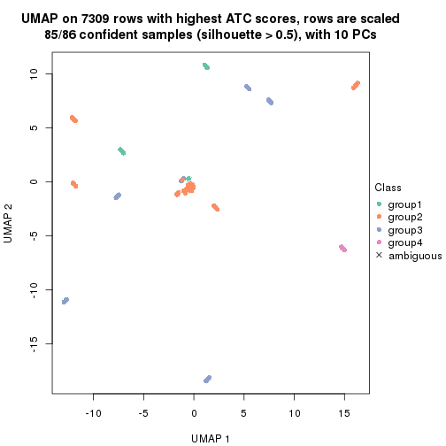
dimension_reduction(res, k = 5, method = "UMAP")
dimension_reduction(res, k = 6, method = "UMAP")
Following heatmap shows how subgroups are split when increasing k:
collect_classes(res)
If matrix rows can be associated to genes, consider to use functional_enrichment(res,
...) to perform function enrichment for the signature genes. See this vignette for more detailed explanations.
The object with results only for a single top-value method and a single partition method can be extracted as:
res = res_list["ATC", "mclust"]
# you can also extract it by
# res = res_list["ATC:mclust"]
A summary of res and all the functions that can be applied to it:
res
#> A 'ConsensusPartition' object with k = 2, 3, 4, 5, 6.
#> On a matrix with 7309 rows and 86 columns.
#> Top rows (731, 1462, 2192, 2923, 3654) are extracted by 'ATC' method.
#> Subgroups are detected by 'mclust' method.
#> Performed in total 1250 partitions by row resampling.
#> Best k for subgroups seems to be 4.
#>
#> Following methods can be applied to this 'ConsensusPartition' object:
#> [1] "cola_report" "collect_classes" "collect_plots"
#> [4] "collect_stats" "colnames" "compare_signatures"
#> [7] "consensus_heatmap" "dimension_reduction" "functional_enrichment"
#> [10] "get_anno_col" "get_anno" "get_classes"
#> [13] "get_consensus" "get_matrix" "get_membership"
#> [16] "get_param" "get_signatures" "get_stats"
#> [19] "is_best_k" "is_stable_k" "membership_heatmap"
#> [22] "ncol" "nrow" "plot_ecdf"
#> [25] "rownames" "select_partition_number" "show"
#> [28] "suggest_best_k" "test_to_known_factors"
collect_plots() function collects all the plots made from res for all k (number of partitions)
into one single page to provide an easy and fast comparison between different k.
collect_plots(res)
The plots are:
k and the heatmap of
predicted classes for each k.k.k.k.All the plots in panels can be made by individual functions and they are plotted later in this section.
select_partition_number() produces several plots showing different
statistics for choosing “optimized” k. There are following statistics:
k;k, the area increased is defined as \(A_k - A_{k-1}\).The detailed explanations of these statistics can be found in the cola vignette.
Generally speaking, lower PAC score, higher mean silhouette score or higher
concordance corresponds to better partition. Rand index and Jaccard index
measure how similar the current partition is compared to partition with k-1.
If they are too similar, we won't accept k is better than k-1.
select_partition_number(res)
The numeric values for all these statistics can be obtained by get_stats().
get_stats(res)
#> k 1-PAC mean_silhouette concordance area_increased Rand Jaccard
#> 2 2 0.993 0.962 0.971 0.3264 0.679 0.679
#> 3 3 0.725 0.761 0.899 0.9420 0.551 0.403
#> 4 4 1.000 0.950 0.976 0.0757 0.911 0.772
#> 5 5 0.892 0.927 0.945 0.0485 0.984 0.949
#> 6 6 0.819 0.849 0.897 0.0908 0.911 0.708
suggest_best_k() suggests the best \(k\) based on these statistics. The rules are as follows:
suggest_best_k(res)
#> [1] 4
#> attr(,"optional")
#> [1] 2
There is also optional best \(k\) = 2 that is worth to check.
Following shows the table of the partitions (You need to click the show/hide
code output link to see it). The membership matrix (columns with name p*)
is inferred by
clue::cl_consensus()
function with the SE method. Basically the value in the membership matrix
represents the probability to belong to a certain group. The finall class
label for an item is determined with the group with highest probability it
belongs to.
In get_classes() function, the entropy is calculated from the membership
matrix and the silhouette score is calculated from the consensus matrix.
cbind(get_classes(res, k = 2), get_membership(res, k = 2))
#> class entropy silhouette p1 p2
#> SRR2240643 2 0.2603 0.969 0.044 0.956
#> SRR2240644 2 0.2603 0.969 0.044 0.956
#> SRR2240645 2 0.2603 0.969 0.044 0.956
#> SRR2240646 2 0.2603 0.969 0.044 0.956
#> SRR2240647 2 0.2603 0.969 0.044 0.956
#> SRR2240638 2 0.2603 0.969 0.044 0.956
#> SRR2240639 2 0.2603 0.969 0.044 0.956
#> SRR2240640 2 0.2603 0.969 0.044 0.956
#> SRR2240641 2 0.2603 0.969 0.044 0.956
#> SRR2240642 2 0.2603 0.969 0.044 0.956
#> SRR2240633 2 0.2603 0.969 0.044 0.956
#> SRR2240634 2 0.2603 0.969 0.044 0.956
#> SRR2240635 2 0.2603 0.969 0.044 0.956
#> SRR2240636 2 0.2603 0.969 0.044 0.956
#> SRR2240637 2 0.2603 0.969 0.044 0.956
#> SRR2240624 2 0.1633 0.973 0.024 0.976
#> SRR2240625 2 0.1633 0.973 0.024 0.976
#> SRR2240626 2 0.1633 0.973 0.024 0.976
#> SRR2240627 2 0.2603 0.969 0.044 0.956
#> SRR2240628 2 0.2603 0.969 0.044 0.956
#> SRR2240629 2 0.2603 0.969 0.044 0.956
#> SRR2240630 2 0.2603 0.969 0.044 0.956
#> SRR2240631 2 0.2603 0.969 0.044 0.956
#> SRR2240632 2 0.2603 0.969 0.044 0.956
#> SRR2240613 2 0.2603 0.969 0.044 0.956
#> SRR2240614 2 0.2603 0.969 0.044 0.956
#> SRR2240615 2 0.2603 0.969 0.044 0.956
#> SRR2240616 2 0.2603 0.969 0.044 0.956
#> SRR2240617 2 0.2603 0.969 0.044 0.956
#> SRR2240618 1 0.0000 0.951 1.000 0.000
#> SRR2240619 1 0.0000 0.951 1.000 0.000
#> SRR2240620 1 0.0000 0.951 1.000 0.000
#> SRR2240621 1 0.0000 0.951 1.000 0.000
#> SRR2240622 1 0.0000 0.951 1.000 0.000
#> SRR2240623 1 0.0000 0.951 1.000 0.000
#> SRR2240609 2 0.0376 0.974 0.004 0.996
#> SRR2240610 2 0.0376 0.974 0.004 0.996
#> SRR2240611 2 0.0376 0.974 0.004 0.996
#> SRR2240612 2 0.0376 0.974 0.004 0.996
#> SRR2240594 2 0.1843 0.960 0.028 0.972
#> SRR2240595 2 0.1843 0.960 0.028 0.972
#> SRR2240596 2 0.1843 0.960 0.028 0.972
#> SRR2240597 2 0.1843 0.960 0.028 0.972
#> SRR2240598 2 0.1843 0.960 0.028 0.972
#> SRR2240604 2 0.0000 0.976 0.000 1.000
#> SRR2240605 2 0.0000 0.976 0.000 1.000
#> SRR2240606 2 0.0000 0.976 0.000 1.000
#> SRR2240607 2 0.0000 0.976 0.000 1.000
#> SRR2240608 2 0.0000 0.976 0.000 1.000
#> SRR2240599 1 0.2236 0.955 0.964 0.036
#> SRR2240600 1 0.2236 0.955 0.964 0.036
#> SRR2240601 1 0.2236 0.955 0.964 0.036
#> SRR2240602 1 0.2236 0.955 0.964 0.036
#> SRR2240603 1 0.2236 0.955 0.964 0.036
#> SRR2240584 2 0.0000 0.976 0.000 1.000
#> SRR2240585 2 0.0000 0.976 0.000 1.000
#> SRR2240586 2 0.0000 0.976 0.000 1.000
#> SRR2240587 2 0.0000 0.976 0.000 1.000
#> SRR2240588 2 0.0000 0.976 0.000 1.000
#> SRR2240589 1 0.4562 0.939 0.904 0.096
#> SRR2240590 1 0.4562 0.939 0.904 0.096
#> SRR2240591 1 0.4562 0.939 0.904 0.096
#> SRR2240592 1 0.4562 0.939 0.904 0.096
#> SRR2240593 1 0.4562 0.939 0.904 0.096
#> SRR2240578 2 0.0000 0.976 0.000 1.000
#> SRR2240579 2 0.0000 0.976 0.000 1.000
#> SRR2240580 2 0.0000 0.976 0.000 1.000
#> SRR2240581 2 0.0000 0.976 0.000 1.000
#> SRR2240582 2 0.0000 0.976 0.000 1.000
#> SRR2240583 2 0.0000 0.976 0.000 1.000
#> SRR1825969 2 0.0000 0.976 0.000 1.000
#> SRR1825968 2 0.0000 0.976 0.000 1.000
#> SRR1825970 1 0.7528 0.793 0.784 0.216
#> SRR1825966 2 0.0000 0.976 0.000 1.000
#> SRR1825967 2 0.0000 0.976 0.000 1.000
#> SRR1825965 2 0.0000 0.976 0.000 1.000
#> SRR1825962 2 0.0000 0.976 0.000 1.000
#> SRR1825963 2 0.0000 0.976 0.000 1.000
#> SRR1825964 2 0.0000 0.976 0.000 1.000
#> SRR1825961 2 0.7674 0.693 0.224 0.776
#> SRR1825960 2 0.0000 0.976 0.000 1.000
#> SRR1825958 2 0.0000 0.976 0.000 1.000
#> SRR1825959 2 0.0000 0.976 0.000 1.000
#> SRR1825956 2 0.0000 0.976 0.000 1.000
#> SRR1825957 2 0.0000 0.976 0.000 1.000
#> SRR1825955 2 0.0000 0.976 0.000 1.000
cbind(get_classes(res, k = 3), get_membership(res, k = 3))
#> class entropy silhouette p1 p2 p3
#> SRR2240643 3 0.0000 0.9726 0.000 0.000 1.000
#> SRR2240644 3 0.0000 0.9726 0.000 0.000 1.000
#> SRR2240645 3 0.0000 0.9726 0.000 0.000 1.000
#> SRR2240646 3 0.0000 0.9726 0.000 0.000 1.000
#> SRR2240647 3 0.0000 0.9726 0.000 0.000 1.000
#> SRR2240638 3 0.0000 0.9726 0.000 0.000 1.000
#> SRR2240639 3 0.0000 0.9726 0.000 0.000 1.000
#> SRR2240640 3 0.0000 0.9726 0.000 0.000 1.000
#> SRR2240641 3 0.0000 0.9726 0.000 0.000 1.000
#> SRR2240642 3 0.0000 0.9726 0.000 0.000 1.000
#> SRR2240633 3 0.2796 0.9019 0.092 0.000 0.908
#> SRR2240634 3 0.2796 0.9019 0.092 0.000 0.908
#> SRR2240635 3 0.2796 0.9019 0.092 0.000 0.908
#> SRR2240636 3 0.2796 0.9019 0.092 0.000 0.908
#> SRR2240637 3 0.2796 0.9019 0.092 0.000 0.908
#> SRR2240624 3 0.0892 0.9568 0.000 0.020 0.980
#> SRR2240625 3 0.0892 0.9568 0.000 0.020 0.980
#> SRR2240626 3 0.0892 0.9568 0.000 0.020 0.980
#> SRR2240627 3 0.0000 0.9726 0.000 0.000 1.000
#> SRR2240628 3 0.0000 0.9726 0.000 0.000 1.000
#> SRR2240629 3 0.0000 0.9726 0.000 0.000 1.000
#> SRR2240630 3 0.0000 0.9726 0.000 0.000 1.000
#> SRR2240631 3 0.0000 0.9726 0.000 0.000 1.000
#> SRR2240632 3 0.0000 0.9726 0.000 0.000 1.000
#> SRR2240613 1 0.3941 0.7617 0.844 0.000 0.156
#> SRR2240614 1 0.3941 0.7617 0.844 0.000 0.156
#> SRR2240615 1 0.3941 0.7617 0.844 0.000 0.156
#> SRR2240616 1 0.3941 0.7617 0.844 0.000 0.156
#> SRR2240617 1 0.3941 0.7617 0.844 0.000 0.156
#> SRR2240618 1 0.0000 0.8253 1.000 0.000 0.000
#> SRR2240619 1 0.0000 0.8253 1.000 0.000 0.000
#> SRR2240620 1 0.0000 0.8253 1.000 0.000 0.000
#> SRR2240621 1 0.0000 0.8253 1.000 0.000 0.000
#> SRR2240622 1 0.0000 0.8253 1.000 0.000 0.000
#> SRR2240623 1 0.0000 0.8253 1.000 0.000 0.000
#> SRR2240609 2 0.0237 0.8389 0.000 0.996 0.004
#> SRR2240610 2 0.0237 0.8389 0.000 0.996 0.004
#> SRR2240611 2 0.0237 0.8389 0.000 0.996 0.004
#> SRR2240612 2 0.0237 0.8389 0.000 0.996 0.004
#> SRR2240594 2 0.6260 0.2128 0.000 0.552 0.448
#> SRR2240595 2 0.6260 0.2128 0.000 0.552 0.448
#> SRR2240596 2 0.6260 0.2128 0.000 0.552 0.448
#> SRR2240597 2 0.6260 0.2128 0.000 0.552 0.448
#> SRR2240598 2 0.6260 0.2128 0.000 0.552 0.448
#> SRR2240604 2 0.1411 0.8374 0.000 0.964 0.036
#> SRR2240605 2 0.1411 0.8374 0.000 0.964 0.036
#> SRR2240606 2 0.1411 0.8374 0.000 0.964 0.036
#> SRR2240607 2 0.1289 0.8387 0.000 0.968 0.032
#> SRR2240608 2 0.1031 0.8399 0.000 0.976 0.024
#> SRR2240599 1 0.4399 0.7649 0.812 0.188 0.000
#> SRR2240600 1 0.4399 0.7649 0.812 0.188 0.000
#> SRR2240601 1 0.4399 0.7649 0.812 0.188 0.000
#> SRR2240602 1 0.4399 0.7649 0.812 0.188 0.000
#> SRR2240603 1 0.4399 0.7649 0.812 0.188 0.000
#> SRR2240584 2 0.0237 0.8389 0.000 0.996 0.004
#> SRR2240585 2 0.0237 0.8389 0.000 0.996 0.004
#> SRR2240586 2 0.0237 0.8389 0.000 0.996 0.004
#> SRR2240587 2 0.0237 0.8389 0.000 0.996 0.004
#> SRR2240588 2 0.0237 0.8389 0.000 0.996 0.004
#> SRR2240589 2 0.6267 0.0121 0.452 0.548 0.000
#> SRR2240590 2 0.6267 0.0121 0.452 0.548 0.000
#> SRR2240591 2 0.6267 0.0121 0.452 0.548 0.000
#> SRR2240592 2 0.6267 0.0121 0.452 0.548 0.000
#> SRR2240593 2 0.6267 0.0121 0.452 0.548 0.000
#> SRR2240578 2 0.0475 0.8378 0.004 0.992 0.004
#> SRR2240579 2 0.0475 0.8378 0.004 0.992 0.004
#> SRR2240580 2 0.0475 0.8378 0.004 0.992 0.004
#> SRR2240581 2 0.0475 0.8378 0.004 0.992 0.004
#> SRR2240582 2 0.0475 0.8378 0.004 0.992 0.004
#> SRR2240583 2 0.0475 0.8378 0.004 0.992 0.004
#> SRR1825969 2 0.1289 0.8389 0.000 0.968 0.032
#> SRR1825968 2 0.0892 0.8402 0.000 0.980 0.020
#> SRR1825970 1 0.7752 0.1727 0.496 0.456 0.048
#> SRR1825966 2 0.1163 0.8398 0.000 0.972 0.028
#> SRR1825967 2 0.1289 0.8384 0.000 0.968 0.032
#> SRR1825965 2 0.4235 0.7233 0.000 0.824 0.176
#> SRR1825962 2 0.1289 0.8383 0.000 0.968 0.032
#> SRR1825963 2 0.0892 0.8402 0.000 0.980 0.020
#> SRR1825964 2 0.0000 0.8371 0.000 1.000 0.000
#> SRR1825961 1 0.8487 0.3794 0.536 0.364 0.100
#> SRR1825960 2 0.2796 0.8035 0.000 0.908 0.092
#> SRR1825958 2 0.1860 0.8280 0.000 0.948 0.052
#> SRR1825959 2 0.2711 0.8067 0.000 0.912 0.088
#> SRR1825956 2 0.2878 0.8002 0.000 0.904 0.096
#> SRR1825957 2 0.2711 0.8062 0.000 0.912 0.088
#> SRR1825955 2 0.0747 0.8402 0.000 0.984 0.016
cbind(get_classes(res, k = 4), get_membership(res, k = 4))
#> class entropy silhouette p1 p2 p3 p4
#> SRR2240643 3 0.0000 0.924 0.000 0.000 1.000 0
#> SRR2240644 3 0.0000 0.924 0.000 0.000 1.000 0
#> SRR2240645 3 0.0000 0.924 0.000 0.000 1.000 0
#> SRR2240646 3 0.0000 0.924 0.000 0.000 1.000 0
#> SRR2240647 3 0.0000 0.924 0.000 0.000 1.000 0
#> SRR2240638 3 0.0000 0.924 0.000 0.000 1.000 0
#> SRR2240639 3 0.0000 0.924 0.000 0.000 1.000 0
#> SRR2240640 3 0.0000 0.924 0.000 0.000 1.000 0
#> SRR2240641 3 0.0000 0.924 0.000 0.000 1.000 0
#> SRR2240642 3 0.0000 0.924 0.000 0.000 1.000 0
#> SRR2240633 3 0.4072 0.715 0.252 0.000 0.748 0
#> SRR2240634 3 0.4072 0.715 0.252 0.000 0.748 0
#> SRR2240635 3 0.4072 0.715 0.252 0.000 0.748 0
#> SRR2240636 3 0.4072 0.715 0.252 0.000 0.748 0
#> SRR2240637 3 0.4072 0.715 0.252 0.000 0.748 0
#> SRR2240624 3 0.1489 0.885 0.004 0.044 0.952 0
#> SRR2240625 3 0.1489 0.885 0.004 0.044 0.952 0
#> SRR2240626 3 0.1489 0.885 0.004 0.044 0.952 0
#> SRR2240627 3 0.0000 0.924 0.000 0.000 1.000 0
#> SRR2240628 3 0.0000 0.924 0.000 0.000 1.000 0
#> SRR2240629 3 0.0000 0.924 0.000 0.000 1.000 0
#> SRR2240630 3 0.0000 0.924 0.000 0.000 1.000 0
#> SRR2240631 3 0.0000 0.924 0.000 0.000 1.000 0
#> SRR2240632 3 0.0000 0.924 0.000 0.000 1.000 0
#> SRR2240613 1 0.1302 0.956 0.956 0.000 0.044 0
#> SRR2240614 1 0.1302 0.956 0.956 0.000 0.044 0
#> SRR2240615 1 0.1302 0.956 0.956 0.000 0.044 0
#> SRR2240616 1 0.1302 0.956 0.956 0.000 0.044 0
#> SRR2240617 1 0.1302 0.956 0.956 0.000 0.044 0
#> SRR2240618 4 0.0000 1.000 0.000 0.000 0.000 1
#> SRR2240619 4 0.0000 1.000 0.000 0.000 0.000 1
#> SRR2240620 4 0.0000 1.000 0.000 0.000 0.000 1
#> SRR2240621 4 0.0000 1.000 0.000 0.000 0.000 1
#> SRR2240622 4 0.0000 1.000 0.000 0.000 0.000 1
#> SRR2240623 4 0.0000 1.000 0.000 0.000 0.000 1
#> SRR2240609 2 0.0000 0.986 0.000 1.000 0.000 0
#> SRR2240610 2 0.0000 0.986 0.000 1.000 0.000 0
#> SRR2240611 2 0.0000 0.986 0.000 1.000 0.000 0
#> SRR2240612 2 0.0000 0.986 0.000 1.000 0.000 0
#> SRR2240594 2 0.0188 0.985 0.000 0.996 0.004 0
#> SRR2240595 2 0.0188 0.985 0.000 0.996 0.004 0
#> SRR2240596 2 0.0188 0.985 0.000 0.996 0.004 0
#> SRR2240597 2 0.0188 0.985 0.000 0.996 0.004 0
#> SRR2240598 2 0.0188 0.985 0.000 0.996 0.004 0
#> SRR2240604 2 0.0000 0.986 0.000 1.000 0.000 0
#> SRR2240605 2 0.0000 0.986 0.000 1.000 0.000 0
#> SRR2240606 2 0.0000 0.986 0.000 1.000 0.000 0
#> SRR2240607 2 0.0000 0.986 0.000 1.000 0.000 0
#> SRR2240608 2 0.0000 0.986 0.000 1.000 0.000 0
#> SRR2240599 1 0.0000 0.981 1.000 0.000 0.000 0
#> SRR2240600 1 0.0000 0.981 1.000 0.000 0.000 0
#> SRR2240601 1 0.0000 0.981 1.000 0.000 0.000 0
#> SRR2240602 1 0.0000 0.981 1.000 0.000 0.000 0
#> SRR2240603 1 0.0000 0.981 1.000 0.000 0.000 0
#> SRR2240584 2 0.0000 0.986 0.000 1.000 0.000 0
#> SRR2240585 2 0.0000 0.986 0.000 1.000 0.000 0
#> SRR2240586 2 0.0000 0.986 0.000 1.000 0.000 0
#> SRR2240587 2 0.0000 0.986 0.000 1.000 0.000 0
#> SRR2240588 2 0.0000 0.986 0.000 1.000 0.000 0
#> SRR2240589 1 0.0000 0.981 1.000 0.000 0.000 0
#> SRR2240590 1 0.0000 0.981 1.000 0.000 0.000 0
#> SRR2240591 1 0.0000 0.981 1.000 0.000 0.000 0
#> SRR2240592 1 0.0000 0.981 1.000 0.000 0.000 0
#> SRR2240593 1 0.0000 0.981 1.000 0.000 0.000 0
#> SRR2240578 2 0.1716 0.936 0.064 0.936 0.000 0
#> SRR2240579 2 0.1716 0.936 0.064 0.936 0.000 0
#> SRR2240580 2 0.1716 0.936 0.064 0.936 0.000 0
#> SRR2240581 2 0.1716 0.936 0.064 0.936 0.000 0
#> SRR2240582 2 0.1716 0.936 0.064 0.936 0.000 0
#> SRR2240583 2 0.1716 0.936 0.064 0.936 0.000 0
#> SRR1825969 2 0.0000 0.986 0.000 1.000 0.000 0
#> SRR1825968 2 0.0000 0.986 0.000 1.000 0.000 0
#> SRR1825970 1 0.0000 0.981 1.000 0.000 0.000 0
#> SRR1825966 2 0.0000 0.986 0.000 1.000 0.000 0
#> SRR1825967 2 0.0000 0.986 0.000 1.000 0.000 0
#> SRR1825965 2 0.0921 0.963 0.000 0.972 0.028 0
#> SRR1825962 2 0.0188 0.984 0.000 0.996 0.004 0
#> SRR1825963 2 0.0000 0.986 0.000 1.000 0.000 0
#> SRR1825964 2 0.0000 0.986 0.000 1.000 0.000 0
#> SRR1825961 1 0.0188 0.979 0.996 0.000 0.004 0
#> SRR1825960 2 0.0188 0.984 0.000 0.996 0.004 0
#> SRR1825958 2 0.0188 0.984 0.000 0.996 0.004 0
#> SRR1825959 2 0.0188 0.984 0.000 0.996 0.004 0
#> SRR1825956 2 0.0469 0.978 0.000 0.988 0.012 0
#> SRR1825957 2 0.0188 0.984 0.000 0.996 0.004 0
#> SRR1825955 2 0.0000 0.986 0.000 1.000 0.000 0
cbind(get_classes(res, k = 5), get_membership(res, k = 5))
#> class entropy silhouette p1 p2 p3 p4 p5
#> SRR2240643 3 0.0000 0.919 0.000 0.000 1.000 0 0.000
#> SRR2240644 3 0.0000 0.919 0.000 0.000 1.000 0 0.000
#> SRR2240645 3 0.0000 0.919 0.000 0.000 1.000 0 0.000
#> SRR2240646 3 0.0000 0.919 0.000 0.000 1.000 0 0.000
#> SRR2240647 3 0.0000 0.919 0.000 0.000 1.000 0 0.000
#> SRR2240638 3 0.0000 0.919 0.000 0.000 1.000 0 0.000
#> SRR2240639 3 0.0000 0.919 0.000 0.000 1.000 0 0.000
#> SRR2240640 3 0.0000 0.919 0.000 0.000 1.000 0 0.000
#> SRR2240641 3 0.0000 0.919 0.000 0.000 1.000 0 0.000
#> SRR2240642 3 0.0000 0.919 0.000 0.000 1.000 0 0.000
#> SRR2240633 3 0.3796 0.648 0.000 0.000 0.700 0 0.300
#> SRR2240634 3 0.3796 0.648 0.000 0.000 0.700 0 0.300
#> SRR2240635 3 0.3796 0.648 0.000 0.000 0.700 0 0.300
#> SRR2240636 3 0.3796 0.648 0.000 0.000 0.700 0 0.300
#> SRR2240637 3 0.3796 0.648 0.000 0.000 0.700 0 0.300
#> SRR2240624 3 0.1579 0.872 0.000 0.032 0.944 0 0.024
#> SRR2240625 3 0.1579 0.872 0.000 0.032 0.944 0 0.024
#> SRR2240626 3 0.1579 0.872 0.000 0.032 0.944 0 0.024
#> SRR2240627 3 0.0000 0.919 0.000 0.000 1.000 0 0.000
#> SRR2240628 3 0.0000 0.919 0.000 0.000 1.000 0 0.000
#> SRR2240629 3 0.0000 0.919 0.000 0.000 1.000 0 0.000
#> SRR2240630 3 0.0000 0.919 0.000 0.000 1.000 0 0.000
#> SRR2240631 3 0.0000 0.919 0.000 0.000 1.000 0 0.000
#> SRR2240632 3 0.0000 0.919 0.000 0.000 1.000 0 0.000
#> SRR2240613 5 0.2377 1.000 0.128 0.000 0.000 0 0.872
#> SRR2240614 5 0.2377 1.000 0.128 0.000 0.000 0 0.872
#> SRR2240615 5 0.2377 1.000 0.128 0.000 0.000 0 0.872
#> SRR2240616 5 0.2377 1.000 0.128 0.000 0.000 0 0.872
#> SRR2240617 5 0.2377 1.000 0.128 0.000 0.000 0 0.872
#> SRR2240618 4 0.0000 1.000 0.000 0.000 0.000 1 0.000
#> SRR2240619 4 0.0000 1.000 0.000 0.000 0.000 1 0.000
#> SRR2240620 4 0.0000 1.000 0.000 0.000 0.000 1 0.000
#> SRR2240621 4 0.0000 1.000 0.000 0.000 0.000 1 0.000
#> SRR2240622 4 0.0000 1.000 0.000 0.000 0.000 1 0.000
#> SRR2240623 4 0.0000 1.000 0.000 0.000 0.000 1 0.000
#> SRR2240609 2 0.0162 0.944 0.000 0.996 0.000 0 0.004
#> SRR2240610 2 0.0162 0.944 0.000 0.996 0.000 0 0.004
#> SRR2240611 2 0.0162 0.944 0.000 0.996 0.000 0 0.004
#> SRR2240612 2 0.0162 0.944 0.000 0.996 0.000 0 0.004
#> SRR2240594 2 0.1410 0.937 0.000 0.940 0.000 0 0.060
#> SRR2240595 2 0.1410 0.937 0.000 0.940 0.000 0 0.060
#> SRR2240596 2 0.1410 0.937 0.000 0.940 0.000 0 0.060
#> SRR2240597 2 0.1410 0.937 0.000 0.940 0.000 0 0.060
#> SRR2240598 2 0.1410 0.937 0.000 0.940 0.000 0 0.060
#> SRR2240604 2 0.0162 0.944 0.000 0.996 0.000 0 0.004
#> SRR2240605 2 0.0162 0.944 0.000 0.996 0.000 0 0.004
#> SRR2240606 2 0.0162 0.944 0.000 0.996 0.000 0 0.004
#> SRR2240607 2 0.0162 0.944 0.000 0.996 0.000 0 0.004
#> SRR2240608 2 0.0162 0.944 0.000 0.996 0.000 0 0.004
#> SRR2240599 1 0.0000 1.000 1.000 0.000 0.000 0 0.000
#> SRR2240600 1 0.0000 1.000 1.000 0.000 0.000 0 0.000
#> SRR2240601 1 0.0000 1.000 1.000 0.000 0.000 0 0.000
#> SRR2240602 1 0.0000 1.000 1.000 0.000 0.000 0 0.000
#> SRR2240603 1 0.0000 1.000 1.000 0.000 0.000 0 0.000
#> SRR2240584 2 0.2329 0.915 0.000 0.876 0.000 0 0.124
#> SRR2240585 2 0.2329 0.915 0.000 0.876 0.000 0 0.124
#> SRR2240586 2 0.2329 0.915 0.000 0.876 0.000 0 0.124
#> SRR2240587 2 0.2329 0.915 0.000 0.876 0.000 0 0.124
#> SRR2240588 2 0.2329 0.915 0.000 0.876 0.000 0 0.124
#> SRR2240589 1 0.0000 1.000 1.000 0.000 0.000 0 0.000
#> SRR2240590 1 0.0000 1.000 1.000 0.000 0.000 0 0.000
#> SRR2240591 1 0.0000 1.000 1.000 0.000 0.000 0 0.000
#> SRR2240592 1 0.0000 1.000 1.000 0.000 0.000 0 0.000
#> SRR2240593 1 0.0000 1.000 1.000 0.000 0.000 0 0.000
#> SRR2240578 2 0.3814 0.870 0.068 0.808 0.000 0 0.124
#> SRR2240579 2 0.3814 0.870 0.068 0.808 0.000 0 0.124
#> SRR2240580 2 0.3814 0.870 0.068 0.808 0.000 0 0.124
#> SRR2240581 2 0.3814 0.870 0.068 0.808 0.000 0 0.124
#> SRR2240582 2 0.3814 0.870 0.068 0.808 0.000 0 0.124
#> SRR2240583 2 0.3814 0.870 0.068 0.808 0.000 0 0.124
#> SRR1825969 2 0.0162 0.944 0.000 0.996 0.000 0 0.004
#> SRR1825968 2 0.0000 0.944 0.000 1.000 0.000 0 0.000
#> SRR1825970 1 0.0000 1.000 1.000 0.000 0.000 0 0.000
#> SRR1825966 2 0.0162 0.944 0.000 0.996 0.000 0 0.004
#> SRR1825967 2 0.0162 0.944 0.000 0.996 0.000 0 0.004
#> SRR1825965 2 0.2228 0.918 0.000 0.912 0.048 0 0.040
#> SRR1825962 2 0.0000 0.944 0.000 1.000 0.000 0 0.000
#> SRR1825963 2 0.0162 0.944 0.000 0.996 0.000 0 0.004
#> SRR1825964 2 0.2329 0.915 0.000 0.876 0.000 0 0.124
#> SRR1825961 1 0.0000 1.000 1.000 0.000 0.000 0 0.000
#> SRR1825960 2 0.1597 0.936 0.000 0.940 0.012 0 0.048
#> SRR1825958 2 0.0162 0.944 0.000 0.996 0.000 0 0.004
#> SRR1825959 2 0.0290 0.944 0.000 0.992 0.000 0 0.008
#> SRR1825956 2 0.0451 0.943 0.000 0.988 0.004 0 0.008
#> SRR1825957 2 0.0000 0.944 0.000 1.000 0.000 0 0.000
#> SRR1825955 2 0.0162 0.944 0.000 0.996 0.000 0 0.004
cbind(get_classes(res, k = 6), get_membership(res, k = 6))
#> class entropy silhouette p1 p2 p3 p4 p5 p6
#> SRR2240643 3 0.2048 0.841 0.000 0.000 0.880 0 0.000 0.120
#> SRR2240644 3 0.2048 0.841 0.000 0.000 0.880 0 0.000 0.120
#> SRR2240645 3 0.2048 0.841 0.000 0.000 0.880 0 0.000 0.120
#> SRR2240646 3 0.2048 0.841 0.000 0.000 0.880 0 0.000 0.120
#> SRR2240647 3 0.2048 0.841 0.000 0.000 0.880 0 0.000 0.120
#> SRR2240638 3 0.0146 0.870 0.000 0.000 0.996 0 0.000 0.004
#> SRR2240639 3 0.0146 0.870 0.000 0.000 0.996 0 0.000 0.004
#> SRR2240640 3 0.0146 0.870 0.000 0.000 0.996 0 0.000 0.004
#> SRR2240641 3 0.0146 0.870 0.000 0.000 0.996 0 0.000 0.004
#> SRR2240642 3 0.0146 0.870 0.000 0.000 0.996 0 0.000 0.004
#> SRR2240633 3 0.5271 0.545 0.000 0.000 0.576 0 0.292 0.132
#> SRR2240634 3 0.5271 0.545 0.000 0.000 0.576 0 0.292 0.132
#> SRR2240635 3 0.5271 0.545 0.000 0.000 0.576 0 0.292 0.132
#> SRR2240636 3 0.5271 0.545 0.000 0.000 0.576 0 0.292 0.132
#> SRR2240637 3 0.5271 0.545 0.000 0.000 0.576 0 0.292 0.132
#> SRR2240624 3 0.1411 0.833 0.000 0.004 0.936 0 0.000 0.060
#> SRR2240625 3 0.1411 0.833 0.000 0.004 0.936 0 0.000 0.060
#> SRR2240626 3 0.1411 0.833 0.000 0.004 0.936 0 0.000 0.060
#> SRR2240627 3 0.0000 0.871 0.000 0.000 1.000 0 0.000 0.000
#> SRR2240628 3 0.0000 0.871 0.000 0.000 1.000 0 0.000 0.000
#> SRR2240629 3 0.0000 0.871 0.000 0.000 1.000 0 0.000 0.000
#> SRR2240630 3 0.0000 0.871 0.000 0.000 1.000 0 0.000 0.000
#> SRR2240631 3 0.0000 0.871 0.000 0.000 1.000 0 0.000 0.000
#> SRR2240632 3 0.0000 0.871 0.000 0.000 1.000 0 0.000 0.000
#> SRR2240613 5 0.0000 1.000 0.000 0.000 0.000 0 1.000 0.000
#> SRR2240614 5 0.0000 1.000 0.000 0.000 0.000 0 1.000 0.000
#> SRR2240615 5 0.0000 1.000 0.000 0.000 0.000 0 1.000 0.000
#> SRR2240616 5 0.0000 1.000 0.000 0.000 0.000 0 1.000 0.000
#> SRR2240617 5 0.0000 1.000 0.000 0.000 0.000 0 1.000 0.000
#> SRR2240618 4 0.0000 1.000 0.000 0.000 0.000 1 0.000 0.000
#> SRR2240619 4 0.0000 1.000 0.000 0.000 0.000 1 0.000 0.000
#> SRR2240620 4 0.0000 1.000 0.000 0.000 0.000 1 0.000 0.000
#> SRR2240621 4 0.0000 1.000 0.000 0.000 0.000 1 0.000 0.000
#> SRR2240622 4 0.0000 1.000 0.000 0.000 0.000 1 0.000 0.000
#> SRR2240623 4 0.0000 1.000 0.000 0.000 0.000 1 0.000 0.000
#> SRR2240609 2 0.1387 0.829 0.000 0.932 0.000 0 0.000 0.068
#> SRR2240610 2 0.1387 0.829 0.000 0.932 0.000 0 0.000 0.068
#> SRR2240611 2 0.1387 0.829 0.000 0.932 0.000 0 0.000 0.068
#> SRR2240612 2 0.1387 0.829 0.000 0.932 0.000 0 0.000 0.068
#> SRR2240594 2 0.3288 0.566 0.000 0.724 0.000 0 0.000 0.276
#> SRR2240595 2 0.3288 0.566 0.000 0.724 0.000 0 0.000 0.276
#> SRR2240596 2 0.3288 0.566 0.000 0.724 0.000 0 0.000 0.276
#> SRR2240597 2 0.3288 0.566 0.000 0.724 0.000 0 0.000 0.276
#> SRR2240598 2 0.3288 0.566 0.000 0.724 0.000 0 0.000 0.276
#> SRR2240604 2 0.0146 0.871 0.000 0.996 0.000 0 0.000 0.004
#> SRR2240605 2 0.0260 0.869 0.000 0.992 0.000 0 0.000 0.008
#> SRR2240606 2 0.0260 0.869 0.000 0.992 0.000 0 0.000 0.008
#> SRR2240607 2 0.0260 0.872 0.000 0.992 0.000 0 0.000 0.008
#> SRR2240608 2 0.0146 0.871 0.000 0.996 0.000 0 0.000 0.004
#> SRR2240599 1 0.0713 0.985 0.972 0.000 0.000 0 0.000 0.028
#> SRR2240600 1 0.0713 0.985 0.972 0.000 0.000 0 0.000 0.028
#> SRR2240601 1 0.0713 0.985 0.972 0.000 0.000 0 0.000 0.028
#> SRR2240602 1 0.0713 0.985 0.972 0.000 0.000 0 0.000 0.028
#> SRR2240603 1 0.0713 0.985 0.972 0.000 0.000 0 0.000 0.028
#> SRR2240584 6 0.3672 0.805 0.000 0.368 0.000 0 0.000 0.632
#> SRR2240585 6 0.3672 0.805 0.000 0.368 0.000 0 0.000 0.632
#> SRR2240586 6 0.3672 0.805 0.000 0.368 0.000 0 0.000 0.632
#> SRR2240587 6 0.3672 0.805 0.000 0.368 0.000 0 0.000 0.632
#> SRR2240588 6 0.3672 0.805 0.000 0.368 0.000 0 0.000 0.632
#> SRR2240589 1 0.0000 0.989 1.000 0.000 0.000 0 0.000 0.000
#> SRR2240590 1 0.0000 0.989 1.000 0.000 0.000 0 0.000 0.000
#> SRR2240591 1 0.0000 0.989 1.000 0.000 0.000 0 0.000 0.000
#> SRR2240592 1 0.0000 0.989 1.000 0.000 0.000 0 0.000 0.000
#> SRR2240593 1 0.0000 0.989 1.000 0.000 0.000 0 0.000 0.000
#> SRR2240578 6 0.2730 0.845 0.000 0.192 0.000 0 0.000 0.808
#> SRR2240579 6 0.2730 0.845 0.000 0.192 0.000 0 0.000 0.808
#> SRR2240580 6 0.2730 0.845 0.000 0.192 0.000 0 0.000 0.808
#> SRR2240581 6 0.2730 0.845 0.000 0.192 0.000 0 0.000 0.808
#> SRR2240582 6 0.2730 0.845 0.000 0.192 0.000 0 0.000 0.808
#> SRR2240583 6 0.2730 0.845 0.000 0.192 0.000 0 0.000 0.808
#> SRR1825969 2 0.0260 0.871 0.000 0.992 0.000 0 0.000 0.008
#> SRR1825968 2 0.0260 0.873 0.000 0.992 0.000 0 0.000 0.008
#> SRR1825970 1 0.0000 0.989 1.000 0.000 0.000 0 0.000 0.000
#> SRR1825966 2 0.0146 0.872 0.000 0.996 0.000 0 0.000 0.004
#> SRR1825967 2 0.0146 0.871 0.000 0.996 0.000 0 0.000 0.004
#> SRR1825965 2 0.4229 0.553 0.000 0.712 0.068 0 0.000 0.220
#> SRR1825962 2 0.0458 0.871 0.000 0.984 0.000 0 0.000 0.016
#> SRR1825963 2 0.0146 0.872 0.000 0.996 0.000 0 0.000 0.004
#> SRR1825964 6 0.3717 0.778 0.000 0.384 0.000 0 0.000 0.616
#> SRR1825961 1 0.0000 0.989 1.000 0.000 0.000 0 0.000 0.000
#> SRR1825960 2 0.2915 0.693 0.000 0.808 0.008 0 0.000 0.184
#> SRR1825958 2 0.0146 0.872 0.000 0.996 0.000 0 0.000 0.004
#> SRR1825959 2 0.1007 0.857 0.000 0.956 0.000 0 0.000 0.044
#> SRR1825956 2 0.0858 0.865 0.000 0.968 0.004 0 0.000 0.028
#> SRR1825957 2 0.0363 0.872 0.000 0.988 0.000 0 0.000 0.012
#> SRR1825955 2 0.0146 0.872 0.000 0.996 0.000 0 0.000 0.004
Heatmaps for the consensus matrix. It visualizes the probability of two samples to be in a same group.
consensus_heatmap(res, k = 2)
consensus_heatmap(res, k = 3)
consensus_heatmap(res, k = 4)
consensus_heatmap(res, k = 5)
consensus_heatmap(res, k = 6)

Heatmaps for the membership of samples in all partitions to see how consistent they are:
membership_heatmap(res, k = 2)
membership_heatmap(res, k = 3)
membership_heatmap(res, k = 4)
membership_heatmap(res, k = 5)
membership_heatmap(res, k = 6)
As soon as we have had the classes for columns, we can look for signatures which are significantly different between classes which can be candidate marks for certain classes. Following are the heatmaps for signatures.
Signature heatmaps where rows are scaled:
get_signatures(res, k = 2)
get_signatures(res, k = 3)
get_signatures(res, k = 4)
get_signatures(res, k = 5)
get_signatures(res, k = 6)
Signature heatmaps where rows are not scaled:
get_signatures(res, k = 2, scale_rows = FALSE)
get_signatures(res, k = 3, scale_rows = FALSE)
get_signatures(res, k = 4, scale_rows = FALSE)
get_signatures(res, k = 5, scale_rows = FALSE)
get_signatures(res, k = 6, scale_rows = FALSE)
Compare the overlap of signatures from different k:
compare_signatures(res)
get_signature() returns a data frame invisibly. TO get the list of signatures, the function
call should be assigned to a variable explicitly. In following code, if plot argument is set
to FALSE, no heatmap is plotted while only the differential analysis is performed.
# code only for demonstration
tb = get_signature(res, k = ..., plot = FALSE)
An example of the output of tb is:
#> which_row fdr mean_1 mean_2 scaled_mean_1 scaled_mean_2 km
#> 1 38 0.042760348 8.373488 9.131774 -0.5533452 0.5164555 1
#> 2 40 0.018707592 7.106213 8.469186 -0.6173731 0.5762149 1
#> 3 55 0.019134737 10.221463 11.207825 -0.6159697 0.5749050 1
#> 4 59 0.006059896 5.921854 7.869574 -0.6899429 0.6439467 1
#> 5 60 0.018055526 8.928898 10.211722 -0.6204761 0.5791110 1
#> 6 98 0.009384629 15.714769 14.887706 0.6635654 -0.6193277 2
...
The columns in tb are:
which_row: row indices corresponding to the input matrix.fdr: FDR for the differential test. mean_x: The mean value in group x.scaled_mean_x: The mean value in group x after rows are scaled.km: Row groups if k-means clustering is applied to rows.UMAP plot which shows how samples are separated.
dimension_reduction(res, k = 2, method = "UMAP")
dimension_reduction(res, k = 3, method = "UMAP")
dimension_reduction(res, k = 4, method = "UMAP")
dimension_reduction(res, k = 5, method = "UMAP")
dimension_reduction(res, k = 6, method = "UMAP")
Following heatmap shows how subgroups are split when increasing k:
collect_classes(res)
If matrix rows can be associated to genes, consider to use functional_enrichment(res,
...) to perform function enrichment for the signature genes. See this vignette for more detailed explanations.
The object with results only for a single top-value method and a single partition method can be extracted as:
res = res_list["ATC", "NMF"]
# you can also extract it by
# res = res_list["ATC:NMF"]
A summary of res and all the functions that can be applied to it:
res
#> A 'ConsensusPartition' object with k = 2, 3, 4, 5, 6.
#> On a matrix with 7309 rows and 86 columns.
#> Top rows (731, 1462, 2192, 2923, 3654) are extracted by 'ATC' method.
#> Subgroups are detected by 'NMF' method.
#> Performed in total 1250 partitions by row resampling.
#> Best k for subgroups seems to be 2.
#>
#> Following methods can be applied to this 'ConsensusPartition' object:
#> [1] "cola_report" "collect_classes" "collect_plots"
#> [4] "collect_stats" "colnames" "compare_signatures"
#> [7] "consensus_heatmap" "dimension_reduction" "functional_enrichment"
#> [10] "get_anno_col" "get_anno" "get_classes"
#> [13] "get_consensus" "get_matrix" "get_membership"
#> [16] "get_param" "get_signatures" "get_stats"
#> [19] "is_best_k" "is_stable_k" "membership_heatmap"
#> [22] "ncol" "nrow" "plot_ecdf"
#> [25] "rownames" "select_partition_number" "show"
#> [28] "suggest_best_k" "test_to_known_factors"
collect_plots() function collects all the plots made from res for all k (number of partitions)
into one single page to provide an easy and fast comparison between different k.
collect_plots(res)
The plots are:
k and the heatmap of
predicted classes for each k.k.k.k.All the plots in panels can be made by individual functions and they are plotted later in this section.
select_partition_number() produces several plots showing different
statistics for choosing “optimized” k. There are following statistics:
k;k, the area increased is defined as \(A_k - A_{k-1}\).The detailed explanations of these statistics can be found in the cola vignette.
Generally speaking, lower PAC score, higher mean silhouette score or higher
concordance corresponds to better partition. Rand index and Jaccard index
measure how similar the current partition is compared to partition with k-1.
If they are too similar, we won't accept k is better than k-1.
select_partition_number(res)
The numeric values for all these statistics can be obtained by get_stats().
get_stats(res)
#> k 1-PAC mean_silhouette concordance area_increased Rand Jaccard
#> 2 2 0.794 0.913 0.953 0.4236 0.564 0.564
#> 3 3 0.787 0.898 0.928 0.1920 0.952 0.915
#> 4 4 0.650 0.847 0.913 0.2539 0.713 0.502
#> 5 5 0.862 0.860 0.912 0.0916 0.966 0.902
#> 6 6 0.814 0.827 0.869 0.0514 1.000 1.000
suggest_best_k() suggests the best \(k\) based on these statistics. The rules are as follows:
suggest_best_k(res)
#> [1] 2
Following shows the table of the partitions (You need to click the show/hide
code output link to see it). The membership matrix (columns with name p*)
is inferred by
clue::cl_consensus()
function with the SE method. Basically the value in the membership matrix
represents the probability to belong to a certain group. The finall class
label for an item is determined with the group with highest probability it
belongs to.
In get_classes() function, the entropy is calculated from the membership
matrix and the silhouette score is calculated from the consensus matrix.
cbind(get_classes(res, k = 2), get_membership(res, k = 2))
#> class entropy silhouette p1 p2
#> SRR2240643 2 0.7453 0.733 0.212 0.788
#> SRR2240644 2 0.7453 0.733 0.212 0.788
#> SRR2240645 2 0.7219 0.752 0.200 0.800
#> SRR2240646 2 0.6801 0.782 0.180 0.820
#> SRR2240647 2 0.7674 0.713 0.224 0.776
#> SRR2240638 2 0.0000 0.969 0.000 1.000
#> SRR2240639 2 0.0000 0.969 0.000 1.000
#> SRR2240640 2 0.0000 0.969 0.000 1.000
#> SRR2240641 2 0.0000 0.969 0.000 1.000
#> SRR2240642 2 0.0000 0.969 0.000 1.000
#> SRR2240633 1 0.1633 0.910 0.976 0.024
#> SRR2240634 1 0.1633 0.910 0.976 0.024
#> SRR2240635 1 0.1633 0.910 0.976 0.024
#> SRR2240636 1 0.1633 0.910 0.976 0.024
#> SRR2240637 1 0.1633 0.910 0.976 0.024
#> SRR2240624 2 0.0000 0.969 0.000 1.000
#> SRR2240625 2 0.0000 0.969 0.000 1.000
#> SRR2240626 2 0.0000 0.969 0.000 1.000
#> SRR2240627 2 0.3274 0.926 0.060 0.940
#> SRR2240628 2 0.3733 0.916 0.072 0.928
#> SRR2240629 2 0.3584 0.919 0.068 0.932
#> SRR2240630 2 0.3733 0.916 0.072 0.928
#> SRR2240631 2 0.3733 0.916 0.072 0.928
#> SRR2240632 2 0.3879 0.912 0.076 0.924
#> SRR2240613 1 0.0376 0.907 0.996 0.004
#> SRR2240614 1 0.0376 0.907 0.996 0.004
#> SRR2240615 1 0.0376 0.907 0.996 0.004
#> SRR2240616 1 0.0376 0.907 0.996 0.004
#> SRR2240617 1 0.0376 0.907 0.996 0.004
#> SRR2240618 1 0.0938 0.909 0.988 0.012
#> SRR2240619 1 0.0938 0.909 0.988 0.012
#> SRR2240620 1 0.0938 0.909 0.988 0.012
#> SRR2240621 1 0.0938 0.909 0.988 0.012
#> SRR2240622 1 0.0938 0.909 0.988 0.012
#> SRR2240623 1 0.0938 0.909 0.988 0.012
#> SRR2240609 2 0.0376 0.968 0.004 0.996
#> SRR2240610 2 0.0376 0.968 0.004 0.996
#> SRR2240611 2 0.0376 0.968 0.004 0.996
#> SRR2240612 2 0.0376 0.968 0.004 0.996
#> SRR2240594 2 0.0000 0.969 0.000 1.000
#> SRR2240595 2 0.0000 0.969 0.000 1.000
#> SRR2240596 2 0.0000 0.969 0.000 1.000
#> SRR2240597 2 0.0000 0.969 0.000 1.000
#> SRR2240598 2 0.0000 0.969 0.000 1.000
#> SRR2240604 2 0.0000 0.969 0.000 1.000
#> SRR2240605 2 0.0000 0.969 0.000 1.000
#> SRR2240606 2 0.0000 0.969 0.000 1.000
#> SRR2240607 2 0.0000 0.969 0.000 1.000
#> SRR2240608 2 0.0000 0.969 0.000 1.000
#> SRR2240599 1 0.9358 0.568 0.648 0.352
#> SRR2240600 1 0.9087 0.622 0.676 0.324
#> SRR2240601 1 0.9129 0.613 0.672 0.328
#> SRR2240602 1 0.9170 0.607 0.668 0.332
#> SRR2240603 1 0.9044 0.627 0.680 0.320
#> SRR2240584 2 0.0938 0.965 0.012 0.988
#> SRR2240585 2 0.0938 0.965 0.012 0.988
#> SRR2240586 2 0.0938 0.965 0.012 0.988
#> SRR2240587 2 0.0938 0.965 0.012 0.988
#> SRR2240588 2 0.0938 0.965 0.012 0.988
#> SRR2240589 1 0.4690 0.876 0.900 0.100
#> SRR2240590 1 0.4815 0.873 0.896 0.104
#> SRR2240591 1 0.4690 0.876 0.900 0.100
#> SRR2240592 1 0.4562 0.878 0.904 0.096
#> SRR2240593 1 0.4562 0.878 0.904 0.096
#> SRR2240578 2 0.0938 0.965 0.012 0.988
#> SRR2240579 2 0.0938 0.965 0.012 0.988
#> SRR2240580 2 0.0938 0.965 0.012 0.988
#> SRR2240581 2 0.0938 0.965 0.012 0.988
#> SRR2240582 2 0.0938 0.965 0.012 0.988
#> SRR2240583 2 0.0938 0.965 0.012 0.988
#> SRR1825969 2 0.0000 0.969 0.000 1.000
#> SRR1825968 2 0.0000 0.969 0.000 1.000
#> SRR1825970 2 0.0938 0.965 0.012 0.988
#> SRR1825966 2 0.0000 0.969 0.000 1.000
#> SRR1825967 2 0.0000 0.969 0.000 1.000
#> SRR1825965 2 0.0672 0.967 0.008 0.992
#> SRR1825962 2 0.0000 0.969 0.000 1.000
#> SRR1825963 2 0.0000 0.969 0.000 1.000
#> SRR1825964 2 0.0376 0.968 0.004 0.996
#> SRR1825961 1 0.1633 0.908 0.976 0.024
#> SRR1825960 2 0.0000 0.969 0.000 1.000
#> SRR1825958 2 0.0000 0.969 0.000 1.000
#> SRR1825959 2 0.0000 0.969 0.000 1.000
#> SRR1825956 2 0.0000 0.969 0.000 1.000
#> SRR1825957 2 0.0000 0.969 0.000 1.000
#> SRR1825955 2 0.0000 0.969 0.000 1.000
cbind(get_classes(res, k = 3), get_membership(res, k = 3))
#> class entropy silhouette p1 p2 p3
#> SRR2240643 2 0.5559 0.797 0.028 0.780 0.192
#> SRR2240644 2 0.5660 0.787 0.028 0.772 0.200
#> SRR2240645 2 0.5559 0.797 0.028 0.780 0.192
#> SRR2240646 2 0.5292 0.821 0.028 0.800 0.172
#> SRR2240647 2 0.5559 0.797 0.028 0.780 0.192
#> SRR2240638 2 0.2550 0.928 0.012 0.932 0.056
#> SRR2240639 2 0.2550 0.928 0.012 0.932 0.056
#> SRR2240640 2 0.2550 0.928 0.012 0.932 0.056
#> SRR2240641 2 0.2550 0.928 0.012 0.932 0.056
#> SRR2240642 2 0.2550 0.928 0.012 0.932 0.056
#> SRR2240633 3 0.4840 0.820 0.168 0.016 0.816
#> SRR2240634 3 0.4531 0.823 0.168 0.008 0.824
#> SRR2240635 3 0.4692 0.822 0.168 0.012 0.820
#> SRR2240636 3 0.4634 0.823 0.164 0.012 0.824
#> SRR2240637 3 0.4840 0.820 0.168 0.016 0.816
#> SRR2240624 2 0.2096 0.934 0.004 0.944 0.052
#> SRR2240625 2 0.2200 0.932 0.004 0.940 0.056
#> SRR2240626 2 0.2096 0.934 0.004 0.944 0.052
#> SRR2240627 2 0.4609 0.866 0.028 0.844 0.128
#> SRR2240628 2 0.4609 0.866 0.028 0.844 0.128
#> SRR2240629 2 0.4609 0.866 0.028 0.844 0.128
#> SRR2240630 2 0.4609 0.866 0.028 0.844 0.128
#> SRR2240631 2 0.4609 0.866 0.028 0.844 0.128
#> SRR2240632 2 0.4609 0.866 0.028 0.844 0.128
#> SRR2240613 3 0.5529 0.766 0.296 0.000 0.704
#> SRR2240614 3 0.5560 0.764 0.300 0.000 0.700
#> SRR2240615 3 0.5560 0.764 0.300 0.000 0.700
#> SRR2240616 3 0.5560 0.764 0.300 0.000 0.700
#> SRR2240617 3 0.5560 0.764 0.300 0.000 0.700
#> SRR2240618 3 0.2599 0.795 0.052 0.016 0.932
#> SRR2240619 3 0.2599 0.795 0.052 0.016 0.932
#> SRR2240620 3 0.2599 0.795 0.052 0.016 0.932
#> SRR2240621 3 0.2599 0.795 0.052 0.016 0.932
#> SRR2240622 3 0.2599 0.795 0.052 0.016 0.932
#> SRR2240623 3 0.2599 0.795 0.052 0.016 0.932
#> SRR2240609 2 0.0000 0.952 0.000 1.000 0.000
#> SRR2240610 2 0.0000 0.952 0.000 1.000 0.000
#> SRR2240611 2 0.0000 0.952 0.000 1.000 0.000
#> SRR2240612 2 0.0000 0.952 0.000 1.000 0.000
#> SRR2240594 2 0.0000 0.952 0.000 1.000 0.000
#> SRR2240595 2 0.0000 0.952 0.000 1.000 0.000
#> SRR2240596 2 0.0000 0.952 0.000 1.000 0.000
#> SRR2240597 2 0.0000 0.952 0.000 1.000 0.000
#> SRR2240598 2 0.0000 0.952 0.000 1.000 0.000
#> SRR2240604 2 0.0000 0.952 0.000 1.000 0.000
#> SRR2240605 2 0.0000 0.952 0.000 1.000 0.000
#> SRR2240606 2 0.0000 0.952 0.000 1.000 0.000
#> SRR2240607 2 0.0000 0.952 0.000 1.000 0.000
#> SRR2240608 2 0.0000 0.952 0.000 1.000 0.000
#> SRR2240599 1 0.0424 0.952 0.992 0.000 0.008
#> SRR2240600 1 0.0424 0.952 0.992 0.000 0.008
#> SRR2240601 1 0.0424 0.952 0.992 0.000 0.008
#> SRR2240602 1 0.0424 0.952 0.992 0.000 0.008
#> SRR2240603 1 0.0424 0.952 0.992 0.000 0.008
#> SRR2240584 2 0.0892 0.947 0.020 0.980 0.000
#> SRR2240585 2 0.0892 0.947 0.020 0.980 0.000
#> SRR2240586 2 0.0892 0.947 0.020 0.980 0.000
#> SRR2240587 2 0.0892 0.947 0.020 0.980 0.000
#> SRR2240588 2 0.0892 0.947 0.020 0.980 0.000
#> SRR2240589 1 0.0000 0.952 1.000 0.000 0.000
#> SRR2240590 1 0.0000 0.952 1.000 0.000 0.000
#> SRR2240591 1 0.0000 0.952 1.000 0.000 0.000
#> SRR2240592 1 0.0000 0.952 1.000 0.000 0.000
#> SRR2240593 1 0.0000 0.952 1.000 0.000 0.000
#> SRR2240578 2 0.1529 0.941 0.040 0.960 0.000
#> SRR2240579 2 0.1529 0.941 0.040 0.960 0.000
#> SRR2240580 2 0.1529 0.941 0.040 0.960 0.000
#> SRR2240581 2 0.1529 0.941 0.040 0.960 0.000
#> SRR2240582 2 0.1529 0.941 0.040 0.960 0.000
#> SRR2240583 2 0.1529 0.941 0.040 0.960 0.000
#> SRR1825969 2 0.0000 0.952 0.000 1.000 0.000
#> SRR1825968 2 0.0000 0.952 0.000 1.000 0.000
#> SRR1825970 2 0.1529 0.939 0.040 0.960 0.000
#> SRR1825966 2 0.0000 0.952 0.000 1.000 0.000
#> SRR1825967 2 0.0000 0.952 0.000 1.000 0.000
#> SRR1825965 2 0.0592 0.950 0.012 0.988 0.000
#> SRR1825962 2 0.0000 0.952 0.000 1.000 0.000
#> SRR1825963 2 0.0000 0.952 0.000 1.000 0.000
#> SRR1825964 2 0.0000 0.952 0.000 1.000 0.000
#> SRR1825961 1 0.6341 0.377 0.672 0.016 0.312
#> SRR1825960 2 0.0000 0.952 0.000 1.000 0.000
#> SRR1825958 2 0.0000 0.952 0.000 1.000 0.000
#> SRR1825959 2 0.0000 0.952 0.000 1.000 0.000
#> SRR1825956 2 0.0000 0.952 0.000 1.000 0.000
#> SRR1825957 2 0.0000 0.952 0.000 1.000 0.000
#> SRR1825955 2 0.0000 0.952 0.000 1.000 0.000
cbind(get_classes(res, k = 4), get_membership(res, k = 4))
#> class entropy silhouette p1 p2 p3 p4
#> SRR2240643 3 0.2589 0.766 0.000 0.116 0.884 0.000
#> SRR2240644 3 0.2589 0.766 0.000 0.116 0.884 0.000
#> SRR2240645 3 0.2589 0.766 0.000 0.116 0.884 0.000
#> SRR2240646 3 0.2589 0.766 0.000 0.116 0.884 0.000
#> SRR2240647 3 0.2589 0.766 0.000 0.116 0.884 0.000
#> SRR2240638 3 0.4855 0.574 0.000 0.400 0.600 0.000
#> SRR2240639 3 0.4855 0.574 0.000 0.400 0.600 0.000
#> SRR2240640 3 0.4866 0.567 0.000 0.404 0.596 0.000
#> SRR2240641 3 0.4877 0.559 0.000 0.408 0.592 0.000
#> SRR2240642 3 0.4855 0.574 0.000 0.400 0.600 0.000
#> SRR2240633 3 0.0336 0.708 0.000 0.008 0.992 0.000
#> SRR2240634 3 0.0336 0.708 0.000 0.008 0.992 0.000
#> SRR2240635 3 0.0336 0.708 0.000 0.008 0.992 0.000
#> SRR2240636 3 0.0336 0.708 0.000 0.008 0.992 0.000
#> SRR2240637 3 0.0336 0.708 0.000 0.008 0.992 0.000
#> SRR2240624 3 0.4967 0.465 0.000 0.452 0.548 0.000
#> SRR2240625 3 0.4967 0.465 0.000 0.452 0.548 0.000
#> SRR2240626 3 0.4967 0.465 0.000 0.452 0.548 0.000
#> SRR2240627 3 0.3266 0.765 0.000 0.168 0.832 0.000
#> SRR2240628 3 0.3266 0.765 0.000 0.168 0.832 0.000
#> SRR2240629 3 0.3266 0.765 0.000 0.168 0.832 0.000
#> SRR2240630 3 0.3266 0.765 0.000 0.168 0.832 0.000
#> SRR2240631 3 0.3266 0.765 0.000 0.168 0.832 0.000
#> SRR2240632 3 0.3266 0.765 0.000 0.168 0.832 0.000
#> SRR2240613 3 0.4352 0.576 0.080 0.000 0.816 0.104
#> SRR2240614 3 0.4352 0.576 0.080 0.000 0.816 0.104
#> SRR2240615 3 0.4352 0.576 0.080 0.000 0.816 0.104
#> SRR2240616 3 0.4352 0.576 0.080 0.000 0.816 0.104
#> SRR2240617 3 0.4352 0.576 0.080 0.000 0.816 0.104
#> SRR2240618 4 0.0000 1.000 0.000 0.000 0.000 1.000
#> SRR2240619 4 0.0000 1.000 0.000 0.000 0.000 1.000
#> SRR2240620 4 0.0000 1.000 0.000 0.000 0.000 1.000
#> SRR2240621 4 0.0000 1.000 0.000 0.000 0.000 1.000
#> SRR2240622 4 0.0000 1.000 0.000 0.000 0.000 1.000
#> SRR2240623 4 0.0000 1.000 0.000 0.000 0.000 1.000
#> SRR2240609 2 0.0000 0.960 0.000 1.000 0.000 0.000
#> SRR2240610 2 0.0000 0.960 0.000 1.000 0.000 0.000
#> SRR2240611 2 0.0000 0.960 0.000 1.000 0.000 0.000
#> SRR2240612 2 0.0000 0.960 0.000 1.000 0.000 0.000
#> SRR2240594 2 0.0000 0.960 0.000 1.000 0.000 0.000
#> SRR2240595 2 0.0000 0.960 0.000 1.000 0.000 0.000
#> SRR2240596 2 0.0000 0.960 0.000 1.000 0.000 0.000
#> SRR2240597 2 0.0000 0.960 0.000 1.000 0.000 0.000
#> SRR2240598 2 0.0000 0.960 0.000 1.000 0.000 0.000
#> SRR2240604 2 0.0000 0.960 0.000 1.000 0.000 0.000
#> SRR2240605 2 0.0000 0.960 0.000 1.000 0.000 0.000
#> SRR2240606 2 0.0000 0.960 0.000 1.000 0.000 0.000
#> SRR2240607 2 0.0000 0.960 0.000 1.000 0.000 0.000
#> SRR2240608 2 0.0000 0.960 0.000 1.000 0.000 0.000
#> SRR2240599 1 0.0817 0.985 0.976 0.000 0.024 0.000
#> SRR2240600 1 0.0817 0.985 0.976 0.000 0.024 0.000
#> SRR2240601 1 0.0817 0.985 0.976 0.000 0.024 0.000
#> SRR2240602 1 0.0817 0.985 0.976 0.000 0.024 0.000
#> SRR2240603 1 0.0817 0.985 0.976 0.000 0.024 0.000
#> SRR2240584 2 0.0000 0.960 0.000 1.000 0.000 0.000
#> SRR2240585 2 0.0000 0.960 0.000 1.000 0.000 0.000
#> SRR2240586 2 0.0000 0.960 0.000 1.000 0.000 0.000
#> SRR2240587 2 0.0000 0.960 0.000 1.000 0.000 0.000
#> SRR2240588 2 0.0000 0.960 0.000 1.000 0.000 0.000
#> SRR2240589 1 0.0188 0.985 0.996 0.000 0.004 0.000
#> SRR2240590 1 0.0188 0.985 0.996 0.000 0.004 0.000
#> SRR2240591 1 0.0188 0.985 0.996 0.000 0.004 0.000
#> SRR2240592 1 0.0188 0.985 0.996 0.000 0.004 0.000
#> SRR2240593 1 0.0188 0.985 0.996 0.000 0.004 0.000
#> SRR2240578 2 0.3688 0.770 0.208 0.792 0.000 0.000
#> SRR2240579 2 0.3688 0.770 0.208 0.792 0.000 0.000
#> SRR2240580 2 0.3688 0.770 0.208 0.792 0.000 0.000
#> SRR2240581 2 0.3688 0.770 0.208 0.792 0.000 0.000
#> SRR2240582 2 0.3688 0.770 0.208 0.792 0.000 0.000
#> SRR2240583 2 0.3688 0.770 0.208 0.792 0.000 0.000
#> SRR1825969 2 0.0000 0.960 0.000 1.000 0.000 0.000
#> SRR1825968 2 0.0000 0.960 0.000 1.000 0.000 0.000
#> SRR1825970 2 0.2530 0.861 0.100 0.896 0.004 0.000
#> SRR1825966 2 0.0000 0.960 0.000 1.000 0.000 0.000
#> SRR1825967 2 0.0000 0.960 0.000 1.000 0.000 0.000
#> SRR1825965 2 0.0000 0.960 0.000 1.000 0.000 0.000
#> SRR1825962 2 0.0000 0.960 0.000 1.000 0.000 0.000
#> SRR1825963 2 0.0000 0.960 0.000 1.000 0.000 0.000
#> SRR1825964 2 0.0000 0.960 0.000 1.000 0.000 0.000
#> SRR1825961 3 0.1598 0.715 0.020 0.020 0.956 0.004
#> SRR1825960 2 0.0000 0.960 0.000 1.000 0.000 0.000
#> SRR1825958 2 0.0000 0.960 0.000 1.000 0.000 0.000
#> SRR1825959 2 0.0000 0.960 0.000 1.000 0.000 0.000
#> SRR1825956 2 0.0000 0.960 0.000 1.000 0.000 0.000
#> SRR1825957 2 0.0000 0.960 0.000 1.000 0.000 0.000
#> SRR1825955 2 0.0000 0.960 0.000 1.000 0.000 0.000
cbind(get_classes(res, k = 5), get_membership(res, k = 5))
#> class entropy silhouette p1 p2 p3 p4 p5
#> SRR2240643 3 0.0703 0.749 0.000 0.024 0.976 0 0.000
#> SRR2240644 3 0.0703 0.749 0.000 0.024 0.976 0 0.000
#> SRR2240645 3 0.0703 0.749 0.000 0.024 0.976 0 0.000
#> SRR2240646 3 0.0703 0.749 0.000 0.024 0.976 0 0.000
#> SRR2240647 3 0.0703 0.749 0.000 0.024 0.976 0 0.000
#> SRR2240638 3 0.2284 0.735 0.004 0.096 0.896 0 0.004
#> SRR2240639 3 0.2284 0.735 0.004 0.096 0.896 0 0.004
#> SRR2240640 3 0.2284 0.735 0.004 0.096 0.896 0 0.004
#> SRR2240641 3 0.2284 0.735 0.004 0.096 0.896 0 0.004
#> SRR2240642 3 0.2284 0.735 0.004 0.096 0.896 0 0.004
#> SRR2240633 3 0.4297 0.225 0.000 0.000 0.528 0 0.472
#> SRR2240634 3 0.4300 0.213 0.000 0.000 0.524 0 0.476
#> SRR2240635 3 0.4300 0.213 0.000 0.000 0.524 0 0.476
#> SRR2240636 3 0.4297 0.225 0.000 0.000 0.528 0 0.472
#> SRR2240637 3 0.4297 0.225 0.000 0.000 0.528 0 0.472
#> SRR2240624 3 0.3236 0.689 0.000 0.152 0.828 0 0.020
#> SRR2240625 3 0.3368 0.685 0.000 0.156 0.820 0 0.024
#> SRR2240626 3 0.3055 0.697 0.000 0.144 0.840 0 0.016
#> SRR2240627 3 0.3772 0.719 0.000 0.036 0.792 0 0.172
#> SRR2240628 3 0.3772 0.719 0.000 0.036 0.792 0 0.172
#> SRR2240629 3 0.3772 0.719 0.000 0.036 0.792 0 0.172
#> SRR2240630 3 0.3772 0.719 0.000 0.036 0.792 0 0.172
#> SRR2240631 3 0.3772 0.719 0.000 0.036 0.792 0 0.172
#> SRR2240632 3 0.3772 0.719 0.000 0.036 0.792 0 0.172
#> SRR2240613 5 0.2416 1.000 0.012 0.000 0.100 0 0.888
#> SRR2240614 5 0.2416 1.000 0.012 0.000 0.100 0 0.888
#> SRR2240615 5 0.2416 1.000 0.012 0.000 0.100 0 0.888
#> SRR2240616 5 0.2416 1.000 0.012 0.000 0.100 0 0.888
#> SRR2240617 5 0.2416 1.000 0.012 0.000 0.100 0 0.888
#> SRR2240618 4 0.0000 1.000 0.000 0.000 0.000 1 0.000
#> SRR2240619 4 0.0000 1.000 0.000 0.000 0.000 1 0.000
#> SRR2240620 4 0.0000 1.000 0.000 0.000 0.000 1 0.000
#> SRR2240621 4 0.0000 1.000 0.000 0.000 0.000 1 0.000
#> SRR2240622 4 0.0000 1.000 0.000 0.000 0.000 1 0.000
#> SRR2240623 4 0.0000 1.000 0.000 0.000 0.000 1 0.000
#> SRR2240609 2 0.0000 0.979 0.000 1.000 0.000 0 0.000
#> SRR2240610 2 0.0000 0.979 0.000 1.000 0.000 0 0.000
#> SRR2240611 2 0.0000 0.979 0.000 1.000 0.000 0 0.000
#> SRR2240612 2 0.0000 0.979 0.000 1.000 0.000 0 0.000
#> SRR2240594 2 0.1197 0.947 0.000 0.952 0.048 0 0.000
#> SRR2240595 2 0.1197 0.947 0.000 0.952 0.048 0 0.000
#> SRR2240596 2 0.1197 0.947 0.000 0.952 0.048 0 0.000
#> SRR2240597 2 0.1197 0.947 0.000 0.952 0.048 0 0.000
#> SRR2240598 2 0.1197 0.947 0.000 0.952 0.048 0 0.000
#> SRR2240604 2 0.0000 0.979 0.000 1.000 0.000 0 0.000
#> SRR2240605 2 0.0000 0.979 0.000 1.000 0.000 0 0.000
#> SRR2240606 2 0.0000 0.979 0.000 1.000 0.000 0 0.000
#> SRR2240607 2 0.0000 0.979 0.000 1.000 0.000 0 0.000
#> SRR2240608 2 0.0000 0.979 0.000 1.000 0.000 0 0.000
#> SRR2240599 1 0.1851 0.896 0.912 0.000 0.000 0 0.088
#> SRR2240600 1 0.1851 0.896 0.912 0.000 0.000 0 0.088
#> SRR2240601 1 0.1851 0.896 0.912 0.000 0.000 0 0.088
#> SRR2240602 1 0.1851 0.896 0.912 0.000 0.000 0 0.088
#> SRR2240603 1 0.1851 0.896 0.912 0.000 0.000 0 0.088
#> SRR2240584 2 0.0162 0.977 0.004 0.996 0.000 0 0.000
#> SRR2240585 2 0.0162 0.977 0.004 0.996 0.000 0 0.000
#> SRR2240586 2 0.0162 0.977 0.004 0.996 0.000 0 0.000
#> SRR2240587 2 0.0162 0.977 0.004 0.996 0.000 0 0.000
#> SRR2240588 2 0.0000 0.979 0.000 1.000 0.000 0 0.000
#> SRR2240589 1 0.2761 0.897 0.872 0.000 0.024 0 0.104
#> SRR2240590 1 0.2707 0.896 0.876 0.000 0.024 0 0.100
#> SRR2240591 1 0.2761 0.897 0.872 0.000 0.024 0 0.104
#> SRR2240592 1 0.2707 0.896 0.876 0.000 0.024 0 0.100
#> SRR2240593 1 0.2707 0.896 0.876 0.000 0.024 0 0.100
#> SRR2240578 2 0.1836 0.938 0.036 0.932 0.000 0 0.032
#> SRR2240579 2 0.1836 0.938 0.036 0.932 0.000 0 0.032
#> SRR2240580 2 0.1836 0.938 0.036 0.932 0.000 0 0.032
#> SRR2240581 2 0.1836 0.938 0.036 0.932 0.000 0 0.032
#> SRR2240582 2 0.1836 0.938 0.036 0.932 0.000 0 0.032
#> SRR2240583 2 0.1836 0.938 0.036 0.932 0.000 0 0.032
#> SRR1825969 2 0.0000 0.979 0.000 1.000 0.000 0 0.000
#> SRR1825968 2 0.0000 0.979 0.000 1.000 0.000 0 0.000
#> SRR1825970 2 0.3134 0.831 0.120 0.848 0.000 0 0.032
#> SRR1825966 2 0.0000 0.979 0.000 1.000 0.000 0 0.000
#> SRR1825967 2 0.0000 0.979 0.000 1.000 0.000 0 0.000
#> SRR1825965 2 0.0162 0.977 0.000 0.996 0.004 0 0.000
#> SRR1825962 2 0.0000 0.979 0.000 1.000 0.000 0 0.000
#> SRR1825963 2 0.0000 0.979 0.000 1.000 0.000 0 0.000
#> SRR1825964 2 0.0000 0.979 0.000 1.000 0.000 0 0.000
#> SRR1825961 3 0.4193 0.527 0.012 0.000 0.684 0 0.304
#> SRR1825960 2 0.0000 0.979 0.000 1.000 0.000 0 0.000
#> SRR1825958 2 0.0000 0.979 0.000 1.000 0.000 0 0.000
#> SRR1825959 2 0.0000 0.979 0.000 1.000 0.000 0 0.000
#> SRR1825956 2 0.0000 0.979 0.000 1.000 0.000 0 0.000
#> SRR1825957 2 0.0000 0.979 0.000 1.000 0.000 0 0.000
#> SRR1825955 2 0.0000 0.979 0.000 1.000 0.000 0 0.000
cbind(get_classes(res, k = 6), get_membership(res, k = 6))
#> class entropy silhouette p1 p2 p3 p4 p5 p6
#> SRR2240643 3 0.0508 0.770 0.000 0.000 0.984 0 0.004 NA
#> SRR2240644 3 0.0508 0.770 0.000 0.000 0.984 0 0.004 NA
#> SRR2240645 3 0.0508 0.770 0.000 0.000 0.984 0 0.004 NA
#> SRR2240646 3 0.0508 0.770 0.000 0.000 0.984 0 0.004 NA
#> SRR2240647 3 0.0508 0.770 0.000 0.000 0.984 0 0.004 NA
#> SRR2240638 3 0.2946 0.719 0.004 0.012 0.824 0 0.000 NA
#> SRR2240639 3 0.2982 0.716 0.004 0.012 0.820 0 0.000 NA
#> SRR2240640 3 0.2946 0.719 0.004 0.012 0.824 0 0.000 NA
#> SRR2240641 3 0.2946 0.719 0.004 0.012 0.824 0 0.000 NA
#> SRR2240642 3 0.2946 0.719 0.004 0.012 0.824 0 0.000 NA
#> SRR2240633 3 0.6035 0.399 0.000 0.004 0.460 0 0.300 NA
#> SRR2240634 3 0.6035 0.399 0.000 0.004 0.460 0 0.300 NA
#> SRR2240635 3 0.6035 0.399 0.000 0.004 0.460 0 0.300 NA
#> SRR2240636 3 0.6035 0.399 0.000 0.004 0.460 0 0.300 NA
#> SRR2240637 3 0.6035 0.399 0.000 0.004 0.460 0 0.300 NA
#> SRR2240624 3 0.2787 0.744 0.000 0.044 0.872 0 0.012 NA
#> SRR2240625 3 0.2879 0.745 0.000 0.044 0.868 0 0.016 NA
#> SRR2240626 3 0.2731 0.746 0.000 0.044 0.876 0 0.012 NA
#> SRR2240627 3 0.3372 0.748 0.000 0.000 0.816 0 0.084 NA
#> SRR2240628 3 0.3274 0.750 0.000 0.000 0.824 0 0.080 NA
#> SRR2240629 3 0.3372 0.748 0.000 0.000 0.816 0 0.084 NA
#> SRR2240630 3 0.3372 0.748 0.000 0.000 0.816 0 0.084 NA
#> SRR2240631 3 0.3372 0.748 0.000 0.000 0.816 0 0.084 NA
#> SRR2240632 3 0.3325 0.749 0.000 0.000 0.820 0 0.084 NA
#> SRR2240613 5 0.0622 1.000 0.012 0.000 0.008 0 0.980 NA
#> SRR2240614 5 0.0622 1.000 0.012 0.000 0.008 0 0.980 NA
#> SRR2240615 5 0.0622 1.000 0.012 0.000 0.008 0 0.980 NA
#> SRR2240616 5 0.0622 1.000 0.012 0.000 0.008 0 0.980 NA
#> SRR2240617 5 0.0622 1.000 0.012 0.000 0.008 0 0.980 NA
#> SRR2240618 4 0.0000 1.000 0.000 0.000 0.000 1 0.000 NA
#> SRR2240619 4 0.0000 1.000 0.000 0.000 0.000 1 0.000 NA
#> SRR2240620 4 0.0000 1.000 0.000 0.000 0.000 1 0.000 NA
#> SRR2240621 4 0.0000 1.000 0.000 0.000 0.000 1 0.000 NA
#> SRR2240622 4 0.0000 1.000 0.000 0.000 0.000 1 0.000 NA
#> SRR2240623 4 0.0000 1.000 0.000 0.000 0.000 1 0.000 NA
#> SRR2240609 2 0.0146 0.939 0.000 0.996 0.000 0 0.000 NA
#> SRR2240610 2 0.0146 0.939 0.000 0.996 0.000 0 0.000 NA
#> SRR2240611 2 0.0146 0.939 0.000 0.996 0.000 0 0.000 NA
#> SRR2240612 2 0.0146 0.939 0.000 0.996 0.000 0 0.000 NA
#> SRR2240594 2 0.3167 0.839 0.000 0.832 0.072 0 0.000 NA
#> SRR2240595 2 0.3167 0.839 0.000 0.832 0.072 0 0.000 NA
#> SRR2240596 2 0.3167 0.839 0.000 0.832 0.072 0 0.000 NA
#> SRR2240597 2 0.3055 0.846 0.000 0.840 0.064 0 0.000 NA
#> SRR2240598 2 0.3112 0.843 0.000 0.836 0.068 0 0.000 NA
#> SRR2240604 2 0.0000 0.939 0.000 1.000 0.000 0 0.000 NA
#> SRR2240605 2 0.0000 0.939 0.000 1.000 0.000 0 0.000 NA
#> SRR2240606 2 0.0000 0.939 0.000 1.000 0.000 0 0.000 NA
#> SRR2240607 2 0.0000 0.939 0.000 1.000 0.000 0 0.000 NA
#> SRR2240608 2 0.0000 0.939 0.000 1.000 0.000 0 0.000 NA
#> SRR2240599 1 0.4469 0.731 0.504 0.000 0.000 0 0.028 NA
#> SRR2240600 1 0.4469 0.731 0.504 0.000 0.000 0 0.028 NA
#> SRR2240601 1 0.4469 0.731 0.504 0.000 0.000 0 0.028 NA
#> SRR2240602 1 0.4469 0.731 0.504 0.000 0.000 0 0.028 NA
#> SRR2240603 1 0.4469 0.731 0.504 0.000 0.000 0 0.028 NA
#> SRR2240584 2 0.1196 0.924 0.000 0.952 0.008 0 0.000 NA
#> SRR2240585 2 0.1196 0.924 0.000 0.952 0.008 0 0.000 NA
#> SRR2240586 2 0.1196 0.924 0.000 0.952 0.008 0 0.000 NA
#> SRR2240587 2 0.1196 0.924 0.000 0.952 0.008 0 0.000 NA
#> SRR2240588 2 0.1196 0.924 0.000 0.952 0.008 0 0.000 NA
#> SRR2240589 1 0.0260 0.733 0.992 0.000 0.008 0 0.000 NA
#> SRR2240590 1 0.0260 0.733 0.992 0.000 0.008 0 0.000 NA
#> SRR2240591 1 0.0260 0.733 0.992 0.000 0.008 0 0.000 NA
#> SRR2240592 1 0.0260 0.733 0.992 0.000 0.008 0 0.000 NA
#> SRR2240593 1 0.0260 0.733 0.992 0.000 0.008 0 0.000 NA
#> SRR2240578 2 0.2845 0.839 0.008 0.836 0.000 0 0.008 NA
#> SRR2240579 2 0.2883 0.835 0.008 0.832 0.000 0 0.008 NA
#> SRR2240580 2 0.2883 0.835 0.008 0.832 0.000 0 0.008 NA
#> SRR2240581 2 0.2806 0.842 0.008 0.840 0.000 0 0.008 NA
#> SRR2240582 2 0.2883 0.835 0.008 0.832 0.000 0 0.008 NA
#> SRR2240583 2 0.2883 0.835 0.008 0.832 0.000 0 0.008 NA
#> SRR1825969 2 0.0291 0.938 0.000 0.992 0.004 0 0.000 NA
#> SRR1825968 2 0.0000 0.939 0.000 1.000 0.000 0 0.000 NA
#> SRR1825970 2 0.4939 0.583 0.096 0.684 0.000 0 0.020 NA
#> SRR1825966 2 0.0000 0.939 0.000 1.000 0.000 0 0.000 NA
#> SRR1825967 2 0.0000 0.939 0.000 1.000 0.000 0 0.000 NA
#> SRR1825965 2 0.0405 0.938 0.000 0.988 0.004 0 0.000 NA
#> SRR1825962 2 0.0000 0.939 0.000 1.000 0.000 0 0.000 NA
#> SRR1825963 2 0.0000 0.939 0.000 1.000 0.000 0 0.000 NA
#> SRR1825964 2 0.0146 0.938 0.000 0.996 0.000 0 0.000 NA
#> SRR1825961 3 0.5692 0.594 0.084 0.000 0.636 0 0.200 NA
#> SRR1825960 2 0.0000 0.939 0.000 1.000 0.000 0 0.000 NA
#> SRR1825958 2 0.0291 0.938 0.000 0.992 0.004 0 0.000 NA
#> SRR1825959 2 0.0291 0.938 0.000 0.992 0.004 0 0.000 NA
#> SRR1825956 2 0.0146 0.938 0.000 0.996 0.004 0 0.000 NA
#> SRR1825957 2 0.0291 0.938 0.000 0.992 0.004 0 0.000 NA
#> SRR1825955 2 0.0000 0.939 0.000 1.000 0.000 0 0.000 NA
Heatmaps for the consensus matrix. It visualizes the probability of two samples to be in a same group.
consensus_heatmap(res, k = 2)
consensus_heatmap(res, k = 3)
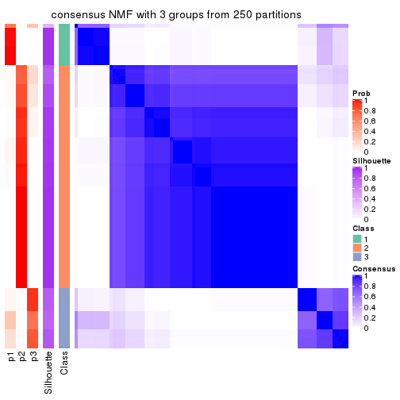
consensus_heatmap(res, k = 4)
consensus_heatmap(res, k = 5)
consensus_heatmap(res, k = 6)
Heatmaps for the membership of samples in all partitions to see how consistent they are:
membership_heatmap(res, k = 2)
membership_heatmap(res, k = 3)
membership_heatmap(res, k = 4)
membership_heatmap(res, k = 5)
membership_heatmap(res, k = 6)
As soon as we have had the classes for columns, we can look for signatures which are significantly different between classes which can be candidate marks for certain classes. Following are the heatmaps for signatures.
Signature heatmaps where rows are scaled:
get_signatures(res, k = 2)
get_signatures(res, k = 3)
get_signatures(res, k = 4)
get_signatures(res, k = 5)
get_signatures(res, k = 6)
Signature heatmaps where rows are not scaled:
get_signatures(res, k = 2, scale_rows = FALSE)
get_signatures(res, k = 3, scale_rows = FALSE)
get_signatures(res, k = 4, scale_rows = FALSE)
get_signatures(res, k = 5, scale_rows = FALSE)
get_signatures(res, k = 6, scale_rows = FALSE)
Compare the overlap of signatures from different k:
compare_signatures(res)
get_signature() returns a data frame invisibly. TO get the list of signatures, the function
call should be assigned to a variable explicitly. In following code, if plot argument is set
to FALSE, no heatmap is plotted while only the differential analysis is performed.
# code only for demonstration
tb = get_signature(res, k = ..., plot = FALSE)
An example of the output of tb is:
#> which_row fdr mean_1 mean_2 scaled_mean_1 scaled_mean_2 km
#> 1 38 0.042760348 8.373488 9.131774 -0.5533452 0.5164555 1
#> 2 40 0.018707592 7.106213 8.469186 -0.6173731 0.5762149 1
#> 3 55 0.019134737 10.221463 11.207825 -0.6159697 0.5749050 1
#> 4 59 0.006059896 5.921854 7.869574 -0.6899429 0.6439467 1
#> 5 60 0.018055526 8.928898 10.211722 -0.6204761 0.5791110 1
#> 6 98 0.009384629 15.714769 14.887706 0.6635654 -0.6193277 2
...
The columns in tb are:
which_row: row indices corresponding to the input matrix.fdr: FDR for the differential test. mean_x: The mean value in group x.scaled_mean_x: The mean value in group x after rows are scaled.km: Row groups if k-means clustering is applied to rows.UMAP plot which shows how samples are separated.
dimension_reduction(res, k = 2, method = "UMAP")
dimension_reduction(res, k = 3, method = "UMAP")
dimension_reduction(res, k = 4, method = "UMAP")
dimension_reduction(res, k = 5, method = "UMAP")
dimension_reduction(res, k = 6, method = "UMAP")

Following heatmap shows how subgroups are split when increasing k:
collect_classes(res)
If matrix rows can be associated to genes, consider to use functional_enrichment(res,
...) to perform function enrichment for the signature genes. See this vignette for more detailed explanations.
sessionInfo()
#> R version 3.6.0 (2019-04-26)
#> Platform: x86_64-pc-linux-gnu (64-bit)
#> Running under: CentOS Linux 7 (Core)
#>
#> Matrix products: default
#> BLAS: /usr/lib64/libblas.so.3.4.2
#> LAPACK: /usr/lib64/liblapack.so.3.4.2
#>
#> locale:
#> [1] LC_CTYPE=en_GB.UTF-8 LC_NUMERIC=C LC_TIME=en_GB.UTF-8
#> [4] LC_COLLATE=en_GB.UTF-8 LC_MONETARY=en_GB.UTF-8 LC_MESSAGES=en_GB.UTF-8
#> [7] LC_PAPER=en_GB.UTF-8 LC_NAME=C LC_ADDRESS=C
#> [10] LC_TELEPHONE=C LC_MEASUREMENT=en_GB.UTF-8 LC_IDENTIFICATION=C
#>
#> attached base packages:
#> [1] grid stats graphics grDevices utils datasets methods base
#>
#> other attached packages:
#> [1] genefilter_1.66.0 ComplexHeatmap_2.3.1 markdown_1.1 knitr_1.26
#> [5] GetoptLong_0.1.7 cola_1.3.2
#>
#> loaded via a namespace (and not attached):
#> [1] circlize_0.4.8 shape_1.4.4 xfun_0.11 slam_0.1-46
#> [5] lattice_0.20-38 splines_3.6.0 colorspace_1.4-1 vctrs_0.2.0
#> [9] stats4_3.6.0 blob_1.2.0 XML_3.98-1.20 survival_2.44-1.1
#> [13] rlang_0.4.2 pillar_1.4.2 DBI_1.0.0 BiocGenerics_0.30.0
#> [17] bit64_0.9-7 RColorBrewer_1.1-2 matrixStats_0.55.0 stringr_1.4.0
#> [21] GlobalOptions_0.1.1 evaluate_0.14 memoise_1.1.0 Biobase_2.44.0
#> [25] IRanges_2.18.3 parallel_3.6.0 AnnotationDbi_1.46.1 highr_0.8
#> [29] Rcpp_1.0.3 xtable_1.8-4 backports_1.1.5 S4Vectors_0.22.1
#> [33] annotate_1.62.0 skmeans_0.2-11 bit_1.1-14 microbenchmark_1.4-7
#> [37] brew_1.0-6 impute_1.58.0 rjson_0.2.20 png_0.1-7
#> [41] digest_0.6.23 stringi_1.4.3 polyclip_1.10-0 clue_0.3-57
#> [45] tools_3.6.0 bitops_1.0-6 magrittr_1.5 eulerr_6.0.0
#> [49] RCurl_1.95-4.12 RSQLite_2.1.4 tibble_2.1.3 cluster_2.1.0
#> [53] crayon_1.3.4 pkgconfig_2.0.3 zeallot_0.1.0 Matrix_1.2-17
#> [57] xml2_1.2.2 httr_1.4.1 R6_2.4.1 mclust_5.4.5
#> [61] compiler_3.6.0